Date: 2019-12-25 22:04:04 CET, cola version: 1.3.2
Document is loading...
All available functions which can be applied to this res_list object:
res_list
#> A 'ConsensusPartitionList' object with 24 methods.
#> On a matrix with 51941 rows and 70 columns.
#> Top rows are extracted by 'SD, CV, MAD, ATC' methods.
#> Subgroups are detected by 'hclust, kmeans, skmeans, pam, mclust, NMF' method.
#> Number of partitions are tried for k = 2, 3, 4, 5, 6.
#> Performed in total 30000 partitions by row resampling.
#>
#> Following methods can be applied to this 'ConsensusPartitionList' object:
#> [1] "cola_report" "collect_classes" "collect_plots" "collect_stats"
#> [5] "colnames" "functional_enrichment" "get_anno_col" "get_anno"
#> [9] "get_classes" "get_matrix" "get_membership" "get_stats"
#> [13] "is_best_k" "is_stable_k" "ncol" "nrow"
#> [17] "rownames" "show" "suggest_best_k" "test_to_known_factors"
#> [21] "top_rows_heatmap" "top_rows_overlap"
#>
#> You can get result for a single method by, e.g. object["SD", "hclust"] or object["SD:hclust"]
#> or a subset of methods by object[c("SD", "CV")], c("hclust", "kmeans")]
The call of run_all_consensus_partition_methods() was:
#> run_all_consensus_partition_methods(data = mat, mc.cores = 4, anno = anno)
Dimension of the input matrix:
mat = get_matrix(res_list)
dim(mat)
#> [1] 51941 70
The density distribution for each sample is visualized as in one column in the following heatmap. The clustering is based on the distance which is the Kolmogorov-Smirnov statistic between two distributions.
library(ComplexHeatmap)
densityHeatmap(mat, top_annotation = HeatmapAnnotation(df = get_anno(res_list),
col = get_anno_col(res_list)), ylab = "value", cluster_columns = TRUE, show_column_names = FALSE,
mc.cores = 4)
Folowing table shows the best k (number of partitions) for each combination
of top-value methods and partition methods. Clicking on the method name in
the table goes to the section for a single combination of methods.
The cola vignette explains the definition of the metrics used for determining the best number of partitions.
suggest_best_k(res_list)
| The best k | 1-PAC | Mean silhouette | Concordance | ||
|---|---|---|---|---|---|
| ATC:pam | 3 | 1.000 | 0.970 | 0.987 | ** |
| MAD:kmeans | 2 | 0.969 | 0.941 | 0.973 | ** |
| ATC:mclust | 2 | 0.963 | 0.940 | 0.968 | ** |
| CV:kmeans | 2 | 0.940 | 0.940 | 0.974 | * |
| SD:kmeans | 2 | 0.885 | 0.934 | 0.966 | |
| SD:skmeans | 2 | 0.879 | 0.911 | 0.963 | |
| MAD:NMF | 2 | 0.798 | 0.901 | 0.956 | |
| CV:NMF | 2 | 0.791 | 0.854 | 0.941 | |
| MAD:pam | 2 | 0.780 | 0.880 | 0.947 | |
| ATC:NMF | 2 | 0.778 | 0.912 | 0.959 | |
| MAD:skmeans | 2 | 0.741 | 0.911 | 0.958 | |
| CV:skmeans | 2 | 0.691 | 0.864 | 0.941 | |
| SD:pam | 2 | 0.691 | 0.857 | 0.936 | |
| ATC:skmeans | 2 | 0.691 | 0.928 | 0.959 | |
| SD:NMF | 2 | 0.597 | 0.812 | 0.920 | |
| ATC:hclust | 5 | 0.517 | 0.739 | 0.799 | |
| ATC:kmeans | 2 | 0.484 | 0.852 | 0.908 | |
| SD:mclust | 2 | 0.448 | 0.704 | 0.822 | |
| MAD:hclust | 2 | 0.426 | 0.757 | 0.880 | |
| CV:pam | 2 | 0.418 | 0.787 | 0.895 | |
| SD:hclust | 2 | 0.394 | 0.746 | 0.883 | |
| CV:hclust | 2 | 0.352 | 0.715 | 0.863 | |
| MAD:mclust | 2 | 0.351 | 0.701 | 0.798 | |
| CV:mclust | 3 | 0.333 | 0.665 | 0.715 |
**: 1-PAC > 0.95, *: 1-PAC > 0.9
Cumulative distribution function curves of consensus matrix for all methods.
collect_plots(res_list, fun = plot_ecdf)
Consensus heatmaps for all methods. (What is a consensus heatmap?)
collect_plots(res_list, k = 2, fun = consensus_heatmap, mc.cores = 4)
collect_plots(res_list, k = 3, fun = consensus_heatmap, mc.cores = 4)
collect_plots(res_list, k = 4, fun = consensus_heatmap, mc.cores = 4)
collect_plots(res_list, k = 5, fun = consensus_heatmap, mc.cores = 4)
collect_plots(res_list, k = 6, fun = consensus_heatmap, mc.cores = 4)
Membership heatmaps for all methods. (What is a membership heatmap?)
collect_plots(res_list, k = 2, fun = membership_heatmap, mc.cores = 4)
collect_plots(res_list, k = 3, fun = membership_heatmap, mc.cores = 4)
collect_plots(res_list, k = 4, fun = membership_heatmap, mc.cores = 4)
collect_plots(res_list, k = 5, fun = membership_heatmap, mc.cores = 4)
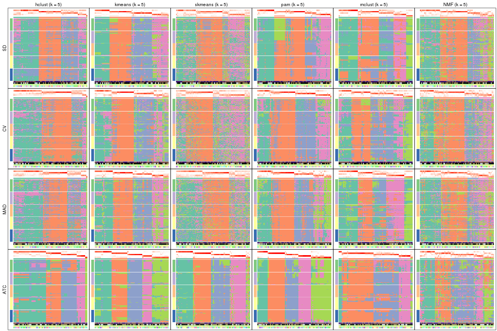
collect_plots(res_list, k = 6, fun = membership_heatmap, mc.cores = 4)
Signature heatmaps for all methods. (What is a signature heatmap?)
Note in following heatmaps, rows are scaled.
collect_plots(res_list, k = 2, fun = get_signatures, mc.cores = 4)
collect_plots(res_list, k = 3, fun = get_signatures, mc.cores = 4)
collect_plots(res_list, k = 4, fun = get_signatures, mc.cores = 4)
collect_plots(res_list, k = 5, fun = get_signatures, mc.cores = 4)
collect_plots(res_list, k = 6, fun = get_signatures, mc.cores = 4)
The statistics used for measuring the stability of consensus partitioning. (How are they defined?)
get_stats(res_list, k = 2)
#> k 1-PAC mean_silhouette concordance area_increased Rand Jaccard
#> SD:NMF 2 0.597 0.812 0.920 0.498 0.496 0.496
#> CV:NMF 2 0.791 0.854 0.941 0.502 0.493 0.493
#> MAD:NMF 2 0.798 0.901 0.956 0.502 0.496 0.496
#> ATC:NMF 2 0.778 0.912 0.959 0.480 0.519 0.519
#> SD:skmeans 2 0.879 0.911 0.963 0.506 0.494 0.494
#> CV:skmeans 2 0.691 0.864 0.941 0.506 0.494 0.494
#> MAD:skmeans 2 0.741 0.911 0.958 0.505 0.496 0.496
#> ATC:skmeans 2 0.691 0.928 0.959 0.507 0.493 0.493
#> SD:mclust 2 0.448 0.704 0.822 0.484 0.499 0.499
#> CV:mclust 2 0.723 0.839 0.920 0.382 0.627 0.627
#> MAD:mclust 2 0.351 0.701 0.798 0.462 0.499 0.499
#> ATC:mclust 2 0.963 0.940 0.968 0.294 0.731 0.731
#> SD:kmeans 2 0.885 0.934 0.966 0.493 0.508 0.508
#> CV:kmeans 2 0.940 0.940 0.974 0.493 0.508 0.508
#> MAD:kmeans 2 0.969 0.941 0.973 0.494 0.503 0.503
#> ATC:kmeans 2 0.484 0.852 0.908 0.490 0.503 0.503
#> SD:pam 2 0.691 0.857 0.936 0.502 0.493 0.493
#> CV:pam 2 0.418 0.787 0.895 0.484 0.499 0.499
#> MAD:pam 2 0.780 0.880 0.947 0.504 0.496 0.496
#> ATC:pam 2 0.627 0.889 0.922 0.481 0.496 0.496
#> SD:hclust 2 0.394 0.746 0.883 0.457 0.526 0.526
#> CV:hclust 2 0.352 0.715 0.863 0.476 0.508 0.508
#> MAD:hclust 2 0.426 0.757 0.880 0.463 0.508 0.508
#> ATC:hclust 2 0.573 0.869 0.896 0.270 0.658 0.658
get_stats(res_list, k = 3)
#> k 1-PAC mean_silhouette concordance area_increased Rand Jaccard
#> SD:NMF 3 0.533 0.736 0.859 0.334 0.735 0.516
#> CV:NMF 3 0.402 0.606 0.783 0.301 0.794 0.608
#> MAD:NMF 3 0.456 0.688 0.825 0.328 0.753 0.539
#> ATC:NMF 3 0.672 0.810 0.906 0.369 0.713 0.497
#> SD:skmeans 3 0.463 0.589 0.786 0.304 0.774 0.572
#> CV:skmeans 3 0.392 0.591 0.751 0.298 0.853 0.710
#> MAD:skmeans 3 0.386 0.505 0.720 0.306 0.865 0.734
#> ATC:skmeans 3 0.867 0.879 0.948 0.332 0.735 0.510
#> SD:mclust 3 0.350 0.696 0.737 0.257 1.000 1.000
#> CV:mclust 3 0.333 0.665 0.715 0.450 0.795 0.699
#> MAD:mclust 3 0.386 0.430 0.665 0.327 0.855 0.710
#> ATC:mclust 3 0.397 0.536 0.792 0.560 0.930 0.905
#> SD:kmeans 3 0.577 0.596 0.793 0.344 0.727 0.505
#> CV:kmeans 3 0.527 0.720 0.852 0.346 0.738 0.521
#> MAD:kmeans 3 0.495 0.588 0.781 0.343 0.748 0.533
#> ATC:kmeans 3 0.547 0.790 0.875 0.324 0.632 0.400
#> SD:pam 3 0.566 0.779 0.877 0.291 0.860 0.719
#> CV:pam 3 0.418 0.687 0.819 0.375 0.738 0.517
#> MAD:pam 3 0.402 0.322 0.576 0.313 0.754 0.543
#> ATC:pam 3 1.000 0.970 0.987 0.314 0.755 0.558
#> SD:hclust 3 0.306 0.417 0.756 0.265 0.927 0.866
#> CV:hclust 3 0.288 0.521 0.775 0.208 0.983 0.967
#> MAD:hclust 3 0.276 0.480 0.745 0.287 0.928 0.864
#> ATC:hclust 3 0.249 0.529 0.665 1.019 0.699 0.543
get_stats(res_list, k = 4)
#> k 1-PAC mean_silhouette concordance area_increased Rand Jaccard
#> SD:NMF 4 0.488 0.505 0.726 0.1058 0.868 0.641
#> CV:NMF 4 0.391 0.456 0.678 0.1128 0.907 0.748
#> MAD:NMF 4 0.469 0.529 0.709 0.1118 0.975 0.925
#> ATC:NMF 4 0.439 0.326 0.593 0.1126 0.798 0.494
#> SD:skmeans 4 0.420 0.508 0.682 0.1104 0.873 0.655
#> CV:skmeans 4 0.377 0.417 0.624 0.1179 0.931 0.821
#> MAD:skmeans 4 0.390 0.370 0.617 0.1151 0.863 0.665
#> ATC:skmeans 4 0.899 0.885 0.949 0.1250 0.801 0.479
#> SD:mclust 4 0.430 0.459 0.639 0.1580 0.771 0.547
#> CV:mclust 4 0.346 0.478 0.677 0.2418 0.704 0.494
#> MAD:mclust 4 0.425 0.544 0.669 0.1686 0.833 0.564
#> ATC:mclust 4 0.262 0.571 0.734 0.2814 0.636 0.484
#> SD:kmeans 4 0.615 0.721 0.816 0.1135 0.834 0.549
#> CV:kmeans 4 0.552 0.570 0.754 0.1047 0.890 0.694
#> MAD:kmeans 4 0.580 0.719 0.820 0.1244 0.832 0.543
#> ATC:kmeans 4 0.624 0.725 0.834 0.1415 0.824 0.546
#> SD:pam 4 0.575 0.541 0.776 0.1132 0.844 0.605
#> CV:pam 4 0.497 0.608 0.785 0.1058 0.885 0.671
#> MAD:pam 4 0.519 0.609 0.794 0.1264 0.757 0.412
#> ATC:pam 4 0.743 0.840 0.907 0.1647 0.896 0.717
#> SD:hclust 4 0.314 0.414 0.671 0.0996 0.939 0.876
#> CV:hclust 4 0.290 0.478 0.726 0.0978 0.851 0.724
#> MAD:hclust 4 0.312 0.423 0.689 0.0954 0.904 0.806
#> ATC:hclust 4 0.307 0.684 0.720 0.1634 0.856 0.676
get_stats(res_list, k = 5)
#> k 1-PAC mean_silhouette concordance area_increased Rand Jaccard
#> SD:NMF 5 0.473 0.434 0.660 0.0538 0.919 0.729
#> CV:NMF 5 0.452 0.349 0.630 0.0609 0.935 0.792
#> MAD:NMF 5 0.469 0.407 0.616 0.0638 0.908 0.714
#> ATC:NMF 5 0.442 0.369 0.646 0.0745 0.829 0.468
#> SD:skmeans 5 0.437 0.386 0.622 0.0631 0.939 0.794
#> CV:skmeans 5 0.392 0.294 0.558 0.0659 0.923 0.773
#> MAD:skmeans 5 0.388 0.332 0.563 0.0624 0.832 0.548
#> ATC:skmeans 5 0.800 0.721 0.863 0.0469 0.946 0.788
#> SD:mclust 5 0.515 0.566 0.708 0.0733 0.855 0.550
#> CV:mclust 5 0.455 0.544 0.691 0.1061 0.753 0.386
#> MAD:mclust 5 0.518 0.568 0.681 0.0819 0.882 0.581
#> ATC:mclust 5 0.428 0.716 0.796 0.1513 0.855 0.659
#> SD:kmeans 5 0.632 0.607 0.798 0.0505 0.980 0.919
#> CV:kmeans 5 0.563 0.454 0.708 0.0553 0.925 0.744
#> MAD:kmeans 5 0.617 0.593 0.749 0.0590 0.948 0.798
#> ATC:kmeans 5 0.720 0.806 0.854 0.0650 0.903 0.637
#> SD:pam 5 0.562 0.556 0.769 0.0369 0.932 0.775
#> CV:pam 5 0.516 0.585 0.775 0.0204 0.982 0.931
#> MAD:pam 5 0.533 0.512 0.727 0.0323 0.964 0.858
#> ATC:pam 5 0.802 0.834 0.905 0.0805 0.823 0.445
#> SD:hclust 5 0.359 0.476 0.675 0.0956 0.762 0.492
#> CV:hclust 5 0.342 0.514 0.676 0.0830 0.861 0.692
#> MAD:hclust 5 0.359 0.433 0.637 0.0858 0.839 0.632
#> ATC:hclust 5 0.517 0.739 0.799 0.1374 0.897 0.736
get_stats(res_list, k = 6)
#> k 1-PAC mean_silhouette concordance area_increased Rand Jaccard
#> SD:NMF 6 0.494 0.369 0.600 0.0329 0.976 0.906
#> CV:NMF 6 0.476 0.342 0.564 0.0428 0.924 0.742
#> MAD:NMF 6 0.493 0.362 0.576 0.0408 0.956 0.835
#> ATC:NMF 6 0.508 0.346 0.585 0.0481 0.872 0.491
#> SD:skmeans 6 0.471 0.342 0.567 0.0391 0.903 0.664
#> CV:skmeans 6 0.413 0.252 0.508 0.0413 0.932 0.770
#> MAD:skmeans 6 0.438 0.280 0.525 0.0449 0.893 0.647
#> ATC:skmeans 6 0.743 0.652 0.797 0.0307 0.962 0.833
#> SD:mclust 6 0.661 0.640 0.778 0.0607 0.946 0.759
#> CV:mclust 6 0.538 0.579 0.696 0.0566 0.946 0.773
#> MAD:mclust 6 0.621 0.567 0.737 0.0527 0.945 0.740
#> ATC:mclust 6 0.432 0.343 0.577 0.1047 0.876 0.630
#> SD:kmeans 6 0.655 0.664 0.773 0.0380 0.966 0.862
#> CV:kmeans 6 0.588 0.491 0.712 0.0370 0.886 0.578
#> MAD:kmeans 6 0.632 0.454 0.692 0.0358 0.958 0.817
#> ATC:kmeans 6 0.753 0.698 0.831 0.0365 0.972 0.867
#> SD:pam 6 0.552 0.490 0.763 0.0155 0.961 0.860
#> CV:pam 6 0.520 0.580 0.752 0.0149 1.000 1.000
#> MAD:pam 6 0.538 0.496 0.722 0.0169 0.969 0.865
#> ATC:pam 6 0.763 0.632 0.783 0.0356 0.977 0.889
#> SD:hclust 6 0.410 0.492 0.703 0.0612 0.938 0.779
#> CV:hclust 6 0.387 0.417 0.631 0.0539 0.933 0.801
#> MAD:hclust 6 0.404 0.372 0.627 0.0641 0.861 0.588
#> ATC:hclust 6 0.616 0.624 0.799 0.0688 0.938 0.783
Following heatmap plots the partition for each combination of methods and the lightness correspond to the silhouette scores for samples in each method. On top the consensus subgroup is inferred from all methods by taking the mean silhouette scores as weight.
collect_stats(res_list, k = 2)
collect_stats(res_list, k = 3)
collect_stats(res_list, k = 4)
collect_stats(res_list, k = 5)
collect_stats(res_list, k = 6)
Collect partitions from all methods:
collect_classes(res_list, k = 2)
collect_classes(res_list, k = 3)
collect_classes(res_list, k = 4)
collect_classes(res_list, k = 5)
collect_classes(res_list, k = 6)
Overlap of top rows from different top-row methods:
top_rows_overlap(res_list, top_n = 1000, method = "euler")
top_rows_overlap(res_list, top_n = 2000, method = "euler")
top_rows_overlap(res_list, top_n = 3000, method = "euler")
top_rows_overlap(res_list, top_n = 4000, method = "euler")
top_rows_overlap(res_list, top_n = 5000, method = "euler")
Also visualize the correspondance of rankings between different top-row methods:
top_rows_overlap(res_list, top_n = 1000, method = "correspondance")
top_rows_overlap(res_list, top_n = 2000, method = "correspondance")
top_rows_overlap(res_list, top_n = 3000, method = "correspondance")
top_rows_overlap(res_list, top_n = 4000, method = "correspondance")
top_rows_overlap(res_list, top_n = 5000, method = "correspondance")
Heatmaps of the top rows:
top_rows_heatmap(res_list, top_n = 1000)

top_rows_heatmap(res_list, top_n = 2000)
top_rows_heatmap(res_list, top_n = 3000)
top_rows_heatmap(res_list, top_n = 4000)
top_rows_heatmap(res_list, top_n = 5000)
Test correlation between subgroups and known annotations. If the known annotation is numeric, one-way ANOVA test is applied, and if the known annotation is discrete, chi-squared contingency table test is applied.
test_to_known_factors(res_list, k = 2)
#> n age(p) time(p) tissue(p) individual(p) k
#> SD:NMF 62 0.10821 0.05338 2.74e-01 0.041624 2
#> CV:NMF 64 0.02512 0.04233 1.00e+00 0.015054 2
#> MAD:NMF 66 0.01697 0.03921 1.00e+00 0.008133 2
#> ATC:NMF 69 0.00101 0.57721 6.28e-01 0.000073 2
#> SD:skmeans 68 0.01545 0.06584 1.00e+00 0.016817 2
#> CV:skmeans 67 0.01237 0.01686 1.00e+00 0.011921 2
#> MAD:skmeans 69 0.01531 0.01741 1.00e+00 0.012268 2
#> ATC:skmeans 70 0.00858 0.57771 8.21e-01 0.000987 2
#> SD:mclust 70 0.86699 0.72499 7.21e-13 0.774877 2
#> CV:mclust 64 0.08335 0.09536 1.00e+00 0.096889 2
#> MAD:mclust 62 1.00000 0.40661 6.81e-12 0.618463 2
#> ATC:mclust 69 0.15720 0.01244 8.75e-01 0.043750 2
#> SD:kmeans 69 0.03314 0.05068 1.00e+00 0.008091 2
#> CV:kmeans 68 0.04682 0.06593 1.00e+00 0.009739 2
#> MAD:kmeans 68 0.02313 0.03978 1.00e+00 0.008004 2
#> ATC:kmeans 69 0.00375 0.77857 5.75e-01 0.000334 2
#> SD:pam 67 0.03174 0.00470 8.81e-01 0.020636 2
#> CV:pam 65 0.07162 0.00214 8.32e-01 0.102867 2
#> MAD:pam 67 0.00359 0.01601 5.51e-01 0.016246 2
#> ATC:pam 70 0.00236 0.91333 2.46e-01 0.000845 2
#> SD:hclust 62 0.02352 0.03902 5.99e-01 0.002946 2
#> CV:hclust 59 0.03182 0.01766 1.00e+00 0.015498 2
#> MAD:hclust 61 0.02865 0.00479 1.00e+00 0.008955 2
#> ATC:hclust 69 0.04250 0.32015 7.50e-01 0.020055 2
test_to_known_factors(res_list, k = 3)
#> n age(p) time(p) tissue(p) individual(p) k
#> SD:NMF 62 0.00745 0.053377 6.97e-07 0.01663 3
#> CV:NMF 49 0.01621 0.049513 2.85e-03 0.00510 3
#> MAD:NMF 60 0.00107 0.054008 9.10e-07 0.00889 3
#> ATC:NMF 65 0.02864 0.000449 8.03e-01 0.02358 3
#> SD:skmeans 47 0.00746 0.140075 2.09e-04 0.00127 3
#> CV:skmeans 49 0.06863 0.005765 4.42e-01 0.28579 3
#> MAD:skmeans 35 0.02106 0.043164 5.52e-01 0.02690 3
#> ATC:skmeans 66 0.05599 0.003290 8.21e-01 0.05784 3
#> SD:mclust 69 0.79535 0.731726 1.16e-12 0.71949 3
#> CV:mclust 60 0.10041 0.011416 1.00e+00 0.04514 3
#> MAD:mclust 37 0.21203 0.031736 3.69e-07 0.44485 3
#> ATC:mclust 45 0.20315 0.056403 7.07e-01 0.14595 3
#> SD:kmeans 50 0.03276 0.068095 3.43e-02 0.08870 3
#> CV:kmeans 62 0.06051 0.024711 5.46e-01 0.04064 3
#> MAD:kmeans 51 0.13865 0.016158 1.77e-01 0.02620 3
#> ATC:kmeans 65 0.07637 0.008417 9.34e-01 0.08167 3
#> SD:pam 65 0.01149 0.016317 4.84e-04 0.00289 3
#> CV:pam 60 0.18591 0.010793 1.79e-03 0.10464 3
#> MAD:pam 32 0.13994 0.095088 6.23e-01 0.17637 3
#> ATC:pam 70 0.02785 0.025611 9.57e-01 0.01186 3
#> SD:hclust 26 0.37420 0.035303 1.42e-01 0.09924 3
#> CV:hclust 46 0.03575 0.006363 5.46e-01 0.03278 3
#> MAD:hclust 40 0.51363 0.000485 1.52e-01 0.11598 3
#> ATC:hclust 55 0.07709 0.000260 8.48e-01 0.06757 3
test_to_known_factors(res_list, k = 4)
#> n age(p) time(p) tissue(p) individual(p) k
#> SD:NMF 39 0.594821 0.000192 2.63e-02 0.136741 4
#> CV:NMF 35 1.000000 0.005691 1.62e-01 0.137794 4
#> MAD:NMF 46 0.002239 0.009575 1.22e-04 0.044379 4
#> ATC:NMF 25 0.804681 0.451307 4.91e-01 0.123489 4
#> SD:skmeans 41 0.006921 0.163836 8.92e-05 0.000646 4
#> CV:skmeans 30 0.064570 0.178397 6.80e-01 0.076791 4
#> MAD:skmeans 20 NA NA NA NA 4
#> ATC:skmeans 66 0.038364 0.009087 9.06e-01 0.008001 4
#> SD:mclust 32 0.016633 0.149223 1.24e-06 0.032933 4
#> CV:mclust 36 0.068623 0.020718 6.27e-02 0.013376 4
#> MAD:mclust 51 0.014242 0.251537 1.90e-09 0.081085 4
#> ATC:mclust 56 0.000208 0.078589 6.37e-01 0.011410 4
#> SD:kmeans 65 0.004394 0.079453 4.79e-06 0.005140 4
#> CV:kmeans 46 0.245693 0.026017 4.29e-02 0.092890 4
#> MAD:kmeans 63 0.000771 0.091382 4.72e-06 0.004258 4
#> ATC:kmeans 61 0.022199 0.011783 7.41e-01 0.006280 4
#> SD:pam 45 0.302032 0.002991 3.04e-03 0.057315 4
#> CV:pam 54 0.036198 0.117998 3.31e-04 0.010019 4
#> MAD:pam 56 0.087135 0.002751 1.25e-03 0.057090 4
#> ATC:pam 67 0.040682 0.001426 9.92e-01 0.045176 4
#> SD:hclust 26 0.374200 0.171575 8.32e-01 0.059026 4
#> CV:hclust 33 0.917454 0.009438 3.66e-01 0.034457 4
#> MAD:hclust 25 NA NA NA NA 4
#> ATC:hclust 58 0.021506 0.080656 8.45e-01 0.009338 4
test_to_known_factors(res_list, k = 5)
#> n age(p) time(p) tissue(p) individual(p) k
#> SD:NMF 35 3.69e-01 0.00103 3.11e-02 0.12659 5
#> CV:NMF 24 1.00e+00 0.00153 1.95e-01 0.30144 5
#> MAD:NMF 27 1.28e-01 0.03622 3.35e-02 0.26074 5
#> ATC:NMF 26 1.87e-01 0.01898 1.86e-02 0.35735 5
#> SD:skmeans 26 2.42e-02 0.05398 4.21e-02 0.02336 5
#> CV:skmeans 19 NA NA NA NA 5
#> MAD:skmeans 18 NA NA NA NA 5
#> ATC:skmeans 58 1.64e-02 0.01457 8.13e-01 0.00575 5
#> SD:mclust 55 1.46e-02 0.17050 4.96e-09 0.00163 5
#> CV:mclust 51 6.67e-03 0.17028 3.92e-02 0.03515 5
#> MAD:mclust 48 2.10e-03 0.33143 3.10e-08 0.00607 5
#> ATC:mclust 63 7.49e-05 0.05170 7.75e-01 0.01240 5
#> SD:kmeans 51 1.91e-01 0.03794 1.41e-03 0.01910 5
#> CV:kmeans 33 3.89e-01 0.17651 2.98e-01 0.01281 5
#> MAD:kmeans 54 2.67e-02 0.08071 3.18e-04 0.02266 5
#> ATC:kmeans 67 2.43e-03 0.01153 9.35e-01 0.01799 5
#> SD:pam 47 3.68e-01 0.00274 1.03e-02 0.18506 5
#> CV:pam 51 5.17e-02 0.05744 9.07e-04 0.01008 5
#> MAD:pam 45 5.99e-01 0.01587 8.58e-03 0.36729 5
#> ATC:pam 67 2.62e-03 0.05116 6.81e-01 0.01930 5
#> SD:hclust 43 1.17e-01 0.44185 3.09e-02 0.01850 5
#> CV:hclust 46 5.17e-01 0.04424 4.58e-01 0.02388 5
#> MAD:hclust 29 1.76e-01 0.10275 3.16e-02 0.20015 5
#> ATC:hclust 67 5.54e-04 0.00735 9.41e-01 0.00202 5
test_to_known_factors(res_list, k = 6)
#> n age(p) time(p) tissue(p) individual(p) k
#> SD:NMF 24 1.00000 0.00190 2.14e-01 0.37951 6
#> CV:NMF 24 1.00000 0.00153 1.95e-01 0.30144 6
#> MAD:NMF 19 1.00000 0.00818 3.56e-01 0.22600 6
#> ATC:NMF 13 0.14618 0.08255 4.86e-03 0.14230 6
#> SD:skmeans 22 0.93966 0.09919 3.79e-01 0.27211 6
#> CV:skmeans 16 NA NA NA NA 6
#> MAD:skmeans 13 NA NA NA NA 6
#> ATC:skmeans 55 0.00856 0.01969 8.81e-01 0.01124 6
#> SD:mclust 60 0.02794 0.06465 1.75e-09 0.08518 6
#> CV:mclust 51 0.02880 0.02834 2.56e-01 0.12612 6
#> MAD:mclust 50 0.06206 0.18819 2.29e-07 0.10998 6
#> ATC:mclust 17 0.00220 0.02044 7.55e-01 0.08603 6
#> SD:kmeans 57 0.04225 0.02439 1.35e-04 0.06469 6
#> CV:kmeans 34 0.14921 0.07481 3.03e-01 0.00271 6
#> MAD:kmeans 38 0.13137 0.27984 3.33e-02 0.03806 6
#> ATC:kmeans 61 0.00800 0.01462 9.28e-01 0.01645 6
#> SD:pam 40 0.48783 0.02478 3.90e-04 0.34506 6
#> CV:pam 51 0.05165 0.05744 9.07e-04 0.01008 6
#> MAD:pam 42 0.47529 0.00502 2.57e-02 0.27451 6
#> ATC:pam 57 0.00142 0.36037 3.07e-01 0.00534 6
#> SD:hclust 41 0.40262 0.05062 3.34e-02 0.02955 6
#> CV:hclust 29 0.26026 0.01696 7.72e-01 0.00511 6
#> MAD:hclust 28 0.35041 0.03671 4.99e-02 0.15650 6
#> ATC:hclust 54 0.01112 0.01928 9.03e-01 0.01357 6
The object with results only for a single top-value method and a single partition method can be extracted as:
res = res_list["SD", "hclust"]
# you can also extract it by
# res = res_list["SD:hclust"]
A summary of res and all the functions that can be applied to it:
res
#> A 'ConsensusPartition' object with k = 2, 3, 4, 5, 6.
#> On a matrix with 51941 rows and 70 columns.
#> Top rows (1000, 2000, 3000, 4000, 5000) are extracted by 'SD' method.
#> Subgroups are detected by 'hclust' method.
#> Performed in total 1250 partitions by row resampling.
#> Best k for subgroups seems to be 2.
#>
#> Following methods can be applied to this 'ConsensusPartition' object:
#> [1] "cola_report" "collect_classes" "collect_plots"
#> [4] "collect_stats" "colnames" "compare_signatures"
#> [7] "consensus_heatmap" "dimension_reduction" "functional_enrichment"
#> [10] "get_anno_col" "get_anno" "get_classes"
#> [13] "get_consensus" "get_matrix" "get_membership"
#> [16] "get_param" "get_signatures" "get_stats"
#> [19] "is_best_k" "is_stable_k" "membership_heatmap"
#> [22] "ncol" "nrow" "plot_ecdf"
#> [25] "rownames" "select_partition_number" "show"
#> [28] "suggest_best_k" "test_to_known_factors"
collect_plots() function collects all the plots made from res for all k (number of partitions)
into one single page to provide an easy and fast comparison between different k.
collect_plots(res)
The plots are:
k and the heatmap of
predicted classes for each k.k.k.k.All the plots in panels can be made by individual functions and they are plotted later in this section.
select_partition_number() produces several plots showing different
statistics for choosing “optimized” k. There are following statistics:
k;k, the area increased is defined as \(A_k - A_{k-1}\).The detailed explanations of these statistics can be found in the cola vignette.
Generally speaking, lower PAC score, higher mean silhouette score or higher
concordance corresponds to better partition. Rand index and Jaccard index
measure how similar the current partition is compared to partition with k-1.
If they are too similar, we won't accept k is better than k-1.
select_partition_number(res)
The numeric values for all these statistics can be obtained by get_stats().
get_stats(res)
#> k 1-PAC mean_silhouette concordance area_increased Rand Jaccard
#> 2 2 0.394 0.746 0.883 0.4566 0.526 0.526
#> 3 3 0.306 0.417 0.756 0.2653 0.927 0.866
#> 4 4 0.314 0.414 0.671 0.0996 0.939 0.876
#> 5 5 0.359 0.476 0.675 0.0956 0.762 0.492
#> 6 6 0.410 0.492 0.703 0.0612 0.938 0.779
suggest_best_k() suggests the best \(k\) based on these statistics. The rules are as follows:
suggest_best_k(res)
#> [1] 2
Following shows the table of the partitions (You need to click the show/hide
code output link to see it). The membership matrix (columns with name p*)
is inferred by
clue::cl_consensus()
function with the SE method. Basically the value in the membership matrix
represents the probability to belong to a certain group. The finall class
label for an item is determined with the group with highest probability it
belongs to.
In get_classes() function, the entropy is calculated from the membership
matrix and the silhouette score is calculated from the consensus matrix.
cbind(get_classes(res, k = 2), get_membership(res, k = 2))
#> class entropy silhouette p1 p2
#> GSM701770 1 0.0000 0.8630 1.000 0.000
#> GSM701769 1 0.0000 0.8630 1.000 0.000
#> GSM701768 1 0.2043 0.8631 0.968 0.032
#> GSM701767 1 0.9170 0.5386 0.668 0.332
#> GSM701766 1 0.9954 0.1726 0.540 0.460
#> GSM701806 1 0.0000 0.8630 1.000 0.000
#> GSM701805 1 0.0000 0.8630 1.000 0.000
#> GSM701804 1 0.3879 0.8532 0.924 0.076
#> GSM701803 1 0.2043 0.8625 0.968 0.032
#> GSM701775 1 0.5519 0.8155 0.872 0.128
#> GSM701774 1 0.5946 0.8052 0.856 0.144
#> GSM701773 2 0.0938 0.8468 0.012 0.988
#> GSM701772 1 0.9732 0.3510 0.596 0.404
#> GSM701771 1 0.0000 0.8630 1.000 0.000
#> GSM701810 1 0.0000 0.8630 1.000 0.000
#> GSM701809 1 0.5629 0.8185 0.868 0.132
#> GSM701808 1 0.0000 0.8630 1.000 0.000
#> GSM701807 1 0.0000 0.8630 1.000 0.000
#> GSM701780 1 0.3584 0.8553 0.932 0.068
#> GSM701779 2 0.0000 0.8419 0.000 1.000
#> GSM701778 2 0.3879 0.8331 0.076 0.924
#> GSM701777 1 0.9963 0.1553 0.536 0.464
#> GSM701776 1 0.0000 0.8630 1.000 0.000
#> GSM701816 1 0.5294 0.8277 0.880 0.120
#> GSM701815 2 0.1633 0.8463 0.024 0.976
#> GSM701814 2 0.1414 0.8480 0.020 0.980
#> GSM701813 1 0.4022 0.8495 0.920 0.080
#> GSM701812 1 0.4690 0.8398 0.900 0.100
#> GSM701811 1 0.1633 0.8639 0.976 0.024
#> GSM701786 1 0.0000 0.8630 1.000 0.000
#> GSM701785 2 0.5629 0.7996 0.132 0.868
#> GSM701784 2 0.8763 0.5799 0.296 0.704
#> GSM701783 1 0.0000 0.8630 1.000 0.000
#> GSM701782 2 1.0000 -0.0671 0.500 0.500
#> GSM701781 1 0.8861 0.5969 0.696 0.304
#> GSM701822 2 0.0672 0.8459 0.008 0.992
#> GSM701821 2 0.9209 0.5016 0.336 0.664
#> GSM701820 1 0.4939 0.8351 0.892 0.108
#> GSM701819 1 0.2236 0.8614 0.964 0.036
#> GSM701818 1 0.0000 0.8630 1.000 0.000
#> GSM701817 1 0.3879 0.8522 0.924 0.076
#> GSM701790 1 0.0376 0.8634 0.996 0.004
#> GSM701789 1 0.0376 0.8634 0.996 0.004
#> GSM701788 1 0.0000 0.8630 1.000 0.000
#> GSM701787 2 0.9775 0.3045 0.412 0.588
#> GSM701824 1 0.0000 0.8630 1.000 0.000
#> GSM701823 2 0.1633 0.8477 0.024 0.976
#> GSM701791 2 0.0672 0.8458 0.008 0.992
#> GSM701793 1 0.0376 0.8634 0.996 0.004
#> GSM701792 1 0.6531 0.7806 0.832 0.168
#> GSM701825 1 0.0672 0.8623 0.992 0.008
#> GSM701827 2 0.0000 0.8419 0.000 1.000
#> GSM701826 2 0.7299 0.7352 0.204 0.796
#> GSM701797 1 0.9000 0.5705 0.684 0.316
#> GSM701796 1 0.3584 0.8521 0.932 0.068
#> GSM701795 2 0.1633 0.8477 0.024 0.976
#> GSM701794 2 0.0376 0.8442 0.004 0.996
#> GSM701831 2 0.5842 0.7963 0.140 0.860
#> GSM701830 2 0.0672 0.8460 0.008 0.992
#> GSM701829 1 0.9522 0.4447 0.628 0.372
#> GSM701828 2 0.5842 0.7970 0.140 0.860
#> GSM701798 2 0.1843 0.8476 0.028 0.972
#> GSM701802 2 0.9988 0.0436 0.480 0.520
#> GSM701801 1 0.7299 0.7435 0.796 0.204
#> GSM701800 1 0.8763 0.6107 0.704 0.296
#> GSM701799 2 0.0000 0.8419 0.000 1.000
#> GSM701832 2 0.7950 0.6844 0.240 0.760
#> GSM701835 1 0.9552 0.4344 0.624 0.376
#> GSM701834 2 0.5629 0.8022 0.132 0.868
#> GSM701833 2 0.0000 0.8419 0.000 1.000
cbind(get_classes(res, k = 3), get_membership(res, k = 3))
#> class entropy silhouette p1 p2 p3
#> GSM701770 1 0.2959 0.4989 0.900 0.000 0.100
#> GSM701769 1 0.2165 0.5124 0.936 0.000 0.064
#> GSM701768 1 0.3406 0.4894 0.904 0.028 0.068
#> GSM701767 1 0.9654 -0.2512 0.464 0.288 0.248
#> GSM701766 2 0.9847 -0.1084 0.340 0.404 0.256
#> GSM701806 1 0.3619 0.4959 0.864 0.000 0.136
#> GSM701805 1 0.5650 0.4238 0.688 0.000 0.312
#> GSM701804 3 0.6783 0.0000 0.396 0.016 0.588
#> GSM701803 1 0.5797 0.4516 0.712 0.008 0.280
#> GSM701775 1 0.6107 0.2995 0.784 0.100 0.116
#> GSM701774 1 0.7199 0.1679 0.712 0.108 0.180
#> GSM701773 2 0.0983 0.7706 0.004 0.980 0.016
#> GSM701772 1 0.9888 -0.2364 0.388 0.348 0.264
#> GSM701771 1 0.4235 0.4528 0.824 0.000 0.176
#> GSM701810 1 0.4452 0.4967 0.808 0.000 0.192
#> GSM701809 1 0.7323 0.3624 0.700 0.104 0.196
#> GSM701808 1 0.5058 0.4752 0.756 0.000 0.244
#> GSM701807 1 0.5926 0.3508 0.644 0.000 0.356
#> GSM701780 1 0.5178 0.3691 0.808 0.028 0.164
#> GSM701779 2 0.1031 0.7576 0.000 0.976 0.024
#> GSM701778 2 0.3253 0.7620 0.052 0.912 0.036
#> GSM701777 2 0.9823 -0.0842 0.336 0.412 0.252
#> GSM701776 1 0.5905 0.3557 0.648 0.000 0.352
#> GSM701816 1 0.7677 0.3133 0.660 0.096 0.244
#> GSM701815 2 0.2703 0.7587 0.016 0.928 0.056
#> GSM701814 2 0.1950 0.7688 0.008 0.952 0.040
#> GSM701813 1 0.7056 0.3797 0.656 0.044 0.300
#> GSM701812 1 0.7303 0.3487 0.680 0.076 0.244
#> GSM701811 1 0.3610 0.4968 0.888 0.016 0.096
#> GSM701786 1 0.2165 0.5114 0.936 0.000 0.064
#> GSM701785 2 0.4665 0.7253 0.100 0.852 0.048
#> GSM701784 2 0.7657 0.5160 0.208 0.676 0.116
#> GSM701783 1 0.2448 0.5154 0.924 0.000 0.076
#> GSM701782 2 0.9776 0.0221 0.284 0.440 0.276
#> GSM701781 1 0.9537 -0.1778 0.488 0.256 0.256
#> GSM701822 2 0.1399 0.7652 0.004 0.968 0.028
#> GSM701821 2 0.8153 0.4455 0.240 0.632 0.128
#> GSM701820 1 0.6827 0.4145 0.728 0.080 0.192
#> GSM701819 1 0.5928 0.4369 0.696 0.008 0.296
#> GSM701818 1 0.5216 0.4460 0.740 0.000 0.260
#> GSM701817 1 0.6772 0.3829 0.664 0.032 0.304
#> GSM701790 1 0.1647 0.4956 0.960 0.004 0.036
#> GSM701789 1 0.1525 0.4975 0.964 0.004 0.032
#> GSM701788 1 0.2711 0.5034 0.912 0.000 0.088
#> GSM701787 2 0.8847 0.2580 0.300 0.552 0.148
#> GSM701824 1 0.4504 0.4965 0.804 0.000 0.196
#> GSM701823 2 0.2261 0.7591 0.000 0.932 0.068
#> GSM701791 2 0.1411 0.7699 0.000 0.964 0.036
#> GSM701793 1 0.1525 0.4975 0.964 0.004 0.032
#> GSM701792 1 0.7163 0.2072 0.720 0.136 0.144
#> GSM701825 1 0.6008 0.3132 0.628 0.000 0.372
#> GSM701827 2 0.1031 0.7576 0.000 0.976 0.024
#> GSM701826 2 0.6093 0.6628 0.156 0.776 0.068
#> GSM701797 1 0.9560 -0.2029 0.484 0.260 0.256
#> GSM701796 1 0.5267 0.4031 0.816 0.044 0.140
#> GSM701795 2 0.1774 0.7722 0.024 0.960 0.016
#> GSM701794 2 0.0983 0.7696 0.004 0.980 0.016
#> GSM701831 2 0.4982 0.7263 0.096 0.840 0.064
#> GSM701830 2 0.1267 0.7670 0.004 0.972 0.024
#> GSM701829 1 0.9767 -0.1970 0.428 0.328 0.244
#> GSM701828 2 0.4925 0.7282 0.080 0.844 0.076
#> GSM701798 2 0.1999 0.7708 0.012 0.952 0.036
#> GSM701802 2 0.9472 0.0980 0.316 0.480 0.204
#> GSM701801 1 0.8423 -0.0399 0.616 0.156 0.228
#> GSM701800 1 0.9357 -0.1298 0.516 0.248 0.236
#> GSM701799 2 0.1163 0.7629 0.000 0.972 0.028
#> GSM701832 2 0.6576 0.6161 0.192 0.740 0.068
#> GSM701835 1 0.9767 -0.2209 0.428 0.328 0.244
#> GSM701834 2 0.4807 0.7311 0.092 0.848 0.060
#> GSM701833 2 0.1031 0.7576 0.000 0.976 0.024
cbind(get_classes(res, k = 4), get_membership(res, k = 4))
#> class entropy silhouette p1 p2 p3 p4
#> GSM701770 1 0.314 0.2182 0.860 0.000 0.008 0.132
#> GSM701769 1 0.166 0.3948 0.944 0.000 0.004 0.052
#> GSM701768 1 0.249 0.4538 0.920 0.004 0.028 0.048
#> GSM701767 1 0.929 0.2670 0.440 0.220 0.132 0.208
#> GSM701766 2 0.951 0.0286 0.320 0.328 0.112 0.240
#> GSM701806 1 0.363 0.1648 0.828 0.000 0.012 0.160
#> GSM701805 4 0.551 0.6481 0.472 0.000 0.016 0.512
#> GSM701804 3 0.434 0.0000 0.052 0.000 0.808 0.140
#> GSM701803 1 0.580 -0.2576 0.508 0.008 0.016 0.468
#> GSM701775 1 0.581 0.4810 0.760 0.068 0.060 0.112
#> GSM701774 1 0.667 0.4791 0.696 0.076 0.068 0.160
#> GSM701773 2 0.152 0.7416 0.000 0.956 0.024 0.020
#> GSM701772 1 0.951 0.0883 0.368 0.276 0.120 0.236
#> GSM701771 1 0.439 -0.1646 0.740 0.000 0.008 0.252
#> GSM701810 1 0.496 0.0485 0.684 0.000 0.016 0.300
#> GSM701809 1 0.717 0.3422 0.576 0.088 0.028 0.308
#> GSM701808 1 0.528 -0.3173 0.616 0.000 0.016 0.368
#> GSM701807 4 0.572 0.8231 0.420 0.000 0.028 0.552
#> GSM701780 1 0.446 0.4868 0.804 0.012 0.028 0.156
#> GSM701779 2 0.180 0.7182 0.000 0.944 0.016 0.040
#> GSM701778 2 0.347 0.7423 0.048 0.884 0.024 0.044
#> GSM701777 2 0.950 0.0470 0.316 0.336 0.112 0.236
#> GSM701776 4 0.556 0.8174 0.436 0.000 0.020 0.544
#> GSM701816 1 0.705 0.3695 0.560 0.064 0.032 0.344
#> GSM701815 2 0.335 0.7170 0.016 0.880 0.020 0.084
#> GSM701814 2 0.197 0.7377 0.008 0.940 0.008 0.044
#> GSM701813 1 0.655 0.1912 0.496 0.028 0.028 0.448
#> GSM701812 1 0.671 0.3670 0.580 0.044 0.032 0.344
#> GSM701811 1 0.345 0.4254 0.864 0.004 0.024 0.108
#> GSM701786 1 0.198 0.3456 0.928 0.000 0.004 0.068
#> GSM701785 2 0.466 0.7112 0.096 0.820 0.024 0.060
#> GSM701784 2 0.755 0.5471 0.196 0.620 0.064 0.120
#> GSM701783 1 0.227 0.3783 0.912 0.000 0.004 0.084
#> GSM701782 2 0.957 0.1389 0.264 0.356 0.124 0.256
#> GSM701781 1 0.907 0.2922 0.376 0.224 0.072 0.328
#> GSM701822 2 0.149 0.7312 0.004 0.956 0.004 0.036
#> GSM701821 2 0.780 0.4872 0.220 0.572 0.040 0.168
#> GSM701820 1 0.682 0.3337 0.604 0.060 0.032 0.304
#> GSM701819 1 0.565 0.0128 0.532 0.004 0.016 0.448
#> GSM701818 1 0.528 -0.6071 0.528 0.000 0.008 0.464
#> GSM701817 1 0.661 0.0964 0.508 0.024 0.036 0.432
#> GSM701790 1 0.130 0.4336 0.964 0.000 0.020 0.016
#> GSM701789 1 0.117 0.4305 0.968 0.000 0.020 0.012
#> GSM701788 1 0.265 0.2732 0.888 0.000 0.004 0.108
#> GSM701787 2 0.851 0.3207 0.288 0.492 0.072 0.148
#> GSM701824 1 0.496 0.0503 0.684 0.000 0.016 0.300
#> GSM701823 2 0.274 0.7121 0.000 0.904 0.036 0.060
#> GSM701791 2 0.193 0.7407 0.000 0.940 0.024 0.036
#> GSM701793 1 0.117 0.4305 0.968 0.000 0.020 0.012
#> GSM701792 1 0.679 0.4772 0.696 0.084 0.088 0.132
#> GSM701825 4 0.622 0.6907 0.316 0.000 0.076 0.608
#> GSM701827 2 0.140 0.7202 0.000 0.956 0.004 0.040
#> GSM701826 2 0.546 0.6690 0.144 0.752 0.008 0.096
#> GSM701797 1 0.892 0.3404 0.464 0.196 0.088 0.252
#> GSM701796 1 0.505 0.4729 0.792 0.020 0.068 0.120
#> GSM701795 2 0.222 0.7473 0.020 0.936 0.024 0.020
#> GSM701794 2 0.171 0.7416 0.004 0.952 0.020 0.024
#> GSM701831 2 0.479 0.7147 0.076 0.808 0.016 0.100
#> GSM701830 2 0.130 0.7360 0.004 0.964 0.004 0.028
#> GSM701829 1 0.886 0.2172 0.384 0.284 0.048 0.284
#> GSM701828 2 0.427 0.7155 0.064 0.832 0.008 0.096
#> GSM701798 2 0.227 0.7461 0.008 0.932 0.028 0.032
#> GSM701802 2 0.895 0.2258 0.304 0.432 0.084 0.180
#> GSM701801 1 0.776 0.4576 0.600 0.112 0.076 0.212
#> GSM701800 1 0.866 0.4127 0.480 0.188 0.068 0.264
#> GSM701799 2 0.189 0.7295 0.000 0.940 0.016 0.044
#> GSM701832 2 0.610 0.6417 0.176 0.712 0.020 0.092
#> GSM701835 1 0.916 0.1787 0.408 0.268 0.084 0.240
#> GSM701834 2 0.436 0.7218 0.072 0.828 0.008 0.092
#> GSM701833 2 0.140 0.7202 0.000 0.956 0.004 0.040
cbind(get_classes(res, k = 5), get_membership(res, k = 5))
#> class entropy silhouette p1 p2 p3 p4 p5
#> GSM701770 1 0.2179 0.47680 0.896 0.000 0.004 0.100 0.000
#> GSM701769 1 0.2172 0.56848 0.916 0.000 0.060 0.020 0.004
#> GSM701768 1 0.2890 0.58078 0.836 0.000 0.160 0.000 0.004
#> GSM701767 3 0.6415 0.50837 0.300 0.080 0.580 0.012 0.028
#> GSM701766 3 0.5579 0.66508 0.152 0.144 0.688 0.004 0.012
#> GSM701806 1 0.2424 0.44255 0.868 0.000 0.000 0.132 0.000
#> GSM701805 4 0.5392 0.56072 0.364 0.000 0.036 0.584 0.016
#> GSM701804 5 0.1828 0.00000 0.004 0.000 0.032 0.028 0.936
#> GSM701803 4 0.7012 0.49679 0.312 0.000 0.212 0.456 0.020
#> GSM701775 1 0.4838 0.38499 0.640 0.008 0.332 0.016 0.004
#> GSM701774 1 0.5669 0.20385 0.552 0.004 0.388 0.040 0.016
#> GSM701773 2 0.2833 0.80831 0.000 0.852 0.140 0.004 0.004
#> GSM701772 3 0.5776 0.64329 0.204 0.112 0.664 0.004 0.016
#> GSM701771 1 0.3579 0.23898 0.756 0.000 0.004 0.240 0.000
#> GSM701810 1 0.6068 -0.02320 0.516 0.000 0.112 0.368 0.004
#> GSM701809 1 0.8073 0.03711 0.412 0.044 0.284 0.232 0.028
#> GSM701808 1 0.6192 -0.35799 0.512 0.000 0.084 0.384 0.020
#> GSM701807 4 0.4418 0.56737 0.332 0.000 0.000 0.652 0.016
#> GSM701780 1 0.4914 0.49800 0.672 0.000 0.280 0.040 0.008
#> GSM701779 2 0.0833 0.79340 0.000 0.976 0.016 0.004 0.004
#> GSM701778 2 0.3883 0.75537 0.008 0.744 0.244 0.000 0.004
#> GSM701777 3 0.5464 0.66539 0.148 0.152 0.688 0.000 0.012
#> GSM701776 4 0.4449 0.56285 0.352 0.000 0.004 0.636 0.008
#> GSM701816 3 0.7515 -0.25996 0.360 0.008 0.360 0.248 0.024
#> GSM701815 2 0.3340 0.72819 0.000 0.824 0.156 0.016 0.004
#> GSM701814 2 0.2115 0.81153 0.000 0.916 0.068 0.008 0.008
#> GSM701813 1 0.7486 -0.31196 0.332 0.000 0.312 0.324 0.032
#> GSM701812 1 0.7269 0.07187 0.384 0.000 0.344 0.248 0.024
#> GSM701811 1 0.3795 0.55969 0.808 0.000 0.144 0.044 0.004
#> GSM701786 1 0.1568 0.53616 0.944 0.000 0.020 0.036 0.000
#> GSM701785 2 0.4834 0.65411 0.040 0.692 0.260 0.004 0.004
#> GSM701784 3 0.6103 0.07335 0.092 0.444 0.456 0.004 0.004
#> GSM701783 1 0.2308 0.55591 0.912 0.000 0.048 0.036 0.004
#> GSM701782 3 0.5403 0.64263 0.108 0.164 0.708 0.004 0.016
#> GSM701781 3 0.7882 0.33406 0.180 0.100 0.508 0.196 0.016
#> GSM701822 2 0.1569 0.80914 0.000 0.944 0.044 0.008 0.004
#> GSM701821 3 0.6381 0.20455 0.092 0.396 0.492 0.012 0.008
#> GSM701820 1 0.7801 0.04587 0.440 0.028 0.264 0.240 0.028
#> GSM701819 4 0.7335 0.34780 0.360 0.000 0.224 0.384 0.032
#> GSM701818 4 0.6071 0.55507 0.388 0.000 0.088 0.512 0.012
#> GSM701817 4 0.7494 0.32289 0.312 0.000 0.276 0.376 0.036
#> GSM701790 1 0.2517 0.58126 0.884 0.000 0.104 0.004 0.008
#> GSM701789 1 0.2463 0.58088 0.888 0.000 0.100 0.004 0.008
#> GSM701788 1 0.1697 0.50670 0.932 0.000 0.008 0.060 0.000
#> GSM701787 3 0.6640 0.47625 0.184 0.316 0.492 0.004 0.004
#> GSM701824 1 0.5981 -0.00216 0.528 0.000 0.104 0.364 0.004
#> GSM701823 2 0.2986 0.76394 0.000 0.876 0.084 0.020 0.020
#> GSM701791 2 0.2787 0.81029 0.000 0.856 0.136 0.004 0.004
#> GSM701793 1 0.2463 0.58088 0.888 0.000 0.100 0.004 0.008
#> GSM701792 1 0.5357 0.23679 0.560 0.016 0.400 0.016 0.008
#> GSM701825 4 0.4140 0.07846 0.096 0.000 0.068 0.812 0.024
#> GSM701827 2 0.0162 0.79327 0.000 0.996 0.004 0.000 0.000
#> GSM701826 2 0.6175 0.53120 0.084 0.624 0.256 0.024 0.012
#> GSM701797 3 0.5112 0.54396 0.264 0.048 0.676 0.004 0.008
#> GSM701796 1 0.4535 0.52767 0.696 0.004 0.276 0.020 0.004
#> GSM701795 2 0.3205 0.80231 0.000 0.816 0.176 0.004 0.004
#> GSM701794 2 0.2646 0.81334 0.000 0.868 0.124 0.004 0.004
#> GSM701831 2 0.4693 0.68017 0.024 0.696 0.268 0.008 0.004
#> GSM701830 2 0.1571 0.81373 0.000 0.936 0.060 0.004 0.000
#> GSM701829 3 0.7973 0.51330 0.208 0.144 0.512 0.112 0.024
#> GSM701828 2 0.5579 0.69225 0.036 0.688 0.224 0.036 0.016
#> GSM701798 2 0.3387 0.79251 0.000 0.796 0.196 0.004 0.004
#> GSM701802 3 0.6015 0.56607 0.144 0.268 0.584 0.000 0.004
#> GSM701801 3 0.5300 0.14679 0.428 0.020 0.536 0.008 0.008
#> GSM701800 3 0.6731 0.45241 0.300 0.060 0.568 0.052 0.020
#> GSM701799 2 0.1662 0.81093 0.000 0.936 0.056 0.004 0.004
#> GSM701832 2 0.5611 0.34260 0.060 0.552 0.380 0.008 0.000
#> GSM701835 3 0.5746 0.62865 0.208 0.096 0.672 0.012 0.012
#> GSM701834 2 0.4441 0.69883 0.024 0.716 0.252 0.008 0.000
#> GSM701833 2 0.0404 0.79862 0.000 0.988 0.012 0.000 0.000
cbind(get_classes(res, k = 6), get_membership(res, k = 6))
#> class entropy silhouette p1 p2 p3 p4 p5 p6
#> GSM701770 1 0.2773 0.5921 0.828 0.000 0.004 0.004 0.164 0.000
#> GSM701769 1 0.1938 0.6668 0.920 0.000 0.036 0.004 0.040 0.000
#> GSM701768 1 0.2757 0.6644 0.848 0.000 0.136 0.004 0.008 0.004
#> GSM701767 3 0.5991 0.4684 0.252 0.052 0.616 0.048 0.024 0.008
#> GSM701766 3 0.4223 0.6410 0.116 0.112 0.760 0.012 0.000 0.000
#> GSM701806 1 0.3168 0.5695 0.804 0.000 0.000 0.024 0.172 0.000
#> GSM701805 5 0.4778 0.3746 0.208 0.000 0.012 0.080 0.696 0.004
#> GSM701804 6 0.0508 0.0000 0.000 0.000 0.004 0.000 0.012 0.984
#> GSM701803 5 0.4751 0.4487 0.084 0.000 0.156 0.028 0.728 0.004
#> GSM701775 1 0.4571 0.4233 0.628 0.008 0.332 0.000 0.028 0.004
#> GSM701774 1 0.5561 0.2061 0.524 0.000 0.392 0.028 0.044 0.012
#> GSM701773 2 0.2841 0.7901 0.000 0.824 0.164 0.012 0.000 0.000
#> GSM701772 3 0.4623 0.6236 0.164 0.076 0.736 0.016 0.004 0.004
#> GSM701771 1 0.4559 0.3819 0.664 0.000 0.004 0.060 0.272 0.000
#> GSM701810 1 0.6260 -0.1390 0.432 0.000 0.096 0.060 0.412 0.000
#> GSM701809 5 0.7757 0.3253 0.304 0.040 0.256 0.056 0.340 0.004
#> GSM701808 5 0.5948 0.4746 0.320 0.000 0.064 0.048 0.556 0.012
#> GSM701807 5 0.4949 0.0993 0.144 0.000 0.000 0.208 0.648 0.000
#> GSM701780 1 0.5235 0.4851 0.632 0.000 0.264 0.016 0.084 0.004
#> GSM701779 2 0.1092 0.7688 0.000 0.960 0.020 0.020 0.000 0.000
#> GSM701778 2 0.3831 0.7422 0.004 0.732 0.244 0.012 0.008 0.000
#> GSM701777 3 0.4039 0.6342 0.104 0.116 0.772 0.008 0.000 0.000
#> GSM701776 5 0.4982 0.1780 0.180 0.000 0.000 0.172 0.648 0.000
#> GSM701816 3 0.7281 -0.2297 0.240 0.008 0.372 0.044 0.324 0.012
#> GSM701815 2 0.4312 0.6813 0.000 0.764 0.132 0.072 0.032 0.000
#> GSM701814 2 0.2154 0.7945 0.004 0.908 0.064 0.020 0.004 0.000
#> GSM701813 5 0.6649 0.4936 0.140 0.000 0.284 0.056 0.508 0.012
#> GSM701812 3 0.7071 -0.2709 0.264 0.000 0.352 0.040 0.332 0.012
#> GSM701811 1 0.4380 0.6177 0.744 0.000 0.136 0.012 0.108 0.000
#> GSM701786 1 0.1588 0.6460 0.924 0.000 0.004 0.000 0.072 0.000
#> GSM701785 2 0.4290 0.6410 0.028 0.668 0.296 0.008 0.000 0.000
#> GSM701784 3 0.4978 0.0393 0.048 0.416 0.528 0.004 0.004 0.000
#> GSM701783 1 0.2231 0.6533 0.900 0.000 0.028 0.004 0.068 0.000
#> GSM701782 3 0.4098 0.6072 0.060 0.128 0.784 0.024 0.004 0.000
#> GSM701781 3 0.7307 0.2000 0.068 0.072 0.528 0.072 0.244 0.016
#> GSM701822 2 0.1707 0.7929 0.000 0.928 0.056 0.012 0.004 0.000
#> GSM701821 3 0.5660 0.1565 0.048 0.368 0.540 0.020 0.024 0.000
#> GSM701820 5 0.7600 0.3157 0.340 0.028 0.228 0.060 0.340 0.004
#> GSM701819 5 0.6264 0.5276 0.144 0.000 0.204 0.052 0.588 0.012
#> GSM701818 5 0.4993 0.4248 0.168 0.000 0.048 0.080 0.704 0.000
#> GSM701817 5 0.6979 0.4644 0.136 0.000 0.244 0.088 0.512 0.020
#> GSM701790 1 0.2145 0.6712 0.904 0.000 0.076 0.004 0.012 0.004
#> GSM701789 1 0.2089 0.6713 0.908 0.000 0.072 0.004 0.012 0.004
#> GSM701788 1 0.2053 0.6216 0.888 0.000 0.000 0.004 0.108 0.000
#> GSM701787 3 0.5654 0.4094 0.168 0.288 0.540 0.004 0.000 0.000
#> GSM701824 1 0.6223 -0.1172 0.444 0.000 0.092 0.060 0.404 0.000
#> GSM701823 2 0.4389 0.6418 0.004 0.768 0.072 0.132 0.016 0.008
#> GSM701791 2 0.2704 0.7937 0.000 0.844 0.140 0.016 0.000 0.000
#> GSM701793 1 0.2089 0.6713 0.908 0.000 0.072 0.004 0.012 0.004
#> GSM701792 1 0.5060 0.2667 0.548 0.016 0.400 0.004 0.028 0.004
#> GSM701825 4 0.3534 0.0000 0.008 0.000 0.000 0.716 0.276 0.000
#> GSM701827 2 0.0405 0.7727 0.000 0.988 0.004 0.008 0.000 0.000
#> GSM701826 2 0.5708 0.5402 0.052 0.596 0.296 0.028 0.028 0.000
#> GSM701797 3 0.4282 0.5466 0.204 0.020 0.744 0.012 0.012 0.008
#> GSM701796 1 0.4582 0.5448 0.668 0.004 0.280 0.004 0.040 0.004
#> GSM701795 2 0.3121 0.7865 0.004 0.804 0.180 0.012 0.000 0.000
#> GSM701794 2 0.2680 0.7955 0.004 0.856 0.124 0.016 0.000 0.000
#> GSM701831 2 0.4291 0.6664 0.008 0.676 0.292 0.012 0.012 0.000
#> GSM701830 2 0.1701 0.7968 0.000 0.920 0.072 0.008 0.000 0.000
#> GSM701829 3 0.7383 0.4852 0.160 0.112 0.540 0.048 0.132 0.008
#> GSM701828 2 0.5293 0.6786 0.028 0.660 0.244 0.036 0.032 0.000
#> GSM701798 2 0.3201 0.7752 0.000 0.780 0.208 0.012 0.000 0.000
#> GSM701802 3 0.5265 0.5289 0.100 0.228 0.652 0.004 0.012 0.004
#> GSM701801 3 0.4953 0.2184 0.368 0.008 0.584 0.008 0.024 0.008
#> GSM701800 3 0.5769 0.5021 0.220 0.020 0.648 0.036 0.068 0.008
#> GSM701799 2 0.1594 0.7907 0.000 0.932 0.052 0.016 0.000 0.000
#> GSM701832 2 0.5080 0.3433 0.028 0.516 0.432 0.012 0.012 0.000
#> GSM701835 3 0.4628 0.6210 0.144 0.060 0.756 0.012 0.020 0.008
#> GSM701834 2 0.4233 0.6844 0.008 0.688 0.280 0.012 0.012 0.000
#> GSM701833 2 0.0622 0.7781 0.000 0.980 0.012 0.008 0.000 0.000
Heatmaps for the consensus matrix. It visualizes the probability of two samples to be in a same group.
consensus_heatmap(res, k = 2)
consensus_heatmap(res, k = 3)
consensus_heatmap(res, k = 4)
consensus_heatmap(res, k = 5)
consensus_heatmap(res, k = 6)
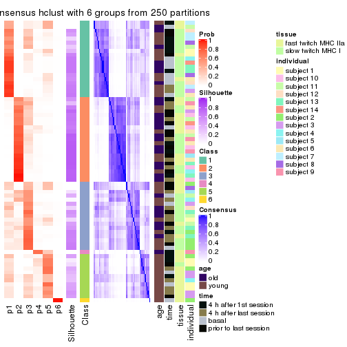
Heatmaps for the membership of samples in all partitions to see how consistent they are:
membership_heatmap(res, k = 2)
membership_heatmap(res, k = 3)
membership_heatmap(res, k = 4)
membership_heatmap(res, k = 5)
membership_heatmap(res, k = 6)
As soon as we have had the classes for columns, we can look for signatures which are significantly different between classes which can be candidate marks for certain classes. Following are the heatmaps for signatures.
Signature heatmaps where rows are scaled:
get_signatures(res, k = 2)
get_signatures(res, k = 3)

get_signatures(res, k = 4)
get_signatures(res, k = 5)
get_signatures(res, k = 6)
Signature heatmaps where rows are not scaled:
get_signatures(res, k = 2, scale_rows = FALSE)
get_signatures(res, k = 3, scale_rows = FALSE)
get_signatures(res, k = 4, scale_rows = FALSE)
get_signatures(res, k = 5, scale_rows = FALSE)
get_signatures(res, k = 6, scale_rows = FALSE)
Compare the overlap of signatures from different k:
compare_signatures(res)
get_signature() returns a data frame invisibly. TO get the list of signatures, the function
call should be assigned to a variable explicitly. In following code, if plot argument is set
to FALSE, no heatmap is plotted while only the differential analysis is performed.
# code only for demonstration
tb = get_signature(res, k = ..., plot = FALSE)
An example of the output of tb is:
#> which_row fdr mean_1 mean_2 scaled_mean_1 scaled_mean_2 km
#> 1 38 0.042760348 8.373488 9.131774 -0.5533452 0.5164555 1
#> 2 40 0.018707592 7.106213 8.469186 -0.6173731 0.5762149 1
#> 3 55 0.019134737 10.221463 11.207825 -0.6159697 0.5749050 1
#> 4 59 0.006059896 5.921854 7.869574 -0.6899429 0.6439467 1
#> 5 60 0.018055526 8.928898 10.211722 -0.6204761 0.5791110 1
#> 6 98 0.009384629 15.714769 14.887706 0.6635654 -0.6193277 2
...
The columns in tb are:
which_row: row indices corresponding to the input matrix.fdr: FDR for the differential test. mean_x: The mean value in group x.scaled_mean_x: The mean value in group x after rows are scaled.km: Row groups if k-means clustering is applied to rows.UMAP plot which shows how samples are separated.
dimension_reduction(res, k = 2, method = "UMAP")
dimension_reduction(res, k = 3, method = "UMAP")
dimension_reduction(res, k = 4, method = "UMAP")
dimension_reduction(res, k = 5, method = "UMAP")
dimension_reduction(res, k = 6, method = "UMAP")
Following heatmap shows how subgroups are split when increasing k:
collect_classes(res)
Test correlation between subgroups and known annotations. If the known annotation is numeric, one-way ANOVA test is applied, and if the known annotation is discrete, chi-squared contingency table test is applied.
test_to_known_factors(res)
#> n age(p) time(p) tissue(p) individual(p) k
#> SD:hclust 62 0.0235 0.0390 0.5990 0.00295 2
#> SD:hclust 26 0.3742 0.0353 0.1422 0.09924 3
#> SD:hclust 26 0.3742 0.1716 0.8324 0.05903 4
#> SD:hclust 43 0.1170 0.4419 0.0309 0.01850 5
#> SD:hclust 41 0.4026 0.0506 0.0334 0.02955 6
If matrix rows can be associated to genes, consider to use functional_enrichment(res,
...) to perform function enrichment for the signature genes. See this vignette for more detailed explanations.
The object with results only for a single top-value method and a single partition method can be extracted as:
res = res_list["SD", "kmeans"]
# you can also extract it by
# res = res_list["SD:kmeans"]
A summary of res and all the functions that can be applied to it:
res
#> A 'ConsensusPartition' object with k = 2, 3, 4, 5, 6.
#> On a matrix with 51941 rows and 70 columns.
#> Top rows (1000, 2000, 3000, 4000, 5000) are extracted by 'SD' method.
#> Subgroups are detected by 'kmeans' method.
#> Performed in total 1250 partitions by row resampling.
#> Best k for subgroups seems to be 2.
#>
#> Following methods can be applied to this 'ConsensusPartition' object:
#> [1] "cola_report" "collect_classes" "collect_plots"
#> [4] "collect_stats" "colnames" "compare_signatures"
#> [7] "consensus_heatmap" "dimension_reduction" "functional_enrichment"
#> [10] "get_anno_col" "get_anno" "get_classes"
#> [13] "get_consensus" "get_matrix" "get_membership"
#> [16] "get_param" "get_signatures" "get_stats"
#> [19] "is_best_k" "is_stable_k" "membership_heatmap"
#> [22] "ncol" "nrow" "plot_ecdf"
#> [25] "rownames" "select_partition_number" "show"
#> [28] "suggest_best_k" "test_to_known_factors"
collect_plots() function collects all the plots made from res for all k (number of partitions)
into one single page to provide an easy and fast comparison between different k.
collect_plots(res)
The plots are:
k and the heatmap of
predicted classes for each k.k.k.k.All the plots in panels can be made by individual functions and they are plotted later in this section.
select_partition_number() produces several plots showing different
statistics for choosing “optimized” k. There are following statistics:
k;k, the area increased is defined as \(A_k - A_{k-1}\).The detailed explanations of these statistics can be found in the cola vignette.
Generally speaking, lower PAC score, higher mean silhouette score or higher
concordance corresponds to better partition. Rand index and Jaccard index
measure how similar the current partition is compared to partition with k-1.
If they are too similar, we won't accept k is better than k-1.
select_partition_number(res)
The numeric values for all these statistics can be obtained by get_stats().
get_stats(res)
#> k 1-PAC mean_silhouette concordance area_increased Rand Jaccard
#> 2 2 0.885 0.934 0.966 0.4934 0.508 0.508
#> 3 3 0.577 0.596 0.793 0.3439 0.727 0.505
#> 4 4 0.615 0.721 0.816 0.1135 0.834 0.549
#> 5 5 0.632 0.607 0.798 0.0505 0.980 0.919
#> 6 6 0.655 0.664 0.773 0.0380 0.966 0.862
suggest_best_k() suggests the best \(k\) based on these statistics. The rules are as follows:
suggest_best_k(res)
#> [1] 2
Following shows the table of the partitions (You need to click the show/hide
code output link to see it). The membership matrix (columns with name p*)
is inferred by
clue::cl_consensus()
function with the SE method. Basically the value in the membership matrix
represents the probability to belong to a certain group. The finall class
label for an item is determined with the group with highest probability it
belongs to.
In get_classes() function, the entropy is calculated from the membership
matrix and the silhouette score is calculated from the consensus matrix.
cbind(get_classes(res, k = 2), get_membership(res, k = 2))
#> class entropy silhouette p1 p2
#> GSM701770 1 0.0000 0.961 1.000 0.000
#> GSM701769 1 0.0000 0.961 1.000 0.000
#> GSM701768 1 0.0000 0.961 1.000 0.000
#> GSM701767 1 0.3584 0.918 0.932 0.068
#> GSM701766 2 0.7528 0.736 0.216 0.784
#> GSM701806 1 0.0000 0.961 1.000 0.000
#> GSM701805 1 0.0938 0.960 0.988 0.012
#> GSM701804 1 0.0938 0.960 0.988 0.012
#> GSM701803 1 0.0938 0.960 0.988 0.012
#> GSM701775 1 0.0000 0.961 1.000 0.000
#> GSM701774 1 0.0000 0.961 1.000 0.000
#> GSM701773 2 0.0938 0.969 0.012 0.988
#> GSM701772 1 0.3733 0.914 0.928 0.072
#> GSM701771 1 0.0000 0.961 1.000 0.000
#> GSM701810 1 0.0938 0.960 0.988 0.012
#> GSM701809 1 0.7883 0.725 0.764 0.236
#> GSM701808 1 0.0938 0.960 0.988 0.012
#> GSM701807 1 0.0938 0.960 0.988 0.012
#> GSM701780 1 0.0000 0.961 1.000 0.000
#> GSM701779 2 0.0938 0.969 0.012 0.988
#> GSM701778 2 0.0938 0.969 0.012 0.988
#> GSM701777 2 0.7602 0.729 0.220 0.780
#> GSM701776 1 0.0938 0.960 0.988 0.012
#> GSM701816 1 0.1414 0.958 0.980 0.020
#> GSM701815 2 0.0000 0.969 0.000 1.000
#> GSM701814 2 0.0000 0.969 0.000 1.000
#> GSM701813 1 0.1414 0.958 0.980 0.020
#> GSM701812 1 0.1184 0.960 0.984 0.016
#> GSM701811 1 0.0000 0.961 1.000 0.000
#> GSM701786 1 0.0000 0.961 1.000 0.000
#> GSM701785 2 0.0938 0.969 0.012 0.988
#> GSM701784 2 0.0938 0.969 0.012 0.988
#> GSM701783 1 0.0000 0.961 1.000 0.000
#> GSM701782 2 0.0938 0.969 0.012 0.988
#> GSM701781 1 0.9580 0.397 0.620 0.380
#> GSM701822 2 0.0000 0.969 0.000 1.000
#> GSM701821 2 0.0000 0.969 0.000 1.000
#> GSM701820 1 0.2423 0.947 0.960 0.040
#> GSM701819 1 0.0938 0.960 0.988 0.012
#> GSM701818 1 0.0938 0.960 0.988 0.012
#> GSM701817 1 0.0938 0.960 0.988 0.012
#> GSM701790 1 0.0000 0.961 1.000 0.000
#> GSM701789 1 0.0000 0.961 1.000 0.000
#> GSM701788 1 0.0000 0.961 1.000 0.000
#> GSM701787 2 0.1184 0.967 0.016 0.984
#> GSM701824 1 0.0938 0.960 0.988 0.012
#> GSM701823 2 0.0000 0.969 0.000 1.000
#> GSM701791 2 0.0938 0.969 0.012 0.988
#> GSM701793 1 0.0000 0.961 1.000 0.000
#> GSM701792 1 0.6148 0.830 0.848 0.152
#> GSM701825 1 0.0938 0.960 0.988 0.012
#> GSM701827 2 0.0000 0.969 0.000 1.000
#> GSM701826 2 0.0000 0.969 0.000 1.000
#> GSM701797 1 0.4690 0.887 0.900 0.100
#> GSM701796 1 0.0000 0.961 1.000 0.000
#> GSM701795 2 0.0938 0.969 0.012 0.988
#> GSM701794 2 0.0938 0.969 0.012 0.988
#> GSM701831 2 0.0000 0.969 0.000 1.000
#> GSM701830 2 0.0000 0.969 0.000 1.000
#> GSM701829 2 0.7674 0.704 0.224 0.776
#> GSM701828 2 0.0000 0.969 0.000 1.000
#> GSM701798 2 0.0938 0.969 0.012 0.988
#> GSM701802 2 0.0938 0.969 0.012 0.988
#> GSM701801 1 0.0672 0.958 0.992 0.008
#> GSM701800 1 0.3114 0.927 0.944 0.056
#> GSM701799 2 0.0938 0.969 0.012 0.988
#> GSM701832 2 0.0000 0.969 0.000 1.000
#> GSM701835 1 0.7602 0.735 0.780 0.220
#> GSM701834 2 0.0000 0.969 0.000 1.000
#> GSM701833 2 0.0000 0.969 0.000 1.000
cbind(get_classes(res, k = 3), get_membership(res, k = 3))
#> class entropy silhouette p1 p2 p3
#> GSM701770 1 0.0000 0.61845 1.000 0.000 0.000
#> GSM701769 1 0.2356 0.57645 0.928 0.000 0.072
#> GSM701768 1 0.5810 0.25229 0.664 0.000 0.336
#> GSM701767 3 0.5706 0.54277 0.320 0.000 0.680
#> GSM701766 3 0.7676 0.55624 0.112 0.216 0.672
#> GSM701806 1 0.3619 0.61401 0.864 0.000 0.136
#> GSM701805 1 0.5497 0.57685 0.708 0.000 0.292
#> GSM701804 3 0.5905 -0.07626 0.352 0.000 0.648
#> GSM701803 1 0.6244 0.41428 0.560 0.000 0.440
#> GSM701775 1 0.5810 0.25347 0.664 0.000 0.336
#> GSM701774 3 0.5948 0.50053 0.360 0.000 0.640
#> GSM701773 2 0.1163 0.95349 0.000 0.972 0.028
#> GSM701772 3 0.5956 0.53911 0.324 0.004 0.672
#> GSM701771 1 0.0237 0.61917 0.996 0.000 0.004
#> GSM701810 1 0.6026 0.53635 0.624 0.000 0.376
#> GSM701809 3 0.3572 0.49004 0.040 0.060 0.900
#> GSM701808 1 0.5859 0.54315 0.656 0.000 0.344
#> GSM701807 1 0.5497 0.57685 0.708 0.000 0.292
#> GSM701780 3 0.5926 0.50603 0.356 0.000 0.644
#> GSM701779 2 0.1163 0.95349 0.000 0.972 0.028
#> GSM701778 2 0.1289 0.95236 0.000 0.968 0.032
#> GSM701777 3 0.7699 0.55752 0.116 0.212 0.672
#> GSM701776 1 0.5465 0.57814 0.712 0.000 0.288
#> GSM701816 3 0.3910 0.44597 0.104 0.020 0.876
#> GSM701815 2 0.1163 0.94805 0.000 0.972 0.028
#> GSM701814 2 0.0237 0.95566 0.000 0.996 0.004
#> GSM701813 3 0.6126 0.17391 0.268 0.020 0.712
#> GSM701812 3 0.5938 0.21561 0.248 0.020 0.732
#> GSM701811 1 0.4291 0.47479 0.820 0.000 0.180
#> GSM701786 1 0.0237 0.61782 0.996 0.000 0.004
#> GSM701785 2 0.3116 0.87908 0.000 0.892 0.108
#> GSM701784 3 0.6309 0.03969 0.000 0.500 0.500
#> GSM701783 1 0.0237 0.61782 0.996 0.000 0.004
#> GSM701782 2 0.6026 0.35100 0.000 0.624 0.376
#> GSM701781 3 0.7297 0.57659 0.188 0.108 0.704
#> GSM701822 2 0.0237 0.95566 0.000 0.996 0.004
#> GSM701821 2 0.1411 0.94216 0.000 0.964 0.036
#> GSM701820 3 0.4249 0.40403 0.108 0.028 0.864
#> GSM701819 3 0.5926 -0.00992 0.356 0.000 0.644
#> GSM701818 1 0.5905 0.53579 0.648 0.000 0.352
#> GSM701817 3 0.6313 0.09662 0.308 0.016 0.676
#> GSM701790 1 0.5760 0.27119 0.672 0.000 0.328
#> GSM701789 1 0.5760 0.27119 0.672 0.000 0.328
#> GSM701788 1 0.0000 0.61845 1.000 0.000 0.000
#> GSM701787 3 0.7690 0.29487 0.048 0.416 0.536
#> GSM701824 1 0.5497 0.58742 0.708 0.000 0.292
#> GSM701823 2 0.0424 0.95453 0.000 0.992 0.008
#> GSM701791 2 0.1163 0.95349 0.000 0.972 0.028
#> GSM701793 1 0.5706 0.28393 0.680 0.000 0.320
#> GSM701792 3 0.6200 0.54819 0.312 0.012 0.676
#> GSM701825 1 0.5529 0.57524 0.704 0.000 0.296
#> GSM701827 2 0.0000 0.95564 0.000 1.000 0.000
#> GSM701826 2 0.0424 0.95558 0.000 0.992 0.008
#> GSM701797 3 0.5929 0.54410 0.320 0.004 0.676
#> GSM701796 1 0.6062 0.11519 0.616 0.000 0.384
#> GSM701795 2 0.1163 0.95349 0.000 0.972 0.028
#> GSM701794 2 0.1163 0.95349 0.000 0.972 0.028
#> GSM701831 2 0.0592 0.95508 0.000 0.988 0.012
#> GSM701830 2 0.0237 0.95566 0.000 0.996 0.004
#> GSM701829 3 0.5763 0.52734 0.008 0.276 0.716
#> GSM701828 2 0.0747 0.95394 0.000 0.984 0.016
#> GSM701798 2 0.1163 0.95349 0.000 0.972 0.028
#> GSM701802 3 0.6432 0.26205 0.004 0.428 0.568
#> GSM701801 3 0.5785 0.53482 0.332 0.000 0.668
#> GSM701800 3 0.6129 0.54192 0.324 0.008 0.668
#> GSM701799 2 0.1163 0.95349 0.000 0.972 0.028
#> GSM701832 2 0.1529 0.93891 0.000 0.960 0.040
#> GSM701835 3 0.7421 0.57086 0.240 0.084 0.676
#> GSM701834 2 0.0237 0.95566 0.000 0.996 0.004
#> GSM701833 2 0.0000 0.95564 0.000 1.000 0.000
cbind(get_classes(res, k = 4), get_membership(res, k = 4))
#> class entropy silhouette p1 p2 p3 p4
#> GSM701770 1 0.3606 0.6991 0.844 0.000 0.024 0.132
#> GSM701769 1 0.4083 0.7160 0.832 0.000 0.068 0.100
#> GSM701768 1 0.5047 0.6491 0.668 0.000 0.316 0.016
#> GSM701767 3 0.2973 0.7826 0.096 0.000 0.884 0.020
#> GSM701766 3 0.2297 0.7971 0.024 0.032 0.932 0.012
#> GSM701806 1 0.3356 0.6266 0.824 0.000 0.000 0.176
#> GSM701805 4 0.4372 0.6319 0.268 0.000 0.004 0.728
#> GSM701804 4 0.4104 0.6804 0.088 0.000 0.080 0.832
#> GSM701803 4 0.3037 0.7147 0.100 0.000 0.020 0.880
#> GSM701775 1 0.5069 0.6489 0.664 0.000 0.320 0.016
#> GSM701774 3 0.4956 0.6706 0.188 0.000 0.756 0.056
#> GSM701773 2 0.2781 0.9047 0.016 0.904 0.072 0.008
#> GSM701772 3 0.2775 0.7843 0.084 0.000 0.896 0.020
#> GSM701771 1 0.3554 0.6919 0.844 0.000 0.020 0.136
#> GSM701810 4 0.4799 0.6664 0.224 0.000 0.032 0.744
#> GSM701809 4 0.6021 0.0495 0.016 0.016 0.480 0.488
#> GSM701808 4 0.3249 0.7082 0.140 0.000 0.008 0.852
#> GSM701807 4 0.4456 0.6215 0.280 0.000 0.004 0.716
#> GSM701780 3 0.5772 0.5084 0.260 0.000 0.672 0.068
#> GSM701779 2 0.2911 0.9045 0.016 0.900 0.072 0.012
#> GSM701778 2 0.3376 0.8918 0.016 0.868 0.108 0.008
#> GSM701777 3 0.1821 0.7979 0.008 0.032 0.948 0.012
#> GSM701776 4 0.4608 0.5955 0.304 0.000 0.004 0.692
#> GSM701816 4 0.5548 0.2175 0.012 0.004 0.448 0.536
#> GSM701815 2 0.4551 0.8057 0.012 0.804 0.148 0.036
#> GSM701814 2 0.0707 0.9112 0.000 0.980 0.000 0.020
#> GSM701813 4 0.4508 0.6624 0.016 0.004 0.216 0.764
#> GSM701812 4 0.4392 0.6645 0.012 0.004 0.216 0.768
#> GSM701811 1 0.5522 0.7214 0.716 0.000 0.204 0.080
#> GSM701786 1 0.3552 0.7016 0.848 0.000 0.024 0.128
#> GSM701785 3 0.5906 -0.0178 0.016 0.456 0.516 0.012
#> GSM701784 3 0.4090 0.7439 0.040 0.116 0.836 0.008
#> GSM701783 1 0.3552 0.7009 0.848 0.000 0.024 0.128
#> GSM701782 3 0.5691 0.5029 0.020 0.280 0.676 0.024
#> GSM701781 3 0.4410 0.7425 0.032 0.012 0.812 0.144
#> GSM701822 2 0.0707 0.9112 0.000 0.980 0.000 0.020
#> GSM701821 2 0.4104 0.7918 0.000 0.808 0.164 0.028
#> GSM701820 4 0.5055 0.6078 0.020 0.008 0.252 0.720
#> GSM701819 4 0.4127 0.7162 0.052 0.000 0.124 0.824
#> GSM701818 4 0.3157 0.7051 0.144 0.000 0.004 0.852
#> GSM701817 4 0.3836 0.6990 0.016 0.000 0.168 0.816
#> GSM701790 1 0.4980 0.6647 0.680 0.000 0.304 0.016
#> GSM701789 1 0.4980 0.6686 0.680 0.000 0.304 0.016
#> GSM701788 1 0.3552 0.7016 0.848 0.000 0.024 0.128
#> GSM701787 3 0.3836 0.7571 0.052 0.092 0.852 0.004
#> GSM701824 4 0.5600 0.4865 0.376 0.000 0.028 0.596
#> GSM701823 2 0.1339 0.9084 0.008 0.964 0.004 0.024
#> GSM701791 2 0.2911 0.9045 0.016 0.900 0.072 0.012
#> GSM701793 1 0.4957 0.6719 0.684 0.000 0.300 0.016
#> GSM701792 3 0.3171 0.7714 0.104 0.004 0.876 0.016
#> GSM701825 4 0.4228 0.6570 0.232 0.000 0.008 0.760
#> GSM701827 2 0.0188 0.9127 0.000 0.996 0.000 0.004
#> GSM701826 2 0.2360 0.8984 0.004 0.924 0.052 0.020
#> GSM701797 3 0.2830 0.7903 0.060 0.000 0.900 0.040
#> GSM701796 1 0.5452 0.4245 0.556 0.000 0.428 0.016
#> GSM701795 2 0.2781 0.9047 0.016 0.904 0.072 0.008
#> GSM701794 2 0.2781 0.9047 0.016 0.904 0.072 0.008
#> GSM701831 2 0.2142 0.8998 0.000 0.928 0.056 0.016
#> GSM701830 2 0.0592 0.9117 0.000 0.984 0.000 0.016
#> GSM701829 3 0.5788 0.6720 0.008 0.116 0.728 0.148
#> GSM701828 2 0.2599 0.8926 0.004 0.912 0.064 0.020
#> GSM701798 2 0.3315 0.8896 0.016 0.872 0.104 0.008
#> GSM701802 3 0.3657 0.7619 0.016 0.096 0.864 0.024
#> GSM701801 3 0.3198 0.7817 0.080 0.000 0.880 0.040
#> GSM701800 3 0.2983 0.7877 0.068 0.000 0.892 0.040
#> GSM701799 2 0.2781 0.9047 0.016 0.904 0.072 0.008
#> GSM701832 2 0.3351 0.8233 0.000 0.844 0.148 0.008
#> GSM701835 3 0.3170 0.7946 0.044 0.008 0.892 0.056
#> GSM701834 2 0.0707 0.9115 0.000 0.980 0.000 0.020
#> GSM701833 2 0.0188 0.9127 0.000 0.996 0.000 0.004
cbind(get_classes(res, k = 5), get_membership(res, k = 5))
#> class entropy silhouette p1 p2 p3 p4 p5
#> GSM701770 1 0.1518 0.8003 0.944 0.000 0.004 0.048 0.004
#> GSM701769 1 0.1978 0.8086 0.932 0.000 0.012 0.032 0.024
#> GSM701768 1 0.5033 0.7751 0.716 0.000 0.156 0.004 0.124
#> GSM701767 3 0.3459 0.7699 0.052 0.000 0.832 0.000 0.116
#> GSM701766 3 0.2255 0.7864 0.012 0.008 0.916 0.004 0.060
#> GSM701806 1 0.1410 0.7737 0.940 0.000 0.000 0.060 0.000
#> GSM701805 4 0.3399 0.2263 0.168 0.000 0.000 0.812 0.020
#> GSM701804 5 0.4655 0.0000 0.004 0.000 0.012 0.384 0.600
#> GSM701803 4 0.2727 0.1571 0.020 0.000 0.012 0.888 0.080
#> GSM701775 1 0.4686 0.7787 0.736 0.000 0.160 0.000 0.104
#> GSM701774 3 0.5408 0.6353 0.096 0.000 0.688 0.016 0.200
#> GSM701773 2 0.3359 0.8411 0.000 0.840 0.052 0.000 0.108
#> GSM701772 3 0.2304 0.7854 0.048 0.000 0.908 0.000 0.044
#> GSM701771 1 0.2074 0.7867 0.920 0.000 0.004 0.060 0.016
#> GSM701810 4 0.5601 0.2231 0.100 0.000 0.024 0.680 0.196
#> GSM701809 4 0.7475 -0.1266 0.000 0.032 0.324 0.348 0.296
#> GSM701808 4 0.4177 0.2231 0.036 0.000 0.004 0.760 0.200
#> GSM701807 4 0.3731 0.2141 0.160 0.000 0.000 0.800 0.040
#> GSM701780 3 0.6502 0.3856 0.260 0.000 0.560 0.020 0.160
#> GSM701779 2 0.3090 0.8475 0.000 0.856 0.040 0.000 0.104
#> GSM701778 2 0.4317 0.8312 0.000 0.772 0.116 0.000 0.112
#> GSM701777 3 0.1956 0.7875 0.012 0.008 0.928 0.000 0.052
#> GSM701776 4 0.4325 0.1524 0.240 0.000 0.000 0.724 0.036
#> GSM701816 3 0.7133 -0.3733 0.000 0.012 0.356 0.332 0.300
#> GSM701815 2 0.4851 0.7176 0.000 0.732 0.176 0.008 0.084
#> GSM701814 2 0.0162 0.8591 0.000 0.996 0.000 0.004 0.000
#> GSM701813 4 0.6713 0.0342 0.008 0.016 0.128 0.504 0.344
#> GSM701812 4 0.6550 0.0966 0.012 0.012 0.124 0.552 0.300
#> GSM701811 1 0.3925 0.8036 0.828 0.000 0.092 0.032 0.048
#> GSM701786 1 0.0955 0.8059 0.968 0.000 0.004 0.028 0.000
#> GSM701785 3 0.5210 0.4318 0.000 0.264 0.652 0.000 0.084
#> GSM701784 3 0.3333 0.7456 0.008 0.076 0.856 0.000 0.060
#> GSM701783 1 0.1780 0.8038 0.940 0.000 0.008 0.028 0.024
#> GSM701782 3 0.4111 0.6786 0.000 0.120 0.788 0.000 0.092
#> GSM701781 3 0.4320 0.7258 0.024 0.000 0.792 0.052 0.132
#> GSM701822 2 0.0324 0.8585 0.000 0.992 0.000 0.004 0.004
#> GSM701821 2 0.4482 0.6630 0.000 0.712 0.252 0.004 0.032
#> GSM701820 4 0.6807 0.0192 0.000 0.020 0.192 0.508 0.280
#> GSM701819 4 0.6015 0.1580 0.028 0.000 0.080 0.600 0.292
#> GSM701818 4 0.3577 0.2366 0.032 0.000 0.000 0.808 0.160
#> GSM701817 4 0.5934 0.1259 0.016 0.000 0.088 0.588 0.308
#> GSM701790 1 0.4609 0.7840 0.744 0.000 0.152 0.000 0.104
#> GSM701789 1 0.4469 0.7885 0.756 0.000 0.148 0.000 0.096
#> GSM701788 1 0.0955 0.8059 0.968 0.000 0.004 0.028 0.000
#> GSM701787 3 0.3405 0.7666 0.028 0.040 0.860 0.000 0.072
#> GSM701824 4 0.5889 0.0873 0.312 0.000 0.020 0.592 0.076
#> GSM701823 2 0.1365 0.8494 0.000 0.952 0.004 0.004 0.040
#> GSM701791 2 0.3216 0.8447 0.000 0.848 0.044 0.000 0.108
#> GSM701793 1 0.4569 0.7860 0.748 0.000 0.148 0.000 0.104
#> GSM701792 3 0.3169 0.7612 0.060 0.000 0.856 0.000 0.084
#> GSM701825 4 0.3765 0.1995 0.112 0.000 0.004 0.820 0.064
#> GSM701827 2 0.0880 0.8594 0.000 0.968 0.000 0.000 0.032
#> GSM701826 2 0.2932 0.8236 0.000 0.864 0.112 0.004 0.020
#> GSM701797 3 0.2122 0.7876 0.036 0.000 0.924 0.008 0.032
#> GSM701796 1 0.5730 0.5316 0.576 0.000 0.316 0.000 0.108
#> GSM701795 2 0.3164 0.8462 0.000 0.852 0.044 0.000 0.104
#> GSM701794 2 0.3090 0.8475 0.000 0.856 0.040 0.000 0.104
#> GSM701831 2 0.2919 0.8275 0.000 0.868 0.104 0.004 0.024
#> GSM701830 2 0.0162 0.8591 0.000 0.996 0.000 0.004 0.000
#> GSM701829 3 0.5801 0.5910 0.000 0.116 0.692 0.052 0.140
#> GSM701828 2 0.3193 0.8190 0.000 0.852 0.112 0.004 0.032
#> GSM701798 2 0.4493 0.8103 0.000 0.756 0.136 0.000 0.108
#> GSM701802 3 0.2149 0.7689 0.000 0.048 0.916 0.000 0.036
#> GSM701801 3 0.3002 0.7737 0.068 0.000 0.876 0.008 0.048
#> GSM701800 3 0.1996 0.7875 0.036 0.000 0.928 0.004 0.032
#> GSM701799 2 0.3090 0.8475 0.000 0.856 0.040 0.000 0.104
#> GSM701832 2 0.4212 0.7023 0.000 0.736 0.236 0.004 0.024
#> GSM701835 3 0.2073 0.7827 0.016 0.004 0.928 0.008 0.044
#> GSM701834 2 0.1074 0.8573 0.000 0.968 0.016 0.004 0.012
#> GSM701833 2 0.0510 0.8597 0.000 0.984 0.000 0.000 0.016
cbind(get_classes(res, k = 6), get_membership(res, k = 6))
#> class entropy silhouette p1 p2 p3 p4 p5 p6
#> GSM701770 1 0.1349 0.745 0.940 0.000 0.000 0.056 0.000 0.004
#> GSM701769 1 0.2446 0.741 0.900 0.000 0.008 0.008 0.040 0.044
#> GSM701768 1 0.5675 0.695 0.600 0.000 0.116 0.024 0.004 0.256
#> GSM701767 3 0.3528 0.743 0.012 0.000 0.820 0.012 0.028 0.128
#> GSM701766 3 0.2884 0.771 0.000 0.036 0.880 0.008 0.028 0.048
#> GSM701806 1 0.0858 0.754 0.968 0.000 0.000 0.028 0.004 0.000
#> GSM701805 4 0.4841 0.725 0.108 0.000 0.000 0.696 0.180 0.016
#> GSM701804 6 0.6338 0.000 0.004 0.000 0.004 0.308 0.300 0.384
#> GSM701803 4 0.4738 0.471 0.012 0.000 0.000 0.596 0.356 0.036
#> GSM701775 1 0.4937 0.732 0.668 0.000 0.116 0.008 0.000 0.208
#> GSM701774 3 0.6547 0.469 0.044 0.000 0.556 0.024 0.148 0.228
#> GSM701773 2 0.1149 0.774 0.000 0.960 0.024 0.008 0.000 0.008
#> GSM701772 3 0.2697 0.766 0.004 0.000 0.876 0.012 0.020 0.088
#> GSM701771 1 0.1802 0.734 0.916 0.000 0.000 0.072 0.000 0.012
#> GSM701810 5 0.5181 0.442 0.044 0.000 0.004 0.260 0.648 0.044
#> GSM701809 5 0.4825 0.373 0.000 0.000 0.140 0.028 0.716 0.116
#> GSM701808 5 0.4939 0.369 0.016 0.000 0.000 0.336 0.600 0.048
#> GSM701807 4 0.3992 0.726 0.104 0.000 0.000 0.760 0.136 0.000
#> GSM701780 3 0.7213 0.292 0.236 0.000 0.476 0.012 0.124 0.152
#> GSM701779 2 0.0881 0.780 0.000 0.972 0.012 0.008 0.000 0.008
#> GSM701778 2 0.3060 0.761 0.000 0.852 0.088 0.004 0.004 0.052
#> GSM701777 3 0.2893 0.771 0.000 0.036 0.880 0.008 0.032 0.044
#> GSM701776 4 0.4261 0.692 0.156 0.000 0.000 0.732 0.112 0.000
#> GSM701816 5 0.4462 0.299 0.000 0.000 0.220 0.012 0.708 0.060
#> GSM701815 2 0.6842 0.615 0.000 0.484 0.148 0.008 0.076 0.284
#> GSM701814 2 0.3248 0.804 0.000 0.804 0.000 0.000 0.032 0.164
#> GSM701813 5 0.2339 0.583 0.004 0.000 0.036 0.028 0.908 0.024
#> GSM701812 5 0.2334 0.606 0.004 0.000 0.040 0.044 0.904 0.008
#> GSM701811 1 0.4784 0.748 0.744 0.000 0.080 0.020 0.024 0.132
#> GSM701786 1 0.0912 0.760 0.972 0.000 0.004 0.012 0.004 0.008
#> GSM701785 3 0.4768 0.483 0.000 0.316 0.628 0.008 0.004 0.044
#> GSM701784 3 0.3357 0.748 0.000 0.092 0.832 0.012 0.000 0.064
#> GSM701783 1 0.2334 0.740 0.908 0.000 0.008 0.012 0.040 0.032
#> GSM701782 3 0.4256 0.704 0.000 0.132 0.780 0.012 0.036 0.040
#> GSM701781 3 0.4785 0.684 0.004 0.004 0.724 0.012 0.128 0.128
#> GSM701822 2 0.3210 0.803 0.000 0.804 0.000 0.000 0.028 0.168
#> GSM701821 2 0.6540 0.639 0.000 0.516 0.196 0.000 0.064 0.224
#> GSM701820 5 0.4148 0.501 0.000 0.000 0.088 0.048 0.788 0.076
#> GSM701819 5 0.2762 0.604 0.004 0.000 0.012 0.108 0.864 0.012
#> GSM701818 5 0.4469 0.222 0.016 0.000 0.000 0.388 0.584 0.012
#> GSM701817 5 0.3058 0.605 0.004 0.000 0.020 0.096 0.856 0.024
#> GSM701790 1 0.4937 0.732 0.668 0.000 0.116 0.008 0.000 0.208
#> GSM701789 1 0.4705 0.743 0.696 0.000 0.104 0.008 0.000 0.192
#> GSM701788 1 0.0653 0.761 0.980 0.000 0.004 0.012 0.004 0.000
#> GSM701787 3 0.3138 0.761 0.000 0.060 0.840 0.004 0.000 0.096
#> GSM701824 4 0.7801 0.269 0.232 0.000 0.016 0.360 0.248 0.144
#> GSM701823 2 0.4237 0.770 0.000 0.692 0.004 0.008 0.024 0.272
#> GSM701791 2 0.1065 0.776 0.000 0.964 0.020 0.008 0.000 0.008
#> GSM701793 1 0.4857 0.736 0.676 0.000 0.108 0.008 0.000 0.208
#> GSM701792 3 0.2926 0.755 0.012 0.000 0.844 0.004 0.008 0.132
#> GSM701825 4 0.3804 0.704 0.044 0.000 0.000 0.772 0.176 0.008
#> GSM701827 2 0.2300 0.804 0.000 0.856 0.000 0.000 0.000 0.144
#> GSM701826 2 0.5658 0.752 0.000 0.628 0.096 0.004 0.044 0.228
#> GSM701797 3 0.2527 0.775 0.008 0.000 0.892 0.004 0.056 0.040
#> GSM701796 1 0.6034 0.492 0.488 0.000 0.296 0.004 0.004 0.208
#> GSM701795 2 0.0777 0.780 0.000 0.972 0.024 0.004 0.000 0.000
#> GSM701794 2 0.0653 0.782 0.000 0.980 0.012 0.004 0.000 0.004
#> GSM701831 2 0.5552 0.754 0.000 0.636 0.100 0.000 0.048 0.216
#> GSM701830 2 0.3053 0.804 0.000 0.812 0.000 0.000 0.020 0.168
#> GSM701829 3 0.5740 0.468 0.000 0.012 0.580 0.004 0.244 0.160
#> GSM701828 2 0.6005 0.721 0.000 0.580 0.120 0.000 0.056 0.244
#> GSM701798 2 0.2587 0.748 0.000 0.868 0.108 0.004 0.000 0.020
#> GSM701802 3 0.2997 0.771 0.004 0.056 0.872 0.004 0.016 0.048
#> GSM701801 3 0.3440 0.763 0.024 0.000 0.840 0.004 0.072 0.060
#> GSM701800 3 0.2722 0.776 0.004 0.000 0.880 0.008 0.060 0.048
#> GSM701799 2 0.0653 0.782 0.000 0.980 0.012 0.004 0.000 0.004
#> GSM701832 2 0.6315 0.635 0.000 0.524 0.220 0.000 0.040 0.216
#> GSM701835 3 0.2614 0.773 0.004 0.000 0.884 0.004 0.056 0.052
#> GSM701834 2 0.4274 0.795 0.000 0.736 0.024 0.000 0.040 0.200
#> GSM701833 2 0.2595 0.805 0.000 0.836 0.000 0.000 0.004 0.160
Heatmaps for the consensus matrix. It visualizes the probability of two samples to be in a same group.
consensus_heatmap(res, k = 2)
consensus_heatmap(res, k = 3)
consensus_heatmap(res, k = 4)
consensus_heatmap(res, k = 5)
consensus_heatmap(res, k = 6)
Heatmaps for the membership of samples in all partitions to see how consistent they are:
membership_heatmap(res, k = 2)
membership_heatmap(res, k = 3)
membership_heatmap(res, k = 4)
membership_heatmap(res, k = 5)
membership_heatmap(res, k = 6)
As soon as we have had the classes for columns, we can look for signatures which are significantly different between classes which can be candidate marks for certain classes. Following are the heatmaps for signatures.
Signature heatmaps where rows are scaled:
get_signatures(res, k = 2)
get_signatures(res, k = 3)
get_signatures(res, k = 4)
get_signatures(res, k = 5)
get_signatures(res, k = 6)
Signature heatmaps where rows are not scaled:
get_signatures(res, k = 2, scale_rows = FALSE)

get_signatures(res, k = 3, scale_rows = FALSE)
get_signatures(res, k = 4, scale_rows = FALSE)
get_signatures(res, k = 5, scale_rows = FALSE)
get_signatures(res, k = 6, scale_rows = FALSE)
Compare the overlap of signatures from different k:
compare_signatures(res)
get_signature() returns a data frame invisibly. TO get the list of signatures, the function
call should be assigned to a variable explicitly. In following code, if plot argument is set
to FALSE, no heatmap is plotted while only the differential analysis is performed.
# code only for demonstration
tb = get_signature(res, k = ..., plot = FALSE)
An example of the output of tb is:
#> which_row fdr mean_1 mean_2 scaled_mean_1 scaled_mean_2 km
#> 1 38 0.042760348 8.373488 9.131774 -0.5533452 0.5164555 1
#> 2 40 0.018707592 7.106213 8.469186 -0.6173731 0.5762149 1
#> 3 55 0.019134737 10.221463 11.207825 -0.6159697 0.5749050 1
#> 4 59 0.006059896 5.921854 7.869574 -0.6899429 0.6439467 1
#> 5 60 0.018055526 8.928898 10.211722 -0.6204761 0.5791110 1
#> 6 98 0.009384629 15.714769 14.887706 0.6635654 -0.6193277 2
...
The columns in tb are:
which_row: row indices corresponding to the input matrix.fdr: FDR for the differential test. mean_x: The mean value in group x.scaled_mean_x: The mean value in group x after rows are scaled.km: Row groups if k-means clustering is applied to rows.UMAP plot which shows how samples are separated.
dimension_reduction(res, k = 2, method = "UMAP")
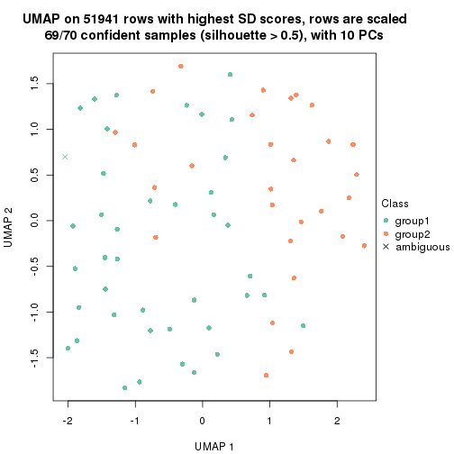
dimension_reduction(res, k = 3, method = "UMAP")
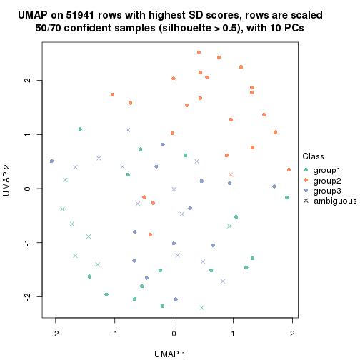
dimension_reduction(res, k = 4, method = "UMAP")
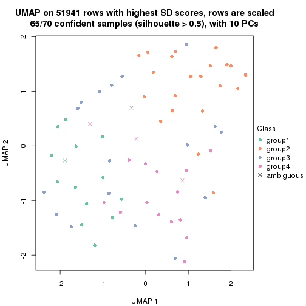
dimension_reduction(res, k = 5, method = "UMAP")
dimension_reduction(res, k = 6, method = "UMAP")
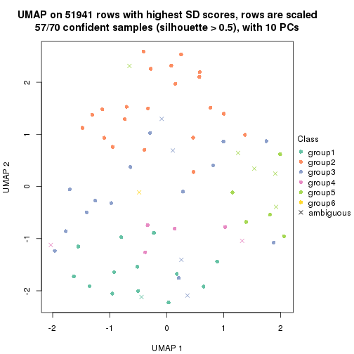
Following heatmap shows how subgroups are split when increasing k:
collect_classes(res)
Test correlation between subgroups and known annotations. If the known annotation is numeric, one-way ANOVA test is applied, and if the known annotation is discrete, chi-squared contingency table test is applied.
test_to_known_factors(res)
#> n age(p) time(p) tissue(p) individual(p) k
#> SD:kmeans 69 0.03314 0.0507 1.00e+00 0.00809 2
#> SD:kmeans 50 0.03276 0.0681 3.43e-02 0.08870 3
#> SD:kmeans 65 0.00439 0.0795 4.79e-06 0.00514 4
#> SD:kmeans 51 0.19098 0.0379 1.41e-03 0.01910 5
#> SD:kmeans 57 0.04225 0.0244 1.35e-04 0.06469 6
If matrix rows can be associated to genes, consider to use functional_enrichment(res,
...) to perform function enrichment for the signature genes. See this vignette for more detailed explanations.
The object with results only for a single top-value method and a single partition method can be extracted as:
res = res_list["SD", "skmeans"]
# you can also extract it by
# res = res_list["SD:skmeans"]
A summary of res and all the functions that can be applied to it:
res
#> A 'ConsensusPartition' object with k = 2, 3, 4, 5, 6.
#> On a matrix with 51941 rows and 70 columns.
#> Top rows (1000, 2000, 3000, 4000, 5000) are extracted by 'SD' method.
#> Subgroups are detected by 'skmeans' method.
#> Performed in total 1250 partitions by row resampling.
#> Best k for subgroups seems to be 2.
#>
#> Following methods can be applied to this 'ConsensusPartition' object:
#> [1] "cola_report" "collect_classes" "collect_plots"
#> [4] "collect_stats" "colnames" "compare_signatures"
#> [7] "consensus_heatmap" "dimension_reduction" "functional_enrichment"
#> [10] "get_anno_col" "get_anno" "get_classes"
#> [13] "get_consensus" "get_matrix" "get_membership"
#> [16] "get_param" "get_signatures" "get_stats"
#> [19] "is_best_k" "is_stable_k" "membership_heatmap"
#> [22] "ncol" "nrow" "plot_ecdf"
#> [25] "rownames" "select_partition_number" "show"
#> [28] "suggest_best_k" "test_to_known_factors"
collect_plots() function collects all the plots made from res for all k (number of partitions)
into one single page to provide an easy and fast comparison between different k.
collect_plots(res)
The plots are:
k and the heatmap of
predicted classes for each k.k.k.k.All the plots in panels can be made by individual functions and they are plotted later in this section.
select_partition_number() produces several plots showing different
statistics for choosing “optimized” k. There are following statistics:
k;k, the area increased is defined as \(A_k - A_{k-1}\).The detailed explanations of these statistics can be found in the cola vignette.
Generally speaking, lower PAC score, higher mean silhouette score or higher
concordance corresponds to better partition. Rand index and Jaccard index
measure how similar the current partition is compared to partition with k-1.
If they are too similar, we won't accept k is better than k-1.
select_partition_number(res)
The numeric values for all these statistics can be obtained by get_stats().
get_stats(res)
#> k 1-PAC mean_silhouette concordance area_increased Rand Jaccard
#> 2 2 0.879 0.911 0.963 0.5063 0.494 0.494
#> 3 3 0.463 0.589 0.786 0.3043 0.774 0.572
#> 4 4 0.420 0.508 0.682 0.1104 0.873 0.655
#> 5 5 0.437 0.386 0.622 0.0631 0.939 0.794
#> 6 6 0.471 0.342 0.567 0.0391 0.903 0.664
suggest_best_k() suggests the best \(k\) based on these statistics. The rules are as follows:
suggest_best_k(res)
#> [1] 2
Following shows the table of the partitions (You need to click the show/hide
code output link to see it). The membership matrix (columns with name p*)
is inferred by
clue::cl_consensus()
function with the SE method. Basically the value in the membership matrix
represents the probability to belong to a certain group. The finall class
label for an item is determined with the group with highest probability it
belongs to.
In get_classes() function, the entropy is calculated from the membership
matrix and the silhouette score is calculated from the consensus matrix.
cbind(get_classes(res, k = 2), get_membership(res, k = 2))
#> class entropy silhouette p1 p2
#> GSM701770 1 0.0000 0.955 1.000 0.000
#> GSM701769 1 0.0000 0.955 1.000 0.000
#> GSM701768 1 0.0000 0.955 1.000 0.000
#> GSM701767 1 0.9732 0.333 0.596 0.404
#> GSM701766 2 0.1184 0.953 0.016 0.984
#> GSM701806 1 0.0000 0.955 1.000 0.000
#> GSM701805 1 0.0000 0.955 1.000 0.000
#> GSM701804 1 0.0000 0.955 1.000 0.000
#> GSM701803 1 0.0000 0.955 1.000 0.000
#> GSM701775 1 0.0000 0.955 1.000 0.000
#> GSM701774 1 0.0000 0.955 1.000 0.000
#> GSM701773 2 0.0000 0.965 0.000 1.000
#> GSM701772 1 0.8713 0.595 0.708 0.292
#> GSM701771 1 0.0000 0.955 1.000 0.000
#> GSM701810 1 0.0000 0.955 1.000 0.000
#> GSM701809 2 0.8555 0.615 0.280 0.720
#> GSM701808 1 0.0000 0.955 1.000 0.000
#> GSM701807 1 0.0000 0.955 1.000 0.000
#> GSM701780 1 0.0000 0.955 1.000 0.000
#> GSM701779 2 0.0000 0.965 0.000 1.000
#> GSM701778 2 0.0000 0.965 0.000 1.000
#> GSM701777 2 0.0672 0.959 0.008 0.992
#> GSM701776 1 0.0000 0.955 1.000 0.000
#> GSM701816 1 0.3274 0.907 0.940 0.060
#> GSM701815 2 0.0000 0.965 0.000 1.000
#> GSM701814 2 0.0000 0.965 0.000 1.000
#> GSM701813 1 0.1414 0.941 0.980 0.020
#> GSM701812 1 0.0000 0.955 1.000 0.000
#> GSM701811 1 0.0000 0.955 1.000 0.000
#> GSM701786 1 0.0000 0.955 1.000 0.000
#> GSM701785 2 0.0000 0.965 0.000 1.000
#> GSM701784 2 0.0000 0.965 0.000 1.000
#> GSM701783 1 0.0000 0.955 1.000 0.000
#> GSM701782 2 0.0000 0.965 0.000 1.000
#> GSM701781 2 0.8081 0.674 0.248 0.752
#> GSM701822 2 0.0000 0.965 0.000 1.000
#> GSM701821 2 0.0000 0.965 0.000 1.000
#> GSM701820 1 0.4431 0.876 0.908 0.092
#> GSM701819 1 0.0000 0.955 1.000 0.000
#> GSM701818 1 0.0000 0.955 1.000 0.000
#> GSM701817 1 0.0000 0.955 1.000 0.000
#> GSM701790 1 0.0000 0.955 1.000 0.000
#> GSM701789 1 0.0000 0.955 1.000 0.000
#> GSM701788 1 0.0000 0.955 1.000 0.000
#> GSM701787 2 0.0000 0.965 0.000 1.000
#> GSM701824 1 0.0000 0.955 1.000 0.000
#> GSM701823 2 0.0000 0.965 0.000 1.000
#> GSM701791 2 0.0000 0.965 0.000 1.000
#> GSM701793 1 0.0000 0.955 1.000 0.000
#> GSM701792 2 0.8144 0.665 0.252 0.748
#> GSM701825 1 0.0000 0.955 1.000 0.000
#> GSM701827 2 0.0000 0.965 0.000 1.000
#> GSM701826 2 0.0000 0.965 0.000 1.000
#> GSM701797 1 0.9944 0.163 0.544 0.456
#> GSM701796 1 0.0000 0.955 1.000 0.000
#> GSM701795 2 0.0000 0.965 0.000 1.000
#> GSM701794 2 0.0000 0.965 0.000 1.000
#> GSM701831 2 0.0000 0.965 0.000 1.000
#> GSM701830 2 0.0000 0.965 0.000 1.000
#> GSM701829 2 0.2603 0.930 0.044 0.956
#> GSM701828 2 0.0000 0.965 0.000 1.000
#> GSM701798 2 0.0000 0.965 0.000 1.000
#> GSM701802 2 0.0000 0.965 0.000 1.000
#> GSM701801 1 0.0672 0.949 0.992 0.008
#> GSM701800 1 0.7745 0.704 0.772 0.228
#> GSM701799 2 0.0000 0.965 0.000 1.000
#> GSM701832 2 0.0000 0.965 0.000 1.000
#> GSM701835 2 0.7528 0.729 0.216 0.784
#> GSM701834 2 0.0000 0.965 0.000 1.000
#> GSM701833 2 0.0000 0.965 0.000 1.000
cbind(get_classes(res, k = 3), get_membership(res, k = 3))
#> class entropy silhouette p1 p2 p3
#> GSM701770 1 0.6225 0.2202 0.568 0.000 0.432
#> GSM701769 1 0.6291 0.1093 0.532 0.000 0.468
#> GSM701768 3 0.5706 0.4258 0.320 0.000 0.680
#> GSM701767 3 0.8156 0.4888 0.196 0.160 0.644
#> GSM701766 2 0.8637 0.0405 0.100 0.456 0.444
#> GSM701806 1 0.5706 0.4669 0.680 0.000 0.320
#> GSM701805 1 0.3619 0.6500 0.864 0.000 0.136
#> GSM701804 1 0.3116 0.6540 0.892 0.000 0.108
#> GSM701803 1 0.2448 0.6546 0.924 0.000 0.076
#> GSM701775 3 0.4842 0.5248 0.224 0.000 0.776
#> GSM701774 3 0.6309 -0.0206 0.496 0.000 0.504
#> GSM701773 2 0.1529 0.9025 0.000 0.960 0.040
#> GSM701772 3 0.5939 0.5352 0.140 0.072 0.788
#> GSM701771 1 0.6154 0.2876 0.592 0.000 0.408
#> GSM701810 1 0.4178 0.6448 0.828 0.000 0.172
#> GSM701809 1 0.9489 0.0255 0.456 0.352 0.192
#> GSM701808 1 0.2796 0.6602 0.908 0.000 0.092
#> GSM701807 1 0.2625 0.6570 0.916 0.000 0.084
#> GSM701780 3 0.6026 0.3447 0.376 0.000 0.624
#> GSM701779 2 0.1411 0.9033 0.000 0.964 0.036
#> GSM701778 2 0.1643 0.9015 0.000 0.956 0.044
#> GSM701777 3 0.8740 -0.0318 0.108 0.432 0.460
#> GSM701776 1 0.3619 0.6422 0.864 0.000 0.136
#> GSM701816 1 0.8262 0.3588 0.608 0.116 0.276
#> GSM701815 2 0.3039 0.8681 0.044 0.920 0.036
#> GSM701814 2 0.0237 0.9036 0.004 0.996 0.000
#> GSM701813 1 0.5346 0.5652 0.808 0.040 0.152
#> GSM701812 1 0.5119 0.5934 0.816 0.032 0.152
#> GSM701811 1 0.6274 0.1503 0.544 0.000 0.456
#> GSM701786 1 0.6309 0.0363 0.504 0.000 0.496
#> GSM701785 2 0.2878 0.8795 0.000 0.904 0.096
#> GSM701784 2 0.4504 0.7880 0.000 0.804 0.196
#> GSM701783 1 0.6225 0.2611 0.568 0.000 0.432
#> GSM701782 2 0.4636 0.8449 0.036 0.848 0.116
#> GSM701781 3 0.9947 0.2008 0.328 0.292 0.380
#> GSM701822 2 0.0237 0.9036 0.004 0.996 0.000
#> GSM701821 2 0.1647 0.8936 0.004 0.960 0.036
#> GSM701820 1 0.7078 0.4932 0.712 0.088 0.200
#> GSM701819 1 0.2537 0.6337 0.920 0.000 0.080
#> GSM701818 1 0.1964 0.6566 0.944 0.000 0.056
#> GSM701817 1 0.3670 0.6242 0.888 0.020 0.092
#> GSM701790 3 0.4605 0.5332 0.204 0.000 0.796
#> GSM701789 3 0.5291 0.4926 0.268 0.000 0.732
#> GSM701788 3 0.6274 0.0365 0.456 0.000 0.544
#> GSM701787 2 0.5926 0.5282 0.000 0.644 0.356
#> GSM701824 1 0.5363 0.5468 0.724 0.000 0.276
#> GSM701823 2 0.0592 0.9029 0.012 0.988 0.000
#> GSM701791 2 0.1411 0.9033 0.000 0.964 0.036
#> GSM701793 3 0.5058 0.5094 0.244 0.000 0.756
#> GSM701792 3 0.6407 0.5236 0.080 0.160 0.760
#> GSM701825 1 0.3116 0.6591 0.892 0.000 0.108
#> GSM701827 2 0.0000 0.9040 0.000 1.000 0.000
#> GSM701826 2 0.1182 0.9021 0.012 0.976 0.012
#> GSM701797 3 0.7126 0.4941 0.164 0.116 0.720
#> GSM701796 3 0.5327 0.5072 0.272 0.000 0.728
#> GSM701795 2 0.1411 0.9033 0.000 0.964 0.036
#> GSM701794 2 0.1411 0.9033 0.000 0.964 0.036
#> GSM701831 2 0.0592 0.9042 0.000 0.988 0.012
#> GSM701830 2 0.0000 0.9040 0.000 1.000 0.000
#> GSM701829 2 0.8375 0.4020 0.260 0.608 0.132
#> GSM701828 2 0.1337 0.9005 0.012 0.972 0.016
#> GSM701798 2 0.1529 0.9025 0.000 0.960 0.040
#> GSM701802 2 0.5722 0.6687 0.004 0.704 0.292
#> GSM701801 3 0.5268 0.5247 0.212 0.012 0.776
#> GSM701800 3 0.7800 0.4858 0.204 0.128 0.668
#> GSM701799 2 0.1411 0.9033 0.000 0.964 0.036
#> GSM701832 2 0.1878 0.8984 0.004 0.952 0.044
#> GSM701835 3 0.9178 0.3439 0.220 0.240 0.540
#> GSM701834 2 0.0237 0.9039 0.000 0.996 0.004
#> GSM701833 2 0.0000 0.9040 0.000 1.000 0.000
cbind(get_classes(res, k = 4), get_membership(res, k = 4))
#> class entropy silhouette p1 p2 p3 p4
#> GSM701770 1 0.5231 0.4864 0.676 0.000 0.028 0.296
#> GSM701769 1 0.6326 0.5046 0.636 0.000 0.108 0.256
#> GSM701768 1 0.6170 0.4711 0.672 0.000 0.192 0.136
#> GSM701767 3 0.9069 0.2488 0.364 0.104 0.380 0.152
#> GSM701766 3 0.8050 0.3950 0.160 0.276 0.524 0.040
#> GSM701806 1 0.5125 0.2018 0.604 0.000 0.008 0.388
#> GSM701805 4 0.5672 0.5371 0.276 0.000 0.056 0.668
#> GSM701804 4 0.6167 0.5543 0.188 0.004 0.124 0.684
#> GSM701803 4 0.5383 0.6098 0.160 0.000 0.100 0.740
#> GSM701775 1 0.4322 0.5021 0.804 0.000 0.152 0.044
#> GSM701774 1 0.7542 0.3087 0.500 0.004 0.188 0.308
#> GSM701773 2 0.2589 0.7960 0.000 0.884 0.116 0.000
#> GSM701772 3 0.8050 0.3034 0.372 0.060 0.472 0.096
#> GSM701771 1 0.5403 0.3517 0.628 0.000 0.024 0.348
#> GSM701810 4 0.5697 0.5248 0.280 0.000 0.056 0.664
#> GSM701809 4 0.9057 -0.2054 0.072 0.284 0.240 0.404
#> GSM701808 4 0.4988 0.5918 0.236 0.000 0.036 0.728
#> GSM701807 4 0.4661 0.5705 0.256 0.000 0.016 0.728
#> GSM701780 1 0.6931 0.4479 0.588 0.000 0.184 0.228
#> GSM701779 2 0.2149 0.7953 0.000 0.912 0.088 0.000
#> GSM701778 2 0.3219 0.7879 0.000 0.836 0.164 0.000
#> GSM701777 3 0.8153 0.4620 0.164 0.248 0.536 0.052
#> GSM701776 4 0.4855 0.4689 0.352 0.000 0.004 0.644
#> GSM701816 4 0.8561 0.2713 0.148 0.120 0.192 0.540
#> GSM701815 2 0.4605 0.7389 0.012 0.808 0.132 0.048
#> GSM701814 2 0.1661 0.7970 0.000 0.944 0.052 0.004
#> GSM701813 4 0.6155 0.5187 0.100 0.028 0.152 0.720
#> GSM701812 4 0.6182 0.5519 0.132 0.016 0.144 0.708
#> GSM701811 1 0.6928 0.3621 0.556 0.000 0.136 0.308
#> GSM701786 1 0.5256 0.5187 0.700 0.000 0.040 0.260
#> GSM701785 2 0.5060 0.6989 0.016 0.732 0.236 0.016
#> GSM701784 2 0.6307 0.3834 0.056 0.564 0.376 0.004
#> GSM701783 1 0.6031 0.2888 0.564 0.000 0.048 0.388
#> GSM701782 2 0.5972 0.4898 0.016 0.580 0.384 0.020
#> GSM701781 3 0.9852 0.3858 0.208 0.204 0.332 0.256
#> GSM701822 2 0.1545 0.7962 0.000 0.952 0.040 0.008
#> GSM701821 2 0.3554 0.7724 0.000 0.844 0.136 0.020
#> GSM701820 4 0.8152 0.4768 0.172 0.080 0.176 0.572
#> GSM701819 4 0.5128 0.5973 0.148 0.000 0.092 0.760
#> GSM701818 4 0.3900 0.6161 0.164 0.000 0.020 0.816
#> GSM701817 4 0.4336 0.5884 0.064 0.008 0.100 0.828
#> GSM701790 1 0.4852 0.4826 0.776 0.000 0.152 0.072
#> GSM701789 1 0.4710 0.5586 0.792 0.000 0.120 0.088
#> GSM701788 1 0.4728 0.5435 0.752 0.000 0.032 0.216
#> GSM701787 2 0.7659 -0.0159 0.164 0.452 0.376 0.008
#> GSM701824 4 0.6102 0.2377 0.420 0.000 0.048 0.532
#> GSM701823 2 0.2946 0.7764 0.004 0.900 0.048 0.048
#> GSM701791 2 0.2647 0.7931 0.000 0.880 0.120 0.000
#> GSM701793 1 0.4542 0.5346 0.804 0.000 0.108 0.088
#> GSM701792 1 0.7908 -0.3698 0.444 0.116 0.404 0.036
#> GSM701825 4 0.5312 0.5567 0.268 0.000 0.040 0.692
#> GSM701827 2 0.0000 0.7939 0.000 1.000 0.000 0.000
#> GSM701826 2 0.3519 0.7702 0.020 0.856 0.120 0.004
#> GSM701797 3 0.8476 0.3174 0.356 0.084 0.452 0.108
#> GSM701796 1 0.5560 0.5282 0.728 0.000 0.156 0.116
#> GSM701795 2 0.2469 0.7961 0.000 0.892 0.108 0.000
#> GSM701794 2 0.2149 0.7970 0.000 0.912 0.088 0.000
#> GSM701831 2 0.3325 0.7767 0.000 0.864 0.112 0.024
#> GSM701830 2 0.0336 0.7950 0.000 0.992 0.008 0.000
#> GSM701829 2 0.8944 -0.2096 0.068 0.416 0.300 0.216
#> GSM701828 2 0.4181 0.7370 0.008 0.824 0.136 0.032
#> GSM701798 2 0.3351 0.7872 0.000 0.844 0.148 0.008
#> GSM701802 2 0.7813 0.1004 0.136 0.472 0.368 0.024
#> GSM701801 1 0.7853 0.0570 0.468 0.012 0.332 0.188
#> GSM701800 3 0.8642 0.2484 0.364 0.084 0.428 0.124
#> GSM701799 2 0.2149 0.7942 0.000 0.912 0.088 0.000
#> GSM701832 2 0.3806 0.7582 0.000 0.824 0.156 0.020
#> GSM701835 3 0.9488 0.4393 0.240 0.188 0.412 0.160
#> GSM701834 2 0.2101 0.7922 0.000 0.928 0.060 0.012
#> GSM701833 2 0.0336 0.7936 0.000 0.992 0.008 0.000
cbind(get_classes(res, k = 5), get_membership(res, k = 5))
#> class entropy silhouette p1 p2 p3 p4 p5
#> GSM701770 1 0.6124 0.46807 0.604 0.000 0.040 0.280 0.076
#> GSM701769 1 0.6836 0.46915 0.564 0.000 0.052 0.236 0.148
#> GSM701768 1 0.6702 0.49029 0.612 0.000 0.084 0.172 0.132
#> GSM701767 3 0.9113 -0.30465 0.272 0.064 0.328 0.100 0.236
#> GSM701766 3 0.8432 0.19078 0.124 0.172 0.504 0.068 0.132
#> GSM701806 1 0.5271 0.35350 0.568 0.000 0.004 0.384 0.044
#> GSM701805 4 0.5266 0.38459 0.236 0.000 0.020 0.684 0.060
#> GSM701804 4 0.6565 0.49311 0.124 0.004 0.096 0.644 0.132
#> GSM701803 4 0.5175 0.53212 0.120 0.004 0.036 0.748 0.092
#> GSM701775 1 0.4208 0.44393 0.816 0.000 0.068 0.048 0.068
#> GSM701774 1 0.8452 0.19787 0.388 0.008 0.144 0.244 0.216
#> GSM701773 2 0.3819 0.62929 0.000 0.756 0.228 0.000 0.016
#> GSM701772 1 0.8547 -0.21313 0.340 0.040 0.324 0.064 0.232
#> GSM701771 1 0.6040 0.42633 0.568 0.000 0.016 0.324 0.092
#> GSM701810 4 0.6464 0.40193 0.228 0.000 0.032 0.592 0.148
#> GSM701809 4 0.9216 -0.13103 0.040 0.248 0.208 0.308 0.196
#> GSM701808 4 0.5504 0.49860 0.160 0.000 0.032 0.704 0.104
#> GSM701807 4 0.5265 0.46735 0.204 0.000 0.028 0.704 0.064
#> GSM701780 1 0.7355 0.20904 0.484 0.000 0.072 0.148 0.296
#> GSM701779 2 0.2813 0.65841 0.000 0.832 0.168 0.000 0.000
#> GSM701778 2 0.4352 0.62895 0.000 0.720 0.244 0.000 0.036
#> GSM701777 3 0.7563 0.23074 0.088 0.172 0.588 0.060 0.092
#> GSM701776 4 0.5271 0.32266 0.296 0.000 0.000 0.628 0.076
#> GSM701816 4 0.8939 -0.00252 0.108 0.096 0.108 0.364 0.324
#> GSM701815 2 0.5897 0.49339 0.012 0.680 0.188 0.028 0.092
#> GSM701814 2 0.1943 0.68479 0.000 0.924 0.056 0.000 0.020
#> GSM701813 4 0.7377 0.33977 0.032 0.056 0.112 0.556 0.244
#> GSM701812 4 0.6891 0.43226 0.092 0.016 0.064 0.596 0.232
#> GSM701811 1 0.7428 0.20129 0.412 0.000 0.064 0.372 0.152
#> GSM701786 1 0.6177 0.47667 0.596 0.000 0.028 0.276 0.100
#> GSM701785 2 0.6188 0.37868 0.016 0.564 0.332 0.008 0.080
#> GSM701784 2 0.7120 -0.07440 0.072 0.452 0.388 0.004 0.084
#> GSM701783 1 0.6835 0.32545 0.476 0.000 0.028 0.352 0.144
#> GSM701782 3 0.6375 -0.07242 0.008 0.436 0.460 0.016 0.080
#> GSM701781 5 0.9731 0.14128 0.144 0.128 0.264 0.196 0.268
#> GSM701822 2 0.2193 0.68369 0.000 0.912 0.060 0.000 0.028
#> GSM701821 2 0.5448 0.53262 0.004 0.700 0.180 0.016 0.100
#> GSM701820 4 0.8049 0.33816 0.076 0.056 0.140 0.524 0.204
#> GSM701819 4 0.5686 0.53198 0.068 0.000 0.072 0.700 0.160
#> GSM701818 4 0.4626 0.55509 0.108 0.000 0.044 0.784 0.064
#> GSM701817 4 0.6335 0.49664 0.048 0.032 0.052 0.652 0.216
#> GSM701790 1 0.3800 0.42643 0.828 0.000 0.052 0.016 0.104
#> GSM701789 1 0.4318 0.51563 0.808 0.000 0.044 0.076 0.072
#> GSM701788 1 0.4687 0.54340 0.736 0.000 0.012 0.200 0.052
#> GSM701787 2 0.8454 -0.32149 0.172 0.356 0.340 0.020 0.112
#> GSM701824 1 0.6138 0.05804 0.484 0.000 0.036 0.428 0.052
#> GSM701823 2 0.4383 0.62941 0.008 0.812 0.080 0.036 0.064
#> GSM701791 2 0.3642 0.63599 0.000 0.760 0.232 0.000 0.008
#> GSM701793 1 0.4303 0.50101 0.808 0.000 0.040 0.072 0.080
#> GSM701792 1 0.8072 -0.17677 0.440 0.044 0.208 0.036 0.272
#> GSM701825 4 0.5368 0.46077 0.224 0.000 0.032 0.688 0.056
#> GSM701827 2 0.0609 0.68478 0.000 0.980 0.020 0.000 0.000
#> GSM701826 2 0.4793 0.58185 0.008 0.780 0.096 0.028 0.088
#> GSM701797 5 0.8561 0.37339 0.192 0.048 0.320 0.068 0.372
#> GSM701796 1 0.5251 0.44214 0.740 0.000 0.056 0.080 0.124
#> GSM701795 2 0.4054 0.63423 0.000 0.748 0.224 0.000 0.028
#> GSM701794 2 0.3093 0.66237 0.000 0.824 0.168 0.000 0.008
#> GSM701831 2 0.4038 0.63986 0.000 0.792 0.128 0.000 0.080
#> GSM701830 2 0.1357 0.68191 0.000 0.948 0.048 0.000 0.004
#> GSM701829 2 0.8491 -0.13685 0.032 0.420 0.132 0.132 0.284
#> GSM701828 2 0.4648 0.62008 0.012 0.792 0.096 0.024 0.076
#> GSM701798 2 0.4526 0.57060 0.000 0.672 0.300 0.000 0.028
#> GSM701802 3 0.7927 0.28606 0.044 0.312 0.408 0.020 0.216
#> GSM701801 5 0.8257 0.23331 0.324 0.004 0.204 0.116 0.352
#> GSM701800 5 0.8343 0.40033 0.256 0.024 0.228 0.080 0.412
#> GSM701799 2 0.3242 0.66095 0.000 0.816 0.172 0.000 0.012
#> GSM701832 2 0.5456 0.55187 0.000 0.692 0.172 0.016 0.120
#> GSM701835 5 0.9136 0.21352 0.148 0.124 0.268 0.084 0.376
#> GSM701834 2 0.3146 0.67852 0.000 0.856 0.092 0.000 0.052
#> GSM701833 2 0.0865 0.68544 0.000 0.972 0.024 0.000 0.004
cbind(get_classes(res, k = 6), get_membership(res, k = 6))
#> class entropy silhouette p1 p2 p3 p4 p5 p6
#> GSM701770 1 0.6550 0.32938 0.488 0.000 0.020 0.080 0.348 0.064
#> GSM701769 1 0.7489 0.37400 0.460 0.000 0.048 0.100 0.272 0.120
#> GSM701768 1 0.6725 0.44910 0.604 0.000 0.120 0.076 0.132 0.068
#> GSM701767 3 0.9055 -0.04061 0.300 0.072 0.308 0.120 0.076 0.124
#> GSM701766 3 0.7589 0.22259 0.072 0.172 0.540 0.064 0.028 0.124
#> GSM701806 1 0.4803 0.31982 0.552 0.000 0.008 0.008 0.408 0.024
#> GSM701805 5 0.5258 0.41938 0.168 0.000 0.016 0.032 0.696 0.088
#> GSM701804 5 0.6918 0.20454 0.084 0.004 0.088 0.028 0.520 0.276
#> GSM701803 5 0.5654 0.33188 0.052 0.004 0.028 0.048 0.668 0.200
#> GSM701775 1 0.4716 0.48736 0.768 0.000 0.100 0.040 0.048 0.044
#> GSM701774 5 0.8468 -0.00184 0.300 0.004 0.108 0.084 0.300 0.204
#> GSM701773 2 0.4250 0.62475 0.000 0.708 0.244 0.036 0.000 0.012
#> GSM701772 3 0.8774 -0.08613 0.232 0.032 0.364 0.144 0.068 0.160
#> GSM701771 1 0.6027 0.29537 0.500 0.000 0.032 0.032 0.388 0.048
#> GSM701810 5 0.6300 0.35161 0.196 0.000 0.028 0.020 0.572 0.184
#> GSM701809 6 0.8851 0.15989 0.040 0.208 0.108 0.084 0.188 0.372
#> GSM701808 5 0.5263 0.41770 0.116 0.000 0.008 0.024 0.680 0.172
#> GSM701807 5 0.3852 0.46481 0.120 0.000 0.000 0.020 0.796 0.064
#> GSM701780 1 0.7896 0.28642 0.420 0.000 0.056 0.148 0.124 0.252
#> GSM701779 2 0.3577 0.66616 0.000 0.772 0.200 0.016 0.000 0.012
#> GSM701778 2 0.4958 0.63917 0.000 0.684 0.216 0.060 0.000 0.040
#> GSM701777 3 0.7404 0.18807 0.072 0.148 0.572 0.104 0.032 0.072
#> GSM701776 5 0.4016 0.41488 0.172 0.000 0.008 0.020 0.772 0.028
#> GSM701816 6 0.9124 0.21276 0.104 0.076 0.068 0.176 0.264 0.312
#> GSM701815 2 0.7096 0.38413 0.016 0.568 0.148 0.108 0.024 0.136
#> GSM701814 2 0.2024 0.68433 0.000 0.920 0.016 0.028 0.000 0.036
#> GSM701813 6 0.7446 0.08496 0.032 0.036 0.048 0.100 0.344 0.440
#> GSM701812 5 0.7793 -0.05999 0.072 0.016 0.052 0.120 0.404 0.336
#> GSM701811 1 0.7578 0.19874 0.396 0.000 0.052 0.112 0.344 0.096
#> GSM701786 1 0.6307 0.41843 0.560 0.000 0.028 0.048 0.284 0.080
#> GSM701785 2 0.5830 0.49172 0.004 0.572 0.296 0.088 0.000 0.040
#> GSM701784 3 0.6847 0.02483 0.032 0.384 0.448 0.072 0.008 0.056
#> GSM701783 1 0.7166 0.23206 0.432 0.000 0.020 0.088 0.332 0.128
#> GSM701782 2 0.6770 0.15830 0.004 0.436 0.340 0.172 0.004 0.044
#> GSM701781 3 0.9608 -0.08216 0.080 0.108 0.248 0.236 0.172 0.156
#> GSM701822 2 0.2116 0.68466 0.000 0.916 0.036 0.024 0.000 0.024
#> GSM701821 2 0.5778 0.50418 0.004 0.636 0.072 0.216 0.004 0.068
#> GSM701820 5 0.8762 -0.09047 0.080 0.048 0.124 0.112 0.376 0.260
#> GSM701819 5 0.6226 0.18875 0.076 0.000 0.032 0.032 0.536 0.324
#> GSM701818 5 0.4684 0.41441 0.068 0.000 0.004 0.040 0.740 0.148
#> GSM701817 5 0.6945 0.03229 0.040 0.020 0.028 0.092 0.484 0.336
#> GSM701790 1 0.5264 0.45213 0.724 0.000 0.120 0.072 0.048 0.036
#> GSM701789 1 0.4964 0.50795 0.752 0.000 0.040 0.072 0.092 0.044
#> GSM701788 1 0.5240 0.48621 0.676 0.000 0.012 0.040 0.216 0.056
#> GSM701787 3 0.7759 0.18380 0.120 0.272 0.444 0.100 0.004 0.060
#> GSM701824 5 0.6072 0.04409 0.408 0.000 0.020 0.028 0.472 0.072
#> GSM701823 2 0.5490 0.58744 0.004 0.720 0.088 0.080 0.036 0.072
#> GSM701791 2 0.4132 0.65010 0.000 0.736 0.212 0.036 0.000 0.016
#> GSM701793 1 0.4672 0.50479 0.768 0.000 0.044 0.056 0.104 0.028
#> GSM701792 1 0.8452 -0.16746 0.388 0.068 0.252 0.180 0.028 0.084
#> GSM701825 5 0.5846 0.41443 0.128 0.000 0.032 0.048 0.668 0.124
#> GSM701827 2 0.0622 0.68520 0.000 0.980 0.012 0.008 0.000 0.000
#> GSM701826 2 0.5702 0.57274 0.016 0.700 0.088 0.096 0.012 0.088
#> GSM701797 4 0.7306 0.24412 0.172 0.044 0.080 0.568 0.032 0.104
#> GSM701796 1 0.5664 0.49843 0.696 0.000 0.044 0.088 0.116 0.056
#> GSM701795 2 0.4542 0.62536 0.000 0.688 0.252 0.036 0.000 0.024
#> GSM701794 2 0.3424 0.66658 0.000 0.796 0.168 0.032 0.000 0.004
#> GSM701831 2 0.5339 0.58849 0.008 0.708 0.092 0.128 0.004 0.060
#> GSM701830 2 0.2247 0.68338 0.000 0.904 0.024 0.060 0.000 0.012
#> GSM701829 2 0.8974 -0.19974 0.052 0.324 0.088 0.260 0.084 0.192
#> GSM701828 2 0.6092 0.53157 0.012 0.672 0.064 0.104 0.032 0.116
#> GSM701798 2 0.5644 0.56870 0.004 0.616 0.236 0.116 0.000 0.028
#> GSM701802 4 0.7532 -0.15202 0.024 0.272 0.316 0.332 0.004 0.052
#> GSM701801 1 0.8097 0.02751 0.344 0.008 0.060 0.328 0.080 0.180
#> GSM701800 4 0.7842 0.18122 0.208 0.008 0.172 0.448 0.032 0.132
#> GSM701799 2 0.3158 0.66622 0.000 0.812 0.164 0.020 0.000 0.004
#> GSM701832 2 0.5901 0.52423 0.008 0.652 0.148 0.140 0.012 0.040
#> GSM701835 4 0.8376 0.20642 0.152 0.088 0.084 0.488 0.108 0.080
#> GSM701834 2 0.3966 0.66193 0.000 0.800 0.072 0.088 0.000 0.040
#> GSM701833 2 0.1078 0.68381 0.000 0.964 0.016 0.012 0.000 0.008
Heatmaps for the consensus matrix. It visualizes the probability of two samples to be in a same group.
consensus_heatmap(res, k = 2)
consensus_heatmap(res, k = 3)
consensus_heatmap(res, k = 4)
consensus_heatmap(res, k = 5)
consensus_heatmap(res, k = 6)
Heatmaps for the membership of samples in all partitions to see how consistent they are:
membership_heatmap(res, k = 2)
membership_heatmap(res, k = 3)
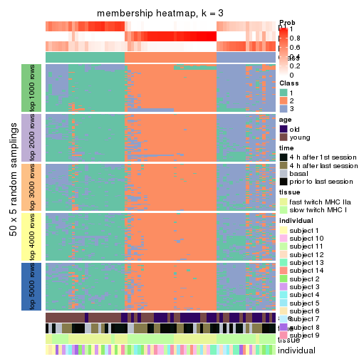
membership_heatmap(res, k = 4)
membership_heatmap(res, k = 5)
membership_heatmap(res, k = 6)
As soon as we have had the classes for columns, we can look for signatures which are significantly different between classes which can be candidate marks for certain classes. Following are the heatmaps for signatures.
Signature heatmaps where rows are scaled:
get_signatures(res, k = 2)
get_signatures(res, k = 3)
get_signatures(res, k = 4)
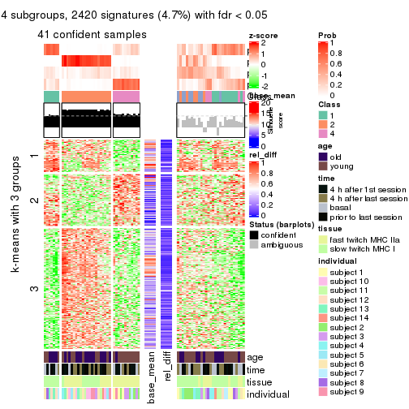
get_signatures(res, k = 5)
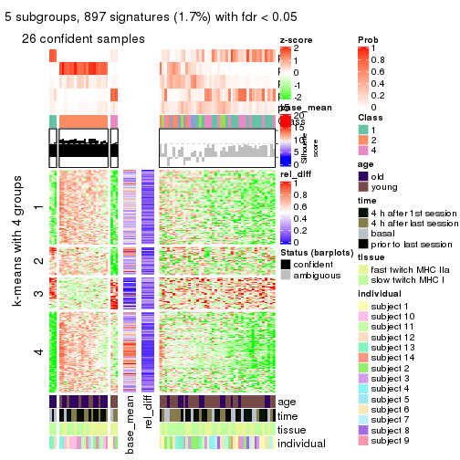
get_signatures(res, k = 6)
Signature heatmaps where rows are not scaled:
get_signatures(res, k = 2, scale_rows = FALSE)
get_signatures(res, k = 3, scale_rows = FALSE)
get_signatures(res, k = 4, scale_rows = FALSE)
get_signatures(res, k = 5, scale_rows = FALSE)

get_signatures(res, k = 6, scale_rows = FALSE)
Compare the overlap of signatures from different k:
compare_signatures(res)
get_signature() returns a data frame invisibly. TO get the list of signatures, the function
call should be assigned to a variable explicitly. In following code, if plot argument is set
to FALSE, no heatmap is plotted while only the differential analysis is performed.
# code only for demonstration
tb = get_signature(res, k = ..., plot = FALSE)
An example of the output of tb is:
#> which_row fdr mean_1 mean_2 scaled_mean_1 scaled_mean_2 km
#> 1 38 0.042760348 8.373488 9.131774 -0.5533452 0.5164555 1
#> 2 40 0.018707592 7.106213 8.469186 -0.6173731 0.5762149 1
#> 3 55 0.019134737 10.221463 11.207825 -0.6159697 0.5749050 1
#> 4 59 0.006059896 5.921854 7.869574 -0.6899429 0.6439467 1
#> 5 60 0.018055526 8.928898 10.211722 -0.6204761 0.5791110 1
#> 6 98 0.009384629 15.714769 14.887706 0.6635654 -0.6193277 2
...
The columns in tb are:
which_row: row indices corresponding to the input matrix.fdr: FDR for the differential test. mean_x: The mean value in group x.scaled_mean_x: The mean value in group x after rows are scaled.km: Row groups if k-means clustering is applied to rows.UMAP plot which shows how samples are separated.
dimension_reduction(res, k = 2, method = "UMAP")
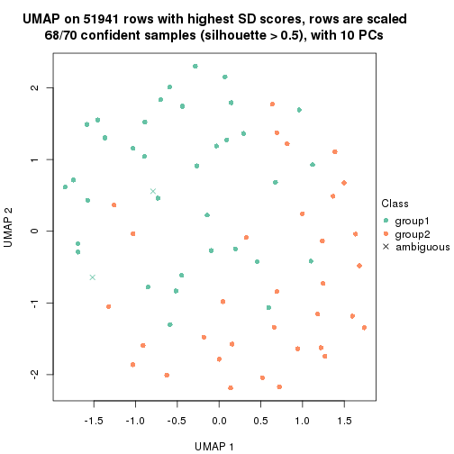
dimension_reduction(res, k = 3, method = "UMAP")
dimension_reduction(res, k = 4, method = "UMAP")
dimension_reduction(res, k = 5, method = "UMAP")
dimension_reduction(res, k = 6, method = "UMAP")
Following heatmap shows how subgroups are split when increasing k:
collect_classes(res)
Test correlation between subgroups and known annotations. If the known annotation is numeric, one-way ANOVA test is applied, and if the known annotation is discrete, chi-squared contingency table test is applied.
test_to_known_factors(res)
#> n age(p) time(p) tissue(p) individual(p) k
#> SD:skmeans 68 0.01545 0.0658 1.00e+00 0.016817 2
#> SD:skmeans 47 0.00746 0.1401 2.09e-04 0.001272 3
#> SD:skmeans 41 0.00692 0.1638 8.92e-05 0.000646 4
#> SD:skmeans 26 0.02420 0.0540 4.21e-02 0.023359 5
#> SD:skmeans 22 0.93966 0.0992 3.79e-01 0.272115 6
If matrix rows can be associated to genes, consider to use functional_enrichment(res,
...) to perform function enrichment for the signature genes. See this vignette for more detailed explanations.
The object with results only for a single top-value method and a single partition method can be extracted as:
res = res_list["SD", "pam"]
# you can also extract it by
# res = res_list["SD:pam"]
A summary of res and all the functions that can be applied to it:
res
#> A 'ConsensusPartition' object with k = 2, 3, 4, 5, 6.
#> On a matrix with 51941 rows and 70 columns.
#> Top rows (1000, 2000, 3000, 4000, 5000) are extracted by 'SD' method.
#> Subgroups are detected by 'pam' method.
#> Performed in total 1250 partitions by row resampling.
#> Best k for subgroups seems to be 2.
#>
#> Following methods can be applied to this 'ConsensusPartition' object:
#> [1] "cola_report" "collect_classes" "collect_plots"
#> [4] "collect_stats" "colnames" "compare_signatures"
#> [7] "consensus_heatmap" "dimension_reduction" "functional_enrichment"
#> [10] "get_anno_col" "get_anno" "get_classes"
#> [13] "get_consensus" "get_matrix" "get_membership"
#> [16] "get_param" "get_signatures" "get_stats"
#> [19] "is_best_k" "is_stable_k" "membership_heatmap"
#> [22] "ncol" "nrow" "plot_ecdf"
#> [25] "rownames" "select_partition_number" "show"
#> [28] "suggest_best_k" "test_to_known_factors"
collect_plots() function collects all the plots made from res for all k (number of partitions)
into one single page to provide an easy and fast comparison between different k.
collect_plots(res)
The plots are:
k and the heatmap of
predicted classes for each k.k.k.k.All the plots in panels can be made by individual functions and they are plotted later in this section.
select_partition_number() produces several plots showing different
statistics for choosing “optimized” k. There are following statistics:
k;k, the area increased is defined as \(A_k - A_{k-1}\).The detailed explanations of these statistics can be found in the cola vignette.
Generally speaking, lower PAC score, higher mean silhouette score or higher
concordance corresponds to better partition. Rand index and Jaccard index
measure how similar the current partition is compared to partition with k-1.
If they are too similar, we won't accept k is better than k-1.
select_partition_number(res)
The numeric values for all these statistics can be obtained by get_stats().
get_stats(res)
#> k 1-PAC mean_silhouette concordance area_increased Rand Jaccard
#> 2 2 0.691 0.857 0.936 0.5019 0.493 0.493
#> 3 3 0.566 0.779 0.877 0.2912 0.860 0.719
#> 4 4 0.575 0.541 0.776 0.1132 0.844 0.605
#> 5 5 0.562 0.556 0.769 0.0369 0.932 0.775
#> 6 6 0.552 0.490 0.763 0.0155 0.961 0.860
suggest_best_k() suggests the best \(k\) based on these statistics. The rules are as follows:
suggest_best_k(res)
#> [1] 2
Following shows the table of the partitions (You need to click the show/hide
code output link to see it). The membership matrix (columns with name p*)
is inferred by
clue::cl_consensus()
function with the SE method. Basically the value in the membership matrix
represents the probability to belong to a certain group. The finall class
label for an item is determined with the group with highest probability it
belongs to.
In get_classes() function, the entropy is calculated from the membership
matrix and the silhouette score is calculated from the consensus matrix.
cbind(get_classes(res, k = 2), get_membership(res, k = 2))
#> class entropy silhouette p1 p2
#> GSM701770 1 0.0000 0.9217 1.000 0.000
#> GSM701769 1 0.0000 0.9217 1.000 0.000
#> GSM701768 1 0.0000 0.9217 1.000 0.000
#> GSM701767 2 0.9795 0.2973 0.416 0.584
#> GSM701766 2 0.8499 0.6424 0.276 0.724
#> GSM701806 1 0.0000 0.9217 1.000 0.000
#> GSM701805 1 0.0000 0.9217 1.000 0.000
#> GSM701804 1 0.0376 0.9197 0.996 0.004
#> GSM701803 1 0.0672 0.9179 0.992 0.008
#> GSM701775 1 0.0000 0.9217 1.000 0.000
#> GSM701774 1 0.0672 0.9183 0.992 0.008
#> GSM701773 2 0.0000 0.9345 0.000 1.000
#> GSM701772 1 0.8386 0.6484 0.732 0.268
#> GSM701771 1 0.0000 0.9217 1.000 0.000
#> GSM701810 1 0.0000 0.9217 1.000 0.000
#> GSM701809 2 0.2948 0.9085 0.052 0.948
#> GSM701808 1 0.0000 0.9217 1.000 0.000
#> GSM701807 1 0.0000 0.9217 1.000 0.000
#> GSM701780 1 0.6343 0.8014 0.840 0.160
#> GSM701779 2 0.0000 0.9345 0.000 1.000
#> GSM701778 2 0.0376 0.9331 0.004 0.996
#> GSM701777 2 0.3431 0.9052 0.064 0.936
#> GSM701776 1 0.0000 0.9217 1.000 0.000
#> GSM701816 1 0.3733 0.8814 0.928 0.072
#> GSM701815 2 0.0000 0.9345 0.000 1.000
#> GSM701814 2 0.0000 0.9345 0.000 1.000
#> GSM701813 2 0.8144 0.6780 0.252 0.748
#> GSM701812 1 0.8555 0.6089 0.720 0.280
#> GSM701811 1 0.0000 0.9217 1.000 0.000
#> GSM701786 1 0.0000 0.9217 1.000 0.000
#> GSM701785 2 0.0000 0.9345 0.000 1.000
#> GSM701784 2 0.4939 0.8665 0.108 0.892
#> GSM701783 1 0.0000 0.9217 1.000 0.000
#> GSM701782 2 0.0000 0.9345 0.000 1.000
#> GSM701781 2 0.3274 0.9068 0.060 0.940
#> GSM701822 2 0.0000 0.9345 0.000 1.000
#> GSM701821 2 0.0000 0.9345 0.000 1.000
#> GSM701820 1 0.9710 0.3145 0.600 0.400
#> GSM701819 1 0.1633 0.9080 0.976 0.024
#> GSM701818 1 0.0000 0.9217 1.000 0.000
#> GSM701817 1 0.9998 -0.0308 0.508 0.492
#> GSM701790 1 0.5629 0.8245 0.868 0.132
#> GSM701789 1 0.0000 0.9217 1.000 0.000
#> GSM701788 1 0.0000 0.9217 1.000 0.000
#> GSM701787 2 0.9170 0.5173 0.332 0.668
#> GSM701824 1 0.0000 0.9217 1.000 0.000
#> GSM701823 2 0.0000 0.9345 0.000 1.000
#> GSM701791 2 0.0000 0.9345 0.000 1.000
#> GSM701793 1 0.0000 0.9217 1.000 0.000
#> GSM701792 1 0.6623 0.7821 0.828 0.172
#> GSM701825 1 0.0000 0.9217 1.000 0.000
#> GSM701827 2 0.0000 0.9345 0.000 1.000
#> GSM701826 2 0.3114 0.9074 0.056 0.944
#> GSM701797 2 0.3879 0.8967 0.076 0.924
#> GSM701796 1 0.4298 0.8646 0.912 0.088
#> GSM701795 2 0.0000 0.9345 0.000 1.000
#> GSM701794 2 0.0000 0.9345 0.000 1.000
#> GSM701831 2 0.0000 0.9345 0.000 1.000
#> GSM701830 2 0.0000 0.9345 0.000 1.000
#> GSM701829 2 0.5059 0.8667 0.112 0.888
#> GSM701828 2 0.0000 0.9345 0.000 1.000
#> GSM701798 2 0.0000 0.9345 0.000 1.000
#> GSM701802 2 0.0376 0.9331 0.004 0.996
#> GSM701801 1 0.7883 0.7024 0.764 0.236
#> GSM701800 2 0.7815 0.7173 0.232 0.768
#> GSM701799 2 0.0000 0.9345 0.000 1.000
#> GSM701832 2 0.0376 0.9332 0.004 0.996
#> GSM701835 2 0.4161 0.8897 0.084 0.916
#> GSM701834 2 0.0000 0.9345 0.000 1.000
#> GSM701833 2 0.0000 0.9345 0.000 1.000
cbind(get_classes(res, k = 3), get_membership(res, k = 3))
#> class entropy silhouette p1 p2 p3
#> GSM701770 3 0.0237 0.857 0.004 0.000 0.996
#> GSM701769 3 0.4654 0.656 0.208 0.000 0.792
#> GSM701768 3 0.0000 0.858 0.000 0.000 1.000
#> GSM701767 2 0.7585 0.206 0.040 0.484 0.476
#> GSM701766 2 0.6282 0.603 0.012 0.664 0.324
#> GSM701806 3 0.3752 0.737 0.144 0.000 0.856
#> GSM701805 1 0.4504 0.803 0.804 0.000 0.196
#> GSM701804 1 0.3619 0.792 0.864 0.000 0.136
#> GSM701803 1 0.2537 0.798 0.920 0.000 0.080
#> GSM701775 3 0.0000 0.858 0.000 0.000 1.000
#> GSM701774 3 0.6308 -0.238 0.492 0.000 0.508
#> GSM701773 2 0.0000 0.888 0.000 1.000 0.000
#> GSM701772 3 0.4291 0.704 0.008 0.152 0.840
#> GSM701771 1 0.6095 0.507 0.608 0.000 0.392
#> GSM701810 1 0.4062 0.820 0.836 0.000 0.164
#> GSM701809 2 0.4744 0.806 0.136 0.836 0.028
#> GSM701808 1 0.3941 0.824 0.844 0.000 0.156
#> GSM701807 1 0.4121 0.819 0.832 0.000 0.168
#> GSM701780 3 0.3356 0.813 0.036 0.056 0.908
#> GSM701779 2 0.0000 0.888 0.000 1.000 0.000
#> GSM701778 2 0.0475 0.889 0.004 0.992 0.004
#> GSM701777 2 0.4836 0.855 0.072 0.848 0.080
#> GSM701776 1 0.4062 0.820 0.836 0.000 0.164
#> GSM701816 3 0.5843 0.648 0.252 0.016 0.732
#> GSM701815 2 0.0592 0.890 0.012 0.988 0.000
#> GSM701814 2 0.0747 0.889 0.016 0.984 0.000
#> GSM701813 1 0.1399 0.793 0.968 0.028 0.004
#> GSM701812 1 0.2537 0.787 0.920 0.000 0.080
#> GSM701811 3 0.0000 0.858 0.000 0.000 1.000
#> GSM701786 1 0.6274 0.308 0.544 0.000 0.456
#> GSM701785 2 0.0237 0.889 0.004 0.996 0.000
#> GSM701784 2 0.3879 0.816 0.000 0.848 0.152
#> GSM701783 3 0.5706 0.437 0.320 0.000 0.680
#> GSM701782 2 0.2796 0.873 0.092 0.908 0.000
#> GSM701781 2 0.6122 0.816 0.152 0.776 0.072
#> GSM701822 2 0.1163 0.889 0.028 0.972 0.000
#> GSM701821 2 0.1753 0.887 0.048 0.952 0.000
#> GSM701820 1 0.4015 0.759 0.876 0.028 0.096
#> GSM701819 1 0.0592 0.811 0.988 0.000 0.012
#> GSM701818 1 0.0237 0.807 0.996 0.000 0.004
#> GSM701817 1 0.1337 0.802 0.972 0.012 0.016
#> GSM701790 3 0.0000 0.858 0.000 0.000 1.000
#> GSM701789 3 0.0000 0.858 0.000 0.000 1.000
#> GSM701788 3 0.0424 0.855 0.008 0.000 0.992
#> GSM701787 2 0.6111 0.455 0.000 0.604 0.396
#> GSM701824 1 0.4399 0.810 0.812 0.000 0.188
#> GSM701823 2 0.2625 0.877 0.084 0.916 0.000
#> GSM701791 2 0.0000 0.888 0.000 1.000 0.000
#> GSM701793 3 0.0000 0.858 0.000 0.000 1.000
#> GSM701792 3 0.0424 0.854 0.000 0.008 0.992
#> GSM701825 1 0.3752 0.825 0.856 0.000 0.144
#> GSM701827 2 0.0000 0.888 0.000 1.000 0.000
#> GSM701826 2 0.4964 0.839 0.048 0.836 0.116
#> GSM701797 2 0.5892 0.826 0.100 0.796 0.104
#> GSM701796 3 0.0000 0.858 0.000 0.000 1.000
#> GSM701795 2 0.0000 0.888 0.000 1.000 0.000
#> GSM701794 2 0.0000 0.888 0.000 1.000 0.000
#> GSM701831 2 0.4002 0.840 0.160 0.840 0.000
#> GSM701830 2 0.2959 0.873 0.100 0.900 0.000
#> GSM701829 2 0.7878 0.729 0.172 0.668 0.160
#> GSM701828 2 0.1525 0.890 0.032 0.964 0.004
#> GSM701798 2 0.0237 0.889 0.004 0.996 0.000
#> GSM701802 2 0.0829 0.888 0.004 0.984 0.012
#> GSM701801 3 0.5889 0.697 0.108 0.096 0.796
#> GSM701800 2 0.8694 0.593 0.152 0.580 0.268
#> GSM701799 2 0.0000 0.888 0.000 1.000 0.000
#> GSM701832 2 0.2063 0.888 0.044 0.948 0.008
#> GSM701835 2 0.7493 0.755 0.168 0.696 0.136
#> GSM701834 2 0.3686 0.853 0.140 0.860 0.000
#> GSM701833 2 0.0424 0.888 0.008 0.992 0.000
cbind(get_classes(res, k = 4), get_membership(res, k = 4))
#> class entropy silhouette p1 p2 p3 p4
#> GSM701770 1 0.0188 0.8519 0.996 0.000 0.004 0.000
#> GSM701769 1 0.3895 0.6595 0.804 0.000 0.012 0.184
#> GSM701768 1 0.0188 0.8520 0.996 0.000 0.004 0.000
#> GSM701767 1 0.7084 -0.1331 0.440 0.436 0.124 0.000
#> GSM701766 2 0.5673 0.3981 0.288 0.660 0.052 0.000
#> GSM701806 1 0.2473 0.7924 0.908 0.000 0.012 0.080
#> GSM701805 4 0.1792 0.7829 0.068 0.000 0.000 0.932
#> GSM701804 4 0.6106 0.5263 0.064 0.000 0.332 0.604
#> GSM701803 3 0.5938 -0.0266 0.036 0.000 0.488 0.476
#> GSM701775 1 0.0000 0.8525 1.000 0.000 0.000 0.000
#> GSM701774 4 0.4955 0.2816 0.444 0.000 0.000 0.556
#> GSM701773 2 0.0000 0.7260 0.000 1.000 0.000 0.000
#> GSM701772 1 0.3940 0.6865 0.824 0.152 0.020 0.004
#> GSM701771 4 0.5026 0.5578 0.312 0.000 0.016 0.672
#> GSM701810 4 0.1209 0.7894 0.032 0.000 0.004 0.964
#> GSM701809 2 0.5180 0.5722 0.004 0.672 0.308 0.016
#> GSM701808 4 0.1022 0.7893 0.032 0.000 0.000 0.968
#> GSM701807 4 0.0707 0.7879 0.020 0.000 0.000 0.980
#> GSM701780 1 0.3400 0.7947 0.880 0.044 0.068 0.008
#> GSM701779 2 0.0188 0.7258 0.000 0.996 0.004 0.000
#> GSM701778 2 0.0188 0.7249 0.000 0.996 0.004 0.000
#> GSM701777 2 0.4199 0.5725 0.032 0.804 0.164 0.000
#> GSM701776 4 0.0804 0.7857 0.012 0.000 0.008 0.980
#> GSM701816 3 0.6771 0.0113 0.420 0.012 0.504 0.064
#> GSM701815 2 0.2530 0.7026 0.000 0.888 0.112 0.000
#> GSM701814 2 0.4522 0.5727 0.000 0.680 0.320 0.000
#> GSM701813 3 0.5510 0.0311 0.000 0.016 0.504 0.480
#> GSM701812 3 0.6149 0.0084 0.048 0.000 0.480 0.472
#> GSM701811 1 0.0817 0.8457 0.976 0.000 0.024 0.000
#> GSM701786 4 0.5290 0.3369 0.404 0.000 0.012 0.584
#> GSM701785 2 0.0188 0.7249 0.000 0.996 0.004 0.000
#> GSM701784 2 0.3443 0.6545 0.136 0.848 0.016 0.000
#> GSM701783 1 0.4844 0.4740 0.688 0.000 0.012 0.300
#> GSM701782 2 0.3837 0.4892 0.000 0.776 0.224 0.000
#> GSM701781 2 0.5688 -0.2016 0.024 0.512 0.464 0.000
#> GSM701822 2 0.4679 0.5465 0.000 0.648 0.352 0.000
#> GSM701821 2 0.2868 0.6219 0.000 0.864 0.136 0.000
#> GSM701820 4 0.6004 0.3921 0.048 0.004 0.332 0.616
#> GSM701819 4 0.1118 0.7717 0.000 0.000 0.036 0.964
#> GSM701818 4 0.3074 0.6751 0.000 0.000 0.152 0.848
#> GSM701817 3 0.5285 0.0114 0.008 0.000 0.524 0.468
#> GSM701790 1 0.0000 0.8525 1.000 0.000 0.000 0.000
#> GSM701789 1 0.0376 0.8507 0.992 0.000 0.004 0.004
#> GSM701788 1 0.0937 0.8435 0.976 0.000 0.012 0.012
#> GSM701787 2 0.5436 0.3553 0.356 0.620 0.024 0.000
#> GSM701824 4 0.1474 0.7892 0.052 0.000 0.000 0.948
#> GSM701823 3 0.4941 -0.1435 0.000 0.436 0.564 0.000
#> GSM701791 2 0.0000 0.7260 0.000 1.000 0.000 0.000
#> GSM701793 1 0.0000 0.8525 1.000 0.000 0.000 0.000
#> GSM701792 1 0.0524 0.8505 0.988 0.008 0.004 0.000
#> GSM701825 4 0.1389 0.7680 0.000 0.000 0.048 0.952
#> GSM701827 2 0.4304 0.6000 0.000 0.716 0.284 0.000
#> GSM701826 2 0.5626 0.4807 0.028 0.588 0.384 0.000
#> GSM701797 2 0.5496 0.4058 0.064 0.704 0.232 0.000
#> GSM701796 1 0.0336 0.8518 0.992 0.000 0.008 0.000
#> GSM701795 2 0.0000 0.7260 0.000 1.000 0.000 0.000
#> GSM701794 2 0.0000 0.7260 0.000 1.000 0.000 0.000
#> GSM701831 3 0.5000 0.1246 0.000 0.496 0.504 0.000
#> GSM701830 3 0.4877 -0.0838 0.000 0.408 0.592 0.000
#> GSM701829 3 0.5489 0.3465 0.060 0.240 0.700 0.000
#> GSM701828 2 0.4730 0.5345 0.000 0.636 0.364 0.000
#> GSM701798 2 0.0188 0.7249 0.000 0.996 0.004 0.000
#> GSM701802 2 0.0188 0.7249 0.000 0.996 0.004 0.000
#> GSM701801 1 0.6338 0.3631 0.600 0.084 0.316 0.000
#> GSM701800 3 0.7553 0.3153 0.208 0.324 0.468 0.000
#> GSM701799 2 0.0000 0.7260 0.000 1.000 0.000 0.000
#> GSM701832 2 0.4877 0.4756 0.000 0.592 0.408 0.000
#> GSM701835 3 0.6482 0.2380 0.072 0.424 0.504 0.000
#> GSM701834 3 0.4222 0.2624 0.000 0.272 0.728 0.000
#> GSM701833 2 0.4406 0.5892 0.000 0.700 0.300 0.000
cbind(get_classes(res, k = 5), get_membership(res, k = 5))
#> class entropy silhouette p1 p2 p3 p4 p5
#> GSM701770 1 0.0771 0.8390 0.976 0.000 0.020 0.000 0.004
#> GSM701769 1 0.4031 0.6924 0.796 0.000 0.048 0.148 0.008
#> GSM701768 1 0.0794 0.8380 0.972 0.000 0.028 0.000 0.000
#> GSM701767 2 0.6673 0.0214 0.380 0.388 0.232 0.000 0.000
#> GSM701766 2 0.6120 0.3488 0.256 0.560 0.184 0.000 0.000
#> GSM701806 1 0.2861 0.7834 0.884 0.000 0.076 0.024 0.016
#> GSM701805 4 0.1671 0.6601 0.076 0.000 0.000 0.924 0.000
#> GSM701804 5 0.5826 0.0000 0.008 0.000 0.100 0.296 0.596
#> GSM701803 3 0.4035 0.4154 0.016 0.000 0.756 0.220 0.008
#> GSM701775 1 0.0162 0.8405 0.996 0.000 0.004 0.000 0.000
#> GSM701774 4 0.4489 0.2727 0.420 0.000 0.008 0.572 0.000
#> GSM701773 2 0.0000 0.6960 0.000 1.000 0.000 0.000 0.000
#> GSM701772 1 0.4294 0.6464 0.768 0.152 0.080 0.000 0.000
#> GSM701771 4 0.5223 0.3288 0.316 0.000 0.048 0.628 0.008
#> GSM701810 4 0.1205 0.6708 0.040 0.000 0.004 0.956 0.000
#> GSM701809 2 0.4806 0.6097 0.000 0.636 0.012 0.016 0.336
#> GSM701808 4 0.1124 0.6708 0.036 0.000 0.004 0.960 0.000
#> GSM701807 4 0.0932 0.6601 0.020 0.000 0.004 0.972 0.004
#> GSM701780 1 0.4077 0.7348 0.780 0.044 0.172 0.004 0.000
#> GSM701779 2 0.0162 0.6963 0.000 0.996 0.000 0.000 0.004
#> GSM701778 2 0.0162 0.6948 0.000 0.996 0.004 0.000 0.000
#> GSM701777 2 0.4612 0.4784 0.056 0.712 0.232 0.000 0.000
#> GSM701776 4 0.1756 0.6437 0.008 0.000 0.036 0.940 0.016
#> GSM701816 3 0.4926 0.4288 0.276 0.012 0.680 0.028 0.004
#> GSM701815 2 0.2782 0.6831 0.000 0.880 0.048 0.000 0.072
#> GSM701814 2 0.4356 0.6138 0.000 0.648 0.012 0.000 0.340
#> GSM701813 3 0.4653 0.3900 0.000 0.008 0.652 0.324 0.016
#> GSM701812 3 0.4883 0.4110 0.048 0.000 0.652 0.300 0.000
#> GSM701811 1 0.2629 0.7894 0.860 0.000 0.136 0.000 0.004
#> GSM701786 4 0.5981 0.2551 0.368 0.000 0.076 0.540 0.016
#> GSM701785 2 0.0162 0.6948 0.000 0.996 0.004 0.000 0.000
#> GSM701784 2 0.3427 0.6502 0.128 0.836 0.028 0.000 0.008
#> GSM701783 1 0.5474 0.4820 0.656 0.000 0.072 0.256 0.016
#> GSM701782 2 0.3741 0.3852 0.000 0.732 0.264 0.000 0.004
#> GSM701781 3 0.4804 0.5301 0.036 0.328 0.636 0.000 0.000
#> GSM701822 2 0.4987 0.5975 0.000 0.616 0.044 0.000 0.340
#> GSM701821 2 0.2732 0.5717 0.000 0.840 0.160 0.000 0.000
#> GSM701820 4 0.6867 0.1361 0.052 0.004 0.240 0.572 0.132
#> GSM701819 4 0.1197 0.6362 0.000 0.000 0.048 0.952 0.000
#> GSM701818 4 0.3039 0.4352 0.000 0.000 0.192 0.808 0.000
#> GSM701817 3 0.5317 0.3175 0.004 0.000 0.588 0.356 0.052
#> GSM701790 1 0.0290 0.8404 0.992 0.000 0.008 0.000 0.000
#> GSM701789 1 0.0740 0.8368 0.980 0.000 0.008 0.004 0.008
#> GSM701788 1 0.2452 0.7956 0.896 0.000 0.084 0.004 0.016
#> GSM701787 2 0.6167 0.3916 0.304 0.564 0.120 0.000 0.012
#> GSM701824 4 0.1478 0.6691 0.064 0.000 0.000 0.936 0.000
#> GSM701823 2 0.6762 0.2196 0.000 0.388 0.272 0.000 0.340
#> GSM701791 2 0.0000 0.6960 0.000 1.000 0.000 0.000 0.000
#> GSM701793 1 0.0162 0.8405 0.996 0.000 0.004 0.000 0.000
#> GSM701792 1 0.1697 0.8277 0.932 0.008 0.060 0.000 0.000
#> GSM701825 4 0.3033 0.5492 0.000 0.000 0.084 0.864 0.052
#> GSM701827 2 0.3966 0.6215 0.000 0.664 0.000 0.000 0.336
#> GSM701826 2 0.5887 0.5749 0.024 0.580 0.064 0.000 0.332
#> GSM701797 2 0.5506 0.1053 0.068 0.528 0.404 0.000 0.000
#> GSM701796 1 0.1908 0.8184 0.908 0.000 0.092 0.000 0.000
#> GSM701795 2 0.0000 0.6960 0.000 1.000 0.000 0.000 0.000
#> GSM701794 2 0.0000 0.6960 0.000 1.000 0.000 0.000 0.000
#> GSM701831 3 0.5103 0.4148 0.000 0.404 0.556 0.000 0.040
#> GSM701830 2 0.6804 0.1685 0.000 0.364 0.296 0.000 0.340
#> GSM701829 3 0.6012 0.5845 0.076 0.160 0.676 0.000 0.088
#> GSM701828 2 0.5052 0.5959 0.000 0.612 0.048 0.000 0.340
#> GSM701798 2 0.0162 0.6948 0.000 0.996 0.004 0.000 0.000
#> GSM701802 2 0.0162 0.6948 0.000 0.996 0.004 0.000 0.000
#> GSM701801 1 0.5403 0.0245 0.488 0.056 0.456 0.000 0.000
#> GSM701800 3 0.4996 0.5910 0.128 0.164 0.708 0.000 0.000
#> GSM701799 2 0.0000 0.6960 0.000 1.000 0.000 0.000 0.000
#> GSM701832 2 0.5838 0.5399 0.000 0.552 0.112 0.000 0.336
#> GSM701835 3 0.5142 0.6039 0.096 0.192 0.704 0.000 0.008
#> GSM701834 3 0.6519 0.2522 0.000 0.204 0.456 0.000 0.340
#> GSM701833 2 0.4252 0.6160 0.000 0.652 0.008 0.000 0.340
cbind(get_classes(res, k = 6), get_membership(res, k = 6))
#> class entropy silhouette p1 p2 p3 p4 p5 p6
#> GSM701770 4 0.1307 0.86154 0.008 0.000 0.008 0.952 0.032 0.000
#> GSM701769 4 0.3855 0.73491 0.144 0.000 0.048 0.788 0.020 0.000
#> GSM701768 4 0.1152 0.86150 0.000 0.000 0.044 0.952 0.004 0.000
#> GSM701767 2 0.6251 0.00757 0.000 0.376 0.248 0.368 0.008 0.000
#> GSM701766 2 0.5708 0.27348 0.000 0.560 0.192 0.240 0.008 0.000
#> GSM701806 4 0.2948 0.80342 0.024 0.000 0.024 0.860 0.092 0.000
#> GSM701805 1 0.1970 0.60913 0.900 0.000 0.008 0.092 0.000 0.000
#> GSM701804 6 0.5640 -0.55179 0.100 0.000 0.056 0.000 0.212 0.632
#> GSM701803 3 0.2696 0.51210 0.076 0.000 0.872 0.004 0.048 0.000
#> GSM701775 4 0.0146 0.86597 0.000 0.000 0.004 0.996 0.000 0.000
#> GSM701774 1 0.4361 0.28510 0.544 0.000 0.016 0.436 0.004 0.000
#> GSM701773 2 0.0000 0.64894 0.000 1.000 0.000 0.000 0.000 0.000
#> GSM701772 4 0.4047 0.65609 0.000 0.152 0.084 0.760 0.004 0.000
#> GSM701771 1 0.5146 0.33975 0.604 0.000 0.020 0.312 0.064 0.000
#> GSM701810 1 0.1387 0.61922 0.932 0.000 0.000 0.068 0.000 0.000
#> GSM701809 2 0.4524 0.36832 0.012 0.612 0.024 0.000 0.000 0.352
#> GSM701808 1 0.1563 0.61759 0.932 0.000 0.012 0.056 0.000 0.000
#> GSM701807 1 0.1409 0.55816 0.948 0.000 0.008 0.012 0.032 0.000
#> GSM701780 4 0.3633 0.76070 0.004 0.032 0.176 0.784 0.004 0.000
#> GSM701779 2 0.0146 0.64842 0.000 0.996 0.000 0.000 0.000 0.004
#> GSM701778 2 0.0146 0.64822 0.000 0.996 0.004 0.000 0.000 0.000
#> GSM701777 2 0.4237 0.41663 0.000 0.704 0.244 0.048 0.004 0.000
#> GSM701776 1 0.2226 0.55028 0.904 0.000 0.028 0.008 0.060 0.000
#> GSM701816 3 0.4308 0.53920 0.020 0.004 0.744 0.196 0.032 0.004
#> GSM701815 2 0.2625 0.60737 0.000 0.872 0.056 0.000 0.000 0.072
#> GSM701814 2 0.4004 0.37033 0.000 0.620 0.012 0.000 0.000 0.368
#> GSM701813 3 0.4378 0.49314 0.236 0.008 0.712 0.000 0.032 0.012
#> GSM701812 3 0.4305 0.50291 0.224 0.000 0.720 0.024 0.032 0.000
#> GSM701811 4 0.2593 0.80158 0.000 0.000 0.148 0.844 0.008 0.000
#> GSM701786 1 0.5667 0.28487 0.524 0.000 0.024 0.360 0.092 0.000
#> GSM701785 2 0.0146 0.64822 0.000 0.996 0.004 0.000 0.000 0.000
#> GSM701784 2 0.3405 0.57729 0.000 0.828 0.040 0.116 0.004 0.012
#> GSM701783 4 0.5154 0.48990 0.240 0.000 0.028 0.652 0.080 0.000
#> GSM701782 2 0.3383 0.35600 0.000 0.728 0.268 0.000 0.000 0.004
#> GSM701781 3 0.4065 0.48184 0.000 0.300 0.672 0.028 0.000 0.000
#> GSM701822 2 0.4563 0.32189 0.000 0.588 0.044 0.000 0.000 0.368
#> GSM701821 2 0.2454 0.51990 0.000 0.840 0.160 0.000 0.000 0.000
#> GSM701820 1 0.6427 0.11224 0.532 0.004 0.292 0.048 0.008 0.116
#> GSM701819 1 0.1674 0.56667 0.924 0.000 0.068 0.004 0.004 0.000
#> GSM701818 1 0.3161 0.37537 0.776 0.000 0.216 0.000 0.008 0.000
#> GSM701817 3 0.4917 0.40744 0.304 0.000 0.632 0.004 0.020 0.040
#> GSM701790 4 0.0260 0.86569 0.000 0.000 0.008 0.992 0.000 0.000
#> GSM701789 4 0.0858 0.86112 0.000 0.000 0.004 0.968 0.028 0.000
#> GSM701788 4 0.2462 0.81708 0.000 0.000 0.028 0.876 0.096 0.000
#> GSM701787 2 0.5808 0.28043 0.000 0.556 0.148 0.280 0.004 0.012
#> GSM701824 1 0.1663 0.61756 0.912 0.000 0.000 0.088 0.000 0.000
#> GSM701823 6 0.6094 0.15536 0.000 0.352 0.280 0.000 0.000 0.368
#> GSM701791 2 0.0000 0.64894 0.000 1.000 0.000 0.000 0.000 0.000
#> GSM701793 4 0.0146 0.86597 0.000 0.000 0.004 0.996 0.000 0.000
#> GSM701792 4 0.1643 0.85021 0.000 0.008 0.068 0.924 0.000 0.000
#> GSM701825 5 0.4025 0.00000 0.312 0.000 0.016 0.000 0.668 0.004
#> GSM701827 2 0.3659 0.38898 0.000 0.636 0.000 0.000 0.000 0.364
#> GSM701826 2 0.5293 0.27005 0.000 0.556 0.064 0.020 0.000 0.360
#> GSM701797 2 0.5000 0.10932 0.000 0.520 0.416 0.060 0.004 0.000
#> GSM701796 4 0.1958 0.83864 0.000 0.000 0.100 0.896 0.004 0.000
#> GSM701795 2 0.0000 0.64894 0.000 1.000 0.000 0.000 0.000 0.000
#> GSM701794 2 0.0000 0.64894 0.000 1.000 0.000 0.000 0.000 0.000
#> GSM701831 3 0.4524 0.37002 0.000 0.376 0.584 0.000 0.000 0.040
#> GSM701830 6 0.6103 0.16045 0.000 0.344 0.288 0.000 0.000 0.368
#> GSM701829 3 0.4882 0.50925 0.000 0.140 0.724 0.068 0.000 0.068
#> GSM701828 2 0.4563 0.32501 0.000 0.588 0.044 0.000 0.000 0.368
#> GSM701798 2 0.0146 0.64822 0.000 0.996 0.004 0.000 0.000 0.000
#> GSM701802 2 0.0146 0.64822 0.000 0.996 0.004 0.000 0.000 0.000
#> GSM701801 3 0.4983 0.08076 0.000 0.048 0.484 0.460 0.008 0.000
#> GSM701800 3 0.4184 0.56166 0.000 0.124 0.752 0.120 0.004 0.000
#> GSM701799 2 0.0000 0.64894 0.000 1.000 0.000 0.000 0.000 0.000
#> GSM701832 2 0.5312 0.16738 0.000 0.524 0.112 0.000 0.000 0.364
#> GSM701835 3 0.4127 0.55642 0.000 0.172 0.740 0.088 0.000 0.000
#> GSM701834 3 0.5748 -0.14599 0.000 0.176 0.464 0.000 0.000 0.360
#> GSM701833 2 0.3911 0.37532 0.000 0.624 0.008 0.000 0.000 0.368
Heatmaps for the consensus matrix. It visualizes the probability of two samples to be in a same group.
consensus_heatmap(res, k = 2)
consensus_heatmap(res, k = 3)
consensus_heatmap(res, k = 4)
consensus_heatmap(res, k = 5)
consensus_heatmap(res, k = 6)
Heatmaps for the membership of samples in all partitions to see how consistent they are:
membership_heatmap(res, k = 2)
membership_heatmap(res, k = 3)
membership_heatmap(res, k = 4)
membership_heatmap(res, k = 5)
membership_heatmap(res, k = 6)
As soon as we have had the classes for columns, we can look for signatures which are significantly different between classes which can be candidate marks for certain classes. Following are the heatmaps for signatures.
Signature heatmaps where rows are scaled:
get_signatures(res, k = 2)
get_signatures(res, k = 3)
get_signatures(res, k = 4)
get_signatures(res, k = 5)
get_signatures(res, k = 6)
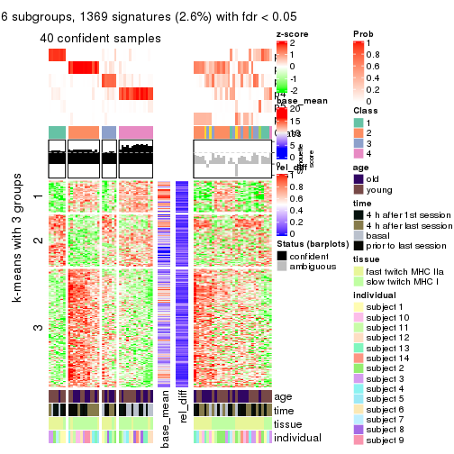
Signature heatmaps where rows are not scaled:
get_signatures(res, k = 2, scale_rows = FALSE)
get_signatures(res, k = 3, scale_rows = FALSE)
get_signatures(res, k = 4, scale_rows = FALSE)
get_signatures(res, k = 5, scale_rows = FALSE)
get_signatures(res, k = 6, scale_rows = FALSE)
Compare the overlap of signatures from different k:
compare_signatures(res)

get_signature() returns a data frame invisibly. TO get the list of signatures, the function
call should be assigned to a variable explicitly. In following code, if plot argument is set
to FALSE, no heatmap is plotted while only the differential analysis is performed.
# code only for demonstration
tb = get_signature(res, k = ..., plot = FALSE)
An example of the output of tb is:
#> which_row fdr mean_1 mean_2 scaled_mean_1 scaled_mean_2 km
#> 1 38 0.042760348 8.373488 9.131774 -0.5533452 0.5164555 1
#> 2 40 0.018707592 7.106213 8.469186 -0.6173731 0.5762149 1
#> 3 55 0.019134737 10.221463 11.207825 -0.6159697 0.5749050 1
#> 4 59 0.006059896 5.921854 7.869574 -0.6899429 0.6439467 1
#> 5 60 0.018055526 8.928898 10.211722 -0.6204761 0.5791110 1
#> 6 98 0.009384629 15.714769 14.887706 0.6635654 -0.6193277 2
...
The columns in tb are:
which_row: row indices corresponding to the input matrix.fdr: FDR for the differential test. mean_x: The mean value in group x.scaled_mean_x: The mean value in group x after rows are scaled.km: Row groups if k-means clustering is applied to rows.UMAP plot which shows how samples are separated.
dimension_reduction(res, k = 2, method = "UMAP")
dimension_reduction(res, k = 3, method = "UMAP")
dimension_reduction(res, k = 4, method = "UMAP")
dimension_reduction(res, k = 5, method = "UMAP")
dimension_reduction(res, k = 6, method = "UMAP")
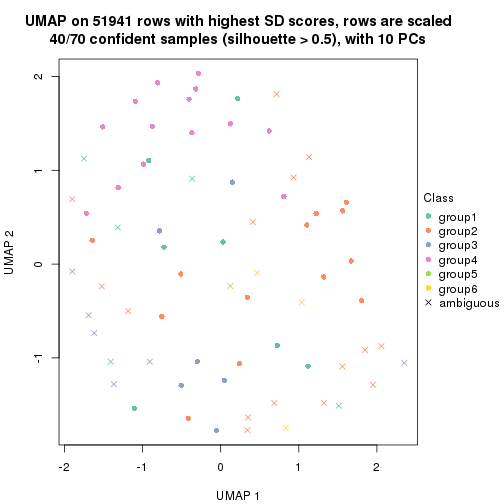
Following heatmap shows how subgroups are split when increasing k:
collect_classes(res)
Test correlation between subgroups and known annotations. If the known annotation is numeric, one-way ANOVA test is applied, and if the known annotation is discrete, chi-squared contingency table test is applied.
test_to_known_factors(res)
#> n age(p) time(p) tissue(p) individual(p) k
#> SD:pam 67 0.0317 0.00470 0.880694 0.02064 2
#> SD:pam 65 0.0115 0.01632 0.000484 0.00289 3
#> SD:pam 45 0.3020 0.00299 0.003044 0.05731 4
#> SD:pam 47 0.3684 0.00274 0.010274 0.18506 5
#> SD:pam 40 0.4878 0.02478 0.000390 0.34506 6
If matrix rows can be associated to genes, consider to use functional_enrichment(res,
...) to perform function enrichment for the signature genes. See this vignette for more detailed explanations.
The object with results only for a single top-value method and a single partition method can be extracted as:
res = res_list["SD", "mclust"]
# you can also extract it by
# res = res_list["SD:mclust"]
A summary of res and all the functions that can be applied to it:
res
#> A 'ConsensusPartition' object with k = 2, 3, 4, 5, 6.
#> On a matrix with 51941 rows and 70 columns.
#> Top rows (1000, 2000, 3000, 4000, 5000) are extracted by 'SD' method.
#> Subgroups are detected by 'mclust' method.
#> Performed in total 1250 partitions by row resampling.
#> Best k for subgroups seems to be 2.
#>
#> Following methods can be applied to this 'ConsensusPartition' object:
#> [1] "cola_report" "collect_classes" "collect_plots"
#> [4] "collect_stats" "colnames" "compare_signatures"
#> [7] "consensus_heatmap" "dimension_reduction" "functional_enrichment"
#> [10] "get_anno_col" "get_anno" "get_classes"
#> [13] "get_consensus" "get_matrix" "get_membership"
#> [16] "get_param" "get_signatures" "get_stats"
#> [19] "is_best_k" "is_stable_k" "membership_heatmap"
#> [22] "ncol" "nrow" "plot_ecdf"
#> [25] "rownames" "select_partition_number" "show"
#> [28] "suggest_best_k" "test_to_known_factors"
collect_plots() function collects all the plots made from res for all k (number of partitions)
into one single page to provide an easy and fast comparison between different k.
collect_plots(res)
The plots are:
k and the heatmap of
predicted classes for each k.k.k.k.All the plots in panels can be made by individual functions and they are plotted later in this section.
select_partition_number() produces several plots showing different
statistics for choosing “optimized” k. There are following statistics:
k;k, the area increased is defined as \(A_k - A_{k-1}\).The detailed explanations of these statistics can be found in the cola vignette.
Generally speaking, lower PAC score, higher mean silhouette score or higher
concordance corresponds to better partition. Rand index and Jaccard index
measure how similar the current partition is compared to partition with k-1.
If they are too similar, we won't accept k is better than k-1.
select_partition_number(res)
The numeric values for all these statistics can be obtained by get_stats().
get_stats(res)
#> k 1-PAC mean_silhouette concordance area_increased Rand Jaccard
#> 2 2 0.448 0.704 0.822 0.4837 0.499 0.499
#> 3 3 0.350 0.696 0.737 0.2574 1.000 1.000
#> 4 4 0.430 0.459 0.639 0.1580 0.771 0.547
#> 5 5 0.515 0.566 0.708 0.0733 0.855 0.550
#> 6 6 0.661 0.640 0.778 0.0607 0.946 0.759
suggest_best_k() suggests the best \(k\) based on these statistics. The rules are as follows:
suggest_best_k(res)
#> [1] 2
Following shows the table of the partitions (You need to click the show/hide
code output link to see it). The membership matrix (columns with name p*)
is inferred by
clue::cl_consensus()
function with the SE method. Basically the value in the membership matrix
represents the probability to belong to a certain group. The finall class
label for an item is determined with the group with highest probability it
belongs to.
In get_classes() function, the entropy is calculated from the membership
matrix and the silhouette score is calculated from the consensus matrix.
cbind(get_classes(res, k = 2), get_membership(res, k = 2))
#> class entropy silhouette p1 p2
#> GSM701770 1 0.0000 0.804 1.000 0.000
#> GSM701769 1 0.0000 0.804 1.000 0.000
#> GSM701768 1 0.0000 0.804 1.000 0.000
#> GSM701767 1 0.0000 0.804 1.000 0.000
#> GSM701766 1 0.1633 0.797 0.976 0.024
#> GSM701806 1 0.4939 0.667 0.892 0.108
#> GSM701805 2 0.9754 0.715 0.408 0.592
#> GSM701804 2 0.9754 0.715 0.408 0.592
#> GSM701803 2 0.9754 0.715 0.408 0.592
#> GSM701775 1 0.0000 0.804 1.000 0.000
#> GSM701774 1 0.0938 0.795 0.988 0.012
#> GSM701773 1 0.9754 0.537 0.592 0.408
#> GSM701772 1 0.0376 0.803 0.996 0.004
#> GSM701771 1 0.0376 0.801 0.996 0.004
#> GSM701810 2 0.9754 0.715 0.408 0.592
#> GSM701809 2 0.9754 0.715 0.408 0.592
#> GSM701808 2 0.9754 0.715 0.408 0.592
#> GSM701807 2 0.9754 0.715 0.408 0.592
#> GSM701780 1 0.0000 0.804 1.000 0.000
#> GSM701779 1 0.9815 0.526 0.580 0.420
#> GSM701778 1 0.9754 0.537 0.592 0.408
#> GSM701777 1 0.1843 0.795 0.972 0.028
#> GSM701776 2 0.9754 0.715 0.408 0.592
#> GSM701816 2 0.9754 0.715 0.408 0.592
#> GSM701815 2 0.1633 0.660 0.024 0.976
#> GSM701814 2 0.0000 0.653 0.000 1.000
#> GSM701813 2 0.9754 0.715 0.408 0.592
#> GSM701812 2 0.9754 0.715 0.408 0.592
#> GSM701811 1 0.0376 0.801 0.996 0.004
#> GSM701786 1 0.0000 0.804 1.000 0.000
#> GSM701785 1 0.9710 0.543 0.600 0.400
#> GSM701784 1 0.9044 0.602 0.680 0.320
#> GSM701783 1 0.0000 0.804 1.000 0.000
#> GSM701782 1 0.9129 0.596 0.672 0.328
#> GSM701781 1 0.6148 0.581 0.848 0.152
#> GSM701822 2 0.0000 0.653 0.000 1.000
#> GSM701821 2 0.0000 0.653 0.000 1.000
#> GSM701820 2 0.9754 0.715 0.408 0.592
#> GSM701819 2 0.9754 0.715 0.408 0.592
#> GSM701818 2 0.9754 0.715 0.408 0.592
#> GSM701817 2 0.9754 0.715 0.408 0.592
#> GSM701790 1 0.0000 0.804 1.000 0.000
#> GSM701789 1 0.0000 0.804 1.000 0.000
#> GSM701788 1 0.0000 0.804 1.000 0.000
#> GSM701787 1 0.4690 0.755 0.900 0.100
#> GSM701824 2 0.9815 0.698 0.420 0.580
#> GSM701823 2 0.2948 0.663 0.052 0.948
#> GSM701791 1 0.9815 0.527 0.580 0.420
#> GSM701793 1 0.0000 0.804 1.000 0.000
#> GSM701792 1 0.0376 0.803 0.996 0.004
#> GSM701825 2 0.9754 0.715 0.408 0.592
#> GSM701827 2 0.0000 0.653 0.000 1.000
#> GSM701826 2 0.0000 0.653 0.000 1.000
#> GSM701797 1 0.0376 0.803 0.996 0.004
#> GSM701796 1 0.0000 0.804 1.000 0.000
#> GSM701795 1 0.9754 0.537 0.592 0.408
#> GSM701794 1 0.9754 0.537 0.592 0.408
#> GSM701831 2 0.0938 0.650 0.012 0.988
#> GSM701830 2 0.0000 0.653 0.000 1.000
#> GSM701829 2 0.9580 0.709 0.380 0.620
#> GSM701828 2 0.1843 0.660 0.028 0.972
#> GSM701798 1 0.9754 0.537 0.592 0.408
#> GSM701802 1 0.6247 0.719 0.844 0.156
#> GSM701801 1 0.0000 0.804 1.000 0.000
#> GSM701800 1 0.0938 0.794 0.988 0.012
#> GSM701799 1 0.9754 0.537 0.592 0.408
#> GSM701832 2 0.1633 0.646 0.024 0.976
#> GSM701835 1 0.3733 0.723 0.928 0.072
#> GSM701834 2 0.0000 0.653 0.000 1.000
#> GSM701833 2 0.0000 0.653 0.000 1.000
cbind(get_classes(res, k = 3), get_membership(res, k = 3))
#> class entropy silhouette p1 p2 p3
#> GSM701770 2 0.0592 0.769 0.000 0.988 NA
#> GSM701769 2 0.1031 0.770 0.000 0.976 NA
#> GSM701768 2 0.2878 0.750 0.000 0.904 NA
#> GSM701767 2 0.3482 0.765 0.000 0.872 NA
#> GSM701766 2 0.4683 0.763 0.024 0.836 NA
#> GSM701806 2 0.5677 0.624 0.160 0.792 NA
#> GSM701805 1 0.8676 0.735 0.532 0.116 NA
#> GSM701804 1 0.8814 0.721 0.480 0.116 NA
#> GSM701803 1 0.8834 0.716 0.464 0.116 NA
#> GSM701775 2 0.5733 0.607 0.000 0.676 NA
#> GSM701774 2 0.1529 0.766 0.000 0.960 NA
#> GSM701773 2 0.8314 0.598 0.352 0.556 NA
#> GSM701772 2 0.3482 0.772 0.000 0.872 NA
#> GSM701771 2 0.0747 0.768 0.000 0.984 NA
#> GSM701810 1 0.9112 0.711 0.540 0.188 NA
#> GSM701809 1 0.5263 0.735 0.824 0.116 NA
#> GSM701808 1 0.8842 0.709 0.452 0.116 NA
#> GSM701807 1 0.8842 0.709 0.452 0.116 NA
#> GSM701780 2 0.0592 0.770 0.000 0.988 NA
#> GSM701779 2 0.8743 0.567 0.372 0.512 NA
#> GSM701778 2 0.8421 0.632 0.252 0.608 NA
#> GSM701777 2 0.5471 0.753 0.060 0.812 NA
#> GSM701776 1 0.8837 0.714 0.460 0.116 NA
#> GSM701816 1 0.6486 0.732 0.760 0.096 NA
#> GSM701815 1 0.3644 0.706 0.872 0.004 NA
#> GSM701814 1 0.0237 0.714 0.996 0.000 NA
#> GSM701813 1 0.8841 0.735 0.536 0.136 NA
#> GSM701812 1 0.8478 0.737 0.608 0.152 NA
#> GSM701811 2 0.0592 0.769 0.000 0.988 NA
#> GSM701786 2 0.0592 0.769 0.000 0.988 NA
#> GSM701785 2 0.7495 0.693 0.188 0.692 NA
#> GSM701784 2 0.6062 0.758 0.072 0.780 NA
#> GSM701783 2 0.0592 0.769 0.000 0.988 NA
#> GSM701782 2 0.8399 0.628 0.256 0.608 NA
#> GSM701781 2 0.9070 0.243 0.428 0.436 NA
#> GSM701822 1 0.1031 0.715 0.976 0.000 NA
#> GSM701821 1 0.3573 0.708 0.876 0.004 NA
#> GSM701820 1 0.8600 0.742 0.580 0.136 NA
#> GSM701819 1 0.8798 0.734 0.520 0.124 NA
#> GSM701818 1 0.8830 0.717 0.468 0.116 NA
#> GSM701817 1 0.8915 0.720 0.472 0.124 NA
#> GSM701790 2 0.5948 0.575 0.000 0.640 NA
#> GSM701789 2 0.5835 0.593 0.000 0.660 NA
#> GSM701788 2 0.0747 0.769 0.000 0.984 NA
#> GSM701787 2 0.7037 0.599 0.036 0.636 NA
#> GSM701824 1 0.8930 0.592 0.536 0.316 NA
#> GSM701823 1 0.5423 0.740 0.820 0.096 NA
#> GSM701791 2 0.8649 0.584 0.360 0.528 NA
#> GSM701793 2 0.5948 0.575 0.000 0.640 NA
#> GSM701792 2 0.4931 0.673 0.000 0.768 NA
#> GSM701825 1 0.8843 0.707 0.448 0.116 NA
#> GSM701827 1 0.0237 0.714 0.996 0.000 NA
#> GSM701826 1 0.2903 0.732 0.924 0.048 NA
#> GSM701797 2 0.3116 0.768 0.000 0.892 NA
#> GSM701796 2 0.0892 0.769 0.000 0.980 NA
#> GSM701795 2 0.7742 0.600 0.356 0.584 NA
#> GSM701794 2 0.7742 0.600 0.356 0.584 NA
#> GSM701831 1 0.3644 0.706 0.872 0.004 NA
#> GSM701830 1 0.0424 0.714 0.992 0.000 NA
#> GSM701829 1 0.4068 0.713 0.864 0.016 NA
#> GSM701828 1 0.3610 0.716 0.888 0.016 NA
#> GSM701798 2 0.8576 0.624 0.252 0.596 NA
#> GSM701802 2 0.5780 0.748 0.080 0.800 NA
#> GSM701801 2 0.0592 0.771 0.000 0.988 NA
#> GSM701800 2 0.3500 0.766 0.004 0.880 NA
#> GSM701799 2 0.7742 0.600 0.356 0.584 NA
#> GSM701832 1 0.3845 0.703 0.872 0.012 NA
#> GSM701835 2 0.7983 0.643 0.228 0.648 NA
#> GSM701834 1 0.0747 0.715 0.984 0.000 NA
#> GSM701833 1 0.0237 0.714 0.996 0.000 NA
cbind(get_classes(res, k = 4), get_membership(res, k = 4))
#> class entropy silhouette p1 p2 p3 p4
#> GSM701770 1 0.0564 0.4605 0.988 0.004 0.004 0.004
#> GSM701769 1 0.1610 0.4587 0.952 0.032 0.016 0.000
#> GSM701768 1 0.4609 0.3678 0.788 0.056 0.156 0.000
#> GSM701767 1 0.6386 0.3346 0.648 0.212 0.140 0.000
#> GSM701766 1 0.7244 0.1921 0.544 0.212 0.244 0.000
#> GSM701806 1 0.3245 0.3826 0.872 0.028 0.000 0.100
#> GSM701805 4 0.4019 0.6489 0.000 0.196 0.012 0.792
#> GSM701804 4 0.2611 0.7333 0.000 0.096 0.008 0.896
#> GSM701803 4 0.1975 0.7414 0.000 0.048 0.016 0.936
#> GSM701775 1 0.7146 0.2320 0.548 0.176 0.276 0.000
#> GSM701774 1 0.5607 0.3999 0.716 0.208 0.072 0.004
#> GSM701773 3 0.5157 0.7392 0.284 0.028 0.688 0.000
#> GSM701772 1 0.6442 0.3410 0.632 0.244 0.124 0.000
#> GSM701771 1 0.0712 0.4593 0.984 0.004 0.004 0.008
#> GSM701810 4 0.6390 0.4905 0.132 0.224 0.000 0.644
#> GSM701809 2 0.4571 0.6571 0.004 0.736 0.008 0.252
#> GSM701808 4 0.0657 0.7442 0.000 0.012 0.004 0.984
#> GSM701807 4 0.0895 0.7391 0.000 0.004 0.020 0.976
#> GSM701780 1 0.6184 0.3496 0.664 0.216 0.120 0.000
#> GSM701779 3 0.5825 0.7171 0.268 0.068 0.664 0.000
#> GSM701778 1 0.7568 -0.1695 0.456 0.204 0.340 0.000
#> GSM701777 1 0.7271 0.1753 0.540 0.216 0.244 0.000
#> GSM701776 4 0.1452 0.7482 0.000 0.036 0.008 0.956
#> GSM701816 2 0.4499 0.6621 0.004 0.756 0.012 0.228
#> GSM701815 2 0.3945 0.6830 0.000 0.780 0.004 0.216
#> GSM701814 2 0.7065 0.6746 0.000 0.572 0.216 0.212
#> GSM701813 4 0.5696 0.2766 0.004 0.380 0.024 0.592
#> GSM701812 2 0.5735 0.1787 0.004 0.540 0.020 0.436
#> GSM701811 1 0.0657 0.4626 0.984 0.012 0.000 0.004
#> GSM701786 1 0.0188 0.4602 0.996 0.004 0.000 0.000
#> GSM701785 1 0.7688 -0.1864 0.416 0.220 0.364 0.000
#> GSM701784 3 0.7358 0.2272 0.392 0.160 0.448 0.000
#> GSM701783 1 0.1229 0.4600 0.968 0.008 0.020 0.004
#> GSM701782 1 0.8083 -0.0807 0.408 0.320 0.264 0.008
#> GSM701781 2 0.7667 -0.0182 0.292 0.560 0.096 0.052
#> GSM701822 2 0.7483 0.6068 0.000 0.496 0.216 0.288
#> GSM701821 2 0.4123 0.6761 0.000 0.772 0.008 0.220
#> GSM701820 4 0.4741 0.4221 0.004 0.328 0.000 0.668
#> GSM701819 4 0.5214 0.5227 0.004 0.280 0.024 0.692
#> GSM701818 4 0.1796 0.7449 0.004 0.032 0.016 0.948
#> GSM701817 4 0.4426 0.6258 0.004 0.196 0.020 0.780
#> GSM701790 1 0.7235 0.2232 0.532 0.180 0.288 0.000
#> GSM701789 1 0.7179 0.2296 0.544 0.180 0.276 0.000
#> GSM701788 1 0.2522 0.4351 0.908 0.016 0.076 0.000
#> GSM701787 3 0.7890 -0.1633 0.308 0.312 0.380 0.000
#> GSM701824 4 0.8099 0.3044 0.272 0.200 0.028 0.500
#> GSM701823 2 0.7648 0.4981 0.000 0.436 0.216 0.348
#> GSM701791 3 0.5366 0.7339 0.276 0.040 0.684 0.000
#> GSM701793 1 0.7235 0.2232 0.532 0.180 0.288 0.000
#> GSM701792 1 0.7760 0.1965 0.436 0.288 0.276 0.000
#> GSM701825 4 0.1042 0.7406 0.000 0.008 0.020 0.972
#> GSM701827 2 0.7121 0.6718 0.000 0.564 0.220 0.216
#> GSM701826 2 0.7121 0.6721 0.000 0.564 0.216 0.220
#> GSM701797 1 0.6595 0.3042 0.628 0.212 0.160 0.000
#> GSM701796 1 0.2443 0.4430 0.916 0.024 0.060 0.000
#> GSM701795 3 0.5646 0.7354 0.296 0.048 0.656 0.000
#> GSM701794 3 0.5599 0.7379 0.288 0.048 0.664 0.000
#> GSM701831 2 0.4248 0.6750 0.000 0.768 0.012 0.220
#> GSM701830 2 0.7093 0.6742 0.000 0.568 0.216 0.216
#> GSM701829 2 0.4267 0.6740 0.004 0.772 0.008 0.216
#> GSM701828 2 0.5742 0.6954 0.004 0.704 0.076 0.216
#> GSM701798 3 0.7033 0.5404 0.336 0.136 0.528 0.000
#> GSM701802 1 0.7498 0.0404 0.492 0.216 0.292 0.000
#> GSM701801 1 0.6281 0.3420 0.656 0.216 0.128 0.000
#> GSM701800 1 0.6665 0.3156 0.636 0.204 0.156 0.004
#> GSM701799 3 0.5599 0.7379 0.288 0.048 0.664 0.000
#> GSM701832 2 0.4682 0.6909 0.004 0.760 0.024 0.212
#> GSM701835 1 0.7896 0.0688 0.480 0.296 0.212 0.012
#> GSM701834 2 0.7121 0.6725 0.000 0.564 0.216 0.220
#> GSM701833 2 0.7093 0.6741 0.000 0.568 0.216 0.216
cbind(get_classes(res, k = 5), get_membership(res, k = 5))
#> class entropy silhouette p1 p2 p3 p4 p5
#> GSM701770 1 0.0404 0.6989 0.988 0.000 0.000 0.000 0.012
#> GSM701769 1 0.0324 0.6986 0.992 0.000 0.004 0.000 0.004
#> GSM701768 1 0.4682 -0.1304 0.564 0.000 0.016 0.000 0.420
#> GSM701767 1 0.4152 0.5129 0.692 0.000 0.296 0.000 0.012
#> GSM701766 3 0.4746 0.1026 0.480 0.000 0.504 0.000 0.016
#> GSM701806 1 0.2388 0.6474 0.916 0.040 0.004 0.028 0.012
#> GSM701805 4 0.5378 0.4565 0.012 0.320 0.016 0.628 0.024
#> GSM701804 4 0.4477 0.6577 0.000 0.176 0.024 0.764 0.036
#> GSM701803 4 0.6155 0.7054 0.000 0.060 0.160 0.660 0.120
#> GSM701775 5 0.3395 0.8946 0.236 0.000 0.000 0.000 0.764
#> GSM701774 1 0.4528 0.5948 0.728 0.000 0.212 0.000 0.060
#> GSM701773 3 0.6831 0.6411 0.172 0.248 0.544 0.000 0.036
#> GSM701772 1 0.5218 0.4642 0.632 0.000 0.296 0.000 0.072
#> GSM701771 1 0.0609 0.6956 0.980 0.000 0.000 0.000 0.020
#> GSM701810 4 0.6591 0.1863 0.108 0.372 0.016 0.496 0.008
#> GSM701809 2 0.5429 0.6536 0.000 0.688 0.204 0.088 0.020
#> GSM701808 4 0.2390 0.7192 0.000 0.044 0.032 0.912 0.012
#> GSM701807 4 0.2910 0.7016 0.000 0.052 0.024 0.888 0.036
#> GSM701780 1 0.3607 0.5829 0.752 0.000 0.244 0.000 0.004
#> GSM701779 3 0.7306 0.6270 0.172 0.276 0.492 0.000 0.060
#> GSM701778 3 0.5393 0.5358 0.312 0.080 0.608 0.000 0.000
#> GSM701777 3 0.5002 0.0889 0.484 0.008 0.492 0.000 0.016
#> GSM701776 4 0.2758 0.7145 0.000 0.076 0.012 0.888 0.024
#> GSM701816 2 0.5464 0.6404 0.004 0.676 0.244 0.040 0.036
#> GSM701815 2 0.4536 0.6767 0.000 0.740 0.212 0.028 0.020
#> GSM701814 2 0.1278 0.6681 0.000 0.960 0.004 0.016 0.020
#> GSM701813 4 0.7524 0.5634 0.000 0.096 0.296 0.472 0.136
#> GSM701812 2 0.8416 -0.1401 0.004 0.348 0.240 0.276 0.132
#> GSM701811 1 0.0000 0.6994 1.000 0.000 0.000 0.000 0.000
#> GSM701786 1 0.0290 0.6983 0.992 0.000 0.000 0.000 0.008
#> GSM701785 3 0.4791 0.5104 0.316 0.024 0.652 0.000 0.008
#> GSM701784 3 0.7271 0.4774 0.248 0.064 0.512 0.000 0.176
#> GSM701783 1 0.0451 0.6987 0.988 0.000 0.008 0.000 0.004
#> GSM701782 3 0.6190 0.3970 0.356 0.116 0.520 0.000 0.008
#> GSM701781 2 0.7138 -0.0443 0.304 0.348 0.336 0.000 0.012
#> GSM701822 2 0.3113 0.6070 0.000 0.864 0.016 0.100 0.020
#> GSM701821 2 0.4734 0.6703 0.000 0.720 0.228 0.032 0.020
#> GSM701820 2 0.5241 0.1397 0.000 0.528 0.016 0.436 0.020
#> GSM701819 4 0.7338 0.6230 0.000 0.092 0.256 0.516 0.136
#> GSM701818 4 0.5777 0.7056 0.000 0.048 0.164 0.688 0.100
#> GSM701817 4 0.6689 0.6553 0.000 0.052 0.256 0.572 0.120
#> GSM701790 5 0.3274 0.8990 0.220 0.000 0.000 0.000 0.780
#> GSM701789 5 0.3336 0.8994 0.228 0.000 0.000 0.000 0.772
#> GSM701788 1 0.2230 0.6099 0.884 0.000 0.000 0.000 0.116
#> GSM701787 5 0.4444 0.7823 0.088 0.000 0.156 0.000 0.756
#> GSM701824 2 0.7807 -0.1173 0.112 0.396 0.004 0.368 0.120
#> GSM701823 2 0.3155 0.5852 0.000 0.852 0.008 0.120 0.020
#> GSM701791 3 0.7071 0.6368 0.168 0.252 0.528 0.000 0.052
#> GSM701793 5 0.3274 0.8990 0.220 0.000 0.000 0.000 0.780
#> GSM701792 5 0.5224 0.7743 0.176 0.000 0.140 0.000 0.684
#> GSM701825 4 0.3005 0.6961 0.000 0.048 0.028 0.884 0.040
#> GSM701827 2 0.1026 0.6634 0.000 0.968 0.004 0.004 0.024
#> GSM701826 2 0.1074 0.6734 0.000 0.968 0.012 0.016 0.004
#> GSM701797 1 0.4165 0.4645 0.672 0.000 0.320 0.000 0.008
#> GSM701796 1 0.2193 0.6581 0.900 0.000 0.008 0.000 0.092
#> GSM701795 3 0.6255 0.6394 0.172 0.248 0.572 0.000 0.008
#> GSM701794 3 0.6225 0.6383 0.168 0.248 0.576 0.000 0.008
#> GSM701831 2 0.4825 0.6669 0.000 0.708 0.240 0.028 0.024
#> GSM701830 2 0.1059 0.6680 0.000 0.968 0.008 0.004 0.020
#> GSM701829 2 0.4737 0.6716 0.000 0.728 0.216 0.028 0.028
#> GSM701828 2 0.3688 0.6895 0.000 0.808 0.160 0.008 0.024
#> GSM701798 3 0.5396 0.6227 0.220 0.124 0.656 0.000 0.000
#> GSM701802 3 0.4633 0.4250 0.372 0.008 0.612 0.000 0.008
#> GSM701801 1 0.3809 0.5737 0.736 0.000 0.256 0.000 0.008
#> GSM701800 1 0.3884 0.5159 0.708 0.000 0.288 0.000 0.004
#> GSM701799 3 0.6225 0.6383 0.168 0.248 0.576 0.000 0.008
#> GSM701832 2 0.4444 0.6827 0.004 0.760 0.192 0.020 0.024
#> GSM701835 1 0.6284 0.0480 0.516 0.088 0.376 0.004 0.016
#> GSM701834 2 0.1471 0.6638 0.000 0.952 0.004 0.024 0.020
#> GSM701833 2 0.1153 0.6625 0.000 0.964 0.004 0.008 0.024
cbind(get_classes(res, k = 6), get_membership(res, k = 6))
#> class entropy silhouette p1 p2 p3 p4 p5 p6
#> GSM701770 1 0.0405 0.7568 0.988 0.000 0.000 0.004 0.008 0.000
#> GSM701769 1 0.0291 0.7581 0.992 0.000 0.004 0.000 0.004 0.000
#> GSM701768 4 0.4109 0.2670 0.412 0.000 0.012 0.576 0.000 0.000
#> GSM701767 1 0.4437 0.5919 0.620 0.000 0.348 0.020 0.012 0.000
#> GSM701766 3 0.4572 -0.1003 0.400 0.000 0.568 0.020 0.012 0.000
#> GSM701806 1 0.1679 0.7250 0.936 0.028 0.000 0.000 0.008 0.028
#> GSM701805 6 0.4614 0.6392 0.016 0.152 0.000 0.000 0.108 0.724
#> GSM701804 6 0.4565 0.5308 0.000 0.096 0.000 0.000 0.220 0.684
#> GSM701803 5 0.3053 0.8127 0.000 0.020 0.000 0.000 0.812 0.168
#> GSM701775 4 0.0547 0.8558 0.020 0.000 0.000 0.980 0.000 0.000
#> GSM701774 1 0.4666 0.6724 0.672 0.000 0.256 0.064 0.004 0.004
#> GSM701773 3 0.4596 0.6146 0.008 0.204 0.720 0.020 0.048 0.000
#> GSM701772 1 0.5379 0.5495 0.560 0.000 0.336 0.092 0.012 0.000
#> GSM701771 1 0.0717 0.7543 0.976 0.000 0.000 0.016 0.008 0.000
#> GSM701810 6 0.5529 0.5911 0.124 0.204 0.000 0.000 0.036 0.636
#> GSM701809 2 0.5266 0.6862 0.000 0.656 0.204 0.004 0.016 0.120
#> GSM701808 6 0.3201 0.5795 0.000 0.012 0.000 0.000 0.208 0.780
#> GSM701807 6 0.1643 0.6592 0.000 0.008 0.000 0.000 0.068 0.924
#> GSM701780 1 0.3702 0.6924 0.720 0.000 0.264 0.004 0.012 0.000
#> GSM701779 3 0.4752 0.5952 0.000 0.224 0.692 0.028 0.056 0.000
#> GSM701778 3 0.2890 0.5959 0.096 0.012 0.860 0.000 0.032 0.000
#> GSM701777 3 0.4566 -0.2595 0.452 0.000 0.520 0.016 0.012 0.000
#> GSM701776 6 0.2579 0.6732 0.000 0.040 0.000 0.000 0.088 0.872
#> GSM701816 2 0.5298 0.7013 0.000 0.664 0.208 0.000 0.072 0.056
#> GSM701815 2 0.4405 0.7364 0.000 0.724 0.208 0.000 0.028 0.040
#> GSM701814 2 0.0914 0.7208 0.000 0.968 0.000 0.000 0.016 0.016
#> GSM701813 5 0.3123 0.8309 0.000 0.040 0.000 0.000 0.824 0.136
#> GSM701812 5 0.5796 0.4051 0.000 0.260 0.036 0.000 0.584 0.120
#> GSM701811 1 0.0436 0.7581 0.988 0.000 0.004 0.004 0.004 0.000
#> GSM701786 1 0.0405 0.7572 0.988 0.000 0.000 0.008 0.004 0.000
#> GSM701785 3 0.2408 0.5868 0.108 0.000 0.876 0.012 0.004 0.000
#> GSM701784 3 0.4748 0.4808 0.084 0.000 0.696 0.204 0.016 0.000
#> GSM701783 1 0.0405 0.7580 0.988 0.000 0.008 0.000 0.004 0.000
#> GSM701782 3 0.5230 0.4147 0.164 0.148 0.668 0.004 0.016 0.000
#> GSM701781 2 0.7117 0.0122 0.340 0.360 0.248 0.004 0.036 0.012
#> GSM701822 2 0.1564 0.7060 0.000 0.936 0.000 0.000 0.040 0.024
#> GSM701821 2 0.4544 0.7341 0.000 0.716 0.208 0.000 0.036 0.040
#> GSM701820 6 0.4921 0.4210 0.000 0.364 0.020 0.000 0.036 0.580
#> GSM701819 5 0.3172 0.8275 0.000 0.036 0.000 0.000 0.816 0.148
#> GSM701818 5 0.2653 0.8253 0.000 0.012 0.000 0.000 0.844 0.144
#> GSM701817 5 0.2572 0.8285 0.000 0.012 0.000 0.000 0.852 0.136
#> GSM701790 4 0.0458 0.8557 0.016 0.000 0.000 0.984 0.000 0.000
#> GSM701789 4 0.0632 0.8549 0.024 0.000 0.000 0.976 0.000 0.000
#> GSM701788 1 0.2006 0.6866 0.892 0.000 0.000 0.104 0.004 0.000
#> GSM701787 4 0.2106 0.8182 0.032 0.000 0.064 0.904 0.000 0.000
#> GSM701824 6 0.6107 0.5860 0.104 0.168 0.000 0.088 0.012 0.628
#> GSM701823 2 0.1765 0.6837 0.000 0.924 0.000 0.000 0.024 0.052
#> GSM701791 3 0.4770 0.6090 0.004 0.204 0.708 0.032 0.052 0.000
#> GSM701793 4 0.0458 0.8557 0.016 0.000 0.000 0.984 0.000 0.000
#> GSM701792 4 0.2842 0.7880 0.044 0.000 0.104 0.852 0.000 0.000
#> GSM701825 6 0.1563 0.6650 0.000 0.012 0.000 0.000 0.056 0.932
#> GSM701827 2 0.1332 0.7113 0.000 0.952 0.012 0.000 0.028 0.008
#> GSM701826 2 0.1553 0.7240 0.000 0.944 0.008 0.004 0.012 0.032
#> GSM701797 1 0.4010 0.6750 0.692 0.000 0.284 0.012 0.012 0.000
#> GSM701796 1 0.2170 0.7103 0.888 0.000 0.012 0.100 0.000 0.000
#> GSM701795 3 0.4339 0.6154 0.008 0.204 0.728 0.004 0.056 0.000
#> GSM701794 3 0.4339 0.6154 0.008 0.204 0.728 0.004 0.056 0.000
#> GSM701831 2 0.4673 0.7320 0.000 0.708 0.208 0.000 0.044 0.040
#> GSM701830 2 0.0806 0.7219 0.000 0.972 0.000 0.000 0.020 0.008
#> GSM701829 2 0.4410 0.7356 0.000 0.724 0.208 0.000 0.032 0.036
#> GSM701828 2 0.4209 0.7373 0.000 0.732 0.216 0.004 0.012 0.036
#> GSM701798 3 0.2407 0.6317 0.036 0.008 0.904 0.012 0.040 0.000
#> GSM701802 3 0.3370 0.4661 0.212 0.000 0.772 0.012 0.004 0.000
#> GSM701801 1 0.4102 0.6869 0.700 0.000 0.268 0.016 0.016 0.000
#> GSM701800 1 0.3925 0.6794 0.700 0.000 0.280 0.012 0.004 0.004
#> GSM701799 3 0.4339 0.6154 0.008 0.204 0.728 0.004 0.056 0.000
#> GSM701832 2 0.4302 0.7366 0.000 0.724 0.220 0.004 0.012 0.040
#> GSM701835 1 0.5844 0.3948 0.496 0.072 0.400 0.008 0.016 0.008
#> GSM701834 2 0.0820 0.7203 0.000 0.972 0.000 0.000 0.016 0.012
#> GSM701833 2 0.0632 0.7175 0.000 0.976 0.000 0.000 0.024 0.000
Heatmaps for the consensus matrix. It visualizes the probability of two samples to be in a same group.
consensus_heatmap(res, k = 2)
consensus_heatmap(res, k = 3)
consensus_heatmap(res, k = 4)

consensus_heatmap(res, k = 5)
consensus_heatmap(res, k = 6)
Heatmaps for the membership of samples in all partitions to see how consistent they are:
membership_heatmap(res, k = 2)
membership_heatmap(res, k = 3)

membership_heatmap(res, k = 4)

membership_heatmap(res, k = 5)
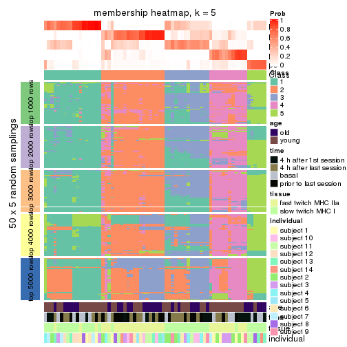
membership_heatmap(res, k = 6)
As soon as we have had the classes for columns, we can look for signatures which are significantly different between classes which can be candidate marks for certain classes. Following are the heatmaps for signatures.
Signature heatmaps where rows are scaled:
get_signatures(res, k = 2)
get_signatures(res, k = 3)
get_signatures(res, k = 4)
get_signatures(res, k = 5)
get_signatures(res, k = 6)
Signature heatmaps where rows are not scaled:
get_signatures(res, k = 2, scale_rows = FALSE)

get_signatures(res, k = 3, scale_rows = FALSE)
get_signatures(res, k = 4, scale_rows = FALSE)
get_signatures(res, k = 5, scale_rows = FALSE)
get_signatures(res, k = 6, scale_rows = FALSE)
Compare the overlap of signatures from different k:
compare_signatures(res)
get_signature() returns a data frame invisibly. TO get the list of signatures, the function
call should be assigned to a variable explicitly. In following code, if plot argument is set
to FALSE, no heatmap is plotted while only the differential analysis is performed.
# code only for demonstration
tb = get_signature(res, k = ..., plot = FALSE)
An example of the output of tb is:
#> which_row fdr mean_1 mean_2 scaled_mean_1 scaled_mean_2 km
#> 1 38 0.042760348 8.373488 9.131774 -0.5533452 0.5164555 1
#> 2 40 0.018707592 7.106213 8.469186 -0.6173731 0.5762149 1
#> 3 55 0.019134737 10.221463 11.207825 -0.6159697 0.5749050 1
#> 4 59 0.006059896 5.921854 7.869574 -0.6899429 0.6439467 1
#> 5 60 0.018055526 8.928898 10.211722 -0.6204761 0.5791110 1
#> 6 98 0.009384629 15.714769 14.887706 0.6635654 -0.6193277 2
...
The columns in tb are:
which_row: row indices corresponding to the input matrix.fdr: FDR for the differential test. mean_x: The mean value in group x.scaled_mean_x: The mean value in group x after rows are scaled.km: Row groups if k-means clustering is applied to rows.UMAP plot which shows how samples are separated.
dimension_reduction(res, k = 2, method = "UMAP")
dimension_reduction(res, k = 3, method = "UMAP")
dimension_reduction(res, k = 4, method = "UMAP")
dimension_reduction(res, k = 5, method = "UMAP")
dimension_reduction(res, k = 6, method = "UMAP")
Following heatmap shows how subgroups are split when increasing k:
collect_classes(res)
Test correlation between subgroups and known annotations. If the known annotation is numeric, one-way ANOVA test is applied, and if the known annotation is discrete, chi-squared contingency table test is applied.
test_to_known_factors(res)
#> n age(p) time(p) tissue(p) individual(p) k
#> SD:mclust 70 0.8670 0.7250 7.21e-13 0.77488 2
#> SD:mclust 69 0.7954 0.7317 1.16e-12 0.71949 3
#> SD:mclust 32 0.0166 0.1492 1.24e-06 0.03293 4
#> SD:mclust 55 0.0146 0.1705 4.96e-09 0.00163 5
#> SD:mclust 60 0.0279 0.0647 1.75e-09 0.08518 6
If matrix rows can be associated to genes, consider to use functional_enrichment(res,
...) to perform function enrichment for the signature genes. See this vignette for more detailed explanations.
The object with results only for a single top-value method and a single partition method can be extracted as:
res = res_list["SD", "NMF"]
# you can also extract it by
# res = res_list["SD:NMF"]
A summary of res and all the functions that can be applied to it:
res
#> A 'ConsensusPartition' object with k = 2, 3, 4, 5, 6.
#> On a matrix with 51941 rows and 70 columns.
#> Top rows (1000, 2000, 3000, 4000, 5000) are extracted by 'SD' method.
#> Subgroups are detected by 'NMF' method.
#> Performed in total 1250 partitions by row resampling.
#> Best k for subgroups seems to be 2.
#>
#> Following methods can be applied to this 'ConsensusPartition' object:
#> [1] "cola_report" "collect_classes" "collect_plots"
#> [4] "collect_stats" "colnames" "compare_signatures"
#> [7] "consensus_heatmap" "dimension_reduction" "functional_enrichment"
#> [10] "get_anno_col" "get_anno" "get_classes"
#> [13] "get_consensus" "get_matrix" "get_membership"
#> [16] "get_param" "get_signatures" "get_stats"
#> [19] "is_best_k" "is_stable_k" "membership_heatmap"
#> [22] "ncol" "nrow" "plot_ecdf"
#> [25] "rownames" "select_partition_number" "show"
#> [28] "suggest_best_k" "test_to_known_factors"
collect_plots() function collects all the plots made from res for all k (number of partitions)
into one single page to provide an easy and fast comparison between different k.
collect_plots(res)
The plots are:
k and the heatmap of
predicted classes for each k.k.k.k.All the plots in panels can be made by individual functions and they are plotted later in this section.
select_partition_number() produces several plots showing different
statistics for choosing “optimized” k. There are following statistics:
k;k, the area increased is defined as \(A_k - A_{k-1}\).The detailed explanations of these statistics can be found in the cola vignette.
Generally speaking, lower PAC score, higher mean silhouette score or higher
concordance corresponds to better partition. Rand index and Jaccard index
measure how similar the current partition is compared to partition with k-1.
If they are too similar, we won't accept k is better than k-1.
select_partition_number(res)
The numeric values for all these statistics can be obtained by get_stats().
get_stats(res)
#> k 1-PAC mean_silhouette concordance area_increased Rand Jaccard
#> 2 2 0.597 0.812 0.920 0.4980 0.496 0.496
#> 3 3 0.533 0.736 0.859 0.3341 0.735 0.516
#> 4 4 0.488 0.505 0.726 0.1058 0.868 0.641
#> 5 5 0.473 0.434 0.660 0.0538 0.919 0.729
#> 6 6 0.494 0.369 0.600 0.0329 0.976 0.906
suggest_best_k() suggests the best \(k\) based on these statistics. The rules are as follows:
suggest_best_k(res)
#> [1] 2
Following shows the table of the partitions (You need to click the show/hide
code output link to see it). The membership matrix (columns with name p*)
is inferred by
clue::cl_consensus()
function with the SE method. Basically the value in the membership matrix
represents the probability to belong to a certain group. The finall class
label for an item is determined with the group with highest probability it
belongs to.
In get_classes() function, the entropy is calculated from the membership
matrix and the silhouette score is calculated from the consensus matrix.
cbind(get_classes(res, k = 2), get_membership(res, k = 2))
#> class entropy silhouette p1 p2
#> GSM701770 1 0.0000 0.9181 1.000 0.000
#> GSM701769 1 0.0000 0.9181 1.000 0.000
#> GSM701768 1 0.0672 0.9151 0.992 0.008
#> GSM701767 1 0.9954 0.0468 0.540 0.460
#> GSM701766 2 0.6623 0.7697 0.172 0.828
#> GSM701806 1 0.0000 0.9181 1.000 0.000
#> GSM701805 1 0.0000 0.9181 1.000 0.000
#> GSM701804 2 0.7299 0.7287 0.204 0.796
#> GSM701803 1 0.9491 0.4138 0.632 0.368
#> GSM701775 1 0.0000 0.9181 1.000 0.000
#> GSM701774 1 0.1414 0.9091 0.980 0.020
#> GSM701773 2 0.0000 0.8966 0.000 1.000
#> GSM701772 1 0.7056 0.7319 0.808 0.192
#> GSM701771 1 0.0000 0.9181 1.000 0.000
#> GSM701810 1 0.0000 0.9181 1.000 0.000
#> GSM701809 2 0.8207 0.6537 0.256 0.744
#> GSM701808 1 0.5737 0.8161 0.864 0.136
#> GSM701807 1 0.3584 0.8772 0.932 0.068
#> GSM701780 1 0.0000 0.9181 1.000 0.000
#> GSM701779 2 0.0000 0.8966 0.000 1.000
#> GSM701778 2 0.0000 0.8966 0.000 1.000
#> GSM701777 2 0.3879 0.8570 0.076 0.924
#> GSM701776 1 0.0000 0.9181 1.000 0.000
#> GSM701816 2 0.9896 0.2337 0.440 0.560
#> GSM701815 2 0.0000 0.8966 0.000 1.000
#> GSM701814 2 0.0000 0.8966 0.000 1.000
#> GSM701813 2 0.9922 0.1994 0.448 0.552
#> GSM701812 1 0.7219 0.7383 0.800 0.200
#> GSM701811 1 0.0000 0.9181 1.000 0.000
#> GSM701786 1 0.0000 0.9181 1.000 0.000
#> GSM701785 2 0.2043 0.8840 0.032 0.968
#> GSM701784 2 0.2043 0.8839 0.032 0.968
#> GSM701783 1 0.0000 0.9181 1.000 0.000
#> GSM701782 2 0.0000 0.8966 0.000 1.000
#> GSM701781 2 0.0938 0.8924 0.012 0.988
#> GSM701822 2 0.0000 0.8966 0.000 1.000
#> GSM701821 2 0.0000 0.8966 0.000 1.000
#> GSM701820 2 0.9460 0.4406 0.364 0.636
#> GSM701819 1 0.6973 0.7545 0.812 0.188
#> GSM701818 1 0.5294 0.8327 0.880 0.120
#> GSM701817 2 0.9922 0.2018 0.448 0.552
#> GSM701790 1 0.0000 0.9181 1.000 0.000
#> GSM701789 1 0.0000 0.9181 1.000 0.000
#> GSM701788 1 0.0000 0.9181 1.000 0.000
#> GSM701787 2 0.7528 0.7147 0.216 0.784
#> GSM701824 1 0.2043 0.9024 0.968 0.032
#> GSM701823 2 0.0000 0.8966 0.000 1.000
#> GSM701791 2 0.0000 0.8966 0.000 1.000
#> GSM701793 1 0.0000 0.9181 1.000 0.000
#> GSM701792 1 0.3114 0.8847 0.944 0.056
#> GSM701825 2 0.9323 0.4769 0.348 0.652
#> GSM701827 2 0.0000 0.8966 0.000 1.000
#> GSM701826 2 0.0000 0.8966 0.000 1.000
#> GSM701797 1 0.9129 0.4690 0.672 0.328
#> GSM701796 1 0.0000 0.9181 1.000 0.000
#> GSM701795 2 0.0000 0.8966 0.000 1.000
#> GSM701794 2 0.0000 0.8966 0.000 1.000
#> GSM701831 2 0.0000 0.8966 0.000 1.000
#> GSM701830 2 0.0000 0.8966 0.000 1.000
#> GSM701829 2 0.2603 0.8762 0.044 0.956
#> GSM701828 2 0.0376 0.8952 0.004 0.996
#> GSM701798 2 0.0000 0.8966 0.000 1.000
#> GSM701802 2 0.5059 0.8305 0.112 0.888
#> GSM701801 1 0.0000 0.9181 1.000 0.000
#> GSM701800 1 0.0672 0.9151 0.992 0.008
#> GSM701799 2 0.0000 0.8966 0.000 1.000
#> GSM701832 2 0.0000 0.8966 0.000 1.000
#> GSM701835 2 0.7299 0.7403 0.204 0.796
#> GSM701834 2 0.0000 0.8966 0.000 1.000
#> GSM701833 2 0.0000 0.8966 0.000 1.000
cbind(get_classes(res, k = 3), get_membership(res, k = 3))
#> class entropy silhouette p1 p2 p3
#> GSM701770 3 0.1765 0.8544 0.040 0.004 0.956
#> GSM701769 3 0.2860 0.8419 0.084 0.004 0.912
#> GSM701768 3 0.1411 0.8503 0.000 0.036 0.964
#> GSM701767 3 0.4452 0.7333 0.000 0.192 0.808
#> GSM701766 3 0.6095 0.3817 0.000 0.392 0.608
#> GSM701806 3 0.5905 0.5293 0.352 0.000 0.648
#> GSM701805 1 0.1753 0.8470 0.952 0.000 0.048
#> GSM701804 1 0.5553 0.6369 0.724 0.272 0.004
#> GSM701803 1 0.1753 0.8753 0.952 0.048 0.000
#> GSM701775 3 0.0829 0.8563 0.004 0.012 0.984
#> GSM701774 3 0.1751 0.8570 0.012 0.028 0.960
#> GSM701773 2 0.2959 0.7566 0.000 0.900 0.100
#> GSM701772 3 0.2711 0.8241 0.000 0.088 0.912
#> GSM701771 3 0.2066 0.8483 0.060 0.000 0.940
#> GSM701810 1 0.1643 0.8533 0.956 0.000 0.044
#> GSM701809 1 0.4452 0.7593 0.808 0.192 0.000
#> GSM701808 1 0.0000 0.8747 1.000 0.000 0.000
#> GSM701807 1 0.0237 0.8731 0.996 0.000 0.004
#> GSM701780 3 0.4413 0.8007 0.160 0.008 0.832
#> GSM701779 2 0.0892 0.7980 0.000 0.980 0.020
#> GSM701778 2 0.1182 0.8035 0.012 0.976 0.012
#> GSM701777 2 0.6274 0.0626 0.000 0.544 0.456
#> GSM701776 1 0.1643 0.8495 0.956 0.000 0.044
#> GSM701816 1 0.3340 0.8430 0.880 0.120 0.000
#> GSM701815 2 0.2878 0.7951 0.096 0.904 0.000
#> GSM701814 2 0.2959 0.7931 0.100 0.900 0.000
#> GSM701813 1 0.2959 0.8582 0.900 0.100 0.000
#> GSM701812 1 0.0892 0.8776 0.980 0.020 0.000
#> GSM701811 3 0.1482 0.8574 0.020 0.012 0.968
#> GSM701786 3 0.3267 0.8261 0.116 0.000 0.884
#> GSM701785 2 0.5760 0.4355 0.000 0.672 0.328
#> GSM701784 2 0.6291 0.0255 0.000 0.532 0.468
#> GSM701783 3 0.5138 0.7105 0.252 0.000 0.748
#> GSM701782 2 0.1585 0.8051 0.028 0.964 0.008
#> GSM701781 2 0.6192 0.7067 0.176 0.764 0.060
#> GSM701822 2 0.4002 0.7669 0.160 0.840 0.000
#> GSM701821 2 0.5431 0.6133 0.284 0.716 0.000
#> GSM701820 1 0.3267 0.8462 0.884 0.116 0.000
#> GSM701819 1 0.0592 0.8770 0.988 0.012 0.000
#> GSM701818 1 0.0475 0.8748 0.992 0.004 0.004
#> GSM701817 1 0.2261 0.8707 0.932 0.068 0.000
#> GSM701790 3 0.1129 0.8554 0.004 0.020 0.976
#> GSM701789 3 0.0892 0.8545 0.000 0.020 0.980
#> GSM701788 3 0.3551 0.8162 0.132 0.000 0.868
#> GSM701787 3 0.5706 0.5353 0.000 0.320 0.680
#> GSM701824 1 0.4974 0.6218 0.764 0.000 0.236
#> GSM701823 2 0.4504 0.7399 0.196 0.804 0.000
#> GSM701791 2 0.0892 0.7979 0.000 0.980 0.020
#> GSM701793 3 0.0661 0.8563 0.004 0.008 0.988
#> GSM701792 3 0.1529 0.8487 0.000 0.040 0.960
#> GSM701825 1 0.2625 0.8654 0.916 0.084 0.000
#> GSM701827 2 0.1529 0.8026 0.040 0.960 0.000
#> GSM701826 2 0.4062 0.7667 0.164 0.836 0.000
#> GSM701797 3 0.5982 0.6879 0.028 0.228 0.744
#> GSM701796 3 0.1647 0.8534 0.036 0.004 0.960
#> GSM701795 2 0.0983 0.8009 0.004 0.980 0.016
#> GSM701794 2 0.0829 0.8011 0.004 0.984 0.012
#> GSM701831 2 0.5926 0.4745 0.356 0.644 0.000
#> GSM701830 2 0.3879 0.7719 0.152 0.848 0.000
#> GSM701829 1 0.6079 0.3422 0.612 0.388 0.000
#> GSM701828 2 0.5497 0.6065 0.292 0.708 0.000
#> GSM701798 2 0.1163 0.7956 0.000 0.972 0.028
#> GSM701802 2 0.5859 0.3948 0.000 0.656 0.344
#> GSM701801 3 0.5202 0.7575 0.220 0.008 0.772
#> GSM701800 3 0.6274 0.2893 0.456 0.000 0.544
#> GSM701799 2 0.0237 0.8026 0.004 0.996 0.000
#> GSM701832 2 0.4121 0.7624 0.168 0.832 0.000
#> GSM701835 2 0.5576 0.7720 0.104 0.812 0.084
#> GSM701834 2 0.4555 0.7349 0.200 0.800 0.000
#> GSM701833 2 0.3116 0.7908 0.108 0.892 0.000
cbind(get_classes(res, k = 4), get_membership(res, k = 4))
#> class entropy silhouette p1 p2 p3 p4
#> GSM701770 1 0.3681 0.74018 0.848 0.004 0.024 0.124
#> GSM701769 1 0.5138 0.48509 0.600 0.008 0.000 0.392
#> GSM701768 1 0.3052 0.74963 0.896 0.032 0.064 0.008
#> GSM701767 1 0.4708 0.68731 0.800 0.140 0.012 0.048
#> GSM701766 2 0.6875 0.03692 0.456 0.468 0.020 0.056
#> GSM701806 1 0.7169 0.22800 0.508 0.000 0.148 0.344
#> GSM701805 4 0.5696 0.03761 0.024 0.000 0.480 0.496
#> GSM701804 4 0.7979 -0.09188 0.012 0.196 0.392 0.400
#> GSM701803 4 0.5078 0.39010 0.000 0.028 0.272 0.700
#> GSM701775 1 0.1994 0.75813 0.936 0.004 0.052 0.008
#> GSM701774 1 0.3883 0.75666 0.864 0.024 0.060 0.052
#> GSM701773 2 0.2722 0.76486 0.064 0.904 0.032 0.000
#> GSM701772 1 0.2686 0.75316 0.916 0.040 0.012 0.032
#> GSM701771 1 0.2623 0.75704 0.908 0.000 0.028 0.064
#> GSM701810 3 0.5582 0.22469 0.032 0.000 0.620 0.348
#> GSM701809 3 0.6112 0.37916 0.000 0.096 0.656 0.248
#> GSM701808 3 0.4776 0.22882 0.000 0.000 0.624 0.376
#> GSM701807 3 0.4428 0.32285 0.004 0.000 0.720 0.276
#> GSM701780 1 0.5704 0.29103 0.496 0.012 0.008 0.484
#> GSM701779 2 0.1388 0.78036 0.012 0.960 0.028 0.000
#> GSM701778 2 0.2402 0.77318 0.012 0.912 0.000 0.076
#> GSM701777 2 0.6480 0.53573 0.264 0.640 0.012 0.084
#> GSM701776 3 0.5483 -0.03421 0.016 0.000 0.536 0.448
#> GSM701816 4 0.6071 0.35049 0.000 0.144 0.172 0.684
#> GSM701815 2 0.2644 0.77219 0.000 0.908 0.032 0.060
#> GSM701814 2 0.1724 0.77488 0.000 0.948 0.032 0.020
#> GSM701813 4 0.4071 0.45332 0.000 0.064 0.104 0.832
#> GSM701812 4 0.4356 0.39385 0.000 0.000 0.292 0.708
#> GSM701811 1 0.3495 0.74964 0.868 0.012 0.020 0.100
#> GSM701786 1 0.4253 0.68030 0.776 0.000 0.016 0.208
#> GSM701785 2 0.4898 0.67545 0.184 0.772 0.024 0.020
#> GSM701784 2 0.7207 0.28146 0.364 0.512 0.116 0.008
#> GSM701783 4 0.5256 -0.02045 0.392 0.000 0.012 0.596
#> GSM701782 2 0.3894 0.74279 0.024 0.832 0.004 0.140
#> GSM701781 2 0.5616 0.51094 0.016 0.628 0.012 0.344
#> GSM701822 2 0.2840 0.76363 0.000 0.900 0.056 0.044
#> GSM701821 2 0.4793 0.65182 0.000 0.756 0.040 0.204
#> GSM701820 3 0.4379 0.42794 0.000 0.036 0.792 0.172
#> GSM701819 4 0.3494 0.46458 0.000 0.004 0.172 0.824
#> GSM701818 4 0.4699 0.35608 0.004 0.000 0.320 0.676
#> GSM701817 4 0.5678 0.29806 0.000 0.044 0.316 0.640
#> GSM701790 1 0.3727 0.70818 0.824 0.004 0.164 0.008
#> GSM701789 1 0.1930 0.75864 0.936 0.004 0.056 0.004
#> GSM701788 1 0.4955 0.61527 0.708 0.000 0.024 0.268
#> GSM701787 1 0.6913 0.37927 0.584 0.296 0.112 0.008
#> GSM701824 3 0.4100 0.37595 0.076 0.000 0.832 0.092
#> GSM701823 3 0.6009 -0.00945 0.000 0.468 0.492 0.040
#> GSM701791 2 0.1854 0.77806 0.012 0.940 0.048 0.000
#> GSM701793 1 0.3584 0.72064 0.836 0.004 0.152 0.008
#> GSM701792 1 0.3411 0.74171 0.876 0.032 0.084 0.008
#> GSM701825 3 0.3370 0.44141 0.000 0.048 0.872 0.080
#> GSM701827 2 0.2281 0.76075 0.000 0.904 0.096 0.000
#> GSM701826 3 0.5568 0.08767 0.008 0.452 0.532 0.008
#> GSM701797 1 0.7968 0.19130 0.404 0.260 0.004 0.332
#> GSM701796 1 0.2635 0.75517 0.904 0.000 0.020 0.076
#> GSM701795 2 0.0992 0.78346 0.008 0.976 0.012 0.004
#> GSM701794 2 0.0895 0.78140 0.004 0.976 0.020 0.000
#> GSM701831 2 0.5222 0.56929 0.000 0.688 0.032 0.280
#> GSM701830 2 0.2926 0.76574 0.000 0.896 0.048 0.056
#> GSM701829 3 0.7654 0.29924 0.000 0.340 0.440 0.220
#> GSM701828 3 0.5467 0.30534 0.000 0.364 0.612 0.024
#> GSM701798 2 0.1484 0.78300 0.016 0.960 0.004 0.020
#> GSM701802 2 0.5208 0.64728 0.220 0.736 0.012 0.032
#> GSM701801 4 0.5666 -0.25149 0.460 0.016 0.004 0.520
#> GSM701800 4 0.5886 0.13785 0.316 0.016 0.028 0.640
#> GSM701799 2 0.0779 0.78197 0.004 0.980 0.016 0.000
#> GSM701832 2 0.4661 0.60811 0.000 0.728 0.256 0.016
#> GSM701835 2 0.6083 0.66510 0.028 0.724 0.156 0.092
#> GSM701834 2 0.4801 0.65453 0.000 0.764 0.188 0.048
#> GSM701833 2 0.3908 0.65558 0.000 0.784 0.212 0.004
cbind(get_classes(res, k = 5), get_membership(res, k = 5))
#> class entropy silhouette p1 p2 p3 p4 p5
#> GSM701770 1 0.4730 0.62795 0.784 0.004 0.072 0.100 0.040
#> GSM701769 1 0.5661 0.29700 0.564 0.000 0.372 0.032 0.032
#> GSM701768 1 0.5107 0.63293 0.740 0.016 0.008 0.152 0.084
#> GSM701767 1 0.5857 0.57864 0.720 0.136 0.036 0.056 0.052
#> GSM701766 1 0.7772 0.14368 0.428 0.360 0.020 0.124 0.068
#> GSM701806 1 0.7772 0.28237 0.464 0.000 0.260 0.156 0.120
#> GSM701805 4 0.6130 0.35237 0.008 0.000 0.292 0.568 0.132
#> GSM701804 4 0.5374 0.30506 0.024 0.064 0.084 0.760 0.068
#> GSM701803 3 0.6084 -0.12352 0.000 0.028 0.508 0.404 0.060
#> GSM701775 1 0.3725 0.65083 0.816 0.000 0.036 0.008 0.140
#> GSM701774 1 0.6726 0.54882 0.636 0.028 0.044 0.172 0.120
#> GSM701773 2 0.2647 0.74443 0.028 0.908 0.008 0.024 0.032
#> GSM701772 1 0.5213 0.61675 0.764 0.072 0.012 0.068 0.084
#> GSM701771 1 0.5229 0.61125 0.712 0.000 0.028 0.192 0.068
#> GSM701810 5 0.7515 -0.43339 0.040 0.000 0.248 0.344 0.368
#> GSM701809 4 0.7884 0.15131 0.000 0.112 0.156 0.392 0.340
#> GSM701808 4 0.6851 0.32493 0.004 0.000 0.264 0.416 0.316
#> GSM701807 4 0.6291 0.33050 0.004 0.000 0.136 0.484 0.376
#> GSM701780 3 0.6161 0.06449 0.388 0.008 0.528 0.040 0.036
#> GSM701779 2 0.3056 0.73699 0.020 0.884 0.004 0.052 0.040
#> GSM701778 2 0.3491 0.72358 0.008 0.856 0.088 0.016 0.032
#> GSM701777 2 0.7292 0.30577 0.324 0.516 0.044 0.064 0.052
#> GSM701776 4 0.6114 0.40935 0.008 0.000 0.272 0.580 0.140
#> GSM701816 3 0.5946 0.26967 0.000 0.136 0.676 0.140 0.048
#> GSM701815 2 0.3245 0.74775 0.000 0.872 0.048 0.036 0.044
#> GSM701814 2 0.2027 0.74857 0.000 0.928 0.008 0.024 0.040
#> GSM701813 3 0.4268 0.34761 0.000 0.084 0.772 0.144 0.000
#> GSM701812 3 0.5497 0.13500 0.000 0.012 0.604 0.328 0.056
#> GSM701811 1 0.4773 0.63012 0.788 0.012 0.068 0.096 0.036
#> GSM701786 1 0.5587 0.50585 0.664 0.000 0.244 0.044 0.048
#> GSM701785 2 0.4749 0.68195 0.144 0.776 0.032 0.020 0.028
#> GSM701784 2 0.7534 0.17650 0.308 0.448 0.004 0.052 0.188
#> GSM701783 3 0.5271 0.33329 0.312 0.000 0.632 0.040 0.016
#> GSM701782 2 0.5032 0.69465 0.024 0.776 0.108 0.048 0.044
#> GSM701781 2 0.7382 0.38277 0.024 0.544 0.240 0.144 0.048
#> GSM701822 2 0.2921 0.73594 0.000 0.884 0.028 0.020 0.068
#> GSM701821 2 0.5221 0.60656 0.000 0.712 0.196 0.060 0.032
#> GSM701820 4 0.6466 0.21481 0.004 0.048 0.052 0.460 0.436
#> GSM701819 3 0.5019 0.21830 0.000 0.012 0.668 0.280 0.040
#> GSM701818 3 0.5229 0.08014 0.000 0.000 0.612 0.324 0.064
#> GSM701817 3 0.6033 0.15772 0.000 0.040 0.632 0.244 0.084
#> GSM701790 1 0.4775 0.57343 0.640 0.000 0.008 0.020 0.332
#> GSM701789 1 0.3344 0.65517 0.832 0.000 0.012 0.012 0.144
#> GSM701788 1 0.5569 0.47051 0.644 0.000 0.276 0.040 0.040
#> GSM701787 1 0.7158 0.25372 0.460 0.292 0.004 0.020 0.224
#> GSM701824 5 0.5449 0.00919 0.076 0.000 0.064 0.136 0.724
#> GSM701823 2 0.7351 -0.04698 0.000 0.452 0.052 0.176 0.320
#> GSM701791 2 0.3255 0.73932 0.016 0.872 0.008 0.032 0.072
#> GSM701793 1 0.4650 0.58989 0.668 0.000 0.008 0.020 0.304
#> GSM701792 1 0.4462 0.62930 0.736 0.020 0.008 0.008 0.228
#> GSM701825 5 0.5208 -0.12760 0.000 0.012 0.044 0.304 0.640
#> GSM701827 2 0.2771 0.71483 0.000 0.860 0.000 0.012 0.128
#> GSM701826 5 0.6139 0.30095 0.004 0.348 0.024 0.068 0.556
#> GSM701797 3 0.7700 0.04355 0.316 0.272 0.372 0.012 0.028
#> GSM701796 1 0.4906 0.61717 0.756 0.004 0.120 0.016 0.104
#> GSM701795 2 0.0902 0.74885 0.004 0.976 0.008 0.004 0.008
#> GSM701794 2 0.1362 0.75048 0.004 0.960 0.008 0.012 0.016
#> GSM701831 2 0.4834 0.54059 0.000 0.656 0.308 0.008 0.028
#> GSM701830 2 0.3012 0.73169 0.000 0.876 0.060 0.008 0.056
#> GSM701829 5 0.8383 0.14221 0.004 0.288 0.272 0.116 0.320
#> GSM701828 5 0.5960 0.31982 0.000 0.316 0.028 0.068 0.588
#> GSM701798 2 0.2253 0.75138 0.012 0.924 0.036 0.008 0.020
#> GSM701802 2 0.6101 0.55855 0.220 0.648 0.084 0.004 0.044
#> GSM701801 3 0.5914 0.28878 0.296 0.028 0.620 0.016 0.040
#> GSM701800 3 0.5455 0.40544 0.192 0.040 0.712 0.012 0.044
#> GSM701799 2 0.1471 0.75101 0.004 0.952 0.020 0.000 0.024
#> GSM701832 2 0.4782 0.58723 0.000 0.708 0.048 0.008 0.236
#> GSM701835 2 0.7289 0.42557 0.032 0.576 0.140 0.048 0.204
#> GSM701834 2 0.4363 0.68913 0.000 0.788 0.072 0.016 0.124
#> GSM701833 2 0.3320 0.69698 0.000 0.820 0.012 0.004 0.164
cbind(get_classes(res, k = 6), get_membership(res, k = 6))
#> class entropy silhouette p1 p2 p3 p4 p5 p6
#> GSM701770 1 0.631 0.4026 0.552 0.008 0.012 0.016 0.168 0.244
#> GSM701769 5 0.612 -0.1709 0.412 0.008 0.016 0.008 0.456 0.100
#> GSM701768 1 0.568 0.5015 0.664 0.036 0.052 0.020 0.016 0.212
#> GSM701767 1 0.759 0.3611 0.484 0.192 0.000 0.056 0.100 0.168
#> GSM701766 1 0.763 0.1945 0.368 0.300 0.016 0.024 0.044 0.248
#> GSM701806 1 0.813 0.1972 0.424 0.000 0.132 0.120 0.216 0.108
#> GSM701805 6 0.782 0.1667 0.012 0.000 0.212 0.212 0.200 0.364
#> GSM701804 6 0.655 0.2047 0.004 0.060 0.196 0.112 0.032 0.596
#> GSM701803 5 0.743 -0.3095 0.000 0.012 0.136 0.136 0.372 0.344
#> GSM701775 1 0.331 0.5659 0.824 0.000 0.028 0.132 0.016 0.000
#> GSM701774 1 0.822 0.3071 0.436 0.056 0.236 0.036 0.076 0.160
#> GSM701773 2 0.192 0.7217 0.004 0.928 0.000 0.032 0.012 0.024
#> GSM701772 1 0.623 0.4982 0.648 0.084 0.044 0.012 0.044 0.168
#> GSM701771 1 0.653 0.4187 0.576 0.000 0.080 0.036 0.072 0.236
#> GSM701810 3 0.568 0.3178 0.028 0.000 0.680 0.152 0.084 0.056
#> GSM701809 3 0.452 0.3519 0.004 0.052 0.788 0.084 0.028 0.044
#> GSM701808 3 0.346 0.3421 0.004 0.004 0.844 0.036 0.080 0.032
#> GSM701807 3 0.697 -0.0992 0.004 0.000 0.440 0.232 0.064 0.260
#> GSM701780 5 0.591 0.1195 0.324 0.004 0.004 0.052 0.556 0.060
#> GSM701779 2 0.273 0.7158 0.008 0.892 0.016 0.024 0.008 0.052
#> GSM701778 2 0.368 0.6965 0.012 0.836 0.004 0.024 0.068 0.056
#> GSM701777 2 0.692 0.3668 0.212 0.532 0.000 0.020 0.088 0.148
#> GSM701776 3 0.730 -0.2299 0.012 0.000 0.428 0.124 0.136 0.300
#> GSM701816 5 0.727 0.2429 0.000 0.112 0.204 0.064 0.528 0.092
#> GSM701815 2 0.422 0.6949 0.000 0.800 0.016 0.076 0.056 0.052
#> GSM701814 2 0.295 0.7222 0.000 0.872 0.016 0.072 0.012 0.028
#> GSM701813 5 0.602 0.3226 0.000 0.032 0.248 0.032 0.604 0.084
#> GSM701812 5 0.640 0.1828 0.000 0.000 0.384 0.060 0.440 0.116
#> GSM701811 1 0.597 0.4798 0.616 0.012 0.016 0.012 0.140 0.204
#> GSM701786 1 0.561 0.3667 0.612 0.000 0.024 0.044 0.284 0.036
#> GSM701785 2 0.530 0.6334 0.132 0.732 0.024 0.032 0.052 0.028
#> GSM701784 2 0.763 0.1095 0.328 0.432 0.064 0.084 0.012 0.080
#> GSM701783 5 0.611 0.3523 0.196 0.000 0.116 0.016 0.616 0.056
#> GSM701782 2 0.549 0.6078 0.016 0.704 0.024 0.024 0.148 0.084
#> GSM701781 2 0.683 0.3531 0.008 0.528 0.016 0.056 0.256 0.136
#> GSM701822 2 0.297 0.7090 0.000 0.864 0.040 0.080 0.004 0.012
#> GSM701821 2 0.554 0.5712 0.000 0.680 0.116 0.036 0.148 0.020
#> GSM701820 3 0.544 0.2878 0.008 0.036 0.700 0.124 0.012 0.120
#> GSM701819 5 0.588 0.2256 0.000 0.004 0.424 0.040 0.464 0.068
#> GSM701818 5 0.657 0.1278 0.004 0.000 0.356 0.056 0.452 0.132
#> GSM701817 5 0.616 0.1371 0.000 0.016 0.428 0.060 0.448 0.048
#> GSM701790 1 0.421 0.4650 0.660 0.000 0.020 0.312 0.000 0.008
#> GSM701789 1 0.325 0.5715 0.836 0.000 0.004 0.120 0.020 0.020
#> GSM701788 1 0.569 0.3061 0.560 0.000 0.008 0.040 0.336 0.056
#> GSM701787 1 0.710 0.2046 0.468 0.280 0.020 0.176 0.004 0.052
#> GSM701824 4 0.621 0.1023 0.100 0.000 0.304 0.544 0.024 0.028
#> GSM701823 2 0.709 0.0697 0.000 0.444 0.016 0.304 0.068 0.168
#> GSM701791 2 0.276 0.7187 0.008 0.876 0.004 0.072 0.000 0.040
#> GSM701793 1 0.430 0.5107 0.720 0.000 0.036 0.224 0.000 0.020
#> GSM701792 1 0.449 0.5277 0.740 0.012 0.044 0.188 0.008 0.008
#> GSM701825 4 0.681 -0.0824 0.008 0.028 0.272 0.492 0.016 0.184
#> GSM701827 2 0.275 0.7022 0.000 0.856 0.016 0.120 0.000 0.008
#> GSM701826 3 0.698 -0.2918 0.020 0.320 0.332 0.308 0.000 0.020
#> GSM701797 5 0.671 0.2226 0.188 0.204 0.020 0.024 0.548 0.016
#> GSM701796 1 0.530 0.4853 0.668 0.000 0.004 0.128 0.176 0.024
#> GSM701795 2 0.123 0.7247 0.000 0.956 0.000 0.024 0.016 0.004
#> GSM701794 2 0.107 0.7231 0.000 0.960 0.000 0.028 0.012 0.000
#> GSM701831 2 0.585 0.3465 0.000 0.532 0.044 0.060 0.356 0.008
#> GSM701830 2 0.385 0.6981 0.000 0.812 0.012 0.104 0.052 0.020
#> GSM701829 4 0.859 0.1448 0.012 0.204 0.244 0.312 0.180 0.048
#> GSM701828 4 0.695 0.2805 0.016 0.260 0.092 0.540 0.028 0.064
#> GSM701798 2 0.177 0.7240 0.008 0.936 0.000 0.020 0.028 0.008
#> GSM701802 2 0.635 0.5131 0.192 0.608 0.012 0.052 0.124 0.012
#> GSM701801 5 0.481 0.3670 0.196 0.024 0.016 0.028 0.724 0.012
#> GSM701800 5 0.638 0.3453 0.144 0.024 0.072 0.076 0.652 0.032
#> GSM701799 2 0.109 0.7240 0.000 0.960 0.000 0.016 0.024 0.000
#> GSM701832 2 0.568 0.4991 0.000 0.628 0.116 0.220 0.024 0.012
#> GSM701835 2 0.778 0.1373 0.012 0.436 0.228 0.160 0.148 0.016
#> GSM701834 2 0.450 0.6651 0.000 0.764 0.068 0.116 0.048 0.004
#> GSM701833 2 0.366 0.6806 0.000 0.804 0.040 0.140 0.008 0.008
Heatmaps for the consensus matrix. It visualizes the probability of two samples to be in a same group.
consensus_heatmap(res, k = 2)
consensus_heatmap(res, k = 3)
consensus_heatmap(res, k = 4)
consensus_heatmap(res, k = 5)
consensus_heatmap(res, k = 6)
Heatmaps for the membership of samples in all partitions to see how consistent they are:
membership_heatmap(res, k = 2)
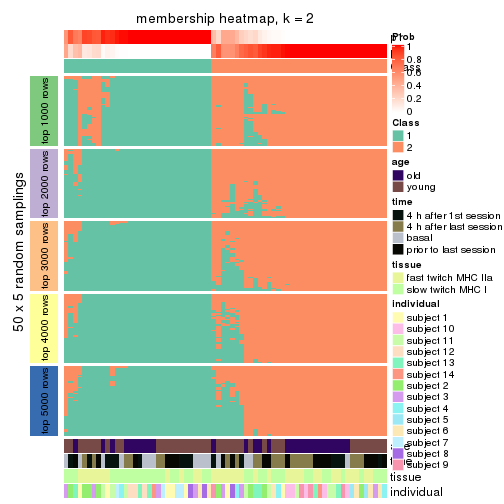
membership_heatmap(res, k = 3)
membership_heatmap(res, k = 4)
membership_heatmap(res, k = 5)
membership_heatmap(res, k = 6)
As soon as we have had the classes for columns, we can look for signatures which are significantly different between classes which can be candidate marks for certain classes. Following are the heatmaps for signatures.
Signature heatmaps where rows are scaled:
get_signatures(res, k = 2)
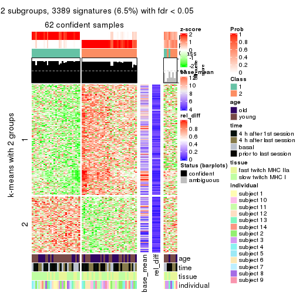
get_signatures(res, k = 3)
get_signatures(res, k = 4)
get_signatures(res, k = 5)
get_signatures(res, k = 6)
Signature heatmaps where rows are not scaled:
get_signatures(res, k = 2, scale_rows = FALSE)
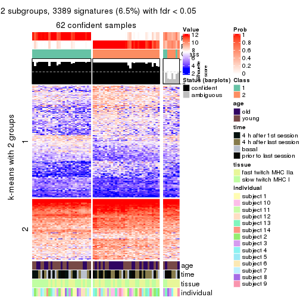
get_signatures(res, k = 3, scale_rows = FALSE)
get_signatures(res, k = 4, scale_rows = FALSE)
get_signatures(res, k = 5, scale_rows = FALSE)
get_signatures(res, k = 6, scale_rows = FALSE)
Compare the overlap of signatures from different k:
compare_signatures(res)
get_signature() returns a data frame invisibly. TO get the list of signatures, the function
call should be assigned to a variable explicitly. In following code, if plot argument is set
to FALSE, no heatmap is plotted while only the differential analysis is performed.
# code only for demonstration
tb = get_signature(res, k = ..., plot = FALSE)
An example of the output of tb is:
#> which_row fdr mean_1 mean_2 scaled_mean_1 scaled_mean_2 km
#> 1 38 0.042760348 8.373488 9.131774 -0.5533452 0.5164555 1
#> 2 40 0.018707592 7.106213 8.469186 -0.6173731 0.5762149 1
#> 3 55 0.019134737 10.221463 11.207825 -0.6159697 0.5749050 1
#> 4 59 0.006059896 5.921854 7.869574 -0.6899429 0.6439467 1
#> 5 60 0.018055526 8.928898 10.211722 -0.6204761 0.5791110 1
#> 6 98 0.009384629 15.714769 14.887706 0.6635654 -0.6193277 2
...
The columns in tb are:
which_row: row indices corresponding to the input matrix.fdr: FDR for the differential test. mean_x: The mean value in group x.scaled_mean_x: The mean value in group x after rows are scaled.km: Row groups if k-means clustering is applied to rows.UMAP plot which shows how samples are separated.
dimension_reduction(res, k = 2, method = "UMAP")
dimension_reduction(res, k = 3, method = "UMAP")
dimension_reduction(res, k = 4, method = "UMAP")
dimension_reduction(res, k = 5, method = "UMAP")
dimension_reduction(res, k = 6, method = "UMAP")
Following heatmap shows how subgroups are split when increasing k:
collect_classes(res)
Test correlation between subgroups and known annotations. If the known annotation is numeric, one-way ANOVA test is applied, and if the known annotation is discrete, chi-squared contingency table test is applied.
test_to_known_factors(res)
#> n age(p) time(p) tissue(p) individual(p) k
#> SD:NMF 62 0.10821 0.053378 2.74e-01 0.0416 2
#> SD:NMF 62 0.00745 0.053377 6.97e-07 0.0166 3
#> SD:NMF 39 0.59482 0.000192 2.63e-02 0.1367 4
#> SD:NMF 35 0.36948 0.001026 3.11e-02 0.1266 5
#> SD:NMF 24 1.00000 0.001899 2.14e-01 0.3795 6
If matrix rows can be associated to genes, consider to use functional_enrichment(res,
...) to perform function enrichment for the signature genes. See this vignette for more detailed explanations.
The object with results only for a single top-value method and a single partition method can be extracted as:
res = res_list["CV", "hclust"]
# you can also extract it by
# res = res_list["CV:hclust"]
A summary of res and all the functions that can be applied to it:
res
#> A 'ConsensusPartition' object with k = 2, 3, 4, 5, 6.
#> On a matrix with 51941 rows and 70 columns.
#> Top rows (1000, 2000, 3000, 4000, 5000) are extracted by 'CV' method.
#> Subgroups are detected by 'hclust' method.
#> Performed in total 1250 partitions by row resampling.
#> Best k for subgroups seems to be 2.
#>
#> Following methods can be applied to this 'ConsensusPartition' object:
#> [1] "cola_report" "collect_classes" "collect_plots"
#> [4] "collect_stats" "colnames" "compare_signatures"
#> [7] "consensus_heatmap" "dimension_reduction" "functional_enrichment"
#> [10] "get_anno_col" "get_anno" "get_classes"
#> [13] "get_consensus" "get_matrix" "get_membership"
#> [16] "get_param" "get_signatures" "get_stats"
#> [19] "is_best_k" "is_stable_k" "membership_heatmap"
#> [22] "ncol" "nrow" "plot_ecdf"
#> [25] "rownames" "select_partition_number" "show"
#> [28] "suggest_best_k" "test_to_known_factors"
collect_plots() function collects all the plots made from res for all k (number of partitions)
into one single page to provide an easy and fast comparison between different k.
collect_plots(res)
The plots are:
k and the heatmap of
predicted classes for each k.k.k.k.All the plots in panels can be made by individual functions and they are plotted later in this section.
select_partition_number() produces several plots showing different
statistics for choosing “optimized” k. There are following statistics:
k;k, the area increased is defined as \(A_k - A_{k-1}\).The detailed explanations of these statistics can be found in the cola vignette.
Generally speaking, lower PAC score, higher mean silhouette score or higher
concordance corresponds to better partition. Rand index and Jaccard index
measure how similar the current partition is compared to partition with k-1.
If they are too similar, we won't accept k is better than k-1.
select_partition_number(res)
The numeric values for all these statistics can be obtained by get_stats().
get_stats(res)
#> k 1-PAC mean_silhouette concordance area_increased Rand Jaccard
#> 2 2 0.352 0.715 0.863 0.4755 0.508 0.508
#> 3 3 0.288 0.521 0.775 0.2080 0.983 0.967
#> 4 4 0.290 0.478 0.726 0.0978 0.851 0.724
#> 5 5 0.342 0.514 0.676 0.0830 0.861 0.692
#> 6 6 0.387 0.417 0.631 0.0539 0.933 0.801
suggest_best_k() suggests the best \(k\) based on these statistics. The rules are as follows:
suggest_best_k(res)
#> [1] 2
Following shows the table of the partitions (You need to click the show/hide
code output link to see it). The membership matrix (columns with name p*)
is inferred by
clue::cl_consensus()
function with the SE method. Basically the value in the membership matrix
represents the probability to belong to a certain group. The finall class
label for an item is determined with the group with highest probability it
belongs to.
In get_classes() function, the entropy is calculated from the membership
matrix and the silhouette score is calculated from the consensus matrix.
cbind(get_classes(res, k = 2), get_membership(res, k = 2))
#> class entropy silhouette p1 p2
#> GSM701770 1 0.0376 0.8248 0.996 0.004
#> GSM701769 1 0.2778 0.8288 0.952 0.048
#> GSM701768 1 0.4298 0.8201 0.912 0.088
#> GSM701767 2 0.9977 0.0293 0.472 0.528
#> GSM701766 1 0.9988 0.1112 0.520 0.480
#> GSM701806 1 0.0000 0.8228 1.000 0.000
#> GSM701805 1 0.1414 0.8293 0.980 0.020
#> GSM701804 1 0.9866 0.3105 0.568 0.432
#> GSM701803 1 0.5408 0.7992 0.876 0.124
#> GSM701775 1 0.4161 0.8173 0.916 0.084
#> GSM701774 1 0.4815 0.8117 0.896 0.104
#> GSM701773 2 0.0938 0.8498 0.012 0.988
#> GSM701772 1 0.9944 0.2036 0.544 0.456
#> GSM701771 1 0.0376 0.8248 0.996 0.004
#> GSM701810 1 0.1184 0.8289 0.984 0.016
#> GSM701809 1 0.5519 0.7998 0.872 0.128
#> GSM701808 1 0.1184 0.8286 0.984 0.016
#> GSM701807 1 0.0000 0.8228 1.000 0.000
#> GSM701780 1 0.6712 0.7599 0.824 0.176
#> GSM701779 2 0.0000 0.8442 0.000 1.000
#> GSM701778 2 0.1633 0.8527 0.024 0.976
#> GSM701777 2 0.8861 0.5921 0.304 0.696
#> GSM701776 1 0.0000 0.8228 1.000 0.000
#> GSM701816 1 0.9686 0.4055 0.604 0.396
#> GSM701815 2 0.4161 0.8358 0.084 0.916
#> GSM701814 2 0.1414 0.8518 0.020 0.980
#> GSM701813 1 0.9460 0.4909 0.636 0.364
#> GSM701812 1 0.6887 0.7566 0.816 0.184
#> GSM701811 1 0.2948 0.8291 0.948 0.052
#> GSM701786 1 0.0000 0.8228 1.000 0.000
#> GSM701785 2 0.5059 0.8210 0.112 0.888
#> GSM701784 2 0.8267 0.6756 0.260 0.740
#> GSM701783 1 0.0672 0.8265 0.992 0.008
#> GSM701782 2 0.8861 0.5896 0.304 0.696
#> GSM701781 2 0.9552 0.4044 0.376 0.624
#> GSM701822 2 0.1414 0.8517 0.020 0.980
#> GSM701821 2 0.6712 0.7772 0.176 0.824
#> GSM701820 1 0.4431 0.8177 0.908 0.092
#> GSM701819 1 0.2423 0.8300 0.960 0.040
#> GSM701818 1 0.0938 0.8279 0.988 0.012
#> GSM701817 1 0.7453 0.7222 0.788 0.212
#> GSM701790 1 0.0938 0.8273 0.988 0.012
#> GSM701789 1 0.2043 0.8309 0.968 0.032
#> GSM701788 1 0.0000 0.8228 1.000 0.000
#> GSM701787 2 0.8499 0.6464 0.276 0.724
#> GSM701824 1 0.1633 0.8298 0.976 0.024
#> GSM701823 2 0.2948 0.8465 0.052 0.948
#> GSM701791 2 0.0376 0.8464 0.004 0.996
#> GSM701793 1 0.0376 0.8247 0.996 0.004
#> GSM701792 1 0.7745 0.7057 0.772 0.228
#> GSM701825 1 0.3733 0.8150 0.928 0.072
#> GSM701827 2 0.0000 0.8442 0.000 1.000
#> GSM701826 2 0.7950 0.7040 0.240 0.760
#> GSM701797 1 0.9608 0.4333 0.616 0.384
#> GSM701796 1 0.2236 0.8299 0.964 0.036
#> GSM701795 2 0.1843 0.8526 0.028 0.972
#> GSM701794 2 0.0000 0.8442 0.000 1.000
#> GSM701831 2 0.2236 0.8522 0.036 0.964
#> GSM701830 2 0.1184 0.8502 0.016 0.984
#> GSM701829 1 0.9933 0.2190 0.548 0.452
#> GSM701828 2 0.7602 0.7322 0.220 0.780
#> GSM701798 2 0.2236 0.8519 0.036 0.964
#> GSM701802 2 0.8081 0.6959 0.248 0.752
#> GSM701801 1 0.9087 0.5606 0.676 0.324
#> GSM701800 1 0.9970 0.1625 0.532 0.468
#> GSM701799 2 0.0000 0.8442 0.000 1.000
#> GSM701832 2 0.6801 0.7747 0.180 0.820
#> GSM701835 1 0.9970 0.1615 0.532 0.468
#> GSM701834 2 0.2236 0.8522 0.036 0.964
#> GSM701833 2 0.0000 0.8442 0.000 1.000
cbind(get_classes(res, k = 3), get_membership(res, k = 3))
#> class entropy silhouette p1 p2 p3
#> GSM701770 1 0.3686 0.6075 0.860 0.000 0.140
#> GSM701769 1 0.4033 0.6319 0.856 0.008 0.136
#> GSM701768 1 0.4821 0.6038 0.840 0.040 0.120
#> GSM701767 2 0.9707 -0.2418 0.352 0.424 0.224
#> GSM701766 1 0.9026 -0.1020 0.444 0.424 0.132
#> GSM701806 1 0.2959 0.6229 0.900 0.000 0.100
#> GSM701805 1 0.6018 0.4754 0.684 0.008 0.308
#> GSM701804 3 0.8838 0.0000 0.220 0.200 0.580
#> GSM701803 1 0.8324 0.2316 0.540 0.088 0.372
#> GSM701775 1 0.4737 0.6154 0.852 0.064 0.084
#> GSM701774 1 0.5554 0.5936 0.812 0.076 0.112
#> GSM701773 2 0.1950 0.7771 0.008 0.952 0.040
#> GSM701772 1 0.9471 -0.0947 0.440 0.376 0.184
#> GSM701771 1 0.4121 0.5952 0.832 0.000 0.168
#> GSM701810 1 0.2682 0.6378 0.920 0.004 0.076
#> GSM701809 1 0.5897 0.5834 0.792 0.076 0.132
#> GSM701808 1 0.3607 0.6377 0.880 0.008 0.112
#> GSM701807 1 0.6398 0.3209 0.580 0.004 0.416
#> GSM701780 1 0.7199 0.4769 0.704 0.092 0.204
#> GSM701779 2 0.0592 0.7710 0.000 0.988 0.012
#> GSM701778 2 0.1832 0.7820 0.008 0.956 0.036
#> GSM701777 2 0.8005 0.4669 0.224 0.648 0.128
#> GSM701776 1 0.6008 0.3826 0.628 0.000 0.372
#> GSM701816 1 0.8858 0.1264 0.532 0.332 0.136
#> GSM701815 2 0.3791 0.7521 0.048 0.892 0.060
#> GSM701814 2 0.1315 0.7810 0.008 0.972 0.020
#> GSM701813 1 0.8668 0.1821 0.564 0.304 0.132
#> GSM701812 1 0.7388 0.4695 0.692 0.100 0.208
#> GSM701811 1 0.4551 0.6346 0.844 0.024 0.132
#> GSM701786 1 0.3192 0.6264 0.888 0.000 0.112
#> GSM701785 2 0.4737 0.7306 0.084 0.852 0.064
#> GSM701784 2 0.6897 0.5510 0.220 0.712 0.068
#> GSM701783 1 0.3412 0.6225 0.876 0.000 0.124
#> GSM701782 2 0.8005 0.4695 0.224 0.648 0.128
#> GSM701781 2 0.8801 0.1672 0.292 0.560 0.148
#> GSM701822 2 0.1337 0.7818 0.012 0.972 0.016
#> GSM701821 2 0.5981 0.6785 0.132 0.788 0.080
#> GSM701820 1 0.5791 0.5882 0.784 0.048 0.168
#> GSM701819 1 0.4453 0.6227 0.836 0.012 0.152
#> GSM701818 1 0.3983 0.6288 0.852 0.004 0.144
#> GSM701817 1 0.7508 0.4678 0.696 0.156 0.148
#> GSM701790 1 0.2400 0.6331 0.932 0.004 0.064
#> GSM701789 1 0.2947 0.6419 0.920 0.020 0.060
#> GSM701788 1 0.3686 0.6124 0.860 0.000 0.140
#> GSM701787 2 0.7454 0.4751 0.252 0.668 0.080
#> GSM701824 1 0.2711 0.6368 0.912 0.000 0.088
#> GSM701823 2 0.3550 0.7452 0.024 0.896 0.080
#> GSM701791 2 0.0983 0.7747 0.004 0.980 0.016
#> GSM701793 1 0.2165 0.6311 0.936 0.000 0.064
#> GSM701792 1 0.6986 0.4485 0.724 0.180 0.096
#> GSM701825 1 0.7690 0.2038 0.536 0.048 0.416
#> GSM701827 2 0.0592 0.7752 0.000 0.988 0.012
#> GSM701826 2 0.7058 0.5571 0.212 0.708 0.080
#> GSM701797 1 0.8907 0.1429 0.528 0.332 0.140
#> GSM701796 1 0.3610 0.6369 0.888 0.016 0.096
#> GSM701795 2 0.1620 0.7822 0.012 0.964 0.024
#> GSM701794 2 0.0747 0.7720 0.000 0.984 0.016
#> GSM701831 2 0.1877 0.7800 0.012 0.956 0.032
#> GSM701830 2 0.1163 0.7777 0.000 0.972 0.028
#> GSM701829 1 0.9103 0.0134 0.476 0.380 0.144
#> GSM701828 2 0.6662 0.5936 0.192 0.736 0.072
#> GSM701798 2 0.1751 0.7810 0.028 0.960 0.012
#> GSM701802 2 0.7124 0.5695 0.204 0.708 0.088
#> GSM701801 1 0.8790 0.2498 0.572 0.268 0.160
#> GSM701800 1 0.8932 -0.0272 0.456 0.420 0.124
#> GSM701799 2 0.0592 0.7730 0.000 0.988 0.012
#> GSM701832 2 0.5810 0.6797 0.132 0.796 0.072
#> GSM701835 1 0.8929 -0.0326 0.460 0.416 0.124
#> GSM701834 2 0.1999 0.7795 0.012 0.952 0.036
#> GSM701833 2 0.0592 0.7752 0.000 0.988 0.012
cbind(get_classes(res, k = 4), get_membership(res, k = 4))
#> class entropy silhouette p1 p2 p3 p4
#> GSM701770 1 0.3763 0.3590 0.832 0.000 0.024 0.144
#> GSM701769 1 0.4483 0.4421 0.712 0.000 0.004 0.284
#> GSM701768 1 0.5652 0.4961 0.716 0.024 0.036 0.224
#> GSM701767 2 0.9575 0.1988 0.240 0.376 0.136 0.248
#> GSM701766 2 0.8310 0.0939 0.356 0.392 0.020 0.232
#> GSM701806 1 0.2542 0.4332 0.904 0.000 0.012 0.084
#> GSM701805 1 0.6263 -0.3861 0.576 0.000 0.068 0.356
#> GSM701804 3 0.2521 0.0000 0.020 0.004 0.916 0.060
#> GSM701803 4 0.7637 0.4898 0.348 0.044 0.088 0.520
#> GSM701775 1 0.4827 0.5011 0.800 0.056 0.016 0.128
#> GSM701774 1 0.6050 0.4813 0.708 0.068 0.024 0.200
#> GSM701773 2 0.2076 0.7602 0.004 0.932 0.008 0.056
#> GSM701772 2 0.8875 0.0314 0.324 0.364 0.048 0.264
#> GSM701771 1 0.4175 0.2552 0.784 0.000 0.016 0.200
#> GSM701810 1 0.3380 0.5027 0.852 0.004 0.008 0.136
#> GSM701809 1 0.6504 0.4418 0.648 0.060 0.028 0.264
#> GSM701808 1 0.4151 0.4694 0.800 0.004 0.016 0.180
#> GSM701807 4 0.6204 0.6281 0.448 0.000 0.052 0.500
#> GSM701780 1 0.6915 0.4101 0.600 0.056 0.040 0.304
#> GSM701779 2 0.0524 0.7522 0.000 0.988 0.004 0.008
#> GSM701778 2 0.1675 0.7655 0.004 0.948 0.004 0.044
#> GSM701777 2 0.7274 0.6120 0.164 0.612 0.024 0.200
#> GSM701776 1 0.5935 -0.6635 0.496 0.000 0.036 0.468
#> GSM701816 1 0.8132 0.2387 0.432 0.284 0.012 0.272
#> GSM701815 2 0.3432 0.7442 0.012 0.872 0.020 0.096
#> GSM701814 2 0.1229 0.7616 0.004 0.968 0.008 0.020
#> GSM701813 1 0.8284 0.1919 0.408 0.276 0.016 0.300
#> GSM701812 1 0.7880 0.3745 0.568 0.076 0.096 0.260
#> GSM701811 1 0.4303 0.4380 0.768 0.008 0.004 0.220
#> GSM701786 1 0.3324 0.4373 0.852 0.000 0.012 0.136
#> GSM701785 2 0.4397 0.7473 0.052 0.820 0.008 0.120
#> GSM701784 2 0.6215 0.6706 0.156 0.684 0.004 0.156
#> GSM701783 1 0.3672 0.4014 0.824 0.000 0.012 0.164
#> GSM701782 2 0.7268 0.6166 0.160 0.612 0.024 0.204
#> GSM701781 2 0.7668 0.4787 0.152 0.528 0.020 0.300
#> GSM701822 2 0.1118 0.7635 0.000 0.964 0.000 0.036
#> GSM701821 2 0.5494 0.7324 0.092 0.768 0.024 0.116
#> GSM701820 1 0.6127 0.4117 0.660 0.028 0.036 0.276
#> GSM701819 1 0.5061 0.4446 0.704 0.004 0.020 0.272
#> GSM701818 1 0.4356 0.4215 0.780 0.004 0.016 0.200
#> GSM701817 1 0.7418 0.3216 0.548 0.136 0.016 0.300
#> GSM701790 1 0.3046 0.4754 0.884 0.004 0.016 0.096
#> GSM701789 1 0.3561 0.5009 0.856 0.012 0.012 0.120
#> GSM701788 1 0.3653 0.3799 0.844 0.000 0.028 0.128
#> GSM701787 2 0.6980 0.6275 0.180 0.632 0.016 0.172
#> GSM701824 1 0.3554 0.5022 0.844 0.000 0.020 0.136
#> GSM701823 2 0.3858 0.7085 0.000 0.844 0.056 0.100
#> GSM701791 2 0.0657 0.7564 0.000 0.984 0.004 0.012
#> GSM701793 1 0.2741 0.4725 0.892 0.000 0.012 0.096
#> GSM701792 1 0.7106 0.3892 0.624 0.160 0.020 0.196
#> GSM701825 4 0.6967 0.6711 0.384 0.020 0.068 0.528
#> GSM701827 2 0.0672 0.7561 0.000 0.984 0.008 0.008
#> GSM701826 2 0.6381 0.6662 0.164 0.684 0.012 0.140
#> GSM701797 1 0.8130 0.2026 0.396 0.300 0.008 0.296
#> GSM701796 1 0.4190 0.4923 0.816 0.004 0.032 0.148
#> GSM701795 2 0.1247 0.7643 0.012 0.968 0.004 0.016
#> GSM701794 2 0.0657 0.7531 0.000 0.984 0.004 0.012
#> GSM701831 2 0.1917 0.7643 0.008 0.944 0.012 0.036
#> GSM701830 2 0.1151 0.7594 0.000 0.968 0.008 0.024
#> GSM701829 1 0.8494 -0.0493 0.360 0.348 0.024 0.268
#> GSM701828 2 0.6320 0.6890 0.152 0.708 0.028 0.112
#> GSM701798 2 0.1510 0.7664 0.016 0.956 0.000 0.028
#> GSM701802 2 0.6322 0.6847 0.148 0.696 0.016 0.140
#> GSM701801 1 0.8185 0.2768 0.456 0.232 0.020 0.292
#> GSM701800 2 0.8188 0.1069 0.348 0.388 0.012 0.252
#> GSM701799 2 0.0376 0.7547 0.000 0.992 0.004 0.004
#> GSM701832 2 0.5272 0.7317 0.084 0.788 0.032 0.096
#> GSM701835 2 0.8117 0.0978 0.348 0.380 0.008 0.264
#> GSM701834 2 0.1917 0.7635 0.008 0.944 0.012 0.036
#> GSM701833 2 0.0672 0.7561 0.000 0.984 0.008 0.008
cbind(get_classes(res, k = 5), get_membership(res, k = 5))
#> class entropy silhouette p1 p2 p3 p4 p5
#> GSM701770 1 0.4203 0.43384 0.760 0.000 0.052 0.188 0.000
#> GSM701769 1 0.5640 0.51950 0.632 0.000 0.248 0.116 0.004
#> GSM701768 1 0.6236 0.52715 0.588 0.008 0.300 0.080 0.024
#> GSM701767 3 0.8770 0.39660 0.156 0.316 0.376 0.088 0.064
#> GSM701766 3 0.7515 0.56903 0.248 0.356 0.364 0.024 0.008
#> GSM701806 1 0.2773 0.53793 0.868 0.000 0.020 0.112 0.000
#> GSM701805 1 0.6304 -0.35497 0.468 0.000 0.120 0.404 0.008
#> GSM701804 5 0.0798 0.00000 0.008 0.000 0.016 0.000 0.976
#> GSM701803 4 0.6824 0.47115 0.200 0.000 0.272 0.508 0.020
#> GSM701775 1 0.5723 0.57264 0.700 0.052 0.168 0.076 0.004
#> GSM701774 1 0.6720 0.51595 0.612 0.044 0.224 0.100 0.020
#> GSM701773 2 0.1894 0.74670 0.000 0.920 0.072 0.008 0.000
#> GSM701772 3 0.8202 0.62288 0.236 0.328 0.360 0.048 0.028
#> GSM701771 1 0.4788 0.34413 0.696 0.000 0.064 0.240 0.000
#> GSM701810 1 0.4194 0.59831 0.788 0.000 0.128 0.080 0.004
#> GSM701809 1 0.7150 0.38954 0.504 0.036 0.324 0.120 0.016
#> GSM701808 1 0.5493 0.53095 0.660 0.000 0.212 0.124 0.004
#> GSM701807 4 0.4661 0.66818 0.312 0.000 0.032 0.656 0.000
#> GSM701780 1 0.6913 0.33663 0.512 0.028 0.352 0.080 0.028
#> GSM701779 2 0.0671 0.74952 0.000 0.980 0.016 0.004 0.000
#> GSM701778 2 0.1788 0.75748 0.004 0.932 0.056 0.008 0.000
#> GSM701777 2 0.6505 0.13993 0.088 0.560 0.316 0.020 0.016
#> GSM701776 4 0.5351 0.57520 0.380 0.000 0.060 0.560 0.000
#> GSM701816 3 0.7630 0.56527 0.320 0.232 0.404 0.036 0.008
#> GSM701815 2 0.3912 0.67736 0.004 0.812 0.140 0.032 0.012
#> GSM701814 2 0.1041 0.76068 0.000 0.964 0.032 0.000 0.004
#> GSM701813 3 0.8096 0.44901 0.296 0.232 0.380 0.088 0.004
#> GSM701812 1 0.7958 0.28056 0.464 0.056 0.324 0.080 0.076
#> GSM701811 1 0.5074 0.52101 0.700 0.000 0.168 0.132 0.000
#> GSM701786 1 0.3731 0.52881 0.816 0.000 0.072 0.112 0.000
#> GSM701785 2 0.4156 0.65039 0.028 0.784 0.172 0.012 0.004
#> GSM701784 2 0.5851 0.37263 0.120 0.648 0.216 0.012 0.004
#> GSM701783 1 0.4417 0.50977 0.772 0.000 0.100 0.124 0.004
#> GSM701782 2 0.6331 0.16269 0.076 0.560 0.332 0.016 0.016
#> GSM701781 2 0.7396 -0.15873 0.072 0.468 0.352 0.096 0.012
#> GSM701822 2 0.1469 0.76009 0.000 0.948 0.036 0.016 0.000
#> GSM701821 2 0.5385 0.57033 0.060 0.716 0.188 0.020 0.016
#> GSM701820 1 0.7037 0.41993 0.496 0.008 0.312 0.160 0.024
#> GSM701819 1 0.6345 0.44463 0.536 0.000 0.304 0.152 0.008
#> GSM701818 1 0.5706 0.48698 0.640 0.000 0.204 0.152 0.004
#> GSM701817 1 0.7994 -0.00752 0.412 0.112 0.332 0.136 0.008
#> GSM701790 1 0.3234 0.57859 0.852 0.000 0.064 0.084 0.000
#> GSM701789 1 0.3961 0.59906 0.812 0.008 0.108 0.072 0.000
#> GSM701788 1 0.3688 0.50078 0.816 0.000 0.060 0.124 0.000
#> GSM701787 2 0.6286 0.23618 0.104 0.600 0.268 0.020 0.008
#> GSM701824 1 0.4489 0.59462 0.780 0.000 0.120 0.084 0.016
#> GSM701823 2 0.4480 0.60770 0.000 0.784 0.116 0.080 0.020
#> GSM701791 2 0.0771 0.75286 0.000 0.976 0.020 0.004 0.000
#> GSM701793 1 0.3169 0.58272 0.856 0.000 0.060 0.084 0.000
#> GSM701792 1 0.7158 0.16169 0.532 0.144 0.268 0.048 0.008
#> GSM701825 4 0.6108 0.57983 0.244 0.004 0.128 0.612 0.012
#> GSM701827 2 0.0566 0.75740 0.000 0.984 0.012 0.004 0.000
#> GSM701826 2 0.6179 0.32092 0.096 0.632 0.236 0.028 0.008
#> GSM701797 3 0.7567 0.61331 0.268 0.244 0.440 0.044 0.004
#> GSM701796 1 0.4473 0.58190 0.768 0.000 0.148 0.076 0.008
#> GSM701795 2 0.1404 0.75972 0.008 0.956 0.028 0.004 0.004
#> GSM701794 2 0.0771 0.74957 0.000 0.976 0.020 0.004 0.000
#> GSM701831 2 0.1914 0.75627 0.008 0.928 0.056 0.000 0.008
#> GSM701830 2 0.1041 0.75824 0.000 0.964 0.032 0.000 0.004
#> GSM701829 3 0.8191 0.65636 0.256 0.304 0.364 0.056 0.020
#> GSM701828 2 0.6038 0.43821 0.108 0.672 0.180 0.024 0.016
#> GSM701798 2 0.1695 0.75852 0.008 0.940 0.044 0.008 0.000
#> GSM701802 2 0.5829 0.38762 0.084 0.648 0.244 0.016 0.008
#> GSM701801 3 0.7503 0.48146 0.328 0.180 0.444 0.036 0.012
#> GSM701800 3 0.7849 0.63227 0.228 0.332 0.380 0.052 0.008
#> GSM701799 2 0.0324 0.75392 0.000 0.992 0.004 0.004 0.000
#> GSM701832 2 0.5087 0.58935 0.068 0.748 0.152 0.016 0.016
#> GSM701835 3 0.7424 0.63771 0.220 0.324 0.420 0.032 0.004
#> GSM701834 2 0.1843 0.75611 0.008 0.932 0.052 0.000 0.008
#> GSM701833 2 0.0566 0.75740 0.000 0.984 0.012 0.004 0.000
cbind(get_classes(res, k = 6), get_membership(res, k = 6))
#> class entropy silhouette p1 p2 p3 p4 p5 p6
#> GSM701770 1 0.4635 0.4175 0.700 0.000 0.028 0.232 0.036 0.004
#> GSM701769 1 0.6406 0.4303 0.560 0.000 0.212 0.104 0.124 0.000
#> GSM701768 1 0.7000 0.3108 0.480 0.008 0.328 0.084 0.072 0.028
#> GSM701767 5 0.7941 0.0000 0.132 0.244 0.296 0.004 0.308 0.016
#> GSM701766 3 0.7594 0.0220 0.164 0.344 0.388 0.044 0.052 0.008
#> GSM701806 1 0.3110 0.5300 0.836 0.000 0.020 0.128 0.016 0.000
#> GSM701805 4 0.6434 0.3569 0.392 0.000 0.068 0.432 0.108 0.000
#> GSM701804 6 0.0260 0.0000 0.000 0.000 0.008 0.000 0.000 0.992
#> GSM701803 4 0.6901 0.2845 0.104 0.000 0.192 0.484 0.220 0.000
#> GSM701775 1 0.5437 0.4954 0.680 0.048 0.204 0.036 0.028 0.004
#> GSM701774 1 0.7090 0.3498 0.532 0.040 0.256 0.084 0.076 0.012
#> GSM701773 2 0.2011 0.7243 0.000 0.912 0.064 0.004 0.020 0.000
#> GSM701772 3 0.7986 0.1121 0.172 0.320 0.380 0.044 0.060 0.024
#> GSM701771 1 0.4799 0.3108 0.620 0.000 0.048 0.320 0.012 0.000
#> GSM701810 1 0.4575 0.5831 0.748 0.000 0.128 0.080 0.044 0.000
#> GSM701809 3 0.7767 -0.0931 0.352 0.032 0.356 0.112 0.144 0.004
#> GSM701808 1 0.6893 0.3872 0.472 0.000 0.252 0.200 0.072 0.004
#> GSM701807 4 0.4354 0.5935 0.240 0.000 0.012 0.704 0.044 0.000
#> GSM701780 1 0.7129 0.2106 0.432 0.016 0.336 0.052 0.156 0.008
#> GSM701779 2 0.0632 0.7259 0.000 0.976 0.000 0.000 0.024 0.000
#> GSM701778 2 0.1769 0.7349 0.004 0.924 0.060 0.000 0.012 0.000
#> GSM701777 2 0.6094 0.2311 0.068 0.540 0.340 0.020 0.020 0.012
#> GSM701776 4 0.4374 0.5306 0.308 0.000 0.020 0.656 0.016 0.000
#> GSM701816 3 0.6923 0.2740 0.260 0.208 0.472 0.036 0.024 0.000
#> GSM701815 2 0.4281 0.5967 0.000 0.760 0.140 0.012 0.084 0.004
#> GSM701814 2 0.1049 0.7403 0.000 0.960 0.032 0.000 0.008 0.000
#> GSM701813 3 0.8361 0.1569 0.216 0.200 0.364 0.080 0.140 0.000
#> GSM701812 3 0.8116 -0.0202 0.328 0.040 0.400 0.076 0.084 0.072
#> GSM701811 1 0.6181 0.4296 0.600 0.000 0.168 0.156 0.072 0.004
#> GSM701786 1 0.4228 0.5104 0.776 0.000 0.060 0.120 0.044 0.000
#> GSM701785 2 0.4058 0.6370 0.024 0.776 0.164 0.004 0.028 0.004
#> GSM701784 2 0.5239 0.4390 0.088 0.636 0.256 0.004 0.016 0.000
#> GSM701783 1 0.5248 0.4614 0.680 0.000 0.084 0.180 0.056 0.000
#> GSM701782 2 0.5861 0.2542 0.052 0.544 0.356 0.020 0.016 0.012
#> GSM701781 2 0.7274 -0.2371 0.020 0.412 0.332 0.060 0.172 0.004
#> GSM701822 2 0.1320 0.7408 0.000 0.948 0.036 0.000 0.016 0.000
#> GSM701821 2 0.4836 0.5544 0.032 0.692 0.236 0.004 0.028 0.008
#> GSM701820 3 0.7653 -0.1296 0.328 0.008 0.364 0.160 0.132 0.008
#> GSM701819 1 0.7348 0.1779 0.376 0.000 0.324 0.172 0.124 0.004
#> GSM701818 1 0.6704 0.3719 0.480 0.000 0.240 0.232 0.040 0.008
#> GSM701817 3 0.8184 0.2099 0.256 0.084 0.388 0.128 0.144 0.000
#> GSM701790 1 0.3063 0.5784 0.860 0.000 0.064 0.052 0.024 0.000
#> GSM701789 1 0.3686 0.5898 0.816 0.004 0.108 0.052 0.020 0.000
#> GSM701788 1 0.4529 0.4628 0.748 0.000 0.056 0.144 0.052 0.000
#> GSM701787 2 0.5582 0.2763 0.084 0.576 0.316 0.004 0.016 0.004
#> GSM701824 1 0.4919 0.5745 0.736 0.000 0.128 0.080 0.044 0.012
#> GSM701823 2 0.4522 0.4931 0.000 0.744 0.056 0.032 0.164 0.004
#> GSM701791 2 0.0806 0.7296 0.000 0.972 0.008 0.000 0.020 0.000
#> GSM701793 1 0.2985 0.5803 0.864 0.000 0.060 0.056 0.020 0.000
#> GSM701792 1 0.6613 0.0443 0.496 0.140 0.312 0.016 0.032 0.004
#> GSM701825 4 0.6410 0.3512 0.172 0.004 0.028 0.508 0.284 0.004
#> GSM701827 2 0.0622 0.7357 0.000 0.980 0.012 0.000 0.008 0.000
#> GSM701826 2 0.5490 0.3345 0.060 0.604 0.292 0.000 0.040 0.004
#> GSM701797 3 0.7459 0.2923 0.196 0.228 0.468 0.036 0.068 0.004
#> GSM701796 1 0.4030 0.5727 0.776 0.000 0.152 0.032 0.040 0.000
#> GSM701795 2 0.1370 0.7396 0.004 0.948 0.036 0.000 0.012 0.000
#> GSM701794 2 0.0777 0.7257 0.000 0.972 0.004 0.000 0.024 0.000
#> GSM701831 2 0.1732 0.7364 0.004 0.920 0.072 0.000 0.004 0.000
#> GSM701830 2 0.0865 0.7379 0.000 0.964 0.036 0.000 0.000 0.000
#> GSM701829 3 0.7842 0.1671 0.168 0.272 0.432 0.052 0.060 0.016
#> GSM701828 2 0.5712 0.4250 0.064 0.640 0.232 0.008 0.048 0.008
#> GSM701798 2 0.1668 0.7370 0.000 0.928 0.060 0.004 0.008 0.000
#> GSM701802 2 0.5460 0.4443 0.060 0.636 0.256 0.004 0.040 0.004
#> GSM701801 3 0.6955 0.3329 0.260 0.160 0.504 0.024 0.048 0.004
#> GSM701800 3 0.7221 0.1702 0.156 0.292 0.464 0.040 0.044 0.004
#> GSM701799 2 0.0405 0.7314 0.000 0.988 0.004 0.000 0.008 0.000
#> GSM701832 2 0.4706 0.6062 0.032 0.748 0.164 0.016 0.028 0.012
#> GSM701835 3 0.6930 0.1609 0.152 0.300 0.480 0.028 0.036 0.004
#> GSM701834 2 0.1615 0.7363 0.004 0.928 0.064 0.000 0.004 0.000
#> GSM701833 2 0.0622 0.7357 0.000 0.980 0.012 0.000 0.008 0.000
Heatmaps for the consensus matrix. It visualizes the probability of two samples to be in a same group.
consensus_heatmap(res, k = 2)
consensus_heatmap(res, k = 3)
consensus_heatmap(res, k = 4)
consensus_heatmap(res, k = 5)
consensus_heatmap(res, k = 6)
Heatmaps for the membership of samples in all partitions to see how consistent they are:
membership_heatmap(res, k = 2)
membership_heatmap(res, k = 3)
membership_heatmap(res, k = 4)
membership_heatmap(res, k = 5)
membership_heatmap(res, k = 6)
As soon as we have had the classes for columns, we can look for signatures which are significantly different between classes which can be candidate marks for certain classes. Following are the heatmaps for signatures.
Signature heatmaps where rows are scaled:
get_signatures(res, k = 2)
get_signatures(res, k = 3)
get_signatures(res, k = 4)
get_signatures(res, k = 5)
get_signatures(res, k = 6)
Signature heatmaps where rows are not scaled:
get_signatures(res, k = 2, scale_rows = FALSE)
get_signatures(res, k = 3, scale_rows = FALSE)
get_signatures(res, k = 4, scale_rows = FALSE)
get_signatures(res, k = 5, scale_rows = FALSE)
get_signatures(res, k = 6, scale_rows = FALSE)
Compare the overlap of signatures from different k:
compare_signatures(res)
get_signature() returns a data frame invisibly. TO get the list of signatures, the function
call should be assigned to a variable explicitly. In following code, if plot argument is set
to FALSE, no heatmap is plotted while only the differential analysis is performed.
# code only for demonstration
tb = get_signature(res, k = ..., plot = FALSE)
An example of the output of tb is:
#> which_row fdr mean_1 mean_2 scaled_mean_1 scaled_mean_2 km
#> 1 38 0.042760348 8.373488 9.131774 -0.5533452 0.5164555 1
#> 2 40 0.018707592 7.106213 8.469186 -0.6173731 0.5762149 1
#> 3 55 0.019134737 10.221463 11.207825 -0.6159697 0.5749050 1
#> 4 59 0.006059896 5.921854 7.869574 -0.6899429 0.6439467 1
#> 5 60 0.018055526 8.928898 10.211722 -0.6204761 0.5791110 1
#> 6 98 0.009384629 15.714769 14.887706 0.6635654 -0.6193277 2
...
The columns in tb are:
which_row: row indices corresponding to the input matrix.fdr: FDR for the differential test. mean_x: The mean value in group x.scaled_mean_x: The mean value in group x after rows are scaled.km: Row groups if k-means clustering is applied to rows.UMAP plot which shows how samples are separated.
dimension_reduction(res, k = 2, method = "UMAP")
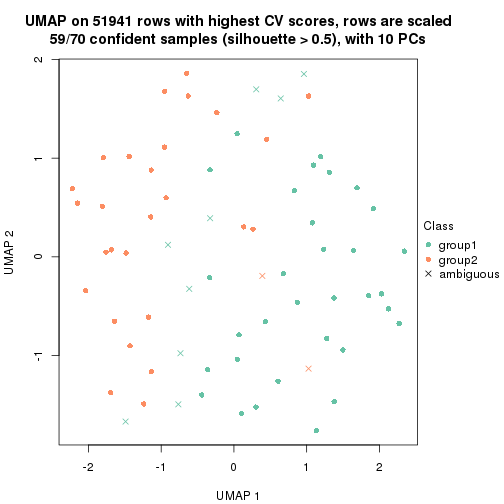
dimension_reduction(res, k = 3, method = "UMAP")
dimension_reduction(res, k = 4, method = "UMAP")
dimension_reduction(res, k = 5, method = "UMAP")
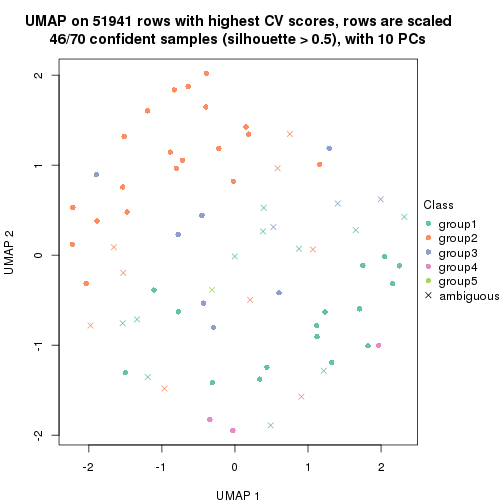
dimension_reduction(res, k = 6, method = "UMAP")
Following heatmap shows how subgroups are split when increasing k:
collect_classes(res)
Test correlation between subgroups and known annotations. If the known annotation is numeric, one-way ANOVA test is applied, and if the known annotation is discrete, chi-squared contingency table test is applied.
test_to_known_factors(res)
#> n age(p) time(p) tissue(p) individual(p) k
#> CV:hclust 59 0.0318 0.01766 1.000 0.01550 2
#> CV:hclust 46 0.0357 0.00636 0.546 0.03278 3
#> CV:hclust 33 0.9175 0.00944 0.366 0.03446 4
#> CV:hclust 46 0.5171 0.04424 0.458 0.02388 5
#> CV:hclust 29 0.2603 0.01696 0.772 0.00511 6
If matrix rows can be associated to genes, consider to use functional_enrichment(res,
...) to perform function enrichment for the signature genes. See this vignette for more detailed explanations.
The object with results only for a single top-value method and a single partition method can be extracted as:
res = res_list["CV", "kmeans"]
# you can also extract it by
# res = res_list["CV:kmeans"]
A summary of res and all the functions that can be applied to it:
res
#> A 'ConsensusPartition' object with k = 2, 3, 4, 5, 6.
#> On a matrix with 51941 rows and 70 columns.
#> Top rows (1000, 2000, 3000, 4000, 5000) are extracted by 'CV' method.
#> Subgroups are detected by 'kmeans' method.
#> Performed in total 1250 partitions by row resampling.
#> Best k for subgroups seems to be 2.
#>
#> Following methods can be applied to this 'ConsensusPartition' object:
#> [1] "cola_report" "collect_classes" "collect_plots"
#> [4] "collect_stats" "colnames" "compare_signatures"
#> [7] "consensus_heatmap" "dimension_reduction" "functional_enrichment"
#> [10] "get_anno_col" "get_anno" "get_classes"
#> [13] "get_consensus" "get_matrix" "get_membership"
#> [16] "get_param" "get_signatures" "get_stats"
#> [19] "is_best_k" "is_stable_k" "membership_heatmap"
#> [22] "ncol" "nrow" "plot_ecdf"
#> [25] "rownames" "select_partition_number" "show"
#> [28] "suggest_best_k" "test_to_known_factors"
collect_plots() function collects all the plots made from res for all k (number of partitions)
into one single page to provide an easy and fast comparison between different k.
collect_plots(res)
The plots are:
k and the heatmap of
predicted classes for each k.k.k.k.All the plots in panels can be made by individual functions and they are plotted later in this section.
select_partition_number() produces several plots showing different
statistics for choosing “optimized” k. There are following statistics:
k;k, the area increased is defined as \(A_k - A_{k-1}\).The detailed explanations of these statistics can be found in the cola vignette.
Generally speaking, lower PAC score, higher mean silhouette score or higher
concordance corresponds to better partition. Rand index and Jaccard index
measure how similar the current partition is compared to partition with k-1.
If they are too similar, we won't accept k is better than k-1.
select_partition_number(res)
The numeric values for all these statistics can be obtained by get_stats().
get_stats(res)
#> k 1-PAC mean_silhouette concordance area_increased Rand Jaccard
#> 2 2 0.940 0.940 0.974 0.4928 0.508 0.508
#> 3 3 0.527 0.720 0.852 0.3464 0.738 0.521
#> 4 4 0.552 0.570 0.754 0.1047 0.890 0.694
#> 5 5 0.563 0.454 0.708 0.0553 0.925 0.744
#> 6 6 0.588 0.491 0.712 0.0370 0.886 0.578
suggest_best_k() suggests the best \(k\) based on these statistics. The rules are as follows:
suggest_best_k(res)
#> [1] 2
Following shows the table of the partitions (You need to click the show/hide
code output link to see it). The membership matrix (columns with name p*)
is inferred by
clue::cl_consensus()
function with the SE method. Basically the value in the membership matrix
represents the probability to belong to a certain group. The finall class
label for an item is determined with the group with highest probability it
belongs to.
In get_classes() function, the entropy is calculated from the membership
matrix and the silhouette score is calculated from the consensus matrix.
cbind(get_classes(res, k = 2), get_membership(res, k = 2))
#> class entropy silhouette p1 p2
#> GSM701770 1 0.0000 0.972 1.000 0.000
#> GSM701769 1 0.0000 0.972 1.000 0.000
#> GSM701768 1 0.0000 0.972 1.000 0.000
#> GSM701767 1 0.5629 0.848 0.868 0.132
#> GSM701766 2 0.5946 0.828 0.144 0.856
#> GSM701806 1 0.0000 0.972 1.000 0.000
#> GSM701805 1 0.0000 0.972 1.000 0.000
#> GSM701804 1 0.0000 0.972 1.000 0.000
#> GSM701803 1 0.0000 0.972 1.000 0.000
#> GSM701775 1 0.0000 0.972 1.000 0.000
#> GSM701774 1 0.0000 0.972 1.000 0.000
#> GSM701773 2 0.0000 0.973 0.000 1.000
#> GSM701772 1 0.1843 0.956 0.972 0.028
#> GSM701771 1 0.0000 0.972 1.000 0.000
#> GSM701810 1 0.0000 0.972 1.000 0.000
#> GSM701809 1 0.0672 0.968 0.992 0.008
#> GSM701808 1 0.0000 0.972 1.000 0.000
#> GSM701807 1 0.0000 0.972 1.000 0.000
#> GSM701780 1 0.0000 0.972 1.000 0.000
#> GSM701779 2 0.0000 0.973 0.000 1.000
#> GSM701778 2 0.0000 0.973 0.000 1.000
#> GSM701777 2 0.5629 0.843 0.132 0.868
#> GSM701776 1 0.0000 0.972 1.000 0.000
#> GSM701816 1 0.2948 0.936 0.948 0.052
#> GSM701815 2 0.0000 0.973 0.000 1.000
#> GSM701814 2 0.0000 0.973 0.000 1.000
#> GSM701813 1 0.1184 0.963 0.984 0.016
#> GSM701812 1 0.2043 0.953 0.968 0.032
#> GSM701811 1 0.0000 0.972 1.000 0.000
#> GSM701786 1 0.0000 0.972 1.000 0.000
#> GSM701785 2 0.0376 0.970 0.004 0.996
#> GSM701784 2 0.1633 0.954 0.024 0.976
#> GSM701783 1 0.0000 0.972 1.000 0.000
#> GSM701782 2 0.0000 0.973 0.000 1.000
#> GSM701781 1 0.9795 0.293 0.584 0.416
#> GSM701822 2 0.0000 0.973 0.000 1.000
#> GSM701821 2 0.0000 0.973 0.000 1.000
#> GSM701820 1 0.0000 0.972 1.000 0.000
#> GSM701819 1 0.0000 0.972 1.000 0.000
#> GSM701818 1 0.0000 0.972 1.000 0.000
#> GSM701817 1 0.0000 0.972 1.000 0.000
#> GSM701790 1 0.0000 0.972 1.000 0.000
#> GSM701789 1 0.0000 0.972 1.000 0.000
#> GSM701788 1 0.0000 0.972 1.000 0.000
#> GSM701787 2 0.0672 0.968 0.008 0.992
#> GSM701824 1 0.0000 0.972 1.000 0.000
#> GSM701823 2 0.0000 0.973 0.000 1.000
#> GSM701791 2 0.0000 0.973 0.000 1.000
#> GSM701793 1 0.0000 0.972 1.000 0.000
#> GSM701792 1 0.1633 0.958 0.976 0.024
#> GSM701825 1 0.0000 0.972 1.000 0.000
#> GSM701827 2 0.0000 0.973 0.000 1.000
#> GSM701826 2 0.0000 0.973 0.000 1.000
#> GSM701797 1 0.3431 0.925 0.936 0.064
#> GSM701796 1 0.0000 0.972 1.000 0.000
#> GSM701795 2 0.0000 0.973 0.000 1.000
#> GSM701794 2 0.0000 0.973 0.000 1.000
#> GSM701831 2 0.0000 0.973 0.000 1.000
#> GSM701830 2 0.0000 0.973 0.000 1.000
#> GSM701829 2 0.9754 0.300 0.408 0.592
#> GSM701828 2 0.0938 0.965 0.012 0.988
#> GSM701798 2 0.0000 0.973 0.000 1.000
#> GSM701802 2 0.0000 0.973 0.000 1.000
#> GSM701801 1 0.1633 0.959 0.976 0.024
#> GSM701800 1 0.1184 0.964 0.984 0.016
#> GSM701799 2 0.0000 0.973 0.000 1.000
#> GSM701832 2 0.0000 0.973 0.000 1.000
#> GSM701835 1 0.8443 0.629 0.728 0.272
#> GSM701834 2 0.0000 0.973 0.000 1.000
#> GSM701833 2 0.0000 0.973 0.000 1.000
cbind(get_classes(res, k = 3), get_membership(res, k = 3))
#> class entropy silhouette p1 p2 p3
#> GSM701770 1 0.1753 0.8135 0.952 0.000 0.048
#> GSM701769 1 0.3941 0.8038 0.844 0.000 0.156
#> GSM701768 3 0.6111 0.0989 0.396 0.000 0.604
#> GSM701767 3 0.2280 0.7585 0.052 0.008 0.940
#> GSM701766 3 0.5115 0.6297 0.004 0.228 0.768
#> GSM701806 1 0.2448 0.8197 0.924 0.000 0.076
#> GSM701805 1 0.1529 0.7955 0.960 0.000 0.040
#> GSM701804 3 0.6235 0.3193 0.436 0.000 0.564
#> GSM701803 3 0.6305 0.2393 0.484 0.000 0.516
#> GSM701775 1 0.5882 0.6458 0.652 0.000 0.348
#> GSM701774 1 0.6309 0.2560 0.504 0.000 0.496
#> GSM701773 2 0.0000 0.9057 0.000 1.000 0.000
#> GSM701772 3 0.2096 0.7559 0.052 0.004 0.944
#> GSM701771 1 0.1753 0.8159 0.952 0.000 0.048
#> GSM701810 1 0.5058 0.7650 0.756 0.000 0.244
#> GSM701809 3 0.3551 0.7287 0.132 0.000 0.868
#> GSM701808 1 0.4002 0.7993 0.840 0.000 0.160
#> GSM701807 1 0.1031 0.7908 0.976 0.000 0.024
#> GSM701780 3 0.5016 0.5452 0.240 0.000 0.760
#> GSM701779 2 0.0000 0.9057 0.000 1.000 0.000
#> GSM701778 2 0.0237 0.9046 0.000 0.996 0.004
#> GSM701777 3 0.4784 0.6634 0.004 0.200 0.796
#> GSM701776 1 0.1031 0.7908 0.976 0.000 0.024
#> GSM701816 3 0.1411 0.7593 0.036 0.000 0.964
#> GSM701815 2 0.3619 0.8234 0.000 0.864 0.136
#> GSM701814 2 0.0000 0.9057 0.000 1.000 0.000
#> GSM701813 3 0.4233 0.7238 0.160 0.004 0.836
#> GSM701812 3 0.1031 0.7603 0.024 0.000 0.976
#> GSM701811 1 0.5650 0.6200 0.688 0.000 0.312
#> GSM701786 1 0.2625 0.8191 0.916 0.000 0.084
#> GSM701785 2 0.5733 0.5599 0.000 0.676 0.324
#> GSM701784 2 0.6192 0.3304 0.000 0.580 0.420
#> GSM701783 1 0.2711 0.8215 0.912 0.000 0.088
#> GSM701782 3 0.6215 0.1615 0.000 0.428 0.572
#> GSM701781 3 0.5229 0.7234 0.104 0.068 0.828
#> GSM701822 2 0.0000 0.9057 0.000 1.000 0.000
#> GSM701821 2 0.3551 0.8280 0.000 0.868 0.132
#> GSM701820 3 0.5178 0.6416 0.256 0.000 0.744
#> GSM701819 3 0.5859 0.5127 0.344 0.000 0.656
#> GSM701818 1 0.4399 0.6838 0.812 0.000 0.188
#> GSM701817 3 0.4555 0.6905 0.200 0.000 0.800
#> GSM701790 1 0.5363 0.7355 0.724 0.000 0.276
#> GSM701789 1 0.5465 0.7249 0.712 0.000 0.288
#> GSM701788 1 0.2711 0.8197 0.912 0.000 0.088
#> GSM701787 3 0.6095 0.2685 0.000 0.392 0.608
#> GSM701824 1 0.4887 0.7709 0.772 0.000 0.228
#> GSM701823 2 0.0000 0.9057 0.000 1.000 0.000
#> GSM701791 2 0.0000 0.9057 0.000 1.000 0.000
#> GSM701793 1 0.5254 0.7467 0.736 0.000 0.264
#> GSM701792 3 0.2878 0.7284 0.096 0.000 0.904
#> GSM701825 1 0.1411 0.7839 0.964 0.000 0.036
#> GSM701827 2 0.0000 0.9057 0.000 1.000 0.000
#> GSM701826 2 0.4346 0.7758 0.000 0.816 0.184
#> GSM701797 3 0.1031 0.7604 0.024 0.000 0.976
#> GSM701796 1 0.6062 0.5890 0.616 0.000 0.384
#> GSM701795 2 0.0000 0.9057 0.000 1.000 0.000
#> GSM701794 2 0.0000 0.9057 0.000 1.000 0.000
#> GSM701831 2 0.1163 0.8948 0.000 0.972 0.028
#> GSM701830 2 0.0000 0.9057 0.000 1.000 0.000
#> GSM701829 3 0.3755 0.7277 0.008 0.120 0.872
#> GSM701828 2 0.5098 0.6908 0.000 0.752 0.248
#> GSM701798 2 0.0000 0.9057 0.000 1.000 0.000
#> GSM701802 2 0.6111 0.3873 0.000 0.604 0.396
#> GSM701801 3 0.1643 0.7561 0.044 0.000 0.956
#> GSM701800 3 0.1411 0.7583 0.036 0.000 0.964
#> GSM701799 2 0.0000 0.9057 0.000 1.000 0.000
#> GSM701832 2 0.2356 0.8711 0.000 0.928 0.072
#> GSM701835 3 0.2902 0.7533 0.016 0.064 0.920
#> GSM701834 2 0.0237 0.9046 0.000 0.996 0.004
#> GSM701833 2 0.0000 0.9057 0.000 1.000 0.000
cbind(get_classes(res, k = 4), get_membership(res, k = 4))
#> class entropy silhouette p1 p2 p3 p4
#> GSM701770 1 0.3768 0.5144 0.808 0.000 0.008 0.184
#> GSM701769 1 0.4163 0.5458 0.828 0.000 0.076 0.096
#> GSM701768 1 0.7476 0.1747 0.412 0.000 0.412 0.176
#> GSM701767 3 0.3877 0.6400 0.048 0.000 0.840 0.112
#> GSM701766 3 0.3798 0.6611 0.008 0.060 0.860 0.072
#> GSM701806 1 0.0592 0.5965 0.984 0.000 0.000 0.016
#> GSM701805 1 0.4770 0.3852 0.700 0.000 0.012 0.288
#> GSM701804 4 0.3216 0.6194 0.044 0.000 0.076 0.880
#> GSM701803 4 0.5528 0.5996 0.144 0.000 0.124 0.732
#> GSM701775 1 0.6172 0.4819 0.632 0.000 0.284 0.084
#> GSM701774 1 0.7879 0.1374 0.380 0.000 0.332 0.288
#> GSM701773 2 0.0188 0.9038 0.000 0.996 0.000 0.004
#> GSM701772 3 0.3464 0.6406 0.032 0.000 0.860 0.108
#> GSM701771 1 0.2216 0.5748 0.908 0.000 0.000 0.092
#> GSM701810 1 0.5994 0.5377 0.692 0.000 0.152 0.156
#> GSM701809 3 0.5730 0.3254 0.040 0.000 0.616 0.344
#> GSM701808 1 0.5453 0.3429 0.648 0.000 0.032 0.320
#> GSM701807 1 0.5150 0.2201 0.596 0.000 0.008 0.396
#> GSM701780 3 0.7166 0.1459 0.280 0.000 0.544 0.176
#> GSM701779 2 0.0000 0.9043 0.000 1.000 0.000 0.000
#> GSM701778 2 0.0657 0.9005 0.000 0.984 0.012 0.004
#> GSM701777 3 0.3587 0.6535 0.000 0.052 0.860 0.088
#> GSM701776 1 0.5193 0.1872 0.580 0.000 0.008 0.412
#> GSM701816 3 0.2949 0.6309 0.024 0.000 0.888 0.088
#> GSM701815 2 0.5889 0.6090 0.000 0.688 0.212 0.100
#> GSM701814 2 0.0000 0.9043 0.000 1.000 0.000 0.000
#> GSM701813 3 0.5488 0.1450 0.016 0.000 0.532 0.452
#> GSM701812 3 0.5367 0.4571 0.032 0.000 0.664 0.304
#> GSM701811 1 0.6548 0.3610 0.636 0.000 0.188 0.176
#> GSM701786 1 0.0779 0.5961 0.980 0.000 0.004 0.016
#> GSM701785 3 0.5478 0.1091 0.000 0.444 0.540 0.016
#> GSM701784 3 0.5047 0.4690 0.000 0.316 0.668 0.016
#> GSM701783 1 0.2593 0.5840 0.904 0.000 0.016 0.080
#> GSM701782 3 0.5916 0.4958 0.000 0.272 0.656 0.072
#> GSM701781 3 0.5360 0.4176 0.016 0.008 0.660 0.316
#> GSM701822 2 0.0000 0.9043 0.000 1.000 0.000 0.000
#> GSM701821 2 0.4720 0.6371 0.000 0.720 0.264 0.016
#> GSM701820 4 0.6000 0.3992 0.052 0.000 0.356 0.592
#> GSM701819 4 0.6729 0.4644 0.116 0.000 0.312 0.572
#> GSM701818 4 0.6009 0.1919 0.380 0.000 0.048 0.572
#> GSM701817 3 0.6443 0.0478 0.072 0.000 0.528 0.400
#> GSM701790 1 0.5429 0.5552 0.720 0.000 0.208 0.072
#> GSM701789 1 0.5356 0.5587 0.728 0.000 0.200 0.072
#> GSM701788 1 0.1488 0.5923 0.956 0.000 0.012 0.032
#> GSM701787 3 0.4267 0.5877 0.000 0.188 0.788 0.024
#> GSM701824 1 0.5962 0.5497 0.692 0.000 0.180 0.128
#> GSM701823 2 0.1109 0.8936 0.000 0.968 0.004 0.028
#> GSM701791 2 0.0188 0.9036 0.000 0.996 0.004 0.000
#> GSM701793 1 0.5212 0.5642 0.740 0.000 0.192 0.068
#> GSM701792 3 0.3828 0.6019 0.084 0.000 0.848 0.068
#> GSM701825 1 0.5277 0.0874 0.532 0.000 0.008 0.460
#> GSM701827 2 0.0000 0.9043 0.000 1.000 0.000 0.000
#> GSM701826 2 0.4770 0.5835 0.000 0.700 0.288 0.012
#> GSM701797 3 0.3157 0.6230 0.004 0.000 0.852 0.144
#> GSM701796 1 0.6201 0.4717 0.620 0.000 0.300 0.080
#> GSM701795 2 0.0000 0.9043 0.000 1.000 0.000 0.000
#> GSM701794 2 0.0188 0.9038 0.000 0.996 0.000 0.004
#> GSM701831 2 0.2530 0.8398 0.000 0.896 0.100 0.004
#> GSM701830 2 0.0000 0.9043 0.000 1.000 0.000 0.000
#> GSM701829 3 0.3072 0.6627 0.008 0.024 0.892 0.076
#> GSM701828 2 0.5452 0.4146 0.000 0.616 0.360 0.024
#> GSM701798 2 0.0657 0.9005 0.000 0.984 0.012 0.004
#> GSM701802 3 0.5495 0.4174 0.000 0.348 0.624 0.028
#> GSM701801 3 0.2363 0.6571 0.024 0.000 0.920 0.056
#> GSM701800 3 0.1798 0.6609 0.016 0.000 0.944 0.040
#> GSM701799 2 0.0188 0.9038 0.000 0.996 0.000 0.004
#> GSM701832 2 0.4468 0.6831 0.000 0.752 0.232 0.016
#> GSM701835 3 0.2302 0.6618 0.008 0.008 0.924 0.060
#> GSM701834 2 0.0657 0.9001 0.000 0.984 0.012 0.004
#> GSM701833 2 0.0000 0.9043 0.000 1.000 0.000 0.000
cbind(get_classes(res, k = 5), get_membership(res, k = 5))
#> class entropy silhouette p1 p2 p3 p4 p5
#> GSM701770 4 0.5047 0.23547 0.472 0.000 0.000 0.496 0.032
#> GSM701769 1 0.7013 -0.22466 0.464 0.000 0.048 0.364 0.124
#> GSM701768 1 0.7011 0.33301 0.524 0.000 0.292 0.064 0.120
#> GSM701767 3 0.5308 0.47836 0.068 0.000 0.708 0.032 0.192
#> GSM701766 3 0.4518 0.55749 0.020 0.060 0.800 0.016 0.104
#> GSM701806 1 0.3419 0.34603 0.804 0.000 0.000 0.180 0.016
#> GSM701805 4 0.4745 0.39028 0.424 0.000 0.004 0.560 0.012
#> GSM701804 5 0.5078 0.19863 0.008 0.000 0.024 0.404 0.564
#> GSM701803 4 0.5443 -0.19129 0.012 0.000 0.036 0.516 0.436
#> GSM701775 1 0.4305 0.51512 0.760 0.000 0.192 0.008 0.040
#> GSM701774 1 0.7722 0.30719 0.480 0.000 0.244 0.132 0.144
#> GSM701773 2 0.0486 0.85967 0.000 0.988 0.004 0.004 0.004
#> GSM701772 3 0.4910 0.50066 0.092 0.000 0.748 0.020 0.140
#> GSM701771 1 0.4798 -0.13859 0.580 0.000 0.000 0.396 0.024
#> GSM701810 1 0.6469 0.41221 0.620 0.000 0.088 0.212 0.080
#> GSM701809 3 0.6968 -0.27537 0.048 0.000 0.456 0.116 0.380
#> GSM701808 1 0.7501 -0.22118 0.400 0.000 0.052 0.352 0.196
#> GSM701807 4 0.4360 0.54250 0.284 0.000 0.000 0.692 0.024
#> GSM701780 3 0.7624 -0.17168 0.320 0.000 0.352 0.044 0.284
#> GSM701779 2 0.0000 0.86014 0.000 1.000 0.000 0.000 0.000
#> GSM701778 2 0.1082 0.85200 0.000 0.964 0.028 0.000 0.008
#> GSM701777 3 0.3871 0.53622 0.000 0.040 0.824 0.024 0.112
#> GSM701776 4 0.4227 0.54495 0.292 0.000 0.000 0.692 0.016
#> GSM701816 3 0.4799 0.41892 0.056 0.000 0.716 0.008 0.220
#> GSM701815 2 0.6750 0.36134 0.000 0.552 0.256 0.036 0.156
#> GSM701814 2 0.0324 0.86021 0.000 0.992 0.000 0.004 0.004
#> GSM701813 5 0.5475 0.45383 0.000 0.000 0.308 0.088 0.604
#> GSM701812 3 0.6323 -0.17080 0.048 0.000 0.464 0.052 0.436
#> GSM701811 4 0.8067 0.21065 0.332 0.000 0.108 0.356 0.204
#> GSM701786 1 0.3381 0.35768 0.808 0.000 0.000 0.176 0.016
#> GSM701785 3 0.4553 0.38209 0.000 0.328 0.652 0.004 0.016
#> GSM701784 3 0.4012 0.50584 0.012 0.216 0.760 0.000 0.012
#> GSM701783 1 0.6020 -0.00725 0.560 0.000 0.012 0.332 0.096
#> GSM701782 3 0.5295 0.47575 0.000 0.192 0.700 0.016 0.092
#> GSM701781 5 0.5405 0.21146 0.000 0.000 0.460 0.056 0.484
#> GSM701822 2 0.0740 0.85906 0.000 0.980 0.004 0.008 0.008
#> GSM701821 2 0.5367 0.39993 0.000 0.584 0.364 0.012 0.040
#> GSM701820 5 0.7852 0.34870 0.064 0.000 0.296 0.296 0.344
#> GSM701819 5 0.6878 0.47195 0.036 0.000 0.176 0.252 0.536
#> GSM701818 4 0.7139 0.26932 0.184 0.000 0.032 0.444 0.340
#> GSM701817 5 0.6852 0.47930 0.036 0.000 0.296 0.148 0.520
#> GSM701790 1 0.2770 0.55252 0.864 0.000 0.124 0.008 0.004
#> GSM701789 1 0.2727 0.55370 0.868 0.000 0.116 0.016 0.000
#> GSM701788 1 0.3929 0.30010 0.764 0.000 0.000 0.208 0.028
#> GSM701787 3 0.4200 0.55732 0.048 0.128 0.804 0.008 0.012
#> GSM701824 1 0.4288 0.52975 0.800 0.000 0.092 0.088 0.020
#> GSM701823 2 0.1780 0.83919 0.000 0.940 0.008 0.024 0.028
#> GSM701791 2 0.0290 0.86042 0.000 0.992 0.008 0.000 0.000
#> GSM701793 1 0.2519 0.55073 0.884 0.000 0.100 0.016 0.000
#> GSM701792 3 0.4384 0.45227 0.228 0.000 0.728 0.000 0.044
#> GSM701825 4 0.4646 0.54139 0.228 0.000 0.000 0.712 0.060
#> GSM701827 2 0.0162 0.86031 0.000 0.996 0.000 0.004 0.000
#> GSM701826 2 0.5932 0.29157 0.008 0.556 0.364 0.012 0.060
#> GSM701797 3 0.4464 0.28635 0.008 0.000 0.676 0.012 0.304
#> GSM701796 1 0.4159 0.52162 0.780 0.000 0.172 0.012 0.036
#> GSM701795 2 0.0162 0.86015 0.000 0.996 0.004 0.000 0.000
#> GSM701794 2 0.0162 0.86011 0.000 0.996 0.000 0.004 0.000
#> GSM701831 2 0.3194 0.75303 0.000 0.832 0.148 0.000 0.020
#> GSM701830 2 0.0162 0.86031 0.000 0.996 0.000 0.004 0.000
#> GSM701829 3 0.4170 0.55361 0.040 0.012 0.816 0.020 0.112
#> GSM701828 2 0.6120 0.10869 0.004 0.488 0.424 0.016 0.068
#> GSM701798 2 0.0609 0.85793 0.000 0.980 0.020 0.000 0.000
#> GSM701802 3 0.4336 0.44635 0.000 0.280 0.700 0.008 0.012
#> GSM701801 3 0.4074 0.46809 0.036 0.000 0.772 0.004 0.188
#> GSM701800 3 0.2426 0.56457 0.036 0.000 0.900 0.000 0.064
#> GSM701799 2 0.0162 0.86015 0.000 0.996 0.004 0.000 0.000
#> GSM701832 2 0.4806 0.48309 0.000 0.636 0.336 0.012 0.016
#> GSM701835 3 0.2833 0.54452 0.012 0.004 0.864 0.000 0.120
#> GSM701834 2 0.1982 0.83795 0.000 0.932 0.028 0.012 0.028
#> GSM701833 2 0.0162 0.86031 0.000 0.996 0.000 0.004 0.000
cbind(get_classes(res, k = 6), get_membership(res, k = 6))
#> class entropy silhouette p1 p2 p3 p4 p5 p6
#> GSM701770 1 0.4977 0.442 0.608 0.000 0.000 0.324 0.048 0.020
#> GSM701769 1 0.6652 0.325 0.400 0.000 0.008 0.332 0.240 0.020
#> GSM701768 4 0.7324 0.316 0.084 0.000 0.208 0.524 0.092 0.092
#> GSM701767 3 0.6304 0.372 0.012 0.000 0.596 0.064 0.176 0.152
#> GSM701766 3 0.3465 0.586 0.016 0.024 0.856 0.012 0.032 0.060
#> GSM701806 4 0.3534 0.333 0.276 0.000 0.000 0.716 0.008 0.000
#> GSM701805 1 0.5160 0.444 0.588 0.000 0.000 0.336 0.028 0.048
#> GSM701804 6 0.3417 0.000 0.052 0.000 0.004 0.000 0.132 0.812
#> GSM701803 5 0.6674 -0.166 0.324 0.000 0.020 0.016 0.436 0.204
#> GSM701775 4 0.2703 0.603 0.016 0.000 0.088 0.876 0.016 0.004
#> GSM701774 4 0.7839 0.294 0.144 0.000 0.132 0.480 0.152 0.092
#> GSM701773 2 0.0665 0.905 0.004 0.980 0.008 0.000 0.000 0.008
#> GSM701772 3 0.5701 0.406 0.016 0.000 0.676 0.092 0.140 0.076
#> GSM701771 1 0.4573 0.371 0.584 0.000 0.000 0.372 0.044 0.000
#> GSM701810 4 0.6195 0.251 0.272 0.000 0.028 0.556 0.128 0.016
#> GSM701809 5 0.7358 0.327 0.104 0.000 0.312 0.040 0.444 0.100
#> GSM701808 1 0.7090 0.303 0.448 0.000 0.020 0.244 0.240 0.048
#> GSM701807 1 0.4585 0.550 0.736 0.000 0.000 0.156 0.032 0.076
#> GSM701780 5 0.7648 0.230 0.044 0.000 0.208 0.264 0.412 0.072
#> GSM701779 2 0.0146 0.909 0.000 0.996 0.000 0.000 0.000 0.004
#> GSM701778 2 0.1881 0.882 0.008 0.928 0.044 0.000 0.008 0.012
#> GSM701777 3 0.3835 0.556 0.008 0.012 0.812 0.004 0.104 0.060
#> GSM701776 1 0.3673 0.559 0.808 0.000 0.000 0.124 0.024 0.044
#> GSM701816 3 0.5828 0.204 0.024 0.000 0.600 0.068 0.276 0.032
#> GSM701815 2 0.7506 0.084 0.024 0.460 0.260 0.008 0.156 0.092
#> GSM701814 2 0.0767 0.906 0.012 0.976 0.004 0.000 0.000 0.008
#> GSM701813 5 0.4663 0.340 0.012 0.000 0.160 0.008 0.728 0.092
#> GSM701812 5 0.7186 0.328 0.044 0.000 0.360 0.044 0.408 0.144
#> GSM701811 1 0.7611 0.245 0.376 0.000 0.096 0.176 0.324 0.028
#> GSM701786 4 0.4215 0.304 0.276 0.000 0.000 0.688 0.024 0.012
#> GSM701785 3 0.3508 0.594 0.012 0.152 0.808 0.000 0.008 0.020
#> GSM701784 3 0.3229 0.609 0.008 0.104 0.848 0.004 0.012 0.024
#> GSM701783 4 0.6484 -0.245 0.396 0.000 0.004 0.404 0.164 0.032
#> GSM701782 3 0.4921 0.572 0.008 0.088 0.736 0.000 0.116 0.052
#> GSM701781 5 0.5692 0.320 0.016 0.000 0.348 0.012 0.544 0.080
#> GSM701822 2 0.0964 0.903 0.012 0.968 0.000 0.000 0.004 0.016
#> GSM701821 3 0.5736 0.365 0.020 0.380 0.524 0.000 0.024 0.052
#> GSM701820 5 0.8040 0.150 0.172 0.000 0.220 0.032 0.368 0.208
#> GSM701819 5 0.5712 0.297 0.172 0.000 0.088 0.016 0.664 0.060
#> GSM701818 1 0.7117 0.215 0.444 0.000 0.024 0.112 0.332 0.088
#> GSM701817 5 0.6073 0.369 0.176 0.000 0.144 0.020 0.620 0.040
#> GSM701790 4 0.1901 0.613 0.008 0.000 0.052 0.924 0.004 0.012
#> GSM701789 4 0.1398 0.613 0.008 0.000 0.052 0.940 0.000 0.000
#> GSM701788 4 0.4464 0.254 0.280 0.000 0.000 0.672 0.032 0.016
#> GSM701787 3 0.3647 0.602 0.008 0.056 0.844 0.044 0.012 0.036
#> GSM701824 4 0.3727 0.567 0.116 0.000 0.036 0.816 0.016 0.016
#> GSM701823 2 0.2433 0.858 0.004 0.900 0.024 0.004 0.008 0.060
#> GSM701791 2 0.0436 0.908 0.004 0.988 0.004 0.000 0.000 0.004
#> GSM701793 4 0.1909 0.611 0.024 0.000 0.052 0.920 0.004 0.000
#> GSM701792 3 0.4079 0.460 0.000 0.000 0.752 0.192 0.032 0.024
#> GSM701825 1 0.4983 0.485 0.720 0.000 0.000 0.124 0.084 0.072
#> GSM701827 2 0.0260 0.908 0.008 0.992 0.000 0.000 0.000 0.000
#> GSM701826 3 0.6350 0.333 0.024 0.392 0.480 0.008 0.040 0.056
#> GSM701797 3 0.4069 0.186 0.008 0.000 0.612 0.000 0.376 0.004
#> GSM701796 4 0.3817 0.578 0.008 0.000 0.084 0.820 0.048 0.040
#> GSM701795 2 0.0291 0.909 0.004 0.992 0.000 0.000 0.000 0.004
#> GSM701794 2 0.0291 0.909 0.004 0.992 0.000 0.000 0.000 0.004
#> GSM701831 2 0.4329 0.553 0.012 0.708 0.248 0.000 0.016 0.016
#> GSM701830 2 0.0862 0.907 0.016 0.972 0.000 0.000 0.004 0.008
#> GSM701829 3 0.4577 0.536 0.028 0.004 0.776 0.032 0.112 0.048
#> GSM701828 3 0.6594 0.416 0.028 0.324 0.512 0.004 0.044 0.088
#> GSM701798 2 0.1788 0.882 0.004 0.928 0.052 0.000 0.004 0.012
#> GSM701802 3 0.4134 0.578 0.012 0.176 0.764 0.000 0.016 0.032
#> GSM701801 3 0.4721 0.338 0.004 0.000 0.684 0.040 0.248 0.024
#> GSM701800 3 0.3083 0.566 0.008 0.000 0.856 0.024 0.096 0.016
#> GSM701799 2 0.0291 0.909 0.004 0.992 0.000 0.000 0.000 0.004
#> GSM701832 3 0.5016 0.266 0.012 0.432 0.516 0.000 0.004 0.036
#> GSM701835 3 0.3454 0.539 0.004 0.000 0.804 0.008 0.160 0.024
#> GSM701834 2 0.3032 0.829 0.016 0.864 0.080 0.000 0.008 0.032
#> GSM701833 2 0.0260 0.908 0.008 0.992 0.000 0.000 0.000 0.000
Heatmaps for the consensus matrix. It visualizes the probability of two samples to be in a same group.
consensus_heatmap(res, k = 2)
consensus_heatmap(res, k = 3)
consensus_heatmap(res, k = 4)
consensus_heatmap(res, k = 5)
consensus_heatmap(res, k = 6)
Heatmaps for the membership of samples in all partitions to see how consistent they are:
membership_heatmap(res, k = 2)

membership_heatmap(res, k = 3)
membership_heatmap(res, k = 4)
membership_heatmap(res, k = 5)
membership_heatmap(res, k = 6)
As soon as we have had the classes for columns, we can look for signatures which are significantly different between classes which can be candidate marks for certain classes. Following are the heatmaps for signatures.
Signature heatmaps where rows are scaled:
get_signatures(res, k = 2)
get_signatures(res, k = 3)
get_signatures(res, k = 4)
get_signatures(res, k = 5)
get_signatures(res, k = 6)
Signature heatmaps where rows are not scaled:
get_signatures(res, k = 2, scale_rows = FALSE)
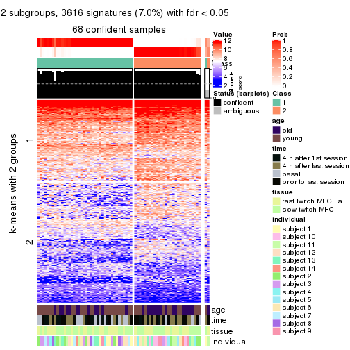
get_signatures(res, k = 3, scale_rows = FALSE)
get_signatures(res, k = 4, scale_rows = FALSE)
get_signatures(res, k = 5, scale_rows = FALSE)
get_signatures(res, k = 6, scale_rows = FALSE)
Compare the overlap of signatures from different k:
compare_signatures(res)
get_signature() returns a data frame invisibly. TO get the list of signatures, the function
call should be assigned to a variable explicitly. In following code, if plot argument is set
to FALSE, no heatmap is plotted while only the differential analysis is performed.
# code only for demonstration
tb = get_signature(res, k = ..., plot = FALSE)
An example of the output of tb is:
#> which_row fdr mean_1 mean_2 scaled_mean_1 scaled_mean_2 km
#> 1 38 0.042760348 8.373488 9.131774 -0.5533452 0.5164555 1
#> 2 40 0.018707592 7.106213 8.469186 -0.6173731 0.5762149 1
#> 3 55 0.019134737 10.221463 11.207825 -0.6159697 0.5749050 1
#> 4 59 0.006059896 5.921854 7.869574 -0.6899429 0.6439467 1
#> 5 60 0.018055526 8.928898 10.211722 -0.6204761 0.5791110 1
#> 6 98 0.009384629 15.714769 14.887706 0.6635654 -0.6193277 2
...
The columns in tb are:
which_row: row indices corresponding to the input matrix.fdr: FDR for the differential test. mean_x: The mean value in group x.scaled_mean_x: The mean value in group x after rows are scaled.km: Row groups if k-means clustering is applied to rows.UMAP plot which shows how samples are separated.
dimension_reduction(res, k = 2, method = "UMAP")
dimension_reduction(res, k = 3, method = "UMAP")
dimension_reduction(res, k = 4, method = "UMAP")
dimension_reduction(res, k = 5, method = "UMAP")
dimension_reduction(res, k = 6, method = "UMAP")
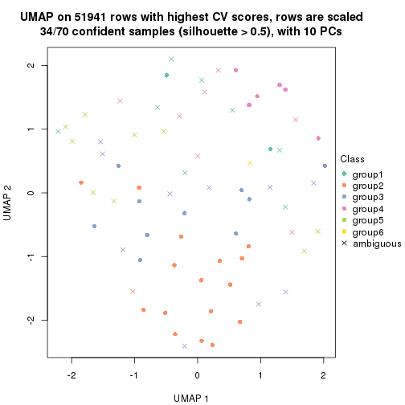
Following heatmap shows how subgroups are split when increasing k:
collect_classes(res)
Test correlation between subgroups and known annotations. If the known annotation is numeric, one-way ANOVA test is applied, and if the known annotation is discrete, chi-squared contingency table test is applied.
test_to_known_factors(res)
#> n age(p) time(p) tissue(p) individual(p) k
#> CV:kmeans 68 0.0468 0.0659 1.0000 0.00974 2
#> CV:kmeans 62 0.0605 0.0247 0.5465 0.04064 3
#> CV:kmeans 46 0.2457 0.0260 0.0429 0.09289 4
#> CV:kmeans 33 0.3885 0.1765 0.2981 0.01281 5
#> CV:kmeans 34 0.1492 0.0748 0.3030 0.00271 6
If matrix rows can be associated to genes, consider to use functional_enrichment(res,
...) to perform function enrichment for the signature genes. See this vignette for more detailed explanations.
The object with results only for a single top-value method and a single partition method can be extracted as:
res = res_list["CV", "skmeans"]
# you can also extract it by
# res = res_list["CV:skmeans"]
A summary of res and all the functions that can be applied to it:
res
#> A 'ConsensusPartition' object with k = 2, 3, 4, 5, 6.
#> On a matrix with 51941 rows and 70 columns.
#> Top rows (1000, 2000, 3000, 4000, 5000) are extracted by 'CV' method.
#> Subgroups are detected by 'skmeans' method.
#> Performed in total 1250 partitions by row resampling.
#> Best k for subgroups seems to be 2.
#>
#> Following methods can be applied to this 'ConsensusPartition' object:
#> [1] "cola_report" "collect_classes" "collect_plots"
#> [4] "collect_stats" "colnames" "compare_signatures"
#> [7] "consensus_heatmap" "dimension_reduction" "functional_enrichment"
#> [10] "get_anno_col" "get_anno" "get_classes"
#> [13] "get_consensus" "get_matrix" "get_membership"
#> [16] "get_param" "get_signatures" "get_stats"
#> [19] "is_best_k" "is_stable_k" "membership_heatmap"
#> [22] "ncol" "nrow" "plot_ecdf"
#> [25] "rownames" "select_partition_number" "show"
#> [28] "suggest_best_k" "test_to_known_factors"
collect_plots() function collects all the plots made from res for all k (number of partitions)
into one single page to provide an easy and fast comparison between different k.
collect_plots(res)
The plots are:
k and the heatmap of
predicted classes for each k.k.k.k.All the plots in panels can be made by individual functions and they are plotted later in this section.
select_partition_number() produces several plots showing different
statistics for choosing “optimized” k. There are following statistics:
k;k, the area increased is defined as \(A_k - A_{k-1}\).The detailed explanations of these statistics can be found in the cola vignette.
Generally speaking, lower PAC score, higher mean silhouette score or higher
concordance corresponds to better partition. Rand index and Jaccard index
measure how similar the current partition is compared to partition with k-1.
If they are too similar, we won't accept k is better than k-1.
select_partition_number(res)
The numeric values for all these statistics can be obtained by get_stats().
get_stats(res)
#> k 1-PAC mean_silhouette concordance area_increased Rand Jaccard
#> 2 2 0.691 0.864 0.941 0.5059 0.494 0.494
#> 3 3 0.392 0.591 0.751 0.2985 0.853 0.710
#> 4 4 0.377 0.417 0.624 0.1179 0.931 0.821
#> 5 5 0.392 0.294 0.558 0.0659 0.923 0.773
#> 6 6 0.413 0.252 0.508 0.0413 0.932 0.770
suggest_best_k() suggests the best \(k\) based on these statistics. The rules are as follows:
suggest_best_k(res)
#> [1] 2
Following shows the table of the partitions (You need to click the show/hide
code output link to see it). The membership matrix (columns with name p*)
is inferred by
clue::cl_consensus()
function with the SE method. Basically the value in the membership matrix
represents the probability to belong to a certain group. The finall class
label for an item is determined with the group with highest probability it
belongs to.
In get_classes() function, the entropy is calculated from the membership
matrix and the silhouette score is calculated from the consensus matrix.
cbind(get_classes(res, k = 2), get_membership(res, k = 2))
#> class entropy silhouette p1 p2
#> GSM701770 1 0.0000 0.932 1.000 0.000
#> GSM701769 1 0.0000 0.932 1.000 0.000
#> GSM701768 1 0.0000 0.932 1.000 0.000
#> GSM701767 2 0.9933 0.171 0.452 0.548
#> GSM701766 2 0.4161 0.875 0.084 0.916
#> GSM701806 1 0.0000 0.932 1.000 0.000
#> GSM701805 1 0.0000 0.932 1.000 0.000
#> GSM701804 1 0.2236 0.912 0.964 0.036
#> GSM701803 1 0.0376 0.931 0.996 0.004
#> GSM701775 1 0.0000 0.932 1.000 0.000
#> GSM701774 1 0.0376 0.931 0.996 0.004
#> GSM701773 2 0.0000 0.938 0.000 1.000
#> GSM701772 1 0.8555 0.636 0.720 0.280
#> GSM701771 1 0.0000 0.932 1.000 0.000
#> GSM701810 1 0.0000 0.932 1.000 0.000
#> GSM701809 1 0.8267 0.666 0.740 0.260
#> GSM701808 1 0.0000 0.932 1.000 0.000
#> GSM701807 1 0.0000 0.932 1.000 0.000
#> GSM701780 1 0.0376 0.931 0.996 0.004
#> GSM701779 2 0.0000 0.938 0.000 1.000
#> GSM701778 2 0.0000 0.938 0.000 1.000
#> GSM701777 2 0.4690 0.859 0.100 0.900
#> GSM701776 1 0.0000 0.932 1.000 0.000
#> GSM701816 1 0.8016 0.700 0.756 0.244
#> GSM701815 2 0.0000 0.938 0.000 1.000
#> GSM701814 2 0.0000 0.938 0.000 1.000
#> GSM701813 1 0.8861 0.581 0.696 0.304
#> GSM701812 1 0.6148 0.816 0.848 0.152
#> GSM701811 1 0.0000 0.932 1.000 0.000
#> GSM701786 1 0.0000 0.932 1.000 0.000
#> GSM701785 2 0.0000 0.938 0.000 1.000
#> GSM701784 2 0.0000 0.938 0.000 1.000
#> GSM701783 1 0.0000 0.932 1.000 0.000
#> GSM701782 2 0.0000 0.938 0.000 1.000
#> GSM701781 2 0.8386 0.632 0.268 0.732
#> GSM701822 2 0.0000 0.938 0.000 1.000
#> GSM701821 2 0.0000 0.938 0.000 1.000
#> GSM701820 1 0.4939 0.856 0.892 0.108
#> GSM701819 1 0.0000 0.932 1.000 0.000
#> GSM701818 1 0.0000 0.932 1.000 0.000
#> GSM701817 1 0.1414 0.922 0.980 0.020
#> GSM701790 1 0.0000 0.932 1.000 0.000
#> GSM701789 1 0.0000 0.932 1.000 0.000
#> GSM701788 1 0.0000 0.932 1.000 0.000
#> GSM701787 2 0.1843 0.919 0.028 0.972
#> GSM701824 1 0.0000 0.932 1.000 0.000
#> GSM701823 2 0.0000 0.938 0.000 1.000
#> GSM701791 2 0.0000 0.938 0.000 1.000
#> GSM701793 1 0.0000 0.932 1.000 0.000
#> GSM701792 1 0.9129 0.540 0.672 0.328
#> GSM701825 1 0.0000 0.932 1.000 0.000
#> GSM701827 2 0.0000 0.938 0.000 1.000
#> GSM701826 2 0.0000 0.938 0.000 1.000
#> GSM701797 2 0.9909 0.187 0.444 0.556
#> GSM701796 1 0.0000 0.932 1.000 0.000
#> GSM701795 2 0.0000 0.938 0.000 1.000
#> GSM701794 2 0.0000 0.938 0.000 1.000
#> GSM701831 2 0.0000 0.938 0.000 1.000
#> GSM701830 2 0.0000 0.938 0.000 1.000
#> GSM701829 2 0.6623 0.777 0.172 0.828
#> GSM701828 2 0.0376 0.935 0.004 0.996
#> GSM701798 2 0.0000 0.938 0.000 1.000
#> GSM701802 2 0.0000 0.938 0.000 1.000
#> GSM701801 1 0.6048 0.818 0.852 0.148
#> GSM701800 1 0.9580 0.406 0.620 0.380
#> GSM701799 2 0.0000 0.938 0.000 1.000
#> GSM701832 2 0.0000 0.938 0.000 1.000
#> GSM701835 2 0.8909 0.559 0.308 0.692
#> GSM701834 2 0.0000 0.938 0.000 1.000
#> GSM701833 2 0.0000 0.938 0.000 1.000
cbind(get_classes(res, k = 3), get_membership(res, k = 3))
#> class entropy silhouette p1 p2 p3
#> GSM701770 1 0.3879 0.6805 0.848 0.000 0.152
#> GSM701769 1 0.5363 0.6260 0.724 0.000 0.276
#> GSM701768 1 0.5810 0.5362 0.664 0.000 0.336
#> GSM701767 3 0.9528 0.4900 0.272 0.240 0.488
#> GSM701766 2 0.8863 0.1240 0.144 0.544 0.312
#> GSM701806 1 0.2878 0.6813 0.904 0.000 0.096
#> GSM701805 1 0.4235 0.6727 0.824 0.000 0.176
#> GSM701804 1 0.6855 0.4929 0.652 0.032 0.316
#> GSM701803 1 0.6867 0.4509 0.636 0.028 0.336
#> GSM701775 1 0.5835 0.5149 0.660 0.000 0.340
#> GSM701774 1 0.6603 0.5211 0.648 0.020 0.332
#> GSM701773 2 0.1031 0.8494 0.000 0.976 0.024
#> GSM701772 3 0.8452 0.3552 0.340 0.104 0.556
#> GSM701771 1 0.3192 0.6817 0.888 0.000 0.112
#> GSM701810 1 0.4796 0.6667 0.780 0.000 0.220
#> GSM701809 1 0.9202 -0.2065 0.460 0.152 0.388
#> GSM701808 1 0.4178 0.6758 0.828 0.000 0.172
#> GSM701807 1 0.3482 0.6808 0.872 0.000 0.128
#> GSM701780 1 0.7311 0.3970 0.580 0.036 0.384
#> GSM701779 2 0.0000 0.8471 0.000 1.000 0.000
#> GSM701778 2 0.1643 0.8471 0.000 0.956 0.044
#> GSM701777 2 0.8693 -0.0106 0.108 0.496 0.396
#> GSM701776 1 0.3340 0.6745 0.880 0.000 0.120
#> GSM701816 3 0.9014 0.3351 0.380 0.136 0.484
#> GSM701815 2 0.3846 0.8098 0.016 0.876 0.108
#> GSM701814 2 0.1031 0.8488 0.000 0.976 0.024
#> GSM701813 3 0.8991 0.2905 0.392 0.132 0.476
#> GSM701812 3 0.8249 0.1698 0.424 0.076 0.500
#> GSM701811 1 0.5497 0.6134 0.708 0.000 0.292
#> GSM701786 1 0.4178 0.6835 0.828 0.000 0.172
#> GSM701785 2 0.4172 0.7858 0.004 0.840 0.156
#> GSM701784 2 0.4861 0.7634 0.012 0.808 0.180
#> GSM701783 1 0.3941 0.6786 0.844 0.000 0.156
#> GSM701782 2 0.4629 0.7575 0.004 0.808 0.188
#> GSM701781 3 0.9687 0.4125 0.216 0.372 0.412
#> GSM701822 2 0.0424 0.8472 0.000 0.992 0.008
#> GSM701821 2 0.3267 0.8270 0.000 0.884 0.116
#> GSM701820 1 0.8295 0.1911 0.532 0.084 0.384
#> GSM701819 1 0.6045 0.4680 0.620 0.000 0.380
#> GSM701818 1 0.5178 0.6305 0.744 0.000 0.256
#> GSM701817 1 0.7319 0.3445 0.548 0.032 0.420
#> GSM701790 1 0.5733 0.5365 0.676 0.000 0.324
#> GSM701789 1 0.5178 0.6042 0.744 0.000 0.256
#> GSM701788 1 0.4002 0.6735 0.840 0.000 0.160
#> GSM701787 2 0.8404 0.2823 0.120 0.592 0.288
#> GSM701824 1 0.5058 0.6316 0.756 0.000 0.244
#> GSM701823 2 0.2165 0.8418 0.000 0.936 0.064
#> GSM701791 2 0.0000 0.8471 0.000 1.000 0.000
#> GSM701793 1 0.5216 0.6038 0.740 0.000 0.260
#> GSM701792 3 0.8955 0.3495 0.344 0.140 0.516
#> GSM701825 1 0.4346 0.6681 0.816 0.000 0.184
#> GSM701827 2 0.0000 0.8471 0.000 1.000 0.000
#> GSM701826 2 0.4349 0.7952 0.020 0.852 0.128
#> GSM701797 3 0.9150 0.5116 0.192 0.272 0.536
#> GSM701796 1 0.5835 0.5140 0.660 0.000 0.340
#> GSM701795 2 0.0892 0.8496 0.000 0.980 0.020
#> GSM701794 2 0.0000 0.8471 0.000 1.000 0.000
#> GSM701831 2 0.2448 0.8410 0.000 0.924 0.076
#> GSM701830 2 0.0892 0.8490 0.000 0.980 0.020
#> GSM701829 2 0.9252 -0.1988 0.156 0.448 0.396
#> GSM701828 2 0.6174 0.6827 0.064 0.768 0.168
#> GSM701798 2 0.1411 0.8492 0.000 0.964 0.036
#> GSM701802 2 0.5680 0.6977 0.024 0.764 0.212
#> GSM701801 3 0.8126 0.3198 0.356 0.080 0.564
#> GSM701800 3 0.8604 0.3932 0.348 0.112 0.540
#> GSM701799 2 0.0000 0.8471 0.000 1.000 0.000
#> GSM701832 2 0.3267 0.8247 0.000 0.884 0.116
#> GSM701835 3 0.9357 0.4951 0.196 0.304 0.500
#> GSM701834 2 0.1964 0.8455 0.000 0.944 0.056
#> GSM701833 2 0.0000 0.8471 0.000 1.000 0.000
cbind(get_classes(res, k = 4), get_membership(res, k = 4))
#> class entropy silhouette p1 p2 p3 p4
#> GSM701770 1 0.5184 0.52640 0.732 0.000 0.056 0.212
#> GSM701769 1 0.6238 0.44889 0.652 0.000 0.112 0.236
#> GSM701768 1 0.7679 0.11679 0.424 0.000 0.220 0.356
#> GSM701767 4 0.9860 0.03783 0.228 0.192 0.252 0.328
#> GSM701766 3 0.8778 0.19177 0.076 0.376 0.396 0.152
#> GSM701806 1 0.4590 0.52879 0.772 0.000 0.036 0.192
#> GSM701805 1 0.5932 0.49101 0.680 0.000 0.096 0.224
#> GSM701804 1 0.8000 0.32953 0.524 0.032 0.180 0.264
#> GSM701803 1 0.7351 0.30769 0.524 0.000 0.212 0.264
#> GSM701775 1 0.6611 0.24676 0.464 0.000 0.080 0.456
#> GSM701774 1 0.7172 0.37391 0.532 0.000 0.164 0.304
#> GSM701773 2 0.2198 0.79387 0.000 0.920 0.072 0.008
#> GSM701772 3 0.9028 -0.14579 0.200 0.076 0.388 0.336
#> GSM701771 1 0.4152 0.53701 0.808 0.000 0.032 0.160
#> GSM701810 1 0.6464 0.45289 0.596 0.000 0.096 0.308
#> GSM701809 3 0.9803 -0.04353 0.296 0.160 0.300 0.244
#> GSM701808 1 0.6216 0.47605 0.652 0.000 0.108 0.240
#> GSM701807 1 0.5100 0.51892 0.756 0.000 0.076 0.168
#> GSM701780 1 0.7563 0.20661 0.444 0.008 0.148 0.400
#> GSM701779 2 0.0188 0.78919 0.000 0.996 0.004 0.000
#> GSM701778 2 0.1970 0.79479 0.000 0.932 0.060 0.008
#> GSM701777 3 0.9096 0.20172 0.096 0.336 0.396 0.172
#> GSM701776 1 0.3550 0.53791 0.860 0.000 0.044 0.096
#> GSM701816 4 0.9453 0.21596 0.284 0.124 0.208 0.384
#> GSM701815 2 0.6353 0.60156 0.036 0.696 0.196 0.072
#> GSM701814 2 0.1661 0.79697 0.000 0.944 0.052 0.004
#> GSM701813 3 0.9298 -0.02838 0.288 0.100 0.392 0.220
#> GSM701812 3 0.8929 -0.21130 0.304 0.048 0.332 0.316
#> GSM701811 1 0.6672 0.39966 0.620 0.000 0.168 0.212
#> GSM701786 1 0.5432 0.52382 0.716 0.000 0.068 0.216
#> GSM701785 2 0.5673 0.63753 0.004 0.712 0.208 0.076
#> GSM701784 2 0.7471 0.24761 0.008 0.532 0.288 0.172
#> GSM701783 1 0.5463 0.50411 0.692 0.000 0.052 0.256
#> GSM701782 2 0.6426 0.50751 0.028 0.628 0.300 0.044
#> GSM701781 3 0.9775 0.12991 0.200 0.256 0.352 0.192
#> GSM701822 2 0.1743 0.79672 0.000 0.940 0.056 0.004
#> GSM701821 2 0.5022 0.71642 0.004 0.756 0.192 0.048
#> GSM701820 1 0.8925 -0.04175 0.396 0.056 0.264 0.284
#> GSM701819 1 0.7026 0.36062 0.572 0.000 0.180 0.248
#> GSM701818 1 0.6127 0.45851 0.664 0.000 0.108 0.228
#> GSM701817 1 0.8545 0.08950 0.448 0.040 0.236 0.276
#> GSM701790 1 0.6755 0.24757 0.456 0.000 0.092 0.452
#> GSM701789 1 0.6360 0.35699 0.516 0.000 0.064 0.420
#> GSM701788 1 0.5569 0.47902 0.660 0.000 0.044 0.296
#> GSM701787 2 0.8468 0.00449 0.040 0.468 0.252 0.240
#> GSM701824 1 0.6423 0.42306 0.580 0.000 0.084 0.336
#> GSM701823 2 0.4584 0.72947 0.008 0.808 0.128 0.056
#> GSM701791 2 0.1557 0.79645 0.000 0.944 0.056 0.000
#> GSM701793 1 0.5723 0.43100 0.580 0.000 0.032 0.388
#> GSM701792 4 0.8241 0.19216 0.164 0.036 0.348 0.452
#> GSM701825 1 0.5212 0.51689 0.740 0.000 0.068 0.192
#> GSM701827 2 0.0469 0.78962 0.000 0.988 0.012 0.000
#> GSM701826 2 0.6596 0.55591 0.016 0.664 0.200 0.120
#> GSM701797 3 0.9304 0.03225 0.152 0.168 0.440 0.240
#> GSM701796 1 0.6658 0.28987 0.472 0.000 0.084 0.444
#> GSM701795 2 0.1545 0.79693 0.000 0.952 0.040 0.008
#> GSM701794 2 0.0921 0.79466 0.000 0.972 0.028 0.000
#> GSM701831 2 0.4008 0.75530 0.000 0.820 0.148 0.032
#> GSM701830 2 0.1576 0.79642 0.000 0.948 0.048 0.004
#> GSM701829 3 0.9289 0.15733 0.096 0.332 0.360 0.212
#> GSM701828 2 0.7705 0.41519 0.056 0.604 0.176 0.164
#> GSM701798 2 0.3307 0.77875 0.000 0.868 0.104 0.028
#> GSM701802 2 0.7466 0.33031 0.028 0.560 0.296 0.116
#> GSM701801 4 0.8731 0.15345 0.308 0.040 0.264 0.388
#> GSM701800 3 0.8793 -0.13760 0.144 0.084 0.420 0.352
#> GSM701799 2 0.0895 0.79344 0.000 0.976 0.020 0.004
#> GSM701832 2 0.5471 0.66422 0.004 0.724 0.208 0.064
#> GSM701835 3 0.9447 0.01682 0.148 0.188 0.412 0.252
#> GSM701834 2 0.2805 0.78775 0.000 0.888 0.100 0.012
#> GSM701833 2 0.0592 0.79072 0.000 0.984 0.016 0.000
cbind(get_classes(res, k = 5), get_membership(res, k = 5))
#> class entropy silhouette p1 p2 p3 p4 p5
#> GSM701770 4 0.5413 0.39761 0.148 0.000 0.020 0.704 0.128
#> GSM701769 4 0.7076 0.27109 0.232 0.000 0.048 0.528 0.192
#> GSM701768 4 0.7983 0.02584 0.352 0.000 0.104 0.356 0.188
#> GSM701767 1 0.9817 -0.12658 0.244 0.116 0.208 0.192 0.240
#> GSM701766 3 0.8821 0.14495 0.136 0.312 0.368 0.048 0.136
#> GSM701806 4 0.5278 0.31920 0.252 0.000 0.016 0.672 0.060
#> GSM701805 4 0.5463 0.40031 0.132 0.000 0.028 0.708 0.132
#> GSM701804 4 0.8685 0.08857 0.184 0.028 0.124 0.372 0.292
#> GSM701803 4 0.7284 0.23968 0.128 0.008 0.052 0.484 0.328
#> GSM701775 1 0.6922 0.10242 0.492 0.000 0.072 0.352 0.084
#> GSM701774 4 0.8140 0.02640 0.352 0.008 0.100 0.364 0.176
#> GSM701773 2 0.2304 0.72352 0.004 0.908 0.068 0.000 0.020
#> GSM701772 1 0.9200 -0.01726 0.320 0.044 0.220 0.168 0.248
#> GSM701771 4 0.4661 0.41851 0.112 0.000 0.028 0.776 0.084
#> GSM701810 4 0.6860 0.29571 0.268 0.000 0.072 0.556 0.104
#> GSM701809 5 0.9673 0.08912 0.176 0.124 0.172 0.204 0.324
#> GSM701808 4 0.6700 0.35914 0.172 0.000 0.056 0.596 0.176
#> GSM701807 4 0.5632 0.40790 0.112 0.000 0.040 0.700 0.148
#> GSM701780 4 0.8123 0.06894 0.332 0.016 0.100 0.408 0.144
#> GSM701779 2 0.1251 0.71980 0.000 0.956 0.036 0.000 0.008
#> GSM701778 2 0.4049 0.70140 0.008 0.788 0.164 0.000 0.040
#> GSM701777 3 0.8756 0.07645 0.084 0.240 0.404 0.056 0.216
#> GSM701776 4 0.4550 0.43363 0.092 0.000 0.016 0.776 0.116
#> GSM701816 1 0.9478 -0.00324 0.320 0.080 0.160 0.232 0.208
#> GSM701815 2 0.7324 0.43586 0.064 0.580 0.196 0.028 0.132
#> GSM701814 2 0.2669 0.72199 0.000 0.876 0.104 0.000 0.020
#> GSM701813 5 0.8721 0.09952 0.060 0.088 0.216 0.208 0.428
#> GSM701812 3 0.9099 -0.17830 0.220 0.024 0.260 0.248 0.248
#> GSM701811 4 0.7302 0.27339 0.180 0.000 0.072 0.520 0.228
#> GSM701786 4 0.5660 0.34761 0.236 0.000 0.028 0.660 0.076
#> GSM701785 2 0.6206 0.55008 0.044 0.640 0.192 0.000 0.124
#> GSM701784 2 0.8186 0.04220 0.160 0.448 0.280 0.028 0.084
#> GSM701783 4 0.6184 0.38206 0.172 0.000 0.024 0.624 0.180
#> GSM701782 2 0.7180 0.19698 0.060 0.468 0.368 0.008 0.096
#> GSM701781 5 0.8636 0.04478 0.060 0.144 0.196 0.132 0.468
#> GSM701822 2 0.2773 0.71780 0.000 0.868 0.112 0.000 0.020
#> GSM701821 2 0.5780 0.56743 0.032 0.632 0.272 0.000 0.064
#> GSM701820 4 0.8980 -0.04918 0.204 0.036 0.140 0.312 0.308
#> GSM701819 4 0.7646 0.20416 0.120 0.008 0.088 0.456 0.328
#> GSM701818 4 0.6456 0.37612 0.116 0.000 0.048 0.604 0.232
#> GSM701817 5 0.8169 -0.14996 0.236 0.008 0.080 0.336 0.340
#> GSM701790 1 0.6861 0.03734 0.488 0.004 0.040 0.364 0.104
#> GSM701789 4 0.6628 0.02917 0.416 0.000 0.060 0.460 0.064
#> GSM701788 4 0.5704 0.30752 0.252 0.000 0.028 0.648 0.072
#> GSM701787 2 0.8798 -0.17388 0.216 0.372 0.268 0.040 0.104
#> GSM701824 4 0.6507 0.16718 0.404 0.000 0.036 0.476 0.084
#> GSM701823 2 0.5412 0.63776 0.044 0.744 0.100 0.012 0.100
#> GSM701791 2 0.2177 0.72367 0.004 0.908 0.080 0.000 0.008
#> GSM701793 1 0.6240 -0.01026 0.492 0.000 0.028 0.408 0.072
#> GSM701792 1 0.7926 0.11022 0.500 0.028 0.256 0.100 0.116
#> GSM701825 4 0.6586 0.37580 0.144 0.004 0.052 0.620 0.180
#> GSM701827 2 0.0671 0.71543 0.000 0.980 0.016 0.000 0.004
#> GSM701826 2 0.6915 0.43856 0.072 0.584 0.252 0.016 0.076
#> GSM701797 5 0.9420 -0.04692 0.224 0.124 0.268 0.084 0.300
#> GSM701796 1 0.6460 -0.00316 0.496 0.000 0.040 0.388 0.076
#> GSM701795 2 0.2408 0.72379 0.008 0.892 0.096 0.000 0.004
#> GSM701794 2 0.1704 0.72159 0.000 0.928 0.068 0.000 0.004
#> GSM701831 2 0.5040 0.62300 0.008 0.680 0.256 0.000 0.056
#> GSM701830 2 0.2429 0.72386 0.004 0.900 0.076 0.000 0.020
#> GSM701829 3 0.9202 0.11753 0.188 0.212 0.364 0.056 0.180
#> GSM701828 2 0.7898 0.26870 0.124 0.528 0.188 0.024 0.136
#> GSM701798 2 0.3983 0.69759 0.016 0.796 0.160 0.000 0.028
#> GSM701802 2 0.7725 0.03452 0.096 0.412 0.360 0.004 0.128
#> GSM701801 1 0.8894 -0.02526 0.276 0.012 0.228 0.228 0.256
#> GSM701800 3 0.8861 -0.03431 0.228 0.044 0.384 0.112 0.232
#> GSM701799 2 0.1430 0.71899 0.000 0.944 0.052 0.000 0.004
#> GSM701832 2 0.6007 0.56573 0.040 0.668 0.200 0.008 0.084
#> GSM701835 3 0.9431 -0.01619 0.160 0.124 0.344 0.116 0.256
#> GSM701834 2 0.4088 0.68750 0.008 0.780 0.176 0.000 0.036
#> GSM701833 2 0.1410 0.72128 0.000 0.940 0.060 0.000 0.000
cbind(get_classes(res, k = 6), get_membership(res, k = 6))
#> class entropy silhouette p1 p2 p3 p4 p5 p6
#> GSM701770 1 0.637 0.27745 0.592 0.000 0.048 0.192 0.144 0.024
#> GSM701769 1 0.755 0.17837 0.476 0.000 0.100 0.160 0.216 0.048
#> GSM701768 1 0.832 0.01205 0.368 0.008 0.156 0.280 0.120 0.068
#> GSM701767 4 0.960 -0.02006 0.184 0.084 0.236 0.252 0.116 0.128
#> GSM701766 3 0.864 -0.07033 0.032 0.268 0.324 0.088 0.060 0.228
#> GSM701806 1 0.510 0.27514 0.700 0.000 0.040 0.188 0.060 0.012
#> GSM701805 1 0.518 0.32947 0.720 0.000 0.036 0.092 0.128 0.024
#> GSM701804 5 0.870 0.08827 0.260 0.020 0.120 0.148 0.356 0.096
#> GSM701803 1 0.795 0.06638 0.368 0.012 0.064 0.104 0.356 0.096
#> GSM701775 4 0.695 0.13375 0.348 0.000 0.064 0.460 0.084 0.044
#> GSM701774 1 0.757 0.08670 0.376 0.000 0.052 0.300 0.228 0.044
#> GSM701773 2 0.340 0.67414 0.000 0.820 0.052 0.000 0.008 0.120
#> GSM701772 3 0.805 0.00729 0.112 0.028 0.496 0.164 0.128 0.072
#> GSM701771 1 0.502 0.33624 0.724 0.000 0.044 0.100 0.124 0.008
#> GSM701810 1 0.730 0.21818 0.492 0.000 0.072 0.232 0.160 0.044
#> GSM701809 5 0.964 0.12698 0.188 0.096 0.136 0.148 0.292 0.140
#> GSM701808 1 0.764 0.22745 0.420 0.000 0.064 0.172 0.284 0.060
#> GSM701807 1 0.632 0.33078 0.560 0.000 0.044 0.120 0.260 0.016
#> GSM701780 1 0.843 -0.01388 0.356 0.012 0.144 0.256 0.180 0.052
#> GSM701779 2 0.112 0.68041 0.000 0.956 0.008 0.000 0.000 0.036
#> GSM701778 2 0.463 0.64420 0.000 0.756 0.080 0.020 0.020 0.124
#> GSM701777 3 0.861 0.01636 0.040 0.176 0.412 0.068 0.108 0.196
#> GSM701776 1 0.577 0.36511 0.628 0.000 0.028 0.088 0.232 0.024
#> GSM701816 5 0.961 0.09358 0.160 0.060 0.136 0.220 0.236 0.188
#> GSM701815 2 0.692 0.44707 0.024 0.568 0.072 0.028 0.080 0.228
#> GSM701814 2 0.259 0.68514 0.000 0.876 0.024 0.000 0.008 0.092
#> GSM701813 5 0.871 0.07944 0.132 0.044 0.212 0.052 0.384 0.176
#> GSM701812 5 0.911 0.15437 0.172 0.028 0.188 0.156 0.332 0.124
#> GSM701811 1 0.781 0.19288 0.440 0.000 0.120 0.184 0.208 0.048
#> GSM701786 1 0.549 0.29081 0.676 0.000 0.028 0.168 0.108 0.020
#> GSM701785 2 0.698 0.41034 0.004 0.548 0.152 0.040 0.056 0.200
#> GSM701784 2 0.852 -0.09299 0.028 0.372 0.192 0.128 0.044 0.236
#> GSM701783 1 0.598 0.31074 0.632 0.000 0.048 0.132 0.172 0.016
#> GSM701782 2 0.781 -0.05505 0.004 0.360 0.268 0.040 0.064 0.264
#> GSM701781 5 0.900 -0.02299 0.060 0.116 0.264 0.060 0.320 0.180
#> GSM701822 2 0.357 0.66767 0.000 0.788 0.008 0.008 0.016 0.180
#> GSM701821 2 0.631 0.41944 0.000 0.540 0.076 0.036 0.036 0.312
#> GSM701820 5 0.929 0.14494 0.252 0.048 0.116 0.168 0.288 0.128
#> GSM701819 1 0.787 -0.04389 0.340 0.000 0.184 0.092 0.336 0.048
#> GSM701818 1 0.693 0.17674 0.440 0.000 0.064 0.084 0.372 0.040
#> GSM701817 5 0.840 0.06904 0.284 0.012 0.112 0.176 0.352 0.064
#> GSM701790 4 0.664 0.09635 0.356 0.004 0.056 0.488 0.060 0.036
#> GSM701789 1 0.709 -0.07185 0.428 0.000 0.084 0.368 0.080 0.040
#> GSM701788 1 0.563 0.16947 0.600 0.000 0.028 0.292 0.064 0.016
#> GSM701787 6 0.900 0.04459 0.028 0.248 0.148 0.188 0.084 0.304
#> GSM701824 1 0.663 0.02816 0.468 0.000 0.040 0.364 0.096 0.032
#> GSM701823 2 0.615 0.51610 0.004 0.620 0.056 0.024 0.080 0.216
#> GSM701791 2 0.345 0.67672 0.000 0.808 0.036 0.004 0.004 0.148
#> GSM701793 1 0.607 -0.07096 0.476 0.000 0.028 0.408 0.060 0.028
#> GSM701792 4 0.795 0.10955 0.132 0.016 0.288 0.424 0.056 0.084
#> GSM701825 1 0.644 0.27113 0.516 0.000 0.012 0.216 0.232 0.024
#> GSM701827 2 0.122 0.68111 0.000 0.948 0.000 0.004 0.000 0.048
#> GSM701826 2 0.743 0.31702 0.020 0.504 0.044 0.100 0.072 0.260
#> GSM701797 3 0.931 0.00802 0.100 0.116 0.368 0.124 0.152 0.140
#> GSM701796 4 0.728 0.14324 0.340 0.000 0.124 0.428 0.056 0.052
#> GSM701795 2 0.377 0.68152 0.000 0.808 0.052 0.004 0.020 0.116
#> GSM701794 2 0.227 0.68500 0.000 0.896 0.024 0.000 0.004 0.076
#> GSM701831 2 0.552 0.54088 0.000 0.620 0.088 0.008 0.024 0.260
#> GSM701830 2 0.233 0.68741 0.000 0.884 0.024 0.000 0.000 0.092
#> GSM701829 6 0.874 0.11143 0.024 0.144 0.116 0.192 0.128 0.396
#> GSM701828 2 0.832 0.09072 0.052 0.452 0.096 0.096 0.072 0.232
#> GSM701798 2 0.396 0.66998 0.000 0.796 0.068 0.020 0.004 0.112
#> GSM701802 2 0.809 -0.00613 0.032 0.388 0.152 0.060 0.052 0.316
#> GSM701801 3 0.910 -0.11076 0.212 0.020 0.268 0.212 0.192 0.096
#> GSM701800 6 0.950 -0.04077 0.132 0.052 0.204 0.192 0.152 0.268
#> GSM701799 2 0.167 0.68334 0.000 0.928 0.008 0.004 0.000 0.060
#> GSM701832 2 0.651 0.49406 0.004 0.592 0.120 0.032 0.048 0.204
#> GSM701835 3 0.931 -0.01633 0.084 0.084 0.324 0.188 0.112 0.208
#> GSM701834 2 0.394 0.63518 0.000 0.736 0.016 0.004 0.012 0.232
#> GSM701833 2 0.156 0.68350 0.000 0.932 0.012 0.000 0.000 0.056
Heatmaps for the consensus matrix. It visualizes the probability of two samples to be in a same group.
consensus_heatmap(res, k = 2)
consensus_heatmap(res, k = 3)
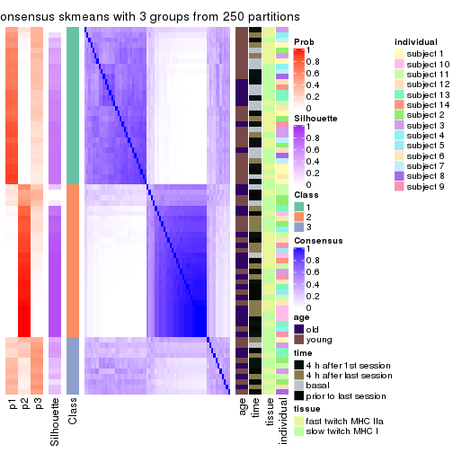
consensus_heatmap(res, k = 4)
consensus_heatmap(res, k = 5)
consensus_heatmap(res, k = 6)
Heatmaps for the membership of samples in all partitions to see how consistent they are:
membership_heatmap(res, k = 2)

membership_heatmap(res, k = 3)
membership_heatmap(res, k = 4)
membership_heatmap(res, k = 5)
membership_heatmap(res, k = 6)
As soon as we have had the classes for columns, we can look for signatures which are significantly different between classes which can be candidate marks for certain classes. Following are the heatmaps for signatures.
Signature heatmaps where rows are scaled:
get_signatures(res, k = 2)
get_signatures(res, k = 3)
get_signatures(res, k = 4)
get_signatures(res, k = 5)

get_signatures(res, k = 6)

Signature heatmaps where rows are not scaled:
get_signatures(res, k = 2, scale_rows = FALSE)
get_signatures(res, k = 3, scale_rows = FALSE)
get_signatures(res, k = 4, scale_rows = FALSE)
get_signatures(res, k = 5, scale_rows = FALSE)

get_signatures(res, k = 6, scale_rows = FALSE)

Compare the overlap of signatures from different k:
compare_signatures(res)
get_signature() returns a data frame invisibly. TO get the list of signatures, the function
call should be assigned to a variable explicitly. In following code, if plot argument is set
to FALSE, no heatmap is plotted while only the differential analysis is performed.
# code only for demonstration
tb = get_signature(res, k = ..., plot = FALSE)
An example of the output of tb is:
#> which_row fdr mean_1 mean_2 scaled_mean_1 scaled_mean_2 km
#> 1 38 0.042760348 8.373488 9.131774 -0.5533452 0.5164555 1
#> 2 40 0.018707592 7.106213 8.469186 -0.6173731 0.5762149 1
#> 3 55 0.019134737 10.221463 11.207825 -0.6159697 0.5749050 1
#> 4 59 0.006059896 5.921854 7.869574 -0.6899429 0.6439467 1
#> 5 60 0.018055526 8.928898 10.211722 -0.6204761 0.5791110 1
#> 6 98 0.009384629 15.714769 14.887706 0.6635654 -0.6193277 2
...
The columns in tb are:
which_row: row indices corresponding to the input matrix.fdr: FDR for the differential test. mean_x: The mean value in group x.scaled_mean_x: The mean value in group x after rows are scaled.km: Row groups if k-means clustering is applied to rows.UMAP plot which shows how samples are separated.
dimension_reduction(res, k = 2, method = "UMAP")
dimension_reduction(res, k = 3, method = "UMAP")
dimension_reduction(res, k = 4, method = "UMAP")
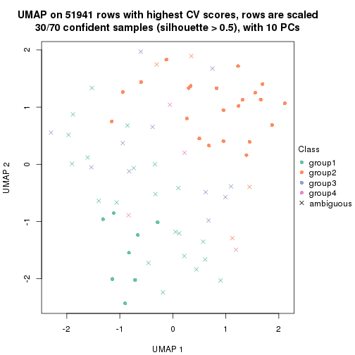
dimension_reduction(res, k = 5, method = "UMAP")
dimension_reduction(res, k = 6, method = "UMAP")
Following heatmap shows how subgroups are split when increasing k:
collect_classes(res)
Test correlation between subgroups and known annotations. If the known annotation is numeric, one-way ANOVA test is applied, and if the known annotation is discrete, chi-squared contingency table test is applied.
test_to_known_factors(res)
#> n age(p) time(p) tissue(p) individual(p) k
#> CV:skmeans 67 0.0124 0.01686 1.000 0.0119 2
#> CV:skmeans 49 0.0686 0.00576 0.442 0.2858 3
#> CV:skmeans 30 0.0646 0.17840 0.680 0.0768 4
#> CV:skmeans 19 NA NA NA NA 5
#> CV:skmeans 16 NA NA NA NA 6
If matrix rows can be associated to genes, consider to use functional_enrichment(res,
...) to perform function enrichment for the signature genes. See this vignette for more detailed explanations.
The object with results only for a single top-value method and a single partition method can be extracted as:
res = res_list["CV", "pam"]
# you can also extract it by
# res = res_list["CV:pam"]
A summary of res and all the functions that can be applied to it:
res
#> A 'ConsensusPartition' object with k = 2, 3, 4, 5, 6.
#> On a matrix with 51941 rows and 70 columns.
#> Top rows (1000, 2000, 3000, 4000, 5000) are extracted by 'CV' method.
#> Subgroups are detected by 'pam' method.
#> Performed in total 1250 partitions by row resampling.
#> Best k for subgroups seems to be 2.
#>
#> Following methods can be applied to this 'ConsensusPartition' object:
#> [1] "cola_report" "collect_classes" "collect_plots"
#> [4] "collect_stats" "colnames" "compare_signatures"
#> [7] "consensus_heatmap" "dimension_reduction" "functional_enrichment"
#> [10] "get_anno_col" "get_anno" "get_classes"
#> [13] "get_consensus" "get_matrix" "get_membership"
#> [16] "get_param" "get_signatures" "get_stats"
#> [19] "is_best_k" "is_stable_k" "membership_heatmap"
#> [22] "ncol" "nrow" "plot_ecdf"
#> [25] "rownames" "select_partition_number" "show"
#> [28] "suggest_best_k" "test_to_known_factors"
collect_plots() function collects all the plots made from res for all k (number of partitions)
into one single page to provide an easy and fast comparison between different k.
collect_plots(res)
The plots are:
k and the heatmap of
predicted classes for each k.k.k.k.All the plots in panels can be made by individual functions and they are plotted later in this section.
select_partition_number() produces several plots showing different
statistics for choosing “optimized” k. There are following statistics:
k;k, the area increased is defined as \(A_k - A_{k-1}\).The detailed explanations of these statistics can be found in the cola vignette.
Generally speaking, lower PAC score, higher mean silhouette score or higher
concordance corresponds to better partition. Rand index and Jaccard index
measure how similar the current partition is compared to partition with k-1.
If they are too similar, we won't accept k is better than k-1.
select_partition_number(res)
The numeric values for all these statistics can be obtained by get_stats().
get_stats(res)
#> k 1-PAC mean_silhouette concordance area_increased Rand Jaccard
#> 2 2 0.418 0.787 0.895 0.4844 0.499 0.499
#> 3 3 0.418 0.687 0.819 0.3754 0.738 0.517
#> 4 4 0.497 0.608 0.785 0.1058 0.885 0.671
#> 5 5 0.516 0.585 0.775 0.0204 0.982 0.931
#> 6 6 0.520 0.580 0.752 0.0149 1.000 1.000
suggest_best_k() suggests the best \(k\) based on these statistics. The rules are as follows:
suggest_best_k(res)
#> [1] 2
Following shows the table of the partitions (You need to click the show/hide
code output link to see it). The membership matrix (columns with name p*)
is inferred by
clue::cl_consensus()
function with the SE method. Basically the value in the membership matrix
represents the probability to belong to a certain group. The finall class
label for an item is determined with the group with highest probability it
belongs to.
In get_classes() function, the entropy is calculated from the membership
matrix and the silhouette score is calculated from the consensus matrix.
cbind(get_classes(res, k = 2), get_membership(res, k = 2))
#> class entropy silhouette p1 p2
#> GSM701770 1 0.0000 0.861 1.000 0.000
#> GSM701769 1 0.2778 0.858 0.952 0.048
#> GSM701768 1 0.1184 0.864 0.984 0.016
#> GSM701767 2 0.6343 0.817 0.160 0.840
#> GSM701766 2 0.6623 0.807 0.172 0.828
#> GSM701806 1 0.0000 0.861 1.000 0.000
#> GSM701805 1 0.1184 0.864 0.984 0.016
#> GSM701804 1 0.9286 0.526 0.656 0.344
#> GSM701803 2 0.9491 0.410 0.368 0.632
#> GSM701775 1 0.1414 0.863 0.980 0.020
#> GSM701774 1 0.1633 0.863 0.976 0.024
#> GSM701773 2 0.0000 0.887 0.000 1.000
#> GSM701772 1 0.9170 0.528 0.668 0.332
#> GSM701771 1 0.0000 0.861 1.000 0.000
#> GSM701810 1 0.1414 0.863 0.980 0.020
#> GSM701809 2 0.5408 0.843 0.124 0.876
#> GSM701808 1 0.3274 0.852 0.940 0.060
#> GSM701807 1 0.0672 0.863 0.992 0.008
#> GSM701780 1 0.9866 0.261 0.568 0.432
#> GSM701779 2 0.0000 0.887 0.000 1.000
#> GSM701778 2 0.0000 0.887 0.000 1.000
#> GSM701777 2 0.6887 0.797 0.184 0.816
#> GSM701776 1 0.1414 0.863 0.980 0.020
#> GSM701816 2 0.8955 0.537 0.312 0.688
#> GSM701815 2 0.0000 0.887 0.000 1.000
#> GSM701814 2 0.0000 0.887 0.000 1.000
#> GSM701813 2 0.7674 0.738 0.224 0.776
#> GSM701812 1 0.9963 0.149 0.536 0.464
#> GSM701811 1 0.3584 0.850 0.932 0.068
#> GSM701786 1 0.0000 0.861 1.000 0.000
#> GSM701785 2 0.2236 0.879 0.036 0.964
#> GSM701784 2 0.6973 0.794 0.188 0.812
#> GSM701783 1 0.0376 0.862 0.996 0.004
#> GSM701782 2 0.0938 0.885 0.012 0.988
#> GSM701781 2 0.3733 0.868 0.072 0.928
#> GSM701822 2 0.0000 0.887 0.000 1.000
#> GSM701821 2 0.0000 0.887 0.000 1.000
#> GSM701820 1 0.9850 0.308 0.572 0.428
#> GSM701819 1 0.5946 0.805 0.856 0.144
#> GSM701818 1 0.8081 0.711 0.752 0.248
#> GSM701817 1 0.7528 0.734 0.784 0.216
#> GSM701790 1 0.5059 0.823 0.888 0.112
#> GSM701789 1 0.0000 0.861 1.000 0.000
#> GSM701788 1 0.0000 0.861 1.000 0.000
#> GSM701787 2 0.8386 0.672 0.268 0.732
#> GSM701824 1 0.0000 0.861 1.000 0.000
#> GSM701823 2 0.0000 0.887 0.000 1.000
#> GSM701791 2 0.0000 0.887 0.000 1.000
#> GSM701793 1 0.0000 0.861 1.000 0.000
#> GSM701792 1 0.8016 0.695 0.756 0.244
#> GSM701825 1 0.6531 0.784 0.832 0.168
#> GSM701827 2 0.0000 0.887 0.000 1.000
#> GSM701826 2 0.6801 0.785 0.180 0.820
#> GSM701797 2 0.5294 0.842 0.120 0.880
#> GSM701796 1 0.7602 0.706 0.780 0.220
#> GSM701795 2 0.0000 0.887 0.000 1.000
#> GSM701794 2 0.0000 0.887 0.000 1.000
#> GSM701831 2 0.0000 0.887 0.000 1.000
#> GSM701830 2 0.0000 0.887 0.000 1.000
#> GSM701829 2 0.7883 0.726 0.236 0.764
#> GSM701828 2 0.0376 0.886 0.004 0.996
#> GSM701798 2 0.0000 0.887 0.000 1.000
#> GSM701802 2 0.2603 0.877 0.044 0.956
#> GSM701801 2 0.9732 0.356 0.404 0.596
#> GSM701800 2 0.8861 0.607 0.304 0.696
#> GSM701799 2 0.0000 0.887 0.000 1.000
#> GSM701832 2 0.4161 0.862 0.084 0.916
#> GSM701835 2 0.7299 0.771 0.204 0.796
#> GSM701834 2 0.0000 0.887 0.000 1.000
#> GSM701833 2 0.0000 0.887 0.000 1.000
cbind(get_classes(res, k = 3), get_membership(res, k = 3))
#> class entropy silhouette p1 p2 p3
#> GSM701770 1 0.2356 0.8339 0.928 0.000 0.072
#> GSM701769 1 0.4934 0.8121 0.820 0.024 0.156
#> GSM701768 1 0.4555 0.7972 0.800 0.000 0.200
#> GSM701767 3 0.4539 0.7587 0.016 0.148 0.836
#> GSM701766 2 0.6865 0.3977 0.020 0.596 0.384
#> GSM701806 1 0.0592 0.8224 0.988 0.000 0.012
#> GSM701805 1 0.1643 0.8295 0.956 0.000 0.044
#> GSM701804 3 0.5268 0.6859 0.212 0.012 0.776
#> GSM701803 3 0.4887 0.7774 0.096 0.060 0.844
#> GSM701775 1 0.4504 0.8014 0.804 0.000 0.196
#> GSM701774 1 0.3686 0.8204 0.860 0.000 0.140
#> GSM701773 2 0.0000 0.8039 0.000 1.000 0.000
#> GSM701772 3 0.6954 0.3094 0.352 0.028 0.620
#> GSM701771 1 0.0892 0.8275 0.980 0.000 0.020
#> GSM701810 1 0.3038 0.8296 0.896 0.000 0.104
#> GSM701809 3 0.8337 0.3408 0.088 0.376 0.536
#> GSM701808 1 0.5650 0.5812 0.688 0.000 0.312
#> GSM701807 1 0.3267 0.8282 0.884 0.000 0.116
#> GSM701780 1 0.7841 0.2075 0.536 0.408 0.056
#> GSM701779 2 0.0000 0.8039 0.000 1.000 0.000
#> GSM701778 2 0.0424 0.8039 0.000 0.992 0.008
#> GSM701777 2 0.8084 0.2998 0.072 0.544 0.384
#> GSM701776 1 0.3412 0.7839 0.876 0.000 0.124
#> GSM701816 3 0.6324 0.7393 0.160 0.076 0.764
#> GSM701815 2 0.3116 0.7744 0.000 0.892 0.108
#> GSM701814 3 0.5529 0.6266 0.000 0.296 0.704
#> GSM701813 3 0.3472 0.7893 0.040 0.056 0.904
#> GSM701812 3 0.2947 0.7751 0.060 0.020 0.920
#> GSM701811 1 0.5356 0.7806 0.784 0.020 0.196
#> GSM701786 1 0.0747 0.8207 0.984 0.000 0.016
#> GSM701785 2 0.2301 0.7881 0.004 0.936 0.060
#> GSM701784 3 0.7357 0.4534 0.048 0.332 0.620
#> GSM701783 1 0.2448 0.8137 0.924 0.000 0.076
#> GSM701782 2 0.3482 0.7756 0.000 0.872 0.128
#> GSM701781 2 0.7157 0.5830 0.056 0.668 0.276
#> GSM701822 3 0.5254 0.6659 0.000 0.264 0.736
#> GSM701821 2 0.3267 0.7737 0.000 0.884 0.116
#> GSM701820 3 0.3377 0.7654 0.092 0.012 0.896
#> GSM701819 1 0.6745 0.3867 0.560 0.012 0.428
#> GSM701818 3 0.6467 0.4026 0.388 0.008 0.604
#> GSM701817 3 0.1878 0.7800 0.044 0.004 0.952
#> GSM701790 1 0.6359 0.5353 0.628 0.008 0.364
#> GSM701789 1 0.2066 0.8274 0.940 0.000 0.060
#> GSM701788 1 0.2356 0.8282 0.928 0.000 0.072
#> GSM701787 3 0.4540 0.7811 0.028 0.124 0.848
#> GSM701824 1 0.3116 0.8285 0.892 0.000 0.108
#> GSM701823 2 0.5431 0.5566 0.000 0.716 0.284
#> GSM701791 2 0.0237 0.8040 0.000 0.996 0.004
#> GSM701793 1 0.1753 0.8242 0.952 0.000 0.048
#> GSM701792 1 0.8261 0.5459 0.568 0.092 0.340
#> GSM701825 3 0.5363 0.6184 0.276 0.000 0.724
#> GSM701827 2 0.0000 0.8039 0.000 1.000 0.000
#> GSM701826 3 0.3619 0.7704 0.000 0.136 0.864
#> GSM701797 2 0.6019 0.6211 0.012 0.700 0.288
#> GSM701796 1 0.7332 0.6451 0.660 0.064 0.276
#> GSM701795 2 0.0424 0.8041 0.000 0.992 0.008
#> GSM701794 2 0.0000 0.8039 0.000 1.000 0.000
#> GSM701831 2 0.6235 0.2221 0.000 0.564 0.436
#> GSM701830 2 0.5650 0.5069 0.000 0.688 0.312
#> GSM701829 3 0.1964 0.7816 0.000 0.056 0.944
#> GSM701828 2 0.5216 0.6201 0.000 0.740 0.260
#> GSM701798 2 0.1031 0.8031 0.000 0.976 0.024
#> GSM701802 2 0.2301 0.7930 0.004 0.936 0.060
#> GSM701801 2 0.9982 -0.0112 0.308 0.360 0.332
#> GSM701800 3 0.2383 0.7864 0.016 0.044 0.940
#> GSM701799 2 0.0000 0.8039 0.000 1.000 0.000
#> GSM701832 3 0.5365 0.6551 0.004 0.252 0.744
#> GSM701835 3 0.3791 0.7898 0.048 0.060 0.892
#> GSM701834 3 0.4842 0.6979 0.000 0.224 0.776
#> GSM701833 2 0.0237 0.8043 0.000 0.996 0.004
cbind(get_classes(res, k = 4), get_membership(res, k = 4))
#> class entropy silhouette p1 p2 p3 p4
#> GSM701770 1 0.4972 0.1911 0.544 0.000 0.000 0.456
#> GSM701769 1 0.5771 -0.0319 0.504 0.004 0.020 0.472
#> GSM701768 1 0.2730 0.5988 0.896 0.000 0.016 0.088
#> GSM701767 3 0.5331 0.7757 0.140 0.100 0.756 0.004
#> GSM701766 2 0.7091 0.4334 0.208 0.568 0.224 0.000
#> GSM701806 4 0.3942 0.5236 0.236 0.000 0.000 0.764
#> GSM701805 4 0.4978 0.3043 0.324 0.000 0.012 0.664
#> GSM701804 3 0.6196 0.5937 0.136 0.004 0.684 0.176
#> GSM701803 3 0.1762 0.8137 0.016 0.012 0.952 0.020
#> GSM701775 1 0.2742 0.5888 0.900 0.000 0.024 0.076
#> GSM701774 4 0.4706 0.6591 0.248 0.000 0.020 0.732
#> GSM701773 2 0.0000 0.7978 0.000 1.000 0.000 0.000
#> GSM701772 1 0.6276 -0.1026 0.480 0.000 0.464 0.056
#> GSM701771 4 0.1867 0.6977 0.072 0.000 0.000 0.928
#> GSM701810 4 0.3649 0.6927 0.204 0.000 0.000 0.796
#> GSM701809 3 0.5844 0.3656 0.016 0.348 0.616 0.020
#> GSM701808 4 0.3813 0.7072 0.148 0.000 0.024 0.828
#> GSM701807 4 0.4222 0.6496 0.272 0.000 0.000 0.728
#> GSM701780 2 0.8864 -0.2976 0.292 0.340 0.044 0.324
#> GSM701779 2 0.0188 0.7978 0.000 0.996 0.004 0.000
#> GSM701778 2 0.0921 0.7981 0.000 0.972 0.028 0.000
#> GSM701777 2 0.7911 0.3480 0.112 0.532 0.304 0.052
#> GSM701776 4 0.1576 0.6954 0.048 0.000 0.004 0.948
#> GSM701816 3 0.3606 0.7592 0.116 0.020 0.856 0.008
#> GSM701815 2 0.2921 0.7583 0.000 0.860 0.140 0.000
#> GSM701814 3 0.3569 0.7522 0.000 0.196 0.804 0.000
#> GSM701813 3 0.0657 0.8102 0.000 0.012 0.984 0.004
#> GSM701812 3 0.2796 0.8025 0.096 0.004 0.892 0.008
#> GSM701811 1 0.6766 0.1238 0.508 0.012 0.064 0.416
#> GSM701786 4 0.1211 0.6956 0.040 0.000 0.000 0.960
#> GSM701785 2 0.1584 0.7955 0.012 0.952 0.036 0.000
#> GSM701784 3 0.7464 0.4165 0.208 0.296 0.496 0.000
#> GSM701783 4 0.2737 0.6874 0.104 0.000 0.008 0.888
#> GSM701782 2 0.2814 0.7720 0.000 0.868 0.132 0.000
#> GSM701781 2 0.6137 0.5639 0.028 0.636 0.308 0.028
#> GSM701822 3 0.2814 0.7955 0.000 0.132 0.868 0.000
#> GSM701821 2 0.3172 0.7482 0.000 0.840 0.160 0.000
#> GSM701820 3 0.4711 0.7720 0.144 0.008 0.796 0.052
#> GSM701819 4 0.5036 0.6136 0.280 0.000 0.024 0.696
#> GSM701818 4 0.5152 0.2533 0.004 0.004 0.384 0.608
#> GSM701817 3 0.3479 0.7847 0.148 0.000 0.840 0.012
#> GSM701790 1 0.5902 0.5385 0.700 0.000 0.140 0.160
#> GSM701789 1 0.4624 0.4738 0.660 0.000 0.000 0.340
#> GSM701788 1 0.4134 0.5498 0.740 0.000 0.000 0.260
#> GSM701787 3 0.4989 0.7787 0.164 0.072 0.764 0.000
#> GSM701824 4 0.3975 0.6725 0.240 0.000 0.000 0.760
#> GSM701823 2 0.4509 0.5546 0.004 0.708 0.288 0.000
#> GSM701791 2 0.0707 0.7977 0.000 0.980 0.020 0.000
#> GSM701793 1 0.4040 0.5429 0.752 0.000 0.000 0.248
#> GSM701792 1 0.4890 0.5468 0.816 0.052 0.060 0.072
#> GSM701825 3 0.5339 0.5656 0.040 0.000 0.688 0.272
#> GSM701827 2 0.0336 0.7978 0.000 0.992 0.008 0.000
#> GSM701826 3 0.2443 0.8186 0.024 0.060 0.916 0.000
#> GSM701797 2 0.5906 0.6492 0.188 0.704 0.104 0.004
#> GSM701796 1 0.3109 0.6047 0.880 0.004 0.016 0.100
#> GSM701795 2 0.0592 0.7987 0.000 0.984 0.016 0.000
#> GSM701794 2 0.0188 0.7978 0.000 0.996 0.004 0.000
#> GSM701831 2 0.4989 0.2117 0.000 0.528 0.472 0.000
#> GSM701830 2 0.4888 0.3666 0.000 0.588 0.412 0.000
#> GSM701829 3 0.1584 0.8155 0.036 0.012 0.952 0.000
#> GSM701828 2 0.4804 0.4733 0.000 0.616 0.384 0.000
#> GSM701798 2 0.1637 0.7936 0.000 0.940 0.060 0.000
#> GSM701802 2 0.1733 0.7939 0.024 0.948 0.028 0.000
#> GSM701801 1 0.7022 0.3859 0.612 0.228 0.148 0.012
#> GSM701800 3 0.3232 0.8057 0.108 0.016 0.872 0.004
#> GSM701799 2 0.0000 0.7978 0.000 1.000 0.000 0.000
#> GSM701832 3 0.5646 0.6926 0.088 0.204 0.708 0.000
#> GSM701835 3 0.2730 0.8202 0.036 0.028 0.916 0.020
#> GSM701834 3 0.2011 0.8123 0.000 0.080 0.920 0.000
#> GSM701833 2 0.0469 0.7982 0.000 0.988 0.012 0.000
cbind(get_classes(res, k = 5), get_membership(res, k = 5))
#> class entropy silhouette p1 p2 p3 p4 p5
#> GSM701770 1 0.5442 0.18488 0.536 0.000 0.004 0.408 0.052
#> GSM701769 4 0.5493 0.09429 0.468 0.004 0.020 0.488 0.020
#> GSM701768 1 0.2605 0.61121 0.900 0.000 0.016 0.060 0.024
#> GSM701767 3 0.4446 0.74953 0.116 0.100 0.776 0.008 0.000
#> GSM701766 2 0.6401 0.43102 0.204 0.560 0.228 0.004 0.004
#> GSM701806 4 0.5253 0.49268 0.200 0.000 0.000 0.676 0.124
#> GSM701805 4 0.6094 0.29655 0.292 0.000 0.008 0.572 0.128
#> GSM701804 5 0.4591 0.00000 0.024 0.000 0.128 0.072 0.776
#> GSM701803 3 0.1200 0.77912 0.008 0.000 0.964 0.012 0.016
#> GSM701775 1 0.2708 0.59712 0.892 0.000 0.020 0.072 0.016
#> GSM701774 4 0.4353 0.66143 0.224 0.000 0.012 0.740 0.024
#> GSM701773 2 0.0290 0.77531 0.000 0.992 0.000 0.000 0.008
#> GSM701772 1 0.5566 -0.00642 0.512 0.000 0.432 0.044 0.012
#> GSM701771 4 0.2927 0.68274 0.068 0.000 0.000 0.872 0.060
#> GSM701810 4 0.3194 0.69228 0.148 0.000 0.000 0.832 0.020
#> GSM701809 3 0.5317 0.36926 0.004 0.340 0.612 0.028 0.016
#> GSM701808 4 0.3095 0.70030 0.092 0.000 0.024 0.868 0.016
#> GSM701807 4 0.4666 0.63422 0.240 0.000 0.000 0.704 0.056
#> GSM701780 2 0.8476 -0.27640 0.280 0.340 0.040 0.288 0.052
#> GSM701779 2 0.0404 0.77511 0.000 0.988 0.000 0.000 0.012
#> GSM701778 2 0.0912 0.77598 0.000 0.972 0.016 0.000 0.012
#> GSM701777 2 0.7176 0.33094 0.128 0.516 0.304 0.032 0.020
#> GSM701776 4 0.3484 0.67504 0.028 0.000 0.004 0.824 0.144
#> GSM701816 3 0.3265 0.71264 0.128 0.016 0.844 0.000 0.012
#> GSM701815 2 0.2583 0.74610 0.000 0.864 0.132 0.000 0.004
#> GSM701814 3 0.3456 0.72773 0.000 0.184 0.800 0.000 0.016
#> GSM701813 3 0.0727 0.78071 0.000 0.012 0.980 0.004 0.004
#> GSM701812 3 0.2804 0.76369 0.096 0.004 0.880 0.012 0.008
#> GSM701811 1 0.7124 0.09066 0.476 0.012 0.068 0.372 0.072
#> GSM701786 4 0.2124 0.68843 0.028 0.000 0.000 0.916 0.056
#> GSM701785 2 0.1168 0.77349 0.008 0.960 0.032 0.000 0.000
#> GSM701784 3 0.6714 0.41412 0.188 0.296 0.504 0.004 0.008
#> GSM701783 4 0.3507 0.68531 0.088 0.000 0.008 0.844 0.060
#> GSM701782 2 0.2921 0.75117 0.000 0.856 0.124 0.000 0.020
#> GSM701781 2 0.5414 0.57198 0.036 0.640 0.300 0.016 0.008
#> GSM701822 3 0.2873 0.76595 0.000 0.120 0.860 0.000 0.020
#> GSM701821 2 0.2773 0.73451 0.000 0.836 0.164 0.000 0.000
#> GSM701820 3 0.4223 0.73982 0.124 0.008 0.804 0.052 0.012
#> GSM701819 4 0.4592 0.63133 0.244 0.000 0.024 0.716 0.016
#> GSM701818 4 0.5172 0.22908 0.004 0.000 0.332 0.616 0.048
#> GSM701817 3 0.3308 0.74735 0.144 0.000 0.832 0.020 0.004
#> GSM701790 1 0.6110 0.53820 0.668 0.000 0.144 0.124 0.064
#> GSM701789 1 0.5577 0.46777 0.624 0.000 0.000 0.256 0.120
#> GSM701788 1 0.4810 0.55161 0.712 0.000 0.000 0.204 0.084
#> GSM701787 3 0.4608 0.73693 0.164 0.064 0.760 0.004 0.008
#> GSM701824 4 0.3719 0.67580 0.208 0.000 0.004 0.776 0.012
#> GSM701823 2 0.4491 0.54762 0.004 0.692 0.280 0.000 0.024
#> GSM701791 2 0.0404 0.77510 0.000 0.988 0.012 0.000 0.000
#> GSM701793 1 0.4909 0.54790 0.716 0.000 0.000 0.164 0.120
#> GSM701792 1 0.3724 0.56330 0.848 0.028 0.056 0.064 0.004
#> GSM701825 3 0.6086 0.41394 0.056 0.000 0.636 0.236 0.072
#> GSM701827 2 0.0609 0.77485 0.000 0.980 0.000 0.000 0.020
#> GSM701826 3 0.2492 0.79041 0.024 0.048 0.908 0.000 0.020
#> GSM701797 2 0.5173 0.62949 0.184 0.704 0.104 0.008 0.000
#> GSM701796 1 0.3005 0.61958 0.884 0.004 0.012 0.052 0.048
#> GSM701795 2 0.0510 0.77567 0.000 0.984 0.016 0.000 0.000
#> GSM701794 2 0.0162 0.77498 0.000 0.996 0.000 0.000 0.004
#> GSM701831 2 0.4437 0.21256 0.000 0.532 0.464 0.000 0.004
#> GSM701830 2 0.4817 0.35719 0.000 0.572 0.404 0.000 0.024
#> GSM701829 3 0.1106 0.78752 0.024 0.012 0.964 0.000 0.000
#> GSM701828 2 0.4734 0.47311 0.000 0.604 0.372 0.000 0.024
#> GSM701798 2 0.1965 0.77031 0.000 0.924 0.052 0.000 0.024
#> GSM701802 2 0.1493 0.77149 0.024 0.948 0.028 0.000 0.000
#> GSM701801 1 0.6375 0.25317 0.608 0.216 0.152 0.012 0.012
#> GSM701800 3 0.2782 0.78095 0.096 0.016 0.880 0.004 0.004
#> GSM701799 2 0.0000 0.77455 0.000 1.000 0.000 0.000 0.000
#> GSM701832 3 0.5120 0.66785 0.080 0.196 0.712 0.004 0.008
#> GSM701835 3 0.2435 0.79245 0.036 0.028 0.916 0.012 0.008
#> GSM701834 3 0.1608 0.78416 0.000 0.072 0.928 0.000 0.000
#> GSM701833 2 0.0771 0.77524 0.000 0.976 0.004 0.000 0.020
cbind(get_classes(res, k = 6), get_membership(res, k = 6))
#> class entropy silhouette p1 p2 p3 p4 p5 p6
#> GSM701770 4 0.5633 0.17041 0.360 0.000 0.000 0.508 NA 0.008
#> GSM701769 1 0.4991 0.10923 0.496 0.000 0.016 0.456 NA 0.004
#> GSM701768 4 0.2285 0.59663 0.064 0.000 0.008 0.900 NA 0.000
#> GSM701767 3 0.4108 0.77212 0.004 0.100 0.768 0.124 NA 0.000
#> GSM701766 2 0.5641 0.42959 0.000 0.560 0.224 0.212 NA 0.000
#> GSM701806 1 0.5329 0.47102 0.632 0.000 0.000 0.156 NA 0.012
#> GSM701805 1 0.6242 0.19758 0.464 0.000 0.008 0.252 NA 0.004
#> GSM701804 6 0.0993 0.00000 0.024 0.000 0.012 0.000 NA 0.964
#> GSM701803 3 0.2293 0.77556 0.016 0.000 0.896 0.004 NA 0.004
#> GSM701775 4 0.2630 0.58341 0.068 0.000 0.016 0.888 NA 0.008
#> GSM701774 1 0.3809 0.63844 0.756 0.000 0.016 0.208 NA 0.000
#> GSM701773 2 0.0260 0.77720 0.000 0.992 0.000 0.000 NA 0.000
#> GSM701772 4 0.5294 0.00145 0.036 0.000 0.424 0.504 NA 0.000
#> GSM701771 1 0.3654 0.63592 0.792 0.000 0.000 0.060 NA 0.004
#> GSM701810 1 0.2362 0.66427 0.860 0.000 0.000 0.136 NA 0.000
#> GSM701809 3 0.4658 0.36232 0.040 0.340 0.612 0.000 NA 0.000
#> GSM701808 1 0.2931 0.67008 0.868 0.000 0.024 0.084 NA 0.008
#> GSM701807 1 0.5466 0.54356 0.604 0.000 0.000 0.196 NA 0.008
#> GSM701780 2 0.8033 -0.24346 0.268 0.344 0.044 0.268 NA 0.012
#> GSM701779 2 0.0964 0.77762 0.000 0.968 0.004 0.000 NA 0.012
#> GSM701778 2 0.1332 0.77936 0.000 0.952 0.028 0.000 NA 0.008
#> GSM701777 2 0.6568 0.31483 0.020 0.508 0.308 0.120 NA 0.000
#> GSM701776 1 0.3965 0.55803 0.604 0.000 0.000 0.008 NA 0.000
#> GSM701816 3 0.3370 0.73029 0.000 0.012 0.828 0.128 NA 0.012
#> GSM701815 2 0.2135 0.75827 0.000 0.872 0.128 0.000 NA 0.000
#> GSM701814 3 0.3526 0.75541 0.000 0.172 0.792 0.000 NA 0.016
#> GSM701813 3 0.0767 0.79304 0.000 0.012 0.976 0.000 NA 0.008
#> GSM701812 3 0.2962 0.77722 0.008 0.004 0.856 0.112 NA 0.008
#> GSM701811 4 0.6790 0.11262 0.320 0.004 0.052 0.436 NA 0.000
#> GSM701786 1 0.2703 0.65513 0.860 0.000 0.000 0.016 NA 0.008
#> GSM701785 2 0.1180 0.77666 0.000 0.960 0.024 0.008 NA 0.004
#> GSM701784 3 0.5944 0.41999 0.000 0.296 0.500 0.196 NA 0.000
#> GSM701783 1 0.3225 0.65200 0.828 0.000 0.000 0.080 NA 0.000
#> GSM701782 2 0.2673 0.75901 0.000 0.852 0.132 0.004 NA 0.000
#> GSM701781 2 0.4932 0.56739 0.004 0.636 0.304 0.028 NA 0.004
#> GSM701822 3 0.3015 0.78124 0.000 0.120 0.844 0.000 NA 0.012
#> GSM701821 2 0.2491 0.74661 0.000 0.836 0.164 0.000 NA 0.000
#> GSM701820 3 0.3786 0.75893 0.060 0.008 0.796 0.132 NA 0.000
#> GSM701819 1 0.4111 0.61511 0.728 0.000 0.020 0.232 NA 0.004
#> GSM701818 1 0.4926 0.33318 0.616 0.000 0.308 0.008 NA 0.000
#> GSM701817 3 0.2996 0.76988 0.016 0.000 0.832 0.144 NA 0.000
#> GSM701790 4 0.6217 0.52198 0.100 0.000 0.140 0.616 NA 0.008
#> GSM701789 4 0.5610 0.44727 0.196 0.000 0.000 0.564 NA 0.004
#> GSM701788 4 0.4792 0.52701 0.180 0.000 0.000 0.672 NA 0.000
#> GSM701787 3 0.4282 0.76345 0.000 0.064 0.752 0.168 NA 0.008
#> GSM701824 1 0.3187 0.65249 0.796 0.000 0.004 0.188 NA 0.000
#> GSM701823 2 0.4458 0.52661 0.000 0.664 0.296 0.004 NA 0.016
#> GSM701791 2 0.0363 0.77666 0.000 0.988 0.012 0.000 NA 0.000
#> GSM701793 4 0.4857 0.52864 0.116 0.000 0.000 0.668 NA 0.004
#> GSM701792 4 0.3065 0.55703 0.060 0.020 0.052 0.864 NA 0.000
#> GSM701825 3 0.6397 0.18713 0.152 0.000 0.472 0.028 NA 0.008
#> GSM701827 2 0.1251 0.77716 0.000 0.956 0.008 0.000 NA 0.012
#> GSM701826 3 0.2595 0.80209 0.000 0.048 0.896 0.020 NA 0.012
#> GSM701797 2 0.4647 0.65301 0.000 0.704 0.104 0.184 NA 0.000
#> GSM701796 4 0.2863 0.60573 0.036 0.000 0.012 0.864 NA 0.000
#> GSM701795 2 0.0363 0.77714 0.000 0.988 0.012 0.000 NA 0.000
#> GSM701794 2 0.0551 0.77792 0.000 0.984 0.004 0.000 NA 0.008
#> GSM701831 2 0.4222 0.17459 0.000 0.516 0.472 0.000 NA 0.008
#> GSM701830 2 0.4780 0.37759 0.000 0.568 0.388 0.000 NA 0.020
#> GSM701829 3 0.1225 0.80037 0.000 0.012 0.952 0.036 NA 0.000
#> GSM701828 2 0.4491 0.48373 0.000 0.604 0.364 0.000 NA 0.016
#> GSM701798 2 0.2164 0.77602 0.000 0.908 0.060 0.000 NA 0.012
#> GSM701802 2 0.1257 0.77669 0.000 0.952 0.028 0.020 NA 0.000
#> GSM701801 4 0.5593 0.33864 0.008 0.204 0.156 0.620 NA 0.000
#> GSM701800 3 0.2510 0.80049 0.004 0.016 0.884 0.088 NA 0.008
#> GSM701799 2 0.0000 0.77601 0.000 1.000 0.000 0.000 NA 0.000
#> GSM701832 3 0.4752 0.68984 0.000 0.196 0.708 0.076 NA 0.008
#> GSM701835 3 0.2438 0.80496 0.008 0.028 0.908 0.032 NA 0.004
#> GSM701834 3 0.1757 0.79837 0.000 0.076 0.916 0.000 NA 0.008
#> GSM701833 2 0.1353 0.77743 0.000 0.952 0.012 0.000 NA 0.012
Heatmaps for the consensus matrix. It visualizes the probability of two samples to be in a same group.
consensus_heatmap(res, k = 2)
consensus_heatmap(res, k = 3)
consensus_heatmap(res, k = 4)
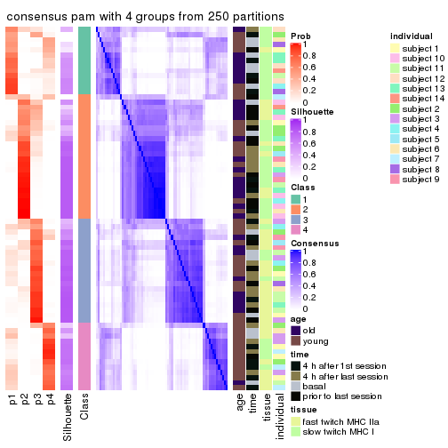
consensus_heatmap(res, k = 5)
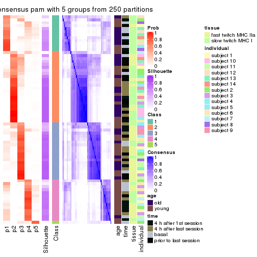
consensus_heatmap(res, k = 6)
Heatmaps for the membership of samples in all partitions to see how consistent they are:
membership_heatmap(res, k = 2)
membership_heatmap(res, k = 3)
membership_heatmap(res, k = 4)
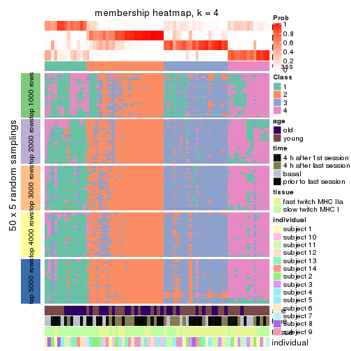
membership_heatmap(res, k = 5)

membership_heatmap(res, k = 6)
As soon as we have had the classes for columns, we can look for signatures which are significantly different between classes which can be candidate marks for certain classes. Following are the heatmaps for signatures.
Signature heatmaps where rows are scaled:
get_signatures(res, k = 2)
get_signatures(res, k = 3)
get_signatures(res, k = 4)
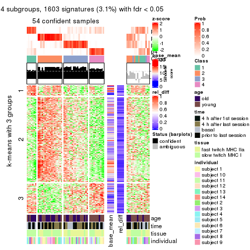
get_signatures(res, k = 5)
get_signatures(res, k = 6)
Signature heatmaps where rows are not scaled:
get_signatures(res, k = 2, scale_rows = FALSE)
get_signatures(res, k = 3, scale_rows = FALSE)

get_signatures(res, k = 4, scale_rows = FALSE)

get_signatures(res, k = 5, scale_rows = FALSE)
get_signatures(res, k = 6, scale_rows = FALSE)
Compare the overlap of signatures from different k:
compare_signatures(res)
get_signature() returns a data frame invisibly. TO get the list of signatures, the function
call should be assigned to a variable explicitly. In following code, if plot argument is set
to FALSE, no heatmap is plotted while only the differential analysis is performed.
# code only for demonstration
tb = get_signature(res, k = ..., plot = FALSE)
An example of the output of tb is:
#> which_row fdr mean_1 mean_2 scaled_mean_1 scaled_mean_2 km
#> 1 38 0.042760348 8.373488 9.131774 -0.5533452 0.5164555 1
#> 2 40 0.018707592 7.106213 8.469186 -0.6173731 0.5762149 1
#> 3 55 0.019134737 10.221463 11.207825 -0.6159697 0.5749050 1
#> 4 59 0.006059896 5.921854 7.869574 -0.6899429 0.6439467 1
#> 5 60 0.018055526 8.928898 10.211722 -0.6204761 0.5791110 1
#> 6 98 0.009384629 15.714769 14.887706 0.6635654 -0.6193277 2
...
The columns in tb are:
which_row: row indices corresponding to the input matrix.fdr: FDR for the differential test. mean_x: The mean value in group x.scaled_mean_x: The mean value in group x after rows are scaled.km: Row groups if k-means clustering is applied to rows.UMAP plot which shows how samples are separated.
dimension_reduction(res, k = 2, method = "UMAP")
dimension_reduction(res, k = 3, method = "UMAP")
dimension_reduction(res, k = 4, method = "UMAP")
dimension_reduction(res, k = 5, method = "UMAP")
dimension_reduction(res, k = 6, method = "UMAP")
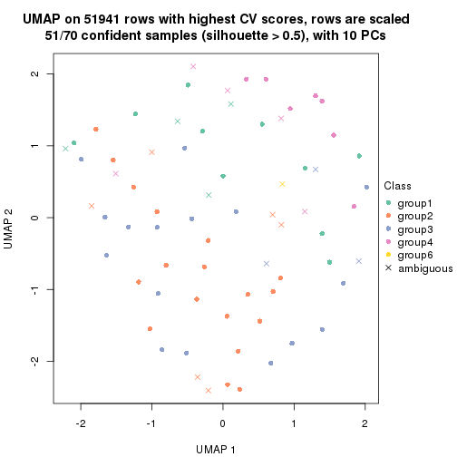
Following heatmap shows how subgroups are split when increasing k:
collect_classes(res)
Test correlation between subgroups and known annotations. If the known annotation is numeric, one-way ANOVA test is applied, and if the known annotation is discrete, chi-squared contingency table test is applied.
test_to_known_factors(res)
#> n age(p) time(p) tissue(p) individual(p) k
#> CV:pam 65 0.0716 0.00214 0.831657 0.1029 2
#> CV:pam 60 0.1859 0.01079 0.001785 0.1046 3
#> CV:pam 54 0.0362 0.11800 0.000331 0.0100 4
#> CV:pam 51 0.0517 0.05744 0.000907 0.0101 5
#> CV:pam 51 0.0517 0.05744 0.000907 0.0101 6
If matrix rows can be associated to genes, consider to use functional_enrichment(res,
...) to perform function enrichment for the signature genes. See this vignette for more detailed explanations.
The object with results only for a single top-value method and a single partition method can be extracted as:
res = res_list["CV", "mclust"]
# you can also extract it by
# res = res_list["CV:mclust"]
A summary of res and all the functions that can be applied to it:
res
#> A 'ConsensusPartition' object with k = 2, 3, 4, 5, 6.
#> On a matrix with 51941 rows and 70 columns.
#> Top rows (1000, 2000, 3000, 4000, 5000) are extracted by 'CV' method.
#> Subgroups are detected by 'mclust' method.
#> Performed in total 1250 partitions by row resampling.
#> Best k for subgroups seems to be 3.
#>
#> Following methods can be applied to this 'ConsensusPartition' object:
#> [1] "cola_report" "collect_classes" "collect_plots"
#> [4] "collect_stats" "colnames" "compare_signatures"
#> [7] "consensus_heatmap" "dimension_reduction" "functional_enrichment"
#> [10] "get_anno_col" "get_anno" "get_classes"
#> [13] "get_consensus" "get_matrix" "get_membership"
#> [16] "get_param" "get_signatures" "get_stats"
#> [19] "is_best_k" "is_stable_k" "membership_heatmap"
#> [22] "ncol" "nrow" "plot_ecdf"
#> [25] "rownames" "select_partition_number" "show"
#> [28] "suggest_best_k" "test_to_known_factors"
collect_plots() function collects all the plots made from res for all k (number of partitions)
into one single page to provide an easy and fast comparison between different k.
collect_plots(res)
The plots are:
k and the heatmap of
predicted classes for each k.k.k.k.All the plots in panels can be made by individual functions and they are plotted later in this section.
select_partition_number() produces several plots showing different
statistics for choosing “optimized” k. There are following statistics:
k;k, the area increased is defined as \(A_k - A_{k-1}\).The detailed explanations of these statistics can be found in the cola vignette.
Generally speaking, lower PAC score, higher mean silhouette score or higher
concordance corresponds to better partition. Rand index and Jaccard index
measure how similar the current partition is compared to partition with k-1.
If they are too similar, we won't accept k is better than k-1.
select_partition_number(res)
The numeric values for all these statistics can be obtained by get_stats().
get_stats(res)
#> k 1-PAC mean_silhouette concordance area_increased Rand Jaccard
#> 2 2 0.723 0.839 0.920 0.3817 0.627 0.627
#> 3 3 0.333 0.665 0.715 0.4500 0.795 0.699
#> 4 4 0.346 0.478 0.677 0.2418 0.704 0.494
#> 5 5 0.455 0.544 0.691 0.1061 0.753 0.386
#> 6 6 0.538 0.579 0.696 0.0566 0.946 0.773
suggest_best_k() suggests the best \(k\) based on these statistics. The rules are as follows:
suggest_best_k(res)
#> [1] 3
Following shows the table of the partitions (You need to click the show/hide
code output link to see it). The membership matrix (columns with name p*)
is inferred by
clue::cl_consensus()
function with the SE method. Basically the value in the membership matrix
represents the probability to belong to a certain group. The finall class
label for an item is determined with the group with highest probability it
belongs to.
In get_classes() function, the entropy is calculated from the membership
matrix and the silhouette score is calculated from the consensus matrix.
cbind(get_classes(res, k = 2), get_membership(res, k = 2))
#> class entropy silhouette p1 p2
#> GSM701770 1 0.0000 0.924 1.000 0.000
#> GSM701769 1 0.0376 0.923 0.996 0.004
#> GSM701768 1 0.0000 0.924 1.000 0.000
#> GSM701767 1 0.0672 0.923 0.992 0.008
#> GSM701766 1 0.2423 0.909 0.960 0.040
#> GSM701806 1 0.1414 0.924 0.980 0.020
#> GSM701805 1 0.1414 0.924 0.980 0.020
#> GSM701804 1 0.2948 0.916 0.948 0.052
#> GSM701803 1 0.2778 0.917 0.952 0.048
#> GSM701775 1 0.0000 0.924 1.000 0.000
#> GSM701774 1 0.0000 0.924 1.000 0.000
#> GSM701773 2 0.3274 0.867 0.060 0.940
#> GSM701772 1 0.0672 0.923 0.992 0.008
#> GSM701771 1 0.0000 0.924 1.000 0.000
#> GSM701810 1 0.2948 0.916 0.948 0.052
#> GSM701809 1 0.3114 0.915 0.944 0.056
#> GSM701808 1 0.2948 0.916 0.948 0.052
#> GSM701807 1 0.2948 0.916 0.948 0.052
#> GSM701780 1 0.2236 0.923 0.964 0.036
#> GSM701779 2 0.3431 0.866 0.064 0.936
#> GSM701778 2 0.8081 0.709 0.248 0.752
#> GSM701777 1 0.3879 0.880 0.924 0.076
#> GSM701776 1 0.2948 0.916 0.948 0.052
#> GSM701816 1 0.1633 0.925 0.976 0.024
#> GSM701815 1 0.9491 0.432 0.632 0.368
#> GSM701814 2 0.0672 0.864 0.008 0.992
#> GSM701813 1 0.2948 0.916 0.948 0.052
#> GSM701812 1 0.3274 0.915 0.940 0.060
#> GSM701811 1 0.0376 0.923 0.996 0.004
#> GSM701786 1 0.0376 0.923 0.996 0.004
#> GSM701785 1 0.8813 0.524 0.700 0.300
#> GSM701784 1 0.5842 0.803 0.860 0.140
#> GSM701783 1 0.0672 0.924 0.992 0.008
#> GSM701782 1 0.9635 0.274 0.612 0.388
#> GSM701781 1 0.1843 0.913 0.972 0.028
#> GSM701822 2 0.0672 0.864 0.008 0.992
#> GSM701821 2 0.9491 0.405 0.368 0.632
#> GSM701820 1 0.2948 0.916 0.948 0.052
#> GSM701819 1 0.2948 0.916 0.948 0.052
#> GSM701818 1 0.2948 0.916 0.948 0.052
#> GSM701817 1 0.2948 0.916 0.948 0.052
#> GSM701790 1 0.0000 0.924 1.000 0.000
#> GSM701789 1 0.0000 0.924 1.000 0.000
#> GSM701788 1 0.0376 0.923 0.996 0.004
#> GSM701787 1 0.4161 0.868 0.916 0.084
#> GSM701824 1 0.2948 0.916 0.948 0.052
#> GSM701823 1 0.8861 0.612 0.696 0.304
#> GSM701791 2 0.3114 0.867 0.056 0.944
#> GSM701793 1 0.0000 0.924 1.000 0.000
#> GSM701792 1 0.0000 0.924 1.000 0.000
#> GSM701825 1 0.2948 0.916 0.948 0.052
#> GSM701827 2 0.0938 0.864 0.012 0.988
#> GSM701826 1 0.9460 0.485 0.636 0.364
#> GSM701797 1 0.0672 0.923 0.992 0.008
#> GSM701796 1 0.0000 0.924 1.000 0.000
#> GSM701795 2 0.3114 0.867 0.056 0.944
#> GSM701794 2 0.3114 0.867 0.056 0.944
#> GSM701831 2 0.9963 0.234 0.464 0.536
#> GSM701830 2 0.1184 0.866 0.016 0.984
#> GSM701829 1 0.3274 0.916 0.940 0.060
#> GSM701828 1 0.7056 0.797 0.808 0.192
#> GSM701798 2 0.6343 0.806 0.160 0.840
#> GSM701802 1 0.7219 0.722 0.800 0.200
#> GSM701801 1 0.0938 0.922 0.988 0.012
#> GSM701800 1 0.0938 0.922 0.988 0.012
#> GSM701799 2 0.3114 0.867 0.056 0.944
#> GSM701832 2 0.9944 0.219 0.456 0.544
#> GSM701835 1 0.0938 0.922 0.988 0.012
#> GSM701834 2 0.0672 0.864 0.008 0.992
#> GSM701833 2 0.0672 0.864 0.008 0.992
cbind(get_classes(res, k = 3), get_membership(res, k = 3))
#> class entropy silhouette p1 p2 p3
#> GSM701770 1 0.269 0.8145 0.932 0.036 NA
#> GSM701769 1 0.257 0.8125 0.936 0.032 NA
#> GSM701768 1 0.346 0.8105 0.904 0.036 NA
#> GSM701767 1 0.867 0.4063 0.552 0.324 NA
#> GSM701766 2 0.941 0.0341 0.376 0.448 NA
#> GSM701806 1 0.231 0.8183 0.944 0.032 NA
#> GSM701805 1 0.325 0.8203 0.912 0.036 NA
#> GSM701804 1 0.500 0.7884 0.820 0.028 NA
#> GSM701803 1 0.454 0.7999 0.848 0.028 NA
#> GSM701775 1 0.528 0.7525 0.796 0.024 NA
#> GSM701774 1 0.326 0.8120 0.912 0.040 NA
#> GSM701773 2 0.744 0.7049 0.048 0.604 NA
#> GSM701772 1 0.653 0.7377 0.760 0.112 NA
#> GSM701771 1 0.293 0.8160 0.924 0.036 NA
#> GSM701810 1 0.380 0.8100 0.888 0.032 NA
#> GSM701809 1 0.500 0.7994 0.840 0.088 NA
#> GSM701808 1 0.454 0.7934 0.848 0.028 NA
#> GSM701807 1 0.512 0.7749 0.812 0.028 NA
#> GSM701780 1 0.487 0.8065 0.844 0.056 NA
#> GSM701779 2 0.716 0.7044 0.032 0.596 NA
#> GSM701778 2 0.448 0.6631 0.072 0.864 NA
#> GSM701777 2 0.930 -0.0820 0.412 0.428 NA
#> GSM701776 1 0.515 0.7684 0.800 0.020 NA
#> GSM701816 1 0.653 0.7321 0.760 0.124 NA
#> GSM701815 2 0.671 0.2027 0.416 0.572 NA
#> GSM701814 2 0.723 0.6978 0.036 0.600 NA
#> GSM701813 1 0.454 0.8034 0.848 0.028 NA
#> GSM701812 1 0.602 0.7836 0.784 0.076 NA
#> GSM701811 1 0.257 0.8105 0.936 0.032 NA
#> GSM701786 1 0.232 0.8164 0.944 0.028 NA
#> GSM701785 2 0.658 0.5384 0.200 0.736 NA
#> GSM701784 1 0.779 0.3651 0.588 0.348 NA
#> GSM701783 1 0.269 0.8189 0.932 0.036 NA
#> GSM701782 2 0.639 0.5439 0.184 0.752 NA
#> GSM701781 1 0.571 0.7837 0.804 0.116 NA
#> GSM701822 2 0.736 0.6944 0.040 0.588 NA
#> GSM701821 2 0.474 0.6233 0.136 0.836 NA
#> GSM701820 1 0.449 0.8068 0.856 0.036 NA
#> GSM701819 1 0.420 0.8014 0.864 0.024 NA
#> GSM701818 1 0.432 0.7945 0.860 0.028 NA
#> GSM701817 1 0.371 0.8047 0.892 0.032 NA
#> GSM701790 1 0.538 0.7077 0.756 0.008 NA
#> GSM701789 1 0.525 0.7164 0.768 0.008 NA
#> GSM701788 1 0.256 0.8152 0.936 0.028 NA
#> GSM701787 1 0.659 0.6887 0.732 0.208 NA
#> GSM701824 1 0.564 0.7546 0.784 0.036 NA
#> GSM701823 1 0.685 0.5096 0.664 0.300 NA
#> GSM701791 2 0.707 0.7042 0.028 0.596 NA
#> GSM701793 1 0.534 0.7071 0.760 0.008 NA
#> GSM701792 1 0.377 0.8060 0.888 0.028 NA
#> GSM701825 1 0.512 0.7756 0.812 0.028 NA
#> GSM701827 2 0.729 0.6992 0.040 0.604 NA
#> GSM701826 2 0.736 0.1065 0.440 0.528 NA
#> GSM701797 1 0.806 0.5853 0.648 0.212 NA
#> GSM701796 1 0.305 0.8134 0.916 0.020 NA
#> GSM701795 2 0.701 0.7054 0.028 0.608 NA
#> GSM701794 2 0.694 0.7048 0.024 0.604 NA
#> GSM701831 2 0.494 0.6113 0.148 0.824 NA
#> GSM701830 2 0.727 0.7018 0.040 0.608 NA
#> GSM701829 1 0.809 0.2959 0.516 0.416 NA
#> GSM701828 2 0.756 0.1498 0.400 0.556 NA
#> GSM701798 2 0.437 0.6732 0.056 0.868 NA
#> GSM701802 2 0.745 0.4347 0.260 0.664 NA
#> GSM701801 1 0.624 0.7343 0.760 0.060 NA
#> GSM701800 1 0.765 0.6543 0.684 0.140 NA
#> GSM701799 2 0.714 0.7048 0.032 0.600 NA
#> GSM701832 2 0.448 0.6181 0.128 0.848 NA
#> GSM701835 1 0.884 0.3945 0.548 0.308 NA
#> GSM701834 2 0.691 0.7031 0.036 0.656 NA
#> GSM701833 2 0.726 0.6969 0.036 0.592 NA
cbind(get_classes(res, k = 4), get_membership(res, k = 4))
#> class entropy silhouette p1 p2 p3 p4
#> GSM701770 4 0.489 0.3610 0.140 0.008 0.064 0.788
#> GSM701769 4 0.322 0.4331 0.120 0.000 0.016 0.864
#> GSM701768 1 0.633 0.4670 0.560 0.016 0.036 0.388
#> GSM701767 4 0.768 0.3461 0.084 0.084 0.236 0.596
#> GSM701766 2 0.943 0.2658 0.100 0.352 0.272 0.276
#> GSM701806 4 0.619 0.2298 0.268 0.012 0.064 0.656
#> GSM701805 4 0.578 0.1152 0.076 0.008 0.204 0.712
#> GSM701804 3 0.517 0.8920 0.004 0.008 0.636 0.352
#> GSM701803 3 0.541 0.8267 0.004 0.008 0.556 0.432
#> GSM701775 1 0.360 0.7669 0.836 0.016 0.000 0.148
#> GSM701774 4 0.679 0.1154 0.348 0.028 0.052 0.572
#> GSM701773 2 0.222 0.7536 0.044 0.932 0.008 0.016
#> GSM701772 4 0.874 0.1566 0.232 0.064 0.236 0.468
#> GSM701771 4 0.546 0.3162 0.192 0.008 0.064 0.736
#> GSM701810 4 0.798 0.1071 0.292 0.040 0.144 0.524
#> GSM701809 4 0.757 0.0979 0.008 0.176 0.304 0.512
#> GSM701808 4 0.626 -0.3043 0.052 0.008 0.344 0.596
#> GSM701807 3 0.578 0.8998 0.012 0.020 0.608 0.360
#> GSM701780 4 0.595 0.4661 0.068 0.056 0.128 0.748
#> GSM701779 2 0.174 0.7542 0.024 0.952 0.008 0.016
#> GSM701778 2 0.518 0.7593 0.032 0.788 0.124 0.056
#> GSM701777 4 0.915 0.0649 0.080 0.244 0.276 0.400
#> GSM701776 3 0.513 0.9084 0.008 0.004 0.644 0.344
#> GSM701816 4 0.690 0.4066 0.076 0.052 0.216 0.656
#> GSM701815 2 0.722 0.5823 0.016 0.600 0.160 0.224
#> GSM701814 2 0.202 0.7541 0.024 0.940 0.032 0.004
#> GSM701813 4 0.477 -0.0344 0.004 0.008 0.280 0.708
#> GSM701812 4 0.687 0.4289 0.056 0.080 0.196 0.668
#> GSM701811 4 0.406 0.4401 0.112 0.004 0.048 0.836
#> GSM701786 4 0.444 0.3823 0.184 0.008 0.020 0.788
#> GSM701785 2 0.897 0.5644 0.176 0.496 0.184 0.144
#> GSM701784 2 0.918 0.4385 0.248 0.452 0.140 0.160
#> GSM701783 4 0.342 0.3922 0.072 0.012 0.036 0.880
#> GSM701782 2 0.742 0.6527 0.024 0.596 0.192 0.188
#> GSM701781 4 0.622 0.3055 0.040 0.040 0.240 0.680
#> GSM701822 2 0.202 0.7541 0.024 0.940 0.032 0.004
#> GSM701821 2 0.627 0.7397 0.040 0.716 0.160 0.084
#> GSM701820 4 0.693 -0.5898 0.056 0.024 0.416 0.504
#> GSM701819 4 0.503 -0.1939 0.008 0.004 0.324 0.664
#> GSM701818 4 0.504 -0.2988 0.000 0.008 0.364 0.628
#> GSM701817 4 0.514 -0.0224 0.008 0.020 0.264 0.708
#> GSM701790 1 0.316 0.7663 0.852 0.000 0.004 0.144
#> GSM701789 1 0.326 0.7699 0.844 0.004 0.000 0.152
#> GSM701788 4 0.472 0.4170 0.168 0.016 0.028 0.788
#> GSM701787 2 0.932 0.2323 0.308 0.376 0.100 0.216
#> GSM701824 1 0.654 0.5865 0.684 0.032 0.092 0.192
#> GSM701823 2 0.677 0.5491 0.020 0.644 0.108 0.228
#> GSM701791 2 0.176 0.7527 0.020 0.952 0.012 0.016
#> GSM701793 1 0.292 0.7612 0.860 0.000 0.000 0.140
#> GSM701792 1 0.622 0.6197 0.656 0.020 0.052 0.272
#> GSM701825 3 0.482 0.9095 0.000 0.004 0.652 0.344
#> GSM701827 2 0.185 0.7558 0.024 0.948 0.020 0.008
#> GSM701826 2 0.630 0.7262 0.048 0.724 0.124 0.104
#> GSM701797 4 0.716 0.3816 0.084 0.056 0.224 0.636
#> GSM701796 1 0.597 0.5154 0.580 0.016 0.020 0.384
#> GSM701795 2 0.185 0.7548 0.020 0.948 0.008 0.024
#> GSM701794 2 0.187 0.7535 0.024 0.948 0.012 0.016
#> GSM701831 2 0.665 0.7106 0.028 0.680 0.164 0.128
#> GSM701830 2 0.199 0.7585 0.024 0.944 0.016 0.016
#> GSM701829 2 0.879 0.3115 0.056 0.416 0.212 0.316
#> GSM701828 2 0.710 0.7015 0.060 0.664 0.160 0.116
#> GSM701798 2 0.525 0.7558 0.040 0.784 0.128 0.048
#> GSM701802 2 0.850 0.5964 0.096 0.540 0.188 0.176
#> GSM701801 4 0.662 0.4153 0.088 0.048 0.172 0.692
#> GSM701800 4 0.716 0.3583 0.088 0.048 0.236 0.628
#> GSM701799 2 0.195 0.7529 0.032 0.944 0.012 0.012
#> GSM701832 2 0.653 0.7247 0.036 0.692 0.176 0.096
#> GSM701835 4 0.899 0.1259 0.080 0.240 0.236 0.444
#> GSM701834 2 0.272 0.7610 0.028 0.912 0.052 0.008
#> GSM701833 2 0.182 0.7540 0.024 0.948 0.024 0.004
cbind(get_classes(res, k = 5), get_membership(res, k = 5))
#> class entropy silhouette p1 p2 p3 p4 p5
#> GSM701770 1 0.3816 0.67293 0.840 0.000 0.060 0.056 0.044
#> GSM701769 1 0.3602 0.68913 0.840 0.000 0.104 0.020 0.036
#> GSM701768 5 0.6799 0.44074 0.224 0.000 0.236 0.020 0.520
#> GSM701767 3 0.5112 0.64858 0.128 0.028 0.764 0.028 0.052
#> GSM701766 3 0.4201 0.65024 0.028 0.080 0.824 0.012 0.056
#> GSM701806 1 0.4696 0.64220 0.780 0.000 0.064 0.048 0.108
#> GSM701805 1 0.4296 0.54671 0.776 0.000 0.040 0.168 0.016
#> GSM701804 4 0.4182 0.68198 0.120 0.000 0.052 0.804 0.024
#> GSM701803 4 0.4550 0.67622 0.188 0.000 0.064 0.744 0.004
#> GSM701775 5 0.3950 0.70905 0.136 0.000 0.068 0.000 0.796
#> GSM701774 5 0.8347 0.04473 0.288 0.004 0.300 0.108 0.300
#> GSM701773 2 0.2867 0.78586 0.000 0.880 0.044 0.004 0.072
#> GSM701772 3 0.5029 0.61514 0.108 0.008 0.752 0.016 0.116
#> GSM701771 1 0.3675 0.68102 0.848 0.000 0.056 0.040 0.056
#> GSM701810 1 0.7954 0.22392 0.456 0.008 0.088 0.212 0.236
#> GSM701809 3 0.7958 0.21695 0.180 0.052 0.468 0.268 0.032
#> GSM701808 1 0.5751 -0.23196 0.508 0.000 0.040 0.428 0.024
#> GSM701807 4 0.4590 0.65249 0.224 0.012 0.028 0.732 0.004
#> GSM701780 3 0.6623 0.44472 0.312 0.016 0.564 0.064 0.044
#> GSM701779 2 0.2512 0.79157 0.004 0.908 0.032 0.008 0.048
#> GSM701778 2 0.5329 0.60567 0.004 0.672 0.260 0.024 0.040
#> GSM701777 3 0.4698 0.65951 0.092 0.064 0.792 0.008 0.044
#> GSM701776 4 0.3280 0.67741 0.176 0.000 0.012 0.812 0.000
#> GSM701816 3 0.5106 0.63569 0.184 0.024 0.732 0.008 0.052
#> GSM701815 2 0.7667 0.06581 0.144 0.444 0.340 0.056 0.016
#> GSM701814 2 0.1692 0.78669 0.008 0.948 0.016 0.008 0.020
#> GSM701813 4 0.7300 0.39100 0.304 0.004 0.216 0.448 0.028
#> GSM701812 3 0.7839 0.39575 0.272 0.036 0.504 0.108 0.080
#> GSM701811 1 0.4371 0.62373 0.780 0.000 0.156 0.028 0.036
#> GSM701786 1 0.3449 0.68718 0.844 0.000 0.088 0.004 0.064
#> GSM701785 3 0.5808 0.60494 0.020 0.176 0.680 0.008 0.116
#> GSM701784 3 0.6891 0.47731 0.024 0.192 0.564 0.012 0.208
#> GSM701783 1 0.3369 0.68836 0.856 0.000 0.092 0.024 0.028
#> GSM701782 3 0.5410 0.51844 0.020 0.256 0.676 0.024 0.024
#> GSM701781 3 0.8035 -0.05785 0.292 0.024 0.424 0.208 0.052
#> GSM701822 2 0.2121 0.78445 0.012 0.932 0.020 0.016 0.020
#> GSM701821 2 0.6188 0.31886 0.016 0.576 0.332 0.048 0.028
#> GSM701820 4 0.7142 0.52933 0.272 0.020 0.104 0.552 0.052
#> GSM701819 4 0.6581 0.45022 0.384 0.000 0.100 0.484 0.032
#> GSM701818 4 0.6149 0.50568 0.372 0.004 0.064 0.536 0.024
#> GSM701817 1 0.7467 -0.32407 0.388 0.008 0.232 0.348 0.024
#> GSM701790 5 0.3639 0.70897 0.144 0.000 0.044 0.000 0.812
#> GSM701789 5 0.3569 0.70220 0.152 0.000 0.028 0.004 0.816
#> GSM701788 1 0.3807 0.67623 0.820 0.000 0.116 0.008 0.056
#> GSM701787 3 0.6774 0.38993 0.048 0.064 0.572 0.024 0.292
#> GSM701824 5 0.5570 0.56813 0.136 0.012 0.028 0.104 0.720
#> GSM701823 2 0.6929 0.51174 0.112 0.640 0.072 0.140 0.036
#> GSM701791 2 0.2665 0.79062 0.008 0.900 0.036 0.004 0.052
#> GSM701793 5 0.3368 0.70107 0.156 0.000 0.024 0.000 0.820
#> GSM701792 5 0.5438 0.53552 0.068 0.004 0.268 0.008 0.652
#> GSM701825 4 0.4933 0.64793 0.196 0.004 0.048 0.732 0.020
#> GSM701827 2 0.0833 0.79221 0.000 0.976 0.004 0.004 0.016
#> GSM701826 2 0.6894 -0.00821 0.036 0.484 0.392 0.032 0.056
#> GSM701797 3 0.5196 0.58474 0.216 0.012 0.712 0.028 0.032
#> GSM701796 5 0.5883 0.58498 0.268 0.000 0.108 0.012 0.612
#> GSM701795 2 0.2597 0.78946 0.000 0.896 0.060 0.004 0.040
#> GSM701794 2 0.2547 0.79047 0.004 0.904 0.040 0.004 0.048
#> GSM701831 3 0.6028 0.15226 0.016 0.400 0.528 0.028 0.028
#> GSM701830 2 0.1356 0.79474 0.012 0.956 0.028 0.000 0.004
#> GSM701829 3 0.6715 0.62839 0.056 0.152 0.660 0.068 0.064
#> GSM701828 3 0.7359 0.38244 0.040 0.332 0.504 0.056 0.068
#> GSM701798 2 0.5579 0.58456 0.004 0.656 0.264 0.032 0.044
#> GSM701802 3 0.4238 0.63764 0.004 0.160 0.784 0.008 0.044
#> GSM701801 3 0.6169 0.50787 0.252 0.012 0.632 0.036 0.068
#> GSM701800 3 0.5492 0.61453 0.196 0.016 0.708 0.028 0.052
#> GSM701799 2 0.2697 0.78924 0.004 0.896 0.048 0.004 0.048
#> GSM701832 3 0.5619 0.41374 0.008 0.340 0.596 0.012 0.044
#> GSM701835 3 0.4680 0.66382 0.088 0.064 0.796 0.012 0.040
#> GSM701834 2 0.2291 0.77959 0.012 0.916 0.048 0.000 0.024
#> GSM701833 2 0.0932 0.78939 0.004 0.972 0.004 0.000 0.020
cbind(get_classes(res, k = 6), get_membership(res, k = 6))
#> class entropy silhouette p1 p2 p3 p4 p5 p6
#> GSM701770 1 0.370 0.7567 0.836 0.000 0.024 0.036 0.040 0.064
#> GSM701769 1 0.331 0.7566 0.852 0.000 0.060 0.036 0.048 0.004
#> GSM701768 4 0.600 0.4966 0.256 0.000 0.188 0.536 0.020 0.000
#> GSM701767 3 0.426 0.6799 0.072 0.016 0.812 0.036 0.040 0.024
#> GSM701766 3 0.270 0.6793 0.020 0.020 0.900 0.024 0.024 0.012
#> GSM701806 1 0.203 0.7674 0.924 0.000 0.004 0.024 0.024 0.024
#> GSM701805 1 0.407 0.6781 0.788 0.000 0.008 0.012 0.088 0.104
#> GSM701804 5 0.541 -0.2106 0.064 0.000 0.004 0.020 0.560 0.352
#> GSM701803 5 0.535 0.0430 0.084 0.000 0.012 0.012 0.628 0.264
#> GSM701775 4 0.303 0.7961 0.108 0.000 0.044 0.844 0.000 0.004
#> GSM701774 3 0.821 -0.0598 0.268 0.000 0.324 0.240 0.064 0.104
#> GSM701773 2 0.312 0.7523 0.004 0.840 0.128 0.004 0.008 0.016
#> GSM701772 3 0.397 0.6687 0.076 0.004 0.812 0.076 0.024 0.008
#> GSM701771 1 0.267 0.7797 0.896 0.000 0.028 0.024 0.024 0.028
#> GSM701810 1 0.757 0.2155 0.476 0.000 0.048 0.208 0.168 0.100
#> GSM701809 3 0.781 0.1948 0.112 0.012 0.440 0.024 0.216 0.196
#> GSM701808 1 0.599 -0.0317 0.508 0.000 0.004 0.004 0.228 0.256
#> GSM701807 6 0.561 0.7086 0.132 0.000 0.004 0.004 0.312 0.548
#> GSM701780 3 0.634 0.5426 0.172 0.000 0.608 0.048 0.140 0.032
#> GSM701779 2 0.277 0.7771 0.000 0.884 0.044 0.004 0.024 0.044
#> GSM701778 2 0.411 0.7093 0.004 0.760 0.184 0.004 0.012 0.036
#> GSM701777 3 0.410 0.6776 0.056 0.028 0.812 0.040 0.064 0.000
#> GSM701776 6 0.517 0.6755 0.096 0.000 0.000 0.000 0.368 0.536
#> GSM701816 3 0.500 0.6518 0.120 0.008 0.748 0.048 0.056 0.020
#> GSM701815 2 0.828 0.0875 0.060 0.372 0.272 0.012 0.188 0.096
#> GSM701814 2 0.318 0.7778 0.000 0.832 0.024 0.004 0.008 0.132
#> GSM701813 5 0.327 0.5339 0.096 0.004 0.040 0.016 0.844 0.000
#> GSM701812 3 0.724 0.4839 0.144 0.004 0.536 0.064 0.192 0.060
#> GSM701811 1 0.434 0.7326 0.792 0.000 0.064 0.072 0.056 0.016
#> GSM701786 1 0.176 0.7815 0.936 0.000 0.028 0.020 0.012 0.004
#> GSM701785 3 0.409 0.6600 0.008 0.092 0.804 0.068 0.008 0.020
#> GSM701784 3 0.610 0.5474 0.008 0.096 0.644 0.164 0.012 0.076
#> GSM701783 1 0.211 0.7828 0.912 0.000 0.048 0.000 0.032 0.008
#> GSM701782 3 0.537 0.4897 0.020 0.248 0.656 0.004 0.036 0.036
#> GSM701781 5 0.670 0.3495 0.132 0.016 0.232 0.044 0.560 0.016
#> GSM701822 2 0.327 0.7673 0.000 0.816 0.012 0.008 0.008 0.156
#> GSM701821 2 0.669 0.3616 0.004 0.500 0.296 0.012 0.044 0.144
#> GSM701820 6 0.729 0.4283 0.200 0.008 0.044 0.032 0.244 0.472
#> GSM701819 5 0.347 0.5290 0.136 0.000 0.012 0.004 0.816 0.032
#> GSM701818 5 0.348 0.4665 0.160 0.000 0.000 0.000 0.792 0.048
#> GSM701817 5 0.613 0.3547 0.216 0.000 0.104 0.004 0.596 0.080
#> GSM701790 4 0.226 0.7976 0.116 0.000 0.008 0.876 0.000 0.000
#> GSM701789 4 0.266 0.7979 0.136 0.000 0.016 0.848 0.000 0.000
#> GSM701788 1 0.308 0.7533 0.864 0.000 0.048 0.060 0.024 0.004
#> GSM701787 3 0.662 0.4452 0.020 0.048 0.580 0.244 0.028 0.080
#> GSM701824 4 0.522 0.5731 0.092 0.000 0.008 0.716 0.100 0.084
#> GSM701823 2 0.725 0.3316 0.036 0.436 0.036 0.024 0.108 0.360
#> GSM701791 2 0.227 0.7817 0.000 0.892 0.088 0.000 0.008 0.012
#> GSM701793 4 0.247 0.7948 0.136 0.000 0.008 0.856 0.000 0.000
#> GSM701792 4 0.471 0.6194 0.036 0.008 0.240 0.696 0.008 0.012
#> GSM701825 6 0.470 0.6975 0.088 0.000 0.000 0.000 0.260 0.652
#> GSM701827 2 0.284 0.7763 0.000 0.860 0.008 0.004 0.020 0.108
#> GSM701826 3 0.669 0.2975 0.004 0.272 0.452 0.016 0.012 0.244
#> GSM701797 3 0.531 0.6123 0.112 0.000 0.708 0.048 0.116 0.016
#> GSM701796 4 0.485 0.7089 0.204 0.004 0.056 0.708 0.020 0.008
#> GSM701795 2 0.231 0.7790 0.000 0.892 0.088 0.004 0.004 0.012
#> GSM701794 2 0.220 0.7791 0.000 0.896 0.088 0.004 0.004 0.008
#> GSM701831 3 0.648 0.0747 0.016 0.388 0.476 0.016 0.048 0.056
#> GSM701830 2 0.351 0.7834 0.004 0.824 0.044 0.004 0.008 0.116
#> GSM701829 3 0.559 0.6444 0.020 0.044 0.720 0.056 0.044 0.116
#> GSM701828 3 0.686 0.5323 0.012 0.160 0.560 0.036 0.036 0.196
#> GSM701798 2 0.427 0.6466 0.000 0.716 0.236 0.004 0.012 0.032
#> GSM701802 3 0.313 0.6714 0.004 0.080 0.864 0.016 0.016 0.020
#> GSM701801 3 0.589 0.5745 0.152 0.000 0.652 0.060 0.120 0.016
#> GSM701800 3 0.530 0.6336 0.120 0.000 0.716 0.064 0.080 0.020
#> GSM701799 2 0.200 0.7797 0.000 0.900 0.092 0.004 0.000 0.004
#> GSM701832 3 0.557 0.5708 0.012 0.180 0.672 0.028 0.008 0.100
#> GSM701835 3 0.380 0.6853 0.072 0.016 0.832 0.052 0.016 0.012
#> GSM701834 2 0.379 0.7699 0.000 0.800 0.044 0.012 0.008 0.136
#> GSM701833 2 0.322 0.7669 0.000 0.824 0.004 0.008 0.020 0.144
Heatmaps for the consensus matrix. It visualizes the probability of two samples to be in a same group.
consensus_heatmap(res, k = 2)
consensus_heatmap(res, k = 3)
consensus_heatmap(res, k = 4)
consensus_heatmap(res, k = 5)
consensus_heatmap(res, k = 6)
Heatmaps for the membership of samples in all partitions to see how consistent they are:
membership_heatmap(res, k = 2)
membership_heatmap(res, k = 3)
membership_heatmap(res, k = 4)
membership_heatmap(res, k = 5)
membership_heatmap(res, k = 6)
As soon as we have had the classes for columns, we can look for signatures which are significantly different between classes which can be candidate marks for certain classes. Following are the heatmaps for signatures.
Signature heatmaps where rows are scaled:
get_signatures(res, k = 2)
get_signatures(res, k = 3)
get_signatures(res, k = 4)
get_signatures(res, k = 5)
get_signatures(res, k = 6)
Signature heatmaps where rows are not scaled:
get_signatures(res, k = 2, scale_rows = FALSE)
get_signatures(res, k = 3, scale_rows = FALSE)
get_signatures(res, k = 4, scale_rows = FALSE)
get_signatures(res, k = 5, scale_rows = FALSE)
get_signatures(res, k = 6, scale_rows = FALSE)
Compare the overlap of signatures from different k:
compare_signatures(res)
get_signature() returns a data frame invisibly. TO get the list of signatures, the function
call should be assigned to a variable explicitly. In following code, if plot argument is set
to FALSE, no heatmap is plotted while only the differential analysis is performed.
# code only for demonstration
tb = get_signature(res, k = ..., plot = FALSE)
An example of the output of tb is:
#> which_row fdr mean_1 mean_2 scaled_mean_1 scaled_mean_2 km
#> 1 38 0.042760348 8.373488 9.131774 -0.5533452 0.5164555 1
#> 2 40 0.018707592 7.106213 8.469186 -0.6173731 0.5762149 1
#> 3 55 0.019134737 10.221463 11.207825 -0.6159697 0.5749050 1
#> 4 59 0.006059896 5.921854 7.869574 -0.6899429 0.6439467 1
#> 5 60 0.018055526 8.928898 10.211722 -0.6204761 0.5791110 1
#> 6 98 0.009384629 15.714769 14.887706 0.6635654 -0.6193277 2
...
The columns in tb are:
which_row: row indices corresponding to the input matrix.fdr: FDR for the differential test. mean_x: The mean value in group x.scaled_mean_x: The mean value in group x after rows are scaled.km: Row groups if k-means clustering is applied to rows.UMAP plot which shows how samples are separated.
dimension_reduction(res, k = 2, method = "UMAP")

dimension_reduction(res, k = 3, method = "UMAP")
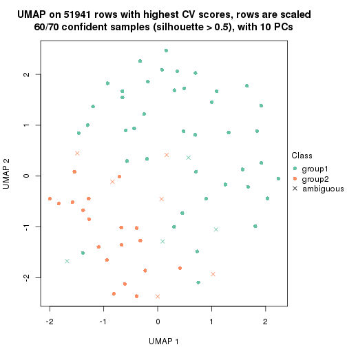
dimension_reduction(res, k = 4, method = "UMAP")
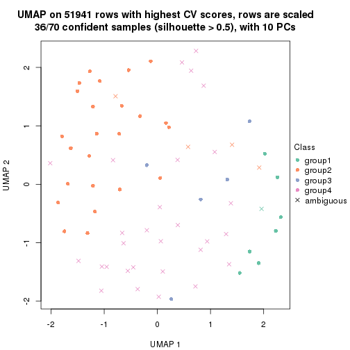
dimension_reduction(res, k = 5, method = "UMAP")
dimension_reduction(res, k = 6, method = "UMAP")
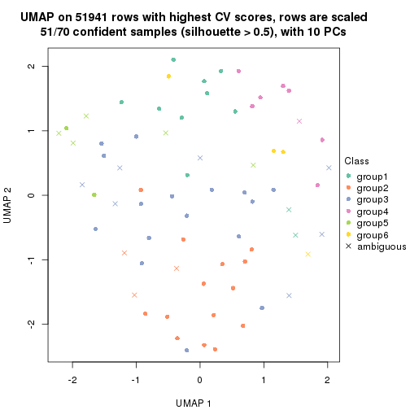
Following heatmap shows how subgroups are split when increasing k:
collect_classes(res)
Test correlation between subgroups and known annotations. If the known annotation is numeric, one-way ANOVA test is applied, and if the known annotation is discrete, chi-squared contingency table test is applied.
test_to_known_factors(res)
#> n age(p) time(p) tissue(p) individual(p) k
#> CV:mclust 64 0.08335 0.0954 1.0000 0.0969 2
#> CV:mclust 60 0.10041 0.0114 1.0000 0.0451 3
#> CV:mclust 36 0.06862 0.0207 0.0627 0.0134 4
#> CV:mclust 51 0.00667 0.1703 0.0392 0.0352 5
#> CV:mclust 51 0.02880 0.0283 0.2561 0.1261 6
If matrix rows can be associated to genes, consider to use functional_enrichment(res,
...) to perform function enrichment for the signature genes. See this vignette for more detailed explanations.
The object with results only for a single top-value method and a single partition method can be extracted as:
res = res_list["CV", "NMF"]
# you can also extract it by
# res = res_list["CV:NMF"]
A summary of res and all the functions that can be applied to it:
res
#> A 'ConsensusPartition' object with k = 2, 3, 4, 5, 6.
#> On a matrix with 51941 rows and 70 columns.
#> Top rows (1000, 2000, 3000, 4000, 5000) are extracted by 'CV' method.
#> Subgroups are detected by 'NMF' method.
#> Performed in total 1250 partitions by row resampling.
#> Best k for subgroups seems to be 2.
#>
#> Following methods can be applied to this 'ConsensusPartition' object:
#> [1] "cola_report" "collect_classes" "collect_plots"
#> [4] "collect_stats" "colnames" "compare_signatures"
#> [7] "consensus_heatmap" "dimension_reduction" "functional_enrichment"
#> [10] "get_anno_col" "get_anno" "get_classes"
#> [13] "get_consensus" "get_matrix" "get_membership"
#> [16] "get_param" "get_signatures" "get_stats"
#> [19] "is_best_k" "is_stable_k" "membership_heatmap"
#> [22] "ncol" "nrow" "plot_ecdf"
#> [25] "rownames" "select_partition_number" "show"
#> [28] "suggest_best_k" "test_to_known_factors"
collect_plots() function collects all the plots made from res for all k (number of partitions)
into one single page to provide an easy and fast comparison between different k.
collect_plots(res)
The plots are:
k and the heatmap of
predicted classes for each k.k.k.k.All the plots in panels can be made by individual functions and they are plotted later in this section.
select_partition_number() produces several plots showing different
statistics for choosing “optimized” k. There are following statistics:
k;k, the area increased is defined as \(A_k - A_{k-1}\).The detailed explanations of these statistics can be found in the cola vignette.
Generally speaking, lower PAC score, higher mean silhouette score or higher
concordance corresponds to better partition. Rand index and Jaccard index
measure how similar the current partition is compared to partition with k-1.
If they are too similar, we won't accept k is better than k-1.
select_partition_number(res)
The numeric values for all these statistics can be obtained by get_stats().
get_stats(res)
#> k 1-PAC mean_silhouette concordance area_increased Rand Jaccard
#> 2 2 0.791 0.854 0.941 0.5023 0.493 0.493
#> 3 3 0.402 0.606 0.783 0.3009 0.794 0.608
#> 4 4 0.391 0.456 0.678 0.1128 0.907 0.748
#> 5 5 0.452 0.349 0.630 0.0609 0.935 0.792
#> 6 6 0.476 0.342 0.564 0.0428 0.924 0.742
suggest_best_k() suggests the best \(k\) based on these statistics. The rules are as follows:
suggest_best_k(res)
#> [1] 2
Following shows the table of the partitions (You need to click the show/hide
code output link to see it). The membership matrix (columns with name p*)
is inferred by
clue::cl_consensus()
function with the SE method. Basically the value in the membership matrix
represents the probability to belong to a certain group. The finall class
label for an item is determined with the group with highest probability it
belongs to.
In get_classes() function, the entropy is calculated from the membership
matrix and the silhouette score is calculated from the consensus matrix.
cbind(get_classes(res, k = 2), get_membership(res, k = 2))
#> class entropy silhouette p1 p2
#> GSM701770 1 0.0000 0.9393 1.000 0.000
#> GSM701769 1 0.0000 0.9393 1.000 0.000
#> GSM701768 1 0.0672 0.9358 0.992 0.008
#> GSM701767 2 0.4161 0.8605 0.084 0.916
#> GSM701766 2 0.2236 0.9060 0.036 0.964
#> GSM701806 1 0.0000 0.9393 1.000 0.000
#> GSM701805 1 0.0000 0.9393 1.000 0.000
#> GSM701804 1 0.5294 0.8448 0.880 0.120
#> GSM701803 1 0.0000 0.9393 1.000 0.000
#> GSM701775 1 0.0000 0.9393 1.000 0.000
#> GSM701774 1 0.0938 0.9340 0.988 0.012
#> GSM701773 2 0.0000 0.9282 0.000 1.000
#> GSM701772 2 0.9552 0.3844 0.376 0.624
#> GSM701771 1 0.0000 0.9393 1.000 0.000
#> GSM701810 1 0.0000 0.9393 1.000 0.000
#> GSM701809 1 0.8144 0.6569 0.748 0.252
#> GSM701808 1 0.0000 0.9393 1.000 0.000
#> GSM701807 1 0.0000 0.9393 1.000 0.000
#> GSM701780 1 0.0000 0.9393 1.000 0.000
#> GSM701779 2 0.0000 0.9282 0.000 1.000
#> GSM701778 2 0.0000 0.9282 0.000 1.000
#> GSM701777 2 0.0000 0.9282 0.000 1.000
#> GSM701776 1 0.0000 0.9393 1.000 0.000
#> GSM701816 1 0.9944 0.1685 0.544 0.456
#> GSM701815 2 0.0000 0.9282 0.000 1.000
#> GSM701814 2 0.0000 0.9282 0.000 1.000
#> GSM701813 1 0.9209 0.4989 0.664 0.336
#> GSM701812 1 0.8861 0.5805 0.696 0.304
#> GSM701811 1 0.0000 0.9393 1.000 0.000
#> GSM701786 1 0.0000 0.9393 1.000 0.000
#> GSM701785 2 0.1633 0.9136 0.024 0.976
#> GSM701784 2 0.0000 0.9282 0.000 1.000
#> GSM701783 1 0.0000 0.9393 1.000 0.000
#> GSM701782 2 0.0000 0.9282 0.000 1.000
#> GSM701781 2 0.9988 0.0731 0.480 0.520
#> GSM701822 2 0.0000 0.9282 0.000 1.000
#> GSM701821 2 0.0000 0.9282 0.000 1.000
#> GSM701820 1 0.2043 0.9222 0.968 0.032
#> GSM701819 1 0.0376 0.9376 0.996 0.004
#> GSM701818 1 0.0000 0.9393 1.000 0.000
#> GSM701817 1 0.3733 0.8899 0.928 0.072
#> GSM701790 1 0.0000 0.9393 1.000 0.000
#> GSM701789 1 0.0000 0.9393 1.000 0.000
#> GSM701788 1 0.0000 0.9393 1.000 0.000
#> GSM701787 2 0.3431 0.8823 0.064 0.936
#> GSM701824 1 0.0000 0.9393 1.000 0.000
#> GSM701823 2 0.0000 0.9282 0.000 1.000
#> GSM701791 2 0.0000 0.9282 0.000 1.000
#> GSM701793 1 0.0000 0.9393 1.000 0.000
#> GSM701792 2 0.9993 0.0504 0.484 0.516
#> GSM701825 1 0.3274 0.9021 0.940 0.060
#> GSM701827 2 0.0000 0.9282 0.000 1.000
#> GSM701826 2 0.0000 0.9282 0.000 1.000
#> GSM701797 2 0.9754 0.3135 0.408 0.592
#> GSM701796 1 0.0000 0.9393 1.000 0.000
#> GSM701795 2 0.0000 0.9282 0.000 1.000
#> GSM701794 2 0.0000 0.9282 0.000 1.000
#> GSM701831 2 0.0000 0.9282 0.000 1.000
#> GSM701830 2 0.0000 0.9282 0.000 1.000
#> GSM701829 2 0.2236 0.9057 0.036 0.964
#> GSM701828 2 0.0000 0.9282 0.000 1.000
#> GSM701798 2 0.0000 0.9282 0.000 1.000
#> GSM701802 2 0.0000 0.9282 0.000 1.000
#> GSM701801 1 0.3114 0.9049 0.944 0.056
#> GSM701800 1 0.6973 0.7595 0.812 0.188
#> GSM701799 2 0.0000 0.9282 0.000 1.000
#> GSM701832 2 0.0000 0.9282 0.000 1.000
#> GSM701835 2 0.8207 0.6516 0.256 0.744
#> GSM701834 2 0.0000 0.9282 0.000 1.000
#> GSM701833 2 0.0000 0.9282 0.000 1.000
cbind(get_classes(res, k = 3), get_membership(res, k = 3))
#> class entropy silhouette p1 p2 p3
#> GSM701770 1 0.599 0.4431 0.632 0.000 0.368
#> GSM701769 1 0.636 0.3558 0.592 0.004 0.404
#> GSM701768 3 0.375 0.6303 0.120 0.008 0.872
#> GSM701767 2 0.656 0.7149 0.048 0.720 0.232
#> GSM701766 2 0.605 0.7080 0.020 0.720 0.260
#> GSM701806 3 0.624 0.1807 0.440 0.000 0.560
#> GSM701805 1 0.581 0.4652 0.664 0.000 0.336
#> GSM701804 1 0.331 0.6153 0.908 0.064 0.028
#> GSM701803 1 0.406 0.6423 0.876 0.032 0.092
#> GSM701775 3 0.203 0.6299 0.032 0.016 0.952
#> GSM701774 3 0.501 0.5889 0.204 0.008 0.788
#> GSM701773 2 0.240 0.8508 0.004 0.932 0.064
#> GSM701772 3 0.755 0.1054 0.048 0.372 0.580
#> GSM701771 1 0.631 0.0822 0.508 0.000 0.492
#> GSM701810 3 0.604 0.4009 0.380 0.000 0.620
#> GSM701809 1 0.927 0.1752 0.484 0.348 0.168
#> GSM701808 1 0.440 0.6071 0.812 0.000 0.188
#> GSM701807 1 0.424 0.6210 0.824 0.000 0.176
#> GSM701780 3 0.628 0.3426 0.384 0.004 0.612
#> GSM701779 2 0.145 0.8567 0.024 0.968 0.008
#> GSM701778 2 0.277 0.8499 0.072 0.920 0.008
#> GSM701777 2 0.341 0.8507 0.028 0.904 0.068
#> GSM701776 1 0.400 0.6184 0.840 0.000 0.160
#> GSM701816 2 0.930 0.2949 0.204 0.516 0.280
#> GSM701815 2 0.484 0.7252 0.224 0.776 0.000
#> GSM701814 2 0.164 0.8563 0.044 0.956 0.000
#> GSM701813 1 0.564 0.5239 0.784 0.180 0.036
#> GSM701812 1 0.886 0.3663 0.576 0.232 0.192
#> GSM701811 1 0.631 0.1460 0.504 0.000 0.496
#> GSM701786 3 0.627 0.1446 0.452 0.000 0.548
#> GSM701785 2 0.552 0.7135 0.004 0.728 0.268
#> GSM701784 2 0.643 0.5563 0.008 0.612 0.380
#> GSM701783 1 0.601 0.3626 0.628 0.000 0.372
#> GSM701782 2 0.311 0.8554 0.056 0.916 0.028
#> GSM701781 1 0.784 0.3795 0.636 0.272 0.092
#> GSM701822 2 0.236 0.8471 0.072 0.928 0.000
#> GSM701821 2 0.475 0.8003 0.172 0.816 0.012
#> GSM701820 1 0.484 0.6254 0.816 0.016 0.168
#> GSM701819 1 0.341 0.6403 0.900 0.020 0.080
#> GSM701818 1 0.236 0.6419 0.928 0.000 0.072
#> GSM701817 1 0.437 0.6327 0.868 0.056 0.076
#> GSM701790 3 0.199 0.6405 0.048 0.004 0.948
#> GSM701789 3 0.188 0.6409 0.044 0.004 0.952
#> GSM701788 3 0.624 0.1486 0.440 0.000 0.560
#> GSM701787 2 0.705 0.3590 0.020 0.524 0.456
#> GSM701824 3 0.465 0.5922 0.208 0.000 0.792
#> GSM701823 2 0.486 0.7900 0.160 0.820 0.020
#> GSM701791 2 0.149 0.8582 0.016 0.968 0.016
#> GSM701793 3 0.236 0.6404 0.072 0.000 0.928
#> GSM701792 3 0.501 0.4570 0.008 0.204 0.788
#> GSM701825 1 0.587 0.5826 0.784 0.056 0.160
#> GSM701827 2 0.134 0.8556 0.012 0.972 0.016
#> GSM701826 2 0.454 0.8388 0.056 0.860 0.084
#> GSM701797 2 0.938 0.3646 0.256 0.512 0.232
#> GSM701796 3 0.296 0.6392 0.100 0.000 0.900
#> GSM701795 2 0.101 0.8565 0.008 0.980 0.012
#> GSM701794 2 0.162 0.8564 0.012 0.964 0.024
#> GSM701831 2 0.353 0.8509 0.068 0.900 0.032
#> GSM701830 2 0.176 0.8560 0.040 0.956 0.004
#> GSM701829 2 0.572 0.8031 0.068 0.800 0.132
#> GSM701828 2 0.471 0.8342 0.056 0.852 0.092
#> GSM701798 2 0.234 0.8552 0.048 0.940 0.012
#> GSM701802 2 0.445 0.8163 0.012 0.836 0.152
#> GSM701801 3 0.708 0.3732 0.336 0.036 0.628
#> GSM701800 3 0.859 0.3921 0.220 0.176 0.604
#> GSM701799 2 0.171 0.8549 0.008 0.960 0.032
#> GSM701832 2 0.260 0.8544 0.016 0.932 0.052
#> GSM701835 2 0.749 0.6602 0.084 0.668 0.248
#> GSM701834 2 0.234 0.8576 0.048 0.940 0.012
#> GSM701833 2 0.175 0.8559 0.028 0.960 0.012
cbind(get_classes(res, k = 4), get_membership(res, k = 4))
#> class entropy silhouette p1 p2 p3 p4
#> GSM701770 4 0.717 0.31505 0.268 0.000 0.184 0.548
#> GSM701769 3 0.788 -0.03176 0.232 0.004 0.420 0.344
#> GSM701768 1 0.653 0.51893 0.692 0.028 0.140 0.140
#> GSM701767 2 0.755 0.46773 0.160 0.572 0.244 0.024
#> GSM701766 2 0.690 0.57240 0.240 0.612 0.140 0.008
#> GSM701806 1 0.745 0.26195 0.500 0.000 0.208 0.292
#> GSM701805 4 0.723 0.25453 0.192 0.000 0.268 0.540
#> GSM701804 4 0.537 0.39925 0.008 0.044 0.224 0.724
#> GSM701803 4 0.483 0.40661 0.024 0.012 0.200 0.764
#> GSM701775 1 0.235 0.58863 0.924 0.012 0.056 0.008
#> GSM701774 1 0.655 0.51954 0.692 0.036 0.100 0.172
#> GSM701773 2 0.267 0.79611 0.032 0.912 0.052 0.004
#> GSM701772 1 0.883 0.04357 0.392 0.340 0.212 0.056
#> GSM701771 4 0.710 0.24094 0.344 0.000 0.140 0.516
#> GSM701810 1 0.740 0.30990 0.516 0.000 0.264 0.220
#> GSM701809 4 0.962 0.02208 0.152 0.216 0.256 0.376
#> GSM701808 4 0.673 0.30141 0.084 0.008 0.336 0.572
#> GSM701807 4 0.423 0.47786 0.092 0.000 0.084 0.824
#> GSM701780 3 0.706 -0.12178 0.448 0.016 0.460 0.076
#> GSM701779 2 0.219 0.79672 0.012 0.936 0.032 0.020
#> GSM701778 2 0.283 0.78492 0.000 0.876 0.120 0.004
#> GSM701777 2 0.526 0.72457 0.056 0.764 0.164 0.016
#> GSM701776 4 0.322 0.47131 0.044 0.000 0.076 0.880
#> GSM701816 3 0.872 0.04813 0.184 0.376 0.384 0.056
#> GSM701815 2 0.553 0.65610 0.000 0.728 0.104 0.168
#> GSM701814 2 0.185 0.79841 0.000 0.940 0.048 0.012
#> GSM701813 3 0.688 -0.05653 0.000 0.104 0.476 0.420
#> GSM701812 3 0.694 0.28924 0.060 0.132 0.680 0.128
#> GSM701811 4 0.816 0.07122 0.336 0.008 0.288 0.368
#> GSM701786 1 0.777 0.10547 0.432 0.000 0.300 0.268
#> GSM701785 2 0.596 0.64680 0.220 0.680 0.100 0.000
#> GSM701784 2 0.633 0.52270 0.344 0.592 0.056 0.008
#> GSM701783 3 0.727 0.10785 0.164 0.000 0.504 0.332
#> GSM701782 2 0.363 0.76794 0.004 0.824 0.168 0.004
#> GSM701781 4 0.828 0.07115 0.032 0.228 0.256 0.484
#> GSM701822 2 0.270 0.79532 0.000 0.904 0.068 0.028
#> GSM701821 2 0.461 0.73531 0.004 0.768 0.204 0.024
#> GSM701820 4 0.547 0.45254 0.084 0.016 0.140 0.760
#> GSM701819 3 0.557 -0.09786 0.004 0.012 0.516 0.468
#> GSM701818 4 0.497 0.10854 0.000 0.000 0.456 0.544
#> GSM701817 3 0.687 -0.14819 0.036 0.036 0.468 0.460
#> GSM701790 1 0.237 0.59436 0.928 0.008 0.032 0.032
#> GSM701789 1 0.307 0.58834 0.888 0.004 0.084 0.024
#> GSM701788 1 0.775 0.00256 0.416 0.000 0.344 0.240
#> GSM701787 2 0.710 0.20939 0.448 0.460 0.072 0.020
#> GSM701824 1 0.599 0.50243 0.704 0.004 0.140 0.152
#> GSM701823 2 0.708 0.53737 0.032 0.612 0.092 0.264
#> GSM701791 2 0.139 0.79812 0.012 0.964 0.016 0.008
#> GSM701793 1 0.335 0.58925 0.880 0.004 0.052 0.064
#> GSM701792 1 0.544 0.45526 0.756 0.124 0.112 0.008
#> GSM701825 4 0.518 0.43117 0.056 0.032 0.124 0.788
#> GSM701827 2 0.248 0.79747 0.024 0.924 0.040 0.012
#> GSM701826 2 0.738 0.62948 0.156 0.640 0.144 0.060
#> GSM701797 3 0.750 0.29255 0.088 0.236 0.608 0.068
#> GSM701796 1 0.424 0.51112 0.784 0.000 0.196 0.020
#> GSM701795 2 0.102 0.79698 0.000 0.968 0.032 0.000
#> GSM701794 2 0.100 0.79603 0.000 0.972 0.024 0.004
#> GSM701831 2 0.387 0.74023 0.004 0.788 0.208 0.000
#> GSM701830 2 0.261 0.79447 0.000 0.900 0.088 0.012
#> GSM701829 2 0.770 0.46338 0.164 0.532 0.284 0.020
#> GSM701828 2 0.551 0.75987 0.088 0.776 0.096 0.040
#> GSM701798 2 0.220 0.79570 0.004 0.916 0.080 0.000
#> GSM701802 2 0.415 0.77148 0.100 0.828 0.072 0.000
#> GSM701801 3 0.715 0.19598 0.324 0.044 0.572 0.060
#> GSM701800 3 0.701 0.24666 0.272 0.096 0.608 0.024
#> GSM701799 2 0.191 0.80053 0.020 0.944 0.032 0.004
#> GSM701832 2 0.433 0.78080 0.056 0.820 0.120 0.004
#> GSM701835 2 0.849 0.43213 0.184 0.528 0.208 0.080
#> GSM701834 2 0.255 0.79575 0.000 0.900 0.092 0.008
#> GSM701833 2 0.240 0.79718 0.012 0.924 0.052 0.012
cbind(get_classes(res, k = 5), get_membership(res, k = 5))
#> class entropy silhouette p1 p2 p3 p4 p5
#> GSM701770 4 0.696 0.27718 0.180 0.000 0.196 0.564 0.060
#> GSM701769 3 0.690 0.05350 0.112 0.000 0.504 0.332 0.052
#> GSM701768 1 0.710 0.45527 0.596 0.012 0.116 0.092 0.184
#> GSM701767 2 0.857 -0.03293 0.140 0.444 0.192 0.032 0.192
#> GSM701766 2 0.774 0.13749 0.248 0.516 0.112 0.020 0.104
#> GSM701806 1 0.782 0.10032 0.448 0.000 0.256 0.196 0.100
#> GSM701805 4 0.782 0.17332 0.136 0.000 0.292 0.440 0.132
#> GSM701804 4 0.702 0.33641 0.012 0.032 0.120 0.504 0.332
#> GSM701803 4 0.535 0.39314 0.020 0.000 0.208 0.692 0.080
#> GSM701775 1 0.439 0.55977 0.804 0.012 0.064 0.016 0.104
#> GSM701774 1 0.716 0.45735 0.576 0.004 0.104 0.128 0.188
#> GSM701773 2 0.343 0.67581 0.060 0.860 0.028 0.000 0.052
#> GSM701772 1 0.890 0.08003 0.420 0.204 0.168 0.052 0.156
#> GSM701771 4 0.747 0.18017 0.304 0.000 0.168 0.460 0.068
#> GSM701810 1 0.782 0.28525 0.420 0.000 0.136 0.124 0.320
#> GSM701809 5 0.871 0.04102 0.068 0.156 0.092 0.252 0.432
#> GSM701808 4 0.736 0.29820 0.052 0.004 0.144 0.440 0.360
#> GSM701807 4 0.498 0.47116 0.052 0.000 0.072 0.760 0.116
#> GSM701780 3 0.729 0.17919 0.308 0.004 0.492 0.060 0.136
#> GSM701779 2 0.237 0.68567 0.004 0.908 0.016 0.004 0.068
#> GSM701778 2 0.305 0.67557 0.000 0.868 0.084 0.004 0.044
#> GSM701777 2 0.701 0.43122 0.084 0.616 0.172 0.020 0.108
#> GSM701776 4 0.420 0.47692 0.048 0.000 0.076 0.816 0.060
#> GSM701816 3 0.889 -0.17599 0.136 0.288 0.384 0.056 0.136
#> GSM701815 2 0.562 0.50789 0.004 0.708 0.036 0.104 0.148
#> GSM701814 2 0.184 0.69153 0.004 0.936 0.012 0.004 0.044
#> GSM701813 3 0.773 0.00675 0.000 0.116 0.432 0.320 0.132
#> GSM701812 3 0.709 0.17191 0.016 0.108 0.544 0.048 0.284
#> GSM701811 3 0.810 -0.02146 0.260 0.000 0.344 0.300 0.096
#> GSM701786 3 0.739 0.17372 0.340 0.000 0.432 0.176 0.052
#> GSM701785 2 0.626 0.40335 0.208 0.636 0.060 0.000 0.096
#> GSM701784 2 0.700 -0.08892 0.372 0.436 0.028 0.000 0.164
#> GSM701783 3 0.573 0.24309 0.068 0.000 0.668 0.220 0.044
#> GSM701782 2 0.455 0.61636 0.000 0.772 0.116 0.012 0.100
#> GSM701781 4 0.813 0.14057 0.016 0.152 0.276 0.448 0.108
#> GSM701822 2 0.257 0.68235 0.000 0.888 0.004 0.016 0.092
#> GSM701821 2 0.537 0.51350 0.000 0.708 0.072 0.036 0.184
#> GSM701820 4 0.690 0.36056 0.072 0.008 0.060 0.504 0.356
#> GSM701819 3 0.731 -0.05752 0.016 0.020 0.420 0.376 0.168
#> GSM701818 4 0.684 0.09120 0.012 0.000 0.396 0.404 0.188
#> GSM701817 3 0.784 -0.09735 0.012 0.040 0.372 0.328 0.248
#> GSM701790 1 0.297 0.54629 0.884 0.000 0.060 0.024 0.032
#> GSM701789 1 0.329 0.52814 0.856 0.004 0.104 0.028 0.008
#> GSM701788 3 0.644 0.21207 0.348 0.000 0.520 0.108 0.024
#> GSM701787 1 0.709 -0.10430 0.484 0.336 0.016 0.020 0.144
#> GSM701824 1 0.666 0.41815 0.556 0.000 0.076 0.072 0.296
#> GSM701823 2 0.707 0.17537 0.016 0.536 0.020 0.208 0.220
#> GSM701791 2 0.205 0.69069 0.020 0.928 0.012 0.000 0.040
#> GSM701793 1 0.300 0.54660 0.884 0.000 0.048 0.040 0.028
#> GSM701792 1 0.613 0.46596 0.672 0.088 0.100 0.000 0.140
#> GSM701825 4 0.538 0.43875 0.052 0.012 0.012 0.680 0.244
#> GSM701827 2 0.218 0.68791 0.008 0.912 0.008 0.000 0.072
#> GSM701826 2 0.733 -0.21157 0.124 0.472 0.024 0.032 0.348
#> GSM701797 3 0.595 0.32642 0.032 0.144 0.708 0.040 0.076
#> GSM701796 1 0.532 0.32133 0.636 0.000 0.304 0.020 0.040
#> GSM701795 2 0.120 0.69134 0.000 0.960 0.028 0.000 0.012
#> GSM701794 2 0.199 0.69274 0.000 0.928 0.016 0.008 0.048
#> GSM701831 2 0.477 0.54330 0.004 0.716 0.216 0.000 0.064
#> GSM701830 2 0.210 0.68638 0.000 0.916 0.024 0.000 0.060
#> GSM701829 5 0.779 0.17290 0.128 0.376 0.120 0.000 0.376
#> GSM701828 2 0.629 0.45947 0.096 0.648 0.040 0.012 0.204
#> GSM701798 2 0.253 0.68956 0.000 0.900 0.056 0.004 0.040
#> GSM701802 2 0.465 0.62681 0.104 0.788 0.036 0.004 0.068
#> GSM701801 3 0.568 0.36977 0.240 0.040 0.672 0.016 0.032
#> GSM701800 3 0.679 0.32714 0.160 0.084 0.624 0.008 0.124
#> GSM701799 2 0.096 0.69170 0.004 0.972 0.008 0.000 0.016
#> GSM701832 2 0.445 0.61233 0.028 0.784 0.052 0.000 0.136
#> GSM701835 2 0.886 -0.10822 0.152 0.436 0.208 0.064 0.140
#> GSM701834 2 0.249 0.68196 0.000 0.896 0.020 0.004 0.080
#> GSM701833 2 0.228 0.68513 0.004 0.908 0.004 0.008 0.076
cbind(get_classes(res, k = 6), get_membership(res, k = 6))
#> class entropy silhouette p1 p2 p3 p4 p5 p6
#> GSM701770 1 0.6860 0.29824 0.556 0.000 0.048 0.136 0.204 NA
#> GSM701769 5 0.7981 0.01386 0.284 0.004 0.048 0.124 0.396 NA
#> GSM701768 4 0.7696 0.34390 0.088 0.008 0.168 0.460 0.040 NA
#> GSM701767 5 0.8853 0.05182 0.028 0.244 0.052 0.152 0.264 NA
#> GSM701766 2 0.8147 0.03326 0.012 0.360 0.084 0.208 0.048 NA
#> GSM701806 4 0.7735 0.12730 0.152 0.000 0.120 0.436 0.248 NA
#> GSM701805 1 0.8063 0.09816 0.336 0.000 0.064 0.152 0.332 NA
#> GSM701804 1 0.7973 0.21324 0.332 0.024 0.228 0.004 0.120 NA
#> GSM701803 1 0.6005 0.35499 0.652 0.016 0.040 0.016 0.176 NA
#> GSM701775 4 0.4063 0.51668 0.000 0.004 0.112 0.792 0.064 NA
#> GSM701774 4 0.7630 0.36872 0.080 0.020 0.164 0.520 0.052 NA
#> GSM701773 2 0.3260 0.69114 0.004 0.836 0.012 0.020 0.004 NA
#> GSM701772 4 0.8996 0.15034 0.048 0.156 0.160 0.336 0.064 NA
#> GSM701771 1 0.7395 0.18680 0.400 0.000 0.032 0.352 0.108 NA
#> GSM701810 3 0.7140 -0.02506 0.068 0.000 0.464 0.284 0.160 NA
#> GSM701809 3 0.7780 0.24046 0.180 0.100 0.532 0.068 0.052 NA
#> GSM701808 3 0.6795 -0.00121 0.320 0.000 0.492 0.060 0.096 NA
#> GSM701807 1 0.4676 0.40942 0.772 0.000 0.092 0.044 0.056 NA
#> GSM701780 5 0.6993 0.25701 0.040 0.004 0.104 0.224 0.548 NA
#> GSM701779 2 0.2800 0.68719 0.008 0.860 0.016 0.004 0.000 NA
#> GSM701778 2 0.3601 0.67442 0.004 0.792 0.008 0.000 0.028 NA
#> GSM701777 2 0.6862 0.38948 0.016 0.504 0.016 0.052 0.104 NA
#> GSM701776 1 0.3748 0.40602 0.828 0.000 0.064 0.020 0.068 NA
#> GSM701816 2 0.9253 -0.30369 0.056 0.272 0.212 0.092 0.256 NA
#> GSM701815 2 0.5859 0.53530 0.084 0.660 0.056 0.004 0.020 NA
#> GSM701814 2 0.2101 0.69571 0.000 0.912 0.028 0.000 0.008 NA
#> GSM701813 5 0.7828 0.13754 0.260 0.092 0.060 0.000 0.420 NA
#> GSM701812 5 0.7579 0.11554 0.024 0.108 0.344 0.004 0.384 NA
#> GSM701811 1 0.8364 0.07376 0.264 0.008 0.024 0.248 0.212 NA
#> GSM701786 5 0.7774 0.10456 0.164 0.000 0.060 0.292 0.404 NA
#> GSM701785 2 0.6633 0.44831 0.000 0.584 0.112 0.164 0.020 NA
#> GSM701784 2 0.7310 -0.02771 0.000 0.392 0.172 0.312 0.004 NA
#> GSM701783 5 0.5987 0.27619 0.128 0.000 0.092 0.084 0.664 NA
#> GSM701782 2 0.5700 0.57962 0.012 0.660 0.060 0.000 0.092 NA
#> GSM701781 1 0.8040 0.05329 0.392 0.148 0.020 0.012 0.224 NA
#> GSM701822 2 0.2910 0.69035 0.020 0.868 0.044 0.000 0.000 NA
#> GSM701821 2 0.5914 0.56471 0.040 0.660 0.148 0.000 0.040 NA
#> GSM701820 1 0.6957 0.20488 0.488 0.020 0.316 0.024 0.032 NA
#> GSM701819 5 0.7567 0.13423 0.256 0.004 0.236 0.004 0.380 NA
#> GSM701818 5 0.6955 0.05963 0.284 0.000 0.300 0.004 0.368 NA
#> GSM701817 5 0.8187 0.11506 0.232 0.048 0.304 0.012 0.324 NA
#> GSM701790 4 0.2870 0.53290 0.016 0.000 0.028 0.884 0.032 NA
#> GSM701789 4 0.3701 0.51370 0.012 0.004 0.024 0.832 0.044 NA
#> GSM701788 5 0.6038 0.21588 0.084 0.000 0.028 0.300 0.564 NA
#> GSM701787 4 0.7532 0.06655 0.020 0.260 0.112 0.444 0.004 NA
#> GSM701824 4 0.6472 0.15511 0.056 0.000 0.380 0.464 0.084 NA
#> GSM701823 2 0.7110 0.21952 0.152 0.476 0.116 0.008 0.000 NA
#> GSM701791 2 0.2923 0.69606 0.004 0.856 0.024 0.008 0.000 NA
#> GSM701793 4 0.2539 0.53634 0.012 0.000 0.040 0.900 0.020 NA
#> GSM701792 4 0.6321 0.39667 0.000 0.088 0.172 0.620 0.028 NA
#> GSM701825 1 0.6658 0.27962 0.560 0.012 0.180 0.052 0.008 NA
#> GSM701827 2 0.2663 0.68752 0.008 0.884 0.052 0.004 0.000 NA
#> GSM701826 3 0.7374 0.15140 0.040 0.360 0.424 0.096 0.012 NA
#> GSM701797 5 0.7934 0.27997 0.072 0.144 0.088 0.032 0.512 NA
#> GSM701796 4 0.5438 0.22213 0.004 0.000 0.052 0.568 0.344 NA
#> GSM701795 2 0.2001 0.69646 0.000 0.900 0.004 0.000 0.004 NA
#> GSM701794 2 0.2056 0.69822 0.000 0.904 0.012 0.004 0.000 NA
#> GSM701831 2 0.4740 0.63065 0.000 0.732 0.040 0.000 0.096 NA
#> GSM701830 2 0.3023 0.68928 0.000 0.864 0.036 0.000 0.036 NA
#> GSM701829 3 0.8081 0.28827 0.024 0.280 0.432 0.104 0.084 NA
#> GSM701828 2 0.6742 0.46956 0.012 0.608 0.092 0.076 0.044 NA
#> GSM701798 2 0.2798 0.69209 0.000 0.860 0.012 0.000 0.020 NA
#> GSM701802 2 0.5345 0.62437 0.008 0.716 0.024 0.108 0.028 NA
#> GSM701801 5 0.7260 0.32883 0.032 0.056 0.056 0.148 0.576 NA
#> GSM701800 5 0.7735 0.31231 0.028 0.104 0.116 0.116 0.544 NA
#> GSM701799 2 0.0972 0.69498 0.000 0.964 0.008 0.000 0.000 NA
#> GSM701832 2 0.5170 0.61870 0.000 0.724 0.124 0.028 0.036 NA
#> GSM701835 2 0.9369 -0.06824 0.068 0.332 0.168 0.108 0.164 NA
#> GSM701834 2 0.3324 0.67782 0.004 0.848 0.068 0.000 0.024 NA
#> GSM701833 2 0.3113 0.68169 0.012 0.856 0.052 0.004 0.000 NA
Heatmaps for the consensus matrix. It visualizes the probability of two samples to be in a same group.
consensus_heatmap(res, k = 2)
consensus_heatmap(res, k = 3)
consensus_heatmap(res, k = 4)
consensus_heatmap(res, k = 5)

consensus_heatmap(res, k = 6)
Heatmaps for the membership of samples in all partitions to see how consistent they are:
membership_heatmap(res, k = 2)
membership_heatmap(res, k = 3)
membership_heatmap(res, k = 4)
membership_heatmap(res, k = 5)

membership_heatmap(res, k = 6)
As soon as we have had the classes for columns, we can look for signatures which are significantly different between classes which can be candidate marks for certain classes. Following are the heatmaps for signatures.
Signature heatmaps where rows are scaled:
get_signatures(res, k = 2)
get_signatures(res, k = 3)
get_signatures(res, k = 4)
get_signatures(res, k = 5)
get_signatures(res, k = 6)

Signature heatmaps where rows are not scaled:
get_signatures(res, k = 2, scale_rows = FALSE)
get_signatures(res, k = 3, scale_rows = FALSE)
get_signatures(res, k = 4, scale_rows = FALSE)
get_signatures(res, k = 5, scale_rows = FALSE)
get_signatures(res, k = 6, scale_rows = FALSE)

Compare the overlap of signatures from different k:
compare_signatures(res)
get_signature() returns a data frame invisibly. TO get the list of signatures, the function
call should be assigned to a variable explicitly. In following code, if plot argument is set
to FALSE, no heatmap is plotted while only the differential analysis is performed.
# code only for demonstration
tb = get_signature(res, k = ..., plot = FALSE)
An example of the output of tb is:
#> which_row fdr mean_1 mean_2 scaled_mean_1 scaled_mean_2 km
#> 1 38 0.042760348 8.373488 9.131774 -0.5533452 0.5164555 1
#> 2 40 0.018707592 7.106213 8.469186 -0.6173731 0.5762149 1
#> 3 55 0.019134737 10.221463 11.207825 -0.6159697 0.5749050 1
#> 4 59 0.006059896 5.921854 7.869574 -0.6899429 0.6439467 1
#> 5 60 0.018055526 8.928898 10.211722 -0.6204761 0.5791110 1
#> 6 98 0.009384629 15.714769 14.887706 0.6635654 -0.6193277 2
...
The columns in tb are:
which_row: row indices corresponding to the input matrix.fdr: FDR for the differential test. mean_x: The mean value in group x.scaled_mean_x: The mean value in group x after rows are scaled.km: Row groups if k-means clustering is applied to rows.UMAP plot which shows how samples are separated.
dimension_reduction(res, k = 2, method = "UMAP")
dimension_reduction(res, k = 3, method = "UMAP")
dimension_reduction(res, k = 4, method = "UMAP")
dimension_reduction(res, k = 5, method = "UMAP")
dimension_reduction(res, k = 6, method = "UMAP")
Following heatmap shows how subgroups are split when increasing k:
collect_classes(res)
Test correlation between subgroups and known annotations. If the known annotation is numeric, one-way ANOVA test is applied, and if the known annotation is discrete, chi-squared contingency table test is applied.
test_to_known_factors(res)
#> n age(p) time(p) tissue(p) individual(p) k
#> CV:NMF 64 0.0251 0.04233 1.00000 0.0151 2
#> CV:NMF 49 0.0162 0.04951 0.00285 0.0051 3
#> CV:NMF 35 1.0000 0.00569 0.16246 0.1378 4
#> CV:NMF 24 1.0000 0.00153 0.19492 0.3014 5
#> CV:NMF 24 1.0000 0.00153 0.19492 0.3014 6
If matrix rows can be associated to genes, consider to use functional_enrichment(res,
...) to perform function enrichment for the signature genes. See this vignette for more detailed explanations.
The object with results only for a single top-value method and a single partition method can be extracted as:
res = res_list["MAD", "hclust"]
# you can also extract it by
# res = res_list["MAD:hclust"]
A summary of res and all the functions that can be applied to it:
res
#> A 'ConsensusPartition' object with k = 2, 3, 4, 5, 6.
#> On a matrix with 51941 rows and 70 columns.
#> Top rows (1000, 2000, 3000, 4000, 5000) are extracted by 'MAD' method.
#> Subgroups are detected by 'hclust' method.
#> Performed in total 1250 partitions by row resampling.
#> Best k for subgroups seems to be 2.
#>
#> Following methods can be applied to this 'ConsensusPartition' object:
#> [1] "cola_report" "collect_classes" "collect_plots"
#> [4] "collect_stats" "colnames" "compare_signatures"
#> [7] "consensus_heatmap" "dimension_reduction" "functional_enrichment"
#> [10] "get_anno_col" "get_anno" "get_classes"
#> [13] "get_consensus" "get_matrix" "get_membership"
#> [16] "get_param" "get_signatures" "get_stats"
#> [19] "is_best_k" "is_stable_k" "membership_heatmap"
#> [22] "ncol" "nrow" "plot_ecdf"
#> [25] "rownames" "select_partition_number" "show"
#> [28] "suggest_best_k" "test_to_known_factors"
collect_plots() function collects all the plots made from res for all k (number of partitions)
into one single page to provide an easy and fast comparison between different k.
collect_plots(res)
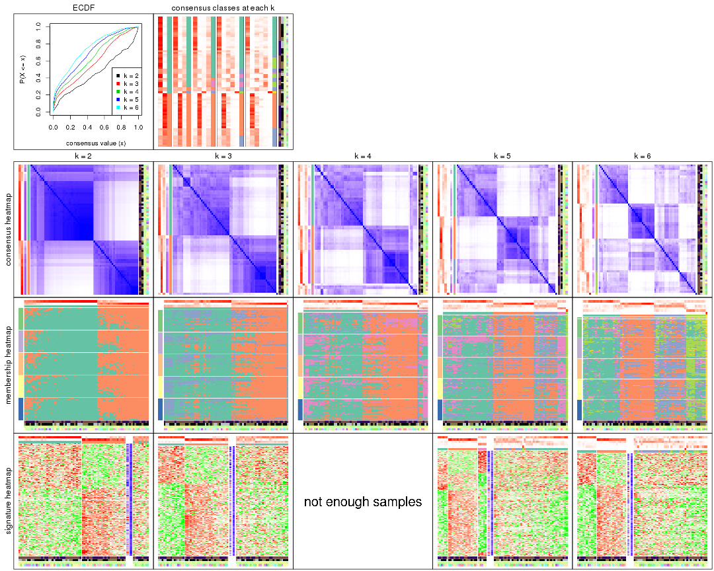
The plots are:
k and the heatmap of
predicted classes for each k.k.k.k.All the plots in panels can be made by individual functions and they are plotted later in this section.
select_partition_number() produces several plots showing different
statistics for choosing “optimized” k. There are following statistics:
k;k, the area increased is defined as \(A_k - A_{k-1}\).The detailed explanations of these statistics can be found in the cola vignette.
Generally speaking, lower PAC score, higher mean silhouette score or higher
concordance corresponds to better partition. Rand index and Jaccard index
measure how similar the current partition is compared to partition with k-1.
If they are too similar, we won't accept k is better than k-1.
select_partition_number(res)
The numeric values for all these statistics can be obtained by get_stats().
get_stats(res)
#> k 1-PAC mean_silhouette concordance area_increased Rand Jaccard
#> 2 2 0.426 0.757 0.880 0.4633 0.508 0.508
#> 3 3 0.276 0.480 0.745 0.2872 0.928 0.864
#> 4 4 0.312 0.423 0.689 0.0954 0.904 0.806
#> 5 5 0.359 0.433 0.637 0.0858 0.839 0.632
#> 6 6 0.404 0.372 0.627 0.0641 0.861 0.588
suggest_best_k() suggests the best \(k\) based on these statistics. The rules are as follows:
suggest_best_k(res)
#> [1] 2
Following shows the table of the partitions (You need to click the show/hide
code output link to see it). The membership matrix (columns with name p*)
is inferred by
clue::cl_consensus()
function with the SE method. Basically the value in the membership matrix
represents the probability to belong to a certain group. The finall class
label for an item is determined with the group with highest probability it
belongs to.
In get_classes() function, the entropy is calculated from the membership
matrix and the silhouette score is calculated from the consensus matrix.
cbind(get_classes(res, k = 2), get_membership(res, k = 2))
#> class entropy silhouette p1 p2
#> GSM701770 1 0.0376 0.8858 0.996 0.004
#> GSM701769 1 0.1414 0.8874 0.980 0.020
#> GSM701768 1 0.2423 0.8837 0.960 0.040
#> GSM701767 1 0.8608 0.5917 0.716 0.284
#> GSM701766 2 0.9909 0.3640 0.444 0.556
#> GSM701806 1 0.0000 0.8847 1.000 0.000
#> GSM701805 1 0.0000 0.8847 1.000 0.000
#> GSM701804 1 0.2603 0.8805 0.956 0.044
#> GSM701803 1 0.0672 0.8868 0.992 0.008
#> GSM701775 1 0.2603 0.8811 0.956 0.044
#> GSM701774 1 0.4022 0.8582 0.920 0.080
#> GSM701773 2 0.0672 0.8145 0.008 0.992
#> GSM701772 2 0.9922 0.3503 0.448 0.552
#> GSM701771 1 0.0000 0.8847 1.000 0.000
#> GSM701810 1 0.0938 0.8874 0.988 0.012
#> GSM701809 1 0.5178 0.8311 0.884 0.116
#> GSM701808 1 0.0938 0.8869 0.988 0.012
#> GSM701807 1 0.0000 0.8847 1.000 0.000
#> GSM701780 1 0.3114 0.8762 0.944 0.056
#> GSM701779 2 0.0000 0.8096 0.000 1.000
#> GSM701778 2 0.5059 0.8145 0.112 0.888
#> GSM701777 2 0.9491 0.5543 0.368 0.632
#> GSM701776 1 0.0000 0.8847 1.000 0.000
#> GSM701816 1 0.4690 0.8441 0.900 0.100
#> GSM701815 2 0.7139 0.7592 0.196 0.804
#> GSM701814 2 0.2948 0.8280 0.052 0.948
#> GSM701813 1 0.7219 0.7304 0.800 0.200
#> GSM701812 1 0.3114 0.8751 0.944 0.056
#> GSM701811 1 0.2423 0.8828 0.960 0.040
#> GSM701786 1 0.0000 0.8847 1.000 0.000
#> GSM701785 2 0.7056 0.7682 0.192 0.808
#> GSM701784 2 0.8267 0.7100 0.260 0.740
#> GSM701783 1 0.0000 0.8847 1.000 0.000
#> GSM701782 2 0.9491 0.5489 0.368 0.632
#> GSM701781 1 0.9661 0.2923 0.608 0.392
#> GSM701822 2 0.1843 0.8231 0.028 0.972
#> GSM701821 2 0.7815 0.7380 0.232 0.768
#> GSM701820 1 0.4815 0.8420 0.896 0.104
#> GSM701819 1 0.0376 0.8858 0.996 0.004
#> GSM701818 1 0.0000 0.8847 1.000 0.000
#> GSM701817 1 0.2423 0.8826 0.960 0.040
#> GSM701790 1 0.1184 0.8877 0.984 0.016
#> GSM701789 1 0.1184 0.8877 0.984 0.016
#> GSM701788 1 0.0000 0.8847 1.000 0.000
#> GSM701787 2 0.9661 0.4900 0.392 0.608
#> GSM701824 1 0.2043 0.8851 0.968 0.032
#> GSM701823 2 0.3114 0.8215 0.056 0.944
#> GSM701791 2 0.1633 0.8217 0.024 0.976
#> GSM701793 1 0.0376 0.8860 0.996 0.004
#> GSM701792 1 0.8555 0.5690 0.720 0.280
#> GSM701825 1 0.1184 0.8873 0.984 0.016
#> GSM701827 2 0.0000 0.8096 0.000 1.000
#> GSM701826 1 0.9909 0.0803 0.556 0.444
#> GSM701797 1 0.9552 0.3376 0.624 0.376
#> GSM701796 1 0.1184 0.8871 0.984 0.016
#> GSM701795 2 0.3274 0.8283 0.060 0.940
#> GSM701794 2 0.0000 0.8096 0.000 1.000
#> GSM701831 2 0.3274 0.8280 0.060 0.940
#> GSM701830 2 0.2423 0.8257 0.040 0.960
#> GSM701829 1 0.9608 0.3115 0.616 0.384
#> GSM701828 2 0.5178 0.8136 0.116 0.884
#> GSM701798 2 0.3584 0.8267 0.068 0.932
#> GSM701802 2 0.9129 0.6200 0.328 0.672
#> GSM701801 1 0.6712 0.7564 0.824 0.176
#> GSM701800 1 0.9393 0.3895 0.644 0.356
#> GSM701799 2 0.1414 0.8197 0.020 0.980
#> GSM701832 2 0.7950 0.7314 0.240 0.760
#> GSM701835 2 0.9988 0.2348 0.480 0.520
#> GSM701834 2 0.2948 0.8282 0.052 0.948
#> GSM701833 2 0.0000 0.8096 0.000 1.000
cbind(get_classes(res, k = 3), get_membership(res, k = 3))
#> class entropy silhouette p1 p2 p3
#> GSM701770 1 0.3192 0.5252 0.888 0.000 0.112
#> GSM701769 1 0.4277 0.5260 0.852 0.016 0.132
#> GSM701768 1 0.4483 0.5373 0.848 0.024 0.128
#> GSM701767 1 0.9301 0.0957 0.520 0.268 0.212
#> GSM701766 2 0.9324 0.4441 0.272 0.516 0.212
#> GSM701806 1 0.2537 0.5198 0.920 0.000 0.080
#> GSM701805 1 0.5882 0.1797 0.652 0.000 0.348
#> GSM701804 3 0.6497 0.0000 0.336 0.016 0.648
#> GSM701803 1 0.6373 0.0299 0.588 0.004 0.408
#> GSM701775 1 0.3832 0.5374 0.888 0.036 0.076
#> GSM701774 1 0.6388 0.4754 0.752 0.064 0.184
#> GSM701773 2 0.1289 0.7691 0.000 0.968 0.032
#> GSM701772 2 0.9264 0.4318 0.292 0.516 0.192
#> GSM701771 1 0.2711 0.5183 0.912 0.000 0.088
#> GSM701810 1 0.4409 0.5305 0.824 0.004 0.172
#> GSM701809 1 0.7925 0.3186 0.584 0.072 0.344
#> GSM701808 1 0.5754 0.4366 0.700 0.004 0.296
#> GSM701807 1 0.6180 -0.0164 0.584 0.000 0.416
#> GSM701780 1 0.6506 0.4129 0.720 0.044 0.236
#> GSM701779 2 0.0892 0.7612 0.000 0.980 0.020
#> GSM701778 2 0.4007 0.7704 0.036 0.880 0.084
#> GSM701777 2 0.8485 0.5805 0.224 0.612 0.164
#> GSM701776 1 0.5988 0.1501 0.632 0.000 0.368
#> GSM701816 1 0.7798 0.3700 0.624 0.080 0.296
#> GSM701815 2 0.5315 0.7082 0.012 0.772 0.216
#> GSM701814 2 0.2096 0.7765 0.004 0.944 0.052
#> GSM701813 1 0.9256 0.1325 0.488 0.168 0.344
#> GSM701812 1 0.6998 0.4202 0.664 0.044 0.292
#> GSM701811 1 0.6337 0.4214 0.708 0.028 0.264
#> GSM701786 1 0.2711 0.5407 0.912 0.000 0.088
#> GSM701785 2 0.6393 0.7261 0.112 0.768 0.120
#> GSM701784 2 0.7396 0.6775 0.152 0.704 0.144
#> GSM701783 1 0.3267 0.5337 0.884 0.000 0.116
#> GSM701782 2 0.8557 0.5857 0.212 0.608 0.180
#> GSM701781 2 0.9884 -0.0607 0.364 0.376 0.260
#> GSM701822 2 0.1411 0.7740 0.000 0.964 0.036
#> GSM701821 2 0.6737 0.7157 0.100 0.744 0.156
#> GSM701820 1 0.7961 0.2905 0.588 0.076 0.336
#> GSM701819 1 0.6033 0.4149 0.660 0.004 0.336
#> GSM701818 1 0.5656 0.4204 0.712 0.004 0.284
#> GSM701817 1 0.6800 0.4229 0.660 0.032 0.308
#> GSM701790 1 0.2584 0.5406 0.928 0.008 0.064
#> GSM701789 1 0.2280 0.5393 0.940 0.008 0.052
#> GSM701788 1 0.2261 0.5345 0.932 0.000 0.068
#> GSM701787 2 0.8896 0.4934 0.264 0.564 0.172
#> GSM701824 1 0.4915 0.5220 0.804 0.012 0.184
#> GSM701823 2 0.3695 0.7563 0.012 0.880 0.108
#> GSM701791 2 0.1411 0.7700 0.000 0.964 0.036
#> GSM701793 1 0.1525 0.5308 0.964 0.004 0.032
#> GSM701792 1 0.8405 0.1891 0.604 0.264 0.132
#> GSM701825 1 0.6500 -0.1518 0.532 0.004 0.464
#> GSM701827 2 0.0747 0.7629 0.000 0.984 0.016
#> GSM701826 2 0.9840 0.0649 0.336 0.408 0.256
#> GSM701797 1 0.9773 0.0800 0.420 0.340 0.240
#> GSM701796 1 0.4326 0.5205 0.844 0.012 0.144
#> GSM701795 2 0.2703 0.7792 0.016 0.928 0.056
#> GSM701794 2 0.0892 0.7612 0.000 0.980 0.020
#> GSM701831 2 0.2636 0.7796 0.020 0.932 0.048
#> GSM701830 2 0.1647 0.7748 0.004 0.960 0.036
#> GSM701829 1 0.9783 0.0259 0.404 0.360 0.236
#> GSM701828 2 0.4316 0.7664 0.044 0.868 0.088
#> GSM701798 2 0.2998 0.7774 0.016 0.916 0.068
#> GSM701802 2 0.8339 0.6138 0.204 0.628 0.168
#> GSM701801 1 0.8459 0.3105 0.612 0.156 0.232
#> GSM701800 1 0.9702 0.1013 0.440 0.328 0.232
#> GSM701799 2 0.1267 0.7701 0.004 0.972 0.024
#> GSM701832 2 0.6968 0.7065 0.120 0.732 0.148
#> GSM701835 2 0.9440 0.3515 0.308 0.488 0.204
#> GSM701834 2 0.2301 0.7786 0.004 0.936 0.060
#> GSM701833 2 0.0747 0.7629 0.000 0.984 0.016
cbind(get_classes(res, k = 4), get_membership(res, k = 4))
#> class entropy silhouette p1 p2 p3 p4
#> GSM701770 1 0.381 0.45268 0.812 0.000 0.012 0.176
#> GSM701769 1 0.421 0.48437 0.804 0.008 0.016 0.172
#> GSM701768 1 0.490 0.47662 0.776 0.016 0.032 0.176
#> GSM701767 1 0.889 0.08911 0.440 0.228 0.068 0.264
#> GSM701766 2 0.853 0.42898 0.220 0.492 0.056 0.232
#> GSM701806 1 0.271 0.46141 0.900 0.000 0.020 0.080
#> GSM701805 1 0.667 -0.27812 0.504 0.000 0.088 0.408
#> GSM701804 3 0.449 0.00000 0.076 0.008 0.820 0.096
#> GSM701803 4 0.702 0.28016 0.400 0.000 0.120 0.480
#> GSM701775 1 0.398 0.49242 0.852 0.024 0.028 0.096
#> GSM701774 1 0.642 0.42007 0.684 0.048 0.052 0.216
#> GSM701773 2 0.183 0.74042 0.000 0.944 0.024 0.032
#> GSM701772 2 0.826 0.39764 0.244 0.476 0.028 0.252
#> GSM701771 1 0.327 0.44948 0.856 0.000 0.012 0.132
#> GSM701810 1 0.478 0.45051 0.756 0.004 0.028 0.212
#> GSM701809 1 0.749 0.19534 0.492 0.052 0.060 0.396
#> GSM701808 1 0.614 0.23368 0.580 0.004 0.048 0.368
#> GSM701807 4 0.705 0.29737 0.396 0.000 0.124 0.480
#> GSM701780 1 0.602 0.39902 0.660 0.016 0.044 0.280
#> GSM701779 2 0.177 0.72041 0.000 0.944 0.044 0.012
#> GSM701778 2 0.423 0.74749 0.024 0.840 0.036 0.100
#> GSM701777 2 0.779 0.55597 0.164 0.572 0.040 0.224
#> GSM701776 1 0.675 -0.34750 0.460 0.000 0.092 0.448
#> GSM701816 1 0.756 0.24555 0.532 0.064 0.060 0.344
#> GSM701815 2 0.608 0.62714 0.000 0.684 0.168 0.148
#> GSM701814 2 0.247 0.74928 0.000 0.916 0.028 0.056
#> GSM701813 4 0.862 -0.11716 0.384 0.120 0.084 0.412
#> GSM701812 1 0.693 0.27749 0.552 0.036 0.048 0.364
#> GSM701811 1 0.651 0.23024 0.584 0.012 0.060 0.344
#> GSM701786 1 0.310 0.49456 0.876 0.000 0.020 0.104
#> GSM701785 2 0.554 0.70134 0.096 0.752 0.012 0.140
#> GSM701784 2 0.672 0.65535 0.108 0.672 0.032 0.188
#> GSM701783 1 0.365 0.46907 0.832 0.000 0.016 0.152
#> GSM701782 2 0.793 0.54439 0.168 0.560 0.044 0.228
#> GSM701781 4 0.881 -0.02821 0.300 0.324 0.040 0.336
#> GSM701822 2 0.228 0.74910 0.000 0.924 0.024 0.052
#> GSM701821 2 0.624 0.68364 0.064 0.696 0.032 0.208
#> GSM701820 1 0.750 0.15059 0.484 0.052 0.060 0.404
#> GSM701819 1 0.641 0.17178 0.520 0.000 0.068 0.412
#> GSM701818 1 0.622 0.17746 0.588 0.000 0.068 0.344
#> GSM701817 1 0.682 0.20440 0.536 0.024 0.052 0.388
#> GSM701790 1 0.267 0.49746 0.908 0.004 0.020 0.068
#> GSM701789 1 0.201 0.49980 0.940 0.012 0.008 0.040
#> GSM701788 1 0.271 0.48894 0.900 0.000 0.020 0.080
#> GSM701787 2 0.798 0.47522 0.208 0.536 0.032 0.224
#> GSM701824 1 0.499 0.43603 0.712 0.000 0.028 0.260
#> GSM701823 2 0.422 0.70363 0.004 0.828 0.112 0.056
#> GSM701791 2 0.222 0.73710 0.000 0.928 0.040 0.032
#> GSM701793 1 0.136 0.48952 0.964 0.004 0.012 0.020
#> GSM701792 1 0.791 0.15484 0.544 0.232 0.032 0.192
#> GSM701825 4 0.669 0.32036 0.352 0.000 0.100 0.548
#> GSM701827 2 0.149 0.72701 0.000 0.956 0.032 0.012
#> GSM701826 2 0.878 0.02849 0.248 0.376 0.044 0.332
#> GSM701797 1 0.885 -0.00141 0.352 0.280 0.044 0.324
#> GSM701796 1 0.429 0.48578 0.808 0.004 0.032 0.156
#> GSM701795 2 0.274 0.75361 0.008 0.912 0.036 0.044
#> GSM701794 2 0.158 0.72496 0.000 0.952 0.036 0.012
#> GSM701831 2 0.278 0.75498 0.016 0.912 0.024 0.048
#> GSM701830 2 0.194 0.74684 0.000 0.940 0.028 0.032
#> GSM701829 2 0.876 -0.12099 0.320 0.324 0.036 0.320
#> GSM701828 2 0.423 0.74417 0.032 0.840 0.028 0.100
#> GSM701798 2 0.301 0.75390 0.012 0.900 0.028 0.060
#> GSM701802 2 0.787 0.57875 0.168 0.580 0.052 0.200
#> GSM701801 1 0.756 0.26868 0.556 0.108 0.036 0.300
#> GSM701800 1 0.878 -0.00379 0.364 0.280 0.040 0.316
#> GSM701799 2 0.191 0.73787 0.000 0.940 0.040 0.020
#> GSM701832 2 0.639 0.67750 0.080 0.692 0.032 0.196
#> GSM701835 2 0.864 0.30771 0.236 0.436 0.044 0.284
#> GSM701834 2 0.270 0.75361 0.000 0.904 0.028 0.068
#> GSM701833 2 0.149 0.72701 0.000 0.956 0.032 0.012
cbind(get_classes(res, k = 5), get_membership(res, k = 5))
#> class entropy silhouette p1 p2 p3 p4 p5
#> GSM701770 1 0.381 0.4309 0.804 0.000 0.040 0.152 0.004
#> GSM701769 1 0.475 0.5047 0.760 0.004 0.144 0.080 0.012
#> GSM701768 1 0.553 0.4933 0.720 0.008 0.140 0.100 0.032
#> GSM701767 3 0.853 0.1404 0.332 0.128 0.396 0.084 0.060
#> GSM701766 3 0.757 0.4337 0.136 0.320 0.476 0.032 0.036
#> GSM701806 1 0.244 0.4543 0.904 0.000 0.012 0.068 0.016
#> GSM701805 4 0.510 0.7025 0.444 0.000 0.028 0.524 0.004
#> GSM701804 5 0.272 0.0000 0.028 0.000 0.012 0.068 0.892
#> GSM701803 4 0.559 0.7569 0.332 0.000 0.044 0.600 0.024
#> GSM701775 1 0.425 0.5214 0.804 0.008 0.124 0.048 0.016
#> GSM701774 1 0.688 0.4692 0.620 0.032 0.196 0.104 0.048
#> GSM701773 2 0.246 0.7188 0.000 0.888 0.100 0.004 0.008
#> GSM701772 3 0.743 0.4724 0.184 0.300 0.468 0.040 0.008
#> GSM701771 1 0.321 0.4261 0.844 0.000 0.036 0.120 0.000
#> GSM701810 1 0.514 0.4400 0.720 0.000 0.120 0.148 0.012
#> GSM701809 1 0.775 0.2423 0.412 0.028 0.328 0.208 0.024
#> GSM701808 1 0.667 0.0467 0.484 0.000 0.172 0.332 0.012
#> GSM701807 4 0.579 0.7779 0.356 0.000 0.024 0.568 0.052
#> GSM701780 1 0.632 0.4675 0.588 0.000 0.256 0.132 0.024
#> GSM701779 2 0.112 0.7012 0.000 0.960 0.036 0.000 0.004
#> GSM701778 2 0.432 0.6117 0.012 0.724 0.252 0.008 0.004
#> GSM701777 2 0.726 -0.2746 0.112 0.416 0.412 0.052 0.008
#> GSM701776 4 0.554 0.7373 0.424 0.000 0.032 0.524 0.020
#> GSM701816 1 0.768 0.2996 0.452 0.024 0.280 0.216 0.028
#> GSM701815 2 0.671 0.3751 0.000 0.552 0.296 0.076 0.076
#> GSM701814 2 0.317 0.7151 0.000 0.840 0.140 0.016 0.004
#> GSM701813 3 0.809 -0.0283 0.252 0.032 0.416 0.260 0.040
#> GSM701812 1 0.739 0.2876 0.460 0.008 0.264 0.240 0.028
#> GSM701811 1 0.685 0.1370 0.544 0.004 0.152 0.268 0.032
#> GSM701786 1 0.367 0.4933 0.840 0.000 0.076 0.068 0.016
#> GSM701785 2 0.580 0.2970 0.060 0.568 0.356 0.012 0.004
#> GSM701784 2 0.646 0.1482 0.064 0.520 0.376 0.024 0.016
#> GSM701783 1 0.393 0.4567 0.816 0.000 0.060 0.112 0.012
#> GSM701782 3 0.713 0.2211 0.100 0.380 0.460 0.052 0.008
#> GSM701781 3 0.824 0.3897 0.184 0.160 0.460 0.184 0.012
#> GSM701822 2 0.277 0.7252 0.000 0.860 0.128 0.012 0.000
#> GSM701821 2 0.596 0.2108 0.036 0.512 0.416 0.032 0.004
#> GSM701820 1 0.804 0.1603 0.396 0.028 0.276 0.264 0.036
#> GSM701819 1 0.766 -0.0237 0.396 0.000 0.204 0.336 0.064
#> GSM701818 1 0.706 -0.0951 0.488 0.000 0.132 0.328 0.052
#> GSM701817 1 0.716 0.0129 0.416 0.004 0.196 0.364 0.020
#> GSM701790 1 0.343 0.5171 0.864 0.004 0.060 0.048 0.024
#> GSM701789 1 0.286 0.5232 0.892 0.008 0.056 0.036 0.008
#> GSM701788 1 0.266 0.4897 0.896 0.000 0.028 0.064 0.012
#> GSM701787 3 0.773 0.3316 0.156 0.388 0.388 0.052 0.016
#> GSM701824 1 0.620 0.4316 0.632 0.000 0.152 0.184 0.032
#> GSM701823 2 0.420 0.6115 0.004 0.812 0.112 0.036 0.036
#> GSM701791 2 0.199 0.7211 0.000 0.916 0.076 0.004 0.004
#> GSM701793 1 0.220 0.5058 0.924 0.004 0.032 0.032 0.008
#> GSM701792 1 0.756 -0.0486 0.484 0.124 0.316 0.052 0.024
#> GSM701825 4 0.551 0.6802 0.284 0.000 0.064 0.636 0.016
#> GSM701827 2 0.029 0.7179 0.000 0.992 0.008 0.000 0.000
#> GSM701826 3 0.895 0.4669 0.164 0.284 0.356 0.156 0.040
#> GSM701797 3 0.738 0.4656 0.260 0.124 0.528 0.080 0.008
#> GSM701796 1 0.464 0.5215 0.776 0.004 0.132 0.068 0.020
#> GSM701795 2 0.347 0.7211 0.000 0.820 0.156 0.012 0.012
#> GSM701794 2 0.112 0.7089 0.000 0.960 0.036 0.000 0.004
#> GSM701831 2 0.339 0.7178 0.004 0.832 0.144 0.008 0.012
#> GSM701830 2 0.235 0.7265 0.000 0.896 0.092 0.008 0.004
#> GSM701829 3 0.835 0.4852 0.228 0.196 0.436 0.124 0.016
#> GSM701828 2 0.460 0.6485 0.028 0.760 0.180 0.028 0.004
#> GSM701798 2 0.398 0.6824 0.008 0.780 0.192 0.008 0.012
#> GSM701802 3 0.654 0.1717 0.120 0.404 0.460 0.004 0.012
#> GSM701801 1 0.677 0.1628 0.468 0.044 0.416 0.052 0.020
#> GSM701800 3 0.745 0.4376 0.284 0.128 0.512 0.060 0.016
#> GSM701799 2 0.112 0.7250 0.000 0.956 0.044 0.000 0.000
#> GSM701832 2 0.607 0.2209 0.056 0.532 0.384 0.024 0.004
#> GSM701835 3 0.783 0.5031 0.160 0.296 0.456 0.076 0.012
#> GSM701834 2 0.297 0.7204 0.000 0.848 0.136 0.016 0.000
#> GSM701833 2 0.029 0.7179 0.000 0.992 0.008 0.000 0.000
cbind(get_classes(res, k = 6), get_membership(res, k = 6))
#> class entropy silhouette p1 p2 p3 p4 p5 p6
#> GSM701770 1 0.4599 0.5155 0.744 0.000 0.020 0.068 0.156 0.012
#> GSM701769 1 0.5052 0.4350 0.708 0.000 0.080 0.148 0.064 0.000
#> GSM701768 1 0.5569 0.4667 0.668 0.000 0.160 0.068 0.100 0.004
#> GSM701767 4 0.7767 0.0000 0.276 0.084 0.284 0.332 0.008 0.016
#> GSM701766 3 0.6924 0.4129 0.088 0.224 0.572 0.052 0.024 0.040
#> GSM701806 1 0.3239 0.5327 0.844 0.000 0.008 0.032 0.104 0.012
#> GSM701805 5 0.4738 0.4454 0.324 0.000 0.004 0.040 0.624 0.008
#> GSM701804 6 0.0777 0.0000 0.004 0.000 0.000 0.000 0.024 0.972
#> GSM701803 5 0.5253 0.4997 0.204 0.000 0.020 0.060 0.684 0.032
#> GSM701775 1 0.4104 0.5044 0.784 0.000 0.120 0.056 0.040 0.000
#> GSM701774 1 0.7056 0.2458 0.560 0.008 0.184 0.120 0.096 0.032
#> GSM701773 2 0.2230 0.7362 0.000 0.892 0.084 0.024 0.000 0.000
#> GSM701772 3 0.6727 0.3752 0.132 0.208 0.564 0.060 0.036 0.000
#> GSM701771 1 0.4098 0.5021 0.764 0.000 0.028 0.040 0.168 0.000
#> GSM701810 1 0.5892 0.3419 0.636 0.000 0.100 0.044 0.200 0.020
#> GSM701809 3 0.8050 -0.3812 0.256 0.008 0.356 0.124 0.232 0.024
#> GSM701808 5 0.7464 0.3496 0.304 0.000 0.164 0.088 0.416 0.028
#> GSM701807 5 0.5170 0.4909 0.224 0.000 0.012 0.036 0.676 0.052
#> GSM701780 1 0.6627 0.0903 0.532 0.000 0.172 0.216 0.076 0.004
#> GSM701779 2 0.0520 0.7269 0.000 0.984 0.008 0.008 0.000 0.000
#> GSM701778 2 0.4078 0.5108 0.000 0.640 0.340 0.020 0.000 0.000
#> GSM701777 3 0.6364 0.3814 0.080 0.320 0.524 0.060 0.016 0.000
#> GSM701776 5 0.4773 0.4412 0.316 0.000 0.004 0.024 0.632 0.024
#> GSM701816 1 0.8059 -0.2109 0.316 0.012 0.300 0.076 0.260 0.036
#> GSM701815 2 0.6726 0.2518 0.000 0.508 0.232 0.204 0.020 0.036
#> GSM701814 2 0.3627 0.7017 0.000 0.752 0.224 0.020 0.004 0.000
#> GSM701813 3 0.7797 -0.2524 0.140 0.000 0.380 0.148 0.300 0.032
#> GSM701812 5 0.7656 0.1835 0.300 0.000 0.284 0.060 0.320 0.036
#> GSM701811 1 0.6943 0.1036 0.476 0.000 0.140 0.064 0.300 0.020
#> GSM701786 1 0.4235 0.5387 0.780 0.000 0.036 0.060 0.120 0.004
#> GSM701785 2 0.5603 0.0414 0.052 0.500 0.404 0.044 0.000 0.000
#> GSM701784 3 0.6010 0.0968 0.044 0.448 0.448 0.036 0.020 0.004
#> GSM701783 1 0.4083 0.5198 0.772 0.000 0.016 0.052 0.156 0.004
#> GSM701782 3 0.6063 0.4035 0.064 0.280 0.572 0.076 0.008 0.000
#> GSM701781 3 0.8072 0.0145 0.108 0.108 0.460 0.164 0.156 0.004
#> GSM701822 2 0.3221 0.7272 0.000 0.792 0.188 0.020 0.000 0.000
#> GSM701821 3 0.5196 0.0699 0.008 0.404 0.532 0.044 0.012 0.000
#> GSM701820 5 0.8323 0.2123 0.252 0.008 0.288 0.116 0.292 0.044
#> GSM701819 5 0.7922 0.4054 0.192 0.000 0.196 0.088 0.440 0.084
#> GSM701818 5 0.7126 0.3985 0.304 0.000 0.096 0.060 0.480 0.060
#> GSM701817 5 0.7672 0.3862 0.236 0.000 0.204 0.112 0.420 0.028
#> GSM701790 1 0.3467 0.5480 0.832 0.000 0.076 0.068 0.024 0.000
#> GSM701789 1 0.2968 0.5641 0.876 0.004 0.056 0.032 0.028 0.004
#> GSM701788 1 0.3047 0.5676 0.852 0.000 0.008 0.060 0.080 0.000
#> GSM701787 3 0.7099 0.3778 0.120 0.316 0.468 0.064 0.028 0.004
#> GSM701824 1 0.6994 0.2038 0.516 0.000 0.168 0.072 0.220 0.024
#> GSM701823 2 0.4369 0.5561 0.000 0.768 0.080 0.124 0.016 0.012
#> GSM701791 2 0.1701 0.7429 0.000 0.920 0.072 0.008 0.000 0.000
#> GSM701793 1 0.2188 0.5632 0.912 0.000 0.036 0.032 0.020 0.000
#> GSM701792 1 0.7191 -0.2800 0.436 0.068 0.360 0.084 0.048 0.004
#> GSM701825 5 0.5885 0.3581 0.184 0.000 0.016 0.224 0.572 0.004
#> GSM701827 2 0.0937 0.7501 0.000 0.960 0.040 0.000 0.000 0.000
#> GSM701826 3 0.8394 0.2027 0.072 0.236 0.412 0.124 0.136 0.020
#> GSM701797 3 0.6590 0.0291 0.160 0.056 0.612 0.116 0.052 0.004
#> GSM701796 1 0.4393 0.5049 0.760 0.000 0.048 0.136 0.056 0.000
#> GSM701795 2 0.3534 0.7236 0.000 0.772 0.200 0.024 0.000 0.004
#> GSM701794 2 0.0725 0.7336 0.000 0.976 0.012 0.012 0.000 0.000
#> GSM701831 2 0.3650 0.7172 0.000 0.756 0.216 0.024 0.000 0.004
#> GSM701830 2 0.3018 0.7376 0.000 0.816 0.168 0.012 0.004 0.000
#> GSM701829 3 0.7376 0.1422 0.132 0.108 0.552 0.052 0.144 0.012
#> GSM701828 2 0.4605 0.6012 0.012 0.676 0.272 0.028 0.012 0.000
#> GSM701798 2 0.3839 0.6642 0.000 0.748 0.212 0.036 0.000 0.004
#> GSM701802 3 0.6062 0.3650 0.096 0.320 0.540 0.036 0.004 0.004
#> GSM701801 1 0.6931 -0.2559 0.408 0.008 0.348 0.180 0.056 0.000
#> GSM701800 3 0.6551 0.0519 0.192 0.052 0.608 0.076 0.068 0.004
#> GSM701799 2 0.1471 0.7536 0.000 0.932 0.064 0.004 0.000 0.000
#> GSM701832 3 0.5410 0.0461 0.032 0.432 0.496 0.032 0.008 0.000
#> GSM701835 3 0.7044 0.3665 0.116 0.216 0.552 0.060 0.048 0.008
#> GSM701834 2 0.3459 0.7185 0.000 0.768 0.212 0.016 0.004 0.000
#> GSM701833 2 0.0937 0.7501 0.000 0.960 0.040 0.000 0.000 0.000
Heatmaps for the consensus matrix. It visualizes the probability of two samples to be in a same group.
consensus_heatmap(res, k = 2)
consensus_heatmap(res, k = 3)
consensus_heatmap(res, k = 4)
consensus_heatmap(res, k = 5)
consensus_heatmap(res, k = 6)
Heatmaps for the membership of samples in all partitions to see how consistent they are:
membership_heatmap(res, k = 2)
membership_heatmap(res, k = 3)
membership_heatmap(res, k = 4)
membership_heatmap(res, k = 5)
membership_heatmap(res, k = 6)
As soon as we have had the classes for columns, we can look for signatures which are significantly different between classes which can be candidate marks for certain classes. Following are the heatmaps for signatures.
Signature heatmaps where rows are scaled:
get_signatures(res, k = 2)
get_signatures(res, k = 3)
get_signatures(res, k = 4)

get_signatures(res, k = 5)
get_signatures(res, k = 6)
Signature heatmaps where rows are not scaled:
get_signatures(res, k = 2, scale_rows = FALSE)
get_signatures(res, k = 3, scale_rows = FALSE)
get_signatures(res, k = 4, scale_rows = FALSE)

get_signatures(res, k = 5, scale_rows = FALSE)
get_signatures(res, k = 6, scale_rows = FALSE)
Compare the overlap of signatures from different k:
compare_signatures(res)
get_signature() returns a data frame invisibly. TO get the list of signatures, the function
call should be assigned to a variable explicitly. In following code, if plot argument is set
to FALSE, no heatmap is plotted while only the differential analysis is performed.
# code only for demonstration
tb = get_signature(res, k = ..., plot = FALSE)
An example of the output of tb is:
#> which_row fdr mean_1 mean_2 scaled_mean_1 scaled_mean_2 km
#> 1 38 0.042760348 8.373488 9.131774 -0.5533452 0.5164555 1
#> 2 40 0.018707592 7.106213 8.469186 -0.6173731 0.5762149 1
#> 3 55 0.019134737 10.221463 11.207825 -0.6159697 0.5749050 1
#> 4 59 0.006059896 5.921854 7.869574 -0.6899429 0.6439467 1
#> 5 60 0.018055526 8.928898 10.211722 -0.6204761 0.5791110 1
#> 6 98 0.009384629 15.714769 14.887706 0.6635654 -0.6193277 2
...
The columns in tb are:
which_row: row indices corresponding to the input matrix.fdr: FDR for the differential test. mean_x: The mean value in group x.scaled_mean_x: The mean value in group x after rows are scaled.km: Row groups if k-means clustering is applied to rows.UMAP plot which shows how samples are separated.
dimension_reduction(res, k = 2, method = "UMAP")
dimension_reduction(res, k = 3, method = "UMAP")
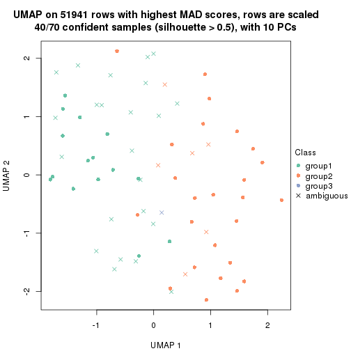
dimension_reduction(res, k = 4, method = "UMAP")
dimension_reduction(res, k = 5, method = "UMAP")
dimension_reduction(res, k = 6, method = "UMAP")
Following heatmap shows how subgroups are split when increasing k:
collect_classes(res)
Test correlation between subgroups and known annotations. If the known annotation is numeric, one-way ANOVA test is applied, and if the known annotation is discrete, chi-squared contingency table test is applied.
test_to_known_factors(res)
#> n age(p) time(p) tissue(p) individual(p) k
#> MAD:hclust 61 0.0286 0.004786 1.0000 0.00896 2
#> MAD:hclust 40 0.5136 0.000485 0.1517 0.11598 3
#> MAD:hclust 25 NA NA NA NA 4
#> MAD:hclust 29 0.1757 0.102752 0.0316 0.20015 5
#> MAD:hclust 28 0.3504 0.036708 0.0499 0.15650 6
If matrix rows can be associated to genes, consider to use functional_enrichment(res,
...) to perform function enrichment for the signature genes. See this vignette for more detailed explanations.
The object with results only for a single top-value method and a single partition method can be extracted as:
res = res_list["MAD", "kmeans"]
# you can also extract it by
# res = res_list["MAD:kmeans"]
A summary of res and all the functions that can be applied to it:
res
#> A 'ConsensusPartition' object with k = 2, 3, 4, 5, 6.
#> On a matrix with 51941 rows and 70 columns.
#> Top rows (1000, 2000, 3000, 4000, 5000) are extracted by 'MAD' method.
#> Subgroups are detected by 'kmeans' method.
#> Performed in total 1250 partitions by row resampling.
#> Best k for subgroups seems to be 2.
#>
#> Following methods can be applied to this 'ConsensusPartition' object:
#> [1] "cola_report" "collect_classes" "collect_plots"
#> [4] "collect_stats" "colnames" "compare_signatures"
#> [7] "consensus_heatmap" "dimension_reduction" "functional_enrichment"
#> [10] "get_anno_col" "get_anno" "get_classes"
#> [13] "get_consensus" "get_matrix" "get_membership"
#> [16] "get_param" "get_signatures" "get_stats"
#> [19] "is_best_k" "is_stable_k" "membership_heatmap"
#> [22] "ncol" "nrow" "plot_ecdf"
#> [25] "rownames" "select_partition_number" "show"
#> [28] "suggest_best_k" "test_to_known_factors"
collect_plots() function collects all the plots made from res for all k (number of partitions)
into one single page to provide an easy and fast comparison between different k.
collect_plots(res)
The plots are:
k and the heatmap of
predicted classes for each k.k.k.k.All the plots in panels can be made by individual functions and they are plotted later in this section.
select_partition_number() produces several plots showing different
statistics for choosing “optimized” k. There are following statistics:
k;k, the area increased is defined as \(A_k - A_{k-1}\).The detailed explanations of these statistics can be found in the cola vignette.
Generally speaking, lower PAC score, higher mean silhouette score or higher
concordance corresponds to better partition. Rand index and Jaccard index
measure how similar the current partition is compared to partition with k-1.
If they are too similar, we won't accept k is better than k-1.
select_partition_number(res)
The numeric values for all these statistics can be obtained by get_stats().
get_stats(res)
#> k 1-PAC mean_silhouette concordance area_increased Rand Jaccard
#> 2 2 0.969 0.941 0.973 0.4939 0.503 0.503
#> 3 3 0.495 0.588 0.781 0.3429 0.748 0.533
#> 4 4 0.580 0.719 0.820 0.1244 0.832 0.543
#> 5 5 0.617 0.593 0.749 0.0590 0.948 0.798
#> 6 6 0.632 0.454 0.692 0.0358 0.958 0.817
suggest_best_k() suggests the best \(k\) based on these statistics. The rules are as follows:
suggest_best_k(res)
#> [1] 2
Following shows the table of the partitions (You need to click the show/hide
code output link to see it). The membership matrix (columns with name p*)
is inferred by
clue::cl_consensus()
function with the SE method. Basically the value in the membership matrix
represents the probability to belong to a certain group. The finall class
label for an item is determined with the group with highest probability it
belongs to.
In get_classes() function, the entropy is calculated from the membership
matrix and the silhouette score is calculated from the consensus matrix.
cbind(get_classes(res, k = 2), get_membership(res, k = 2))
#> class entropy silhouette p1 p2
#> GSM701770 1 0.0000 0.982 1.000 0.000
#> GSM701769 1 0.0000 0.982 1.000 0.000
#> GSM701768 1 0.0000 0.982 1.000 0.000
#> GSM701767 1 0.0000 0.982 1.000 0.000
#> GSM701766 2 0.7219 0.768 0.200 0.800
#> GSM701806 1 0.0000 0.982 1.000 0.000
#> GSM701805 1 0.0672 0.982 0.992 0.008
#> GSM701804 1 0.0672 0.982 0.992 0.008
#> GSM701803 1 0.0672 0.982 0.992 0.008
#> GSM701775 1 0.0000 0.982 1.000 0.000
#> GSM701774 1 0.0000 0.982 1.000 0.000
#> GSM701773 2 0.0672 0.957 0.008 0.992
#> GSM701772 1 0.0376 0.980 0.996 0.004
#> GSM701771 1 0.0000 0.982 1.000 0.000
#> GSM701810 1 0.0672 0.982 0.992 0.008
#> GSM701809 1 0.0938 0.980 0.988 0.012
#> GSM701808 1 0.0672 0.982 0.992 0.008
#> GSM701807 1 0.0672 0.982 0.992 0.008
#> GSM701780 1 0.0000 0.982 1.000 0.000
#> GSM701779 2 0.0672 0.957 0.008 0.992
#> GSM701778 2 0.0672 0.957 0.008 0.992
#> GSM701777 2 0.8207 0.682 0.256 0.744
#> GSM701776 1 0.0672 0.982 0.992 0.008
#> GSM701816 1 0.0672 0.982 0.992 0.008
#> GSM701815 2 0.0000 0.957 0.000 1.000
#> GSM701814 2 0.0000 0.957 0.000 1.000
#> GSM701813 1 0.0672 0.982 0.992 0.008
#> GSM701812 1 0.0672 0.982 0.992 0.008
#> GSM701811 1 0.0000 0.982 1.000 0.000
#> GSM701786 1 0.0000 0.982 1.000 0.000
#> GSM701785 2 0.0672 0.957 0.008 0.992
#> GSM701784 2 0.0672 0.957 0.008 0.992
#> GSM701783 1 0.0000 0.982 1.000 0.000
#> GSM701782 2 0.0672 0.957 0.008 0.992
#> GSM701781 1 0.9775 0.246 0.588 0.412
#> GSM701822 2 0.0000 0.957 0.000 1.000
#> GSM701821 2 0.0000 0.957 0.000 1.000
#> GSM701820 1 0.0672 0.982 0.992 0.008
#> GSM701819 1 0.0672 0.982 0.992 0.008
#> GSM701818 1 0.0672 0.982 0.992 0.008
#> GSM701817 1 0.0672 0.982 0.992 0.008
#> GSM701790 1 0.0000 0.982 1.000 0.000
#> GSM701789 1 0.0000 0.982 1.000 0.000
#> GSM701788 1 0.0000 0.982 1.000 0.000
#> GSM701787 2 0.3114 0.922 0.056 0.944
#> GSM701824 1 0.0672 0.982 0.992 0.008
#> GSM701823 2 0.0000 0.957 0.000 1.000
#> GSM701791 2 0.0672 0.957 0.008 0.992
#> GSM701793 1 0.0000 0.982 1.000 0.000
#> GSM701792 1 0.0000 0.982 1.000 0.000
#> GSM701825 1 0.0672 0.982 0.992 0.008
#> GSM701827 2 0.0000 0.957 0.000 1.000
#> GSM701826 2 0.0000 0.957 0.000 1.000
#> GSM701797 1 0.4298 0.889 0.912 0.088
#> GSM701796 1 0.0000 0.982 1.000 0.000
#> GSM701795 2 0.0672 0.957 0.008 0.992
#> GSM701794 2 0.0672 0.957 0.008 0.992
#> GSM701831 2 0.0000 0.957 0.000 1.000
#> GSM701830 2 0.0000 0.957 0.000 1.000
#> GSM701829 2 0.7883 0.701 0.236 0.764
#> GSM701828 2 0.0000 0.957 0.000 1.000
#> GSM701798 2 0.0672 0.957 0.008 0.992
#> GSM701802 2 0.0672 0.957 0.008 0.992
#> GSM701801 1 0.0000 0.982 1.000 0.000
#> GSM701800 1 0.0376 0.982 0.996 0.004
#> GSM701799 2 0.0672 0.957 0.008 0.992
#> GSM701832 2 0.0000 0.957 0.000 1.000
#> GSM701835 2 0.9608 0.399 0.384 0.616
#> GSM701834 2 0.0000 0.957 0.000 1.000
#> GSM701833 2 0.0000 0.957 0.000 1.000
cbind(get_classes(res, k = 3), get_membership(res, k = 3))
#> class entropy silhouette p1 p2 p3
#> GSM701770 1 0.0592 0.683 0.988 0.000 0.012
#> GSM701769 1 0.4062 0.606 0.836 0.000 0.164
#> GSM701768 1 0.4842 0.527 0.776 0.000 0.224
#> GSM701767 3 0.5905 0.482 0.352 0.000 0.648
#> GSM701766 3 0.7927 0.557 0.160 0.176 0.664
#> GSM701806 1 0.3619 0.654 0.864 0.000 0.136
#> GSM701805 1 0.5465 0.578 0.712 0.000 0.288
#> GSM701804 3 0.6140 -0.111 0.404 0.000 0.596
#> GSM701803 1 0.6302 0.314 0.520 0.000 0.480
#> GSM701775 1 0.4062 0.602 0.836 0.000 0.164
#> GSM701774 1 0.5363 0.435 0.724 0.000 0.276
#> GSM701773 2 0.0592 0.903 0.000 0.988 0.012
#> GSM701772 3 0.5760 0.502 0.328 0.000 0.672
#> GSM701771 1 0.1031 0.683 0.976 0.000 0.024
#> GSM701810 1 0.5397 0.591 0.720 0.000 0.280
#> GSM701809 3 0.4291 0.440 0.152 0.008 0.840
#> GSM701808 1 0.5591 0.567 0.696 0.000 0.304
#> GSM701807 1 0.5529 0.572 0.704 0.000 0.296
#> GSM701780 1 0.6286 -0.152 0.536 0.000 0.464
#> GSM701779 2 0.0424 0.903 0.000 0.992 0.008
#> GSM701778 2 0.1529 0.897 0.000 0.960 0.040
#> GSM701777 3 0.8005 0.531 0.128 0.224 0.648
#> GSM701776 1 0.5431 0.579 0.716 0.000 0.284
#> GSM701816 3 0.5291 0.333 0.268 0.000 0.732
#> GSM701815 2 0.5178 0.685 0.000 0.744 0.256
#> GSM701814 2 0.0000 0.903 0.000 1.000 0.000
#> GSM701813 3 0.5024 0.382 0.220 0.004 0.776
#> GSM701812 3 0.5497 0.261 0.292 0.000 0.708
#> GSM701811 1 0.4605 0.621 0.796 0.000 0.204
#> GSM701786 1 0.0592 0.684 0.988 0.000 0.012
#> GSM701785 2 0.5529 0.615 0.000 0.704 0.296
#> GSM701784 2 0.6045 0.462 0.000 0.620 0.380
#> GSM701783 1 0.0424 0.683 0.992 0.000 0.008
#> GSM701782 3 0.6345 0.143 0.004 0.400 0.596
#> GSM701781 3 0.5954 0.561 0.116 0.092 0.792
#> GSM701822 2 0.0000 0.903 0.000 1.000 0.000
#> GSM701821 2 0.4346 0.771 0.000 0.816 0.184
#> GSM701820 3 0.6442 -0.201 0.432 0.004 0.564
#> GSM701819 3 0.6295 -0.210 0.472 0.000 0.528
#> GSM701818 1 0.6045 0.470 0.620 0.000 0.380
#> GSM701817 3 0.5397 0.262 0.280 0.000 0.720
#> GSM701790 1 0.3879 0.610 0.848 0.000 0.152
#> GSM701789 1 0.4002 0.603 0.840 0.000 0.160
#> GSM701788 1 0.0237 0.683 0.996 0.000 0.004
#> GSM701787 3 0.8520 0.444 0.132 0.280 0.588
#> GSM701824 1 0.4974 0.645 0.764 0.000 0.236
#> GSM701823 2 0.0000 0.903 0.000 1.000 0.000
#> GSM701791 2 0.0592 0.903 0.000 0.988 0.012
#> GSM701793 1 0.3619 0.624 0.864 0.000 0.136
#> GSM701792 3 0.6140 0.409 0.404 0.000 0.596
#> GSM701825 1 0.5529 0.574 0.704 0.000 0.296
#> GSM701827 2 0.0000 0.903 0.000 1.000 0.000
#> GSM701826 2 0.2261 0.874 0.000 0.932 0.068
#> GSM701797 3 0.6373 0.540 0.268 0.028 0.704
#> GSM701796 1 0.4121 0.596 0.832 0.000 0.168
#> GSM701795 2 0.0747 0.903 0.000 0.984 0.016
#> GSM701794 2 0.0424 0.903 0.000 0.992 0.008
#> GSM701831 2 0.1031 0.899 0.000 0.976 0.024
#> GSM701830 2 0.0000 0.903 0.000 1.000 0.000
#> GSM701829 3 0.5578 0.509 0.012 0.240 0.748
#> GSM701828 2 0.1411 0.894 0.000 0.964 0.036
#> GSM701798 2 0.1289 0.899 0.000 0.968 0.032
#> GSM701802 2 0.6521 0.148 0.004 0.504 0.492
#> GSM701801 3 0.5810 0.498 0.336 0.000 0.664
#> GSM701800 3 0.5621 0.514 0.308 0.000 0.692
#> GSM701799 2 0.0424 0.903 0.000 0.992 0.008
#> GSM701832 2 0.3752 0.814 0.000 0.856 0.144
#> GSM701835 3 0.7462 0.570 0.124 0.180 0.696
#> GSM701834 2 0.0000 0.903 0.000 1.000 0.000
#> GSM701833 2 0.0000 0.903 0.000 1.000 0.000
cbind(get_classes(res, k = 4), get_membership(res, k = 4))
#> class entropy silhouette p1 p2 p3 p4
#> GSM701770 1 0.3047 0.794 0.872 0.000 0.012 0.116
#> GSM701769 1 0.3745 0.792 0.852 0.000 0.060 0.088
#> GSM701768 1 0.3813 0.768 0.828 0.000 0.148 0.024
#> GSM701767 3 0.6487 0.147 0.428 0.000 0.500 0.072
#> GSM701766 3 0.2838 0.802 0.056 0.016 0.908 0.020
#> GSM701806 1 0.3172 0.746 0.840 0.000 0.000 0.160
#> GSM701805 4 0.4277 0.641 0.280 0.000 0.000 0.720
#> GSM701804 4 0.3796 0.733 0.056 0.000 0.096 0.848
#> GSM701803 4 0.3587 0.748 0.088 0.000 0.052 0.860
#> GSM701775 1 0.2466 0.804 0.900 0.000 0.096 0.004
#> GSM701774 1 0.5332 0.689 0.736 0.000 0.184 0.080
#> GSM701773 2 0.1488 0.875 0.000 0.956 0.032 0.012
#> GSM701772 3 0.3280 0.777 0.124 0.000 0.860 0.016
#> GSM701771 1 0.2704 0.779 0.876 0.000 0.000 0.124
#> GSM701810 4 0.5093 0.551 0.348 0.000 0.012 0.640
#> GSM701809 4 0.5253 0.523 0.016 0.000 0.360 0.624
#> GSM701808 4 0.4011 0.717 0.208 0.000 0.008 0.784
#> GSM701807 4 0.3908 0.706 0.212 0.000 0.004 0.784
#> GSM701780 1 0.6466 0.479 0.608 0.000 0.288 0.104
#> GSM701779 2 0.0672 0.878 0.000 0.984 0.008 0.008
#> GSM701778 2 0.3806 0.801 0.000 0.824 0.156 0.020
#> GSM701777 3 0.2540 0.798 0.028 0.024 0.924 0.024
#> GSM701776 4 0.4220 0.677 0.248 0.000 0.004 0.748
#> GSM701816 4 0.6457 0.570 0.100 0.000 0.296 0.604
#> GSM701815 2 0.6659 0.250 0.000 0.512 0.400 0.088
#> GSM701814 2 0.0469 0.877 0.000 0.988 0.000 0.012
#> GSM701813 4 0.5152 0.599 0.020 0.000 0.316 0.664
#> GSM701812 4 0.5648 0.675 0.064 0.000 0.252 0.684
#> GSM701811 1 0.5396 0.704 0.740 0.000 0.104 0.156
#> GSM701786 1 0.2530 0.792 0.888 0.000 0.000 0.112
#> GSM701785 3 0.5253 0.408 0.000 0.360 0.624 0.016
#> GSM701784 3 0.5564 0.638 0.044 0.232 0.712 0.012
#> GSM701783 1 0.2988 0.796 0.876 0.000 0.012 0.112
#> GSM701782 3 0.2635 0.776 0.000 0.076 0.904 0.020
#> GSM701781 3 0.4020 0.684 0.016 0.008 0.820 0.156
#> GSM701822 2 0.0336 0.877 0.000 0.992 0.000 0.008
#> GSM701821 2 0.5417 0.329 0.000 0.572 0.412 0.016
#> GSM701820 4 0.5395 0.699 0.092 0.000 0.172 0.736
#> GSM701819 4 0.4992 0.746 0.096 0.000 0.132 0.772
#> GSM701818 4 0.3958 0.744 0.144 0.000 0.032 0.824
#> GSM701817 4 0.5624 0.669 0.052 0.000 0.280 0.668
#> GSM701790 1 0.2402 0.812 0.912 0.000 0.076 0.012
#> GSM701789 1 0.2480 0.809 0.904 0.000 0.088 0.008
#> GSM701788 1 0.2799 0.793 0.884 0.000 0.008 0.108
#> GSM701787 3 0.4507 0.787 0.100 0.060 0.824 0.016
#> GSM701824 1 0.5848 0.172 0.584 0.000 0.040 0.376
#> GSM701823 2 0.1284 0.874 0.000 0.964 0.012 0.024
#> GSM701791 2 0.0927 0.878 0.000 0.976 0.016 0.008
#> GSM701793 1 0.2021 0.815 0.932 0.000 0.056 0.012
#> GSM701792 3 0.4542 0.692 0.228 0.000 0.752 0.020
#> GSM701825 4 0.3908 0.706 0.212 0.000 0.004 0.784
#> GSM701827 2 0.0336 0.878 0.000 0.992 0.000 0.008
#> GSM701826 2 0.4057 0.780 0.000 0.816 0.152 0.032
#> GSM701797 3 0.2075 0.798 0.044 0.004 0.936 0.016
#> GSM701796 1 0.2179 0.814 0.924 0.000 0.064 0.012
#> GSM701795 2 0.1356 0.876 0.000 0.960 0.032 0.008
#> GSM701794 2 0.0804 0.878 0.000 0.980 0.012 0.008
#> GSM701831 2 0.2654 0.838 0.000 0.888 0.108 0.004
#> GSM701830 2 0.0000 0.878 0.000 1.000 0.000 0.000
#> GSM701829 3 0.5271 0.635 0.004 0.068 0.748 0.180
#> GSM701828 2 0.3390 0.811 0.000 0.852 0.132 0.016
#> GSM701798 2 0.3088 0.825 0.000 0.864 0.128 0.008
#> GSM701802 3 0.3672 0.720 0.000 0.164 0.824 0.012
#> GSM701801 3 0.4671 0.676 0.220 0.000 0.752 0.028
#> GSM701800 3 0.2644 0.790 0.060 0.000 0.908 0.032
#> GSM701799 2 0.0804 0.878 0.000 0.980 0.012 0.008
#> GSM701832 2 0.5435 0.304 0.000 0.564 0.420 0.016
#> GSM701835 3 0.2215 0.799 0.024 0.016 0.936 0.024
#> GSM701834 2 0.1256 0.874 0.000 0.964 0.028 0.008
#> GSM701833 2 0.0469 0.878 0.000 0.988 0.000 0.012
cbind(get_classes(res, k = 5), get_membership(res, k = 5))
#> class entropy silhouette p1 p2 p3 p4 p5
#> GSM701770 1 0.4308 0.7237 0.768 0.000 0.004 0.168 0.060
#> GSM701769 1 0.5413 0.6700 0.708 0.000 0.032 0.088 0.172
#> GSM701768 1 0.3511 0.7221 0.848 0.000 0.096 0.028 0.028
#> GSM701767 3 0.7214 0.0757 0.324 0.000 0.356 0.016 0.304
#> GSM701766 3 0.2473 0.6918 0.040 0.004 0.908 0.004 0.044
#> GSM701806 1 0.3961 0.6941 0.760 0.000 0.000 0.212 0.028
#> GSM701805 4 0.3182 0.5591 0.124 0.000 0.000 0.844 0.032
#> GSM701804 4 0.4893 0.1721 0.008 0.000 0.016 0.580 0.396
#> GSM701803 4 0.3320 0.4761 0.012 0.000 0.008 0.828 0.152
#> GSM701775 1 0.2103 0.7504 0.920 0.000 0.056 0.004 0.020
#> GSM701774 1 0.6547 0.5317 0.608 0.000 0.176 0.048 0.168
#> GSM701773 2 0.2429 0.8410 0.000 0.900 0.076 0.004 0.020
#> GSM701772 3 0.3283 0.6683 0.116 0.000 0.848 0.008 0.028
#> GSM701771 1 0.4021 0.7030 0.764 0.000 0.000 0.200 0.036
#> GSM701810 4 0.6851 0.2164 0.212 0.000 0.016 0.488 0.284
#> GSM701809 5 0.6526 0.6108 0.008 0.000 0.188 0.284 0.520
#> GSM701808 4 0.5115 0.4694 0.072 0.000 0.012 0.700 0.216
#> GSM701807 4 0.2069 0.5883 0.076 0.000 0.000 0.912 0.012
#> GSM701780 1 0.7006 0.1295 0.440 0.000 0.144 0.036 0.380
#> GSM701779 2 0.1059 0.8617 0.000 0.968 0.008 0.004 0.020
#> GSM701778 2 0.4434 0.7097 0.000 0.736 0.208 0.000 0.056
#> GSM701777 3 0.3039 0.6872 0.004 0.020 0.864 0.004 0.108
#> GSM701776 4 0.1851 0.5839 0.088 0.000 0.000 0.912 0.000
#> GSM701816 5 0.6998 0.6151 0.072 0.000 0.148 0.216 0.564
#> GSM701815 2 0.7009 0.0630 0.000 0.392 0.300 0.008 0.300
#> GSM701814 2 0.0771 0.8613 0.000 0.976 0.004 0.000 0.020
#> GSM701813 5 0.5626 0.6405 0.012 0.000 0.136 0.184 0.668
#> GSM701812 5 0.6637 0.5809 0.036 0.000 0.108 0.340 0.516
#> GSM701811 1 0.6154 0.5810 0.640 0.000 0.076 0.220 0.064
#> GSM701786 1 0.4010 0.7204 0.784 0.000 0.000 0.160 0.056
#> GSM701785 3 0.4392 0.6226 0.008 0.212 0.748 0.004 0.028
#> GSM701784 3 0.3770 0.6807 0.040 0.104 0.832 0.000 0.024
#> GSM701783 1 0.4238 0.7269 0.776 0.000 0.000 0.136 0.088
#> GSM701782 3 0.3292 0.6809 0.000 0.032 0.844 0.004 0.120
#> GSM701781 3 0.5302 0.4381 0.000 0.008 0.620 0.052 0.320
#> GSM701822 2 0.0794 0.8598 0.000 0.972 0.000 0.000 0.028
#> GSM701821 3 0.5939 0.1352 0.000 0.412 0.492 0.004 0.092
#> GSM701820 4 0.6726 0.1871 0.076 0.000 0.096 0.580 0.248
#> GSM701819 4 0.5841 -0.2534 0.028 0.000 0.040 0.480 0.452
#> GSM701818 4 0.5380 0.0284 0.036 0.000 0.012 0.556 0.396
#> GSM701817 5 0.6189 0.5200 0.016 0.000 0.092 0.380 0.512
#> GSM701790 1 0.2124 0.7550 0.924 0.000 0.044 0.020 0.012
#> GSM701789 1 0.1883 0.7534 0.932 0.000 0.048 0.012 0.008
#> GSM701788 1 0.3647 0.7331 0.816 0.000 0.000 0.132 0.052
#> GSM701787 3 0.3272 0.6932 0.064 0.024 0.872 0.004 0.036
#> GSM701824 1 0.6650 0.0825 0.528 0.000 0.032 0.316 0.124
#> GSM701823 2 0.2576 0.8424 0.000 0.900 0.036 0.008 0.056
#> GSM701791 2 0.1885 0.8542 0.000 0.932 0.044 0.004 0.020
#> GSM701793 1 0.1525 0.7561 0.948 0.000 0.036 0.012 0.004
#> GSM701792 3 0.4109 0.6179 0.204 0.000 0.764 0.012 0.020
#> GSM701825 4 0.2782 0.5873 0.072 0.000 0.000 0.880 0.048
#> GSM701827 2 0.0324 0.8627 0.000 0.992 0.000 0.004 0.004
#> GSM701826 2 0.5795 0.5466 0.000 0.640 0.224 0.012 0.124
#> GSM701797 3 0.3387 0.6361 0.004 0.000 0.796 0.004 0.196
#> GSM701796 1 0.2721 0.7544 0.896 0.000 0.036 0.016 0.052
#> GSM701795 2 0.1872 0.8546 0.000 0.928 0.052 0.000 0.020
#> GSM701794 2 0.1173 0.8618 0.000 0.964 0.012 0.004 0.020
#> GSM701831 2 0.4452 0.7255 0.000 0.760 0.164 0.004 0.072
#> GSM701830 2 0.0404 0.8623 0.000 0.988 0.000 0.000 0.012
#> GSM701829 3 0.6683 0.2341 0.016 0.040 0.508 0.060 0.376
#> GSM701828 2 0.4459 0.6857 0.000 0.744 0.200 0.004 0.052
#> GSM701798 2 0.3535 0.7696 0.000 0.808 0.164 0.000 0.028
#> GSM701802 3 0.3206 0.6866 0.012 0.096 0.864 0.004 0.024
#> GSM701801 3 0.6448 0.4326 0.188 0.000 0.556 0.012 0.244
#> GSM701800 3 0.4050 0.6432 0.036 0.000 0.784 0.008 0.172
#> GSM701799 2 0.1173 0.8618 0.000 0.964 0.012 0.004 0.020
#> GSM701832 3 0.5428 0.2165 0.000 0.400 0.544 0.004 0.052
#> GSM701835 3 0.2676 0.6861 0.008 0.004 0.880 0.004 0.104
#> GSM701834 2 0.1862 0.8500 0.000 0.932 0.016 0.004 0.048
#> GSM701833 2 0.0324 0.8627 0.000 0.992 0.000 0.004 0.004
cbind(get_classes(res, k = 6), get_membership(res, k = 6))
#> class entropy silhouette p1 p2 p3 p4 p5 p6
#> GSM701770 1 0.5327 0.6495 0.680 0.000 0.004 0.068 0.064 0.184
#> GSM701769 1 0.5938 0.6078 0.648 0.000 0.020 0.116 0.160 0.056
#> GSM701768 1 0.4025 0.6524 0.800 0.000 0.104 0.064 0.012 0.020
#> GSM701767 1 0.7763 0.0318 0.320 0.000 0.208 0.212 0.256 0.004
#> GSM701766 3 0.3314 0.5573 0.040 0.000 0.840 0.100 0.016 0.004
#> GSM701806 1 0.4213 0.6456 0.724 0.000 0.000 0.036 0.016 0.224
#> GSM701805 6 0.2934 0.5684 0.064 0.000 0.000 0.044 0.024 0.868
#> GSM701804 6 0.6062 0.1390 0.000 0.000 0.000 0.320 0.276 0.404
#> GSM701803 6 0.3594 0.5100 0.000 0.000 0.008 0.044 0.152 0.796
#> GSM701775 1 0.2581 0.6950 0.892 0.000 0.048 0.044 0.008 0.008
#> GSM701774 1 0.7062 0.4007 0.528 0.000 0.104 0.152 0.192 0.024
#> GSM701773 2 0.3013 0.6639 0.000 0.844 0.088 0.068 0.000 0.000
#> GSM701772 3 0.4225 0.5408 0.108 0.000 0.776 0.092 0.020 0.004
#> GSM701771 1 0.4740 0.6375 0.696 0.000 0.000 0.052 0.032 0.220
#> GSM701810 6 0.6232 -0.0661 0.140 0.000 0.004 0.024 0.416 0.416
#> GSM701809 5 0.6453 0.3341 0.004 0.000 0.108 0.132 0.576 0.180
#> GSM701808 6 0.5285 0.2359 0.020 0.000 0.004 0.060 0.328 0.588
#> GSM701807 6 0.1116 0.6053 0.028 0.000 0.000 0.004 0.008 0.960
#> GSM701780 5 0.7118 -0.1077 0.364 0.000 0.084 0.160 0.384 0.008
#> GSM701779 2 0.1890 0.7096 0.000 0.916 0.024 0.060 0.000 0.000
#> GSM701778 2 0.5213 0.4338 0.000 0.660 0.188 0.132 0.020 0.000
#> GSM701777 3 0.4029 0.4967 0.016 0.012 0.796 0.112 0.064 0.000
#> GSM701776 6 0.0972 0.6051 0.028 0.000 0.000 0.000 0.008 0.964
#> GSM701816 5 0.6277 0.4591 0.056 0.000 0.100 0.080 0.648 0.116
#> GSM701815 4 0.7702 0.0000 0.000 0.264 0.276 0.300 0.156 0.004
#> GSM701814 2 0.2165 0.6957 0.000 0.884 0.008 0.108 0.000 0.000
#> GSM701813 5 0.5194 0.4612 0.004 0.000 0.112 0.092 0.712 0.080
#> GSM701812 5 0.5552 0.4416 0.016 0.000 0.056 0.044 0.640 0.244
#> GSM701811 1 0.6537 0.5197 0.600 0.000 0.064 0.056 0.084 0.196
#> GSM701786 1 0.5176 0.6590 0.696 0.000 0.000 0.072 0.076 0.156
#> GSM701785 3 0.4241 0.3790 0.004 0.164 0.748 0.080 0.004 0.000
#> GSM701784 3 0.4076 0.5107 0.048 0.064 0.800 0.084 0.004 0.000
#> GSM701783 1 0.5284 0.6625 0.696 0.000 0.000 0.088 0.104 0.112
#> GSM701782 3 0.3592 0.4833 0.000 0.008 0.808 0.116 0.068 0.000
#> GSM701781 3 0.6032 0.1267 0.000 0.008 0.560 0.188 0.228 0.016
#> GSM701822 2 0.2355 0.6910 0.000 0.876 0.008 0.112 0.004 0.000
#> GSM701821 3 0.6503 -0.3168 0.000 0.352 0.424 0.188 0.036 0.000
#> GSM701820 6 0.7357 0.1298 0.040 0.000 0.076 0.140 0.292 0.452
#> GSM701819 5 0.4911 0.2566 0.012 0.000 0.008 0.032 0.592 0.356
#> GSM701818 5 0.4991 0.0597 0.016 0.000 0.004 0.028 0.496 0.456
#> GSM701817 5 0.6146 0.4294 0.004 0.000 0.084 0.108 0.600 0.204
#> GSM701790 1 0.2244 0.7028 0.912 0.000 0.036 0.032 0.004 0.016
#> GSM701789 1 0.2007 0.7049 0.924 0.000 0.040 0.016 0.008 0.012
#> GSM701788 1 0.3831 0.6872 0.796 0.000 0.000 0.044 0.028 0.132
#> GSM701787 3 0.3778 0.5480 0.084 0.012 0.812 0.084 0.008 0.000
#> GSM701824 1 0.6830 0.0978 0.492 0.000 0.012 0.056 0.184 0.256
#> GSM701823 2 0.3722 0.6012 0.004 0.764 0.036 0.196 0.000 0.000
#> GSM701791 2 0.2433 0.6951 0.000 0.884 0.044 0.072 0.000 0.000
#> GSM701793 1 0.1879 0.7062 0.932 0.000 0.028 0.016 0.008 0.016
#> GSM701792 3 0.5101 0.4638 0.220 0.000 0.664 0.092 0.024 0.000
#> GSM701825 6 0.2404 0.5964 0.020 0.000 0.000 0.020 0.064 0.896
#> GSM701827 2 0.0363 0.7205 0.000 0.988 0.000 0.012 0.000 0.000
#> GSM701826 2 0.7055 -0.1253 0.004 0.484 0.188 0.208 0.116 0.000
#> GSM701797 3 0.4610 0.4822 0.012 0.000 0.712 0.092 0.184 0.000
#> GSM701796 1 0.2613 0.6942 0.884 0.000 0.016 0.068 0.032 0.000
#> GSM701795 2 0.2740 0.6915 0.000 0.864 0.076 0.060 0.000 0.000
#> GSM701794 2 0.2030 0.7091 0.000 0.908 0.028 0.064 0.000 0.000
#> GSM701831 2 0.5601 0.3465 0.000 0.628 0.156 0.184 0.032 0.000
#> GSM701830 2 0.1812 0.7067 0.000 0.912 0.008 0.080 0.000 0.000
#> GSM701829 3 0.7105 -0.0250 0.004 0.048 0.388 0.220 0.332 0.008
#> GSM701828 2 0.5278 0.3296 0.000 0.632 0.188 0.172 0.008 0.000
#> GSM701798 2 0.3869 0.5842 0.000 0.768 0.168 0.060 0.004 0.000
#> GSM701802 3 0.3076 0.4890 0.000 0.064 0.856 0.064 0.016 0.000
#> GSM701801 3 0.7343 0.2399 0.208 0.000 0.416 0.160 0.216 0.000
#> GSM701800 3 0.4911 0.4877 0.020 0.000 0.688 0.096 0.196 0.000
#> GSM701799 2 0.2030 0.7091 0.000 0.908 0.028 0.064 0.000 0.000
#> GSM701832 3 0.5740 -0.1993 0.000 0.340 0.508 0.144 0.008 0.000
#> GSM701835 3 0.3403 0.5512 0.012 0.004 0.836 0.068 0.080 0.000
#> GSM701834 2 0.3370 0.6421 0.000 0.812 0.044 0.140 0.004 0.000
#> GSM701833 2 0.0865 0.7195 0.000 0.964 0.000 0.036 0.000 0.000
Heatmaps for the consensus matrix. It visualizes the probability of two samples to be in a same group.
consensus_heatmap(res, k = 2)
consensus_heatmap(res, k = 3)
consensus_heatmap(res, k = 4)
consensus_heatmap(res, k = 5)
consensus_heatmap(res, k = 6)
Heatmaps for the membership of samples in all partitions to see how consistent they are:
membership_heatmap(res, k = 2)
membership_heatmap(res, k = 3)
membership_heatmap(res, k = 4)
membership_heatmap(res, k = 5)
membership_heatmap(res, k = 6)

As soon as we have had the classes for columns, we can look for signatures which are significantly different between classes which can be candidate marks for certain classes. Following are the heatmaps for signatures.
Signature heatmaps where rows are scaled:
get_signatures(res, k = 2)
get_signatures(res, k = 3)
get_signatures(res, k = 4)
get_signatures(res, k = 5)
get_signatures(res, k = 6)
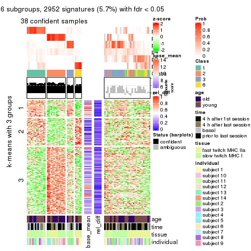
Signature heatmaps where rows are not scaled:
get_signatures(res, k = 2, scale_rows = FALSE)
get_signatures(res, k = 3, scale_rows = FALSE)
get_signatures(res, k = 4, scale_rows = FALSE)
get_signatures(res, k = 5, scale_rows = FALSE)
get_signatures(res, k = 6, scale_rows = FALSE)
Compare the overlap of signatures from different k:
compare_signatures(res)
get_signature() returns a data frame invisibly. TO get the list of signatures, the function
call should be assigned to a variable explicitly. In following code, if plot argument is set
to FALSE, no heatmap is plotted while only the differential analysis is performed.
# code only for demonstration
tb = get_signature(res, k = ..., plot = FALSE)
An example of the output of tb is:
#> which_row fdr mean_1 mean_2 scaled_mean_1 scaled_mean_2 km
#> 1 38 0.042760348 8.373488 9.131774 -0.5533452 0.5164555 1
#> 2 40 0.018707592 7.106213 8.469186 -0.6173731 0.5762149 1
#> 3 55 0.019134737 10.221463 11.207825 -0.6159697 0.5749050 1
#> 4 59 0.006059896 5.921854 7.869574 -0.6899429 0.6439467 1
#> 5 60 0.018055526 8.928898 10.211722 -0.6204761 0.5791110 1
#> 6 98 0.009384629 15.714769 14.887706 0.6635654 -0.6193277 2
...
The columns in tb are:
which_row: row indices corresponding to the input matrix.fdr: FDR for the differential test. mean_x: The mean value in group x.scaled_mean_x: The mean value in group x after rows are scaled.km: Row groups if k-means clustering is applied to rows.UMAP plot which shows how samples are separated.
dimension_reduction(res, k = 2, method = "UMAP")
dimension_reduction(res, k = 3, method = "UMAP")

dimension_reduction(res, k = 4, method = "UMAP")
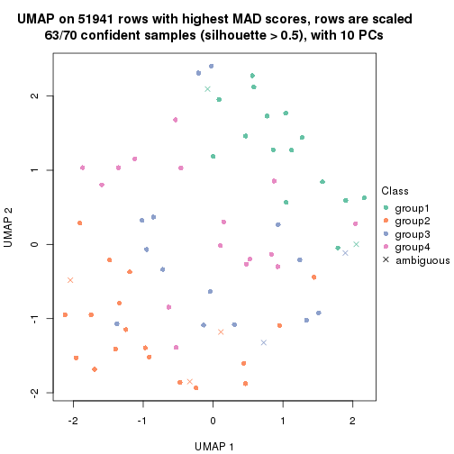
dimension_reduction(res, k = 5, method = "UMAP")
dimension_reduction(res, k = 6, method = "UMAP")
Following heatmap shows how subgroups are split when increasing k:
collect_classes(res)
Test correlation between subgroups and known annotations. If the known annotation is numeric, one-way ANOVA test is applied, and if the known annotation is discrete, chi-squared contingency table test is applied.
test_to_known_factors(res)
#> n age(p) time(p) tissue(p) individual(p) k
#> MAD:kmeans 68 0.023128 0.0398 1.00e+00 0.00800 2
#> MAD:kmeans 51 0.138650 0.0162 1.77e-01 0.02620 3
#> MAD:kmeans 63 0.000771 0.0914 4.72e-06 0.00426 4
#> MAD:kmeans 54 0.026719 0.0807 3.18e-04 0.02266 5
#> MAD:kmeans 38 0.131373 0.2798 3.33e-02 0.03806 6
If matrix rows can be associated to genes, consider to use functional_enrichment(res,
...) to perform function enrichment for the signature genes. See this vignette for more detailed explanations.
The object with results only for a single top-value method and a single partition method can be extracted as:
res = res_list["MAD", "skmeans"]
# you can also extract it by
# res = res_list["MAD:skmeans"]
A summary of res and all the functions that can be applied to it:
res
#> A 'ConsensusPartition' object with k = 2, 3, 4, 5, 6.
#> On a matrix with 51941 rows and 70 columns.
#> Top rows (1000, 2000, 3000, 4000, 5000) are extracted by 'MAD' method.
#> Subgroups are detected by 'skmeans' method.
#> Performed in total 1250 partitions by row resampling.
#> Best k for subgroups seems to be 2.
#>
#> Following methods can be applied to this 'ConsensusPartition' object:
#> [1] "cola_report" "collect_classes" "collect_plots"
#> [4] "collect_stats" "colnames" "compare_signatures"
#> [7] "consensus_heatmap" "dimension_reduction" "functional_enrichment"
#> [10] "get_anno_col" "get_anno" "get_classes"
#> [13] "get_consensus" "get_matrix" "get_membership"
#> [16] "get_param" "get_signatures" "get_stats"
#> [19] "is_best_k" "is_stable_k" "membership_heatmap"
#> [22] "ncol" "nrow" "plot_ecdf"
#> [25] "rownames" "select_partition_number" "show"
#> [28] "suggest_best_k" "test_to_known_factors"
collect_plots() function collects all the plots made from res for all k (number of partitions)
into one single page to provide an easy and fast comparison between different k.
collect_plots(res)
The plots are:
k and the heatmap of
predicted classes for each k.k.k.k.All the plots in panels can be made by individual functions and they are plotted later in this section.
select_partition_number() produces several plots showing different
statistics for choosing “optimized” k. There are following statistics:
k;k, the area increased is defined as \(A_k - A_{k-1}\).The detailed explanations of these statistics can be found in the cola vignette.
Generally speaking, lower PAC score, higher mean silhouette score or higher
concordance corresponds to better partition. Rand index and Jaccard index
measure how similar the current partition is compared to partition with k-1.
If they are too similar, we won't accept k is better than k-1.
select_partition_number(res)
The numeric values for all these statistics can be obtained by get_stats().
get_stats(res)
#> k 1-PAC mean_silhouette concordance area_increased Rand Jaccard
#> 2 2 0.741 0.911 0.958 0.5048 0.496 0.496
#> 3 3 0.386 0.505 0.720 0.3064 0.865 0.734
#> 4 4 0.390 0.370 0.617 0.1151 0.863 0.665
#> 5 5 0.388 0.332 0.563 0.0624 0.832 0.548
#> 6 6 0.438 0.280 0.525 0.0449 0.893 0.647
suggest_best_k() suggests the best \(k\) based on these statistics. The rules are as follows:
suggest_best_k(res)
#> [1] 2
Following shows the table of the partitions (You need to click the show/hide
code output link to see it). The membership matrix (columns with name p*)
is inferred by
clue::cl_consensus()
function with the SE method. Basically the value in the membership matrix
represents the probability to belong to a certain group. The finall class
label for an item is determined with the group with highest probability it
belongs to.
In get_classes() function, the entropy is calculated from the membership
matrix and the silhouette score is calculated from the consensus matrix.
cbind(get_classes(res, k = 2), get_membership(res, k = 2))
#> class entropy silhouette p1 p2
#> GSM701770 1 0.0000 0.948 1.000 0.000
#> GSM701769 1 0.0000 0.948 1.000 0.000
#> GSM701768 1 0.0000 0.948 1.000 0.000
#> GSM701767 1 0.6887 0.791 0.816 0.184
#> GSM701766 2 0.3879 0.903 0.076 0.924
#> GSM701806 1 0.0000 0.948 1.000 0.000
#> GSM701805 1 0.0000 0.948 1.000 0.000
#> GSM701804 1 0.0938 0.943 0.988 0.012
#> GSM701803 1 0.0000 0.948 1.000 0.000
#> GSM701775 1 0.0000 0.948 1.000 0.000
#> GSM701774 1 0.0938 0.943 0.988 0.012
#> GSM701773 2 0.0000 0.962 0.000 1.000
#> GSM701772 1 0.8081 0.696 0.752 0.248
#> GSM701771 1 0.0000 0.948 1.000 0.000
#> GSM701810 1 0.0000 0.948 1.000 0.000
#> GSM701809 1 0.7376 0.763 0.792 0.208
#> GSM701808 1 0.0000 0.948 1.000 0.000
#> GSM701807 1 0.0000 0.948 1.000 0.000
#> GSM701780 1 0.0000 0.948 1.000 0.000
#> GSM701779 2 0.0000 0.962 0.000 1.000
#> GSM701778 2 0.0000 0.962 0.000 1.000
#> GSM701777 2 0.5178 0.864 0.116 0.884
#> GSM701776 1 0.0000 0.948 1.000 0.000
#> GSM701816 1 0.4939 0.874 0.892 0.108
#> GSM701815 2 0.0000 0.962 0.000 1.000
#> GSM701814 2 0.0000 0.962 0.000 1.000
#> GSM701813 1 0.6801 0.795 0.820 0.180
#> GSM701812 1 0.1184 0.941 0.984 0.016
#> GSM701811 1 0.0000 0.948 1.000 0.000
#> GSM701786 1 0.0000 0.948 1.000 0.000
#> GSM701785 2 0.0000 0.962 0.000 1.000
#> GSM701784 2 0.0000 0.962 0.000 1.000
#> GSM701783 1 0.0000 0.948 1.000 0.000
#> GSM701782 2 0.0376 0.959 0.004 0.996
#> GSM701781 2 0.7950 0.689 0.240 0.760
#> GSM701822 2 0.0000 0.962 0.000 1.000
#> GSM701821 2 0.0000 0.962 0.000 1.000
#> GSM701820 1 0.4161 0.895 0.916 0.084
#> GSM701819 1 0.0000 0.948 1.000 0.000
#> GSM701818 1 0.0000 0.948 1.000 0.000
#> GSM701817 1 0.2948 0.919 0.948 0.052
#> GSM701790 1 0.0000 0.948 1.000 0.000
#> GSM701789 1 0.0000 0.948 1.000 0.000
#> GSM701788 1 0.0000 0.948 1.000 0.000
#> GSM701787 2 0.1843 0.943 0.028 0.972
#> GSM701824 1 0.0000 0.948 1.000 0.000
#> GSM701823 2 0.0000 0.962 0.000 1.000
#> GSM701791 2 0.0000 0.962 0.000 1.000
#> GSM701793 1 0.0000 0.948 1.000 0.000
#> GSM701792 1 0.8763 0.607 0.704 0.296
#> GSM701825 1 0.0000 0.948 1.000 0.000
#> GSM701827 2 0.0000 0.962 0.000 1.000
#> GSM701826 2 0.0000 0.962 0.000 1.000
#> GSM701797 2 0.9635 0.355 0.388 0.612
#> GSM701796 1 0.0000 0.948 1.000 0.000
#> GSM701795 2 0.0000 0.962 0.000 1.000
#> GSM701794 2 0.0000 0.962 0.000 1.000
#> GSM701831 2 0.0000 0.962 0.000 1.000
#> GSM701830 2 0.0000 0.962 0.000 1.000
#> GSM701829 2 0.5946 0.829 0.144 0.856
#> GSM701828 2 0.0000 0.962 0.000 1.000
#> GSM701798 2 0.0000 0.962 0.000 1.000
#> GSM701802 2 0.0000 0.962 0.000 1.000
#> GSM701801 1 0.4939 0.874 0.892 0.108
#> GSM701800 1 0.9170 0.535 0.668 0.332
#> GSM701799 2 0.0000 0.962 0.000 1.000
#> GSM701832 2 0.0000 0.962 0.000 1.000
#> GSM701835 2 0.5178 0.862 0.116 0.884
#> GSM701834 2 0.0000 0.962 0.000 1.000
#> GSM701833 2 0.0000 0.962 0.000 1.000
cbind(get_classes(res, k = 3), get_membership(res, k = 3))
#> class entropy silhouette p1 p2 p3
#> GSM701770 1 0.5678 0.49731 0.684 0.000 0.316
#> GSM701769 1 0.6095 0.41887 0.608 0.000 0.392
#> GSM701768 1 0.6280 0.33057 0.540 0.000 0.460
#> GSM701767 3 0.8738 0.26987 0.328 0.128 0.544
#> GSM701766 2 0.8652 0.05078 0.104 0.492 0.404
#> GSM701806 1 0.4504 0.54503 0.804 0.000 0.196
#> GSM701805 1 0.4062 0.55764 0.836 0.000 0.164
#> GSM701804 1 0.6016 0.43678 0.724 0.020 0.256
#> GSM701803 1 0.5254 0.47464 0.736 0.000 0.264
#> GSM701775 1 0.6307 0.24737 0.512 0.000 0.488
#> GSM701774 1 0.7138 0.27890 0.540 0.024 0.436
#> GSM701773 2 0.0747 0.85488 0.000 0.984 0.016
#> GSM701772 3 0.8738 0.27302 0.328 0.128 0.544
#> GSM701771 1 0.5098 0.52728 0.752 0.000 0.248
#> GSM701810 1 0.4399 0.54272 0.812 0.000 0.188
#> GSM701809 1 0.9510 -0.16494 0.456 0.196 0.348
#> GSM701808 1 0.4605 0.53145 0.796 0.000 0.204
#> GSM701807 1 0.3879 0.54242 0.848 0.000 0.152
#> GSM701780 3 0.6779 -0.21741 0.444 0.012 0.544
#> GSM701779 2 0.0000 0.85431 0.000 1.000 0.000
#> GSM701778 2 0.1411 0.85308 0.000 0.964 0.036
#> GSM701777 2 0.9041 0.00845 0.140 0.488 0.372
#> GSM701776 1 0.2625 0.55751 0.916 0.000 0.084
#> GSM701816 1 0.7757 0.21046 0.540 0.052 0.408
#> GSM701815 2 0.5473 0.75828 0.052 0.808 0.140
#> GSM701814 2 0.0237 0.85518 0.000 0.996 0.004
#> GSM701813 1 0.8858 0.01758 0.532 0.136 0.332
#> GSM701812 1 0.6793 0.38018 0.672 0.036 0.292
#> GSM701811 1 0.5835 0.47922 0.660 0.000 0.340
#> GSM701786 1 0.5363 0.50917 0.724 0.000 0.276
#> GSM701785 2 0.3826 0.81447 0.008 0.868 0.124
#> GSM701784 2 0.3941 0.77983 0.000 0.844 0.156
#> GSM701783 1 0.5678 0.47729 0.684 0.000 0.316
#> GSM701782 2 0.6630 0.65321 0.056 0.724 0.220
#> GSM701781 3 0.9956 0.31471 0.288 0.352 0.360
#> GSM701822 2 0.0237 0.85464 0.000 0.996 0.004
#> GSM701821 2 0.3690 0.82748 0.016 0.884 0.100
#> GSM701820 1 0.8020 0.28252 0.604 0.088 0.308
#> GSM701819 1 0.5497 0.45038 0.708 0.000 0.292
#> GSM701818 1 0.4555 0.51958 0.800 0.000 0.200
#> GSM701817 1 0.5760 0.39288 0.672 0.000 0.328
#> GSM701790 1 0.6309 0.24297 0.504 0.000 0.496
#> GSM701789 3 0.6307 -0.30636 0.488 0.000 0.512
#> GSM701788 1 0.5621 0.47494 0.692 0.000 0.308
#> GSM701787 2 0.8330 0.21863 0.092 0.552 0.356
#> GSM701824 1 0.5785 0.48777 0.668 0.000 0.332
#> GSM701823 2 0.2982 0.83705 0.024 0.920 0.056
#> GSM701791 2 0.0237 0.85507 0.000 0.996 0.004
#> GSM701793 1 0.6192 0.34079 0.580 0.000 0.420
#> GSM701792 3 0.8374 0.35616 0.240 0.144 0.616
#> GSM701825 1 0.3752 0.53605 0.856 0.000 0.144
#> GSM701827 2 0.0000 0.85431 0.000 1.000 0.000
#> GSM701826 2 0.4609 0.78877 0.028 0.844 0.128
#> GSM701797 3 0.8834 0.39298 0.196 0.224 0.580
#> GSM701796 1 0.6274 0.32765 0.544 0.000 0.456
#> GSM701795 2 0.0237 0.85496 0.000 0.996 0.004
#> GSM701794 2 0.0000 0.85431 0.000 1.000 0.000
#> GSM701831 2 0.2066 0.84842 0.000 0.940 0.060
#> GSM701830 2 0.0237 0.85469 0.000 0.996 0.004
#> GSM701829 2 0.9171 0.10994 0.172 0.516 0.312
#> GSM701828 2 0.4172 0.80943 0.028 0.868 0.104
#> GSM701798 2 0.1031 0.85518 0.000 0.976 0.024
#> GSM701802 2 0.5450 0.70802 0.012 0.760 0.228
#> GSM701801 3 0.6998 0.16626 0.292 0.044 0.664
#> GSM701800 3 0.8432 0.29116 0.312 0.112 0.576
#> GSM701799 2 0.0000 0.85431 0.000 1.000 0.000
#> GSM701832 2 0.3587 0.83002 0.020 0.892 0.088
#> GSM701835 3 0.9653 0.31761 0.212 0.364 0.424
#> GSM701834 2 0.1163 0.85443 0.000 0.972 0.028
#> GSM701833 2 0.0000 0.85431 0.000 1.000 0.000
cbind(get_classes(res, k = 4), get_membership(res, k = 4))
#> class entropy silhouette p1 p2 p3 p4
#> GSM701770 4 0.6634 0.22773 0.336 0.000 0.100 0.564
#> GSM701769 4 0.6672 0.13346 0.408 0.000 0.088 0.504
#> GSM701768 1 0.6837 0.16885 0.544 0.000 0.116 0.340
#> GSM701767 1 0.9382 0.12908 0.384 0.104 0.256 0.256
#> GSM701766 3 0.9081 0.43741 0.260 0.324 0.352 0.064
#> GSM701806 4 0.5105 0.27947 0.276 0.000 0.028 0.696
#> GSM701805 4 0.5050 0.38222 0.176 0.000 0.068 0.756
#> GSM701804 4 0.7776 0.20719 0.184 0.024 0.248 0.544
#> GSM701803 4 0.7322 0.29750 0.188 0.016 0.204 0.592
#> GSM701775 1 0.6619 0.21627 0.568 0.000 0.100 0.332
#> GSM701774 4 0.8090 -0.01859 0.400 0.024 0.168 0.408
#> GSM701773 2 0.1867 0.76987 0.000 0.928 0.072 0.000
#> GSM701772 1 0.8885 0.14116 0.432 0.084 0.320 0.164
#> GSM701771 4 0.5955 0.23759 0.328 0.000 0.056 0.616
#> GSM701810 4 0.5727 0.34935 0.200 0.000 0.096 0.704
#> GSM701809 4 0.9638 -0.13304 0.204 0.156 0.272 0.368
#> GSM701808 4 0.6202 0.35293 0.172 0.000 0.156 0.672
#> GSM701807 4 0.5066 0.39782 0.148 0.000 0.088 0.764
#> GSM701780 4 0.7505 -0.00725 0.412 0.004 0.156 0.428
#> GSM701779 2 0.1022 0.77275 0.000 0.968 0.032 0.000
#> GSM701778 2 0.3780 0.74337 0.016 0.832 0.148 0.004
#> GSM701777 3 0.9306 0.42579 0.228 0.336 0.344 0.092
#> GSM701776 4 0.4224 0.38515 0.144 0.000 0.044 0.812
#> GSM701816 4 0.8919 0.06780 0.240 0.064 0.272 0.424
#> GSM701815 2 0.7267 0.44872 0.084 0.640 0.204 0.072
#> GSM701814 2 0.1994 0.77170 0.008 0.936 0.052 0.004
#> GSM701813 3 0.9173 -0.03252 0.176 0.100 0.364 0.360
#> GSM701812 4 0.7788 0.20824 0.200 0.016 0.264 0.520
#> GSM701811 4 0.6834 0.13011 0.424 0.000 0.100 0.476
#> GSM701786 4 0.6240 0.18833 0.368 0.000 0.064 0.568
#> GSM701785 2 0.5552 0.64096 0.060 0.732 0.196 0.012
#> GSM701784 2 0.6742 0.44575 0.128 0.628 0.236 0.008
#> GSM701783 4 0.6499 0.17736 0.400 0.000 0.076 0.524
#> GSM701782 2 0.7211 0.13929 0.072 0.512 0.388 0.028
#> GSM701781 3 0.9259 0.35973 0.132 0.192 0.444 0.232
#> GSM701822 2 0.1743 0.77108 0.004 0.940 0.056 0.000
#> GSM701821 2 0.5405 0.64432 0.028 0.724 0.228 0.020
#> GSM701820 4 0.8584 0.10823 0.236 0.044 0.268 0.452
#> GSM701819 4 0.6110 0.35753 0.144 0.000 0.176 0.680
#> GSM701818 4 0.5067 0.39398 0.116 0.000 0.116 0.768
#> GSM701817 4 0.7738 0.22396 0.240 0.012 0.228 0.520
#> GSM701790 1 0.6376 0.20761 0.588 0.004 0.068 0.340
#> GSM701789 1 0.6574 0.21124 0.548 0.000 0.088 0.364
#> GSM701788 4 0.5815 0.08321 0.428 0.000 0.032 0.540
#> GSM701787 2 0.8897 -0.29425 0.252 0.420 0.268 0.060
#> GSM701824 4 0.6702 0.03449 0.396 0.000 0.092 0.512
#> GSM701823 2 0.5198 0.68759 0.064 0.792 0.108 0.036
#> GSM701791 2 0.1940 0.77174 0.000 0.924 0.076 0.000
#> GSM701793 1 0.5643 0.10383 0.548 0.000 0.024 0.428
#> GSM701792 1 0.7638 0.29036 0.584 0.044 0.244 0.128
#> GSM701825 4 0.5323 0.37675 0.172 0.004 0.076 0.748
#> GSM701827 2 0.0188 0.76770 0.000 0.996 0.004 0.000
#> GSM701826 2 0.6704 0.47136 0.068 0.648 0.248 0.036
#> GSM701797 3 0.9210 0.36238 0.272 0.188 0.428 0.112
#> GSM701796 1 0.6454 0.10531 0.544 0.000 0.076 0.380
#> GSM701795 2 0.2124 0.77239 0.008 0.924 0.068 0.000
#> GSM701794 2 0.1302 0.77232 0.000 0.956 0.044 0.000
#> GSM701831 2 0.3123 0.75075 0.000 0.844 0.156 0.000
#> GSM701830 2 0.1356 0.77381 0.008 0.960 0.032 0.000
#> GSM701829 3 0.9431 0.42911 0.144 0.316 0.376 0.164
#> GSM701828 2 0.5505 0.64903 0.072 0.752 0.160 0.016
#> GSM701798 2 0.3497 0.75306 0.024 0.852 0.124 0.000
#> GSM701802 2 0.6698 0.38389 0.076 0.604 0.304 0.016
#> GSM701801 1 0.8681 0.15490 0.400 0.040 0.316 0.244
#> GSM701800 1 0.8701 0.02858 0.396 0.060 0.372 0.172
#> GSM701799 2 0.1302 0.77045 0.000 0.956 0.044 0.000
#> GSM701832 2 0.6108 0.61508 0.076 0.708 0.192 0.024
#> GSM701835 3 0.9311 0.43255 0.236 0.268 0.396 0.100
#> GSM701834 2 0.3161 0.75457 0.012 0.864 0.124 0.000
#> GSM701833 2 0.0817 0.76809 0.000 0.976 0.024 0.000
cbind(get_classes(res, k = 5), get_membership(res, k = 5))
#> class entropy silhouette p1 p2 p3 p4 p5
#> GSM701770 1 0.5814 0.388630 0.672 0.000 0.028 0.160 0.140
#> GSM701769 1 0.7185 0.310129 0.564 0.000 0.108 0.164 0.164
#> GSM701768 1 0.7797 0.158363 0.440 0.000 0.104 0.168 0.288
#> GSM701767 5 0.9624 0.106112 0.240 0.096 0.156 0.220 0.288
#> GSM701766 3 0.9037 0.165416 0.064 0.192 0.384 0.116 0.244
#> GSM701806 1 0.4393 0.418593 0.772 0.000 0.004 0.136 0.088
#> GSM701805 1 0.5901 0.242342 0.556 0.000 0.016 0.356 0.072
#> GSM701804 4 0.7667 0.292389 0.244 0.008 0.084 0.500 0.164
#> GSM701803 4 0.6776 0.174809 0.324 0.004 0.052 0.532 0.088
#> GSM701775 1 0.6856 0.245927 0.540 0.000 0.064 0.104 0.292
#> GSM701774 1 0.7769 0.169199 0.444 0.004 0.072 0.200 0.280
#> GSM701773 2 0.3730 0.671953 0.000 0.808 0.152 0.004 0.036
#> GSM701772 5 0.8560 0.181526 0.184 0.048 0.312 0.072 0.384
#> GSM701771 1 0.4191 0.410733 0.784 0.000 0.012 0.160 0.044
#> GSM701810 1 0.6267 0.151450 0.524 0.000 0.028 0.368 0.080
#> GSM701809 4 0.9266 0.149917 0.160 0.100 0.144 0.396 0.200
#> GSM701808 1 0.7239 -0.080512 0.416 0.000 0.052 0.388 0.144
#> GSM701807 1 0.6401 0.147548 0.512 0.000 0.028 0.368 0.092
#> GSM701780 1 0.7755 0.126014 0.424 0.004 0.064 0.204 0.304
#> GSM701779 2 0.1628 0.696090 0.000 0.936 0.056 0.000 0.008
#> GSM701778 2 0.5023 0.607659 0.000 0.708 0.224 0.028 0.040
#> GSM701777 3 0.8986 0.269846 0.084 0.248 0.380 0.076 0.212
#> GSM701776 1 0.5435 0.277223 0.644 0.000 0.016 0.280 0.060
#> GSM701816 4 0.8821 0.196450 0.208 0.044 0.136 0.416 0.196
#> GSM701815 2 0.7093 0.261314 0.020 0.536 0.292 0.116 0.036
#> GSM701814 2 0.3011 0.689119 0.000 0.844 0.140 0.016 0.000
#> GSM701813 4 0.8482 0.270489 0.192 0.040 0.140 0.472 0.156
#> GSM701812 4 0.8639 0.277500 0.244 0.020 0.132 0.384 0.220
#> GSM701811 1 0.7063 0.280832 0.564 0.000 0.084 0.144 0.208
#> GSM701786 1 0.5145 0.414160 0.740 0.000 0.032 0.116 0.112
#> GSM701785 2 0.6420 0.392250 0.000 0.596 0.256 0.048 0.100
#> GSM701784 2 0.6771 0.360696 0.020 0.592 0.180 0.020 0.188
#> GSM701783 1 0.5865 0.388616 0.684 0.000 0.048 0.140 0.128
#> GSM701782 3 0.7794 0.277489 0.012 0.356 0.420 0.080 0.132
#> GSM701781 3 0.9419 -0.000959 0.132 0.128 0.360 0.240 0.140
#> GSM701822 2 0.2588 0.697718 0.000 0.884 0.100 0.008 0.008
#> GSM701821 2 0.5652 0.511751 0.000 0.644 0.268 0.036 0.052
#> GSM701820 4 0.9295 0.168118 0.228 0.056 0.188 0.336 0.192
#> GSM701819 4 0.6889 0.140614 0.360 0.000 0.040 0.476 0.124
#> GSM701818 1 0.6869 -0.107798 0.436 0.000 0.052 0.416 0.096
#> GSM701817 4 0.7319 0.316405 0.240 0.004 0.112 0.540 0.104
#> GSM701790 1 0.6474 0.344593 0.580 0.000 0.048 0.096 0.276
#> GSM701789 1 0.6325 0.373302 0.616 0.000 0.052 0.096 0.236
#> GSM701788 1 0.4622 0.438192 0.772 0.000 0.028 0.060 0.140
#> GSM701787 3 0.9042 0.247144 0.100 0.308 0.320 0.060 0.212
#> GSM701824 1 0.7182 0.175521 0.484 0.000 0.040 0.280 0.196
#> GSM701823 2 0.4729 0.651856 0.004 0.776 0.132 0.044 0.044
#> GSM701791 2 0.3087 0.686056 0.000 0.836 0.152 0.004 0.008
#> GSM701793 1 0.5184 0.416931 0.696 0.000 0.020 0.060 0.224
#> GSM701792 5 0.8608 0.269619 0.232 0.048 0.212 0.084 0.424
#> GSM701825 1 0.6799 0.041932 0.476 0.000 0.052 0.380 0.092
#> GSM701827 2 0.0609 0.693919 0.000 0.980 0.020 0.000 0.000
#> GSM701826 2 0.6947 0.428862 0.012 0.604 0.196 0.076 0.112
#> GSM701797 5 0.9575 0.130772 0.160 0.104 0.280 0.164 0.292
#> GSM701796 1 0.6208 0.372299 0.592 0.000 0.024 0.112 0.272
#> GSM701795 2 0.3445 0.685526 0.000 0.824 0.140 0.000 0.036
#> GSM701794 2 0.1788 0.696043 0.000 0.932 0.056 0.008 0.004
#> GSM701831 2 0.5176 0.591045 0.000 0.692 0.236 0.028 0.044
#> GSM701830 2 0.2170 0.700550 0.000 0.904 0.088 0.004 0.004
#> GSM701829 2 0.9080 -0.249894 0.044 0.352 0.248 0.204 0.152
#> GSM701828 2 0.6290 0.498585 0.008 0.628 0.244 0.056 0.064
#> GSM701798 2 0.4642 0.623147 0.000 0.748 0.188 0.020 0.044
#> GSM701802 2 0.7479 -0.069827 0.012 0.432 0.364 0.044 0.148
#> GSM701801 1 0.8943 -0.206616 0.312 0.028 0.168 0.188 0.304
#> GSM701800 5 0.9163 0.202629 0.192 0.040 0.260 0.188 0.320
#> GSM701799 2 0.1410 0.693920 0.000 0.940 0.060 0.000 0.000
#> GSM701832 2 0.5872 0.565329 0.016 0.692 0.180 0.036 0.076
#> GSM701835 3 0.9553 0.060166 0.100 0.204 0.336 0.192 0.168
#> GSM701834 2 0.4364 0.665498 0.000 0.784 0.148 0.028 0.040
#> GSM701833 2 0.1043 0.695862 0.000 0.960 0.040 0.000 0.000
cbind(get_classes(res, k = 6), get_membership(res, k = 6))
#> class entropy silhouette p1 p2 p3 p4 p5 p6
#> GSM701770 1 0.7243 0.16445 0.444 0.000 0.032 0.076 0.316 0.132
#> GSM701769 1 0.7311 0.22593 0.476 0.000 0.048 0.072 0.272 0.132
#> GSM701768 1 0.7908 0.22954 0.432 0.000 0.064 0.104 0.188 0.212
#> GSM701767 6 0.9443 0.07964 0.248 0.068 0.112 0.168 0.128 0.276
#> GSM701766 3 0.8797 0.20944 0.092 0.212 0.344 0.072 0.040 0.240
#> GSM701806 1 0.5904 0.11008 0.500 0.000 0.004 0.064 0.384 0.048
#> GSM701805 5 0.6037 0.21501 0.260 0.000 0.020 0.060 0.596 0.064
#> GSM701804 5 0.7574 0.08011 0.068 0.008 0.068 0.236 0.492 0.128
#> GSM701803 5 0.6703 0.24927 0.124 0.000 0.032 0.132 0.592 0.120
#> GSM701775 1 0.5783 0.31523 0.668 0.000 0.048 0.040 0.072 0.172
#> GSM701774 1 0.8770 0.06466 0.356 0.016 0.096 0.136 0.204 0.192
#> GSM701773 2 0.4967 0.57298 0.012 0.708 0.200 0.040 0.004 0.036
#> GSM701772 6 0.8925 0.12422 0.216 0.024 0.224 0.136 0.084 0.316
#> GSM701771 1 0.6340 0.10645 0.456 0.000 0.012 0.060 0.400 0.072
#> GSM701810 5 0.6730 0.14802 0.308 0.000 0.012 0.112 0.492 0.076
#> GSM701809 4 0.8316 0.13890 0.076 0.140 0.068 0.416 0.264 0.036
#> GSM701808 5 0.6658 0.30484 0.204 0.000 0.012 0.164 0.548 0.072
#> GSM701807 5 0.5011 0.35229 0.140 0.000 0.024 0.064 0.732 0.040
#> GSM701780 1 0.8394 0.05325 0.316 0.004 0.060 0.132 0.204 0.284
#> GSM701779 2 0.2504 0.64327 0.000 0.880 0.088 0.028 0.000 0.004
#> GSM701778 2 0.5618 0.48597 0.000 0.604 0.276 0.076 0.004 0.040
#> GSM701777 3 0.8758 0.18593 0.060 0.176 0.364 0.112 0.044 0.244
#> GSM701776 5 0.5232 0.22496 0.280 0.000 0.016 0.044 0.636 0.024
#> GSM701816 4 0.8921 0.07249 0.208 0.032 0.080 0.296 0.272 0.112
#> GSM701815 2 0.7338 0.30607 0.028 0.520 0.216 0.156 0.028 0.052
#> GSM701814 2 0.3731 0.63273 0.000 0.804 0.136 0.024 0.004 0.032
#> GSM701813 4 0.8217 0.14370 0.068 0.036 0.124 0.360 0.348 0.064
#> GSM701812 5 0.8269 -0.02559 0.124 0.008 0.084 0.288 0.380 0.116
#> GSM701811 1 0.7734 0.08641 0.376 0.000 0.052 0.080 0.328 0.164
#> GSM701786 1 0.6822 0.17870 0.460 0.000 0.012 0.068 0.332 0.128
#> GSM701785 2 0.7057 0.21330 0.020 0.504 0.288 0.064 0.016 0.108
#> GSM701784 2 0.7911 0.05786 0.060 0.456 0.244 0.100 0.012 0.128
#> GSM701783 1 0.6791 0.17851 0.480 0.000 0.020 0.064 0.324 0.112
#> GSM701782 3 0.7910 0.27362 0.008 0.276 0.412 0.140 0.036 0.128
#> GSM701781 3 0.9271 0.02463 0.064 0.104 0.344 0.172 0.180 0.136
#> GSM701822 2 0.3182 0.64306 0.000 0.828 0.136 0.024 0.000 0.012
#> GSM701821 2 0.6642 0.36015 0.008 0.528 0.284 0.104 0.008 0.068
#> GSM701820 5 0.8269 0.00696 0.116 0.008 0.064 0.292 0.364 0.156
#> GSM701819 5 0.7617 0.18575 0.192 0.008 0.032 0.184 0.480 0.104
#> GSM701818 5 0.6188 0.35446 0.156 0.000 0.016 0.100 0.628 0.100
#> GSM701817 5 0.8235 0.01692 0.136 0.016 0.056 0.276 0.396 0.120
#> GSM701790 1 0.5584 0.35513 0.700 0.000 0.032 0.068 0.084 0.116
#> GSM701789 1 0.6076 0.38210 0.660 0.000 0.044 0.088 0.132 0.076
#> GSM701788 1 0.5775 0.32960 0.604 0.000 0.012 0.024 0.252 0.108
#> GSM701787 3 0.8735 0.21367 0.180 0.248 0.296 0.092 0.004 0.180
#> GSM701824 1 0.7345 0.10473 0.448 0.000 0.024 0.144 0.284 0.100
#> GSM701823 2 0.6279 0.49234 0.016 0.640 0.168 0.100 0.024 0.052
#> GSM701791 2 0.4397 0.59718 0.000 0.748 0.172 0.028 0.004 0.048
#> GSM701793 1 0.4608 0.39828 0.748 0.000 0.000 0.052 0.124 0.076
#> GSM701792 1 0.8235 -0.14596 0.400 0.024 0.112 0.128 0.052 0.284
#> GSM701825 5 0.6518 0.31236 0.188 0.000 0.044 0.140 0.588 0.040
#> GSM701827 2 0.0984 0.64322 0.000 0.968 0.012 0.008 0.000 0.012
#> GSM701826 2 0.7481 0.29304 0.016 0.520 0.200 0.144 0.044 0.076
#> GSM701797 6 0.9271 0.04147 0.084 0.100 0.224 0.180 0.088 0.324
#> GSM701796 1 0.6405 0.34707 0.576 0.000 0.028 0.032 0.172 0.192
#> GSM701795 2 0.3542 0.63174 0.000 0.800 0.156 0.016 0.000 0.028
#> GSM701794 2 0.2420 0.64172 0.000 0.876 0.108 0.008 0.000 0.008
#> GSM701831 2 0.6185 0.48603 0.000 0.580 0.248 0.096 0.008 0.068
#> GSM701830 2 0.2356 0.64603 0.000 0.884 0.096 0.016 0.000 0.004
#> GSM701829 2 0.9130 -0.19145 0.056 0.336 0.168 0.192 0.068 0.180
#> GSM701828 2 0.6710 0.45603 0.016 0.612 0.144 0.120 0.028 0.080
#> GSM701798 2 0.5306 0.52910 0.004 0.660 0.236 0.048 0.004 0.048
#> GSM701802 3 0.8425 0.25073 0.088 0.320 0.352 0.104 0.020 0.116
#> GSM701801 6 0.8488 0.18121 0.252 0.016 0.112 0.112 0.116 0.392
#> GSM701800 6 0.8680 0.19241 0.220 0.032 0.144 0.148 0.068 0.388
#> GSM701799 2 0.2376 0.64108 0.000 0.884 0.096 0.008 0.000 0.012
#> GSM701832 2 0.6405 0.47819 0.036 0.608 0.216 0.052 0.008 0.080
#> GSM701835 3 0.9654 0.03456 0.092 0.156 0.264 0.168 0.108 0.212
#> GSM701834 2 0.4708 0.59811 0.000 0.720 0.184 0.072 0.012 0.012
#> GSM701833 2 0.1453 0.64574 0.000 0.944 0.040 0.008 0.000 0.008
Heatmaps for the consensus matrix. It visualizes the probability of two samples to be in a same group.
consensus_heatmap(res, k = 2)
consensus_heatmap(res, k = 3)
consensus_heatmap(res, k = 4)
consensus_heatmap(res, k = 5)
consensus_heatmap(res, k = 6)
Heatmaps for the membership of samples in all partitions to see how consistent they are:
membership_heatmap(res, k = 2)
membership_heatmap(res, k = 3)

membership_heatmap(res, k = 4)
membership_heatmap(res, k = 5)
membership_heatmap(res, k = 6)
As soon as we have had the classes for columns, we can look for signatures which are significantly different between classes which can be candidate marks for certain classes. Following are the heatmaps for signatures.
Signature heatmaps where rows are scaled:
get_signatures(res, k = 2)
get_signatures(res, k = 3)
get_signatures(res, k = 4)

get_signatures(res, k = 5)

get_signatures(res, k = 6)

Signature heatmaps where rows are not scaled:
get_signatures(res, k = 2, scale_rows = FALSE)
get_signatures(res, k = 3, scale_rows = FALSE)
get_signatures(res, k = 4, scale_rows = FALSE)

get_signatures(res, k = 5, scale_rows = FALSE)
get_signatures(res, k = 6, scale_rows = FALSE)

Compare the overlap of signatures from different k:
compare_signatures(res)
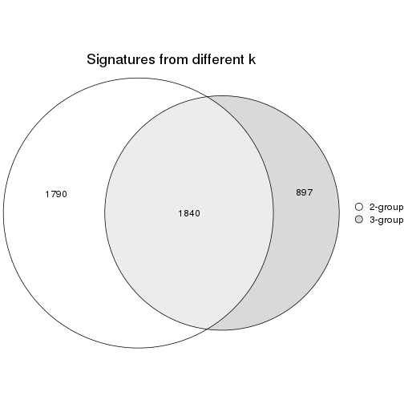
get_signature() returns a data frame invisibly. TO get the list of signatures, the function
call should be assigned to a variable explicitly. In following code, if plot argument is set
to FALSE, no heatmap is plotted while only the differential analysis is performed.
# code only for demonstration
tb = get_signature(res, k = ..., plot = FALSE)
An example of the output of tb is:
#> which_row fdr mean_1 mean_2 scaled_mean_1 scaled_mean_2 km
#> 1 38 0.042760348 8.373488 9.131774 -0.5533452 0.5164555 1
#> 2 40 0.018707592 7.106213 8.469186 -0.6173731 0.5762149 1
#> 3 55 0.019134737 10.221463 11.207825 -0.6159697 0.5749050 1
#> 4 59 0.006059896 5.921854 7.869574 -0.6899429 0.6439467 1
#> 5 60 0.018055526 8.928898 10.211722 -0.6204761 0.5791110 1
#> 6 98 0.009384629 15.714769 14.887706 0.6635654 -0.6193277 2
...
The columns in tb are:
which_row: row indices corresponding to the input matrix.fdr: FDR for the differential test. mean_x: The mean value in group x.scaled_mean_x: The mean value in group x after rows are scaled.km: Row groups if k-means clustering is applied to rows.UMAP plot which shows how samples are separated.
dimension_reduction(res, k = 2, method = "UMAP")
dimension_reduction(res, k = 3, method = "UMAP")
dimension_reduction(res, k = 4, method = "UMAP")
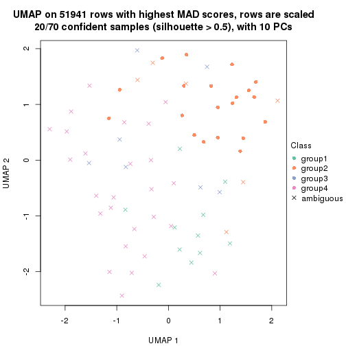
dimension_reduction(res, k = 5, method = "UMAP")
dimension_reduction(res, k = 6, method = "UMAP")
Following heatmap shows how subgroups are split when increasing k:
collect_classes(res)
Test correlation between subgroups and known annotations. If the known annotation is numeric, one-way ANOVA test is applied, and if the known annotation is discrete, chi-squared contingency table test is applied.
test_to_known_factors(res)
#> n age(p) time(p) tissue(p) individual(p) k
#> MAD:skmeans 69 0.0153 0.0174 1.000 0.0123 2
#> MAD:skmeans 35 0.0211 0.0432 0.552 0.0269 3
#> MAD:skmeans 20 NA NA NA NA 4
#> MAD:skmeans 18 NA NA NA NA 5
#> MAD:skmeans 13 NA NA NA NA 6
If matrix rows can be associated to genes, consider to use functional_enrichment(res,
...) to perform function enrichment for the signature genes. See this vignette for more detailed explanations.
The object with results only for a single top-value method and a single partition method can be extracted as:
res = res_list["MAD", "pam"]
# you can also extract it by
# res = res_list["MAD:pam"]
A summary of res and all the functions that can be applied to it:
res
#> A 'ConsensusPartition' object with k = 2, 3, 4, 5, 6.
#> On a matrix with 51941 rows and 70 columns.
#> Top rows (1000, 2000, 3000, 4000, 5000) are extracted by 'MAD' method.
#> Subgroups are detected by 'pam' method.
#> Performed in total 1250 partitions by row resampling.
#> Best k for subgroups seems to be 2.
#>
#> Following methods can be applied to this 'ConsensusPartition' object:
#> [1] "cola_report" "collect_classes" "collect_plots"
#> [4] "collect_stats" "colnames" "compare_signatures"
#> [7] "consensus_heatmap" "dimension_reduction" "functional_enrichment"
#> [10] "get_anno_col" "get_anno" "get_classes"
#> [13] "get_consensus" "get_matrix" "get_membership"
#> [16] "get_param" "get_signatures" "get_stats"
#> [19] "is_best_k" "is_stable_k" "membership_heatmap"
#> [22] "ncol" "nrow" "plot_ecdf"
#> [25] "rownames" "select_partition_number" "show"
#> [28] "suggest_best_k" "test_to_known_factors"
collect_plots() function collects all the plots made from res for all k (number of partitions)
into one single page to provide an easy and fast comparison between different k.
collect_plots(res)
The plots are:
k and the heatmap of
predicted classes for each k.k.k.k.All the plots in panels can be made by individual functions and they are plotted later in this section.
select_partition_number() produces several plots showing different
statistics for choosing “optimized” k. There are following statistics:
k;k, the area increased is defined as \(A_k - A_{k-1}\).The detailed explanations of these statistics can be found in the cola vignette.
Generally speaking, lower PAC score, higher mean silhouette score or higher
concordance corresponds to better partition. Rand index and Jaccard index
measure how similar the current partition is compared to partition with k-1.
If they are too similar, we won't accept k is better than k-1.
select_partition_number(res)
The numeric values for all these statistics can be obtained by get_stats().
get_stats(res)
#> k 1-PAC mean_silhouette concordance area_increased Rand Jaccard
#> 2 2 0.780 0.880 0.947 0.5043 0.496 0.496
#> 3 3 0.402 0.322 0.576 0.3125 0.754 0.543
#> 4 4 0.519 0.609 0.794 0.1264 0.757 0.412
#> 5 5 0.533 0.512 0.727 0.0323 0.964 0.858
#> 6 6 0.538 0.496 0.722 0.0169 0.969 0.865
suggest_best_k() suggests the best \(k\) based on these statistics. The rules are as follows:
suggest_best_k(res)
#> [1] 2
Following shows the table of the partitions (You need to click the show/hide
code output link to see it). The membership matrix (columns with name p*)
is inferred by
clue::cl_consensus()
function with the SE method. Basically the value in the membership matrix
represents the probability to belong to a certain group. The finall class
label for an item is determined with the group with highest probability it
belongs to.
In get_classes() function, the entropy is calculated from the membership
matrix and the silhouette score is calculated from the consensus matrix.
cbind(get_classes(res, k = 2), get_membership(res, k = 2))
#> class entropy silhouette p1 p2
#> GSM701770 1 0.0000 0.9562 1.000 0.000
#> GSM701769 1 0.0376 0.9558 0.996 0.004
#> GSM701768 1 0.0672 0.9545 0.992 0.008
#> GSM701767 2 0.9998 0.0896 0.492 0.508
#> GSM701766 2 0.6623 0.7841 0.172 0.828
#> GSM701806 1 0.0000 0.9562 1.000 0.000
#> GSM701805 1 0.0000 0.9562 1.000 0.000
#> GSM701804 1 0.1633 0.9499 0.976 0.024
#> GSM701803 1 0.1633 0.9493 0.976 0.024
#> GSM701775 1 0.0000 0.9562 1.000 0.000
#> GSM701774 1 0.4562 0.8861 0.904 0.096
#> GSM701773 2 0.0000 0.9296 0.000 1.000
#> GSM701772 2 0.9044 0.5676 0.320 0.680
#> GSM701771 1 0.0000 0.9562 1.000 0.000
#> GSM701810 1 0.0000 0.9562 1.000 0.000
#> GSM701809 2 0.9896 0.2049 0.440 0.560
#> GSM701808 1 0.0000 0.9562 1.000 0.000
#> GSM701807 1 0.0000 0.9562 1.000 0.000
#> GSM701780 1 0.6531 0.7968 0.832 0.168
#> GSM701779 2 0.0000 0.9296 0.000 1.000
#> GSM701778 2 0.0000 0.9296 0.000 1.000
#> GSM701777 2 0.1414 0.9195 0.020 0.980
#> GSM701776 1 0.0000 0.9562 1.000 0.000
#> GSM701816 1 0.4022 0.9068 0.920 0.080
#> GSM701815 2 0.0376 0.9277 0.004 0.996
#> GSM701814 2 0.0000 0.9296 0.000 1.000
#> GSM701813 1 0.8763 0.5860 0.704 0.296
#> GSM701812 1 0.4161 0.9044 0.916 0.084
#> GSM701811 1 0.0672 0.9555 0.992 0.008
#> GSM701786 1 0.0672 0.9553 0.992 0.008
#> GSM701785 2 0.0000 0.9296 0.000 1.000
#> GSM701784 2 0.1843 0.9151 0.028 0.972
#> GSM701783 1 0.0000 0.9562 1.000 0.000
#> GSM701782 2 0.0000 0.9296 0.000 1.000
#> GSM701781 2 0.0000 0.9296 0.000 1.000
#> GSM701822 2 0.0000 0.9296 0.000 1.000
#> GSM701821 2 0.0000 0.9296 0.000 1.000
#> GSM701820 1 0.2236 0.9436 0.964 0.036
#> GSM701819 1 0.2236 0.9433 0.964 0.036
#> GSM701818 1 0.1843 0.9477 0.972 0.028
#> GSM701817 1 0.2423 0.9414 0.960 0.040
#> GSM701790 1 0.8955 0.5100 0.688 0.312
#> GSM701789 1 0.0000 0.9562 1.000 0.000
#> GSM701788 1 0.0000 0.9562 1.000 0.000
#> GSM701787 2 0.2778 0.9034 0.048 0.952
#> GSM701824 1 0.0000 0.9562 1.000 0.000
#> GSM701823 2 0.0000 0.9296 0.000 1.000
#> GSM701791 2 0.0000 0.9296 0.000 1.000
#> GSM701793 1 0.0000 0.9562 1.000 0.000
#> GSM701792 2 0.9580 0.4420 0.380 0.620
#> GSM701825 1 0.0376 0.9558 0.996 0.004
#> GSM701827 2 0.0000 0.9296 0.000 1.000
#> GSM701826 2 0.0376 0.9278 0.004 0.996
#> GSM701797 2 0.0000 0.9296 0.000 1.000
#> GSM701796 1 0.0672 0.9552 0.992 0.008
#> GSM701795 2 0.0000 0.9296 0.000 1.000
#> GSM701794 2 0.0000 0.9296 0.000 1.000
#> GSM701831 2 0.0000 0.9296 0.000 1.000
#> GSM701830 2 0.0000 0.9296 0.000 1.000
#> GSM701829 2 0.4431 0.8637 0.092 0.908
#> GSM701828 2 0.0000 0.9296 0.000 1.000
#> GSM701798 2 0.0000 0.9296 0.000 1.000
#> GSM701802 2 0.0000 0.9296 0.000 1.000
#> GSM701801 2 0.7674 0.7123 0.224 0.776
#> GSM701800 2 0.5842 0.8204 0.140 0.860
#> GSM701799 2 0.0000 0.9296 0.000 1.000
#> GSM701832 2 0.0000 0.9296 0.000 1.000
#> GSM701835 2 0.4815 0.8531 0.104 0.896
#> GSM701834 2 0.0000 0.9296 0.000 1.000
#> GSM701833 2 0.0000 0.9296 0.000 1.000
cbind(get_classes(res, k = 3), get_membership(res, k = 3))
#> class entropy silhouette p1 p2 p3
#> GSM701770 1 0.5882 0.6985 0.652 0.000 0.348
#> GSM701769 1 0.6345 0.6816 0.596 0.004 0.400
#> GSM701768 1 0.6936 0.6516 0.524 0.016 0.460
#> GSM701767 2 0.8937 -0.1525 0.124 0.448 0.428
#> GSM701766 3 0.8920 0.1311 0.144 0.324 0.532
#> GSM701806 1 0.1753 0.7101 0.952 0.000 0.048
#> GSM701805 1 0.2537 0.7146 0.920 0.000 0.080
#> GSM701804 1 0.5728 0.4896 0.720 0.272 0.008
#> GSM701803 1 0.6912 0.2193 0.540 0.444 0.016
#> GSM701775 1 0.6410 0.6772 0.576 0.004 0.420
#> GSM701774 1 0.7978 0.5700 0.660 0.164 0.176
#> GSM701773 3 0.6295 0.5060 0.000 0.472 0.528
#> GSM701772 3 0.8386 -0.1689 0.224 0.156 0.620
#> GSM701771 1 0.1411 0.7068 0.964 0.000 0.036
#> GSM701810 1 0.0424 0.6975 0.992 0.000 0.008
#> GSM701809 3 0.9936 -0.0731 0.336 0.284 0.380
#> GSM701808 1 0.0983 0.6971 0.980 0.004 0.016
#> GSM701807 1 0.1337 0.6985 0.972 0.016 0.012
#> GSM701780 3 0.9647 -0.4444 0.264 0.268 0.468
#> GSM701779 3 0.6295 0.5060 0.000 0.472 0.528
#> GSM701778 2 0.6291 -0.4306 0.000 0.532 0.468
#> GSM701777 2 0.4399 0.3262 0.000 0.812 0.188
#> GSM701776 1 0.1411 0.7079 0.964 0.000 0.036
#> GSM701816 2 0.8886 -0.1121 0.352 0.516 0.132
#> GSM701815 2 0.6489 -0.4198 0.004 0.540 0.456
#> GSM701814 2 0.6215 -0.3669 0.000 0.572 0.428
#> GSM701813 2 0.6669 -0.1248 0.468 0.524 0.008
#> GSM701812 2 0.8185 -0.1601 0.428 0.500 0.072
#> GSM701811 1 0.7084 0.6946 0.628 0.036 0.336
#> GSM701786 1 0.0661 0.6994 0.988 0.004 0.008
#> GSM701785 3 0.6295 0.5060 0.000 0.472 0.528
#> GSM701784 3 0.6941 0.4736 0.016 0.464 0.520
#> GSM701783 1 0.5560 0.7073 0.700 0.000 0.300
#> GSM701782 2 0.3879 0.2956 0.000 0.848 0.152
#> GSM701781 2 0.3816 0.3011 0.000 0.852 0.148
#> GSM701822 2 0.5988 -0.2269 0.000 0.632 0.368
#> GSM701821 2 0.5968 -0.2334 0.000 0.636 0.364
#> GSM701820 1 0.7806 0.3891 0.584 0.352 0.064
#> GSM701819 1 0.5244 0.5201 0.756 0.240 0.004
#> GSM701818 1 0.6737 0.3246 0.600 0.384 0.016
#> GSM701817 2 0.9358 -0.0679 0.244 0.516 0.240
#> GSM701790 1 0.6669 0.6460 0.524 0.008 0.468
#> GSM701789 1 0.6633 0.6597 0.548 0.008 0.444
#> GSM701788 1 0.6180 0.6761 0.584 0.000 0.416
#> GSM701787 3 0.6984 0.2001 0.020 0.420 0.560
#> GSM701824 1 0.5285 0.7096 0.752 0.004 0.244
#> GSM701823 2 0.3038 0.3262 0.000 0.896 0.104
#> GSM701791 3 0.6295 0.5060 0.000 0.472 0.528
#> GSM701793 1 0.6267 0.6601 0.548 0.000 0.452
#> GSM701792 3 0.8058 -0.1854 0.212 0.140 0.648
#> GSM701825 1 0.5502 0.5074 0.744 0.248 0.008
#> GSM701827 3 0.6295 0.5060 0.000 0.472 0.528
#> GSM701826 2 0.4346 0.3131 0.000 0.816 0.184
#> GSM701797 2 0.6008 -0.1829 0.000 0.628 0.372
#> GSM701796 1 0.8744 0.6078 0.448 0.108 0.444
#> GSM701795 3 0.6299 0.5009 0.000 0.476 0.524
#> GSM701794 3 0.6295 0.5060 0.000 0.472 0.528
#> GSM701831 2 0.2537 0.3490 0.000 0.920 0.080
#> GSM701830 2 0.3752 0.2864 0.000 0.856 0.144
#> GSM701829 2 0.3933 0.3732 0.092 0.880 0.028
#> GSM701828 2 0.4702 0.1617 0.000 0.788 0.212
#> GSM701798 3 0.6305 0.4919 0.000 0.484 0.516
#> GSM701802 2 0.6307 -0.4762 0.000 0.512 0.488
#> GSM701801 2 0.6521 0.1596 0.004 0.500 0.496
#> GSM701800 2 0.5731 0.3565 0.088 0.804 0.108
#> GSM701799 3 0.6295 0.5060 0.000 0.472 0.528
#> GSM701832 2 0.5968 -0.1576 0.000 0.636 0.364
#> GSM701835 2 0.4087 0.3746 0.052 0.880 0.068
#> GSM701834 2 0.2537 0.3434 0.000 0.920 0.080
#> GSM701833 3 0.6299 0.5002 0.000 0.476 0.524
cbind(get_classes(res, k = 4), get_membership(res, k = 4))
#> class entropy silhouette p1 p2 p3 p4
#> GSM701770 1 0.4916 0.3889 0.576 0.000 0.000 0.424
#> GSM701769 1 0.3791 0.7096 0.796 0.000 0.004 0.200
#> GSM701768 1 0.2399 0.7429 0.920 0.000 0.032 0.048
#> GSM701767 3 0.5559 0.1991 0.400 0.016 0.580 0.004
#> GSM701766 2 0.6217 0.2317 0.400 0.552 0.040 0.008
#> GSM701806 4 0.3444 0.5911 0.184 0.000 0.000 0.816
#> GSM701805 4 0.4262 0.5357 0.236 0.000 0.008 0.756
#> GSM701804 4 0.4546 0.5677 0.012 0.000 0.256 0.732
#> GSM701803 3 0.4690 0.5055 0.016 0.000 0.724 0.260
#> GSM701775 1 0.2909 0.7133 0.888 0.000 0.020 0.092
#> GSM701774 4 0.5760 0.1066 0.456 0.004 0.020 0.520
#> GSM701773 2 0.0188 0.8313 0.000 0.996 0.004 0.000
#> GSM701772 1 0.5246 0.6193 0.760 0.148 0.088 0.004
#> GSM701771 4 0.3300 0.6397 0.144 0.000 0.008 0.848
#> GSM701810 4 0.3852 0.5884 0.180 0.000 0.012 0.808
#> GSM701809 4 0.7081 0.0660 0.004 0.416 0.108 0.472
#> GSM701808 4 0.3969 0.6095 0.180 0.000 0.016 0.804
#> GSM701807 4 0.1940 0.6614 0.076 0.000 0.000 0.924
#> GSM701780 1 0.7248 0.4001 0.580 0.044 0.304 0.072
#> GSM701779 2 0.0188 0.8308 0.000 0.996 0.004 0.000
#> GSM701778 2 0.1557 0.8114 0.000 0.944 0.056 0.000
#> GSM701777 3 0.4844 0.6173 0.012 0.300 0.688 0.000
#> GSM701776 4 0.2760 0.6390 0.128 0.000 0.000 0.872
#> GSM701816 3 0.4724 0.6190 0.076 0.000 0.788 0.136
#> GSM701815 2 0.2714 0.7837 0.000 0.884 0.112 0.004
#> GSM701814 2 0.3528 0.7114 0.000 0.808 0.192 0.000
#> GSM701813 3 0.2081 0.6772 0.000 0.000 0.916 0.084
#> GSM701812 3 0.4100 0.6407 0.036 0.000 0.816 0.148
#> GSM701811 1 0.5971 0.4645 0.584 0.000 0.048 0.368
#> GSM701786 4 0.1489 0.6682 0.044 0.000 0.004 0.952
#> GSM701785 2 0.0336 0.8296 0.000 0.992 0.008 0.000
#> GSM701784 2 0.1545 0.8165 0.040 0.952 0.008 0.000
#> GSM701783 1 0.4382 0.5940 0.704 0.000 0.000 0.296
#> GSM701782 3 0.4661 0.5699 0.000 0.348 0.652 0.000
#> GSM701781 3 0.4584 0.6259 0.004 0.300 0.696 0.000
#> GSM701822 2 0.4103 0.6441 0.000 0.744 0.256 0.000
#> GSM701821 2 0.4134 0.6383 0.000 0.740 0.260 0.000
#> GSM701820 4 0.6915 0.4490 0.140 0.000 0.296 0.564
#> GSM701819 4 0.1452 0.6728 0.008 0.000 0.036 0.956
#> GSM701818 4 0.5203 0.2520 0.008 0.000 0.416 0.576
#> GSM701817 3 0.4100 0.6441 0.048 0.000 0.824 0.128
#> GSM701790 1 0.1545 0.7422 0.952 0.000 0.008 0.040
#> GSM701789 1 0.4088 0.6542 0.764 0.000 0.004 0.232
#> GSM701788 1 0.2988 0.7390 0.876 0.000 0.012 0.112
#> GSM701787 2 0.6347 0.4923 0.276 0.624 0.100 0.000
#> GSM701824 1 0.5650 0.2712 0.544 0.000 0.024 0.432
#> GSM701823 3 0.4382 0.5700 0.000 0.296 0.704 0.000
#> GSM701791 2 0.0000 0.8308 0.000 1.000 0.000 0.000
#> GSM701793 1 0.1913 0.7361 0.940 0.000 0.020 0.040
#> GSM701792 1 0.4407 0.6685 0.820 0.100 0.076 0.004
#> GSM701825 4 0.3649 0.5952 0.000 0.000 0.204 0.796
#> GSM701827 2 0.0336 0.8303 0.000 0.992 0.008 0.000
#> GSM701826 3 0.5489 0.4805 0.040 0.296 0.664 0.000
#> GSM701797 2 0.4040 0.5448 0.000 0.752 0.248 0.000
#> GSM701796 1 0.3679 0.7383 0.856 0.000 0.060 0.084
#> GSM701795 2 0.0336 0.8296 0.000 0.992 0.008 0.000
#> GSM701794 2 0.0000 0.8308 0.000 1.000 0.000 0.000
#> GSM701831 3 0.3975 0.6762 0.000 0.240 0.760 0.000
#> GSM701830 3 0.4916 0.2731 0.000 0.424 0.576 0.000
#> GSM701829 3 0.4188 0.7106 0.000 0.148 0.812 0.040
#> GSM701828 2 0.4992 0.0666 0.000 0.524 0.476 0.000
#> GSM701798 2 0.0469 0.8314 0.000 0.988 0.012 0.000
#> GSM701802 2 0.1474 0.8159 0.000 0.948 0.052 0.000
#> GSM701801 3 0.5008 0.5976 0.228 0.040 0.732 0.000
#> GSM701800 3 0.2197 0.7046 0.028 0.024 0.936 0.012
#> GSM701799 2 0.0000 0.8308 0.000 1.000 0.000 0.000
#> GSM701832 2 0.4897 0.5361 0.008 0.660 0.332 0.000
#> GSM701835 3 0.1443 0.7056 0.008 0.028 0.960 0.004
#> GSM701834 3 0.4164 0.6011 0.000 0.264 0.736 0.000
#> GSM701833 2 0.0469 0.8303 0.000 0.988 0.012 0.000
cbind(get_classes(res, k = 5), get_membership(res, k = 5))
#> class entropy silhouette p1 p2 p3 p4 p5
#> GSM701770 5 0.5124 0.3602 0.288 0.000 0.000 0.068 0.644
#> GSM701769 1 0.4806 0.5678 0.688 0.000 0.000 0.060 0.252
#> GSM701768 1 0.2777 0.6901 0.864 0.000 0.000 0.016 0.120
#> GSM701767 3 0.5693 0.2048 0.408 0.012 0.536 0.012 0.032
#> GSM701766 2 0.5440 0.0828 0.456 0.500 0.032 0.004 0.008
#> GSM701806 5 0.4914 0.5711 0.064 0.000 0.000 0.260 0.676
#> GSM701805 5 0.6149 0.4175 0.120 0.000 0.004 0.372 0.504
#> GSM701804 4 0.5071 0.1762 0.004 0.000 0.040 0.616 0.340
#> GSM701803 3 0.5355 0.5031 0.008 0.000 0.688 0.184 0.120
#> GSM701775 1 0.1704 0.6829 0.928 0.000 0.000 0.068 0.004
#> GSM701774 4 0.4916 0.1180 0.440 0.004 0.012 0.540 0.004
#> GSM701773 2 0.0000 0.8185 0.000 1.000 0.000 0.000 0.000
#> GSM701772 1 0.3934 0.6113 0.828 0.108 0.036 0.008 0.020
#> GSM701771 5 0.5505 0.3516 0.064 0.000 0.000 0.452 0.484
#> GSM701810 4 0.5225 0.1997 0.188 0.000 0.004 0.692 0.116
#> GSM701809 4 0.5394 0.0983 0.000 0.400 0.060 0.540 0.000
#> GSM701808 4 0.5349 0.2242 0.176 0.000 0.012 0.696 0.116
#> GSM701807 5 0.4510 0.3887 0.008 0.000 0.000 0.432 0.560
#> GSM701780 1 0.7037 0.3638 0.560 0.036 0.288 0.064 0.052
#> GSM701779 2 0.0162 0.8185 0.000 0.996 0.004 0.000 0.000
#> GSM701778 2 0.1410 0.7988 0.000 0.940 0.060 0.000 0.000
#> GSM701777 3 0.4970 0.6270 0.028 0.284 0.672 0.004 0.012
#> GSM701776 5 0.4227 0.5479 0.016 0.000 0.000 0.292 0.692
#> GSM701816 3 0.4194 0.5935 0.080 0.000 0.788 0.128 0.004
#> GSM701815 2 0.2377 0.7718 0.000 0.872 0.128 0.000 0.000
#> GSM701814 2 0.4211 0.6838 0.008 0.764 0.200 0.024 0.004
#> GSM701813 3 0.1768 0.6649 0.000 0.000 0.924 0.072 0.004
#> GSM701812 3 0.3387 0.6365 0.020 0.000 0.832 0.140 0.008
#> GSM701811 5 0.6516 -0.0723 0.432 0.000 0.024 0.104 0.440
#> GSM701786 4 0.4787 -0.3213 0.012 0.000 0.004 0.528 0.456
#> GSM701785 2 0.0324 0.8176 0.000 0.992 0.004 0.000 0.004
#> GSM701784 2 0.1756 0.8080 0.036 0.940 0.016 0.008 0.000
#> GSM701783 1 0.5526 0.5103 0.648 0.000 0.000 0.200 0.152
#> GSM701782 3 0.4353 0.5850 0.008 0.328 0.660 0.000 0.004
#> GSM701781 3 0.4240 0.6373 0.012 0.284 0.700 0.004 0.000
#> GSM701822 2 0.4014 0.6444 0.000 0.728 0.256 0.016 0.000
#> GSM701821 2 0.3944 0.6139 0.000 0.720 0.272 0.004 0.004
#> GSM701820 4 0.6942 0.2731 0.136 0.000 0.280 0.532 0.052
#> GSM701819 4 0.4624 0.0630 0.012 0.000 0.016 0.676 0.296
#> GSM701818 4 0.5242 0.2073 0.008 0.000 0.380 0.576 0.036
#> GSM701817 3 0.4352 0.6089 0.060 0.000 0.772 0.160 0.008
#> GSM701790 1 0.2605 0.6879 0.852 0.000 0.000 0.000 0.148
#> GSM701789 1 0.4306 0.1570 0.508 0.000 0.000 0.000 0.492
#> GSM701788 1 0.4162 0.6530 0.768 0.000 0.000 0.056 0.176
#> GSM701787 2 0.5924 0.4285 0.360 0.564 0.048 0.008 0.020
#> GSM701824 1 0.6880 -0.1005 0.408 0.000 0.008 0.224 0.360
#> GSM701823 3 0.4216 0.5785 0.008 0.260 0.720 0.012 0.000
#> GSM701791 2 0.0000 0.8185 0.000 1.000 0.000 0.000 0.000
#> GSM701793 1 0.1831 0.6966 0.920 0.000 0.000 0.004 0.076
#> GSM701792 1 0.2507 0.6644 0.908 0.056 0.016 0.004 0.016
#> GSM701825 4 0.6572 0.1259 0.016 0.000 0.184 0.544 0.256
#> GSM701827 2 0.1106 0.8126 0.000 0.964 0.024 0.012 0.000
#> GSM701826 3 0.6074 0.4468 0.064 0.272 0.624 0.028 0.012
#> GSM701797 2 0.3700 0.5385 0.008 0.752 0.240 0.000 0.000
#> GSM701796 1 0.4451 0.6745 0.788 0.000 0.048 0.036 0.128
#> GSM701795 2 0.0290 0.8168 0.000 0.992 0.008 0.000 0.000
#> GSM701794 2 0.0000 0.8185 0.000 1.000 0.000 0.000 0.000
#> GSM701831 3 0.3242 0.6739 0.000 0.216 0.784 0.000 0.000
#> GSM701830 3 0.4299 0.3048 0.000 0.388 0.608 0.004 0.000
#> GSM701829 3 0.4066 0.6788 0.004 0.124 0.804 0.064 0.004
#> GSM701828 2 0.5084 0.0587 0.008 0.488 0.484 0.020 0.000
#> GSM701798 2 0.0609 0.8177 0.000 0.980 0.020 0.000 0.000
#> GSM701802 2 0.1197 0.8078 0.000 0.952 0.048 0.000 0.000
#> GSM701801 3 0.4222 0.6006 0.228 0.020 0.744 0.004 0.004
#> GSM701800 3 0.3005 0.6872 0.068 0.028 0.884 0.008 0.012
#> GSM701799 2 0.0000 0.8185 0.000 1.000 0.000 0.000 0.000
#> GSM701832 2 0.5358 0.4962 0.016 0.616 0.336 0.020 0.012
#> GSM701835 3 0.1721 0.6863 0.020 0.028 0.944 0.004 0.004
#> GSM701834 3 0.3944 0.6204 0.000 0.212 0.764 0.020 0.004
#> GSM701833 2 0.1300 0.8111 0.000 0.956 0.028 0.016 0.000
cbind(get_classes(res, k = 6), get_membership(res, k = 6))
#> class entropy silhouette p1 p2 p3 p4 p5 p6
#> GSM701770 1 0.3855 0.3155 0.704 0.000 0.000 0.276 0.016 0.004
#> GSM701769 4 0.5052 0.4922 0.272 0.000 0.000 0.640 0.064 0.024
#> GSM701768 4 0.3649 0.6458 0.096 0.000 0.000 0.820 0.040 0.044
#> GSM701767 3 0.6814 0.1794 0.016 0.012 0.476 0.348 0.056 0.092
#> GSM701766 2 0.5597 0.0613 0.000 0.484 0.028 0.436 0.024 0.028
#> GSM701806 1 0.1889 0.5406 0.920 0.000 0.000 0.056 0.020 0.004
#> GSM701805 1 0.5178 0.4609 0.684 0.000 0.004 0.128 0.160 0.024
#> GSM701804 6 0.4068 0.0000 0.080 0.000 0.004 0.000 0.160 0.756
#> GSM701803 3 0.6066 0.3992 0.124 0.000 0.596 0.008 0.224 0.048
#> GSM701775 4 0.1668 0.6551 0.008 0.000 0.000 0.928 0.060 0.004
#> GSM701774 4 0.6598 -0.2235 0.232 0.004 0.016 0.404 0.340 0.004
#> GSM701773 2 0.0146 0.8145 0.000 0.996 0.004 0.000 0.000 0.000
#> GSM701772 4 0.4318 0.5792 0.000 0.096 0.032 0.792 0.052 0.028
#> GSM701771 1 0.4488 0.3790 0.704 0.000 0.000 0.060 0.224 0.012
#> GSM701810 5 0.5971 0.0980 0.352 0.000 0.004 0.172 0.468 0.004
#> GSM701809 5 0.7139 0.0874 0.160 0.368 0.024 0.000 0.392 0.056
#> GSM701808 5 0.6194 0.1103 0.372 0.000 0.012 0.132 0.468 0.016
#> GSM701807 1 0.3163 0.4567 0.824 0.000 0.000 0.008 0.144 0.024
#> GSM701780 4 0.6584 0.3040 0.064 0.032 0.304 0.540 0.048 0.012
#> GSM701779 2 0.0146 0.8143 0.000 0.996 0.004 0.000 0.000 0.000
#> GSM701778 2 0.1267 0.7971 0.000 0.940 0.060 0.000 0.000 0.000
#> GSM701777 3 0.5221 0.6053 0.012 0.240 0.672 0.036 0.012 0.028
#> GSM701776 1 0.1262 0.5263 0.956 0.000 0.000 0.008 0.020 0.016
#> GSM701816 3 0.4485 0.5607 0.080 0.000 0.780 0.076 0.048 0.016
#> GSM701815 2 0.2234 0.7716 0.000 0.872 0.124 0.000 0.000 0.004
#> GSM701814 2 0.4447 0.6747 0.000 0.740 0.180 0.004 0.024 0.052
#> GSM701813 3 0.2345 0.6369 0.020 0.000 0.900 0.000 0.060 0.020
#> GSM701812 3 0.3264 0.6184 0.024 0.000 0.844 0.020 0.104 0.008
#> GSM701811 1 0.6235 -0.0917 0.456 0.000 0.024 0.416 0.064 0.040
#> GSM701786 1 0.3744 0.3362 0.720 0.000 0.004 0.008 0.264 0.004
#> GSM701785 2 0.0405 0.8134 0.000 0.988 0.000 0.000 0.008 0.004
#> GSM701784 2 0.2176 0.7999 0.004 0.916 0.020 0.036 0.000 0.024
#> GSM701783 4 0.5356 0.4569 0.200 0.000 0.000 0.620 0.172 0.008
#> GSM701782 3 0.4111 0.5838 0.000 0.296 0.676 0.004 0.000 0.024
#> GSM701781 3 0.4185 0.6169 0.000 0.272 0.696 0.008 0.008 0.016
#> GSM701822 2 0.4136 0.6390 0.000 0.708 0.248 0.000 0.004 0.040
#> GSM701821 2 0.3924 0.6195 0.000 0.720 0.252 0.000 0.016 0.012
#> GSM701820 5 0.8167 0.3190 0.220 0.000 0.244 0.104 0.364 0.068
#> GSM701819 1 0.4702 -0.0851 0.524 0.000 0.016 0.008 0.444 0.008
#> GSM701818 5 0.6464 0.2546 0.144 0.000 0.360 0.012 0.456 0.028
#> GSM701817 3 0.4228 0.5799 0.012 0.000 0.768 0.048 0.156 0.016
#> GSM701790 4 0.2750 0.6489 0.136 0.000 0.000 0.844 0.000 0.020
#> GSM701789 4 0.4394 0.1277 0.484 0.000 0.000 0.496 0.004 0.016
#> GSM701788 4 0.4288 0.6074 0.180 0.000 0.000 0.744 0.056 0.020
#> GSM701787 2 0.5735 0.4237 0.004 0.552 0.032 0.356 0.032 0.024
#> GSM701824 1 0.6422 0.0279 0.428 0.000 0.008 0.372 0.172 0.020
#> GSM701823 3 0.4232 0.5747 0.000 0.252 0.704 0.004 0.004 0.036
#> GSM701791 2 0.0000 0.8140 0.000 1.000 0.000 0.000 0.000 0.000
#> GSM701793 4 0.1923 0.6613 0.064 0.000 0.000 0.916 0.004 0.016
#> GSM701792 4 0.3131 0.6310 0.000 0.044 0.012 0.868 0.044 0.032
#> GSM701825 5 0.5893 0.0867 0.176 0.000 0.176 0.004 0.608 0.036
#> GSM701827 2 0.1485 0.8051 0.000 0.944 0.024 0.000 0.004 0.028
#> GSM701826 3 0.6305 0.4063 0.000 0.268 0.576 0.060 0.040 0.056
#> GSM701797 2 0.3298 0.5436 0.000 0.756 0.236 0.008 0.000 0.000
#> GSM701796 4 0.4759 0.6293 0.112 0.000 0.044 0.760 0.028 0.056
#> GSM701795 2 0.0146 0.8132 0.000 0.996 0.004 0.000 0.000 0.000
#> GSM701794 2 0.0000 0.8140 0.000 1.000 0.000 0.000 0.000 0.000
#> GSM701831 3 0.2871 0.6511 0.000 0.192 0.804 0.000 0.000 0.004
#> GSM701830 3 0.4037 0.3039 0.000 0.380 0.608 0.000 0.000 0.012
#> GSM701829 3 0.4218 0.6399 0.000 0.116 0.776 0.000 0.072 0.036
#> GSM701828 2 0.5061 0.0876 0.000 0.480 0.464 0.004 0.008 0.044
#> GSM701798 2 0.0458 0.8142 0.000 0.984 0.016 0.000 0.000 0.000
#> GSM701802 2 0.1075 0.8052 0.000 0.952 0.048 0.000 0.000 0.000
#> GSM701801 3 0.4017 0.5819 0.000 0.008 0.760 0.188 0.008 0.036
#> GSM701800 3 0.3110 0.6595 0.000 0.028 0.868 0.056 0.036 0.012
#> GSM701799 2 0.0000 0.8140 0.000 1.000 0.000 0.000 0.000 0.000
#> GSM701832 2 0.5828 0.4723 0.000 0.580 0.308 0.028 0.036 0.048
#> GSM701835 3 0.1621 0.6599 0.004 0.028 0.944 0.012 0.004 0.008
#> GSM701834 3 0.4288 0.5822 0.000 0.204 0.732 0.000 0.020 0.044
#> GSM701833 2 0.1716 0.8020 0.000 0.932 0.028 0.000 0.004 0.036
Heatmaps for the consensus matrix. It visualizes the probability of two samples to be in a same group.
consensus_heatmap(res, k = 2)
consensus_heatmap(res, k = 3)
consensus_heatmap(res, k = 4)
consensus_heatmap(res, k = 5)
consensus_heatmap(res, k = 6)
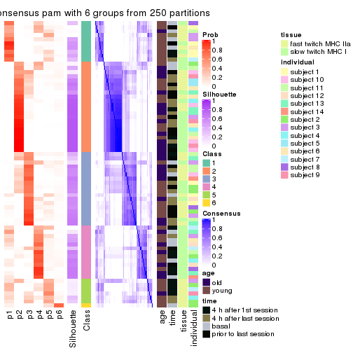
Heatmaps for the membership of samples in all partitions to see how consistent they are:
membership_heatmap(res, k = 2)
membership_heatmap(res, k = 3)
membership_heatmap(res, k = 4)
membership_heatmap(res, k = 5)
membership_heatmap(res, k = 6)
As soon as we have had the classes for columns, we can look for signatures which are significantly different between classes which can be candidate marks for certain classes. Following are the heatmaps for signatures.
Signature heatmaps where rows are scaled:
get_signatures(res, k = 2)
get_signatures(res, k = 3)
get_signatures(res, k = 4)
get_signatures(res, k = 5)
get_signatures(res, k = 6)

Signature heatmaps where rows are not scaled:
get_signatures(res, k = 2, scale_rows = FALSE)
get_signatures(res, k = 3, scale_rows = FALSE)
get_signatures(res, k = 4, scale_rows = FALSE)
get_signatures(res, k = 5, scale_rows = FALSE)
get_signatures(res, k = 6, scale_rows = FALSE)
Compare the overlap of signatures from different k:
compare_signatures(res)
get_signature() returns a data frame invisibly. TO get the list of signatures, the function
call should be assigned to a variable explicitly. In following code, if plot argument is set
to FALSE, no heatmap is plotted while only the differential analysis is performed.
# code only for demonstration
tb = get_signature(res, k = ..., plot = FALSE)
An example of the output of tb is:
#> which_row fdr mean_1 mean_2 scaled_mean_1 scaled_mean_2 km
#> 1 38 0.042760348 8.373488 9.131774 -0.5533452 0.5164555 1
#> 2 40 0.018707592 7.106213 8.469186 -0.6173731 0.5762149 1
#> 3 55 0.019134737 10.221463 11.207825 -0.6159697 0.5749050 1
#> 4 59 0.006059896 5.921854 7.869574 -0.6899429 0.6439467 1
#> 5 60 0.018055526 8.928898 10.211722 -0.6204761 0.5791110 1
#> 6 98 0.009384629 15.714769 14.887706 0.6635654 -0.6193277 2
...
The columns in tb are:
which_row: row indices corresponding to the input matrix.fdr: FDR for the differential test. mean_x: The mean value in group x.scaled_mean_x: The mean value in group x after rows are scaled.km: Row groups if k-means clustering is applied to rows.UMAP plot which shows how samples are separated.
dimension_reduction(res, k = 2, method = "UMAP")
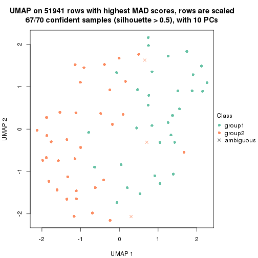
dimension_reduction(res, k = 3, method = "UMAP")
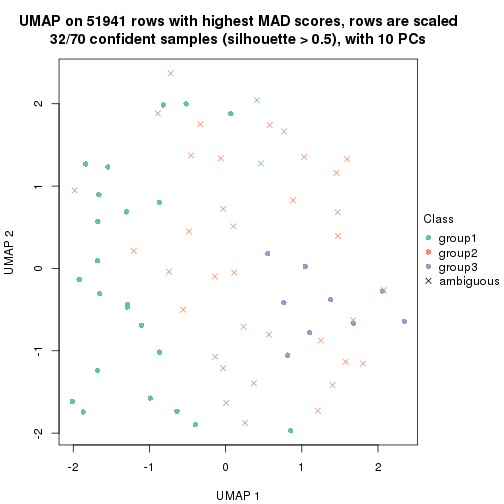
dimension_reduction(res, k = 4, method = "UMAP")
dimension_reduction(res, k = 5, method = "UMAP")
dimension_reduction(res, k = 6, method = "UMAP")
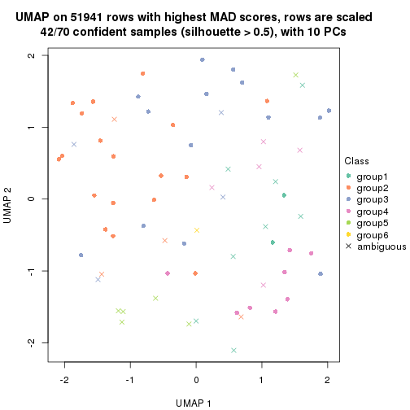
Following heatmap shows how subgroups are split when increasing k:
collect_classes(res)
Test correlation between subgroups and known annotations. If the known annotation is numeric, one-way ANOVA test is applied, and if the known annotation is discrete, chi-squared contingency table test is applied.
test_to_known_factors(res)
#> n age(p) time(p) tissue(p) individual(p) k
#> MAD:pam 67 0.00359 0.01601 0.55142 0.0162 2
#> MAD:pam 32 0.13994 0.09509 0.62306 0.1764 3
#> MAD:pam 56 0.08714 0.00275 0.00125 0.0571 4
#> MAD:pam 45 0.59875 0.01587 0.00858 0.3673 5
#> MAD:pam 42 0.47529 0.00502 0.02569 0.2745 6
If matrix rows can be associated to genes, consider to use functional_enrichment(res,
...) to perform function enrichment for the signature genes. See this vignette for more detailed explanations.
The object with results only for a single top-value method and a single partition method can be extracted as:
res = res_list["MAD", "mclust"]
# you can also extract it by
# res = res_list["MAD:mclust"]
A summary of res and all the functions that can be applied to it:
res
#> A 'ConsensusPartition' object with k = 2, 3, 4, 5, 6.
#> On a matrix with 51941 rows and 70 columns.
#> Top rows (1000, 2000, 3000, 4000, 5000) are extracted by 'MAD' method.
#> Subgroups are detected by 'mclust' method.
#> Performed in total 1250 partitions by row resampling.
#> Best k for subgroups seems to be 2.
#>
#> Following methods can be applied to this 'ConsensusPartition' object:
#> [1] "cola_report" "collect_classes" "collect_plots"
#> [4] "collect_stats" "colnames" "compare_signatures"
#> [7] "consensus_heatmap" "dimension_reduction" "functional_enrichment"
#> [10] "get_anno_col" "get_anno" "get_classes"
#> [13] "get_consensus" "get_matrix" "get_membership"
#> [16] "get_param" "get_signatures" "get_stats"
#> [19] "is_best_k" "is_stable_k" "membership_heatmap"
#> [22] "ncol" "nrow" "plot_ecdf"
#> [25] "rownames" "select_partition_number" "show"
#> [28] "suggest_best_k" "test_to_known_factors"
collect_plots() function collects all the plots made from res for all k (number of partitions)
into one single page to provide an easy and fast comparison between different k.
collect_plots(res)
The plots are:
k and the heatmap of
predicted classes for each k.k.k.k.All the plots in panels can be made by individual functions and they are plotted later in this section.
select_partition_number() produces several plots showing different
statistics for choosing “optimized” k. There are following statistics:
k;k, the area increased is defined as \(A_k - A_{k-1}\).The detailed explanations of these statistics can be found in the cola vignette.
Generally speaking, lower PAC score, higher mean silhouette score or higher
concordance corresponds to better partition. Rand index and Jaccard index
measure how similar the current partition is compared to partition with k-1.
If they are too similar, we won't accept k is better than k-1.
select_partition_number(res)
The numeric values for all these statistics can be obtained by get_stats().
get_stats(res)
#> k 1-PAC mean_silhouette concordance area_increased Rand Jaccard
#> 2 2 0.351 0.701 0.798 0.4624 0.499 0.499
#> 3 3 0.386 0.430 0.665 0.3273 0.855 0.710
#> 4 4 0.425 0.544 0.669 0.1686 0.833 0.564
#> 5 5 0.518 0.568 0.681 0.0819 0.882 0.581
#> 6 6 0.621 0.567 0.737 0.0527 0.945 0.740
suggest_best_k() suggests the best \(k\) based on these statistics. The rules are as follows:
suggest_best_k(res)
#> [1] 2
Following shows the table of the partitions (You need to click the show/hide
code output link to see it). The membership matrix (columns with name p*)
is inferred by
clue::cl_consensus()
function with the SE method. Basically the value in the membership matrix
represents the probability to belong to a certain group. The finall class
label for an item is determined with the group with highest probability it
belongs to.
In get_classes() function, the entropy is calculated from the membership
matrix and the silhouette score is calculated from the consensus matrix.
cbind(get_classes(res, k = 2), get_membership(res, k = 2))
#> class entropy silhouette p1 p2
#> GSM701770 1 0.0000 0.809 1.000 0.000
#> GSM701769 1 0.0000 0.809 1.000 0.000
#> GSM701768 1 0.0000 0.809 1.000 0.000
#> GSM701767 1 0.0376 0.806 0.996 0.004
#> GSM701766 1 0.1633 0.801 0.976 0.024
#> GSM701806 1 0.6148 0.571 0.848 0.152
#> GSM701805 2 0.9815 0.753 0.420 0.580
#> GSM701804 2 0.9815 0.753 0.420 0.580
#> GSM701803 2 0.9815 0.753 0.420 0.580
#> GSM701775 1 0.0000 0.809 1.000 0.000
#> GSM701774 1 0.0672 0.803 0.992 0.008
#> GSM701773 1 0.9815 0.497 0.580 0.420
#> GSM701772 1 0.0000 0.809 1.000 0.000
#> GSM701771 1 0.0000 0.809 1.000 0.000
#> GSM701810 2 0.9815 0.753 0.420 0.580
#> GSM701809 2 0.9815 0.753 0.420 0.580
#> GSM701808 2 0.9815 0.753 0.420 0.580
#> GSM701807 2 0.9815 0.753 0.420 0.580
#> GSM701780 1 0.0672 0.803 0.992 0.008
#> GSM701779 1 0.9866 0.485 0.568 0.432
#> GSM701778 1 0.9491 0.537 0.632 0.368
#> GSM701777 1 0.2043 0.797 0.968 0.032
#> GSM701776 2 0.9815 0.753 0.420 0.580
#> GSM701816 2 0.9833 0.748 0.424 0.576
#> GSM701815 2 0.8144 0.679 0.252 0.748
#> GSM701814 2 0.0000 0.591 0.000 1.000
#> GSM701813 2 0.9815 0.753 0.420 0.580
#> GSM701812 2 0.9833 0.748 0.424 0.576
#> GSM701811 1 0.0000 0.809 1.000 0.000
#> GSM701786 1 0.0000 0.809 1.000 0.000
#> GSM701785 1 0.7674 0.656 0.776 0.224
#> GSM701784 1 0.6712 0.696 0.824 0.176
#> GSM701783 1 0.0000 0.809 1.000 0.000
#> GSM701782 1 0.5842 0.726 0.860 0.140
#> GSM701781 1 0.6801 0.522 0.820 0.180
#> GSM701822 2 0.0000 0.591 0.000 1.000
#> GSM701821 2 0.3114 0.616 0.056 0.944
#> GSM701820 2 0.9815 0.753 0.420 0.580
#> GSM701819 2 0.9815 0.753 0.420 0.580
#> GSM701818 2 0.9815 0.753 0.420 0.580
#> GSM701817 2 0.9815 0.753 0.420 0.580
#> GSM701790 1 0.0000 0.809 1.000 0.000
#> GSM701789 1 0.0000 0.809 1.000 0.000
#> GSM701788 1 0.0000 0.809 1.000 0.000
#> GSM701787 1 0.1633 0.801 0.976 0.024
#> GSM701824 2 0.9833 0.749 0.424 0.576
#> GSM701823 2 0.5408 0.654 0.124 0.876
#> GSM701791 1 0.9815 0.497 0.580 0.420
#> GSM701793 1 0.0000 0.809 1.000 0.000
#> GSM701792 1 0.0000 0.809 1.000 0.000
#> GSM701825 2 0.9815 0.753 0.420 0.580
#> GSM701827 2 0.0938 0.584 0.012 0.988
#> GSM701826 2 0.7299 0.687 0.204 0.796
#> GSM701797 1 0.0000 0.809 1.000 0.000
#> GSM701796 1 0.0000 0.809 1.000 0.000
#> GSM701795 1 0.9815 0.497 0.580 0.420
#> GSM701794 1 0.9815 0.497 0.580 0.420
#> GSM701831 2 0.6973 0.516 0.188 0.812
#> GSM701830 2 0.0000 0.591 0.000 1.000
#> GSM701829 2 0.9754 0.750 0.408 0.592
#> GSM701828 2 0.8499 0.681 0.276 0.724
#> GSM701798 1 0.9661 0.519 0.608 0.392
#> GSM701802 1 0.6531 0.704 0.832 0.168
#> GSM701801 1 0.0000 0.809 1.000 0.000
#> GSM701800 1 0.2423 0.767 0.960 0.040
#> GSM701799 1 0.9815 0.497 0.580 0.420
#> GSM701832 2 0.8861 0.464 0.304 0.696
#> GSM701835 1 0.7219 0.455 0.800 0.200
#> GSM701834 2 0.0000 0.591 0.000 1.000
#> GSM701833 2 0.0000 0.591 0.000 1.000
cbind(get_classes(res, k = 3), get_membership(res, k = 3))
#> class entropy silhouette p1 p2 p3
#> GSM701770 3 0.8463 -0.3659 0.444 0.088 0.468
#> GSM701769 3 0.8404 -0.3605 0.452 0.084 0.464
#> GSM701768 1 0.7213 0.6347 0.700 0.088 0.212
#> GSM701767 3 0.8382 -0.2148 0.424 0.084 0.492
#> GSM701766 3 0.7878 -0.1488 0.392 0.060 0.548
#> GSM701806 1 0.9780 0.0580 0.416 0.344 0.240
#> GSM701805 2 0.0747 0.7857 0.016 0.984 0.000
#> GSM701804 2 0.1411 0.7808 0.036 0.964 0.000
#> GSM701803 2 0.1529 0.7825 0.040 0.960 0.000
#> GSM701775 1 0.6984 0.6281 0.720 0.088 0.192
#> GSM701774 3 0.8556 -0.2390 0.416 0.096 0.488
#> GSM701773 3 0.4452 0.3120 0.192 0.000 0.808
#> GSM701772 1 0.8149 0.4119 0.520 0.072 0.408
#> GSM701771 1 0.8454 0.3818 0.480 0.088 0.432
#> GSM701810 2 0.1529 0.7815 0.040 0.960 0.000
#> GSM701809 2 0.1399 0.7879 0.028 0.968 0.004
#> GSM701808 2 0.1163 0.7825 0.028 0.972 0.000
#> GSM701807 2 0.1529 0.7806 0.040 0.960 0.000
#> GSM701780 3 0.8633 -0.2061 0.436 0.100 0.464
#> GSM701779 3 0.5202 0.3382 0.136 0.044 0.820
#> GSM701778 3 0.3213 0.3911 0.060 0.028 0.912
#> GSM701777 3 0.7919 -0.0937 0.380 0.064 0.556
#> GSM701776 2 0.1529 0.7806 0.040 0.960 0.000
#> GSM701816 2 0.3030 0.7764 0.092 0.904 0.004
#> GSM701815 2 0.8255 0.6984 0.128 0.620 0.252
#> GSM701814 2 0.8456 0.6768 0.108 0.564 0.328
#> GSM701813 2 0.3083 0.7843 0.060 0.916 0.024
#> GSM701812 2 0.3686 0.7526 0.140 0.860 0.000
#> GSM701811 1 0.8460 0.3446 0.472 0.088 0.440
#> GSM701786 3 0.8401 -0.3232 0.444 0.084 0.472
#> GSM701785 3 0.7348 0.0705 0.348 0.044 0.608
#> GSM701784 1 0.8033 0.2883 0.512 0.064 0.424
#> GSM701783 3 0.8387 -0.3066 0.428 0.084 0.488
#> GSM701782 3 0.4964 0.3777 0.116 0.048 0.836
#> GSM701781 3 0.9490 0.1091 0.188 0.368 0.444
#> GSM701822 2 0.8395 0.6782 0.104 0.568 0.328
#> GSM701821 2 0.8582 0.6760 0.124 0.568 0.308
#> GSM701820 2 0.1163 0.7861 0.028 0.972 0.000
#> GSM701819 2 0.1289 0.7853 0.032 0.968 0.000
#> GSM701818 2 0.1163 0.7853 0.028 0.972 0.000
#> GSM701817 2 0.0747 0.7852 0.016 0.984 0.000
#> GSM701790 1 0.6954 0.6287 0.720 0.084 0.196
#> GSM701789 1 0.7001 0.6312 0.716 0.084 0.200
#> GSM701788 1 0.8404 0.3497 0.464 0.084 0.452
#> GSM701787 1 0.7773 0.5627 0.612 0.072 0.316
#> GSM701824 2 0.4679 0.6942 0.148 0.832 0.020
#> GSM701823 2 0.7739 0.7096 0.088 0.644 0.268
#> GSM701791 3 0.2878 0.3679 0.096 0.000 0.904
#> GSM701793 1 0.6954 0.6287 0.720 0.084 0.196
#> GSM701792 1 0.7565 0.6242 0.660 0.084 0.256
#> GSM701825 2 0.1529 0.7818 0.040 0.960 0.000
#> GSM701827 2 0.9328 0.6113 0.172 0.472 0.356
#> GSM701826 2 0.7022 0.7217 0.056 0.684 0.260
#> GSM701797 3 0.8022 -0.1520 0.388 0.068 0.544
#> GSM701796 1 0.8376 0.3945 0.496 0.084 0.420
#> GSM701795 3 0.2066 0.3814 0.060 0.000 0.940
#> GSM701794 3 0.2261 0.3789 0.068 0.000 0.932
#> GSM701831 2 0.9149 0.5267 0.144 0.440 0.416
#> GSM701830 2 0.8573 0.6739 0.116 0.556 0.328
#> GSM701829 2 0.6208 0.7579 0.076 0.772 0.152
#> GSM701828 2 0.8222 0.6673 0.100 0.592 0.308
#> GSM701798 3 0.2793 0.3935 0.044 0.028 0.928
#> GSM701802 3 0.6253 0.2626 0.232 0.036 0.732
#> GSM701801 3 0.8337 -0.3204 0.444 0.080 0.476
#> GSM701800 3 0.8710 -0.0648 0.380 0.112 0.508
#> GSM701799 3 0.1529 0.3861 0.040 0.000 0.960
#> GSM701832 2 0.8795 0.4455 0.112 0.444 0.444
#> GSM701835 3 0.9559 0.1702 0.264 0.252 0.484
#> GSM701834 2 0.8312 0.6831 0.100 0.576 0.324
#> GSM701833 2 0.8853 0.6659 0.140 0.540 0.320
cbind(get_classes(res, k = 4), get_membership(res, k = 4))
#> class entropy silhouette p1 p2 p3 p4
#> GSM701770 1 0.5689 0.5876 0.564 0.020 0.412 0.004
#> GSM701769 1 0.5793 0.5175 0.528 0.012 0.448 0.012
#> GSM701768 1 0.1617 0.6166 0.956 0.012 0.024 0.008
#> GSM701767 3 0.5026 -0.0293 0.312 0.000 0.672 0.016
#> GSM701766 3 0.6058 0.3360 0.256 0.068 0.668 0.008
#> GSM701806 1 0.9148 0.3445 0.440 0.104 0.252 0.204
#> GSM701805 4 0.3661 0.7623 0.008 0.088 0.040 0.864
#> GSM701804 4 0.1284 0.7527 0.012 0.024 0.000 0.964
#> GSM701803 4 0.3299 0.7654 0.012 0.056 0.044 0.888
#> GSM701775 1 0.0895 0.6098 0.976 0.004 0.020 0.000
#> GSM701774 1 0.6205 0.4762 0.484 0.016 0.476 0.024
#> GSM701773 3 0.7059 0.5346 0.140 0.332 0.528 0.000
#> GSM701772 1 0.5478 0.5769 0.636 0.008 0.340 0.016
#> GSM701771 1 0.5530 0.6168 0.616 0.020 0.360 0.004
#> GSM701810 4 0.3712 0.7393 0.028 0.080 0.024 0.868
#> GSM701809 4 0.4768 0.7344 0.008 0.120 0.072 0.800
#> GSM701808 4 0.1229 0.7596 0.004 0.020 0.008 0.968
#> GSM701807 4 0.0524 0.7550 0.008 0.000 0.004 0.988
#> GSM701780 3 0.5947 -0.0772 0.308 0.028 0.644 0.020
#> GSM701779 3 0.6894 0.4128 0.052 0.440 0.484 0.024
#> GSM701778 3 0.5269 0.5867 0.044 0.228 0.724 0.004
#> GSM701777 3 0.4161 0.4071 0.148 0.020 0.820 0.012
#> GSM701776 4 0.0672 0.7575 0.008 0.008 0.000 0.984
#> GSM701816 4 0.7232 0.4641 0.008 0.268 0.156 0.568
#> GSM701815 2 0.7710 0.3030 0.008 0.420 0.168 0.404
#> GSM701814 2 0.4053 0.7742 0.004 0.768 0.000 0.228
#> GSM701813 4 0.6335 0.6067 0.012 0.136 0.164 0.688
#> GSM701812 4 0.7397 0.4660 0.012 0.200 0.216 0.572
#> GSM701811 1 0.6116 0.5942 0.588 0.020 0.368 0.024
#> GSM701786 1 0.5728 0.5728 0.544 0.020 0.432 0.004
#> GSM701785 3 0.7422 0.5059 0.224 0.232 0.540 0.004
#> GSM701784 1 0.7646 -0.1653 0.488 0.208 0.300 0.004
#> GSM701783 1 0.5865 0.5686 0.536 0.020 0.436 0.008
#> GSM701782 3 0.4304 0.5457 0.044 0.116 0.828 0.012
#> GSM701781 3 0.7769 0.1899 0.044 0.192 0.584 0.180
#> GSM701822 2 0.4122 0.7725 0.004 0.760 0.000 0.236
#> GSM701821 2 0.6598 0.6057 0.008 0.584 0.076 0.332
#> GSM701820 4 0.3246 0.7292 0.008 0.116 0.008 0.868
#> GSM701819 4 0.4904 0.7128 0.008 0.080 0.120 0.792
#> GSM701818 4 0.4793 0.7191 0.008 0.080 0.112 0.800
#> GSM701817 4 0.3673 0.7617 0.012 0.044 0.076 0.868
#> GSM701790 1 0.1082 0.6108 0.972 0.004 0.020 0.004
#> GSM701789 1 0.1109 0.6135 0.968 0.004 0.028 0.000
#> GSM701788 1 0.5703 0.6365 0.644 0.024 0.320 0.012
#> GSM701787 1 0.6160 0.3718 0.684 0.084 0.220 0.012
#> GSM701824 4 0.6472 0.5705 0.132 0.128 0.036 0.704
#> GSM701823 2 0.4856 0.7377 0.008 0.712 0.008 0.272
#> GSM701791 3 0.6453 0.5658 0.072 0.344 0.580 0.004
#> GSM701793 1 0.1229 0.6088 0.968 0.008 0.020 0.004
#> GSM701792 1 0.2715 0.6211 0.892 0.004 0.100 0.004
#> GSM701825 4 0.1890 0.7407 0.008 0.056 0.000 0.936
#> GSM701827 2 0.3679 0.7493 0.004 0.840 0.016 0.140
#> GSM701826 2 0.5302 0.6486 0.012 0.628 0.004 0.356
#> GSM701797 3 0.4392 0.2512 0.216 0.004 0.768 0.012
#> GSM701796 1 0.4799 0.6429 0.704 0.004 0.284 0.008
#> GSM701795 3 0.6054 0.5706 0.056 0.352 0.592 0.000
#> GSM701794 3 0.6121 0.5683 0.060 0.352 0.588 0.000
#> GSM701831 2 0.8078 0.4762 0.012 0.448 0.268 0.272
#> GSM701830 2 0.3801 0.7772 0.000 0.780 0.000 0.220
#> GSM701829 4 0.7394 0.1393 0.008 0.344 0.140 0.508
#> GSM701828 2 0.5258 0.7482 0.008 0.732 0.040 0.220
#> GSM701798 3 0.5640 0.5875 0.052 0.256 0.688 0.004
#> GSM701802 3 0.6226 0.5483 0.132 0.184 0.680 0.004
#> GSM701801 3 0.4908 0.0585 0.292 0.000 0.692 0.016
#> GSM701800 3 0.5071 0.2816 0.184 0.016 0.764 0.036
#> GSM701799 3 0.6023 0.5722 0.056 0.344 0.600 0.000
#> GSM701832 2 0.7563 0.5713 0.012 0.544 0.192 0.252
#> GSM701835 3 0.8622 -0.0032 0.076 0.316 0.464 0.144
#> GSM701834 2 0.4155 0.7719 0.004 0.756 0.000 0.240
#> GSM701833 2 0.3668 0.7724 0.000 0.808 0.004 0.188
cbind(get_classes(res, k = 5), get_membership(res, k = 5))
#> class entropy silhouette p1 p2 p3 p4 p5
#> GSM701770 1 0.0771 0.6087 0.976 0.000 0.004 0.000 0.020
#> GSM701769 1 0.1582 0.6213 0.944 0.000 0.028 0.000 0.028
#> GSM701768 5 0.4101 0.7825 0.332 0.000 0.004 0.000 0.664
#> GSM701767 1 0.5744 0.4890 0.604 0.004 0.284 0.000 0.108
#> GSM701766 1 0.6235 0.1894 0.460 0.004 0.412 0.000 0.124
#> GSM701806 1 0.5994 0.3903 0.708 0.072 0.020 0.128 0.072
#> GSM701805 4 0.4074 0.7537 0.016 0.108 0.028 0.824 0.024
#> GSM701804 4 0.1717 0.7508 0.000 0.052 0.008 0.936 0.004
#> GSM701803 4 0.4822 0.7185 0.000 0.060 0.124 0.768 0.048
#> GSM701775 5 0.3774 0.8028 0.296 0.000 0.000 0.000 0.704
#> GSM701774 1 0.4943 0.6022 0.736 0.004 0.120 0.004 0.136
#> GSM701773 3 0.7167 0.5982 0.144 0.196 0.560 0.000 0.100
#> GSM701772 1 0.5840 0.3955 0.604 0.000 0.164 0.000 0.232
#> GSM701771 1 0.1792 0.5495 0.916 0.000 0.000 0.000 0.084
#> GSM701810 4 0.3195 0.7422 0.032 0.100 0.004 0.860 0.004
#> GSM701809 4 0.5519 0.6412 0.000 0.212 0.072 0.684 0.032
#> GSM701808 4 0.1502 0.7542 0.000 0.056 0.000 0.940 0.004
#> GSM701807 4 0.1059 0.7529 0.000 0.020 0.004 0.968 0.008
#> GSM701780 1 0.5740 0.5380 0.648 0.012 0.240 0.004 0.096
#> GSM701779 3 0.6252 0.4659 0.044 0.336 0.556 0.000 0.064
#> GSM701778 3 0.5801 0.5042 0.212 0.072 0.668 0.000 0.048
#> GSM701777 1 0.5613 0.2757 0.520 0.004 0.412 0.000 0.064
#> GSM701776 4 0.1012 0.7511 0.000 0.020 0.000 0.968 0.012
#> GSM701816 4 0.7820 0.3006 0.000 0.308 0.148 0.428 0.116
#> GSM701815 2 0.7678 0.4017 0.004 0.484 0.256 0.168 0.088
#> GSM701814 2 0.1329 0.7550 0.000 0.956 0.004 0.032 0.008
#> GSM701813 4 0.7228 0.5628 0.000 0.116 0.252 0.532 0.100
#> GSM701812 4 0.8529 0.4676 0.044 0.224 0.176 0.452 0.104
#> GSM701811 1 0.3448 0.5528 0.852 0.008 0.020 0.016 0.104
#> GSM701786 1 0.0771 0.6121 0.976 0.000 0.004 0.000 0.020
#> GSM701785 3 0.6668 0.4405 0.228 0.044 0.580 0.000 0.148
#> GSM701784 5 0.7122 0.1904 0.164 0.040 0.328 0.000 0.468
#> GSM701783 1 0.0609 0.6093 0.980 0.000 0.000 0.000 0.020
#> GSM701782 3 0.6552 0.1740 0.324 0.036 0.536 0.000 0.104
#> GSM701781 3 0.9364 0.0758 0.164 0.216 0.376 0.108 0.136
#> GSM701822 2 0.1331 0.7559 0.000 0.952 0.000 0.040 0.008
#> GSM701821 2 0.5759 0.6394 0.008 0.704 0.156 0.088 0.044
#> GSM701820 4 0.3086 0.6943 0.000 0.180 0.004 0.816 0.000
#> GSM701819 4 0.6504 0.6509 0.000 0.076 0.204 0.620 0.100
#> GSM701818 4 0.6444 0.6618 0.004 0.068 0.196 0.636 0.096
#> GSM701817 4 0.5142 0.7334 0.000 0.092 0.096 0.752 0.060
#> GSM701790 5 0.3684 0.8016 0.280 0.000 0.000 0.000 0.720
#> GSM701789 5 0.3876 0.7991 0.316 0.000 0.000 0.000 0.684
#> GSM701788 1 0.2561 0.4774 0.856 0.000 0.000 0.000 0.144
#> GSM701787 5 0.6052 0.5666 0.248 0.000 0.180 0.000 0.572
#> GSM701824 4 0.6516 0.6053 0.072 0.140 0.012 0.656 0.120
#> GSM701823 2 0.3473 0.7338 0.000 0.840 0.040 0.112 0.008
#> GSM701791 3 0.6473 0.6309 0.096 0.208 0.628 0.004 0.064
#> GSM701793 5 0.3636 0.7990 0.272 0.000 0.000 0.000 0.728
#> GSM701792 5 0.4602 0.7557 0.316 0.000 0.028 0.000 0.656
#> GSM701825 4 0.2130 0.7422 0.000 0.080 0.000 0.908 0.012
#> GSM701827 2 0.2172 0.7316 0.000 0.916 0.060 0.020 0.004
#> GSM701826 2 0.4195 0.6642 0.000 0.768 0.036 0.188 0.008
#> GSM701797 1 0.5593 0.4295 0.588 0.008 0.336 0.000 0.068
#> GSM701796 1 0.3519 0.3730 0.776 0.000 0.008 0.000 0.216
#> GSM701795 3 0.6198 0.6393 0.116 0.212 0.632 0.000 0.040
#> GSM701794 3 0.6195 0.6390 0.112 0.208 0.636 0.000 0.044
#> GSM701831 2 0.7691 0.4208 0.040 0.504 0.296 0.088 0.072
#> GSM701830 2 0.1116 0.7547 0.000 0.964 0.004 0.028 0.004
#> GSM701829 2 0.7337 0.1272 0.000 0.468 0.184 0.296 0.052
#> GSM701828 2 0.4693 0.7133 0.000 0.768 0.132 0.076 0.024
#> GSM701798 3 0.5538 0.5448 0.212 0.092 0.676 0.000 0.020
#> GSM701802 3 0.6071 0.3295 0.312 0.032 0.584 0.000 0.072
#> GSM701801 1 0.5171 0.5505 0.664 0.008 0.268 0.000 0.060
#> GSM701800 1 0.6397 0.3717 0.536 0.012 0.328 0.004 0.120
#> GSM701799 3 0.6212 0.6390 0.120 0.208 0.632 0.000 0.040
#> GSM701832 2 0.7310 0.4103 0.064 0.548 0.280 0.060 0.048
#> GSM701835 3 0.9025 0.0482 0.208 0.292 0.316 0.036 0.148
#> GSM701834 2 0.1673 0.7579 0.000 0.944 0.016 0.032 0.008
#> GSM701833 2 0.1668 0.7481 0.000 0.940 0.032 0.028 0.000
cbind(get_classes(res, k = 6), get_membership(res, k = 6))
#> class entropy silhouette p1 p2 p3 p4 p5 p6
#> GSM701770 1 0.1788 0.72667 0.916 0.000 0.000 0.076 0.004 0.004
#> GSM701769 1 0.2645 0.73423 0.880 0.000 0.020 0.084 0.012 0.004
#> GSM701768 4 0.1219 0.85585 0.048 0.000 0.000 0.948 0.000 0.004
#> GSM701767 1 0.4975 0.60583 0.688 0.000 0.200 0.032 0.080 0.000
#> GSM701766 3 0.5945 -0.01288 0.404 0.000 0.472 0.060 0.064 0.000
#> GSM701806 1 0.5950 0.55102 0.656 0.024 0.000 0.080 0.084 0.156
#> GSM701805 6 0.3610 0.69524 0.032 0.020 0.000 0.004 0.132 0.812
#> GSM701804 6 0.2212 0.73546 0.000 0.008 0.000 0.000 0.112 0.880
#> GSM701803 5 0.4246 0.22844 0.000 0.016 0.000 0.000 0.532 0.452
#> GSM701775 4 0.1010 0.85912 0.036 0.000 0.000 0.960 0.000 0.004
#> GSM701774 1 0.5350 0.69129 0.688 0.000 0.104 0.156 0.044 0.008
#> GSM701773 3 0.3904 0.63368 0.032 0.132 0.792 0.044 0.000 0.000
#> GSM701772 1 0.6096 0.47169 0.516 0.000 0.140 0.316 0.024 0.004
#> GSM701771 1 0.2544 0.70559 0.864 0.000 0.004 0.120 0.012 0.000
#> GSM701810 6 0.2507 0.77244 0.028 0.020 0.000 0.000 0.060 0.892
#> GSM701809 6 0.5295 0.46442 0.000 0.152 0.048 0.000 0.120 0.680
#> GSM701808 6 0.1464 0.78012 0.000 0.016 0.004 0.000 0.036 0.944
#> GSM701807 6 0.1531 0.76493 0.000 0.004 0.000 0.000 0.068 0.928
#> GSM701780 1 0.4836 0.65305 0.728 0.000 0.144 0.020 0.096 0.012
#> GSM701779 3 0.4053 0.47205 0.004 0.272 0.700 0.020 0.000 0.004
#> GSM701778 3 0.4627 0.56645 0.136 0.012 0.736 0.008 0.108 0.000
#> GSM701777 1 0.5178 0.23985 0.520 0.000 0.408 0.012 0.060 0.000
#> GSM701776 6 0.1152 0.77461 0.000 0.004 0.000 0.000 0.044 0.952
#> GSM701816 5 0.7316 0.26598 0.016 0.184 0.080 0.000 0.400 0.320
#> GSM701815 5 0.6358 0.01445 0.012 0.312 0.112 0.000 0.520 0.044
#> GSM701814 2 0.0405 0.72623 0.000 0.988 0.000 0.000 0.004 0.008
#> GSM701813 5 0.4337 0.50298 0.000 0.032 0.012 0.000 0.684 0.272
#> GSM701812 5 0.6105 0.45681 0.040 0.064 0.032 0.000 0.572 0.292
#> GSM701811 1 0.3841 0.68571 0.776 0.004 0.008 0.184 0.012 0.016
#> GSM701786 1 0.1674 0.72924 0.924 0.000 0.000 0.068 0.004 0.004
#> GSM701785 3 0.3440 0.61662 0.060 0.004 0.840 0.072 0.024 0.000
#> GSM701784 4 0.5833 0.23706 0.080 0.008 0.404 0.488 0.016 0.004
#> GSM701783 1 0.1477 0.72756 0.940 0.000 0.004 0.048 0.008 0.000
#> GSM701782 3 0.6295 0.26759 0.272 0.020 0.512 0.008 0.188 0.000
#> GSM701781 5 0.7781 0.10925 0.200 0.100 0.176 0.012 0.472 0.040
#> GSM701822 2 0.0405 0.72631 0.000 0.988 0.000 0.000 0.008 0.004
#> GSM701821 2 0.6060 0.39758 0.004 0.552 0.148 0.000 0.268 0.028
#> GSM701820 6 0.2230 0.72946 0.000 0.084 0.000 0.000 0.024 0.892
#> GSM701819 5 0.4008 0.47499 0.000 0.016 0.004 0.000 0.672 0.308
#> GSM701818 5 0.4025 0.46852 0.000 0.016 0.004 0.000 0.668 0.312
#> GSM701817 6 0.4199 0.02349 0.000 0.016 0.000 0.000 0.416 0.568
#> GSM701790 4 0.0692 0.85929 0.020 0.000 0.000 0.976 0.000 0.004
#> GSM701789 4 0.1003 0.86084 0.028 0.000 0.004 0.964 0.000 0.004
#> GSM701788 1 0.2153 0.72461 0.900 0.000 0.008 0.084 0.004 0.004
#> GSM701787 4 0.4441 0.71972 0.080 0.000 0.144 0.752 0.020 0.004
#> GSM701824 6 0.5225 0.58660 0.032 0.068 0.012 0.120 0.032 0.736
#> GSM701823 2 0.3351 0.69945 0.000 0.840 0.028 0.000 0.048 0.084
#> GSM701791 3 0.3144 0.63130 0.008 0.136 0.832 0.020 0.004 0.000
#> GSM701793 4 0.0508 0.85661 0.012 0.000 0.000 0.984 0.000 0.004
#> GSM701792 4 0.2865 0.79177 0.120 0.000 0.020 0.852 0.004 0.004
#> GSM701825 6 0.1036 0.77410 0.000 0.024 0.004 0.000 0.008 0.964
#> GSM701827 2 0.2256 0.70432 0.004 0.892 0.092 0.000 0.008 0.004
#> GSM701826 2 0.3948 0.65688 0.000 0.784 0.028 0.000 0.044 0.144
#> GSM701797 1 0.5088 0.53647 0.648 0.004 0.252 0.012 0.084 0.000
#> GSM701796 1 0.3943 0.61420 0.724 0.000 0.016 0.248 0.008 0.004
#> GSM701795 3 0.3058 0.63248 0.008 0.136 0.836 0.016 0.004 0.000
#> GSM701794 3 0.3169 0.63281 0.008 0.136 0.832 0.016 0.008 0.000
#> GSM701831 2 0.7142 0.11010 0.044 0.332 0.284 0.000 0.328 0.012
#> GSM701830 2 0.0458 0.72755 0.000 0.984 0.000 0.000 0.016 0.000
#> GSM701829 2 0.7125 0.06821 0.000 0.452 0.128 0.000 0.224 0.196
#> GSM701828 2 0.5496 0.61355 0.012 0.676 0.180 0.000 0.072 0.060
#> GSM701798 3 0.3983 0.61812 0.104 0.020 0.800 0.008 0.068 0.000
#> GSM701802 3 0.4523 0.51615 0.212 0.000 0.712 0.020 0.056 0.000
#> GSM701801 1 0.4807 0.64490 0.716 0.000 0.184 0.036 0.060 0.004
#> GSM701800 1 0.5861 0.53892 0.612 0.004 0.204 0.020 0.152 0.008
#> GSM701799 3 0.3077 0.63294 0.008 0.136 0.836 0.012 0.008 0.000
#> GSM701832 2 0.6752 0.33024 0.036 0.452 0.360 0.004 0.128 0.020
#> GSM701835 3 0.8479 0.00617 0.256 0.232 0.264 0.012 0.208 0.028
#> GSM701834 2 0.0767 0.72778 0.000 0.976 0.008 0.000 0.012 0.004
#> GSM701833 2 0.1363 0.72695 0.004 0.952 0.028 0.000 0.004 0.012
Heatmaps for the consensus matrix. It visualizes the probability of two samples to be in a same group.
consensus_heatmap(res, k = 2)
consensus_heatmap(res, k = 3)
consensus_heatmap(res, k = 4)
consensus_heatmap(res, k = 5)
consensus_heatmap(res, k = 6)
Heatmaps for the membership of samples in all partitions to see how consistent they are:
membership_heatmap(res, k = 2)
membership_heatmap(res, k = 3)
membership_heatmap(res, k = 4)
membership_heatmap(res, k = 5)

membership_heatmap(res, k = 6)
As soon as we have had the classes for columns, we can look for signatures which are significantly different between classes which can be candidate marks for certain classes. Following are the heatmaps for signatures.
Signature heatmaps where rows are scaled:
get_signatures(res, k = 2)
get_signatures(res, k = 3)
get_signatures(res, k = 4)
get_signatures(res, k = 5)
get_signatures(res, k = 6)
Signature heatmaps where rows are not scaled:
get_signatures(res, k = 2, scale_rows = FALSE)
get_signatures(res, k = 3, scale_rows = FALSE)
get_signatures(res, k = 4, scale_rows = FALSE)
get_signatures(res, k = 5, scale_rows = FALSE)
get_signatures(res, k = 6, scale_rows = FALSE)
Compare the overlap of signatures from different k:
compare_signatures(res)
get_signature() returns a data frame invisibly. TO get the list of signatures, the function
call should be assigned to a variable explicitly. In following code, if plot argument is set
to FALSE, no heatmap is plotted while only the differential analysis is performed.
# code only for demonstration
tb = get_signature(res, k = ..., plot = FALSE)
An example of the output of tb is:
#> which_row fdr mean_1 mean_2 scaled_mean_1 scaled_mean_2 km
#> 1 38 0.042760348 8.373488 9.131774 -0.5533452 0.5164555 1
#> 2 40 0.018707592 7.106213 8.469186 -0.6173731 0.5762149 1
#> 3 55 0.019134737 10.221463 11.207825 -0.6159697 0.5749050 1
#> 4 59 0.006059896 5.921854 7.869574 -0.6899429 0.6439467 1
#> 5 60 0.018055526 8.928898 10.211722 -0.6204761 0.5791110 1
#> 6 98 0.009384629 15.714769 14.887706 0.6635654 -0.6193277 2
...
The columns in tb are:
which_row: row indices corresponding to the input matrix.fdr: FDR for the differential test. mean_x: The mean value in group x.scaled_mean_x: The mean value in group x after rows are scaled.km: Row groups if k-means clustering is applied to rows.UMAP plot which shows how samples are separated.
dimension_reduction(res, k = 2, method = "UMAP")
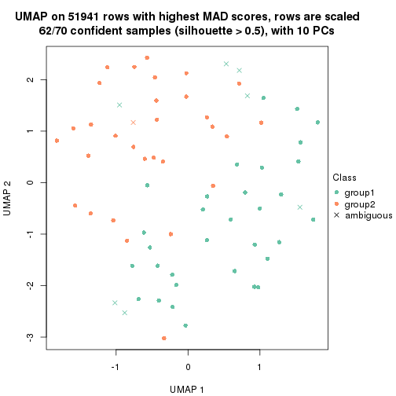
dimension_reduction(res, k = 3, method = "UMAP")
dimension_reduction(res, k = 4, method = "UMAP")
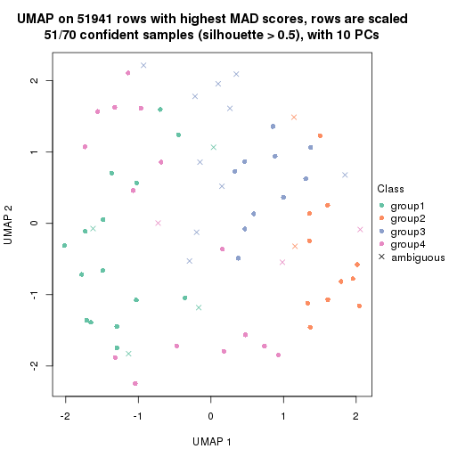
dimension_reduction(res, k = 5, method = "UMAP")
dimension_reduction(res, k = 6, method = "UMAP")
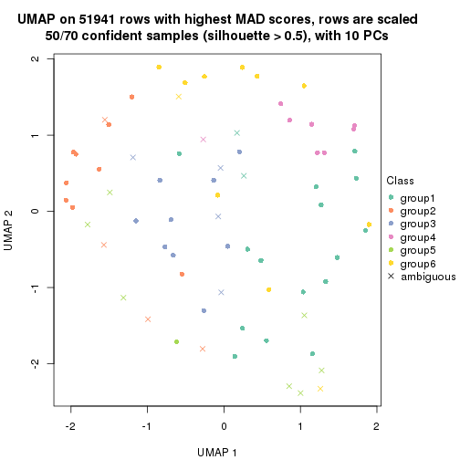
Following heatmap shows how subgroups are split when increasing k:
collect_classes(res)

Test correlation between subgroups and known annotations. If the known annotation is numeric, one-way ANOVA test is applied, and if the known annotation is discrete, chi-squared contingency table test is applied.
test_to_known_factors(res)
#> n age(p) time(p) tissue(p) individual(p) k
#> MAD:mclust 62 1.0000 0.4066 6.81e-12 0.61846 2
#> MAD:mclust 37 0.2120 0.0317 3.69e-07 0.44485 3
#> MAD:mclust 51 0.0142 0.2515 1.90e-09 0.08108 4
#> MAD:mclust 48 0.0021 0.3314 3.10e-08 0.00607 5
#> MAD:mclust 50 0.0621 0.1882 2.29e-07 0.10998 6
If matrix rows can be associated to genes, consider to use functional_enrichment(res,
...) to perform function enrichment for the signature genes. See this vignette for more detailed explanations.
The object with results only for a single top-value method and a single partition method can be extracted as:
res = res_list["MAD", "NMF"]
# you can also extract it by
# res = res_list["MAD:NMF"]
A summary of res and all the functions that can be applied to it:
res
#> A 'ConsensusPartition' object with k = 2, 3, 4, 5, 6.
#> On a matrix with 51941 rows and 70 columns.
#> Top rows (1000, 2000, 3000, 4000, 5000) are extracted by 'MAD' method.
#> Subgroups are detected by 'NMF' method.
#> Performed in total 1250 partitions by row resampling.
#> Best k for subgroups seems to be 2.
#>
#> Following methods can be applied to this 'ConsensusPartition' object:
#> [1] "cola_report" "collect_classes" "collect_plots"
#> [4] "collect_stats" "colnames" "compare_signatures"
#> [7] "consensus_heatmap" "dimension_reduction" "functional_enrichment"
#> [10] "get_anno_col" "get_anno" "get_classes"
#> [13] "get_consensus" "get_matrix" "get_membership"
#> [16] "get_param" "get_signatures" "get_stats"
#> [19] "is_best_k" "is_stable_k" "membership_heatmap"
#> [22] "ncol" "nrow" "plot_ecdf"
#> [25] "rownames" "select_partition_number" "show"
#> [28] "suggest_best_k" "test_to_known_factors"
collect_plots() function collects all the plots made from res for all k (number of partitions)
into one single page to provide an easy and fast comparison between different k.
collect_plots(res)
The plots are:
k and the heatmap of
predicted classes for each k.k.k.k.All the plots in panels can be made by individual functions and they are plotted later in this section.
select_partition_number() produces several plots showing different
statistics for choosing “optimized” k. There are following statistics:
k;k, the area increased is defined as \(A_k - A_{k-1}\).The detailed explanations of these statistics can be found in the cola vignette.
Generally speaking, lower PAC score, higher mean silhouette score or higher
concordance corresponds to better partition. Rand index and Jaccard index
measure how similar the current partition is compared to partition with k-1.
If they are too similar, we won't accept k is better than k-1.
select_partition_number(res)
The numeric values for all these statistics can be obtained by get_stats().
get_stats(res)
#> k 1-PAC mean_silhouette concordance area_increased Rand Jaccard
#> 2 2 0.798 0.901 0.956 0.5021 0.496 0.496
#> 3 3 0.456 0.688 0.825 0.3278 0.753 0.539
#> 4 4 0.469 0.529 0.709 0.1118 0.975 0.925
#> 5 5 0.469 0.407 0.616 0.0638 0.908 0.714
#> 6 6 0.493 0.362 0.576 0.0408 0.956 0.835
suggest_best_k() suggests the best \(k\) based on these statistics. The rules are as follows:
suggest_best_k(res)
#> [1] 2
Following shows the table of the partitions (You need to click the show/hide
code output link to see it). The membership matrix (columns with name p*)
is inferred by
clue::cl_consensus()
function with the SE method. Basically the value in the membership matrix
represents the probability to belong to a certain group. The finall class
label for an item is determined with the group with highest probability it
belongs to.
In get_classes() function, the entropy is calculated from the membership
matrix and the silhouette score is calculated from the consensus matrix.
cbind(get_classes(res, k = 2), get_membership(res, k = 2))
#> class entropy silhouette p1 p2
#> GSM701770 1 0.0000 0.938 1.000 0.000
#> GSM701769 1 0.0000 0.938 1.000 0.000
#> GSM701768 1 0.2236 0.920 0.964 0.036
#> GSM701767 1 0.9460 0.481 0.636 0.364
#> GSM701766 2 0.2948 0.925 0.052 0.948
#> GSM701806 1 0.0000 0.938 1.000 0.000
#> GSM701805 1 0.0000 0.938 1.000 0.000
#> GSM701804 1 0.0376 0.937 0.996 0.004
#> GSM701803 1 0.0938 0.934 0.988 0.012
#> GSM701775 1 0.0000 0.938 1.000 0.000
#> GSM701774 1 0.0000 0.938 1.000 0.000
#> GSM701773 2 0.0000 0.969 0.000 1.000
#> GSM701772 1 0.9933 0.237 0.548 0.452
#> GSM701771 1 0.0000 0.938 1.000 0.000
#> GSM701810 1 0.0000 0.938 1.000 0.000
#> GSM701809 1 0.7376 0.754 0.792 0.208
#> GSM701808 1 0.0000 0.938 1.000 0.000
#> GSM701807 1 0.0000 0.938 1.000 0.000
#> GSM701780 1 0.0000 0.938 1.000 0.000
#> GSM701779 2 0.0000 0.969 0.000 1.000
#> GSM701778 2 0.0000 0.969 0.000 1.000
#> GSM701777 2 0.1184 0.959 0.016 0.984
#> GSM701776 1 0.0000 0.938 1.000 0.000
#> GSM701816 1 0.8207 0.690 0.744 0.256
#> GSM701815 2 0.0000 0.969 0.000 1.000
#> GSM701814 2 0.0000 0.969 0.000 1.000
#> GSM701813 1 0.9129 0.561 0.672 0.328
#> GSM701812 1 0.0672 0.935 0.992 0.008
#> GSM701811 1 0.0000 0.938 1.000 0.000
#> GSM701786 1 0.0000 0.938 1.000 0.000
#> GSM701785 2 0.0000 0.969 0.000 1.000
#> GSM701784 2 0.0000 0.969 0.000 1.000
#> GSM701783 1 0.0000 0.938 1.000 0.000
#> GSM701782 2 0.0376 0.967 0.004 0.996
#> GSM701781 2 0.9248 0.440 0.340 0.660
#> GSM701822 2 0.0000 0.969 0.000 1.000
#> GSM701821 2 0.0376 0.967 0.004 0.996
#> GSM701820 1 0.5059 0.864 0.888 0.112
#> GSM701819 1 0.0000 0.938 1.000 0.000
#> GSM701818 1 0.0000 0.938 1.000 0.000
#> GSM701817 1 0.2043 0.923 0.968 0.032
#> GSM701790 1 0.0000 0.938 1.000 0.000
#> GSM701789 1 0.0000 0.938 1.000 0.000
#> GSM701788 1 0.0000 0.938 1.000 0.000
#> GSM701787 2 0.1414 0.956 0.020 0.980
#> GSM701824 1 0.0000 0.938 1.000 0.000
#> GSM701823 2 0.0000 0.969 0.000 1.000
#> GSM701791 2 0.0000 0.969 0.000 1.000
#> GSM701793 1 0.0000 0.938 1.000 0.000
#> GSM701792 1 0.4815 0.871 0.896 0.104
#> GSM701825 1 0.5178 0.859 0.884 0.116
#> GSM701827 2 0.0000 0.969 0.000 1.000
#> GSM701826 2 0.0000 0.969 0.000 1.000
#> GSM701797 2 0.9427 0.396 0.360 0.640
#> GSM701796 1 0.0000 0.938 1.000 0.000
#> GSM701795 2 0.0000 0.969 0.000 1.000
#> GSM701794 2 0.0000 0.969 0.000 1.000
#> GSM701831 2 0.0000 0.969 0.000 1.000
#> GSM701830 2 0.0000 0.969 0.000 1.000
#> GSM701829 2 0.1184 0.959 0.016 0.984
#> GSM701828 2 0.0376 0.967 0.004 0.996
#> GSM701798 2 0.0000 0.969 0.000 1.000
#> GSM701802 2 0.0000 0.969 0.000 1.000
#> GSM701801 1 0.1414 0.929 0.980 0.020
#> GSM701800 1 0.6148 0.823 0.848 0.152
#> GSM701799 2 0.0000 0.969 0.000 1.000
#> GSM701832 2 0.0000 0.969 0.000 1.000
#> GSM701835 2 0.3584 0.908 0.068 0.932
#> GSM701834 2 0.0000 0.969 0.000 1.000
#> GSM701833 2 0.0000 0.969 0.000 1.000
cbind(get_classes(res, k = 3), get_membership(res, k = 3))
#> class entropy silhouette p1 p2 p3
#> GSM701770 3 0.5431 0.6362 0.284 0.000 0.716
#> GSM701769 3 0.5618 0.6687 0.260 0.008 0.732
#> GSM701768 3 0.2663 0.7469 0.024 0.044 0.932
#> GSM701767 3 0.4634 0.6880 0.012 0.164 0.824
#> GSM701766 3 0.6225 0.1785 0.000 0.432 0.568
#> GSM701806 3 0.6154 0.4111 0.408 0.000 0.592
#> GSM701805 1 0.3482 0.7485 0.872 0.000 0.128
#> GSM701804 1 0.2116 0.8035 0.948 0.040 0.012
#> GSM701803 1 0.3148 0.8040 0.916 0.048 0.036
#> GSM701775 3 0.1751 0.7498 0.012 0.028 0.960
#> GSM701774 3 0.3695 0.7492 0.108 0.012 0.880
#> GSM701773 2 0.3879 0.7639 0.000 0.848 0.152
#> GSM701772 3 0.3983 0.6941 0.004 0.144 0.852
#> GSM701771 3 0.4555 0.7100 0.200 0.000 0.800
#> GSM701810 1 0.3752 0.7314 0.856 0.000 0.144
#> GSM701809 1 0.3644 0.7586 0.872 0.124 0.004
#> GSM701808 1 0.2356 0.7875 0.928 0.000 0.072
#> GSM701807 1 0.2066 0.7946 0.940 0.000 0.060
#> GSM701780 3 0.6129 0.5734 0.324 0.008 0.668
#> GSM701779 2 0.0848 0.8463 0.008 0.984 0.008
#> GSM701778 2 0.1482 0.8478 0.020 0.968 0.012
#> GSM701777 2 0.4047 0.7538 0.004 0.848 0.148
#> GSM701776 1 0.3752 0.7310 0.856 0.000 0.144
#> GSM701816 1 0.4615 0.7492 0.836 0.144 0.020
#> GSM701815 2 0.5678 0.5845 0.316 0.684 0.000
#> GSM701814 2 0.3879 0.8099 0.152 0.848 0.000
#> GSM701813 1 0.4172 0.7805 0.868 0.104 0.028
#> GSM701812 1 0.2845 0.7990 0.920 0.012 0.068
#> GSM701811 3 0.4654 0.7063 0.208 0.000 0.792
#> GSM701786 3 0.5760 0.5799 0.328 0.000 0.672
#> GSM701785 2 0.6244 0.2236 0.000 0.560 0.440
#> GSM701784 2 0.6421 0.2667 0.004 0.572 0.424
#> GSM701783 3 0.5327 0.6537 0.272 0.000 0.728
#> GSM701782 2 0.2902 0.8433 0.064 0.920 0.016
#> GSM701781 1 0.8619 0.1564 0.480 0.420 0.100
#> GSM701822 2 0.4002 0.8054 0.160 0.840 0.000
#> GSM701821 2 0.4842 0.7373 0.224 0.776 0.000
#> GSM701820 1 0.2599 0.8013 0.932 0.016 0.052
#> GSM701819 1 0.2187 0.8065 0.948 0.028 0.024
#> GSM701818 1 0.2165 0.7914 0.936 0.000 0.064
#> GSM701817 1 0.2939 0.7945 0.916 0.072 0.012
#> GSM701790 3 0.1482 0.7494 0.012 0.020 0.968
#> GSM701789 3 0.2050 0.7513 0.020 0.028 0.952
#> GSM701788 3 0.5058 0.6770 0.244 0.000 0.756
#> GSM701787 3 0.6081 0.3986 0.004 0.344 0.652
#> GSM701824 1 0.5968 0.3746 0.636 0.000 0.364
#> GSM701823 2 0.3482 0.8282 0.128 0.872 0.000
#> GSM701791 2 0.1289 0.8408 0.000 0.968 0.032
#> GSM701793 3 0.1411 0.7515 0.036 0.000 0.964
#> GSM701792 3 0.2749 0.7348 0.012 0.064 0.924
#> GSM701825 1 0.2564 0.8064 0.936 0.028 0.036
#> GSM701827 2 0.2116 0.8483 0.040 0.948 0.012
#> GSM701826 2 0.6465 0.7346 0.232 0.724 0.044
#> GSM701797 3 0.8464 0.0690 0.088 0.448 0.464
#> GSM701796 3 0.2537 0.7501 0.080 0.000 0.920
#> GSM701795 2 0.1031 0.8433 0.000 0.976 0.024
#> GSM701794 2 0.0892 0.8436 0.000 0.980 0.020
#> GSM701831 2 0.3267 0.8278 0.116 0.884 0.000
#> GSM701830 2 0.3340 0.8284 0.120 0.880 0.000
#> GSM701829 1 0.6244 0.0823 0.560 0.440 0.000
#> GSM701828 2 0.5519 0.8168 0.120 0.812 0.068
#> GSM701798 2 0.1337 0.8469 0.012 0.972 0.016
#> GSM701802 2 0.4346 0.7289 0.000 0.816 0.184
#> GSM701801 3 0.5852 0.7293 0.180 0.044 0.776
#> GSM701800 1 0.8800 0.0923 0.488 0.116 0.396
#> GSM701799 2 0.1289 0.8405 0.000 0.968 0.032
#> GSM701832 2 0.4565 0.8389 0.076 0.860 0.064
#> GSM701835 2 0.4335 0.8424 0.100 0.864 0.036
#> GSM701834 2 0.4605 0.7629 0.204 0.796 0.000
#> GSM701833 2 0.3295 0.8394 0.096 0.896 0.008
cbind(get_classes(res, k = 4), get_membership(res, k = 4))
#> class entropy silhouette p1 p2 p3 p4
#> GSM701770 1 0.6605 0.50659 0.616 0.000 0.248 0.136
#> GSM701769 1 0.7169 0.39355 0.536 0.008 0.336 0.120
#> GSM701768 1 0.4737 0.59795 0.820 0.048 0.092 0.040
#> GSM701767 1 0.6824 0.43570 0.624 0.120 0.244 0.012
#> GSM701766 1 0.7050 -0.00715 0.460 0.432 0.104 0.004
#> GSM701806 1 0.6374 0.30253 0.556 0.000 0.072 0.372
#> GSM701805 4 0.3485 0.64066 0.028 0.000 0.116 0.856
#> GSM701804 4 0.3853 0.65001 0.000 0.020 0.160 0.820
#> GSM701803 4 0.4544 0.58044 0.004 0.016 0.220 0.760
#> GSM701775 1 0.1854 0.63314 0.940 0.012 0.048 0.000
#> GSM701774 1 0.4443 0.63246 0.820 0.012 0.120 0.048
#> GSM701773 2 0.2996 0.69532 0.064 0.892 0.044 0.000
#> GSM701772 1 0.4535 0.56965 0.804 0.112 0.084 0.000
#> GSM701771 1 0.5240 0.59880 0.740 0.000 0.188 0.072
#> GSM701810 4 0.5091 0.62623 0.068 0.000 0.180 0.752
#> GSM701809 4 0.5220 0.60679 0.004 0.040 0.232 0.724
#> GSM701808 4 0.4095 0.64220 0.024 0.000 0.172 0.804
#> GSM701807 4 0.2918 0.64272 0.008 0.000 0.116 0.876
#> GSM701780 1 0.7219 0.20902 0.484 0.012 0.404 0.100
#> GSM701779 2 0.1732 0.72374 0.008 0.948 0.040 0.004
#> GSM701778 2 0.3950 0.62832 0.008 0.804 0.184 0.004
#> GSM701777 2 0.6051 0.44736 0.112 0.692 0.192 0.004
#> GSM701776 4 0.3128 0.63932 0.040 0.000 0.076 0.884
#> GSM701816 4 0.6222 0.52551 0.000 0.080 0.304 0.616
#> GSM701815 2 0.6995 0.31430 0.004 0.600 0.192 0.204
#> GSM701814 2 0.4636 0.69416 0.000 0.792 0.140 0.068
#> GSM701813 4 0.6332 0.17428 0.000 0.060 0.452 0.488
#> GSM701812 4 0.5497 0.48482 0.012 0.008 0.372 0.608
#> GSM701811 1 0.5524 0.58544 0.744 0.008 0.088 0.160
#> GSM701786 1 0.7031 0.41182 0.552 0.000 0.296 0.152
#> GSM701785 2 0.5810 0.42087 0.276 0.660 0.064 0.000
#> GSM701784 2 0.6574 0.25559 0.364 0.548 0.088 0.000
#> GSM701783 1 0.6949 0.36138 0.528 0.000 0.348 0.124
#> GSM701782 2 0.5349 0.34763 0.008 0.644 0.336 0.012
#> GSM701781 3 0.8047 0.42663 0.020 0.272 0.488 0.220
#> GSM701822 2 0.4153 0.70945 0.000 0.820 0.132 0.048
#> GSM701821 2 0.5694 0.59972 0.000 0.696 0.224 0.080
#> GSM701820 4 0.4960 0.61114 0.020 0.016 0.212 0.752
#> GSM701819 4 0.5323 0.43290 0.004 0.008 0.396 0.592
#> GSM701818 4 0.5075 0.45818 0.012 0.000 0.344 0.644
#> GSM701817 4 0.4423 0.64955 0.000 0.040 0.168 0.792
#> GSM701790 1 0.2725 0.62958 0.912 0.016 0.056 0.016
#> GSM701789 1 0.2010 0.63503 0.940 0.008 0.040 0.012
#> GSM701788 1 0.5655 0.57436 0.704 0.000 0.212 0.084
#> GSM701787 1 0.6538 0.12011 0.528 0.392 0.080 0.000
#> GSM701824 4 0.7774 0.36397 0.220 0.012 0.256 0.512
#> GSM701823 2 0.6639 0.55463 0.012 0.656 0.196 0.136
#> GSM701791 2 0.1284 0.71852 0.024 0.964 0.012 0.000
#> GSM701793 1 0.2739 0.63190 0.904 0.000 0.060 0.036
#> GSM701792 1 0.3400 0.60921 0.876 0.044 0.076 0.004
#> GSM701825 4 0.4709 0.62315 0.008 0.024 0.200 0.768
#> GSM701827 2 0.2654 0.72436 0.000 0.888 0.108 0.004
#> GSM701826 2 0.8450 0.21220 0.028 0.428 0.280 0.264
#> GSM701797 3 0.7886 0.43023 0.192 0.300 0.492 0.016
#> GSM701796 1 0.3760 0.62596 0.828 0.004 0.156 0.012
#> GSM701795 2 0.0779 0.71824 0.004 0.980 0.016 0.000
#> GSM701794 2 0.1584 0.71856 0.012 0.952 0.036 0.000
#> GSM701831 2 0.5254 0.52087 0.000 0.672 0.300 0.028
#> GSM701830 2 0.3707 0.71392 0.000 0.840 0.132 0.028
#> GSM701829 4 0.7834 0.20372 0.004 0.228 0.328 0.440
#> GSM701828 2 0.6893 0.57527 0.032 0.644 0.228 0.096
#> GSM701798 2 0.2926 0.68970 0.012 0.888 0.096 0.004
#> GSM701802 2 0.4236 0.67212 0.088 0.824 0.088 0.000
#> GSM701801 1 0.7077 0.15175 0.472 0.044 0.444 0.040
#> GSM701800 3 0.8555 0.25243 0.192 0.060 0.488 0.260
#> GSM701799 2 0.1284 0.71934 0.012 0.964 0.024 0.000
#> GSM701832 2 0.5389 0.69314 0.020 0.748 0.188 0.044
#> GSM701835 2 0.5485 0.68997 0.024 0.752 0.172 0.052
#> GSM701834 2 0.5292 0.66431 0.000 0.744 0.168 0.088
#> GSM701833 2 0.3501 0.71890 0.000 0.848 0.132 0.020
cbind(get_classes(res, k = 5), get_membership(res, k = 5))
#> class entropy silhouette p1 p2 p3 p4 p5
#> GSM701770 1 0.689 0.4103 0.524 0.000 0.228 0.220 0.028
#> GSM701769 1 0.714 0.3077 0.448 0.000 0.352 0.160 0.040
#> GSM701768 1 0.536 0.5762 0.756 0.036 0.036 0.056 0.116
#> GSM701767 1 0.801 0.3649 0.504 0.136 0.228 0.028 0.104
#> GSM701766 1 0.703 0.2887 0.516 0.316 0.104 0.004 0.060
#> GSM701806 1 0.732 0.2718 0.484 0.000 0.156 0.296 0.064
#> GSM701805 4 0.536 0.4935 0.048 0.000 0.136 0.728 0.088
#> GSM701804 4 0.536 0.5061 0.000 0.008 0.092 0.672 0.228
#> GSM701803 4 0.548 0.3412 0.004 0.020 0.204 0.692 0.080
#> GSM701775 1 0.321 0.6091 0.868 0.004 0.032 0.012 0.084
#> GSM701774 1 0.624 0.5724 0.680 0.024 0.160 0.048 0.088
#> GSM701773 2 0.406 0.6345 0.080 0.824 0.052 0.000 0.044
#> GSM701772 1 0.542 0.5479 0.736 0.108 0.100 0.004 0.052
#> GSM701771 1 0.568 0.5589 0.684 0.000 0.120 0.168 0.028
#> GSM701810 4 0.733 0.2884 0.044 0.000 0.184 0.424 0.348
#> GSM701809 5 0.618 -0.1443 0.004 0.020 0.084 0.324 0.568
#> GSM701808 4 0.624 0.3459 0.024 0.000 0.080 0.504 0.392
#> GSM701807 4 0.314 0.5559 0.008 0.004 0.076 0.872 0.040
#> GSM701780 3 0.679 0.1448 0.284 0.008 0.544 0.024 0.140
#> GSM701779 2 0.303 0.6504 0.024 0.888 0.028 0.008 0.052
#> GSM701778 2 0.468 0.5959 0.008 0.736 0.196 0.000 0.060
#> GSM701777 2 0.750 0.4318 0.180 0.564 0.160 0.028 0.068
#> GSM701776 4 0.358 0.5731 0.032 0.000 0.052 0.852 0.064
#> GSM701816 3 0.805 0.0963 0.004 0.076 0.360 0.312 0.248
#> GSM701815 2 0.708 0.4016 0.000 0.576 0.160 0.160 0.104
#> GSM701814 2 0.484 0.5912 0.000 0.740 0.060 0.020 0.180
#> GSM701813 3 0.679 0.3249 0.000 0.056 0.564 0.256 0.124
#> GSM701812 3 0.739 0.1501 0.004 0.028 0.420 0.232 0.316
#> GSM701811 1 0.668 0.4756 0.612 0.012 0.084 0.228 0.064
#> GSM701786 1 0.704 0.2865 0.440 0.000 0.368 0.160 0.032
#> GSM701785 2 0.655 0.4506 0.252 0.592 0.068 0.000 0.088
#> GSM701784 2 0.676 0.2064 0.364 0.464 0.020 0.000 0.152
#> GSM701783 1 0.659 0.2566 0.440 0.000 0.436 0.084 0.040
#> GSM701782 2 0.605 0.3572 0.016 0.532 0.380 0.004 0.068
#> GSM701781 3 0.840 0.1491 0.044 0.196 0.368 0.336 0.056
#> GSM701822 2 0.436 0.5961 0.000 0.748 0.024 0.016 0.212
#> GSM701821 2 0.684 0.3796 0.000 0.556 0.204 0.040 0.200
#> GSM701820 4 0.573 0.2548 0.024 0.008 0.024 0.512 0.432
#> GSM701819 3 0.664 0.1706 0.000 0.004 0.472 0.312 0.212
#> GSM701818 3 0.615 0.1307 0.000 0.004 0.488 0.392 0.116
#> GSM701817 4 0.613 0.4518 0.000 0.008 0.156 0.588 0.248
#> GSM701790 1 0.354 0.6004 0.832 0.004 0.024 0.008 0.132
#> GSM701789 1 0.193 0.6120 0.936 0.004 0.020 0.008 0.032
#> GSM701788 1 0.614 0.4741 0.596 0.000 0.292 0.068 0.044
#> GSM701787 1 0.671 0.1121 0.496 0.372 0.028 0.008 0.096
#> GSM701824 5 0.689 -0.0725 0.140 0.004 0.040 0.268 0.548
#> GSM701823 2 0.728 0.1836 0.008 0.508 0.040 0.180 0.264
#> GSM701791 2 0.332 0.6511 0.036 0.872 0.036 0.004 0.052
#> GSM701793 1 0.315 0.6044 0.864 0.000 0.020 0.020 0.096
#> GSM701792 1 0.472 0.5828 0.764 0.032 0.040 0.004 0.160
#> GSM701825 4 0.512 0.4804 0.016 0.016 0.028 0.700 0.240
#> GSM701827 2 0.288 0.6293 0.000 0.848 0.004 0.004 0.144
#> GSM701826 5 0.580 0.3995 0.012 0.252 0.000 0.108 0.628
#> GSM701797 3 0.616 0.3135 0.104 0.208 0.648 0.008 0.032
#> GSM701796 1 0.535 0.5417 0.692 0.000 0.220 0.036 0.052
#> GSM701795 2 0.181 0.6614 0.004 0.940 0.024 0.004 0.028
#> GSM701794 2 0.267 0.6599 0.020 0.904 0.032 0.004 0.040
#> GSM701831 2 0.588 0.4404 0.000 0.584 0.296 0.004 0.116
#> GSM701830 2 0.440 0.6059 0.000 0.776 0.080 0.008 0.136
#> GSM701829 5 0.789 0.2207 0.000 0.204 0.200 0.132 0.464
#> GSM701828 5 0.590 -0.1650 0.016 0.464 0.012 0.036 0.472
#> GSM701798 2 0.303 0.6463 0.004 0.856 0.120 0.000 0.020
#> GSM701802 2 0.540 0.6078 0.084 0.732 0.116 0.000 0.068
#> GSM701801 3 0.577 0.1974 0.264 0.032 0.652 0.020 0.032
#> GSM701800 3 0.792 0.3819 0.120 0.036 0.512 0.088 0.244
#> GSM701799 2 0.200 0.6624 0.000 0.924 0.036 0.000 0.040
#> GSM701832 2 0.591 0.4442 0.000 0.604 0.064 0.032 0.300
#> GSM701835 2 0.699 0.2935 0.028 0.520 0.072 0.040 0.340
#> GSM701834 2 0.574 0.4843 0.000 0.632 0.080 0.020 0.268
#> GSM701833 2 0.381 0.5953 0.000 0.780 0.020 0.004 0.196
cbind(get_classes(res, k = 6), get_membership(res, k = 6))
#> class entropy silhouette p1 p2 p3 p4 p5 p6
#> GSM701770 1 0.759 0.20606 0.352 0.000 0.004 NA 0.188 0.292
#> GSM701769 1 0.806 0.11299 0.340 0.004 0.020 NA 0.264 0.172
#> GSM701768 1 0.586 0.46401 0.604 0.020 0.056 NA 0.000 0.052
#> GSM701767 1 0.897 0.14824 0.360 0.112 0.060 NA 0.212 0.068
#> GSM701766 1 0.773 0.20046 0.364 0.260 0.012 NA 0.060 0.024
#> GSM701806 1 0.721 0.26818 0.484 0.000 0.072 NA 0.116 0.280
#> GSM701805 6 0.607 0.42262 0.056 0.000 0.128 NA 0.084 0.664
#> GSM701804 6 0.707 0.18062 0.008 0.004 0.188 NA 0.080 0.488
#> GSM701803 6 0.565 0.44630 0.004 0.008 0.056 NA 0.160 0.672
#> GSM701775 1 0.286 0.51238 0.880 0.008 0.028 NA 0.028 0.000
#> GSM701774 1 0.661 0.44470 0.620 0.024 0.040 NA 0.112 0.040
#> GSM701773 2 0.408 0.63261 0.052 0.772 0.016 NA 0.004 0.000
#> GSM701772 1 0.718 0.37849 0.476 0.108 0.040 NA 0.056 0.008
#> GSM701771 1 0.660 0.39849 0.536 0.000 0.004 NA 0.084 0.232
#> GSM701810 3 0.755 0.24127 0.064 0.000 0.460 NA 0.188 0.228
#> GSM701809 3 0.649 0.41861 0.012 0.028 0.620 NA 0.060 0.168
#> GSM701808 3 0.635 0.32162 0.040 0.000 0.556 NA 0.056 0.292
#> GSM701807 6 0.435 0.46277 0.012 0.000 0.084 NA 0.060 0.788
#> GSM701780 5 0.701 0.19726 0.288 0.008 0.096 NA 0.488 0.008
#> GSM701779 2 0.326 0.63965 0.012 0.824 0.008 NA 0.000 0.012
#> GSM701778 2 0.535 0.58098 0.000 0.664 0.024 NA 0.168 0.004
#> GSM701777 2 0.722 0.29211 0.092 0.420 0.004 NA 0.068 0.044
#> GSM701776 6 0.399 0.44205 0.032 0.000 0.132 NA 0.016 0.796
#> GSM701816 5 0.856 0.01012 0.012 0.104 0.240 NA 0.332 0.236
#> GSM701815 2 0.757 0.38694 0.000 0.460 0.048 NA 0.100 0.140
#> GSM701814 2 0.560 0.58322 0.000 0.676 0.160 NA 0.052 0.016
#> GSM701813 5 0.664 0.29317 0.000 0.036 0.092 NA 0.588 0.188
#> GSM701812 5 0.700 0.13168 0.008 0.008 0.308 NA 0.476 0.100
#> GSM701811 1 0.732 0.28964 0.436 0.012 0.020 NA 0.040 0.260
#> GSM701786 1 0.717 0.11586 0.400 0.000 0.012 NA 0.348 0.156
#> GSM701785 2 0.717 0.42879 0.188 0.512 0.068 NA 0.028 0.004
#> GSM701784 2 0.723 0.11732 0.320 0.396 0.104 NA 0.004 0.000
#> GSM701783 5 0.713 0.00276 0.280 0.000 0.004 NA 0.448 0.136
#> GSM701782 2 0.694 0.23621 0.004 0.420 0.024 NA 0.328 0.020
#> GSM701781 6 0.811 0.02577 0.008 0.184 0.012 NA 0.236 0.312
#> GSM701822 2 0.459 0.61711 0.000 0.736 0.164 NA 0.016 0.008
#> GSM701821 2 0.729 0.26698 0.000 0.416 0.244 NA 0.256 0.016
#> GSM701820 3 0.612 0.23469 0.036 0.004 0.536 NA 0.020 0.340
#> GSM701819 5 0.723 0.18636 0.000 0.000 0.208 NA 0.444 0.180
#> GSM701818 5 0.628 0.22631 0.000 0.000 0.124 NA 0.544 0.264
#> GSM701817 6 0.739 -0.01089 0.000 0.004 0.300 NA 0.196 0.380
#> GSM701790 1 0.349 0.50922 0.836 0.008 0.096 NA 0.004 0.012
#> GSM701789 1 0.218 0.52376 0.908 0.004 0.008 NA 0.000 0.016
#> GSM701788 1 0.634 0.31298 0.552 0.000 0.012 NA 0.280 0.080
#> GSM701787 1 0.708 0.03880 0.388 0.356 0.036 NA 0.008 0.012
#> GSM701824 3 0.587 0.40761 0.152 0.004 0.656 NA 0.016 0.128
#> GSM701823 2 0.730 0.29424 0.000 0.468 0.164 NA 0.008 0.180
#> GSM701791 2 0.339 0.63847 0.016 0.808 0.012 NA 0.000 0.004
#> GSM701793 1 0.245 0.51413 0.896 0.000 0.064 NA 0.004 0.012
#> GSM701792 1 0.532 0.45657 0.704 0.028 0.156 NA 0.036 0.000
#> GSM701825 6 0.585 0.28334 0.020 0.012 0.248 NA 0.012 0.616
#> GSM701827 2 0.275 0.63968 0.000 0.856 0.108 NA 0.000 0.000
#> GSM701826 3 0.521 0.38703 0.020 0.148 0.728 NA 0.016 0.040
#> GSM701797 5 0.674 0.31778 0.112 0.148 0.008 NA 0.588 0.016
#> GSM701796 1 0.584 0.37129 0.632 0.004 0.016 NA 0.232 0.048
#> GSM701795 2 0.204 0.65532 0.000 0.916 0.008 NA 0.028 0.000
#> GSM701794 2 0.237 0.65696 0.000 0.892 0.004 NA 0.012 0.008
#> GSM701831 2 0.552 0.33438 0.000 0.508 0.060 NA 0.400 0.000
#> GSM701830 2 0.502 0.60801 0.000 0.724 0.124 NA 0.076 0.004
#> GSM701829 3 0.745 0.22274 0.008 0.116 0.512 NA 0.216 0.044
#> GSM701828 2 0.641 0.19795 0.032 0.424 0.416 NA 0.008 0.004
#> GSM701798 2 0.434 0.63722 0.008 0.768 0.004 NA 0.096 0.008
#> GSM701802 2 0.639 0.56501 0.072 0.608 0.040 NA 0.080 0.000
#> GSM701801 5 0.570 0.26118 0.224 0.032 0.008 NA 0.640 0.008
#> GSM701800 5 0.743 0.32175 0.124 0.048 0.200 NA 0.540 0.032
#> GSM701799 2 0.234 0.65537 0.000 0.900 0.012 NA 0.032 0.000
#> GSM701832 2 0.658 0.48555 0.020 0.552 0.284 NA 0.052 0.016
#> GSM701835 2 0.810 0.31743 0.024 0.424 0.276 NA 0.100 0.052
#> GSM701834 2 0.574 0.54323 0.000 0.644 0.220 NA 0.060 0.024
#> GSM701833 2 0.395 0.61319 0.000 0.764 0.164 NA 0.004 0.000
Heatmaps for the consensus matrix. It visualizes the probability of two samples to be in a same group.
consensus_heatmap(res, k = 2)
consensus_heatmap(res, k = 3)
consensus_heatmap(res, k = 4)

consensus_heatmap(res, k = 5)
consensus_heatmap(res, k = 6)
Heatmaps for the membership of samples in all partitions to see how consistent they are:
membership_heatmap(res, k = 2)
membership_heatmap(res, k = 3)
membership_heatmap(res, k = 4)
membership_heatmap(res, k = 5)
membership_heatmap(res, k = 6)
As soon as we have had the classes for columns, we can look for signatures which are significantly different between classes which can be candidate marks for certain classes. Following are the heatmaps for signatures.
Signature heatmaps where rows are scaled:
get_signatures(res, k = 2)
get_signatures(res, k = 3)
get_signatures(res, k = 4)
get_signatures(res, k = 5)
get_signatures(res, k = 6)
Signature heatmaps where rows are not scaled:
get_signatures(res, k = 2, scale_rows = FALSE)
get_signatures(res, k = 3, scale_rows = FALSE)
get_signatures(res, k = 4, scale_rows = FALSE)
get_signatures(res, k = 5, scale_rows = FALSE)
get_signatures(res, k = 6, scale_rows = FALSE)
Compare the overlap of signatures from different k:
compare_signatures(res)
get_signature() returns a data frame invisibly. TO get the list of signatures, the function
call should be assigned to a variable explicitly. In following code, if plot argument is set
to FALSE, no heatmap is plotted while only the differential analysis is performed.
# code only for demonstration
tb = get_signature(res, k = ..., plot = FALSE)
An example of the output of tb is:
#> which_row fdr mean_1 mean_2 scaled_mean_1 scaled_mean_2 km
#> 1 38 0.042760348 8.373488 9.131774 -0.5533452 0.5164555 1
#> 2 40 0.018707592 7.106213 8.469186 -0.6173731 0.5762149 1
#> 3 55 0.019134737 10.221463 11.207825 -0.6159697 0.5749050 1
#> 4 59 0.006059896 5.921854 7.869574 -0.6899429 0.6439467 1
#> 5 60 0.018055526 8.928898 10.211722 -0.6204761 0.5791110 1
#> 6 98 0.009384629 15.714769 14.887706 0.6635654 -0.6193277 2
...
The columns in tb are:
which_row: row indices corresponding to the input matrix.fdr: FDR for the differential test. mean_x: The mean value in group x.scaled_mean_x: The mean value in group x after rows are scaled.km: Row groups if k-means clustering is applied to rows.UMAP plot which shows how samples are separated.
dimension_reduction(res, k = 2, method = "UMAP")
dimension_reduction(res, k = 3, method = "UMAP")
dimension_reduction(res, k = 4, method = "UMAP")
dimension_reduction(res, k = 5, method = "UMAP")
dimension_reduction(res, k = 6, method = "UMAP")
Following heatmap shows how subgroups are split when increasing k:
collect_classes(res)
Test correlation between subgroups and known annotations. If the known annotation is numeric, one-way ANOVA test is applied, and if the known annotation is discrete, chi-squared contingency table test is applied.
test_to_known_factors(res)
#> n age(p) time(p) tissue(p) individual(p) k
#> MAD:NMF 66 0.01697 0.03921 1.00e+00 0.00813 2
#> MAD:NMF 60 0.00107 0.05401 9.10e-07 0.00889 3
#> MAD:NMF 46 0.00224 0.00958 1.22e-04 0.04438 4
#> MAD:NMF 27 0.12800 0.03622 3.35e-02 0.26074 5
#> MAD:NMF 19 1.00000 0.00818 3.56e-01 0.22600 6
If matrix rows can be associated to genes, consider to use functional_enrichment(res,
...) to perform function enrichment for the signature genes. See this vignette for more detailed explanations.
The object with results only for a single top-value method and a single partition method can be extracted as:
res = res_list["ATC", "hclust"]
# you can also extract it by
# res = res_list["ATC:hclust"]
A summary of res and all the functions that can be applied to it:
res
#> A 'ConsensusPartition' object with k = 2, 3, 4, 5, 6.
#> On a matrix with 51941 rows and 70 columns.
#> Top rows (1000, 2000, 3000, 4000, 5000) are extracted by 'ATC' method.
#> Subgroups are detected by 'hclust' method.
#> Performed in total 1250 partitions by row resampling.
#> Best k for subgroups seems to be 5.
#>
#> Following methods can be applied to this 'ConsensusPartition' object:
#> [1] "cola_report" "collect_classes" "collect_plots"
#> [4] "collect_stats" "colnames" "compare_signatures"
#> [7] "consensus_heatmap" "dimension_reduction" "functional_enrichment"
#> [10] "get_anno_col" "get_anno" "get_classes"
#> [13] "get_consensus" "get_matrix" "get_membership"
#> [16] "get_param" "get_signatures" "get_stats"
#> [19] "is_best_k" "is_stable_k" "membership_heatmap"
#> [22] "ncol" "nrow" "plot_ecdf"
#> [25] "rownames" "select_partition_number" "show"
#> [28] "suggest_best_k" "test_to_known_factors"
collect_plots() function collects all the plots made from res for all k (number of partitions)
into one single page to provide an easy and fast comparison between different k.
collect_plots(res)
The plots are:
k and the heatmap of
predicted classes for each k.k.k.k.All the plots in panels can be made by individual functions and they are plotted later in this section.
select_partition_number() produces several plots showing different
statistics for choosing “optimized” k. There are following statistics:
k;k, the area increased is defined as \(A_k - A_{k-1}\).The detailed explanations of these statistics can be found in the cola vignette.
Generally speaking, lower PAC score, higher mean silhouette score or higher
concordance corresponds to better partition. Rand index and Jaccard index
measure how similar the current partition is compared to partition with k-1.
If they are too similar, we won't accept k is better than k-1.
select_partition_number(res)
The numeric values for all these statistics can be obtained by get_stats().
get_stats(res)
#> k 1-PAC mean_silhouette concordance area_increased Rand Jaccard
#> 2 2 0.573 0.869 0.896 0.2698 0.658 0.658
#> 3 3 0.249 0.529 0.665 1.0185 0.699 0.543
#> 4 4 0.307 0.684 0.720 0.1634 0.856 0.676
#> 5 5 0.517 0.739 0.799 0.1374 0.897 0.736
#> 6 6 0.616 0.624 0.799 0.0688 0.938 0.783
suggest_best_k() suggests the best \(k\) based on these statistics. The rules are as follows:
suggest_best_k(res)
#> [1] 5
Following shows the table of the partitions (You need to click the show/hide
code output link to see it). The membership matrix (columns with name p*)
is inferred by
clue::cl_consensus()
function with the SE method. Basically the value in the membership matrix
represents the probability to belong to a certain group. The finall class
label for an item is determined with the group with highest probability it
belongs to.
In get_classes() function, the entropy is calculated from the membership
matrix and the silhouette score is calculated from the consensus matrix.
cbind(get_classes(res, k = 2), get_membership(res, k = 2))
#> class entropy silhouette p1 p2
#> GSM701770 1 0.0000 0.940 1.000 0.000
#> GSM701769 1 0.0000 0.940 1.000 0.000
#> GSM701768 1 0.4690 0.849 0.900 0.100
#> GSM701767 1 0.2778 0.913 0.952 0.048
#> GSM701766 1 0.2236 0.922 0.964 0.036
#> GSM701806 1 0.0000 0.940 1.000 0.000
#> GSM701805 1 0.0000 0.940 1.000 0.000
#> GSM701804 1 0.3274 0.904 0.940 0.060
#> GSM701803 1 0.0376 0.938 0.996 0.004
#> GSM701775 1 0.0000 0.940 1.000 0.000
#> GSM701774 1 0.0672 0.937 0.992 0.008
#> GSM701773 2 0.9460 0.868 0.364 0.636
#> GSM701772 1 0.2236 0.922 0.964 0.036
#> GSM701771 1 0.0000 0.940 1.000 0.000
#> GSM701810 1 0.0000 0.940 1.000 0.000
#> GSM701809 1 0.3431 0.898 0.936 0.064
#> GSM701808 1 0.0000 0.940 1.000 0.000
#> GSM701807 1 0.0000 0.940 1.000 0.000
#> GSM701780 1 0.0000 0.940 1.000 0.000
#> GSM701779 2 0.0000 0.600 0.000 1.000
#> GSM701778 1 0.0376 0.938 0.996 0.004
#> GSM701777 1 0.2236 0.922 0.964 0.036
#> GSM701776 1 0.0000 0.940 1.000 0.000
#> GSM701816 1 0.1184 0.933 0.984 0.016
#> GSM701815 2 0.9686 0.843 0.396 0.604
#> GSM701814 2 0.9686 0.843 0.396 0.604
#> GSM701813 1 0.0000 0.940 1.000 0.000
#> GSM701812 1 0.0000 0.940 1.000 0.000
#> GSM701811 1 0.0000 0.940 1.000 0.000
#> GSM701786 1 0.0000 0.940 1.000 0.000
#> GSM701785 1 0.1633 0.930 0.976 0.024
#> GSM701784 1 0.2423 0.919 0.960 0.040
#> GSM701783 1 0.0000 0.940 1.000 0.000
#> GSM701782 1 0.0376 0.938 0.996 0.004
#> GSM701781 1 0.0376 0.938 0.996 0.004
#> GSM701822 2 0.9608 0.857 0.384 0.616
#> GSM701821 1 0.0376 0.938 0.996 0.004
#> GSM701820 1 0.3431 0.898 0.936 0.064
#> GSM701819 1 0.0000 0.940 1.000 0.000
#> GSM701818 1 0.0000 0.940 1.000 0.000
#> GSM701817 1 0.0000 0.940 1.000 0.000
#> GSM701790 1 0.4431 0.858 0.908 0.092
#> GSM701789 1 0.0000 0.940 1.000 0.000
#> GSM701788 1 0.0000 0.940 1.000 0.000
#> GSM701787 1 0.6343 0.770 0.840 0.160
#> GSM701824 1 0.4431 0.858 0.908 0.092
#> GSM701823 2 0.9393 0.866 0.356 0.644
#> GSM701791 2 0.9522 0.813 0.372 0.628
#> GSM701793 1 0.4431 0.858 0.908 0.092
#> GSM701792 1 0.5737 0.807 0.864 0.136
#> GSM701825 1 0.4431 0.858 0.908 0.092
#> GSM701827 2 0.0000 0.600 0.000 1.000
#> GSM701826 1 0.6247 0.777 0.844 0.156
#> GSM701797 1 0.0376 0.938 0.996 0.004
#> GSM701796 1 0.0000 0.940 1.000 0.000
#> GSM701795 2 0.9491 0.867 0.368 0.632
#> GSM701794 2 0.9460 0.868 0.364 0.636
#> GSM701831 1 0.0376 0.938 0.996 0.004
#> GSM701830 2 0.9170 0.846 0.332 0.668
#> GSM701829 1 0.9635 -0.268 0.612 0.388
#> GSM701828 1 0.7745 0.557 0.772 0.228
#> GSM701798 2 0.9710 0.816 0.400 0.600
#> GSM701802 1 0.1184 0.933 0.984 0.016
#> GSM701801 1 0.0000 0.940 1.000 0.000
#> GSM701800 1 0.0000 0.940 1.000 0.000
#> GSM701799 2 0.9460 0.868 0.364 0.636
#> GSM701832 1 0.7745 0.557 0.772 0.228
#> GSM701835 1 0.1414 0.932 0.980 0.020
#> GSM701834 2 0.9661 0.848 0.392 0.608
#> GSM701833 2 0.9170 0.846 0.332 0.668
cbind(get_classes(res, k = 3), get_membership(res, k = 3))
#> class entropy silhouette p1 p2 p3
#> GSM701770 1 0.6204 0.511 0.576 0.000 0.424
#> GSM701769 3 0.6267 -0.228 0.452 0.000 0.548
#> GSM701768 1 0.1015 0.569 0.980 0.008 0.012
#> GSM701767 1 0.7213 0.505 0.552 0.028 0.420
#> GSM701766 1 0.7186 0.407 0.500 0.024 0.476
#> GSM701806 1 0.5254 0.638 0.736 0.000 0.264
#> GSM701805 3 0.6280 -0.254 0.460 0.000 0.540
#> GSM701804 1 0.6823 0.560 0.668 0.036 0.296
#> GSM701803 3 0.0000 0.675 0.000 0.000 1.000
#> GSM701775 1 0.5431 0.641 0.716 0.000 0.284
#> GSM701774 1 0.6302 0.422 0.520 0.000 0.480
#> GSM701773 2 0.5988 0.840 0.000 0.632 0.368
#> GSM701772 1 0.7178 0.424 0.512 0.024 0.464
#> GSM701771 1 0.4555 0.647 0.800 0.000 0.200
#> GSM701810 1 0.6045 0.574 0.620 0.000 0.380
#> GSM701809 1 0.7519 0.508 0.568 0.044 0.388
#> GSM701808 1 0.5431 0.645 0.716 0.000 0.284
#> GSM701807 1 0.4555 0.647 0.800 0.000 0.200
#> GSM701780 3 0.1411 0.689 0.036 0.000 0.964
#> GSM701779 2 0.0000 0.603 0.000 1.000 0.000
#> GSM701778 3 0.0000 0.675 0.000 0.000 1.000
#> GSM701777 1 0.7186 0.407 0.500 0.024 0.476
#> GSM701776 1 0.4555 0.647 0.800 0.000 0.200
#> GSM701816 3 0.6682 -0.407 0.488 0.008 0.504
#> GSM701815 2 0.6126 0.820 0.000 0.600 0.400
#> GSM701814 2 0.6126 0.819 0.000 0.600 0.400
#> GSM701813 3 0.0592 0.684 0.012 0.000 0.988
#> GSM701812 1 0.6235 0.497 0.564 0.000 0.436
#> GSM701811 1 0.4605 0.648 0.796 0.000 0.204
#> GSM701786 1 0.6111 0.553 0.604 0.000 0.396
#> GSM701785 3 0.6955 -0.416 0.488 0.016 0.496
#> GSM701784 1 0.7292 0.411 0.500 0.028 0.472
#> GSM701783 3 0.3267 0.643 0.116 0.000 0.884
#> GSM701782 3 0.0000 0.675 0.000 0.000 1.000
#> GSM701781 3 0.0000 0.675 0.000 0.000 1.000
#> GSM701822 2 0.6079 0.829 0.000 0.612 0.388
#> GSM701821 3 0.1411 0.688 0.036 0.000 0.964
#> GSM701820 1 0.7459 0.532 0.584 0.044 0.372
#> GSM701819 3 0.3267 0.643 0.116 0.000 0.884
#> GSM701818 3 0.2796 0.667 0.092 0.000 0.908
#> GSM701817 3 0.0747 0.686 0.016 0.000 0.984
#> GSM701790 1 0.0000 0.565 1.000 0.000 0.000
#> GSM701789 1 0.5431 0.641 0.716 0.000 0.284
#> GSM701788 1 0.5254 0.638 0.736 0.000 0.264
#> GSM701787 1 0.5722 0.535 0.800 0.068 0.132
#> GSM701824 1 0.0000 0.565 1.000 0.000 0.000
#> GSM701823 2 0.5948 0.839 0.000 0.640 0.360
#> GSM701791 2 0.8842 0.673 0.208 0.580 0.212
#> GSM701793 1 0.0000 0.565 1.000 0.000 0.000
#> GSM701792 1 0.5454 0.605 0.804 0.044 0.152
#> GSM701825 1 0.0000 0.565 1.000 0.000 0.000
#> GSM701827 2 0.0000 0.603 0.000 1.000 0.000
#> GSM701826 1 0.5564 0.540 0.808 0.064 0.128
#> GSM701797 3 0.0000 0.675 0.000 0.000 1.000
#> GSM701796 1 0.5431 0.641 0.716 0.000 0.284
#> GSM701795 2 0.6008 0.839 0.000 0.628 0.372
#> GSM701794 2 0.5988 0.840 0.000 0.632 0.368
#> GSM701831 3 0.0000 0.675 0.000 0.000 1.000
#> GSM701830 2 0.7713 0.765 0.096 0.656 0.248
#> GSM701829 3 0.7207 -0.375 0.032 0.384 0.584
#> GSM701828 1 0.9627 0.258 0.428 0.208 0.364
#> GSM701798 2 0.8571 0.760 0.140 0.588 0.272
#> GSM701802 3 0.6822 -0.400 0.480 0.012 0.508
#> GSM701801 3 0.2711 0.676 0.088 0.000 0.912
#> GSM701800 3 0.2711 0.676 0.088 0.000 0.912
#> GSM701799 2 0.5988 0.840 0.000 0.632 0.368
#> GSM701832 1 0.9627 0.258 0.428 0.208 0.364
#> GSM701835 3 0.6825 -0.412 0.488 0.012 0.500
#> GSM701834 2 0.6314 0.826 0.004 0.604 0.392
#> GSM701833 2 0.7713 0.765 0.096 0.656 0.248
cbind(get_classes(res, k = 4), get_membership(res, k = 4))
#> class entropy silhouette p1 p2 p3 p4
#> GSM701770 1 0.428 0.550 0.740 0.004 0.000 0.256
#> GSM701769 1 0.500 0.246 0.604 0.004 0.000 0.392
#> GSM701768 1 0.798 0.414 0.604 0.128 0.132 0.136
#> GSM701767 1 0.649 0.668 0.652 0.228 0.008 0.112
#> GSM701766 1 0.664 0.641 0.608 0.260 0.000 0.132
#> GSM701806 1 0.259 0.650 0.900 0.004 0.004 0.092
#> GSM701805 1 0.498 0.269 0.612 0.004 0.000 0.384
#> GSM701804 1 0.629 0.652 0.664 0.256 0.024 0.056
#> GSM701803 4 0.361 0.908 0.100 0.044 0.000 0.856
#> GSM701775 1 0.292 0.667 0.892 0.028 0.000 0.080
#> GSM701774 1 0.651 0.641 0.640 0.184 0.000 0.176
#> GSM701773 2 0.458 0.844 0.000 0.768 0.032 0.200
#> GSM701772 1 0.652 0.648 0.624 0.248 0.000 0.128
#> GSM701771 1 0.154 0.655 0.956 0.004 0.008 0.032
#> GSM701810 1 0.429 0.632 0.796 0.032 0.000 0.172
#> GSM701809 1 0.581 0.657 0.664 0.284 0.008 0.044
#> GSM701808 1 0.300 0.675 0.892 0.044 0.000 0.064
#> GSM701807 1 0.154 0.655 0.956 0.004 0.008 0.032
#> GSM701780 4 0.355 0.912 0.144 0.016 0.000 0.840
#> GSM701779 3 0.327 0.961 0.000 0.168 0.832 0.000
#> GSM701778 4 0.394 0.896 0.100 0.060 0.000 0.840
#> GSM701777 1 0.664 0.641 0.608 0.260 0.000 0.132
#> GSM701776 1 0.154 0.655 0.956 0.004 0.008 0.032
#> GSM701816 1 0.687 0.627 0.596 0.224 0.000 0.180
#> GSM701815 2 0.487 0.834 0.000 0.736 0.032 0.232
#> GSM701814 2 0.487 0.835 0.000 0.736 0.032 0.232
#> GSM701813 4 0.364 0.917 0.120 0.032 0.000 0.848
#> GSM701812 1 0.529 0.605 0.728 0.064 0.000 0.208
#> GSM701811 1 0.140 0.656 0.960 0.004 0.004 0.032
#> GSM701786 1 0.402 0.583 0.772 0.004 0.000 0.224
#> GSM701785 1 0.681 0.633 0.596 0.248 0.000 0.156
#> GSM701784 1 0.662 0.641 0.608 0.264 0.000 0.128
#> GSM701783 4 0.407 0.830 0.252 0.000 0.000 0.748
#> GSM701782 4 0.361 0.908 0.100 0.044 0.000 0.856
#> GSM701781 4 0.361 0.908 0.100 0.044 0.000 0.856
#> GSM701822 2 0.476 0.841 0.000 0.748 0.032 0.220
#> GSM701821 4 0.464 0.871 0.140 0.068 0.000 0.792
#> GSM701820 1 0.625 0.661 0.656 0.272 0.024 0.048
#> GSM701819 4 0.407 0.830 0.252 0.000 0.000 0.748
#> GSM701818 4 0.365 0.875 0.204 0.000 0.000 0.796
#> GSM701817 4 0.360 0.917 0.124 0.028 0.000 0.848
#> GSM701790 1 0.779 0.407 0.620 0.108 0.136 0.136
#> GSM701789 1 0.292 0.667 0.892 0.028 0.000 0.080
#> GSM701788 1 0.259 0.650 0.900 0.004 0.004 0.092
#> GSM701787 1 0.889 0.396 0.456 0.300 0.128 0.116
#> GSM701824 1 0.779 0.407 0.620 0.108 0.136 0.136
#> GSM701823 2 0.463 0.841 0.000 0.768 0.036 0.196
#> GSM701791 2 0.357 0.526 0.028 0.880 0.052 0.040
#> GSM701793 1 0.779 0.407 0.620 0.108 0.136 0.136
#> GSM701792 1 0.832 0.517 0.544 0.240 0.116 0.100
#> GSM701825 1 0.741 0.435 0.648 0.084 0.132 0.136
#> GSM701827 3 0.287 0.963 0.000 0.136 0.864 0.000
#> GSM701826 1 0.890 0.398 0.460 0.292 0.132 0.116
#> GSM701797 4 0.379 0.914 0.112 0.044 0.000 0.844
#> GSM701796 1 0.292 0.667 0.892 0.028 0.000 0.080
#> GSM701795 2 0.462 0.844 0.000 0.764 0.032 0.204
#> GSM701794 2 0.458 0.844 0.000 0.768 0.032 0.200
#> GSM701831 4 0.361 0.908 0.100 0.044 0.000 0.856
#> GSM701830 2 0.136 0.653 0.004 0.964 0.012 0.020
#> GSM701829 2 0.633 0.462 0.064 0.532 0.000 0.404
#> GSM701828 1 0.623 0.407 0.492 0.464 0.008 0.036
#> GSM701798 2 0.456 0.705 0.020 0.816 0.040 0.124
#> GSM701802 1 0.685 0.619 0.600 0.212 0.000 0.188
#> GSM701801 4 0.414 0.875 0.208 0.012 0.000 0.780
#> GSM701800 4 0.414 0.875 0.208 0.012 0.000 0.780
#> GSM701799 2 0.458 0.844 0.000 0.768 0.032 0.200
#> GSM701832 1 0.623 0.407 0.492 0.464 0.008 0.036
#> GSM701835 1 0.682 0.632 0.596 0.244 0.000 0.160
#> GSM701834 2 0.494 0.838 0.004 0.744 0.032 0.220
#> GSM701833 2 0.136 0.653 0.004 0.964 0.012 0.020
cbind(get_classes(res, k = 5), get_membership(res, k = 5))
#> class entropy silhouette p1 p2 p3 p4 p5
#> GSM701770 1 0.3621 0.708 0.788 0.000 0.192 0.020 0.000
#> GSM701769 1 0.4084 0.521 0.668 0.000 0.328 0.004 0.000
#> GSM701768 4 0.1205 0.781 0.040 0.004 0.000 0.956 0.000
#> GSM701767 1 0.4351 0.747 0.816 0.096 0.036 0.028 0.024
#> GSM701766 1 0.5167 0.737 0.748 0.148 0.064 0.016 0.024
#> GSM701806 1 0.3059 0.715 0.860 0.000 0.028 0.108 0.004
#> GSM701805 1 0.4183 0.533 0.668 0.000 0.324 0.008 0.000
#> GSM701804 1 0.6045 0.609 0.672 0.116 0.012 0.172 0.028
#> GSM701803 3 0.1908 0.823 0.000 0.092 0.908 0.000 0.000
#> GSM701775 1 0.3387 0.738 0.852 0.028 0.020 0.100 0.000
#> GSM701774 1 0.4743 0.758 0.776 0.092 0.104 0.004 0.024
#> GSM701773 2 0.0771 0.848 0.000 0.976 0.020 0.000 0.004
#> GSM701772 1 0.4999 0.744 0.764 0.132 0.064 0.016 0.024
#> GSM701771 1 0.3320 0.682 0.828 0.000 0.012 0.152 0.008
#> GSM701810 1 0.4060 0.748 0.812 0.032 0.120 0.036 0.000
#> GSM701809 1 0.5227 0.698 0.740 0.152 0.012 0.072 0.024
#> GSM701808 1 0.3352 0.740 0.852 0.036 0.012 0.100 0.000
#> GSM701807 1 0.3320 0.682 0.828 0.000 0.012 0.152 0.008
#> GSM701780 3 0.1043 0.829 0.040 0.000 0.960 0.000 0.000
#> GSM701779 5 0.1732 0.951 0.000 0.080 0.000 0.000 0.920
#> GSM701778 3 0.2660 0.802 0.000 0.128 0.864 0.000 0.008
#> GSM701777 1 0.5167 0.737 0.748 0.148 0.064 0.016 0.024
#> GSM701776 1 0.3320 0.682 0.828 0.000 0.012 0.152 0.008
#> GSM701816 1 0.5438 0.740 0.724 0.124 0.120 0.008 0.024
#> GSM701815 2 0.1408 0.839 0.000 0.948 0.044 0.000 0.008
#> GSM701814 2 0.1331 0.841 0.000 0.952 0.040 0.000 0.008
#> GSM701813 3 0.0912 0.834 0.016 0.012 0.972 0.000 0.000
#> GSM701812 1 0.5064 0.745 0.736 0.068 0.164 0.032 0.000
#> GSM701811 1 0.3087 0.689 0.836 0.000 0.008 0.152 0.004
#> GSM701786 1 0.3368 0.721 0.820 0.000 0.156 0.024 0.000
#> GSM701785 1 0.5408 0.738 0.728 0.148 0.088 0.012 0.024
#> GSM701784 1 0.5197 0.736 0.748 0.148 0.060 0.020 0.024
#> GSM701783 3 0.2966 0.750 0.184 0.000 0.816 0.000 0.000
#> GSM701782 3 0.2358 0.816 0.000 0.104 0.888 0.000 0.008
#> GSM701781 3 0.1908 0.823 0.000 0.092 0.908 0.000 0.000
#> GSM701822 2 0.1041 0.845 0.000 0.964 0.032 0.000 0.004
#> GSM701821 3 0.4480 0.771 0.092 0.128 0.772 0.000 0.008
#> GSM701820 1 0.5556 0.676 0.712 0.144 0.008 0.112 0.024
#> GSM701819 3 0.2966 0.750 0.184 0.000 0.816 0.000 0.000
#> GSM701818 3 0.2471 0.787 0.136 0.000 0.864 0.000 0.000
#> GSM701817 3 0.0771 0.832 0.020 0.004 0.976 0.000 0.000
#> GSM701790 4 0.0703 0.778 0.024 0.000 0.000 0.976 0.000
#> GSM701789 1 0.3387 0.738 0.852 0.028 0.020 0.100 0.000
#> GSM701788 1 0.3059 0.715 0.860 0.000 0.028 0.108 0.004
#> GSM701787 4 0.4698 0.675 0.104 0.072 0.000 0.780 0.044
#> GSM701824 4 0.0703 0.778 0.024 0.000 0.000 0.976 0.000
#> GSM701823 2 0.0798 0.846 0.000 0.976 0.016 0.000 0.008
#> GSM701791 2 0.6434 0.560 0.104 0.632 0.000 0.188 0.076
#> GSM701793 4 0.0703 0.778 0.024 0.000 0.000 0.976 0.000
#> GSM701792 4 0.5528 0.543 0.276 0.056 0.000 0.644 0.024
#> GSM701825 4 0.2930 0.675 0.164 0.000 0.000 0.832 0.004
#> GSM701827 5 0.1043 0.951 0.000 0.040 0.000 0.000 0.960
#> GSM701826 4 0.4565 0.681 0.104 0.068 0.000 0.788 0.040
#> GSM701797 3 0.2069 0.833 0.012 0.076 0.912 0.000 0.000
#> GSM701796 1 0.3387 0.738 0.852 0.028 0.020 0.100 0.000
#> GSM701795 2 0.0955 0.848 0.000 0.968 0.028 0.000 0.004
#> GSM701794 2 0.0771 0.848 0.000 0.976 0.020 0.000 0.004
#> GSM701831 3 0.2358 0.816 0.000 0.104 0.888 0.000 0.008
#> GSM701830 2 0.5099 0.691 0.100 0.756 0.000 0.072 0.072
#> GSM701829 2 0.5295 0.494 0.064 0.648 0.280 0.000 0.008
#> GSM701828 1 0.6342 0.459 0.564 0.332 0.016 0.064 0.024
#> GSM701798 2 0.4583 0.725 0.056 0.784 0.004 0.128 0.028
#> GSM701802 1 0.5454 0.741 0.720 0.124 0.128 0.012 0.016
#> GSM701801 3 0.3093 0.764 0.168 0.008 0.824 0.000 0.000
#> GSM701800 3 0.3093 0.764 0.168 0.008 0.824 0.000 0.000
#> GSM701799 2 0.0771 0.848 0.000 0.976 0.020 0.000 0.004
#> GSM701832 1 0.6342 0.459 0.564 0.332 0.016 0.064 0.024
#> GSM701835 1 0.5420 0.739 0.728 0.144 0.092 0.012 0.024
#> GSM701834 2 0.2015 0.837 0.020 0.932 0.036 0.004 0.008
#> GSM701833 2 0.5148 0.687 0.104 0.752 0.000 0.072 0.072
cbind(get_classes(res, k = 6), get_membership(res, k = 6))
#> class entropy silhouette p1 p2 p3 p4 p5 p6
#> GSM701770 3 0.5697 -0.2674 0.356 0.000 0.476 0.000 0.168 0.000
#> GSM701769 3 0.5935 -0.0977 0.244 0.000 0.456 0.000 0.300 0.000
#> GSM701768 4 0.1082 0.7608 0.004 0.000 0.040 0.956 0.000 0.000
#> GSM701767 3 0.1780 0.6103 0.036 0.024 0.932 0.004 0.004 0.000
#> GSM701766 3 0.2208 0.6383 0.004 0.052 0.908 0.004 0.032 0.000
#> GSM701806 1 0.3823 0.5881 0.564 0.000 0.436 0.000 0.000 0.000
#> GSM701805 3 0.5743 0.0122 0.204 0.000 0.504 0.000 0.292 0.000
#> GSM701804 3 0.5149 0.3168 0.216 0.028 0.664 0.092 0.000 0.000
#> GSM701803 5 0.1958 0.8171 0.000 0.100 0.004 0.000 0.896 0.000
#> GSM701775 3 0.3499 0.2211 0.320 0.000 0.680 0.000 0.000 0.000
#> GSM701774 3 0.2444 0.6105 0.028 0.012 0.892 0.000 0.068 0.000
#> GSM701773 2 0.0603 0.8245 0.000 0.980 0.016 0.000 0.004 0.000
#> GSM701772 3 0.2332 0.6355 0.020 0.036 0.908 0.004 0.032 0.000
#> GSM701771 1 0.2941 0.8272 0.780 0.000 0.220 0.000 0.000 0.000
#> GSM701810 3 0.4541 0.3648 0.196 0.004 0.704 0.000 0.096 0.000
#> GSM701809 3 0.2882 0.5836 0.052 0.052 0.872 0.024 0.000 0.000
#> GSM701808 3 0.3791 0.2805 0.300 0.004 0.688 0.008 0.000 0.000
#> GSM701807 1 0.2941 0.8272 0.780 0.000 0.220 0.000 0.000 0.000
#> GSM701780 5 0.1082 0.8222 0.004 0.000 0.040 0.000 0.956 0.000
#> GSM701779 6 0.2911 0.9057 0.144 0.024 0.000 0.000 0.000 0.832
#> GSM701778 5 0.2892 0.7965 0.020 0.136 0.004 0.000 0.840 0.000
#> GSM701777 3 0.2208 0.6383 0.004 0.052 0.908 0.004 0.032 0.000
#> GSM701776 1 0.2941 0.8272 0.780 0.000 0.220 0.000 0.000 0.000
#> GSM701816 3 0.2812 0.6296 0.004 0.040 0.868 0.004 0.084 0.000
#> GSM701815 2 0.1622 0.8140 0.028 0.940 0.016 0.000 0.016 0.000
#> GSM701814 2 0.1542 0.8161 0.024 0.944 0.016 0.000 0.016 0.000
#> GSM701813 5 0.1003 0.8311 0.000 0.016 0.020 0.000 0.964 0.000
#> GSM701812 3 0.4893 0.4623 0.132 0.020 0.712 0.004 0.132 0.000
#> GSM701811 1 0.3126 0.8096 0.752 0.000 0.248 0.000 0.000 0.000
#> GSM701786 3 0.5425 -0.2847 0.372 0.000 0.504 0.000 0.124 0.000
#> GSM701785 3 0.2408 0.6384 0.000 0.052 0.892 0.004 0.052 0.000
#> GSM701784 3 0.2132 0.6372 0.004 0.052 0.912 0.004 0.028 0.000
#> GSM701783 5 0.3458 0.7501 0.112 0.000 0.080 0.000 0.808 0.000
#> GSM701782 5 0.2587 0.8118 0.020 0.108 0.004 0.000 0.868 0.000
#> GSM701781 5 0.1958 0.8171 0.000 0.100 0.004 0.000 0.896 0.000
#> GSM701822 2 0.1180 0.8212 0.012 0.960 0.016 0.000 0.012 0.000
#> GSM701821 5 0.4610 0.7416 0.020 0.100 0.152 0.000 0.728 0.000
#> GSM701820 3 0.3426 0.5687 0.048 0.048 0.840 0.064 0.000 0.000
#> GSM701819 5 0.3458 0.7501 0.112 0.000 0.080 0.000 0.808 0.000
#> GSM701818 5 0.2856 0.7868 0.068 0.000 0.076 0.000 0.856 0.000
#> GSM701817 5 0.0603 0.8278 0.000 0.004 0.016 0.000 0.980 0.000
#> GSM701790 4 0.0291 0.7589 0.004 0.000 0.004 0.992 0.000 0.000
#> GSM701789 3 0.3499 0.2211 0.320 0.000 0.680 0.000 0.000 0.000
#> GSM701788 1 0.3823 0.5881 0.564 0.000 0.436 0.000 0.000 0.000
#> GSM701787 4 0.4765 0.6577 0.032 0.032 0.188 0.728 0.004 0.016
#> GSM701824 4 0.0291 0.7589 0.004 0.000 0.004 0.992 0.000 0.000
#> GSM701823 2 0.1218 0.8189 0.028 0.956 0.012 0.000 0.004 0.000
#> GSM701791 2 0.6953 0.4952 0.072 0.548 0.224 0.116 0.004 0.036
#> GSM701793 4 0.0291 0.7589 0.004 0.000 0.004 0.992 0.000 0.000
#> GSM701792 4 0.4892 0.4701 0.048 0.012 0.348 0.592 0.000 0.000
#> GSM701825 4 0.2933 0.6047 0.200 0.000 0.004 0.796 0.000 0.000
#> GSM701827 6 0.0000 0.9059 0.000 0.000 0.000 0.000 0.000 1.000
#> GSM701826 4 0.4606 0.6640 0.032 0.028 0.188 0.736 0.004 0.012
#> GSM701797 5 0.2402 0.8301 0.008 0.084 0.020 0.000 0.888 0.000
#> GSM701796 3 0.3499 0.2211 0.320 0.000 0.680 0.000 0.000 0.000
#> GSM701795 2 0.0951 0.8260 0.004 0.968 0.020 0.000 0.008 0.000
#> GSM701794 2 0.0692 0.8255 0.000 0.976 0.020 0.000 0.004 0.000
#> GSM701831 5 0.2699 0.8124 0.020 0.108 0.008 0.000 0.864 0.000
#> GSM701830 2 0.5241 0.6412 0.024 0.692 0.204 0.040 0.004 0.036
#> GSM701829 2 0.5475 0.4855 0.028 0.620 0.108 0.000 0.244 0.000
#> GSM701828 3 0.4182 0.4313 0.028 0.228 0.724 0.020 0.000 0.000
#> GSM701798 2 0.5160 0.6795 0.072 0.712 0.128 0.084 0.000 0.004
#> GSM701802 3 0.2839 0.6271 0.000 0.044 0.860 0.004 0.092 0.000
#> GSM701801 5 0.3525 0.7332 0.032 0.004 0.180 0.000 0.784 0.000
#> GSM701800 5 0.3525 0.7332 0.032 0.004 0.180 0.000 0.784 0.000
#> GSM701799 2 0.0692 0.8255 0.000 0.976 0.020 0.000 0.004 0.000
#> GSM701832 3 0.4182 0.4313 0.028 0.228 0.724 0.020 0.000 0.000
#> GSM701835 3 0.2344 0.6382 0.000 0.048 0.896 0.004 0.052 0.000
#> GSM701834 2 0.2535 0.8066 0.036 0.888 0.064 0.000 0.012 0.000
#> GSM701833 2 0.5268 0.6373 0.024 0.688 0.208 0.040 0.004 0.036
Heatmaps for the consensus matrix. It visualizes the probability of two samples to be in a same group.
consensus_heatmap(res, k = 2)
consensus_heatmap(res, k = 3)

consensus_heatmap(res, k = 4)
consensus_heatmap(res, k = 5)
consensus_heatmap(res, k = 6)
Heatmaps for the membership of samples in all partitions to see how consistent they are:
membership_heatmap(res, k = 2)
membership_heatmap(res, k = 3)
membership_heatmap(res, k = 4)
membership_heatmap(res, k = 5)
membership_heatmap(res, k = 6)
As soon as we have had the classes for columns, we can look for signatures which are significantly different between classes which can be candidate marks for certain classes. Following are the heatmaps for signatures.
Signature heatmaps where rows are scaled:
get_signatures(res, k = 2)
get_signatures(res, k = 3)
get_signatures(res, k = 4)
get_signatures(res, k = 5)
get_signatures(res, k = 6)
Signature heatmaps where rows are not scaled:
get_signatures(res, k = 2, scale_rows = FALSE)
get_signatures(res, k = 3, scale_rows = FALSE)
get_signatures(res, k = 4, scale_rows = FALSE)
get_signatures(res, k = 5, scale_rows = FALSE)
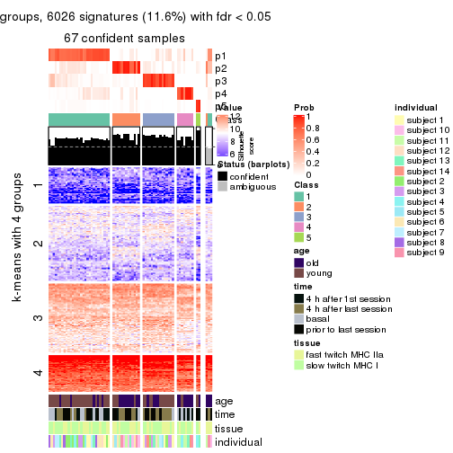
get_signatures(res, k = 6, scale_rows = FALSE)
Compare the overlap of signatures from different k:
compare_signatures(res)

get_signature() returns a data frame invisibly. TO get the list of signatures, the function
call should be assigned to a variable explicitly. In following code, if plot argument is set
to FALSE, no heatmap is plotted while only the differential analysis is performed.
# code only for demonstration
tb = get_signature(res, k = ..., plot = FALSE)
An example of the output of tb is:
#> which_row fdr mean_1 mean_2 scaled_mean_1 scaled_mean_2 km
#> 1 38 0.042760348 8.373488 9.131774 -0.5533452 0.5164555 1
#> 2 40 0.018707592 7.106213 8.469186 -0.6173731 0.5762149 1
#> 3 55 0.019134737 10.221463 11.207825 -0.6159697 0.5749050 1
#> 4 59 0.006059896 5.921854 7.869574 -0.6899429 0.6439467 1
#> 5 60 0.018055526 8.928898 10.211722 -0.6204761 0.5791110 1
#> 6 98 0.009384629 15.714769 14.887706 0.6635654 -0.6193277 2
...
The columns in tb are:
which_row: row indices corresponding to the input matrix.fdr: FDR for the differential test. mean_x: The mean value in group x.scaled_mean_x: The mean value in group x after rows are scaled.km: Row groups if k-means clustering is applied to rows.UMAP plot which shows how samples are separated.
dimension_reduction(res, k = 2, method = "UMAP")
dimension_reduction(res, k = 3, method = "UMAP")
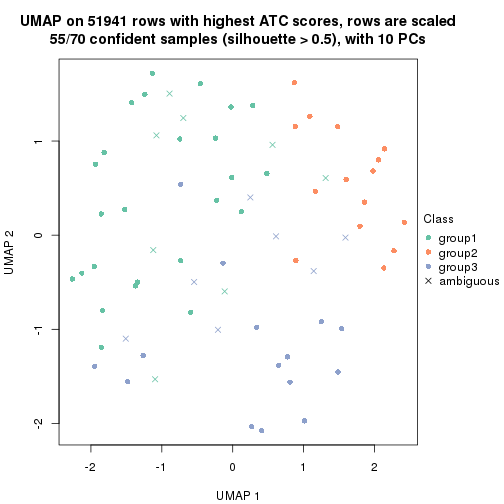
dimension_reduction(res, k = 4, method = "UMAP")
dimension_reduction(res, k = 5, method = "UMAP")
dimension_reduction(res, k = 6, method = "UMAP")
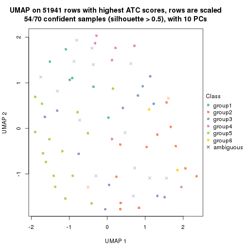
Following heatmap shows how subgroups are split when increasing k:
collect_classes(res)
Test correlation between subgroups and known annotations. If the known annotation is numeric, one-way ANOVA test is applied, and if the known annotation is discrete, chi-squared contingency table test is applied.
test_to_known_factors(res)
#> n age(p) time(p) tissue(p) individual(p) k
#> ATC:hclust 69 0.042496 0.32015 0.750 0.02006 2
#> ATC:hclust 55 0.077094 0.00026 0.848 0.06757 3
#> ATC:hclust 58 0.021506 0.08066 0.845 0.00934 4
#> ATC:hclust 67 0.000554 0.00735 0.941 0.00202 5
#> ATC:hclust 54 0.011123 0.01928 0.903 0.01357 6
If matrix rows can be associated to genes, consider to use functional_enrichment(res,
...) to perform function enrichment for the signature genes. See this vignette for more detailed explanations.
The object with results only for a single top-value method and a single partition method can be extracted as:
res = res_list["ATC", "kmeans"]
# you can also extract it by
# res = res_list["ATC:kmeans"]
A summary of res and all the functions that can be applied to it:
res
#> A 'ConsensusPartition' object with k = 2, 3, 4, 5, 6.
#> On a matrix with 51941 rows and 70 columns.
#> Top rows (1000, 2000, 3000, 4000, 5000) are extracted by 'ATC' method.
#> Subgroups are detected by 'kmeans' method.
#> Performed in total 1250 partitions by row resampling.
#> Best k for subgroups seems to be 2.
#>
#> Following methods can be applied to this 'ConsensusPartition' object:
#> [1] "cola_report" "collect_classes" "collect_plots"
#> [4] "collect_stats" "colnames" "compare_signatures"
#> [7] "consensus_heatmap" "dimension_reduction" "functional_enrichment"
#> [10] "get_anno_col" "get_anno" "get_classes"
#> [13] "get_consensus" "get_matrix" "get_membership"
#> [16] "get_param" "get_signatures" "get_stats"
#> [19] "is_best_k" "is_stable_k" "membership_heatmap"
#> [22] "ncol" "nrow" "plot_ecdf"
#> [25] "rownames" "select_partition_number" "show"
#> [28] "suggest_best_k" "test_to_known_factors"
collect_plots() function collects all the plots made from res for all k (number of partitions)
into one single page to provide an easy and fast comparison between different k.
collect_plots(res)
The plots are:
k and the heatmap of
predicted classes for each k.k.k.k.All the plots in panels can be made by individual functions and they are plotted later in this section.
select_partition_number() produces several plots showing different
statistics for choosing “optimized” k. There are following statistics:
k;k, the area increased is defined as \(A_k - A_{k-1}\).The detailed explanations of these statistics can be found in the cola vignette.
Generally speaking, lower PAC score, higher mean silhouette score or higher
concordance corresponds to better partition. Rand index and Jaccard index
measure how similar the current partition is compared to partition with k-1.
If they are too similar, we won't accept k is better than k-1.
select_partition_number(res)
The numeric values for all these statistics can be obtained by get_stats().
get_stats(res)
#> k 1-PAC mean_silhouette concordance area_increased Rand Jaccard
#> 2 2 0.484 0.852 0.908 0.4899 0.503 0.503
#> 3 3 0.547 0.790 0.875 0.3240 0.632 0.400
#> 4 4 0.624 0.725 0.834 0.1415 0.824 0.546
#> 5 5 0.720 0.806 0.854 0.0650 0.903 0.637
#> 6 6 0.753 0.698 0.831 0.0365 0.972 0.867
suggest_best_k() suggests the best \(k\) based on these statistics. The rules are as follows:
suggest_best_k(res)
#> [1] 2
Following shows the table of the partitions (You need to click the show/hide
code output link to see it). The membership matrix (columns with name p*)
is inferred by
clue::cl_consensus()
function with the SE method. Basically the value in the membership matrix
represents the probability to belong to a certain group. The finall class
label for an item is determined with the group with highest probability it
belongs to.
In get_classes() function, the entropy is calculated from the membership
matrix and the silhouette score is calculated from the consensus matrix.
cbind(get_classes(res, k = 2), get_membership(res, k = 2))
#> class entropy silhouette p1 p2
#> GSM701770 1 0.2043 0.901 0.968 0.032
#> GSM701769 1 0.0000 0.902 1.000 0.000
#> GSM701768 2 0.7602 0.786 0.220 0.780
#> GSM701767 2 0.6343 0.845 0.160 0.840
#> GSM701766 1 0.9358 0.565 0.648 0.352
#> GSM701806 1 0.3114 0.896 0.944 0.056
#> GSM701805 1 0.0000 0.902 1.000 0.000
#> GSM701804 2 0.6343 0.832 0.160 0.840
#> GSM701803 1 0.4161 0.875 0.916 0.084
#> GSM701775 1 0.3114 0.896 0.944 0.056
#> GSM701774 1 0.0938 0.903 0.988 0.012
#> GSM701773 2 0.3114 0.887 0.056 0.944
#> GSM701772 1 0.4815 0.867 0.896 0.104
#> GSM701771 1 0.3114 0.896 0.944 0.056
#> GSM701810 1 0.3114 0.896 0.944 0.056
#> GSM701809 2 0.5737 0.846 0.136 0.864
#> GSM701808 1 0.3114 0.896 0.944 0.056
#> GSM701807 1 0.3114 0.896 0.944 0.056
#> GSM701780 1 0.0376 0.902 0.996 0.004
#> GSM701779 2 0.3114 0.887 0.056 0.944
#> GSM701778 1 0.8499 0.673 0.724 0.276
#> GSM701777 1 0.4298 0.881 0.912 0.088
#> GSM701776 1 0.3114 0.896 0.944 0.056
#> GSM701816 1 0.4022 0.884 0.920 0.080
#> GSM701815 2 0.3114 0.887 0.056 0.944
#> GSM701814 2 0.3114 0.887 0.056 0.944
#> GSM701813 1 0.3431 0.885 0.936 0.064
#> GSM701812 1 0.2236 0.901 0.964 0.036
#> GSM701811 1 0.3114 0.896 0.944 0.056
#> GSM701786 1 0.2043 0.901 0.968 0.032
#> GSM701785 1 0.9427 0.480 0.640 0.360
#> GSM701784 2 0.4939 0.856 0.108 0.892
#> GSM701783 1 0.0000 0.902 1.000 0.000
#> GSM701782 1 0.5408 0.849 0.876 0.124
#> GSM701781 1 0.5408 0.849 0.876 0.124
#> GSM701822 2 0.3114 0.887 0.056 0.944
#> GSM701821 1 0.5408 0.849 0.876 0.124
#> GSM701820 2 0.6148 0.838 0.152 0.848
#> GSM701819 1 0.0376 0.902 0.996 0.004
#> GSM701818 1 0.0376 0.902 0.996 0.004
#> GSM701817 1 0.0376 0.902 0.996 0.004
#> GSM701790 2 0.7056 0.808 0.192 0.808
#> GSM701789 1 0.3114 0.896 0.944 0.056
#> GSM701788 1 0.3114 0.896 0.944 0.056
#> GSM701787 2 0.0376 0.885 0.004 0.996
#> GSM701824 2 0.8813 0.674 0.300 0.700
#> GSM701823 2 0.3114 0.887 0.056 0.944
#> GSM701791 2 0.0000 0.886 0.000 1.000
#> GSM701793 2 0.8763 0.681 0.296 0.704
#> GSM701792 2 0.7602 0.786 0.220 0.780
#> GSM701825 2 0.7602 0.786 0.220 0.780
#> GSM701827 2 0.0000 0.886 0.000 1.000
#> GSM701826 2 0.0376 0.885 0.004 0.996
#> GSM701797 1 0.4690 0.866 0.900 0.100
#> GSM701796 1 0.3114 0.896 0.944 0.056
#> GSM701795 2 0.3114 0.887 0.056 0.944
#> GSM701794 2 0.3114 0.887 0.056 0.944
#> GSM701831 1 0.5294 0.852 0.880 0.120
#> GSM701830 2 0.1414 0.887 0.020 0.980
#> GSM701829 1 0.7056 0.780 0.808 0.192
#> GSM701828 2 0.2603 0.883 0.044 0.956
#> GSM701798 2 0.3114 0.887 0.056 0.944
#> GSM701802 1 0.5519 0.846 0.872 0.128
#> GSM701801 1 0.0376 0.902 0.996 0.004
#> GSM701800 1 0.0376 0.902 0.996 0.004
#> GSM701799 2 0.3114 0.887 0.056 0.944
#> GSM701832 2 0.6712 0.824 0.176 0.824
#> GSM701835 1 0.9522 0.522 0.628 0.372
#> GSM701834 2 0.3114 0.887 0.056 0.944
#> GSM701833 2 0.0000 0.886 0.000 1.000
cbind(get_classes(res, k = 3), get_membership(res, k = 3))
#> class entropy silhouette p1 p2 p3
#> GSM701770 3 0.6026 0.237 0.376 0.000 0.624
#> GSM701769 3 0.1031 0.871 0.024 0.000 0.976
#> GSM701768 1 0.1031 0.821 0.976 0.024 0.000
#> GSM701767 1 0.7535 0.704 0.692 0.176 0.132
#> GSM701766 1 0.7505 0.711 0.696 0.144 0.160
#> GSM701806 1 0.5058 0.755 0.756 0.000 0.244
#> GSM701805 3 0.1031 0.871 0.024 0.000 0.976
#> GSM701804 1 0.2939 0.823 0.916 0.072 0.012
#> GSM701803 3 0.1411 0.877 0.000 0.036 0.964
#> GSM701775 1 0.3619 0.830 0.864 0.000 0.136
#> GSM701774 1 0.6062 0.579 0.616 0.000 0.384
#> GSM701773 2 0.0000 0.926 0.000 1.000 0.000
#> GSM701772 1 0.3412 0.832 0.876 0.000 0.124
#> GSM701771 1 0.3941 0.826 0.844 0.000 0.156
#> GSM701810 1 0.4002 0.824 0.840 0.000 0.160
#> GSM701809 1 0.2625 0.812 0.916 0.084 0.000
#> GSM701808 1 0.3619 0.830 0.864 0.000 0.136
#> GSM701807 1 0.3941 0.826 0.844 0.000 0.156
#> GSM701780 3 0.0000 0.879 0.000 0.000 1.000
#> GSM701779 2 0.0000 0.926 0.000 1.000 0.000
#> GSM701778 3 0.3879 0.818 0.000 0.152 0.848
#> GSM701777 1 0.7880 0.637 0.648 0.108 0.244
#> GSM701776 1 0.3941 0.826 0.844 0.000 0.156
#> GSM701816 1 0.8142 0.596 0.620 0.112 0.268
#> GSM701815 2 0.1031 0.914 0.000 0.976 0.024
#> GSM701814 2 0.1031 0.914 0.000 0.976 0.024
#> GSM701813 3 0.1411 0.877 0.000 0.036 0.964
#> GSM701812 1 0.5291 0.731 0.732 0.000 0.268
#> GSM701811 1 0.3941 0.826 0.844 0.000 0.156
#> GSM701786 3 0.6045 0.226 0.380 0.000 0.620
#> GSM701785 1 0.8848 0.481 0.560 0.156 0.284
#> GSM701784 1 0.2959 0.811 0.900 0.100 0.000
#> GSM701783 3 0.1031 0.871 0.024 0.000 0.976
#> GSM701782 3 0.3192 0.851 0.000 0.112 0.888
#> GSM701781 3 0.3038 0.856 0.000 0.104 0.896
#> GSM701822 2 0.0424 0.925 0.000 0.992 0.008
#> GSM701821 3 0.3686 0.830 0.000 0.140 0.860
#> GSM701820 1 0.1411 0.817 0.964 0.036 0.000
#> GSM701819 3 0.0747 0.875 0.016 0.000 0.984
#> GSM701818 3 0.0747 0.875 0.016 0.000 0.984
#> GSM701817 3 0.0000 0.879 0.000 0.000 1.000
#> GSM701790 1 0.1031 0.821 0.976 0.024 0.000
#> GSM701789 1 0.3619 0.830 0.864 0.000 0.136
#> GSM701788 1 0.4002 0.824 0.840 0.000 0.160
#> GSM701787 2 0.6307 0.178 0.488 0.512 0.000
#> GSM701824 1 0.0747 0.823 0.984 0.016 0.000
#> GSM701823 2 0.0237 0.927 0.000 0.996 0.004
#> GSM701791 2 0.3619 0.847 0.136 0.864 0.000
#> GSM701793 1 0.0747 0.823 0.984 0.016 0.000
#> GSM701792 1 0.1031 0.821 0.976 0.024 0.000
#> GSM701825 1 0.1031 0.821 0.976 0.024 0.000
#> GSM701827 2 0.3619 0.847 0.136 0.864 0.000
#> GSM701826 1 0.6309 -0.200 0.504 0.496 0.000
#> GSM701797 3 0.3038 0.856 0.000 0.104 0.896
#> GSM701796 1 0.3879 0.827 0.848 0.000 0.152
#> GSM701795 2 0.0237 0.927 0.000 0.996 0.004
#> GSM701794 2 0.0237 0.927 0.000 0.996 0.004
#> GSM701831 3 0.3551 0.837 0.000 0.132 0.868
#> GSM701830 2 0.1411 0.909 0.036 0.964 0.000
#> GSM701829 3 0.3686 0.830 0.000 0.140 0.860
#> GSM701828 1 0.3192 0.793 0.888 0.112 0.000
#> GSM701798 2 0.0000 0.926 0.000 1.000 0.000
#> GSM701802 3 0.3686 0.830 0.000 0.140 0.860
#> GSM701801 3 0.0424 0.877 0.008 0.000 0.992
#> GSM701800 3 0.0747 0.875 0.016 0.000 0.984
#> GSM701799 2 0.1031 0.914 0.000 0.976 0.024
#> GSM701832 1 0.2261 0.819 0.932 0.068 0.000
#> GSM701835 1 0.4995 0.795 0.824 0.144 0.032
#> GSM701834 2 0.0424 0.925 0.000 0.992 0.008
#> GSM701833 2 0.3038 0.866 0.104 0.896 0.000
cbind(get_classes(res, k = 4), get_membership(res, k = 4))
#> class entropy silhouette p1 p2 p3 p4
#> GSM701770 1 0.2530 0.750 0.888 0.000 0.000 0.112
#> GSM701769 1 0.4925 0.226 0.572 0.000 0.000 0.428
#> GSM701768 3 0.3311 0.710 0.172 0.000 0.828 0.000
#> GSM701767 3 0.9093 0.439 0.284 0.104 0.436 0.176
#> GSM701766 3 0.9058 0.430 0.292 0.096 0.432 0.180
#> GSM701806 1 0.1211 0.788 0.960 0.000 0.000 0.040
#> GSM701805 1 0.4978 0.303 0.612 0.000 0.004 0.384
#> GSM701804 3 0.6432 0.584 0.340 0.056 0.592 0.012
#> GSM701803 4 0.1489 0.879 0.044 0.000 0.004 0.952
#> GSM701775 1 0.3024 0.659 0.852 0.000 0.148 0.000
#> GSM701774 1 0.5828 0.581 0.712 0.008 0.084 0.196
#> GSM701773 2 0.0188 0.939 0.000 0.996 0.000 0.004
#> GSM701772 3 0.5193 0.499 0.412 0.000 0.580 0.008
#> GSM701771 1 0.0895 0.793 0.976 0.000 0.020 0.004
#> GSM701810 1 0.1356 0.793 0.960 0.000 0.032 0.008
#> GSM701809 3 0.5658 0.708 0.156 0.100 0.736 0.008
#> GSM701808 1 0.2973 0.660 0.856 0.000 0.144 0.000
#> GSM701807 1 0.0895 0.793 0.976 0.000 0.020 0.004
#> GSM701780 4 0.1302 0.879 0.044 0.000 0.000 0.956
#> GSM701779 2 0.2926 0.896 0.012 0.888 0.096 0.004
#> GSM701778 4 0.2662 0.815 0.000 0.084 0.016 0.900
#> GSM701777 3 0.9425 0.252 0.316 0.096 0.320 0.268
#> GSM701776 1 0.0895 0.793 0.976 0.000 0.020 0.004
#> GSM701816 1 0.9457 -0.305 0.324 0.100 0.308 0.268
#> GSM701815 2 0.1510 0.940 0.000 0.956 0.016 0.028
#> GSM701814 2 0.1510 0.940 0.000 0.956 0.016 0.028
#> GSM701813 4 0.1302 0.879 0.044 0.000 0.000 0.956
#> GSM701812 1 0.2214 0.784 0.928 0.000 0.028 0.044
#> GSM701811 1 0.0895 0.793 0.976 0.000 0.020 0.004
#> GSM701786 1 0.2859 0.749 0.880 0.000 0.008 0.112
#> GSM701785 3 0.9790 0.271 0.220 0.168 0.316 0.296
#> GSM701784 3 0.6144 0.683 0.180 0.108 0.700 0.012
#> GSM701783 4 0.4955 0.169 0.444 0.000 0.000 0.556
#> GSM701782 4 0.0376 0.878 0.004 0.004 0.000 0.992
#> GSM701781 4 0.0657 0.879 0.012 0.004 0.000 0.984
#> GSM701822 2 0.1406 0.940 0.000 0.960 0.016 0.024
#> GSM701821 4 0.1707 0.857 0.004 0.020 0.024 0.952
#> GSM701820 3 0.3326 0.719 0.132 0.008 0.856 0.004
#> GSM701819 4 0.1474 0.875 0.052 0.000 0.000 0.948
#> GSM701818 4 0.1474 0.875 0.052 0.000 0.000 0.948
#> GSM701817 4 0.1302 0.879 0.044 0.000 0.000 0.956
#> GSM701790 3 0.3074 0.707 0.152 0.000 0.848 0.000
#> GSM701789 1 0.2589 0.700 0.884 0.000 0.116 0.000
#> GSM701788 1 0.0921 0.792 0.972 0.000 0.000 0.028
#> GSM701787 3 0.2739 0.681 0.036 0.060 0.904 0.000
#> GSM701824 3 0.3688 0.687 0.208 0.000 0.792 0.000
#> GSM701823 2 0.0657 0.937 0.000 0.984 0.012 0.004
#> GSM701791 2 0.3577 0.854 0.012 0.832 0.156 0.000
#> GSM701793 3 0.3688 0.687 0.208 0.000 0.792 0.000
#> GSM701792 3 0.3219 0.712 0.164 0.000 0.836 0.000
#> GSM701825 3 0.3311 0.710 0.172 0.000 0.828 0.000
#> GSM701827 2 0.3625 0.852 0.012 0.828 0.160 0.000
#> GSM701826 3 0.2494 0.686 0.036 0.048 0.916 0.000
#> GSM701797 4 0.0376 0.878 0.004 0.004 0.000 0.992
#> GSM701796 1 0.1004 0.792 0.972 0.000 0.024 0.004
#> GSM701795 2 0.1297 0.941 0.000 0.964 0.016 0.020
#> GSM701794 2 0.0469 0.941 0.000 0.988 0.012 0.000
#> GSM701831 4 0.0376 0.878 0.004 0.004 0.000 0.992
#> GSM701830 2 0.1489 0.926 0.000 0.952 0.044 0.004
#> GSM701829 4 0.4544 0.705 0.000 0.164 0.048 0.788
#> GSM701828 3 0.4558 0.701 0.052 0.132 0.808 0.008
#> GSM701798 2 0.1510 0.939 0.000 0.956 0.016 0.028
#> GSM701802 4 0.6935 0.531 0.176 0.108 0.048 0.668
#> GSM701801 4 0.1022 0.880 0.032 0.000 0.000 0.968
#> GSM701800 4 0.4353 0.626 0.232 0.000 0.012 0.756
#> GSM701799 2 0.1406 0.940 0.000 0.960 0.016 0.024
#> GSM701832 3 0.5612 0.709 0.152 0.100 0.740 0.008
#> GSM701835 3 0.8485 0.524 0.280 0.108 0.508 0.104
#> GSM701834 2 0.1406 0.940 0.000 0.960 0.016 0.024
#> GSM701833 2 0.2382 0.909 0.004 0.912 0.080 0.004
cbind(get_classes(res, k = 5), get_membership(res, k = 5))
#> class entropy silhouette p1 p2 p3 p4 p5
#> GSM701770 1 0.2157 0.8373 0.928 0.004 0.016 0.028 0.024
#> GSM701769 1 0.5321 0.5254 0.656 0.004 0.284 0.028 0.028
#> GSM701768 4 0.2959 0.9140 0.036 0.000 0.000 0.864 0.100
#> GSM701767 5 0.3349 0.8124 0.120 0.008 0.012 0.012 0.848
#> GSM701766 5 0.3078 0.8112 0.132 0.000 0.016 0.004 0.848
#> GSM701806 1 0.0703 0.8482 0.976 0.000 0.000 0.000 0.024
#> GSM701805 1 0.4598 0.6272 0.740 0.004 0.212 0.028 0.016
#> GSM701804 5 0.4078 0.7822 0.148 0.000 0.000 0.068 0.784
#> GSM701803 3 0.0510 0.9211 0.000 0.000 0.984 0.000 0.016
#> GSM701775 1 0.3388 0.7534 0.792 0.000 0.000 0.008 0.200
#> GSM701774 5 0.5123 0.5570 0.312 0.004 0.016 0.024 0.644
#> GSM701773 2 0.2488 0.8931 0.000 0.872 0.000 0.004 0.124
#> GSM701772 5 0.4192 0.7048 0.232 0.000 0.000 0.032 0.736
#> GSM701771 1 0.0290 0.8460 0.992 0.000 0.000 0.008 0.000
#> GSM701810 1 0.2389 0.8191 0.880 0.000 0.000 0.004 0.116
#> GSM701809 5 0.3497 0.7603 0.048 0.004 0.000 0.112 0.836
#> GSM701808 1 0.3318 0.7593 0.800 0.000 0.000 0.008 0.192
#> GSM701807 1 0.0290 0.8460 0.992 0.000 0.000 0.008 0.000
#> GSM701780 3 0.1277 0.9154 0.004 0.004 0.960 0.028 0.004
#> GSM701779 2 0.3242 0.7676 0.000 0.852 0.000 0.076 0.072
#> GSM701778 3 0.2659 0.8517 0.000 0.052 0.888 0.000 0.060
#> GSM701777 5 0.3194 0.8052 0.148 0.000 0.020 0.000 0.832
#> GSM701776 1 0.0290 0.8460 0.992 0.000 0.000 0.008 0.000
#> GSM701816 5 0.3011 0.8099 0.140 0.000 0.016 0.000 0.844
#> GSM701815 2 0.3160 0.8935 0.000 0.808 0.000 0.004 0.188
#> GSM701814 2 0.3160 0.8935 0.000 0.808 0.000 0.004 0.188
#> GSM701813 3 0.0000 0.9238 0.000 0.000 1.000 0.000 0.000
#> GSM701812 1 0.4167 0.6675 0.724 0.000 0.000 0.024 0.252
#> GSM701811 1 0.0290 0.8460 0.992 0.000 0.000 0.008 0.000
#> GSM701786 1 0.2246 0.8358 0.924 0.004 0.016 0.028 0.028
#> GSM701785 5 0.3353 0.7484 0.020 0.104 0.024 0.000 0.852
#> GSM701784 5 0.2740 0.7885 0.044 0.004 0.000 0.064 0.888
#> GSM701783 3 0.5267 0.0215 0.476 0.004 0.488 0.028 0.004
#> GSM701782 3 0.0290 0.9233 0.000 0.000 0.992 0.000 0.008
#> GSM701781 3 0.0162 0.9234 0.000 0.000 0.996 0.000 0.004
#> GSM701822 2 0.2929 0.8959 0.000 0.820 0.000 0.000 0.180
#> GSM701821 3 0.1952 0.8654 0.000 0.004 0.912 0.000 0.084
#> GSM701820 4 0.4425 0.2942 0.004 0.000 0.000 0.544 0.452
#> GSM701819 3 0.1404 0.9140 0.008 0.004 0.956 0.028 0.004
#> GSM701818 3 0.1404 0.9140 0.008 0.004 0.956 0.028 0.004
#> GSM701817 3 0.0000 0.9238 0.000 0.000 1.000 0.000 0.000
#> GSM701790 4 0.2761 0.9137 0.024 0.000 0.000 0.872 0.104
#> GSM701789 1 0.3353 0.7582 0.796 0.000 0.000 0.008 0.196
#> GSM701788 1 0.0703 0.8482 0.976 0.000 0.000 0.000 0.024
#> GSM701787 4 0.2193 0.8909 0.000 0.008 0.000 0.900 0.092
#> GSM701824 4 0.3116 0.8999 0.064 0.000 0.000 0.860 0.076
#> GSM701823 2 0.2124 0.8846 0.000 0.900 0.000 0.004 0.096
#> GSM701791 2 0.3506 0.7506 0.000 0.832 0.000 0.104 0.064
#> GSM701793 4 0.3116 0.8999 0.064 0.000 0.000 0.860 0.076
#> GSM701792 4 0.2824 0.9093 0.020 0.000 0.000 0.864 0.116
#> GSM701825 4 0.3037 0.9134 0.040 0.000 0.000 0.860 0.100
#> GSM701827 2 0.3620 0.7442 0.000 0.824 0.000 0.108 0.068
#> GSM701826 4 0.2411 0.8949 0.000 0.008 0.000 0.884 0.108
#> GSM701797 3 0.0510 0.9215 0.000 0.000 0.984 0.000 0.016
#> GSM701796 1 0.3048 0.7756 0.820 0.000 0.000 0.004 0.176
#> GSM701795 2 0.2929 0.8959 0.000 0.820 0.000 0.000 0.180
#> GSM701794 2 0.2516 0.8972 0.000 0.860 0.000 0.000 0.140
#> GSM701831 3 0.0510 0.9215 0.000 0.000 0.984 0.000 0.016
#> GSM701830 2 0.3214 0.8842 0.000 0.844 0.000 0.036 0.120
#> GSM701829 5 0.4934 0.6188 0.000 0.104 0.188 0.000 0.708
#> GSM701828 5 0.3478 0.7124 0.004 0.032 0.000 0.136 0.828
#> GSM701798 2 0.2966 0.8949 0.000 0.816 0.000 0.000 0.184
#> GSM701802 5 0.4042 0.7408 0.044 0.008 0.156 0.000 0.792
#> GSM701801 3 0.1862 0.9125 0.012 0.004 0.940 0.028 0.016
#> GSM701800 5 0.6915 0.4258 0.144 0.004 0.324 0.028 0.500
#> GSM701799 2 0.2929 0.8959 0.000 0.820 0.000 0.000 0.180
#> GSM701832 5 0.3523 0.7571 0.044 0.004 0.000 0.120 0.832
#> GSM701835 5 0.2449 0.8091 0.080 0.004 0.004 0.012 0.900
#> GSM701834 2 0.2929 0.8959 0.000 0.820 0.000 0.000 0.180
#> GSM701833 2 0.3033 0.8510 0.000 0.864 0.000 0.052 0.084
cbind(get_classes(res, k = 6), get_membership(res, k = 6))
#> class entropy silhouette p1 p2 p3 p4 p5 p6
#> GSM701770 1 0.2579 0.7237 0.872 0.000 0.040 0.000 0.000 0.088
#> GSM701769 1 0.6144 0.4076 0.556 0.000 0.040 0.000 0.192 0.212
#> GSM701768 4 0.1265 0.9544 0.008 0.000 0.044 0.948 0.000 0.000
#> GSM701767 3 0.3394 0.8178 0.040 0.012 0.852 0.020 0.004 0.072
#> GSM701766 3 0.1180 0.8507 0.024 0.008 0.960 0.000 0.004 0.004
#> GSM701806 1 0.0937 0.7436 0.960 0.000 0.040 0.000 0.000 0.000
#> GSM701805 1 0.5483 0.4780 0.596 0.000 0.008 0.008 0.108 0.280
#> GSM701804 3 0.3578 0.8117 0.052 0.004 0.832 0.032 0.000 0.080
#> GSM701803 5 0.2101 0.8604 0.004 0.000 0.000 0.004 0.892 0.100
#> GSM701775 1 0.4006 0.6727 0.716 0.000 0.252 0.020 0.000 0.012
#> GSM701774 3 0.3254 0.7599 0.104 0.000 0.836 0.004 0.004 0.052
#> GSM701773 2 0.1327 0.7798 0.000 0.936 0.064 0.000 0.000 0.000
#> GSM701772 3 0.2225 0.7944 0.092 0.000 0.892 0.008 0.000 0.008
#> GSM701771 1 0.2894 0.7119 0.852 0.000 0.004 0.036 0.000 0.108
#> GSM701810 1 0.2912 0.7295 0.816 0.000 0.172 0.000 0.000 0.012
#> GSM701809 3 0.2657 0.8312 0.008 0.012 0.888 0.060 0.000 0.032
#> GSM701808 1 0.4607 0.6593 0.684 0.000 0.252 0.024 0.000 0.040
#> GSM701807 1 0.2964 0.7106 0.848 0.000 0.004 0.040 0.000 0.108
#> GSM701780 5 0.3376 0.8114 0.016 0.000 0.000 0.000 0.764 0.220
#> GSM701779 2 0.4127 -0.7891 0.000 0.508 0.004 0.004 0.000 0.484
#> GSM701778 5 0.3191 0.7415 0.000 0.128 0.024 0.000 0.832 0.016
#> GSM701777 3 0.1180 0.8507 0.024 0.008 0.960 0.000 0.004 0.004
#> GSM701776 1 0.2633 0.7154 0.864 0.000 0.000 0.032 0.000 0.104
#> GSM701816 3 0.1096 0.8500 0.020 0.008 0.964 0.000 0.004 0.004
#> GSM701815 2 0.2255 0.7735 0.000 0.892 0.088 0.000 0.004 0.016
#> GSM701814 2 0.2255 0.7735 0.000 0.892 0.088 0.000 0.004 0.016
#> GSM701813 5 0.1219 0.8710 0.004 0.000 0.000 0.000 0.948 0.048
#> GSM701812 1 0.3797 0.6153 0.692 0.000 0.292 0.000 0.000 0.016
#> GSM701811 1 0.2822 0.7163 0.856 0.000 0.004 0.032 0.000 0.108
#> GSM701786 1 0.3083 0.7051 0.828 0.000 0.040 0.000 0.000 0.132
#> GSM701785 3 0.1155 0.8471 0.000 0.036 0.956 0.000 0.004 0.004
#> GSM701784 3 0.1138 0.8513 0.000 0.024 0.960 0.012 0.000 0.004
#> GSM701783 1 0.5956 -0.0825 0.420 0.000 0.000 0.000 0.356 0.224
#> GSM701782 5 0.0914 0.8628 0.000 0.000 0.016 0.000 0.968 0.016
#> GSM701781 5 0.1141 0.8701 0.000 0.000 0.000 0.000 0.948 0.052
#> GSM701822 2 0.1700 0.7887 0.000 0.916 0.080 0.000 0.004 0.000
#> GSM701821 5 0.1829 0.8385 0.000 0.004 0.064 0.000 0.920 0.012
#> GSM701820 3 0.4110 0.3608 0.000 0.000 0.608 0.376 0.000 0.016
#> GSM701819 5 0.3885 0.7937 0.044 0.000 0.000 0.000 0.736 0.220
#> GSM701818 5 0.3821 0.7968 0.040 0.000 0.000 0.000 0.740 0.220
#> GSM701817 5 0.1806 0.8678 0.004 0.000 0.000 0.000 0.908 0.088
#> GSM701790 4 0.1007 0.9543 0.000 0.000 0.044 0.956 0.000 0.000
#> GSM701789 1 0.3959 0.6806 0.724 0.000 0.244 0.020 0.000 0.012
#> GSM701788 1 0.0937 0.7436 0.960 0.000 0.040 0.000 0.000 0.000
#> GSM701787 4 0.2615 0.8978 0.000 0.008 0.028 0.876 0.000 0.088
#> GSM701824 4 0.1320 0.9534 0.016 0.000 0.036 0.948 0.000 0.000
#> GSM701823 2 0.1789 0.7326 0.000 0.924 0.044 0.000 0.000 0.032
#> GSM701791 2 0.4469 -0.8796 0.000 0.504 0.000 0.028 0.000 0.468
#> GSM701793 4 0.1320 0.9534 0.016 0.000 0.036 0.948 0.000 0.000
#> GSM701792 4 0.1398 0.9479 0.000 0.000 0.052 0.940 0.000 0.008
#> GSM701825 4 0.1036 0.9433 0.008 0.000 0.024 0.964 0.000 0.004
#> GSM701827 6 0.4246 0.0000 0.000 0.452 0.000 0.016 0.000 0.532
#> GSM701826 4 0.2615 0.8978 0.000 0.008 0.028 0.876 0.000 0.088
#> GSM701797 5 0.0993 0.8614 0.000 0.000 0.024 0.000 0.964 0.012
#> GSM701796 1 0.3721 0.6963 0.752 0.000 0.220 0.016 0.000 0.012
#> GSM701795 2 0.1700 0.7887 0.000 0.916 0.080 0.000 0.004 0.000
#> GSM701794 2 0.1531 0.7842 0.000 0.928 0.068 0.000 0.004 0.000
#> GSM701831 5 0.0993 0.8614 0.000 0.000 0.024 0.000 0.964 0.012
#> GSM701830 2 0.2934 0.6482 0.000 0.864 0.044 0.016 0.000 0.076
#> GSM701829 3 0.5792 0.5116 0.000 0.160 0.616 0.000 0.180 0.044
#> GSM701828 3 0.2046 0.8374 0.000 0.032 0.916 0.044 0.000 0.008
#> GSM701798 2 0.1843 0.7879 0.000 0.912 0.080 0.004 0.004 0.000
#> GSM701802 3 0.2255 0.8102 0.000 0.016 0.892 0.000 0.088 0.004
#> GSM701801 5 0.4042 0.8001 0.040 0.000 0.020 0.000 0.760 0.180
#> GSM701800 3 0.6895 0.2743 0.116 0.000 0.488 0.000 0.232 0.164
#> GSM701799 2 0.1700 0.7887 0.000 0.916 0.080 0.000 0.004 0.000
#> GSM701832 3 0.2022 0.8389 0.000 0.024 0.916 0.052 0.000 0.008
#> GSM701835 3 0.0922 0.8517 0.004 0.024 0.968 0.000 0.000 0.004
#> GSM701834 2 0.1700 0.7887 0.000 0.916 0.080 0.000 0.004 0.000
#> GSM701833 2 0.3375 0.3716 0.000 0.808 0.012 0.024 0.000 0.156
Heatmaps for the consensus matrix. It visualizes the probability of two samples to be in a same group.
consensus_heatmap(res, k = 2)
consensus_heatmap(res, k = 3)
consensus_heatmap(res, k = 4)
consensus_heatmap(res, k = 5)
consensus_heatmap(res, k = 6)
Heatmaps for the membership of samples in all partitions to see how consistent they are:
membership_heatmap(res, k = 2)
membership_heatmap(res, k = 3)
membership_heatmap(res, k = 4)
membership_heatmap(res, k = 5)
membership_heatmap(res, k = 6)
As soon as we have had the classes for columns, we can look for signatures which are significantly different between classes which can be candidate marks for certain classes. Following are the heatmaps for signatures.
Signature heatmaps where rows are scaled:
get_signatures(res, k = 2)
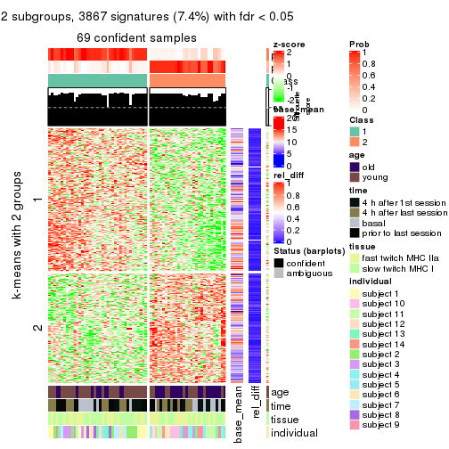
get_signatures(res, k = 3)
get_signatures(res, k = 4)
get_signatures(res, k = 5)
get_signatures(res, k = 6)
Signature heatmaps where rows are not scaled:
get_signatures(res, k = 2, scale_rows = FALSE)
get_signatures(res, k = 3, scale_rows = FALSE)
get_signatures(res, k = 4, scale_rows = FALSE)
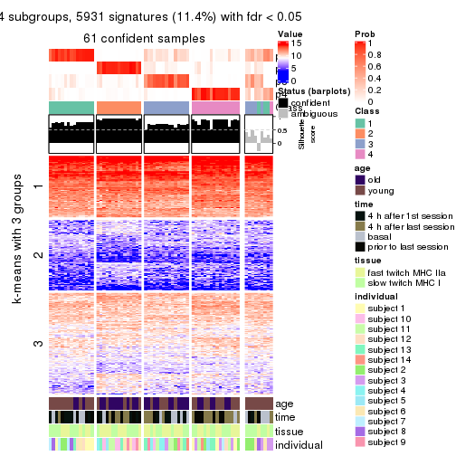
get_signatures(res, k = 5, scale_rows = FALSE)
get_signatures(res, k = 6, scale_rows = FALSE)
Compare the overlap of signatures from different k:
compare_signatures(res)
get_signature() returns a data frame invisibly. TO get the list of signatures, the function
call should be assigned to a variable explicitly. In following code, if plot argument is set
to FALSE, no heatmap is plotted while only the differential analysis is performed.
# code only for demonstration
tb = get_signature(res, k = ..., plot = FALSE)
An example of the output of tb is:
#> which_row fdr mean_1 mean_2 scaled_mean_1 scaled_mean_2 km
#> 1 38 0.042760348 8.373488 9.131774 -0.5533452 0.5164555 1
#> 2 40 0.018707592 7.106213 8.469186 -0.6173731 0.5762149 1
#> 3 55 0.019134737 10.221463 11.207825 -0.6159697 0.5749050 1
#> 4 59 0.006059896 5.921854 7.869574 -0.6899429 0.6439467 1
#> 5 60 0.018055526 8.928898 10.211722 -0.6204761 0.5791110 1
#> 6 98 0.009384629 15.714769 14.887706 0.6635654 -0.6193277 2
...
The columns in tb are:
which_row: row indices corresponding to the input matrix.fdr: FDR for the differential test. mean_x: The mean value in group x.scaled_mean_x: The mean value in group x after rows are scaled.km: Row groups if k-means clustering is applied to rows.UMAP plot which shows how samples are separated.
dimension_reduction(res, k = 2, method = "UMAP")
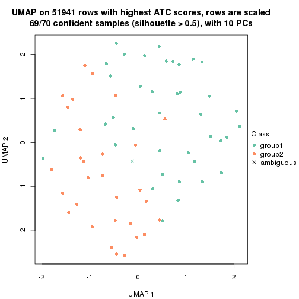
dimension_reduction(res, k = 3, method = "UMAP")
dimension_reduction(res, k = 4, method = "UMAP")
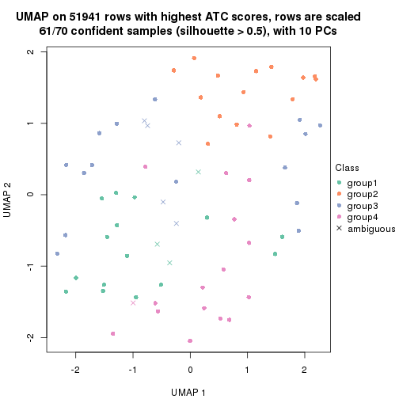
dimension_reduction(res, k = 5, method = "UMAP")
dimension_reduction(res, k = 6, method = "UMAP")
Following heatmap shows how subgroups are split when increasing k:
collect_classes(res)
Test correlation between subgroups and known annotations. If the known annotation is numeric, one-way ANOVA test is applied, and if the known annotation is discrete, chi-squared contingency table test is applied.
test_to_known_factors(res)
#> n age(p) time(p) tissue(p) individual(p) k
#> ATC:kmeans 69 0.00375 0.77857 0.575 0.000334 2
#> ATC:kmeans 65 0.07637 0.00842 0.934 0.081670 3
#> ATC:kmeans 61 0.02220 0.01178 0.741 0.006280 4
#> ATC:kmeans 67 0.00243 0.01153 0.935 0.017987 5
#> ATC:kmeans 61 0.00800 0.01462 0.928 0.016455 6
If matrix rows can be associated to genes, consider to use functional_enrichment(res,
...) to perform function enrichment for the signature genes. See this vignette for more detailed explanations.
The object with results only for a single top-value method and a single partition method can be extracted as:
res = res_list["ATC", "skmeans"]
# you can also extract it by
# res = res_list["ATC:skmeans"]
A summary of res and all the functions that can be applied to it:
res
#> A 'ConsensusPartition' object with k = 2, 3, 4, 5, 6.
#> On a matrix with 51941 rows and 70 columns.
#> Top rows (1000, 2000, 3000, 4000, 5000) are extracted by 'ATC' method.
#> Subgroups are detected by 'skmeans' method.
#> Performed in total 1250 partitions by row resampling.
#> Best k for subgroups seems to be 2.
#>
#> Following methods can be applied to this 'ConsensusPartition' object:
#> [1] "cola_report" "collect_classes" "collect_plots"
#> [4] "collect_stats" "colnames" "compare_signatures"
#> [7] "consensus_heatmap" "dimension_reduction" "functional_enrichment"
#> [10] "get_anno_col" "get_anno" "get_classes"
#> [13] "get_consensus" "get_matrix" "get_membership"
#> [16] "get_param" "get_signatures" "get_stats"
#> [19] "is_best_k" "is_stable_k" "membership_heatmap"
#> [22] "ncol" "nrow" "plot_ecdf"
#> [25] "rownames" "select_partition_number" "show"
#> [28] "suggest_best_k" "test_to_known_factors"
collect_plots() function collects all the plots made from res for all k (number of partitions)
into one single page to provide an easy and fast comparison between different k.
collect_plots(res)
The plots are:
k and the heatmap of
predicted classes for each k.k.k.k.All the plots in panels can be made by individual functions and they are plotted later in this section.
select_partition_number() produces several plots showing different
statistics for choosing “optimized” k. There are following statistics:
k;k, the area increased is defined as \(A_k - A_{k-1}\).The detailed explanations of these statistics can be found in the cola vignette.
Generally speaking, lower PAC score, higher mean silhouette score or higher
concordance corresponds to better partition. Rand index and Jaccard index
measure how similar the current partition is compared to partition with k-1.
If they are too similar, we won't accept k is better than k-1.
select_partition_number(res)
The numeric values for all these statistics can be obtained by get_stats().
get_stats(res)
#> k 1-PAC mean_silhouette concordance area_increased Rand Jaccard
#> 2 2 0.691 0.928 0.959 0.5071 0.493 0.493
#> 3 3 0.867 0.879 0.948 0.3319 0.735 0.510
#> 4 4 0.899 0.885 0.949 0.1250 0.801 0.479
#> 5 5 0.800 0.721 0.863 0.0469 0.946 0.788
#> 6 6 0.743 0.652 0.797 0.0307 0.962 0.833
suggest_best_k() suggests the best \(k\) based on these statistics. The rules are as follows:
suggest_best_k(res)
#> [1] 2
Following shows the table of the partitions (You need to click the show/hide
code output link to see it). The membership matrix (columns with name p*)
is inferred by
clue::cl_consensus()
function with the SE method. Basically the value in the membership matrix
represents the probability to belong to a certain group. The finall class
label for an item is determined with the group with highest probability it
belongs to.
In get_classes() function, the entropy is calculated from the membership
matrix and the silhouette score is calculated from the consensus matrix.
cbind(get_classes(res, k = 2), get_membership(res, k = 2))
#> class entropy silhouette p1 p2
#> GSM701770 1 0.0000 0.955 1.000 0.000
#> GSM701769 1 0.0000 0.955 1.000 0.000
#> GSM701768 2 0.4815 0.897 0.104 0.896
#> GSM701767 2 0.0000 0.957 0.000 1.000
#> GSM701766 2 0.0000 0.957 0.000 1.000
#> GSM701806 1 0.0000 0.955 1.000 0.000
#> GSM701805 1 0.0000 0.955 1.000 0.000
#> GSM701804 2 0.0672 0.954 0.008 0.992
#> GSM701803 1 0.4815 0.908 0.896 0.104
#> GSM701775 1 0.0000 0.955 1.000 0.000
#> GSM701774 1 0.0000 0.955 1.000 0.000
#> GSM701773 2 0.0000 0.957 0.000 1.000
#> GSM701772 2 0.9393 0.539 0.356 0.644
#> GSM701771 1 0.0000 0.955 1.000 0.000
#> GSM701810 1 0.0000 0.955 1.000 0.000
#> GSM701809 2 0.2423 0.937 0.040 0.960
#> GSM701808 1 0.0000 0.955 1.000 0.000
#> GSM701807 1 0.0000 0.955 1.000 0.000
#> GSM701780 1 0.0000 0.955 1.000 0.000
#> GSM701779 2 0.0000 0.957 0.000 1.000
#> GSM701778 1 0.7219 0.807 0.800 0.200
#> GSM701777 1 0.5178 0.899 0.884 0.116
#> GSM701776 1 0.0000 0.955 1.000 0.000
#> GSM701816 1 0.3879 0.922 0.924 0.076
#> GSM701815 2 0.0000 0.957 0.000 1.000
#> GSM701814 2 0.0000 0.957 0.000 1.000
#> GSM701813 1 0.4562 0.912 0.904 0.096
#> GSM701812 1 0.0000 0.955 1.000 0.000
#> GSM701811 1 0.0000 0.955 1.000 0.000
#> GSM701786 1 0.0000 0.955 1.000 0.000
#> GSM701785 2 0.0000 0.957 0.000 1.000
#> GSM701784 2 0.0000 0.957 0.000 1.000
#> GSM701783 1 0.0000 0.955 1.000 0.000
#> GSM701782 1 0.4815 0.908 0.896 0.104
#> GSM701781 1 0.4815 0.908 0.896 0.104
#> GSM701822 2 0.0000 0.957 0.000 1.000
#> GSM701821 1 0.4815 0.908 0.896 0.104
#> GSM701820 2 0.4298 0.908 0.088 0.912
#> GSM701819 1 0.0000 0.955 1.000 0.000
#> GSM701818 1 0.0000 0.955 1.000 0.000
#> GSM701817 1 0.0000 0.955 1.000 0.000
#> GSM701790 2 0.4815 0.897 0.104 0.896
#> GSM701789 1 0.0000 0.955 1.000 0.000
#> GSM701788 1 0.0000 0.955 1.000 0.000
#> GSM701787 2 0.0000 0.957 0.000 1.000
#> GSM701824 2 0.7139 0.807 0.196 0.804
#> GSM701823 2 0.0000 0.957 0.000 1.000
#> GSM701791 2 0.0000 0.957 0.000 1.000
#> GSM701793 2 0.6712 0.831 0.176 0.824
#> GSM701792 2 0.4815 0.897 0.104 0.896
#> GSM701825 2 0.4815 0.897 0.104 0.896
#> GSM701827 2 0.0000 0.957 0.000 1.000
#> GSM701826 2 0.0000 0.957 0.000 1.000
#> GSM701797 1 0.4815 0.908 0.896 0.104
#> GSM701796 1 0.0000 0.955 1.000 0.000
#> GSM701795 2 0.0000 0.957 0.000 1.000
#> GSM701794 2 0.0000 0.957 0.000 1.000
#> GSM701831 1 0.4815 0.908 0.896 0.104
#> GSM701830 2 0.0000 0.957 0.000 1.000
#> GSM701829 1 0.8608 0.682 0.716 0.284
#> GSM701828 2 0.0000 0.957 0.000 1.000
#> GSM701798 2 0.0000 0.957 0.000 1.000
#> GSM701802 1 0.4939 0.905 0.892 0.108
#> GSM701801 1 0.0000 0.955 1.000 0.000
#> GSM701800 1 0.0000 0.955 1.000 0.000
#> GSM701799 2 0.0000 0.957 0.000 1.000
#> GSM701832 2 0.4815 0.897 0.104 0.896
#> GSM701835 2 0.0000 0.957 0.000 1.000
#> GSM701834 2 0.0000 0.957 0.000 1.000
#> GSM701833 2 0.0000 0.957 0.000 1.000
cbind(get_classes(res, k = 3), get_membership(res, k = 3))
#> class entropy silhouette p1 p2 p3
#> GSM701770 1 0.6204 0.235 0.576 0.000 0.424
#> GSM701769 3 0.0237 0.956 0.004 0.000 0.996
#> GSM701768 1 0.0237 0.929 0.996 0.004 0.000
#> GSM701767 2 0.3682 0.844 0.116 0.876 0.008
#> GSM701766 2 0.6489 0.182 0.456 0.540 0.004
#> GSM701806 1 0.1289 0.911 0.968 0.000 0.032
#> GSM701805 3 0.0237 0.956 0.004 0.000 0.996
#> GSM701804 1 0.4235 0.743 0.824 0.176 0.000
#> GSM701803 3 0.0237 0.956 0.000 0.004 0.996
#> GSM701775 1 0.0237 0.931 0.996 0.000 0.004
#> GSM701774 3 0.4796 0.718 0.220 0.000 0.780
#> GSM701773 2 0.0237 0.943 0.000 0.996 0.004
#> GSM701772 1 0.0237 0.929 0.996 0.004 0.000
#> GSM701771 1 0.0237 0.931 0.996 0.000 0.004
#> GSM701810 1 0.0747 0.924 0.984 0.000 0.016
#> GSM701809 2 0.2165 0.908 0.064 0.936 0.000
#> GSM701808 1 0.0237 0.931 0.996 0.000 0.004
#> GSM701807 1 0.0237 0.931 0.996 0.000 0.004
#> GSM701780 3 0.0237 0.956 0.004 0.000 0.996
#> GSM701779 2 0.0237 0.943 0.000 0.996 0.004
#> GSM701778 3 0.1163 0.940 0.000 0.028 0.972
#> GSM701777 3 0.4164 0.815 0.144 0.008 0.848
#> GSM701776 1 0.0237 0.931 0.996 0.000 0.004
#> GSM701816 3 0.1950 0.927 0.040 0.008 0.952
#> GSM701815 2 0.0237 0.943 0.000 0.996 0.004
#> GSM701814 2 0.0237 0.943 0.000 0.996 0.004
#> GSM701813 3 0.0237 0.956 0.000 0.004 0.996
#> GSM701812 1 0.6295 0.087 0.528 0.000 0.472
#> GSM701811 1 0.0237 0.931 0.996 0.000 0.004
#> GSM701786 3 0.5760 0.505 0.328 0.000 0.672
#> GSM701785 2 0.0747 0.936 0.000 0.984 0.016
#> GSM701784 2 0.1163 0.932 0.028 0.972 0.000
#> GSM701783 3 0.0237 0.956 0.004 0.000 0.996
#> GSM701782 3 0.0237 0.956 0.000 0.004 0.996
#> GSM701781 3 0.0237 0.956 0.000 0.004 0.996
#> GSM701822 2 0.0237 0.943 0.000 0.996 0.004
#> GSM701821 3 0.0237 0.956 0.000 0.004 0.996
#> GSM701820 1 0.4178 0.752 0.828 0.172 0.000
#> GSM701819 3 0.0237 0.956 0.004 0.000 0.996
#> GSM701818 3 0.0237 0.956 0.004 0.000 0.996
#> GSM701817 3 0.0237 0.956 0.004 0.000 0.996
#> GSM701790 1 0.0237 0.929 0.996 0.004 0.000
#> GSM701789 1 0.0237 0.931 0.996 0.000 0.004
#> GSM701788 1 0.0747 0.924 0.984 0.000 0.016
#> GSM701787 2 0.1289 0.930 0.032 0.968 0.000
#> GSM701824 1 0.0237 0.929 0.996 0.004 0.000
#> GSM701823 2 0.0237 0.943 0.000 0.996 0.004
#> GSM701791 2 0.0237 0.942 0.004 0.996 0.000
#> GSM701793 1 0.0237 0.929 0.996 0.004 0.000
#> GSM701792 1 0.0237 0.929 0.996 0.004 0.000
#> GSM701825 1 0.0237 0.929 0.996 0.004 0.000
#> GSM701827 2 0.0237 0.942 0.004 0.996 0.000
#> GSM701826 2 0.1289 0.930 0.032 0.968 0.000
#> GSM701797 3 0.0237 0.956 0.000 0.004 0.996
#> GSM701796 1 0.0237 0.931 0.996 0.000 0.004
#> GSM701795 2 0.0237 0.943 0.000 0.996 0.004
#> GSM701794 2 0.0237 0.943 0.000 0.996 0.004
#> GSM701831 3 0.0237 0.956 0.000 0.004 0.996
#> GSM701830 2 0.0237 0.942 0.004 0.996 0.000
#> GSM701829 3 0.2165 0.910 0.000 0.064 0.936
#> GSM701828 2 0.0237 0.942 0.004 0.996 0.000
#> GSM701798 2 0.0237 0.943 0.000 0.996 0.004
#> GSM701802 3 0.0237 0.956 0.000 0.004 0.996
#> GSM701801 3 0.0237 0.956 0.004 0.000 0.996
#> GSM701800 3 0.0237 0.956 0.004 0.000 0.996
#> GSM701799 2 0.0237 0.943 0.000 0.996 0.004
#> GSM701832 2 0.6140 0.354 0.404 0.596 0.000
#> GSM701835 2 0.3573 0.851 0.120 0.876 0.004
#> GSM701834 2 0.0237 0.943 0.000 0.996 0.004
#> GSM701833 2 0.0237 0.942 0.004 0.996 0.000
cbind(get_classes(res, k = 4), get_membership(res, k = 4))
#> class entropy silhouette p1 p2 p3 p4
#> GSM701770 1 0.0000 0.917 1.000 0.000 0.000 0.000
#> GSM701769 1 0.4843 0.393 0.604 0.000 0.000 0.396
#> GSM701768 3 0.0000 0.933 0.000 0.000 1.000 0.000
#> GSM701767 2 0.3099 0.867 0.020 0.876 0.104 0.000
#> GSM701766 3 0.7554 0.110 0.096 0.416 0.460 0.028
#> GSM701806 1 0.0000 0.917 1.000 0.000 0.000 0.000
#> GSM701805 1 0.4543 0.544 0.676 0.000 0.000 0.324
#> GSM701804 3 0.0817 0.920 0.024 0.000 0.976 0.000
#> GSM701803 4 0.0000 0.946 0.000 0.000 0.000 1.000
#> GSM701775 1 0.1118 0.895 0.964 0.000 0.036 0.000
#> GSM701774 1 0.0921 0.901 0.972 0.000 0.000 0.028
#> GSM701773 2 0.0000 0.987 0.000 1.000 0.000 0.000
#> GSM701772 3 0.3172 0.786 0.160 0.000 0.840 0.000
#> GSM701771 1 0.0000 0.917 1.000 0.000 0.000 0.000
#> GSM701810 1 0.0000 0.917 1.000 0.000 0.000 0.000
#> GSM701809 3 0.0707 0.924 0.000 0.020 0.980 0.000
#> GSM701808 1 0.2081 0.849 0.916 0.000 0.084 0.000
#> GSM701807 1 0.0000 0.917 1.000 0.000 0.000 0.000
#> GSM701780 4 0.0000 0.946 0.000 0.000 0.000 1.000
#> GSM701779 2 0.0000 0.987 0.000 1.000 0.000 0.000
#> GSM701778 4 0.1118 0.918 0.000 0.036 0.000 0.964
#> GSM701777 4 0.5693 0.599 0.252 0.028 0.024 0.696
#> GSM701776 1 0.0000 0.917 1.000 0.000 0.000 0.000
#> GSM701816 4 0.6146 0.436 0.324 0.044 0.012 0.620
#> GSM701815 2 0.0000 0.987 0.000 1.000 0.000 0.000
#> GSM701814 2 0.0000 0.987 0.000 1.000 0.000 0.000
#> GSM701813 4 0.0000 0.946 0.000 0.000 0.000 1.000
#> GSM701812 1 0.0336 0.914 0.992 0.000 0.000 0.008
#> GSM701811 1 0.0000 0.917 1.000 0.000 0.000 0.000
#> GSM701786 1 0.0188 0.915 0.996 0.000 0.000 0.004
#> GSM701785 2 0.1474 0.939 0.000 0.948 0.000 0.052
#> GSM701784 3 0.0592 0.927 0.000 0.016 0.984 0.000
#> GSM701783 1 0.4961 0.258 0.552 0.000 0.000 0.448
#> GSM701782 4 0.0000 0.946 0.000 0.000 0.000 1.000
#> GSM701781 4 0.0000 0.946 0.000 0.000 0.000 1.000
#> GSM701822 2 0.0000 0.987 0.000 1.000 0.000 0.000
#> GSM701821 4 0.0000 0.946 0.000 0.000 0.000 1.000
#> GSM701820 3 0.0000 0.933 0.000 0.000 1.000 0.000
#> GSM701819 4 0.0188 0.944 0.004 0.000 0.000 0.996
#> GSM701818 4 0.0000 0.946 0.000 0.000 0.000 1.000
#> GSM701817 4 0.0000 0.946 0.000 0.000 0.000 1.000
#> GSM701790 3 0.0000 0.933 0.000 0.000 1.000 0.000
#> GSM701789 1 0.0469 0.911 0.988 0.000 0.012 0.000
#> GSM701788 1 0.0000 0.917 1.000 0.000 0.000 0.000
#> GSM701787 3 0.0000 0.933 0.000 0.000 1.000 0.000
#> GSM701824 3 0.0000 0.933 0.000 0.000 1.000 0.000
#> GSM701823 2 0.0000 0.987 0.000 1.000 0.000 0.000
#> GSM701791 2 0.0921 0.965 0.000 0.972 0.028 0.000
#> GSM701793 3 0.0000 0.933 0.000 0.000 1.000 0.000
#> GSM701792 3 0.0000 0.933 0.000 0.000 1.000 0.000
#> GSM701825 3 0.0000 0.933 0.000 0.000 1.000 0.000
#> GSM701827 2 0.0188 0.984 0.000 0.996 0.004 0.000
#> GSM701826 3 0.0000 0.933 0.000 0.000 1.000 0.000
#> GSM701797 4 0.0000 0.946 0.000 0.000 0.000 1.000
#> GSM701796 1 0.0000 0.917 1.000 0.000 0.000 0.000
#> GSM701795 2 0.0000 0.987 0.000 1.000 0.000 0.000
#> GSM701794 2 0.0000 0.987 0.000 1.000 0.000 0.000
#> GSM701831 4 0.0000 0.946 0.000 0.000 0.000 1.000
#> GSM701830 2 0.0000 0.987 0.000 1.000 0.000 0.000
#> GSM701829 4 0.3123 0.803 0.000 0.156 0.000 0.844
#> GSM701828 3 0.2530 0.851 0.000 0.112 0.888 0.000
#> GSM701798 2 0.0000 0.987 0.000 1.000 0.000 0.000
#> GSM701802 4 0.0000 0.946 0.000 0.000 0.000 1.000
#> GSM701801 4 0.0000 0.946 0.000 0.000 0.000 1.000
#> GSM701800 4 0.0188 0.944 0.004 0.000 0.000 0.996
#> GSM701799 2 0.0000 0.987 0.000 1.000 0.000 0.000
#> GSM701832 3 0.0000 0.933 0.000 0.000 1.000 0.000
#> GSM701835 3 0.4979 0.728 0.020 0.192 0.764 0.024
#> GSM701834 2 0.0000 0.987 0.000 1.000 0.000 0.000
#> GSM701833 2 0.0188 0.984 0.000 0.996 0.004 0.000
cbind(get_classes(res, k = 5), get_membership(res, k = 5))
#> class entropy silhouette p1 p2 p3 p4 p5
#> GSM701770 1 0.1386 0.86332 0.952 0.000 0.016 0.000 0.032
#> GSM701769 3 0.5350 -0.01115 0.460 0.000 0.488 0.000 0.052
#> GSM701768 4 0.0404 0.86382 0.000 0.000 0.000 0.988 0.012
#> GSM701767 2 0.6571 0.18817 0.032 0.536 0.004 0.096 0.332
#> GSM701766 5 0.6358 0.45762 0.012 0.204 0.008 0.172 0.604
#> GSM701806 1 0.0162 0.87216 0.996 0.000 0.000 0.000 0.004
#> GSM701805 1 0.6142 0.14688 0.472 0.000 0.396 0.000 0.132
#> GSM701804 4 0.4632 0.54503 0.024 0.008 0.000 0.684 0.284
#> GSM701803 3 0.2017 0.76805 0.008 0.000 0.912 0.000 0.080
#> GSM701775 1 0.2729 0.82631 0.884 0.000 0.000 0.056 0.060
#> GSM701774 1 0.4884 0.64283 0.720 0.000 0.128 0.000 0.152
#> GSM701773 2 0.0404 0.90387 0.000 0.988 0.000 0.000 0.012
#> GSM701772 4 0.6362 0.10990 0.224 0.000 0.000 0.520 0.256
#> GSM701771 1 0.1608 0.86307 0.928 0.000 0.000 0.000 0.072
#> GSM701810 1 0.0703 0.87263 0.976 0.000 0.000 0.000 0.024
#> GSM701809 4 0.2293 0.83228 0.000 0.016 0.000 0.900 0.084
#> GSM701808 1 0.3601 0.75245 0.820 0.000 0.000 0.128 0.052
#> GSM701807 1 0.1544 0.86436 0.932 0.000 0.000 0.000 0.068
#> GSM701780 3 0.1205 0.76406 0.004 0.000 0.956 0.000 0.040
#> GSM701779 2 0.0510 0.90336 0.000 0.984 0.000 0.000 0.016
#> GSM701778 3 0.4049 0.68757 0.000 0.084 0.792 0.000 0.124
#> GSM701777 5 0.5406 0.41723 0.080 0.012 0.220 0.004 0.684
#> GSM701776 1 0.1197 0.86917 0.952 0.000 0.000 0.000 0.048
#> GSM701816 5 0.7483 0.32478 0.200 0.028 0.268 0.020 0.484
#> GSM701815 2 0.0865 0.89560 0.000 0.972 0.004 0.000 0.024
#> GSM701814 2 0.0771 0.89758 0.000 0.976 0.004 0.000 0.020
#> GSM701813 3 0.1121 0.77490 0.000 0.000 0.956 0.000 0.044
#> GSM701812 1 0.2221 0.85220 0.912 0.000 0.036 0.000 0.052
#> GSM701811 1 0.1478 0.86513 0.936 0.000 0.000 0.000 0.064
#> GSM701786 1 0.1818 0.85006 0.932 0.000 0.024 0.000 0.044
#> GSM701785 2 0.5396 0.00149 0.000 0.500 0.056 0.000 0.444
#> GSM701784 4 0.4113 0.62931 0.000 0.028 0.000 0.740 0.232
#> GSM701783 3 0.5133 0.23877 0.388 0.000 0.568 0.000 0.044
#> GSM701782 3 0.1908 0.76641 0.000 0.000 0.908 0.000 0.092
#> GSM701781 3 0.1732 0.76985 0.000 0.000 0.920 0.000 0.080
#> GSM701822 2 0.0162 0.90463 0.000 0.996 0.000 0.000 0.004
#> GSM701821 3 0.3143 0.69703 0.000 0.000 0.796 0.000 0.204
#> GSM701820 4 0.0510 0.86421 0.000 0.000 0.000 0.984 0.016
#> GSM701819 3 0.1549 0.75940 0.016 0.000 0.944 0.000 0.040
#> GSM701818 3 0.1408 0.76174 0.008 0.000 0.948 0.000 0.044
#> GSM701817 3 0.0324 0.77470 0.004 0.000 0.992 0.000 0.004
#> GSM701790 4 0.0000 0.86458 0.000 0.000 0.000 1.000 0.000
#> GSM701789 1 0.2228 0.84738 0.912 0.000 0.000 0.040 0.048
#> GSM701788 1 0.0000 0.87213 1.000 0.000 0.000 0.000 0.000
#> GSM701787 4 0.1121 0.85425 0.000 0.000 0.000 0.956 0.044
#> GSM701824 4 0.0162 0.86476 0.004 0.000 0.000 0.996 0.000
#> GSM701823 2 0.0510 0.90336 0.000 0.984 0.000 0.000 0.016
#> GSM701791 2 0.2588 0.83580 0.000 0.892 0.000 0.048 0.060
#> GSM701793 4 0.0162 0.86476 0.004 0.000 0.000 0.996 0.000
#> GSM701792 4 0.0000 0.86458 0.000 0.000 0.000 1.000 0.000
#> GSM701825 4 0.1043 0.85341 0.000 0.000 0.000 0.960 0.040
#> GSM701827 2 0.1270 0.88548 0.000 0.948 0.000 0.000 0.052
#> GSM701826 4 0.1121 0.85536 0.000 0.000 0.000 0.956 0.044
#> GSM701797 3 0.2074 0.76337 0.000 0.000 0.896 0.000 0.104
#> GSM701796 1 0.1444 0.86452 0.948 0.000 0.000 0.012 0.040
#> GSM701795 2 0.0000 0.90473 0.000 1.000 0.000 0.000 0.000
#> GSM701794 2 0.0000 0.90473 0.000 1.000 0.000 0.000 0.000
#> GSM701831 3 0.2179 0.75954 0.000 0.000 0.888 0.000 0.112
#> GSM701830 2 0.1197 0.88637 0.000 0.952 0.000 0.000 0.048
#> GSM701829 3 0.5834 0.32479 0.000 0.276 0.588 0.000 0.136
#> GSM701828 4 0.3844 0.65461 0.000 0.164 0.000 0.792 0.044
#> GSM701798 2 0.1043 0.89550 0.000 0.960 0.000 0.000 0.040
#> GSM701802 3 0.4675 0.25675 0.004 0.008 0.544 0.000 0.444
#> GSM701801 3 0.1764 0.76241 0.008 0.000 0.928 0.000 0.064
#> GSM701800 3 0.2511 0.74192 0.028 0.000 0.892 0.000 0.080
#> GSM701799 2 0.0162 0.90459 0.000 0.996 0.000 0.000 0.004
#> GSM701832 4 0.1626 0.85087 0.000 0.016 0.000 0.940 0.044
#> GSM701835 5 0.6995 0.21565 0.028 0.132 0.008 0.352 0.480
#> GSM701834 2 0.0162 0.90468 0.000 0.996 0.000 0.000 0.004
#> GSM701833 2 0.1270 0.88548 0.000 0.948 0.000 0.000 0.052
cbind(get_classes(res, k = 6), get_membership(res, k = 6))
#> class entropy silhouette p1 p2 p3 p4 p5 p6
#> GSM701770 1 0.2624 0.8114 0.880 0.000 0.024 0.000 0.080 0.016
#> GSM701769 5 0.4406 0.3123 0.324 0.000 0.028 0.000 0.640 0.008
#> GSM701768 4 0.0935 0.7957 0.004 0.000 0.000 0.964 0.000 0.032
#> GSM701767 6 0.5972 0.2174 0.020 0.332 0.020 0.076 0.004 0.548
#> GSM701766 6 0.7186 0.3217 0.056 0.116 0.208 0.088 0.000 0.532
#> GSM701806 1 0.0405 0.8445 0.988 0.000 0.004 0.000 0.008 0.000
#> GSM701805 5 0.5926 0.1417 0.336 0.000 0.032 0.000 0.520 0.112
#> GSM701804 4 0.4580 0.2008 0.012 0.000 0.016 0.488 0.000 0.484
#> GSM701803 5 0.3819 0.6803 0.004 0.000 0.176 0.000 0.768 0.052
#> GSM701775 1 0.3951 0.7678 0.800 0.000 0.076 0.088 0.000 0.036
#> GSM701774 1 0.6695 0.3423 0.504 0.000 0.124 0.000 0.260 0.112
#> GSM701773 2 0.0777 0.9186 0.000 0.972 0.004 0.000 0.000 0.024
#> GSM701772 4 0.7355 -0.1840 0.196 0.000 0.132 0.360 0.000 0.312
#> GSM701771 1 0.2301 0.8345 0.884 0.000 0.020 0.000 0.000 0.096
#> GSM701810 1 0.1767 0.8461 0.932 0.000 0.036 0.000 0.012 0.020
#> GSM701809 4 0.4426 0.7023 0.000 0.036 0.052 0.744 0.000 0.168
#> GSM701808 1 0.4263 0.7415 0.768 0.000 0.028 0.124 0.000 0.080
#> GSM701807 1 0.2678 0.8274 0.860 0.000 0.020 0.004 0.000 0.116
#> GSM701780 5 0.0363 0.6703 0.000 0.000 0.012 0.000 0.988 0.000
#> GSM701779 2 0.0790 0.9156 0.000 0.968 0.000 0.000 0.000 0.032
#> GSM701778 5 0.5245 0.5892 0.000 0.080 0.244 0.000 0.644 0.032
#> GSM701777 6 0.6091 0.1770 0.028 0.012 0.336 0.004 0.088 0.532
#> GSM701776 1 0.1951 0.8384 0.908 0.000 0.016 0.000 0.000 0.076
#> GSM701816 3 0.7988 0.0347 0.136 0.024 0.440 0.020 0.196 0.184
#> GSM701815 2 0.1391 0.9037 0.000 0.944 0.040 0.000 0.000 0.016
#> GSM701814 2 0.1333 0.9060 0.000 0.944 0.048 0.000 0.000 0.008
#> GSM701813 5 0.2692 0.6912 0.000 0.000 0.148 0.000 0.840 0.012
#> GSM701812 1 0.3810 0.7792 0.812 0.000 0.068 0.000 0.080 0.040
#> GSM701811 1 0.2723 0.8247 0.852 0.000 0.016 0.004 0.000 0.128
#> GSM701786 1 0.2959 0.7722 0.844 0.000 0.024 0.000 0.124 0.008
#> GSM701785 3 0.5788 -0.0739 0.000 0.400 0.492 0.004 0.032 0.072
#> GSM701784 4 0.5827 0.4924 0.000 0.028 0.212 0.588 0.000 0.172
#> GSM701783 5 0.4203 0.3980 0.260 0.000 0.028 0.000 0.700 0.012
#> GSM701782 5 0.3668 0.6669 0.000 0.000 0.228 0.000 0.744 0.028
#> GSM701781 5 0.3394 0.6770 0.000 0.000 0.200 0.000 0.776 0.024
#> GSM701822 2 0.1075 0.9146 0.000 0.952 0.048 0.000 0.000 0.000
#> GSM701821 5 0.4012 0.5915 0.000 0.000 0.344 0.000 0.640 0.016
#> GSM701820 4 0.1492 0.7993 0.000 0.000 0.024 0.940 0.000 0.036
#> GSM701819 5 0.1313 0.6546 0.016 0.000 0.028 0.000 0.952 0.004
#> GSM701818 5 0.1059 0.6600 0.016 0.000 0.016 0.000 0.964 0.004
#> GSM701817 5 0.2070 0.6915 0.000 0.000 0.100 0.000 0.892 0.008
#> GSM701790 4 0.0146 0.8005 0.004 0.000 0.000 0.996 0.000 0.000
#> GSM701789 1 0.3141 0.8060 0.856 0.000 0.052 0.064 0.000 0.028
#> GSM701788 1 0.0551 0.8443 0.984 0.000 0.008 0.000 0.004 0.004
#> GSM701787 4 0.2070 0.7906 0.000 0.000 0.048 0.908 0.000 0.044
#> GSM701824 4 0.0508 0.7994 0.012 0.000 0.004 0.984 0.000 0.000
#> GSM701823 2 0.0865 0.9135 0.000 0.964 0.000 0.000 0.000 0.036
#> GSM701791 2 0.4389 0.7423 0.000 0.772 0.068 0.076 0.000 0.084
#> GSM701793 4 0.0405 0.8002 0.004 0.000 0.008 0.988 0.000 0.000
#> GSM701792 4 0.0508 0.8010 0.004 0.000 0.012 0.984 0.000 0.000
#> GSM701825 4 0.1806 0.7758 0.004 0.000 0.000 0.908 0.000 0.088
#> GSM701827 2 0.2796 0.8550 0.000 0.872 0.068 0.012 0.000 0.048
#> GSM701826 4 0.2442 0.7844 0.000 0.000 0.068 0.884 0.000 0.048
#> GSM701797 5 0.3794 0.6615 0.000 0.000 0.248 0.000 0.724 0.028
#> GSM701796 1 0.2326 0.8326 0.900 0.000 0.060 0.012 0.000 0.028
#> GSM701795 2 0.0363 0.9194 0.000 0.988 0.000 0.000 0.000 0.012
#> GSM701794 2 0.0146 0.9199 0.000 0.996 0.004 0.000 0.000 0.000
#> GSM701831 5 0.3841 0.6565 0.000 0.000 0.256 0.000 0.716 0.028
#> GSM701830 2 0.2670 0.8642 0.000 0.872 0.084 0.004 0.000 0.040
#> GSM701829 5 0.7160 0.1570 0.000 0.228 0.260 0.000 0.412 0.100
#> GSM701828 4 0.5252 0.6116 0.000 0.132 0.092 0.696 0.000 0.080
#> GSM701798 2 0.1780 0.9048 0.000 0.924 0.028 0.000 0.000 0.048
#> GSM701802 3 0.4616 0.0357 0.000 0.000 0.624 0.000 0.316 0.060
#> GSM701801 5 0.2255 0.6450 0.016 0.000 0.088 0.000 0.892 0.004
#> GSM701800 5 0.3438 0.5824 0.048 0.000 0.120 0.000 0.820 0.012
#> GSM701799 2 0.0603 0.9177 0.000 0.980 0.016 0.000 0.000 0.004
#> GSM701832 4 0.2988 0.7758 0.000 0.004 0.084 0.852 0.000 0.060
#> GSM701835 3 0.6585 -0.0181 0.008 0.052 0.548 0.184 0.004 0.204
#> GSM701834 2 0.0858 0.9202 0.000 0.968 0.028 0.000 0.000 0.004
#> GSM701833 2 0.2908 0.8527 0.000 0.864 0.076 0.012 0.000 0.048
Heatmaps for the consensus matrix. It visualizes the probability of two samples to be in a same group.
consensus_heatmap(res, k = 2)
consensus_heatmap(res, k = 3)
consensus_heatmap(res, k = 4)
consensus_heatmap(res, k = 5)
consensus_heatmap(res, k = 6)
Heatmaps for the membership of samples in all partitions to see how consistent they are:
membership_heatmap(res, k = 2)
membership_heatmap(res, k = 3)
membership_heatmap(res, k = 4)
membership_heatmap(res, k = 5)

membership_heatmap(res, k = 6)
As soon as we have had the classes for columns, we can look for signatures which are significantly different between classes which can be candidate marks for certain classes. Following are the heatmaps for signatures.
Signature heatmaps where rows are scaled:
get_signatures(res, k = 2)
get_signatures(res, k = 3)
get_signatures(res, k = 4)
get_signatures(res, k = 5)
get_signatures(res, k = 6)
Signature heatmaps where rows are not scaled:
get_signatures(res, k = 2, scale_rows = FALSE)
get_signatures(res, k = 3, scale_rows = FALSE)

get_signatures(res, k = 4, scale_rows = FALSE)
get_signatures(res, k = 5, scale_rows = FALSE)
get_signatures(res, k = 6, scale_rows = FALSE)
Compare the overlap of signatures from different k:
compare_signatures(res)
get_signature() returns a data frame invisibly. TO get the list of signatures, the function
call should be assigned to a variable explicitly. In following code, if plot argument is set
to FALSE, no heatmap is plotted while only the differential analysis is performed.
# code only for demonstration
tb = get_signature(res, k = ..., plot = FALSE)
An example of the output of tb is:
#> which_row fdr mean_1 mean_2 scaled_mean_1 scaled_mean_2 km
#> 1 38 0.042760348 8.373488 9.131774 -0.5533452 0.5164555 1
#> 2 40 0.018707592 7.106213 8.469186 -0.6173731 0.5762149 1
#> 3 55 0.019134737 10.221463 11.207825 -0.6159697 0.5749050 1
#> 4 59 0.006059896 5.921854 7.869574 -0.6899429 0.6439467 1
#> 5 60 0.018055526 8.928898 10.211722 -0.6204761 0.5791110 1
#> 6 98 0.009384629 15.714769 14.887706 0.6635654 -0.6193277 2
...
The columns in tb are:
which_row: row indices corresponding to the input matrix.fdr: FDR for the differential test. mean_x: The mean value in group x.scaled_mean_x: The mean value in group x after rows are scaled.km: Row groups if k-means clustering is applied to rows.UMAP plot which shows how samples are separated.
dimension_reduction(res, k = 2, method = "UMAP")
dimension_reduction(res, k = 3, method = "UMAP")
dimension_reduction(res, k = 4, method = "UMAP")
dimension_reduction(res, k = 5, method = "UMAP")
dimension_reduction(res, k = 6, method = "UMAP")
Following heatmap shows how subgroups are split when increasing k:
collect_classes(res)
Test correlation between subgroups and known annotations. If the known annotation is numeric, one-way ANOVA test is applied, and if the known annotation is discrete, chi-squared contingency table test is applied.
test_to_known_factors(res)
#> n age(p) time(p) tissue(p) individual(p) k
#> ATC:skmeans 70 0.00858 0.57771 0.821 0.000987 2
#> ATC:skmeans 66 0.05599 0.00329 0.821 0.057836 3
#> ATC:skmeans 66 0.03836 0.00909 0.906 0.008001 4
#> ATC:skmeans 58 0.01640 0.01457 0.813 0.005752 5
#> ATC:skmeans 55 0.00856 0.01969 0.881 0.011239 6
If matrix rows can be associated to genes, consider to use functional_enrichment(res,
...) to perform function enrichment for the signature genes. See this vignette for more detailed explanations.
The object with results only for a single top-value method and a single partition method can be extracted as:
res = res_list["ATC", "pam"]
# you can also extract it by
# res = res_list["ATC:pam"]
A summary of res and all the functions that can be applied to it:
res
#> A 'ConsensusPartition' object with k = 2, 3, 4, 5, 6.
#> On a matrix with 51941 rows and 70 columns.
#> Top rows (1000, 2000, 3000, 4000, 5000) are extracted by 'ATC' method.
#> Subgroups are detected by 'pam' method.
#> Performed in total 1250 partitions by row resampling.
#> Best k for subgroups seems to be 3.
#>
#> Following methods can be applied to this 'ConsensusPartition' object:
#> [1] "cola_report" "collect_classes" "collect_plots"
#> [4] "collect_stats" "colnames" "compare_signatures"
#> [7] "consensus_heatmap" "dimension_reduction" "functional_enrichment"
#> [10] "get_anno_col" "get_anno" "get_classes"
#> [13] "get_consensus" "get_matrix" "get_membership"
#> [16] "get_param" "get_signatures" "get_stats"
#> [19] "is_best_k" "is_stable_k" "membership_heatmap"
#> [22] "ncol" "nrow" "plot_ecdf"
#> [25] "rownames" "select_partition_number" "show"
#> [28] "suggest_best_k" "test_to_known_factors"
collect_plots() function collects all the plots made from res for all k (number of partitions)
into one single page to provide an easy and fast comparison between different k.
collect_plots(res)
The plots are:
k and the heatmap of
predicted classes for each k.k.k.k.All the plots in panels can be made by individual functions and they are plotted later in this section.
select_partition_number() produces several plots showing different
statistics for choosing “optimized” k. There are following statistics:
k;k, the area increased is defined as \(A_k - A_{k-1}\).The detailed explanations of these statistics can be found in the cola vignette.
Generally speaking, lower PAC score, higher mean silhouette score or higher
concordance corresponds to better partition. Rand index and Jaccard index
measure how similar the current partition is compared to partition with k-1.
If they are too similar, we won't accept k is better than k-1.
select_partition_number(res)
The numeric values for all these statistics can be obtained by get_stats().
get_stats(res)
#> k 1-PAC mean_silhouette concordance area_increased Rand Jaccard
#> 2 2 0.627 0.889 0.922 0.4815 0.496 0.496
#> 3 3 1.000 0.970 0.987 0.3137 0.755 0.558
#> 4 4 0.743 0.840 0.907 0.1647 0.896 0.717
#> 5 5 0.802 0.834 0.905 0.0805 0.823 0.445
#> 6 6 0.763 0.632 0.783 0.0356 0.977 0.889
suggest_best_k() suggests the best \(k\) based on these statistics. The rules are as follows:
suggest_best_k(res)
#> [1] 3
Following shows the table of the partitions (You need to click the show/hide
code output link to see it). The membership matrix (columns with name p*)
is inferred by
clue::cl_consensus()
function with the SE method. Basically the value in the membership matrix
represents the probability to belong to a certain group. The finall class
label for an item is determined with the group with highest probability it
belongs to.
In get_classes() function, the entropy is calculated from the membership
matrix and the silhouette score is calculated from the consensus matrix.
cbind(get_classes(res, k = 2), get_membership(res, k = 2))
#> class entropy silhouette p1 p2
#> GSM701770 1 0.0000 0.937 1.000 0.000
#> GSM701769 1 0.0000 0.937 1.000 0.000
#> GSM701768 2 0.8144 0.810 0.252 0.748
#> GSM701767 2 0.6887 0.836 0.184 0.816
#> GSM701766 1 0.8144 0.695 0.748 0.252
#> GSM701806 1 0.0000 0.937 1.000 0.000
#> GSM701805 1 0.0000 0.937 1.000 0.000
#> GSM701804 2 0.6887 0.836 0.184 0.816
#> GSM701803 1 0.3733 0.937 0.928 0.072
#> GSM701775 1 0.0000 0.937 1.000 0.000
#> GSM701774 1 0.3733 0.937 0.928 0.072
#> GSM701773 2 0.0000 0.888 0.000 1.000
#> GSM701772 1 0.4562 0.923 0.904 0.096
#> GSM701771 1 0.0000 0.937 1.000 0.000
#> GSM701810 1 0.0000 0.937 1.000 0.000
#> GSM701809 2 0.6801 0.839 0.180 0.820
#> GSM701808 1 0.5294 0.828 0.880 0.120
#> GSM701807 1 0.0000 0.937 1.000 0.000
#> GSM701780 1 0.3733 0.937 0.928 0.072
#> GSM701779 2 0.0000 0.888 0.000 1.000
#> GSM701778 1 0.7674 0.775 0.776 0.224
#> GSM701777 1 0.4690 0.920 0.900 0.100
#> GSM701776 1 0.0000 0.937 1.000 0.000
#> GSM701816 2 0.8555 0.720 0.280 0.720
#> GSM701815 2 0.0000 0.888 0.000 1.000
#> GSM701814 2 0.0000 0.888 0.000 1.000
#> GSM701813 1 0.3733 0.937 0.928 0.072
#> GSM701812 1 0.0000 0.937 1.000 0.000
#> GSM701811 1 0.0000 0.937 1.000 0.000
#> GSM701786 1 0.0000 0.937 1.000 0.000
#> GSM701785 1 0.4562 0.923 0.904 0.096
#> GSM701784 2 0.9209 0.607 0.336 0.664
#> GSM701783 1 0.0000 0.937 1.000 0.000
#> GSM701782 1 0.4431 0.930 0.908 0.092
#> GSM701781 1 0.4431 0.930 0.908 0.092
#> GSM701822 2 0.0000 0.888 0.000 1.000
#> GSM701821 1 0.4431 0.930 0.908 0.092
#> GSM701820 2 0.6148 0.854 0.152 0.848
#> GSM701819 1 0.2778 0.940 0.952 0.048
#> GSM701818 1 0.2423 0.940 0.960 0.040
#> GSM701817 1 0.3733 0.937 0.928 0.072
#> GSM701790 2 0.7674 0.828 0.224 0.776
#> GSM701789 1 0.0000 0.937 1.000 0.000
#> GSM701788 1 0.0000 0.937 1.000 0.000
#> GSM701787 2 0.1414 0.887 0.020 0.980
#> GSM701824 2 0.8207 0.807 0.256 0.744
#> GSM701823 2 0.0000 0.888 0.000 1.000
#> GSM701791 2 0.0938 0.888 0.012 0.988
#> GSM701793 2 0.8207 0.807 0.256 0.744
#> GSM701792 2 0.8207 0.807 0.256 0.744
#> GSM701825 2 0.7674 0.828 0.224 0.776
#> GSM701827 2 0.0000 0.888 0.000 1.000
#> GSM701826 2 0.1414 0.887 0.020 0.980
#> GSM701797 1 0.4431 0.930 0.908 0.092
#> GSM701796 1 0.0000 0.937 1.000 0.000
#> GSM701795 2 0.0000 0.888 0.000 1.000
#> GSM701794 2 0.0000 0.888 0.000 1.000
#> GSM701831 1 0.4431 0.930 0.908 0.092
#> GSM701830 2 0.0000 0.888 0.000 1.000
#> GSM701829 1 0.4431 0.930 0.908 0.092
#> GSM701828 2 0.5946 0.857 0.144 0.856
#> GSM701798 2 0.0376 0.887 0.004 0.996
#> GSM701802 1 0.3733 0.937 0.928 0.072
#> GSM701801 1 0.3584 0.938 0.932 0.068
#> GSM701800 1 0.3733 0.937 0.928 0.072
#> GSM701799 2 0.0000 0.888 0.000 1.000
#> GSM701832 2 0.6973 0.836 0.188 0.812
#> GSM701835 2 0.7056 0.830 0.192 0.808
#> GSM701834 2 0.0000 0.888 0.000 1.000
#> GSM701833 2 0.0000 0.888 0.000 1.000
cbind(get_classes(res, k = 3), get_membership(res, k = 3))
#> class entropy silhouette p1 p2 p3
#> GSM701770 3 0.0237 0.988 0.004 0.000 0.996
#> GSM701769 3 0.0000 0.988 0.000 0.000 1.000
#> GSM701768 1 0.0000 0.979 1.000 0.000 0.000
#> GSM701767 2 0.5285 0.668 0.004 0.752 0.244
#> GSM701766 3 0.5016 0.684 0.240 0.000 0.760
#> GSM701806 3 0.0000 0.988 0.000 0.000 1.000
#> GSM701805 3 0.0000 0.988 0.000 0.000 1.000
#> GSM701804 1 0.0000 0.979 1.000 0.000 0.000
#> GSM701803 3 0.0000 0.988 0.000 0.000 1.000
#> GSM701775 1 0.0000 0.979 1.000 0.000 0.000
#> GSM701774 3 0.0237 0.988 0.004 0.000 0.996
#> GSM701773 2 0.0000 0.981 0.000 1.000 0.000
#> GSM701772 1 0.3412 0.842 0.876 0.000 0.124
#> GSM701771 3 0.0237 0.988 0.004 0.000 0.996
#> GSM701810 3 0.0237 0.988 0.004 0.000 0.996
#> GSM701809 1 0.0000 0.979 1.000 0.000 0.000
#> GSM701808 1 0.0000 0.979 1.000 0.000 0.000
#> GSM701807 3 0.0592 0.982 0.012 0.000 0.988
#> GSM701780 3 0.0000 0.988 0.000 0.000 1.000
#> GSM701779 2 0.0000 0.981 0.000 1.000 0.000
#> GSM701778 2 0.0000 0.981 0.000 1.000 0.000
#> GSM701777 3 0.0237 0.988 0.004 0.000 0.996
#> GSM701776 3 0.1860 0.943 0.052 0.000 0.948
#> GSM701816 3 0.0237 0.988 0.004 0.000 0.996
#> GSM701815 2 0.0000 0.981 0.000 1.000 0.000
#> GSM701814 2 0.0000 0.981 0.000 1.000 0.000
#> GSM701813 3 0.0000 0.988 0.000 0.000 1.000
#> GSM701812 3 0.0237 0.988 0.004 0.000 0.996
#> GSM701811 3 0.0237 0.988 0.004 0.000 0.996
#> GSM701786 3 0.0000 0.988 0.000 0.000 1.000
#> GSM701785 3 0.0237 0.988 0.004 0.000 0.996
#> GSM701784 1 0.0424 0.972 0.992 0.000 0.008
#> GSM701783 3 0.0000 0.988 0.000 0.000 1.000
#> GSM701782 3 0.0000 0.988 0.000 0.000 1.000
#> GSM701781 3 0.0000 0.988 0.000 0.000 1.000
#> GSM701822 2 0.0000 0.981 0.000 1.000 0.000
#> GSM701821 3 0.0000 0.988 0.000 0.000 1.000
#> GSM701820 1 0.0000 0.979 1.000 0.000 0.000
#> GSM701819 3 0.0000 0.988 0.000 0.000 1.000
#> GSM701818 3 0.0000 0.988 0.000 0.000 1.000
#> GSM701817 3 0.0000 0.988 0.000 0.000 1.000
#> GSM701790 1 0.0000 0.979 1.000 0.000 0.000
#> GSM701789 1 0.3816 0.813 0.852 0.000 0.148
#> GSM701788 3 0.0237 0.988 0.004 0.000 0.996
#> GSM701787 1 0.0237 0.975 0.996 0.004 0.000
#> GSM701824 1 0.0000 0.979 1.000 0.000 0.000
#> GSM701823 2 0.0000 0.981 0.000 1.000 0.000
#> GSM701791 2 0.0000 0.981 0.000 1.000 0.000
#> GSM701793 1 0.0000 0.979 1.000 0.000 0.000
#> GSM701792 1 0.0000 0.979 1.000 0.000 0.000
#> GSM701825 1 0.0000 0.979 1.000 0.000 0.000
#> GSM701827 2 0.0000 0.981 0.000 1.000 0.000
#> GSM701826 1 0.0000 0.979 1.000 0.000 0.000
#> GSM701797 3 0.0000 0.988 0.000 0.000 1.000
#> GSM701796 3 0.0237 0.988 0.004 0.000 0.996
#> GSM701795 2 0.0000 0.981 0.000 1.000 0.000
#> GSM701794 2 0.0000 0.981 0.000 1.000 0.000
#> GSM701831 3 0.0000 0.988 0.000 0.000 1.000
#> GSM701830 2 0.0000 0.981 0.000 1.000 0.000
#> GSM701829 3 0.1411 0.957 0.000 0.036 0.964
#> GSM701828 1 0.0237 0.975 0.996 0.004 0.000
#> GSM701798 2 0.0000 0.981 0.000 1.000 0.000
#> GSM701802 3 0.0237 0.988 0.004 0.000 0.996
#> GSM701801 3 0.0000 0.988 0.000 0.000 1.000
#> GSM701800 3 0.0237 0.988 0.004 0.000 0.996
#> GSM701799 2 0.0000 0.981 0.000 1.000 0.000
#> GSM701832 1 0.0000 0.979 1.000 0.000 0.000
#> GSM701835 3 0.0237 0.988 0.004 0.000 0.996
#> GSM701834 2 0.0000 0.981 0.000 1.000 0.000
#> GSM701833 2 0.0000 0.981 0.000 1.000 0.000
cbind(get_classes(res, k = 4), get_membership(res, k = 4))
#> class entropy silhouette p1 p2 p3 p4
#> GSM701770 1 0.3688 0.8160 0.792 0.000 0.000 0.208
#> GSM701769 1 0.4972 0.4063 0.544 0.000 0.000 0.456
#> GSM701768 3 0.1867 0.8855 0.072 0.000 0.928 0.000
#> GSM701767 2 0.7652 0.4615 0.112 0.628 0.100 0.160
#> GSM701766 4 0.6499 0.5494 0.112 0.000 0.276 0.612
#> GSM701806 1 0.2530 0.8409 0.888 0.000 0.000 0.112
#> GSM701805 1 0.4040 0.7930 0.752 0.000 0.000 0.248
#> GSM701804 3 0.2530 0.8428 0.112 0.000 0.888 0.000
#> GSM701803 4 0.0000 0.8663 0.000 0.000 0.000 1.000
#> GSM701775 3 0.2469 0.8755 0.108 0.000 0.892 0.000
#> GSM701774 4 0.4775 0.7867 0.140 0.000 0.076 0.784
#> GSM701773 2 0.0000 0.9717 0.000 1.000 0.000 0.000
#> GSM701772 3 0.4662 0.7447 0.112 0.000 0.796 0.092
#> GSM701771 1 0.2281 0.8115 0.904 0.000 0.000 0.096
#> GSM701810 1 0.1302 0.8335 0.956 0.000 0.000 0.044
#> GSM701809 3 0.2530 0.8428 0.112 0.000 0.888 0.000
#> GSM701808 3 0.3801 0.8307 0.220 0.000 0.780 0.000
#> GSM701807 1 0.0000 0.8047 1.000 0.000 0.000 0.000
#> GSM701780 4 0.0000 0.8663 0.000 0.000 0.000 1.000
#> GSM701779 2 0.0000 0.9717 0.000 1.000 0.000 0.000
#> GSM701778 2 0.0336 0.9674 0.000 0.992 0.008 0.000
#> GSM701777 4 0.4784 0.7864 0.112 0.000 0.100 0.788
#> GSM701776 1 0.0000 0.8047 1.000 0.000 0.000 0.000
#> GSM701816 4 0.3570 0.8395 0.048 0.000 0.092 0.860
#> GSM701815 2 0.0336 0.9674 0.000 0.992 0.008 0.000
#> GSM701814 2 0.0336 0.9674 0.000 0.992 0.008 0.000
#> GSM701813 4 0.0000 0.8663 0.000 0.000 0.000 1.000
#> GSM701812 4 0.2530 0.8167 0.112 0.000 0.000 0.888
#> GSM701811 4 0.3801 0.7555 0.220 0.000 0.000 0.780
#> GSM701786 1 0.3837 0.7987 0.776 0.000 0.000 0.224
#> GSM701785 4 0.4784 0.7864 0.112 0.000 0.100 0.788
#> GSM701784 3 0.2859 0.8385 0.112 0.000 0.880 0.008
#> GSM701783 4 0.4916 -0.0787 0.424 0.000 0.000 0.576
#> GSM701782 4 0.0188 0.8659 0.000 0.004 0.000 0.996
#> GSM701781 4 0.0000 0.8663 0.000 0.000 0.000 1.000
#> GSM701822 2 0.0336 0.9674 0.000 0.992 0.008 0.000
#> GSM701821 4 0.2266 0.8547 0.000 0.004 0.084 0.912
#> GSM701820 3 0.0000 0.8791 0.000 0.000 1.000 0.000
#> GSM701819 4 0.0000 0.8663 0.000 0.000 0.000 1.000
#> GSM701818 4 0.0000 0.8663 0.000 0.000 0.000 1.000
#> GSM701817 4 0.0000 0.8663 0.000 0.000 0.000 1.000
#> GSM701790 3 0.2281 0.8813 0.096 0.000 0.904 0.000
#> GSM701789 3 0.6233 0.6995 0.216 0.000 0.660 0.124
#> GSM701788 1 0.2345 0.8441 0.900 0.000 0.000 0.100
#> GSM701787 3 0.1867 0.8556 0.000 0.072 0.928 0.000
#> GSM701824 3 0.2345 0.8790 0.100 0.000 0.900 0.000
#> GSM701823 2 0.0000 0.9717 0.000 1.000 0.000 0.000
#> GSM701791 2 0.0188 0.9689 0.000 0.996 0.004 0.000
#> GSM701793 3 0.2345 0.8790 0.100 0.000 0.900 0.000
#> GSM701792 3 0.2149 0.8836 0.088 0.000 0.912 0.000
#> GSM701825 3 0.2281 0.8813 0.096 0.000 0.904 0.000
#> GSM701827 2 0.0000 0.9717 0.000 1.000 0.000 0.000
#> GSM701826 3 0.0336 0.8801 0.000 0.008 0.992 0.000
#> GSM701797 4 0.0000 0.8663 0.000 0.000 0.000 1.000
#> GSM701796 4 0.2859 0.8114 0.112 0.000 0.008 0.880
#> GSM701795 2 0.0000 0.9717 0.000 1.000 0.000 0.000
#> GSM701794 2 0.0000 0.9717 0.000 1.000 0.000 0.000
#> GSM701831 4 0.0188 0.8659 0.000 0.004 0.000 0.996
#> GSM701830 2 0.0000 0.9717 0.000 1.000 0.000 0.000
#> GSM701829 4 0.3693 0.8251 0.000 0.072 0.072 0.856
#> GSM701828 3 0.0336 0.8801 0.000 0.008 0.992 0.000
#> GSM701798 2 0.0000 0.9717 0.000 1.000 0.000 0.000
#> GSM701802 4 0.2805 0.8469 0.012 0.000 0.100 0.888
#> GSM701801 4 0.0336 0.8665 0.000 0.000 0.008 0.992
#> GSM701800 4 0.2915 0.8515 0.028 0.000 0.080 0.892
#> GSM701799 2 0.0000 0.9717 0.000 1.000 0.000 0.000
#> GSM701832 3 0.0188 0.8794 0.004 0.000 0.996 0.000
#> GSM701835 4 0.4840 0.7838 0.116 0.000 0.100 0.784
#> GSM701834 2 0.0000 0.9717 0.000 1.000 0.000 0.000
#> GSM701833 2 0.0000 0.9717 0.000 1.000 0.000 0.000
cbind(get_classes(res, k = 5), get_membership(res, k = 5))
#> class entropy silhouette p1 p2 p3 p4 p5
#> GSM701770 1 0.2179 0.855 0.896 0.000 0.004 0.000 0.100
#> GSM701769 1 0.4029 0.716 0.744 0.000 0.024 0.000 0.232
#> GSM701768 4 0.0162 0.971 0.000 0.000 0.000 0.996 0.004
#> GSM701767 5 0.2280 0.760 0.000 0.120 0.000 0.000 0.880
#> GSM701766 5 0.1043 0.819 0.000 0.000 0.000 0.040 0.960
#> GSM701806 1 0.0000 0.876 1.000 0.000 0.000 0.000 0.000
#> GSM701805 1 0.2824 0.840 0.864 0.000 0.020 0.000 0.116
#> GSM701804 5 0.3636 0.692 0.000 0.000 0.000 0.272 0.728
#> GSM701803 3 0.1043 0.821 0.000 0.000 0.960 0.000 0.040
#> GSM701775 4 0.1704 0.916 0.068 0.000 0.000 0.928 0.004
#> GSM701774 5 0.0963 0.814 0.036 0.000 0.000 0.000 0.964
#> GSM701773 2 0.0000 0.973 0.000 1.000 0.000 0.000 0.000
#> GSM701772 5 0.3336 0.747 0.000 0.000 0.000 0.228 0.772
#> GSM701771 5 0.3707 0.610 0.284 0.000 0.000 0.000 0.716
#> GSM701810 1 0.0000 0.876 1.000 0.000 0.000 0.000 0.000
#> GSM701809 5 0.3752 0.670 0.000 0.000 0.000 0.292 0.708
#> GSM701808 5 0.5144 0.638 0.064 0.000 0.000 0.304 0.632
#> GSM701807 1 0.3816 0.458 0.696 0.000 0.000 0.000 0.304
#> GSM701780 3 0.2648 0.810 0.000 0.000 0.848 0.000 0.152
#> GSM701779 2 0.0162 0.971 0.000 0.996 0.000 0.004 0.000
#> GSM701778 3 0.4138 0.340 0.000 0.384 0.616 0.000 0.000
#> GSM701777 5 0.0000 0.815 0.000 0.000 0.000 0.000 1.000
#> GSM701776 1 0.0000 0.876 1.000 0.000 0.000 0.000 0.000
#> GSM701816 5 0.0290 0.817 0.008 0.000 0.000 0.000 0.992
#> GSM701815 2 0.0000 0.973 0.000 1.000 0.000 0.000 0.000
#> GSM701814 2 0.0000 0.973 0.000 1.000 0.000 0.000 0.000
#> GSM701813 3 0.0404 0.812 0.000 0.000 0.988 0.000 0.012
#> GSM701812 5 0.1608 0.796 0.072 0.000 0.000 0.000 0.928
#> GSM701811 5 0.2423 0.800 0.080 0.000 0.000 0.024 0.896
#> GSM701786 1 0.1648 0.873 0.940 0.000 0.020 0.000 0.040
#> GSM701785 5 0.0000 0.815 0.000 0.000 0.000 0.000 1.000
#> GSM701784 5 0.3586 0.699 0.000 0.000 0.000 0.264 0.736
#> GSM701783 1 0.2300 0.860 0.908 0.000 0.040 0.000 0.052
#> GSM701782 3 0.1282 0.818 0.000 0.004 0.952 0.000 0.044
#> GSM701781 3 0.0510 0.814 0.000 0.000 0.984 0.000 0.016
#> GSM701822 2 0.0510 0.960 0.000 0.984 0.000 0.000 0.016
#> GSM701821 3 0.3635 0.751 0.000 0.004 0.748 0.000 0.248
#> GSM701820 4 0.0963 0.953 0.000 0.000 0.000 0.964 0.036
#> GSM701819 3 0.6286 0.413 0.264 0.000 0.532 0.000 0.204
#> GSM701818 3 0.3602 0.785 0.024 0.000 0.796 0.000 0.180
#> GSM701817 3 0.2424 0.814 0.000 0.000 0.868 0.000 0.132
#> GSM701790 4 0.0162 0.972 0.004 0.000 0.000 0.996 0.000
#> GSM701789 5 0.5182 0.644 0.068 0.000 0.000 0.300 0.632
#> GSM701788 1 0.0000 0.876 1.000 0.000 0.000 0.000 0.000
#> GSM701787 4 0.0000 0.971 0.000 0.000 0.000 1.000 0.000
#> GSM701824 4 0.0162 0.972 0.004 0.000 0.000 0.996 0.000
#> GSM701823 2 0.0000 0.973 0.000 1.000 0.000 0.000 0.000
#> GSM701791 2 0.0162 0.971 0.000 0.996 0.000 0.004 0.000
#> GSM701793 4 0.0162 0.972 0.004 0.000 0.000 0.996 0.000
#> GSM701792 4 0.0162 0.972 0.004 0.000 0.000 0.996 0.000
#> GSM701825 4 0.0162 0.972 0.004 0.000 0.000 0.996 0.000
#> GSM701827 2 0.0566 0.965 0.000 0.984 0.012 0.004 0.000
#> GSM701826 4 0.0000 0.971 0.000 0.000 0.000 1.000 0.000
#> GSM701797 3 0.2690 0.817 0.000 0.000 0.844 0.000 0.156
#> GSM701796 5 0.5554 0.573 0.120 0.000 0.000 0.252 0.628
#> GSM701795 2 0.0000 0.973 0.000 1.000 0.000 0.000 0.000
#> GSM701794 2 0.0000 0.973 0.000 1.000 0.000 0.000 0.000
#> GSM701831 3 0.1638 0.817 0.000 0.004 0.932 0.000 0.064
#> GSM701830 2 0.0566 0.963 0.000 0.984 0.000 0.004 0.012
#> GSM701829 2 0.3816 0.561 0.000 0.696 0.000 0.000 0.304
#> GSM701828 4 0.1908 0.901 0.000 0.000 0.000 0.908 0.092
#> GSM701798 2 0.0000 0.973 0.000 1.000 0.000 0.000 0.000
#> GSM701802 5 0.0703 0.803 0.000 0.000 0.024 0.000 0.976
#> GSM701801 3 0.3884 0.744 0.004 0.000 0.708 0.000 0.288
#> GSM701800 5 0.0566 0.815 0.012 0.000 0.004 0.000 0.984
#> GSM701799 2 0.0000 0.973 0.000 1.000 0.000 0.000 0.000
#> GSM701832 4 0.1544 0.926 0.000 0.000 0.000 0.932 0.068
#> GSM701835 5 0.0162 0.816 0.004 0.000 0.000 0.000 0.996
#> GSM701834 2 0.0000 0.973 0.000 1.000 0.000 0.000 0.000
#> GSM701833 2 0.0162 0.971 0.000 0.996 0.000 0.004 0.000
cbind(get_classes(res, k = 6), get_membership(res, k = 6))
#> class entropy silhouette p1 p2 p3 p4 p5 p6
#> GSM701770 1 0.2474 0.8205 0.884 0.000 0.032 0.000 0.080 0.004
#> GSM701769 1 0.5165 0.5978 0.652 0.000 0.068 0.000 0.244 0.036
#> GSM701768 4 0.0000 0.9044 0.000 0.000 0.000 1.000 0.000 0.000
#> GSM701767 3 0.0909 0.7275 0.000 0.020 0.968 0.000 0.012 0.000
#> GSM701766 3 0.0363 0.7286 0.000 0.000 0.988 0.000 0.012 0.000
#> GSM701806 1 0.0000 0.8441 1.000 0.000 0.000 0.000 0.000 0.000
#> GSM701805 1 0.2913 0.8121 0.860 0.000 0.036 0.000 0.092 0.012
#> GSM701804 3 0.1444 0.7177 0.000 0.000 0.928 0.072 0.000 0.000
#> GSM701803 6 0.3993 0.7074 0.000 0.000 0.008 0.000 0.400 0.592
#> GSM701775 4 0.2328 0.8435 0.032 0.000 0.020 0.904 0.000 0.044
#> GSM701774 3 0.3315 0.6905 0.020 0.000 0.780 0.000 0.200 0.000
#> GSM701773 2 0.0000 0.8935 0.000 1.000 0.000 0.000 0.000 0.000
#> GSM701772 3 0.1610 0.7219 0.000 0.000 0.916 0.084 0.000 0.000
#> GSM701771 3 0.5126 0.5714 0.216 0.000 0.672 0.000 0.068 0.044
#> GSM701810 1 0.1657 0.8306 0.936 0.000 0.012 0.000 0.012 0.040
#> GSM701809 3 0.1610 0.7137 0.000 0.000 0.916 0.084 0.000 0.000
#> GSM701808 3 0.4934 0.5727 0.032 0.000 0.648 0.276 0.000 0.044
#> GSM701807 1 0.4029 0.4785 0.680 0.000 0.292 0.000 0.000 0.028
#> GSM701780 5 0.4389 -0.2822 0.000 0.000 0.032 0.000 0.596 0.372
#> GSM701779 2 0.1075 0.8797 0.000 0.952 0.000 0.000 0.000 0.048
#> GSM701778 2 0.5912 -0.0718 0.000 0.452 0.000 0.000 0.324 0.224
#> GSM701777 3 0.1204 0.7319 0.000 0.000 0.944 0.000 0.056 0.000
#> GSM701776 1 0.0000 0.8441 1.000 0.000 0.000 0.000 0.000 0.000
#> GSM701816 3 0.4147 0.5517 0.012 0.000 0.552 0.000 0.436 0.000
#> GSM701815 2 0.0000 0.8935 0.000 1.000 0.000 0.000 0.000 0.000
#> GSM701814 2 0.0000 0.8935 0.000 1.000 0.000 0.000 0.000 0.000
#> GSM701813 6 0.3672 0.6332 0.000 0.000 0.000 0.000 0.368 0.632
#> GSM701812 3 0.4575 0.6612 0.028 0.000 0.704 0.000 0.224 0.044
#> GSM701811 3 0.4540 0.6677 0.032 0.000 0.716 0.000 0.208 0.044
#> GSM701786 1 0.1268 0.8413 0.952 0.000 0.004 0.000 0.036 0.008
#> GSM701785 3 0.3151 0.6142 0.000 0.000 0.748 0.000 0.252 0.000
#> GSM701784 3 0.1584 0.7199 0.000 0.000 0.928 0.064 0.008 0.000
#> GSM701783 1 0.4028 0.7115 0.756 0.000 0.012 0.000 0.048 0.184
#> GSM701782 5 0.3971 -0.2370 0.000 0.004 0.000 0.000 0.548 0.448
#> GSM701781 5 0.3867 -0.3580 0.000 0.000 0.000 0.000 0.512 0.488
#> GSM701822 2 0.1074 0.8824 0.000 0.960 0.012 0.000 0.000 0.028
#> GSM701821 5 0.5116 0.2593 0.000 0.048 0.136 0.000 0.700 0.116
#> GSM701820 4 0.3023 0.7402 0.000 0.000 0.232 0.768 0.000 0.000
#> GSM701819 5 0.5991 -0.3002 0.076 0.000 0.052 0.000 0.436 0.436
#> GSM701818 5 0.4964 -0.4884 0.012 0.000 0.040 0.000 0.484 0.464
#> GSM701817 6 0.4523 0.5115 0.000 0.000 0.032 0.000 0.452 0.516
#> GSM701790 4 0.0000 0.9044 0.000 0.000 0.000 1.000 0.000 0.000
#> GSM701789 3 0.5627 0.5726 0.032 0.000 0.620 0.272 0.032 0.044
#> GSM701788 1 0.0000 0.8441 1.000 0.000 0.000 0.000 0.000 0.000
#> GSM701787 4 0.1141 0.8737 0.000 0.000 0.000 0.948 0.000 0.052
#> GSM701824 4 0.0000 0.9044 0.000 0.000 0.000 1.000 0.000 0.000
#> GSM701823 2 0.0000 0.8935 0.000 1.000 0.000 0.000 0.000 0.000
#> GSM701791 2 0.2378 0.8394 0.000 0.848 0.000 0.000 0.000 0.152
#> GSM701793 4 0.0000 0.9044 0.000 0.000 0.000 1.000 0.000 0.000
#> GSM701792 4 0.0146 0.9030 0.004 0.000 0.000 0.996 0.000 0.000
#> GSM701825 4 0.0000 0.9044 0.000 0.000 0.000 1.000 0.000 0.000
#> GSM701827 2 0.3515 0.7076 0.000 0.676 0.000 0.000 0.000 0.324
#> GSM701826 4 0.0146 0.9035 0.000 0.000 0.000 0.996 0.000 0.004
#> GSM701797 5 0.2909 0.2742 0.000 0.000 0.028 0.000 0.836 0.136
#> GSM701796 3 0.7322 0.4641 0.044 0.000 0.448 0.244 0.220 0.044
#> GSM701795 2 0.0000 0.8935 0.000 1.000 0.000 0.000 0.000 0.000
#> GSM701794 2 0.0000 0.8935 0.000 1.000 0.000 0.000 0.000 0.000
#> GSM701831 5 0.3878 0.0169 0.000 0.004 0.004 0.000 0.644 0.348
#> GSM701830 2 0.2730 0.8333 0.000 0.836 0.012 0.000 0.000 0.152
#> GSM701829 2 0.4904 0.4726 0.000 0.644 0.120 0.000 0.236 0.000
#> GSM701828 4 0.4219 0.6211 0.000 0.000 0.304 0.660 0.000 0.036
#> GSM701798 2 0.0000 0.8935 0.000 1.000 0.000 0.000 0.000 0.000
#> GSM701802 3 0.3847 0.5383 0.000 0.000 0.544 0.000 0.456 0.000
#> GSM701801 5 0.1444 0.2573 0.000 0.000 0.072 0.000 0.928 0.000
#> GSM701800 3 0.4097 0.5115 0.008 0.000 0.504 0.000 0.488 0.000
#> GSM701799 2 0.0000 0.8935 0.000 1.000 0.000 0.000 0.000 0.000
#> GSM701832 4 0.3175 0.7149 0.000 0.000 0.256 0.744 0.000 0.000
#> GSM701835 3 0.3151 0.6142 0.000 0.000 0.748 0.000 0.252 0.000
#> GSM701834 2 0.0000 0.8935 0.000 1.000 0.000 0.000 0.000 0.000
#> GSM701833 2 0.2378 0.8394 0.000 0.848 0.000 0.000 0.000 0.152
Heatmaps for the consensus matrix. It visualizes the probability of two samples to be in a same group.
consensus_heatmap(res, k = 2)
consensus_heatmap(res, k = 3)
consensus_heatmap(res, k = 4)

consensus_heatmap(res, k = 5)
consensus_heatmap(res, k = 6)
Heatmaps for the membership of samples in all partitions to see how consistent they are:
membership_heatmap(res, k = 2)

membership_heatmap(res, k = 3)
membership_heatmap(res, k = 4)
membership_heatmap(res, k = 5)
membership_heatmap(res, k = 6)
As soon as we have had the classes for columns, we can look for signatures which are significantly different between classes which can be candidate marks for certain classes. Following are the heatmaps for signatures.
Signature heatmaps where rows are scaled:
get_signatures(res, k = 2)
get_signatures(res, k = 3)
get_signatures(res, k = 4)
get_signatures(res, k = 5)
get_signatures(res, k = 6)
Signature heatmaps where rows are not scaled:
get_signatures(res, k = 2, scale_rows = FALSE)
get_signatures(res, k = 3, scale_rows = FALSE)
get_signatures(res, k = 4, scale_rows = FALSE)
get_signatures(res, k = 5, scale_rows = FALSE)
get_signatures(res, k = 6, scale_rows = FALSE)

Compare the overlap of signatures from different k:
compare_signatures(res)
get_signature() returns a data frame invisibly. TO get the list of signatures, the function
call should be assigned to a variable explicitly. In following code, if plot argument is set
to FALSE, no heatmap is plotted while only the differential analysis is performed.
# code only for demonstration
tb = get_signature(res, k = ..., plot = FALSE)
An example of the output of tb is:
#> which_row fdr mean_1 mean_2 scaled_mean_1 scaled_mean_2 km
#> 1 38 0.042760348 8.373488 9.131774 -0.5533452 0.5164555 1
#> 2 40 0.018707592 7.106213 8.469186 -0.6173731 0.5762149 1
#> 3 55 0.019134737 10.221463 11.207825 -0.6159697 0.5749050 1
#> 4 59 0.006059896 5.921854 7.869574 -0.6899429 0.6439467 1
#> 5 60 0.018055526 8.928898 10.211722 -0.6204761 0.5791110 1
#> 6 98 0.009384629 15.714769 14.887706 0.6635654 -0.6193277 2
...
The columns in tb are:
which_row: row indices corresponding to the input matrix.fdr: FDR for the differential test. mean_x: The mean value in group x.scaled_mean_x: The mean value in group x after rows are scaled.km: Row groups if k-means clustering is applied to rows.UMAP plot which shows how samples are separated.
dimension_reduction(res, k = 2, method = "UMAP")
dimension_reduction(res, k = 3, method = "UMAP")
dimension_reduction(res, k = 4, method = "UMAP")
dimension_reduction(res, k = 5, method = "UMAP")
dimension_reduction(res, k = 6, method = "UMAP")
Following heatmap shows how subgroups are split when increasing k:
collect_classes(res)
Test correlation between subgroups and known annotations. If the known annotation is numeric, one-way ANOVA test is applied, and if the known annotation is discrete, chi-squared contingency table test is applied.
test_to_known_factors(res)
#> n age(p) time(p) tissue(p) individual(p) k
#> ATC:pam 70 0.00236 0.91333 0.246 0.000845 2
#> ATC:pam 70 0.02785 0.02561 0.957 0.011858 3
#> ATC:pam 67 0.04068 0.00143 0.992 0.045176 4
#> ATC:pam 67 0.00262 0.05116 0.681 0.019304 5
#> ATC:pam 57 0.00142 0.36037 0.307 0.005336 6
If matrix rows can be associated to genes, consider to use functional_enrichment(res,
...) to perform function enrichment for the signature genes. See this vignette for more detailed explanations.
The object with results only for a single top-value method and a single partition method can be extracted as:
res = res_list["ATC", "mclust"]
# you can also extract it by
# res = res_list["ATC:mclust"]
A summary of res and all the functions that can be applied to it:
res
#> A 'ConsensusPartition' object with k = 2, 3, 4, 5, 6.
#> On a matrix with 51941 rows and 70 columns.
#> Top rows (1000, 2000, 3000, 4000, 5000) are extracted by 'ATC' method.
#> Subgroups are detected by 'mclust' method.
#> Performed in total 1250 partitions by row resampling.
#> Best k for subgroups seems to be 2.
#>
#> Following methods can be applied to this 'ConsensusPartition' object:
#> [1] "cola_report" "collect_classes" "collect_plots"
#> [4] "collect_stats" "colnames" "compare_signatures"
#> [7] "consensus_heatmap" "dimension_reduction" "functional_enrichment"
#> [10] "get_anno_col" "get_anno" "get_classes"
#> [13] "get_consensus" "get_matrix" "get_membership"
#> [16] "get_param" "get_signatures" "get_stats"
#> [19] "is_best_k" "is_stable_k" "membership_heatmap"
#> [22] "ncol" "nrow" "plot_ecdf"
#> [25] "rownames" "select_partition_number" "show"
#> [28] "suggest_best_k" "test_to_known_factors"
collect_plots() function collects all the plots made from res for all k (number of partitions)
into one single page to provide an easy and fast comparison between different k.
collect_plots(res)
The plots are:
k and the heatmap of
predicted classes for each k.k.k.k.All the plots in panels can be made by individual functions and they are plotted later in this section.
select_partition_number() produces several plots showing different
statistics for choosing “optimized” k. There are following statistics:
k;k, the area increased is defined as \(A_k - A_{k-1}\).The detailed explanations of these statistics can be found in the cola vignette.
Generally speaking, lower PAC score, higher mean silhouette score or higher
concordance corresponds to better partition. Rand index and Jaccard index
measure how similar the current partition is compared to partition with k-1.
If they are too similar, we won't accept k is better than k-1.
select_partition_number(res)
The numeric values for all these statistics can be obtained by get_stats().
get_stats(res)
#> k 1-PAC mean_silhouette concordance area_increased Rand Jaccard
#> 2 2 0.963 0.940 0.968 0.294 0.731 0.731
#> 3 3 0.397 0.536 0.792 0.560 0.930 0.905
#> 4 4 0.262 0.571 0.734 0.281 0.636 0.484
#> 5 5 0.428 0.716 0.796 0.151 0.855 0.659
#> 6 6 0.432 0.343 0.577 0.105 0.876 0.630
suggest_best_k() suggests the best \(k\) based on these statistics. The rules are as follows:
suggest_best_k(res)
#> [1] 2
Following shows the table of the partitions (You need to click the show/hide
code output link to see it). The membership matrix (columns with name p*)
is inferred by
clue::cl_consensus()
function with the SE method. Basically the value in the membership matrix
represents the probability to belong to a certain group. The finall class
label for an item is determined with the group with highest probability it
belongs to.
In get_classes() function, the entropy is calculated from the membership
matrix and the silhouette score is calculated from the consensus matrix.
cbind(get_classes(res, k = 2), get_membership(res, k = 2))
#> class entropy silhouette p1 p2
#> GSM701770 2 0.3274 0.940 0.060 0.940
#> GSM701769 2 0.0376 0.967 0.004 0.996
#> GSM701768 1 0.7299 0.728 0.796 0.204
#> GSM701767 1 0.1184 0.971 0.984 0.016
#> GSM701766 2 0.0672 0.967 0.008 0.992
#> GSM701806 2 0.1184 0.965 0.016 0.984
#> GSM701805 1 0.1414 0.969 0.980 0.020
#> GSM701804 1 0.0376 0.973 0.996 0.004
#> GSM701803 1 0.0938 0.972 0.988 0.012
#> GSM701775 2 0.0672 0.967 0.008 0.992
#> GSM701774 2 0.0376 0.967 0.004 0.996
#> GSM701773 2 0.1414 0.963 0.020 0.980
#> GSM701772 2 0.0672 0.967 0.008 0.992
#> GSM701771 1 0.0376 0.973 0.996 0.004
#> GSM701810 2 0.0672 0.967 0.008 0.992
#> GSM701809 2 0.2948 0.947 0.052 0.948
#> GSM701808 2 0.0672 0.967 0.008 0.992
#> GSM701807 1 0.0376 0.973 0.996 0.004
#> GSM701780 2 0.0000 0.967 0.000 1.000
#> GSM701779 1 0.0672 0.971 0.992 0.008
#> GSM701778 2 0.1184 0.964 0.016 0.984
#> GSM701777 2 0.0000 0.967 0.000 1.000
#> GSM701776 1 0.0376 0.973 0.996 0.004
#> GSM701816 2 0.0000 0.967 0.000 1.000
#> GSM701815 2 0.7219 0.777 0.200 0.800
#> GSM701814 2 0.0376 0.966 0.004 0.996
#> GSM701813 2 0.2423 0.950 0.040 0.960
#> GSM701812 2 0.0672 0.967 0.008 0.992
#> GSM701811 2 0.7528 0.760 0.216 0.784
#> GSM701786 2 0.0672 0.967 0.008 0.992
#> GSM701785 2 0.0000 0.967 0.000 1.000
#> GSM701784 2 0.0672 0.967 0.008 0.992
#> GSM701783 2 0.1184 0.965 0.016 0.984
#> GSM701782 2 0.0000 0.967 0.000 1.000
#> GSM701781 2 0.9970 0.151 0.468 0.532
#> GSM701822 2 0.0376 0.966 0.004 0.996
#> GSM701821 2 0.0000 0.967 0.000 1.000
#> GSM701820 2 0.2236 0.956 0.036 0.964
#> GSM701819 2 0.0000 0.967 0.000 1.000
#> GSM701818 2 0.7139 0.778 0.196 0.804
#> GSM701817 2 0.2423 0.950 0.040 0.960
#> GSM701790 2 0.2423 0.954 0.040 0.960
#> GSM701789 2 0.0672 0.967 0.008 0.992
#> GSM701788 2 0.0672 0.967 0.008 0.992
#> GSM701787 2 0.4690 0.906 0.100 0.900
#> GSM701824 2 0.2423 0.954 0.040 0.960
#> GSM701823 1 0.0672 0.971 0.992 0.008
#> GSM701791 2 0.2778 0.946 0.048 0.952
#> GSM701793 2 0.2423 0.954 0.040 0.960
#> GSM701792 2 0.0672 0.967 0.008 0.992
#> GSM701825 1 0.0376 0.973 0.996 0.004
#> GSM701827 2 0.4298 0.912 0.088 0.912
#> GSM701826 2 0.0938 0.966 0.012 0.988
#> GSM701797 2 0.0000 0.967 0.000 1.000
#> GSM701796 2 0.0672 0.967 0.008 0.992
#> GSM701795 2 0.0938 0.966 0.012 0.988
#> GSM701794 2 0.0376 0.966 0.004 0.996
#> GSM701831 2 0.0000 0.967 0.000 1.000
#> GSM701830 2 0.0376 0.966 0.004 0.996
#> GSM701829 2 0.0000 0.967 0.000 1.000
#> GSM701828 2 0.0672 0.967 0.008 0.992
#> GSM701798 2 0.2778 0.946 0.048 0.952
#> GSM701802 2 0.0000 0.967 0.000 1.000
#> GSM701801 2 0.0000 0.967 0.000 1.000
#> GSM701800 2 0.0000 0.967 0.000 1.000
#> GSM701799 2 0.0376 0.966 0.004 0.996
#> GSM701832 2 0.0672 0.967 0.008 0.992
#> GSM701835 2 0.0000 0.967 0.000 1.000
#> GSM701834 2 0.0376 0.966 0.004 0.996
#> GSM701833 2 0.0376 0.966 0.004 0.996
cbind(get_classes(res, k = 3), get_membership(res, k = 3))
#> class entropy silhouette p1 p2 p3
#> GSM701770 2 0.2383 0.5719 0.044 0.940 0.016
#> GSM701769 2 0.0983 0.5840 0.004 0.980 0.016
#> GSM701768 1 0.4702 0.7044 0.788 0.212 0.000
#> GSM701767 1 0.0747 0.9477 0.984 0.016 0.000
#> GSM701766 2 0.1878 0.6018 0.004 0.952 0.044
#> GSM701806 2 0.1337 0.5881 0.016 0.972 0.012
#> GSM701805 1 0.0747 0.9456 0.984 0.016 0.000
#> GSM701804 1 0.0424 0.9508 0.992 0.008 0.000
#> GSM701803 1 0.0424 0.9500 0.992 0.008 0.000
#> GSM701775 2 0.5873 0.4269 0.004 0.684 0.312
#> GSM701774 2 0.0237 0.5901 0.000 0.996 0.004
#> GSM701773 2 0.2434 0.5780 0.036 0.940 0.024
#> GSM701772 2 0.4834 0.5460 0.004 0.792 0.204
#> GSM701771 1 0.0237 0.9514 0.996 0.004 0.000
#> GSM701810 2 0.4465 0.5636 0.004 0.820 0.176
#> GSM701809 2 0.3039 0.5664 0.044 0.920 0.036
#> GSM701808 2 0.3043 0.6038 0.008 0.908 0.084
#> GSM701807 1 0.0237 0.9514 0.996 0.004 0.000
#> GSM701780 2 0.3193 0.5895 0.004 0.896 0.100
#> GSM701779 1 0.3686 0.8894 0.860 0.000 0.140
#> GSM701778 2 0.2550 0.5728 0.040 0.936 0.024
#> GSM701777 2 0.0747 0.5923 0.000 0.984 0.016
#> GSM701776 1 0.0237 0.9514 0.996 0.004 0.000
#> GSM701816 2 0.5115 0.5180 0.004 0.768 0.228
#> GSM701815 2 0.6031 0.3478 0.096 0.788 0.116
#> GSM701814 2 0.2796 0.5729 0.000 0.908 0.092
#> GSM701813 2 0.3039 0.5516 0.044 0.920 0.036
#> GSM701812 2 0.4233 0.5722 0.004 0.836 0.160
#> GSM701811 2 0.5774 0.2671 0.232 0.748 0.020
#> GSM701786 2 0.1267 0.5971 0.004 0.972 0.024
#> GSM701785 2 0.5815 0.4356 0.004 0.692 0.304
#> GSM701784 2 0.5845 0.4308 0.004 0.688 0.308
#> GSM701783 2 0.1765 0.5666 0.004 0.956 0.040
#> GSM701782 2 0.1170 0.5833 0.008 0.976 0.016
#> GSM701781 2 0.7400 -0.0825 0.412 0.552 0.036
#> GSM701822 3 0.6095 0.9475 0.000 0.392 0.608
#> GSM701821 2 0.4233 0.5694 0.004 0.836 0.160
#> GSM701820 2 0.5573 0.5273 0.044 0.796 0.160
#> GSM701819 2 0.2796 0.5933 0.000 0.908 0.092
#> GSM701818 2 0.5842 0.3051 0.196 0.768 0.036
#> GSM701817 2 0.2810 0.5538 0.036 0.928 0.036
#> GSM701790 2 0.7571 0.0308 0.040 0.508 0.452
#> GSM701789 2 0.5873 0.4269 0.004 0.684 0.312
#> GSM701788 2 0.4473 0.5735 0.008 0.828 0.164
#> GSM701787 2 0.8277 -0.0729 0.076 0.464 0.460
#> GSM701824 2 0.7464 0.1360 0.040 0.560 0.400
#> GSM701823 1 0.3425 0.8999 0.884 0.004 0.112
#> GSM701791 2 0.6203 0.4232 0.056 0.760 0.184
#> GSM701793 2 0.7561 0.0592 0.040 0.516 0.444
#> GSM701792 2 0.6155 0.4060 0.008 0.664 0.328
#> GSM701825 1 0.0237 0.9514 0.996 0.004 0.000
#> GSM701827 2 0.7890 -0.0639 0.056 0.512 0.432
#> GSM701826 2 0.7263 0.2951 0.036 0.592 0.372
#> GSM701797 2 0.4047 0.5740 0.004 0.848 0.148
#> GSM701796 2 0.5845 0.4293 0.004 0.688 0.308
#> GSM701795 2 0.7192 -0.2317 0.032 0.588 0.380
#> GSM701794 3 0.6062 0.9267 0.000 0.384 0.616
#> GSM701831 2 0.4047 0.5740 0.004 0.848 0.148
#> GSM701830 2 0.6155 0.4022 0.008 0.664 0.328
#> GSM701829 2 0.0983 0.5889 0.004 0.980 0.016
#> GSM701828 2 0.5873 0.4252 0.004 0.684 0.312
#> GSM701798 2 0.3134 0.5567 0.052 0.916 0.032
#> GSM701802 2 0.5754 0.4374 0.004 0.700 0.296
#> GSM701801 2 0.3941 0.5721 0.000 0.844 0.156
#> GSM701800 2 0.4291 0.5584 0.000 0.820 0.180
#> GSM701799 2 0.5560 0.4461 0.000 0.700 0.300
#> GSM701832 2 0.5722 0.4498 0.004 0.704 0.292
#> GSM701835 2 0.5815 0.4331 0.004 0.692 0.304
#> GSM701834 3 0.6168 0.9185 0.000 0.412 0.588
#> GSM701833 2 0.6839 0.3417 0.024 0.624 0.352
cbind(get_classes(res, k = 4), get_membership(res, k = 4))
#> class entropy silhouette p1 p2 p3 p4
#> GSM701770 1 0.6987 0.6380 0.580 0.276 0.004 0.140
#> GSM701769 1 0.6027 0.6600 0.660 0.252 0.000 0.088
#> GSM701768 4 0.4820 0.1533 0.296 0.012 0.000 0.692
#> GSM701767 4 0.1888 0.8193 0.016 0.044 0.000 0.940
#> GSM701766 2 0.5245 0.0576 0.320 0.660 0.004 0.016
#> GSM701806 1 0.7354 0.6246 0.528 0.320 0.008 0.144
#> GSM701805 4 0.2586 0.8027 0.048 0.040 0.000 0.912
#> GSM701804 4 0.1109 0.8413 0.004 0.028 0.000 0.968
#> GSM701803 4 0.1867 0.8322 0.072 0.000 0.000 0.928
#> GSM701775 2 0.1151 0.7428 0.024 0.968 0.008 0.000
#> GSM701774 2 0.5672 -0.4931 0.468 0.512 0.004 0.016
#> GSM701773 1 0.8396 0.5477 0.456 0.328 0.044 0.172
#> GSM701772 2 0.2007 0.7425 0.036 0.940 0.004 0.020
#> GSM701771 4 0.0000 0.8541 0.000 0.000 0.000 1.000
#> GSM701810 2 0.1151 0.7428 0.024 0.968 0.008 0.000
#> GSM701809 1 0.7390 0.6156 0.528 0.292 0.004 0.176
#> GSM701808 2 0.6802 0.1306 0.284 0.600 0.008 0.108
#> GSM701807 4 0.0000 0.8541 0.000 0.000 0.000 1.000
#> GSM701780 1 0.4624 0.5207 0.660 0.340 0.000 0.000
#> GSM701779 4 0.3881 0.7244 0.016 0.000 0.172 0.812
#> GSM701778 1 0.6800 0.6585 0.620 0.272 0.020 0.088
#> GSM701777 1 0.5864 0.5443 0.492 0.480 0.004 0.024
#> GSM701776 4 0.0000 0.8541 0.000 0.000 0.000 1.000
#> GSM701816 2 0.0336 0.7449 0.008 0.992 0.000 0.000
#> GSM701815 1 0.8675 0.3677 0.532 0.136 0.156 0.176
#> GSM701814 2 0.8049 0.0196 0.296 0.524 0.128 0.052
#> GSM701813 1 0.3591 0.5908 0.824 0.168 0.000 0.008
#> GSM701812 2 0.1151 0.7428 0.024 0.968 0.008 0.000
#> GSM701811 1 0.7232 0.3447 0.504 0.132 0.004 0.360
#> GSM701786 2 0.6834 -0.3954 0.404 0.504 0.004 0.088
#> GSM701785 2 0.1211 0.7417 0.040 0.960 0.000 0.000
#> GSM701784 2 0.0000 0.7456 0.000 1.000 0.000 0.000
#> GSM701783 1 0.4719 0.6282 0.772 0.180 0.000 0.048
#> GSM701782 1 0.4647 0.6434 0.704 0.288 0.000 0.008
#> GSM701781 1 0.6058 0.2126 0.604 0.060 0.000 0.336
#> GSM701822 2 0.4452 0.6251 0.008 0.732 0.260 0.000
#> GSM701821 2 0.3300 0.7136 0.144 0.848 0.000 0.008
#> GSM701820 2 0.7737 -0.1505 0.308 0.508 0.016 0.168
#> GSM701819 1 0.4193 0.5810 0.732 0.268 0.000 0.000
#> GSM701818 1 0.4948 0.5001 0.776 0.124 0.000 0.100
#> GSM701817 1 0.3266 0.5840 0.832 0.168 0.000 0.000
#> GSM701790 2 0.6987 0.5606 0.112 0.664 0.048 0.176
#> GSM701789 2 0.1151 0.7428 0.024 0.968 0.008 0.000
#> GSM701788 2 0.4033 0.6997 0.028 0.832 0.008 0.132
#> GSM701787 2 0.6906 0.4715 0.012 0.632 0.172 0.184
#> GSM701824 2 0.7776 0.4623 0.188 0.588 0.048 0.176
#> GSM701823 4 0.3597 0.7461 0.016 0.000 0.148 0.836
#> GSM701791 3 0.9734 -0.0603 0.248 0.184 0.364 0.204
#> GSM701793 2 0.6987 0.5606 0.112 0.664 0.048 0.176
#> GSM701792 2 0.3956 0.7076 0.020 0.836 0.012 0.132
#> GSM701825 4 0.0000 0.8541 0.000 0.000 0.000 1.000
#> GSM701827 3 0.5644 0.1885 0.008 0.060 0.712 0.220
#> GSM701826 2 0.4380 0.6784 0.004 0.800 0.032 0.164
#> GSM701797 2 0.3710 0.6904 0.192 0.804 0.000 0.004
#> GSM701796 2 0.1004 0.7433 0.024 0.972 0.004 0.000
#> GSM701795 2 0.5488 0.6013 0.036 0.696 0.260 0.008
#> GSM701794 2 0.4452 0.6251 0.008 0.732 0.260 0.000
#> GSM701831 2 0.3494 0.6972 0.172 0.824 0.000 0.004
#> GSM701830 2 0.4090 0.6930 0.004 0.824 0.032 0.140
#> GSM701829 1 0.7207 0.6231 0.512 0.364 0.008 0.116
#> GSM701828 2 0.0000 0.7456 0.000 1.000 0.000 0.000
#> GSM701798 1 0.8704 0.5501 0.480 0.280 0.084 0.156
#> GSM701802 2 0.2759 0.7419 0.044 0.904 0.000 0.052
#> GSM701801 2 0.3123 0.7155 0.156 0.844 0.000 0.000
#> GSM701800 2 0.1716 0.7416 0.064 0.936 0.000 0.000
#> GSM701799 2 0.5119 0.7090 0.040 0.800 0.092 0.068
#> GSM701832 2 0.0188 0.7458 0.000 0.996 0.004 0.000
#> GSM701835 2 0.0188 0.7448 0.004 0.996 0.000 0.000
#> GSM701834 2 0.4576 0.6237 0.012 0.728 0.260 0.000
#> GSM701833 2 0.3862 0.6881 0.000 0.824 0.024 0.152
cbind(get_classes(res, k = 5), get_membership(res, k = 5))
#> class entropy silhouette p1 p2 p3 p4 p5
#> GSM701770 3 0.4779 0.691 0.016 0.200 0.740 0.036 0.008
#> GSM701769 3 0.3790 0.692 0.008 0.184 0.792 0.012 0.004
#> GSM701768 4 0.5617 0.238 0.064 0.000 0.232 0.668 0.036
#> GSM701767 4 0.2256 0.837 0.000 0.016 0.032 0.920 0.032
#> GSM701766 3 0.5542 0.649 0.032 0.384 0.560 0.024 0.000
#> GSM701806 3 0.5960 0.694 0.048 0.264 0.640 0.032 0.016
#> GSM701805 4 0.2935 0.765 0.000 0.016 0.120 0.860 0.004
#> GSM701804 4 0.1836 0.844 0.000 0.008 0.016 0.936 0.040
#> GSM701803 4 0.2027 0.836 0.008 0.000 0.040 0.928 0.024
#> GSM701775 2 0.2999 0.817 0.036 0.892 0.016 0.016 0.040
#> GSM701774 3 0.5302 0.673 0.024 0.352 0.604 0.012 0.008
#> GSM701773 3 0.6794 0.659 0.048 0.220 0.620 0.040 0.072
#> GSM701772 2 0.3610 0.793 0.036 0.856 0.072 0.028 0.008
#> GSM701771 4 0.0162 0.848 0.000 0.000 0.000 0.996 0.004
#> GSM701810 2 0.2764 0.820 0.036 0.904 0.020 0.016 0.024
#> GSM701809 3 0.6318 0.660 0.060 0.156 0.672 0.096 0.016
#> GSM701808 3 0.6515 0.575 0.072 0.404 0.484 0.036 0.004
#> GSM701807 4 0.0162 0.848 0.000 0.000 0.000 0.996 0.004
#> GSM701780 3 0.4232 0.478 0.012 0.312 0.676 0.000 0.000
#> GSM701779 4 0.3612 0.731 0.004 0.004 0.004 0.784 0.204
#> GSM701778 3 0.3573 0.684 0.032 0.124 0.832 0.012 0.000
#> GSM701777 3 0.5517 0.690 0.032 0.328 0.612 0.024 0.004
#> GSM701776 4 0.0451 0.848 0.000 0.000 0.008 0.988 0.004
#> GSM701816 2 0.1756 0.840 0.000 0.940 0.036 0.016 0.008
#> GSM701815 3 0.6263 0.591 0.044 0.084 0.704 0.076 0.092
#> GSM701814 2 0.5784 -0.144 0.032 0.476 0.460 0.000 0.032
#> GSM701813 3 0.1153 0.621 0.008 0.024 0.964 0.004 0.000
#> GSM701812 2 0.2563 0.822 0.036 0.912 0.016 0.012 0.024
#> GSM701811 3 0.6204 0.460 0.036 0.076 0.604 0.280 0.004
#> GSM701786 3 0.5354 0.651 0.016 0.360 0.596 0.016 0.012
#> GSM701785 2 0.2746 0.826 0.008 0.872 0.112 0.000 0.008
#> GSM701784 2 0.0648 0.837 0.004 0.984 0.004 0.004 0.004
#> GSM701783 3 0.2249 0.657 0.008 0.096 0.896 0.000 0.000
#> GSM701782 3 0.2660 0.682 0.008 0.128 0.864 0.000 0.000
#> GSM701781 3 0.4684 0.489 0.012 0.020 0.744 0.204 0.020
#> GSM701822 2 0.3930 0.783 0.000 0.792 0.056 0.000 0.152
#> GSM701821 2 0.3538 0.803 0.016 0.816 0.160 0.004 0.004
#> GSM701820 3 0.7502 0.590 0.132 0.252 0.528 0.072 0.016
#> GSM701819 3 0.3055 0.686 0.016 0.144 0.840 0.000 0.000
#> GSM701818 3 0.1913 0.603 0.008 0.016 0.932 0.044 0.000
#> GSM701817 3 0.0898 0.620 0.008 0.020 0.972 0.000 0.000
#> GSM701790 1 0.2060 0.994 0.928 0.036 0.012 0.024 0.000
#> GSM701789 2 0.3153 0.813 0.044 0.884 0.016 0.016 0.040
#> GSM701788 2 0.3568 0.807 0.056 0.864 0.032 0.032 0.016
#> GSM701787 2 0.7432 0.235 0.284 0.516 0.012 0.100 0.088
#> GSM701824 1 0.1978 0.988 0.932 0.032 0.012 0.024 0.000
#> GSM701823 4 0.3734 0.734 0.000 0.016 0.008 0.792 0.184
#> GSM701791 5 0.8345 0.529 0.120 0.048 0.208 0.132 0.492
#> GSM701793 1 0.2060 0.994 0.928 0.036 0.012 0.024 0.000
#> GSM701792 2 0.2747 0.820 0.088 0.884 0.012 0.016 0.000
#> GSM701825 4 0.0794 0.839 0.028 0.000 0.000 0.972 0.000
#> GSM701827 5 0.5462 0.452 0.108 0.016 0.020 0.128 0.728
#> GSM701826 2 0.3166 0.795 0.112 0.856 0.012 0.020 0.000
#> GSM701797 2 0.3628 0.776 0.012 0.772 0.216 0.000 0.000
#> GSM701796 2 0.2896 0.816 0.040 0.896 0.016 0.012 0.036
#> GSM701795 2 0.6382 0.599 0.036 0.628 0.188 0.004 0.144
#> GSM701794 2 0.4126 0.782 0.000 0.784 0.056 0.004 0.156
#> GSM701831 2 0.3742 0.783 0.020 0.788 0.188 0.004 0.000
#> GSM701830 2 0.2437 0.839 0.004 0.912 0.052 0.016 0.016
#> GSM701829 3 0.4729 0.674 0.024 0.296 0.672 0.004 0.004
#> GSM701828 2 0.0902 0.837 0.004 0.976 0.008 0.004 0.008
#> GSM701798 3 0.6952 0.661 0.048 0.232 0.600 0.036 0.084
#> GSM701802 2 0.3301 0.825 0.016 0.856 0.108 0.012 0.008
#> GSM701801 2 0.3359 0.814 0.020 0.816 0.164 0.000 0.000
#> GSM701800 2 0.3469 0.826 0.016 0.836 0.132 0.012 0.004
#> GSM701799 2 0.3592 0.811 0.012 0.832 0.132 0.008 0.016
#> GSM701832 2 0.0775 0.837 0.008 0.980 0.004 0.004 0.004
#> GSM701835 2 0.1251 0.842 0.000 0.956 0.036 0.008 0.000
#> GSM701834 2 0.4058 0.782 0.000 0.784 0.064 0.000 0.152
#> GSM701833 2 0.2186 0.839 0.004 0.924 0.044 0.016 0.012
cbind(get_classes(res, k = 6), get_membership(res, k = 6))
#> class entropy silhouette p1 p2 p3 p4 p5 p6
#> GSM701770 5 0.6178 -0.18508 0.172 0.012 0.372 0.004 0.440 0.000
#> GSM701769 5 0.5043 0.01026 0.064 0.008 0.360 0.000 0.568 0.000
#> GSM701768 1 0.6101 0.41898 0.588 0.000 0.192 0.176 0.008 0.036
#> GSM701767 1 0.3686 0.53860 0.792 0.000 0.156 0.000 0.036 0.016
#> GSM701766 3 0.6900 0.31306 0.012 0.120 0.412 0.076 0.380 0.000
#> GSM701806 3 0.6287 0.17805 0.176 0.012 0.440 0.008 0.364 0.000
#> GSM701805 1 0.1812 0.59705 0.912 0.008 0.000 0.000 0.080 0.000
#> GSM701804 1 0.3804 0.54689 0.748 0.000 0.220 0.000 0.012 0.020
#> GSM701803 1 0.3917 0.49849 0.780 0.000 0.024 0.000 0.156 0.040
#> GSM701775 3 0.5029 -0.36866 0.072 0.444 0.484 0.000 0.000 0.000
#> GSM701774 3 0.5821 0.31594 0.004 0.036 0.508 0.072 0.380 0.000
#> GSM701773 5 0.8289 0.00616 0.072 0.352 0.108 0.044 0.356 0.068
#> GSM701772 2 0.6654 0.35439 0.020 0.432 0.400 0.080 0.068 0.000
#> GSM701771 1 0.2450 0.60797 0.868 0.000 0.116 0.000 0.000 0.016
#> GSM701810 2 0.6118 0.29175 0.088 0.448 0.420 0.008 0.036 0.000
#> GSM701809 3 0.7296 0.17647 0.124 0.028 0.484 0.044 0.292 0.028
#> GSM701808 3 0.7002 0.32516 0.156 0.024 0.472 0.056 0.292 0.000
#> GSM701807 1 0.1003 0.61510 0.964 0.000 0.016 0.000 0.000 0.020
#> GSM701780 5 0.4147 0.35511 0.000 0.196 0.064 0.000 0.736 0.004
#> GSM701779 6 0.5424 -0.20377 0.448 0.004 0.100 0.000 0.000 0.448
#> GSM701778 5 0.1904 0.58417 0.020 0.048 0.000 0.004 0.924 0.004
#> GSM701777 3 0.5937 0.28363 0.008 0.032 0.476 0.076 0.408 0.000
#> GSM701776 1 0.2547 0.60875 0.868 0.000 0.112 0.000 0.004 0.016
#> GSM701816 2 0.5159 0.39481 0.004 0.488 0.448 0.000 0.052 0.008
#> GSM701815 5 0.7103 0.15384 0.048 0.376 0.036 0.024 0.444 0.072
#> GSM701814 2 0.3969 0.03441 0.000 0.700 0.012 0.000 0.276 0.012
#> GSM701813 5 0.0260 0.58553 0.008 0.000 0.000 0.000 0.992 0.000
#> GSM701812 2 0.5744 0.30034 0.072 0.456 0.436 0.000 0.036 0.000
#> GSM701811 1 0.6249 -0.05000 0.448 0.000 0.264 0.012 0.276 0.000
#> GSM701786 3 0.6284 0.18190 0.164 0.020 0.440 0.004 0.372 0.000
#> GSM701785 2 0.5900 0.45045 0.008 0.528 0.332 0.004 0.120 0.008
#> GSM701784 2 0.5974 0.42441 0.004 0.504 0.372 0.072 0.000 0.048
#> GSM701783 5 0.4682 0.18319 0.076 0.000 0.284 0.000 0.640 0.000
#> GSM701782 5 0.1299 0.57996 0.004 0.036 0.004 0.000 0.952 0.004
#> GSM701781 5 0.3281 0.53438 0.124 0.000 0.012 0.000 0.828 0.036
#> GSM701822 2 0.0951 0.46089 0.000 0.968 0.008 0.000 0.004 0.020
#> GSM701821 2 0.5189 0.40548 0.004 0.532 0.068 0.000 0.392 0.004
#> GSM701820 3 0.7611 0.28211 0.092 0.060 0.488 0.068 0.268 0.024
#> GSM701819 5 0.3063 0.50836 0.000 0.068 0.092 0.000 0.840 0.000
#> GSM701818 5 0.1930 0.57708 0.036 0.000 0.048 0.000 0.916 0.000
#> GSM701817 5 0.0777 0.58135 0.004 0.000 0.024 0.000 0.972 0.000
#> GSM701790 4 0.1644 0.80059 0.076 0.000 0.004 0.920 0.000 0.000
#> GSM701789 3 0.5027 -0.36340 0.072 0.440 0.488 0.000 0.000 0.000
#> GSM701788 2 0.7336 0.20338 0.176 0.392 0.344 0.048 0.040 0.000
#> GSM701787 4 0.6660 0.36042 0.100 0.200 0.020 0.580 0.004 0.096
#> GSM701824 4 0.1644 0.80059 0.076 0.000 0.004 0.920 0.000 0.000
#> GSM701823 1 0.5713 0.15030 0.596 0.156 0.016 0.000 0.004 0.228
#> GSM701791 6 0.8173 0.31277 0.104 0.268 0.080 0.080 0.032 0.436
#> GSM701793 4 0.1644 0.80059 0.076 0.000 0.004 0.920 0.000 0.000
#> GSM701792 2 0.6745 0.31871 0.084 0.452 0.104 0.352 0.008 0.000
#> GSM701825 1 0.3891 0.50209 0.768 0.000 0.004 0.164 0.000 0.064
#> GSM701827 6 0.4904 0.36403 0.040 0.140 0.004 0.080 0.004 0.732
#> GSM701826 2 0.6814 0.30275 0.084 0.508 0.040 0.316 0.008 0.044
#> GSM701797 2 0.4732 0.35284 0.004 0.484 0.028 0.000 0.480 0.004
#> GSM701796 3 0.5033 -0.36972 0.072 0.452 0.476 0.000 0.000 0.000
#> GSM701795 2 0.3752 0.29504 0.000 0.796 0.016 0.004 0.148 0.036
#> GSM701794 2 0.0951 0.46593 0.000 0.968 0.008 0.000 0.004 0.020
#> GSM701831 2 0.4655 0.37462 0.004 0.516 0.024 0.000 0.452 0.004
#> GSM701830 2 0.3538 0.47413 0.016 0.852 0.052 0.032 0.008 0.040
#> GSM701829 5 0.4947 0.37932 0.004 0.144 0.152 0.004 0.692 0.004
#> GSM701828 2 0.5974 0.42441 0.004 0.504 0.372 0.072 0.000 0.048
#> GSM701798 5 0.8150 0.09822 0.092 0.320 0.092 0.040 0.400 0.056
#> GSM701802 2 0.6053 0.45281 0.004 0.528 0.296 0.012 0.156 0.004
#> GSM701801 2 0.5846 0.40829 0.000 0.500 0.192 0.000 0.304 0.004
#> GSM701800 2 0.5812 0.42881 0.000 0.488 0.336 0.000 0.172 0.004
#> GSM701799 2 0.2858 0.48337 0.008 0.864 0.008 0.020 0.100 0.000
#> GSM701832 2 0.5987 0.41760 0.004 0.496 0.380 0.072 0.000 0.048
#> GSM701835 2 0.5298 0.40289 0.004 0.500 0.440 0.012 0.028 0.016
#> GSM701834 2 0.1065 0.45843 0.000 0.964 0.008 0.000 0.008 0.020
#> GSM701833 2 0.4718 0.45432 0.080 0.780 0.052 0.036 0.008 0.044
Heatmaps for the consensus matrix. It visualizes the probability of two samples to be in a same group.
consensus_heatmap(res, k = 2)
consensus_heatmap(res, k = 3)
consensus_heatmap(res, k = 4)
consensus_heatmap(res, k = 5)
consensus_heatmap(res, k = 6)
Heatmaps for the membership of samples in all partitions to see how consistent they are:
membership_heatmap(res, k = 2)
membership_heatmap(res, k = 3)
membership_heatmap(res, k = 4)
membership_heatmap(res, k = 5)
membership_heatmap(res, k = 6)
As soon as we have had the classes for columns, we can look for signatures which are significantly different between classes which can be candidate marks for certain classes. Following are the heatmaps for signatures.
Signature heatmaps where rows are scaled:
get_signatures(res, k = 2)
get_signatures(res, k = 3)
get_signatures(res, k = 4)
get_signatures(res, k = 5)
get_signatures(res, k = 6)
Signature heatmaps where rows are not scaled:
get_signatures(res, k = 2, scale_rows = FALSE)
get_signatures(res, k = 3, scale_rows = FALSE)
get_signatures(res, k = 4, scale_rows = FALSE)
get_signatures(res, k = 5, scale_rows = FALSE)
get_signatures(res, k = 6, scale_rows = FALSE)
Compare the overlap of signatures from different k:
compare_signatures(res)
get_signature() returns a data frame invisibly. TO get the list of signatures, the function
call should be assigned to a variable explicitly. In following code, if plot argument is set
to FALSE, no heatmap is plotted while only the differential analysis is performed.
# code only for demonstration
tb = get_signature(res, k = ..., plot = FALSE)
An example of the output of tb is:
#> which_row fdr mean_1 mean_2 scaled_mean_1 scaled_mean_2 km
#> 1 38 0.042760348 8.373488 9.131774 -0.5533452 0.5164555 1
#> 2 40 0.018707592 7.106213 8.469186 -0.6173731 0.5762149 1
#> 3 55 0.019134737 10.221463 11.207825 -0.6159697 0.5749050 1
#> 4 59 0.006059896 5.921854 7.869574 -0.6899429 0.6439467 1
#> 5 60 0.018055526 8.928898 10.211722 -0.6204761 0.5791110 1
#> 6 98 0.009384629 15.714769 14.887706 0.6635654 -0.6193277 2
...
The columns in tb are:
which_row: row indices corresponding to the input matrix.fdr: FDR for the differential test. mean_x: The mean value in group x.scaled_mean_x: The mean value in group x after rows are scaled.km: Row groups if k-means clustering is applied to rows.UMAP plot which shows how samples are separated.
dimension_reduction(res, k = 2, method = "UMAP")
dimension_reduction(res, k = 3, method = "UMAP")
dimension_reduction(res, k = 4, method = "UMAP")
dimension_reduction(res, k = 5, method = "UMAP")

dimension_reduction(res, k = 6, method = "UMAP")
Following heatmap shows how subgroups are split when increasing k:
collect_classes(res)
Test correlation between subgroups and known annotations. If the known annotation is numeric, one-way ANOVA test is applied, and if the known annotation is discrete, chi-squared contingency table test is applied.
test_to_known_factors(res)
#> n age(p) time(p) tissue(p) individual(p) k
#> ATC:mclust 69 1.57e-01 0.0124 0.875 0.0438 2
#> ATC:mclust 45 2.03e-01 0.0564 0.707 0.1460 3
#> ATC:mclust 56 2.08e-04 0.0786 0.637 0.0114 4
#> ATC:mclust 63 7.49e-05 0.0517 0.775 0.0124 5
#> ATC:mclust 17 2.20e-03 0.0204 0.755 0.0860 6
If matrix rows can be associated to genes, consider to use functional_enrichment(res,
...) to perform function enrichment for the signature genes. See this vignette for more detailed explanations.
The object with results only for a single top-value method and a single partition method can be extracted as:
res = res_list["ATC", "NMF"]
# you can also extract it by
# res = res_list["ATC:NMF"]
A summary of res and all the functions that can be applied to it:
res
#> A 'ConsensusPartition' object with k = 2, 3, 4, 5, 6.
#> On a matrix with 51941 rows and 70 columns.
#> Top rows (1000, 2000, 3000, 4000, 5000) are extracted by 'ATC' method.
#> Subgroups are detected by 'NMF' method.
#> Performed in total 1250 partitions by row resampling.
#> Best k for subgroups seems to be 2.
#>
#> Following methods can be applied to this 'ConsensusPartition' object:
#> [1] "cola_report" "collect_classes" "collect_plots"
#> [4] "collect_stats" "colnames" "compare_signatures"
#> [7] "consensus_heatmap" "dimension_reduction" "functional_enrichment"
#> [10] "get_anno_col" "get_anno" "get_classes"
#> [13] "get_consensus" "get_matrix" "get_membership"
#> [16] "get_param" "get_signatures" "get_stats"
#> [19] "is_best_k" "is_stable_k" "membership_heatmap"
#> [22] "ncol" "nrow" "plot_ecdf"
#> [25] "rownames" "select_partition_number" "show"
#> [28] "suggest_best_k" "test_to_known_factors"
collect_plots() function collects all the plots made from res for all k (number of partitions)
into one single page to provide an easy and fast comparison between different k.
collect_plots(res)
The plots are:
k and the heatmap of
predicted classes for each k.k.k.k.All the plots in panels can be made by individual functions and they are plotted later in this section.
select_partition_number() produces several plots showing different
statistics for choosing “optimized” k. There are following statistics:
k;k, the area increased is defined as \(A_k - A_{k-1}\).The detailed explanations of these statistics can be found in the cola vignette.
Generally speaking, lower PAC score, higher mean silhouette score or higher
concordance corresponds to better partition. Rand index and Jaccard index
measure how similar the current partition is compared to partition with k-1.
If they are too similar, we won't accept k is better than k-1.
select_partition_number(res)
The numeric values for all these statistics can be obtained by get_stats().
get_stats(res)
#> k 1-PAC mean_silhouette concordance area_increased Rand Jaccard
#> 2 2 0.778 0.912 0.959 0.4795 0.519 0.519
#> 3 3 0.672 0.810 0.906 0.3689 0.713 0.497
#> 4 4 0.439 0.326 0.593 0.1126 0.798 0.494
#> 5 5 0.442 0.369 0.646 0.0745 0.829 0.468
#> 6 6 0.508 0.346 0.585 0.0481 0.872 0.491
suggest_best_k() suggests the best \(k\) based on these statistics. The rules are as follows:
suggest_best_k(res)
#> [1] 2
Following shows the table of the partitions (You need to click the show/hide
code output link to see it). The membership matrix (columns with name p*)
is inferred by
clue::cl_consensus()
function with the SE method. Basically the value in the membership matrix
represents the probability to belong to a certain group. The finall class
label for an item is determined with the group with highest probability it
belongs to.
In get_classes() function, the entropy is calculated from the membership
matrix and the silhouette score is calculated from the consensus matrix.
cbind(get_classes(res, k = 2), get_membership(res, k = 2))
#> class entropy silhouette p1 p2
#> GSM701770 1 0.0000 0.955 1.000 0.000
#> GSM701769 1 0.0000 0.955 1.000 0.000
#> GSM701768 2 0.4939 0.870 0.108 0.892
#> GSM701767 1 0.7528 0.745 0.784 0.216
#> GSM701766 1 0.6531 0.808 0.832 0.168
#> GSM701806 1 0.0000 0.955 1.000 0.000
#> GSM701805 1 0.0000 0.955 1.000 0.000
#> GSM701804 1 0.8661 0.624 0.712 0.288
#> GSM701803 1 0.0000 0.955 1.000 0.000
#> GSM701775 1 0.0000 0.955 1.000 0.000
#> GSM701774 1 0.0000 0.955 1.000 0.000
#> GSM701773 2 0.0000 0.955 0.000 1.000
#> GSM701772 1 0.2236 0.932 0.964 0.036
#> GSM701771 1 0.0000 0.955 1.000 0.000
#> GSM701810 1 0.0000 0.955 1.000 0.000
#> GSM701809 2 0.8443 0.636 0.272 0.728
#> GSM701808 1 0.0000 0.955 1.000 0.000
#> GSM701807 1 0.0000 0.955 1.000 0.000
#> GSM701780 1 0.0000 0.955 1.000 0.000
#> GSM701779 2 0.0000 0.955 0.000 1.000
#> GSM701778 1 0.6712 0.798 0.824 0.176
#> GSM701777 1 0.2603 0.926 0.956 0.044
#> GSM701776 1 0.0000 0.955 1.000 0.000
#> GSM701816 1 0.1414 0.943 0.980 0.020
#> GSM701815 2 0.1184 0.947 0.016 0.984
#> GSM701814 2 0.0672 0.952 0.008 0.992
#> GSM701813 1 0.0000 0.955 1.000 0.000
#> GSM701812 1 0.0000 0.955 1.000 0.000
#> GSM701811 1 0.0000 0.955 1.000 0.000
#> GSM701786 1 0.0000 0.955 1.000 0.000
#> GSM701785 1 0.7674 0.733 0.776 0.224
#> GSM701784 2 0.9170 0.509 0.332 0.668
#> GSM701783 1 0.0000 0.955 1.000 0.000
#> GSM701782 1 0.0000 0.955 1.000 0.000
#> GSM701781 1 0.0000 0.955 1.000 0.000
#> GSM701822 2 0.0000 0.955 0.000 1.000
#> GSM701821 1 0.0000 0.955 1.000 0.000
#> GSM701820 2 0.1843 0.939 0.028 0.972
#> GSM701819 1 0.0000 0.955 1.000 0.000
#> GSM701818 1 0.0000 0.955 1.000 0.000
#> GSM701817 1 0.0000 0.955 1.000 0.000
#> GSM701790 2 0.0000 0.955 0.000 1.000
#> GSM701789 1 0.0000 0.955 1.000 0.000
#> GSM701788 1 0.0000 0.955 1.000 0.000
#> GSM701787 2 0.0000 0.955 0.000 1.000
#> GSM701824 1 0.9460 0.421 0.636 0.364
#> GSM701823 2 0.0000 0.955 0.000 1.000
#> GSM701791 2 0.0000 0.955 0.000 1.000
#> GSM701793 2 0.4939 0.870 0.108 0.892
#> GSM701792 2 0.1633 0.942 0.024 0.976
#> GSM701825 2 0.0376 0.953 0.004 0.996
#> GSM701827 2 0.0000 0.955 0.000 1.000
#> GSM701826 2 0.0000 0.955 0.000 1.000
#> GSM701797 1 0.0000 0.955 1.000 0.000
#> GSM701796 1 0.0000 0.955 1.000 0.000
#> GSM701795 2 0.0000 0.955 0.000 1.000
#> GSM701794 2 0.0000 0.955 0.000 1.000
#> GSM701831 1 0.0000 0.955 1.000 0.000
#> GSM701830 2 0.0000 0.955 0.000 1.000
#> GSM701829 1 0.4298 0.890 0.912 0.088
#> GSM701828 2 0.0000 0.955 0.000 1.000
#> GSM701798 2 0.0000 0.955 0.000 1.000
#> GSM701802 1 0.0938 0.948 0.988 0.012
#> GSM701801 1 0.0000 0.955 1.000 0.000
#> GSM701800 1 0.0000 0.955 1.000 0.000
#> GSM701799 2 0.0000 0.955 0.000 1.000
#> GSM701832 2 0.7056 0.767 0.192 0.808
#> GSM701835 1 0.5946 0.835 0.856 0.144
#> GSM701834 2 0.0000 0.955 0.000 1.000
#> GSM701833 2 0.0000 0.955 0.000 1.000
cbind(get_classes(res, k = 3), get_membership(res, k = 3))
#> class entropy silhouette p1 p2 p3
#> GSM701770 3 0.2796 0.828 0.092 0.000 0.908
#> GSM701769 3 0.0592 0.895 0.012 0.000 0.988
#> GSM701768 1 0.0424 0.849 0.992 0.008 0.000
#> GSM701767 3 0.6664 0.233 0.008 0.464 0.528
#> GSM701766 3 0.9025 0.430 0.172 0.284 0.544
#> GSM701806 1 0.5706 0.624 0.680 0.000 0.320
#> GSM701805 3 0.0592 0.895 0.012 0.000 0.988
#> GSM701804 1 0.6973 0.294 0.564 0.416 0.020
#> GSM701803 3 0.0000 0.897 0.000 0.000 1.000
#> GSM701775 1 0.0000 0.849 1.000 0.000 0.000
#> GSM701774 3 0.0747 0.893 0.016 0.000 0.984
#> GSM701773 2 0.0000 0.932 0.000 1.000 0.000
#> GSM701772 1 0.4921 0.762 0.816 0.164 0.020
#> GSM701771 1 0.4654 0.772 0.792 0.000 0.208
#> GSM701810 1 0.0892 0.849 0.980 0.000 0.020
#> GSM701809 2 0.5810 0.452 0.336 0.664 0.000
#> GSM701808 1 0.0000 0.849 1.000 0.000 0.000
#> GSM701807 1 0.4796 0.760 0.780 0.000 0.220
#> GSM701780 3 0.0000 0.897 0.000 0.000 1.000
#> GSM701779 2 0.0000 0.932 0.000 1.000 0.000
#> GSM701778 3 0.4452 0.759 0.000 0.192 0.808
#> GSM701777 3 0.4353 0.795 0.008 0.156 0.836
#> GSM701776 1 0.1289 0.847 0.968 0.000 0.032
#> GSM701816 3 0.3459 0.849 0.012 0.096 0.892
#> GSM701815 2 0.2356 0.876 0.000 0.928 0.072
#> GSM701814 2 0.1529 0.906 0.000 0.960 0.040
#> GSM701813 3 0.0000 0.897 0.000 0.000 1.000
#> GSM701812 3 0.0892 0.891 0.020 0.000 0.980
#> GSM701811 1 0.6192 0.423 0.580 0.000 0.420
#> GSM701786 3 0.1411 0.880 0.036 0.000 0.964
#> GSM701785 3 0.5982 0.566 0.004 0.328 0.668
#> GSM701784 2 0.5397 0.582 0.280 0.720 0.000
#> GSM701783 3 0.0592 0.895 0.012 0.000 0.988
#> GSM701782 3 0.0237 0.897 0.000 0.004 0.996
#> GSM701781 3 0.0237 0.897 0.000 0.004 0.996
#> GSM701822 2 0.0237 0.930 0.000 0.996 0.004
#> GSM701821 3 0.0892 0.892 0.000 0.020 0.980
#> GSM701820 1 0.4452 0.742 0.808 0.192 0.000
#> GSM701819 3 0.0000 0.897 0.000 0.000 1.000
#> GSM701818 3 0.0000 0.897 0.000 0.000 1.000
#> GSM701817 3 0.0000 0.897 0.000 0.000 1.000
#> GSM701790 1 0.0892 0.844 0.980 0.020 0.000
#> GSM701789 1 0.0000 0.849 1.000 0.000 0.000
#> GSM701788 1 0.3752 0.810 0.856 0.000 0.144
#> GSM701787 1 0.4974 0.697 0.764 0.236 0.000
#> GSM701824 1 0.0000 0.849 1.000 0.000 0.000
#> GSM701823 2 0.0424 0.928 0.000 0.992 0.008
#> GSM701791 2 0.0000 0.932 0.000 1.000 0.000
#> GSM701793 1 0.0000 0.849 1.000 0.000 0.000
#> GSM701792 1 0.0424 0.849 0.992 0.008 0.000
#> GSM701825 1 0.0424 0.849 0.992 0.008 0.000
#> GSM701827 2 0.0000 0.932 0.000 1.000 0.000
#> GSM701826 1 0.5363 0.642 0.724 0.276 0.000
#> GSM701797 3 0.0000 0.897 0.000 0.000 1.000
#> GSM701796 1 0.3879 0.806 0.848 0.000 0.152
#> GSM701795 2 0.0000 0.932 0.000 1.000 0.000
#> GSM701794 2 0.0000 0.932 0.000 1.000 0.000
#> GSM701831 3 0.0000 0.897 0.000 0.000 1.000
#> GSM701830 2 0.0000 0.932 0.000 1.000 0.000
#> GSM701829 3 0.4654 0.743 0.000 0.208 0.792
#> GSM701828 2 0.4974 0.667 0.236 0.764 0.000
#> GSM701798 2 0.0000 0.932 0.000 1.000 0.000
#> GSM701802 3 0.2796 0.851 0.000 0.092 0.908
#> GSM701801 3 0.0000 0.897 0.000 0.000 1.000
#> GSM701800 3 0.0592 0.895 0.012 0.000 0.988
#> GSM701799 2 0.0892 0.921 0.000 0.980 0.020
#> GSM701832 1 0.3340 0.801 0.880 0.120 0.000
#> GSM701835 3 0.6984 0.581 0.040 0.304 0.656
#> GSM701834 2 0.0000 0.932 0.000 1.000 0.000
#> GSM701833 2 0.0000 0.932 0.000 1.000 0.000
cbind(get_classes(res, k = 4), get_membership(res, k = 4))
#> class entropy silhouette p1 p2 p3 p4
#> GSM701770 1 0.5898 0.0818 0.604 0.048 0.000 0.348
#> GSM701769 4 0.5108 0.5630 0.308 0.020 0.000 0.672
#> GSM701768 1 0.5793 0.3944 0.600 0.040 0.360 0.000
#> GSM701767 2 0.4920 0.2281 0.368 0.628 0.000 0.004
#> GSM701766 4 0.8744 0.1042 0.092 0.132 0.328 0.448
#> GSM701806 1 0.6597 0.3434 0.588 0.000 0.108 0.304
#> GSM701805 1 0.7593 -0.0290 0.472 0.228 0.000 0.300
#> GSM701804 2 0.4866 0.1695 0.404 0.596 0.000 0.000
#> GSM701803 2 0.7188 -0.0374 0.428 0.436 0.000 0.136
#> GSM701775 3 0.6285 -0.2918 0.412 0.000 0.528 0.060
#> GSM701774 4 0.3501 0.7236 0.132 0.000 0.020 0.848
#> GSM701773 2 0.4193 0.4795 0.000 0.732 0.268 0.000
#> GSM701772 3 0.7609 -0.2396 0.368 0.032 0.500 0.100
#> GSM701771 1 0.2408 0.4801 0.896 0.104 0.000 0.000
#> GSM701810 4 0.7499 -0.2404 0.180 0.000 0.400 0.420
#> GSM701809 2 0.7679 0.0849 0.356 0.424 0.220 0.000
#> GSM701808 1 0.4898 0.3812 0.584 0.000 0.416 0.000
#> GSM701807 1 0.3172 0.4266 0.840 0.160 0.000 0.000
#> GSM701780 4 0.0336 0.7692 0.008 0.000 0.000 0.992
#> GSM701779 2 0.1767 0.5074 0.012 0.944 0.044 0.000
#> GSM701778 4 0.4937 0.6732 0.008 0.144 0.064 0.784
#> GSM701777 4 0.4968 0.7189 0.060 0.056 0.072 0.812
#> GSM701776 1 0.1940 0.5014 0.924 0.000 0.076 0.000
#> GSM701816 4 0.1792 0.7426 0.000 0.000 0.068 0.932
#> GSM701815 2 0.3818 0.5047 0.000 0.844 0.108 0.048
#> GSM701814 2 0.7796 0.1253 0.000 0.392 0.360 0.248
#> GSM701813 4 0.3895 0.7263 0.132 0.036 0.000 0.832
#> GSM701812 4 0.0188 0.7676 0.000 0.000 0.004 0.996
#> GSM701811 1 0.3551 0.4957 0.868 0.096 0.020 0.016
#> GSM701786 4 0.3801 0.6636 0.220 0.000 0.000 0.780
#> GSM701785 4 0.5193 0.2364 0.000 0.008 0.412 0.580
#> GSM701784 3 0.4706 0.2244 0.000 0.020 0.732 0.248
#> GSM701783 4 0.4343 0.6179 0.264 0.004 0.000 0.732
#> GSM701782 4 0.2002 0.7664 0.044 0.020 0.000 0.936
#> GSM701781 4 0.7586 0.2675 0.200 0.364 0.000 0.436
#> GSM701822 3 0.7676 -0.1192 0.000 0.308 0.452 0.240
#> GSM701821 4 0.0336 0.7669 0.000 0.000 0.008 0.992
#> GSM701820 1 0.6878 0.2233 0.472 0.104 0.424 0.000
#> GSM701819 4 0.1022 0.7695 0.032 0.000 0.000 0.968
#> GSM701818 4 0.6301 0.5586 0.260 0.104 0.000 0.636
#> GSM701817 4 0.3224 0.7393 0.120 0.016 0.000 0.864
#> GSM701790 3 0.5000 -0.3696 0.500 0.000 0.500 0.000
#> GSM701789 3 0.5833 -0.3180 0.440 0.000 0.528 0.032
#> GSM701788 1 0.6917 0.4177 0.592 0.000 0.204 0.204
#> GSM701787 3 0.6450 0.0232 0.276 0.108 0.616 0.000
#> GSM701824 1 0.4961 0.3494 0.552 0.000 0.448 0.000
#> GSM701823 2 0.2408 0.5002 0.044 0.920 0.036 0.000
#> GSM701791 2 0.4713 0.4267 0.000 0.640 0.360 0.000
#> GSM701793 1 0.4998 0.2965 0.512 0.000 0.488 0.000
#> GSM701792 3 0.4955 -0.3023 0.444 0.000 0.556 0.000
#> GSM701825 1 0.5666 0.4071 0.616 0.036 0.348 0.000
#> GSM701827 2 0.4955 0.3403 0.000 0.556 0.444 0.000
#> GSM701826 3 0.2773 0.2760 0.028 0.072 0.900 0.000
#> GSM701797 4 0.0188 0.7689 0.004 0.000 0.000 0.996
#> GSM701796 3 0.7603 -0.1607 0.204 0.000 0.436 0.360
#> GSM701795 2 0.5800 0.3408 0.000 0.548 0.420 0.032
#> GSM701794 3 0.7436 -0.2010 0.000 0.384 0.444 0.172
#> GSM701831 4 0.0000 0.7682 0.000 0.000 0.000 1.000
#> GSM701830 3 0.7092 -0.1295 0.000 0.320 0.532 0.148
#> GSM701829 4 0.4430 0.6884 0.008 0.088 0.080 0.824
#> GSM701828 3 0.3731 0.2756 0.000 0.036 0.844 0.120
#> GSM701798 2 0.4500 0.4572 0.000 0.684 0.316 0.000
#> GSM701802 4 0.2814 0.6948 0.000 0.000 0.132 0.868
#> GSM701801 4 0.0188 0.7676 0.000 0.000 0.004 0.996
#> GSM701800 4 0.0336 0.7666 0.000 0.000 0.008 0.992
#> GSM701799 3 0.7582 -0.0433 0.000 0.208 0.456 0.336
#> GSM701832 3 0.3477 0.3197 0.032 0.008 0.872 0.088
#> GSM701835 4 0.4998 0.0662 0.000 0.000 0.488 0.512
#> GSM701834 3 0.7660 -0.1657 0.000 0.356 0.428 0.216
#> GSM701833 3 0.4967 -0.3067 0.000 0.452 0.548 0.000
cbind(get_classes(res, k = 5), get_membership(res, k = 5))
#> class entropy silhouette p1 p2 p3 p4 p5
#> GSM701770 4 0.730 0.05249 0.148 0.000 0.368 0.428 0.056
#> GSM701769 3 0.562 0.50977 0.008 0.000 0.648 0.232 0.112
#> GSM701768 1 0.413 0.49057 0.744 0.012 0.000 0.232 0.012
#> GSM701767 5 0.624 0.14425 0.008 0.088 0.016 0.320 0.568
#> GSM701766 5 0.901 0.03026 0.316 0.128 0.184 0.048 0.324
#> GSM701806 4 0.650 0.01288 0.088 0.000 0.436 0.444 0.032
#> GSM701805 4 0.550 0.46827 0.000 0.012 0.160 0.684 0.144
#> GSM701804 4 0.527 0.38291 0.024 0.068 0.000 0.700 0.208
#> GSM701803 4 0.595 0.29815 0.000 0.000 0.128 0.548 0.324
#> GSM701775 1 0.327 0.60615 0.860 0.020 0.100 0.004 0.016
#> GSM701774 3 0.659 0.53570 0.012 0.052 0.620 0.220 0.096
#> GSM701773 5 0.527 0.06705 0.000 0.428 0.008 0.032 0.532
#> GSM701772 1 0.718 0.47254 0.632 0.080 0.108 0.060 0.120
#> GSM701771 4 0.509 0.47961 0.148 0.000 0.012 0.724 0.116
#> GSM701810 3 0.781 0.18376 0.172 0.072 0.512 0.220 0.024
#> GSM701809 2 0.769 0.06506 0.036 0.396 0.020 0.372 0.176
#> GSM701808 1 0.612 0.12210 0.500 0.048 0.024 0.420 0.008
#> GSM701807 4 0.385 0.52117 0.072 0.004 0.008 0.828 0.088
#> GSM701780 3 0.413 0.64705 0.004 0.024 0.820 0.084 0.068
#> GSM701779 5 0.514 0.20518 0.000 0.304 0.000 0.064 0.632
#> GSM701778 5 0.632 0.02784 0.000 0.084 0.428 0.024 0.464
#> GSM701777 5 0.813 0.19546 0.076 0.072 0.312 0.080 0.460
#> GSM701776 4 0.404 0.39932 0.220 0.000 0.012 0.756 0.012
#> GSM701816 3 0.503 0.56382 0.024 0.216 0.720 0.012 0.028
#> GSM701815 2 0.716 -0.00287 0.000 0.452 0.116 0.064 0.368
#> GSM701814 2 0.642 0.28057 0.000 0.580 0.248 0.024 0.148
#> GSM701813 3 0.547 0.58893 0.000 0.016 0.680 0.208 0.096
#> GSM701812 3 0.377 0.65606 0.004 0.048 0.840 0.088 0.020
#> GSM701811 4 0.787 0.16599 0.304 0.004 0.088 0.428 0.176
#> GSM701786 3 0.511 0.54747 0.012 0.008 0.704 0.228 0.048
#> GSM701785 3 0.639 0.42320 0.140 0.176 0.636 0.004 0.044
#> GSM701784 1 0.737 0.18621 0.504 0.236 0.204 0.004 0.052
#> GSM701783 3 0.481 0.49288 0.004 0.000 0.664 0.296 0.036
#> GSM701782 3 0.529 0.49570 0.004 0.000 0.660 0.084 0.252
#> GSM701781 5 0.661 -0.14087 0.000 0.000 0.368 0.216 0.416
#> GSM701822 2 0.301 0.51704 0.000 0.868 0.092 0.004 0.036
#> GSM701821 3 0.320 0.65899 0.004 0.088 0.868 0.016 0.024
#> GSM701820 2 0.673 0.17529 0.320 0.516 0.000 0.132 0.032
#> GSM701819 3 0.456 0.61477 0.000 0.028 0.744 0.204 0.024
#> GSM701818 3 0.573 0.30048 0.000 0.008 0.508 0.420 0.064
#> GSM701817 3 0.596 0.52355 0.000 0.008 0.612 0.236 0.144
#> GSM701790 1 0.120 0.61513 0.956 0.004 0.000 0.040 0.000
#> GSM701789 1 0.377 0.60047 0.844 0.016 0.092 0.028 0.020
#> GSM701788 1 0.706 0.05787 0.452 0.000 0.336 0.184 0.028
#> GSM701787 1 0.493 0.43768 0.692 0.248 0.000 0.008 0.052
#> GSM701824 1 0.448 0.49362 0.732 0.044 0.000 0.220 0.004
#> GSM701823 5 0.609 0.20855 0.000 0.284 0.004 0.144 0.568
#> GSM701791 2 0.442 0.03989 0.000 0.552 0.000 0.004 0.444
#> GSM701793 1 0.143 0.61183 0.944 0.004 0.000 0.052 0.000
#> GSM701792 1 0.120 0.61991 0.960 0.032 0.000 0.004 0.004
#> GSM701825 1 0.658 0.04427 0.448 0.040 0.000 0.428 0.084
#> GSM701827 2 0.249 0.47932 0.004 0.872 0.000 0.000 0.124
#> GSM701826 2 0.444 0.44713 0.284 0.688 0.000 0.000 0.028
#> GSM701797 3 0.403 0.60597 0.008 0.000 0.796 0.048 0.148
#> GSM701796 1 0.517 0.49106 0.696 0.008 0.240 0.020 0.036
#> GSM701795 5 0.572 0.01729 0.004 0.420 0.072 0.000 0.504
#> GSM701794 2 0.594 0.17763 0.008 0.568 0.100 0.000 0.324
#> GSM701831 3 0.245 0.65145 0.000 0.052 0.900 0.000 0.048
#> GSM701830 2 0.292 0.53824 0.056 0.884 0.048 0.000 0.012
#> GSM701829 3 0.623 0.54692 0.000 0.192 0.648 0.080 0.080
#> GSM701828 2 0.455 0.51741 0.108 0.788 0.064 0.000 0.040
#> GSM701798 5 0.555 0.22797 0.004 0.264 0.052 0.024 0.656
#> GSM701802 3 0.566 0.57066 0.088 0.092 0.732 0.012 0.076
#> GSM701801 3 0.241 0.65788 0.008 0.004 0.912 0.024 0.052
#> GSM701800 3 0.414 0.61306 0.036 0.000 0.808 0.036 0.120
#> GSM701799 2 0.672 0.13037 0.004 0.464 0.340 0.004 0.188
#> GSM701832 2 0.637 0.41151 0.252 0.616 0.088 0.016 0.028
#> GSM701835 3 0.636 0.08502 0.060 0.400 0.500 0.004 0.036
#> GSM701834 2 0.556 0.44515 0.008 0.704 0.144 0.016 0.128
#> GSM701833 2 0.288 0.52259 0.064 0.880 0.004 0.000 0.052
cbind(get_classes(res, k = 6), get_membership(res, k = 6))
#> class entropy silhouette p1 p2 p3 p4 p5 p6
#> GSM701770 5 0.703 0.35355 0.116 0.000 0.216 0.176 0.488 0.004
#> GSM701769 3 0.565 0.00619 0.044 0.000 0.520 0.004 0.384 0.048
#> GSM701768 4 0.401 0.47584 0.276 0.000 0.000 0.696 0.004 0.024
#> GSM701767 6 0.598 0.24071 0.296 0.044 0.040 0.000 0.040 0.580
#> GSM701766 4 0.842 0.16681 0.036 0.052 0.068 0.360 0.264 0.220
#> GSM701806 5 0.711 0.24381 0.244 0.008 0.320 0.044 0.380 0.004
#> GSM701805 1 0.675 0.29660 0.532 0.004 0.136 0.000 0.208 0.120
#> GSM701804 1 0.581 0.42607 0.656 0.064 0.016 0.004 0.068 0.192
#> GSM701803 5 0.586 0.08953 0.236 0.000 0.024 0.000 0.572 0.168
#> GSM701775 4 0.256 0.67687 0.012 0.008 0.060 0.896 0.020 0.004
#> GSM701774 3 0.619 0.29808 0.080 0.016 0.624 0.004 0.192 0.084
#> GSM701773 6 0.556 0.39963 0.056 0.296 0.040 0.000 0.008 0.600
#> GSM701772 4 0.627 0.59748 0.028 0.048 0.044 0.660 0.156 0.064
#> GSM701771 1 0.574 0.46821 0.548 0.000 0.004 0.072 0.340 0.036
#> GSM701810 3 0.781 0.18972 0.164 0.136 0.492 0.060 0.140 0.008
#> GSM701809 2 0.724 0.01374 0.384 0.408 0.032 0.008 0.080 0.088
#> GSM701808 1 0.721 0.38808 0.424 0.048 0.024 0.228 0.276 0.000
#> GSM701807 1 0.414 0.53719 0.680 0.000 0.000 0.016 0.292 0.012
#> GSM701780 3 0.410 0.38573 0.008 0.000 0.752 0.004 0.188 0.048
#> GSM701779 6 0.483 0.46234 0.112 0.144 0.008 0.000 0.016 0.720
#> GSM701778 6 0.635 0.18276 0.004 0.076 0.376 0.000 0.076 0.468
#> GSM701777 6 0.867 0.07481 0.016 0.056 0.160 0.188 0.284 0.296
#> GSM701776 1 0.527 0.52029 0.600 0.000 0.012 0.068 0.312 0.008
#> GSM701816 3 0.489 0.41506 0.008 0.232 0.692 0.012 0.044 0.012
#> GSM701815 2 0.708 -0.07099 0.016 0.416 0.080 0.000 0.132 0.356
#> GSM701814 2 0.677 0.02448 0.020 0.376 0.368 0.000 0.016 0.220
#> GSM701813 5 0.563 0.21130 0.032 0.004 0.384 0.000 0.520 0.060
#> GSM701812 3 0.574 0.31570 0.032 0.072 0.640 0.008 0.232 0.016
#> GSM701811 5 0.610 0.00473 0.216 0.000 0.012 0.152 0.588 0.032
#> GSM701786 3 0.476 0.20778 0.028 0.000 0.640 0.016 0.308 0.008
#> GSM701785 3 0.654 0.38069 0.008 0.176 0.612 0.112 0.052 0.040
#> GSM701784 4 0.703 0.45429 0.020 0.200 0.108 0.572 0.044 0.056
#> GSM701783 5 0.512 0.23320 0.060 0.000 0.408 0.004 0.524 0.004
#> GSM701782 5 0.608 -0.06072 0.012 0.004 0.396 0.000 0.436 0.152
#> GSM701781 5 0.545 0.34931 0.048 0.004 0.092 0.000 0.664 0.192
#> GSM701822 2 0.345 0.51836 0.000 0.828 0.104 0.000 0.024 0.044
#> GSM701821 3 0.355 0.47250 0.000 0.084 0.824 0.000 0.072 0.020
#> GSM701820 2 0.631 0.44315 0.184 0.616 0.020 0.124 0.048 0.008
#> GSM701819 5 0.556 0.27532 0.064 0.024 0.396 0.000 0.512 0.004
#> GSM701818 5 0.511 0.44647 0.128 0.008 0.148 0.000 0.696 0.020
#> GSM701817 5 0.447 0.41904 0.048 0.004 0.172 0.000 0.744 0.032
#> GSM701790 4 0.203 0.65721 0.048 0.016 0.000 0.920 0.004 0.012
#> GSM701789 4 0.339 0.67004 0.012 0.004 0.060 0.852 0.056 0.016
#> GSM701788 4 0.711 0.06070 0.096 0.000 0.244 0.424 0.236 0.000
#> GSM701787 4 0.478 0.58352 0.008 0.200 0.000 0.712 0.028 0.052
#> GSM701824 4 0.484 0.34235 0.300 0.072 0.000 0.624 0.000 0.004
#> GSM701823 6 0.602 0.43564 0.192 0.132 0.036 0.000 0.020 0.620
#> GSM701791 6 0.565 0.23555 0.028 0.420 0.000 0.032 0.024 0.496
#> GSM701793 4 0.170 0.65286 0.060 0.004 0.000 0.928 0.004 0.004
#> GSM701792 4 0.191 0.67046 0.020 0.040 0.004 0.928 0.004 0.004
#> GSM701825 1 0.445 0.43219 0.716 0.024 0.000 0.216 0.000 0.044
#> GSM701827 2 0.254 0.45821 0.004 0.852 0.000 0.004 0.000 0.140
#> GSM701826 2 0.464 0.49555 0.040 0.720 0.000 0.204 0.024 0.012
#> GSM701797 3 0.540 0.19261 0.004 0.008 0.544 0.008 0.376 0.060
#> GSM701796 4 0.438 0.62859 0.008 0.000 0.152 0.756 0.068 0.016
#> GSM701795 6 0.622 0.39667 0.008 0.220 0.084 0.000 0.096 0.592
#> GSM701794 6 0.598 0.20713 0.000 0.404 0.124 0.004 0.016 0.452
#> GSM701831 3 0.298 0.47331 0.004 0.020 0.860 0.000 0.096 0.020
#> GSM701830 2 0.286 0.54416 0.000 0.880 0.056 0.028 0.008 0.028
#> GSM701829 3 0.657 0.38277 0.056 0.136 0.616 0.000 0.076 0.116
#> GSM701828 2 0.603 0.49811 0.044 0.648 0.200 0.064 0.012 0.032
#> GSM701798 6 0.758 0.29868 0.056 0.136 0.040 0.020 0.296 0.452
#> GSM701802 3 0.640 0.34690 0.004 0.052 0.596 0.060 0.236 0.052
#> GSM701801 3 0.414 0.37530 0.004 0.000 0.736 0.012 0.216 0.032
#> GSM701800 3 0.608 0.18348 0.004 0.004 0.516 0.068 0.356 0.052
#> GSM701799 3 0.735 -0.13629 0.004 0.324 0.400 0.008 0.096 0.168
#> GSM701832 2 0.659 0.47701 0.068 0.624 0.108 0.152 0.032 0.016
#> GSM701835 2 0.651 0.28523 0.000 0.524 0.308 0.056 0.088 0.024
#> GSM701834 2 0.671 0.32184 0.004 0.544 0.184 0.000 0.140 0.128
#> GSM701833 2 0.212 0.52380 0.000 0.916 0.004 0.032 0.008 0.040
Heatmaps for the consensus matrix. It visualizes the probability of two samples to be in a same group.
consensus_heatmap(res, k = 2)
consensus_heatmap(res, k = 3)
consensus_heatmap(res, k = 4)
consensus_heatmap(res, k = 5)
consensus_heatmap(res, k = 6)
Heatmaps for the membership of samples in all partitions to see how consistent they are:
membership_heatmap(res, k = 2)
membership_heatmap(res, k = 3)
membership_heatmap(res, k = 4)
membership_heatmap(res, k = 5)
membership_heatmap(res, k = 6)
As soon as we have had the classes for columns, we can look for signatures which are significantly different between classes which can be candidate marks for certain classes. Following are the heatmaps for signatures.
Signature heatmaps where rows are scaled:
get_signatures(res, k = 2)
get_signatures(res, k = 3)

get_signatures(res, k = 4)
get_signatures(res, k = 5)
get_signatures(res, k = 6)
Signature heatmaps where rows are not scaled:
get_signatures(res, k = 2, scale_rows = FALSE)
get_signatures(res, k = 3, scale_rows = FALSE)
get_signatures(res, k = 4, scale_rows = FALSE)
get_signatures(res, k = 5, scale_rows = FALSE)
get_signatures(res, k = 6, scale_rows = FALSE)
Compare the overlap of signatures from different k:
compare_signatures(res)
get_signature() returns a data frame invisibly. TO get the list of signatures, the function
call should be assigned to a variable explicitly. In following code, if plot argument is set
to FALSE, no heatmap is plotted while only the differential analysis is performed.
# code only for demonstration
tb = get_signature(res, k = ..., plot = FALSE)
An example of the output of tb is:
#> which_row fdr mean_1 mean_2 scaled_mean_1 scaled_mean_2 km
#> 1 38 0.042760348 8.373488 9.131774 -0.5533452 0.5164555 1
#> 2 40 0.018707592 7.106213 8.469186 -0.6173731 0.5762149 1
#> 3 55 0.019134737 10.221463 11.207825 -0.6159697 0.5749050 1
#> 4 59 0.006059896 5.921854 7.869574 -0.6899429 0.6439467 1
#> 5 60 0.018055526 8.928898 10.211722 -0.6204761 0.5791110 1
#> 6 98 0.009384629 15.714769 14.887706 0.6635654 -0.6193277 2
...
The columns in tb are:
which_row: row indices corresponding to the input matrix.fdr: FDR for the differential test. mean_x: The mean value in group x.scaled_mean_x: The mean value in group x after rows are scaled.km: Row groups if k-means clustering is applied to rows.UMAP plot which shows how samples are separated.
dimension_reduction(res, k = 2, method = "UMAP")
dimension_reduction(res, k = 3, method = "UMAP")
dimension_reduction(res, k = 4, method = "UMAP")
dimension_reduction(res, k = 5, method = "UMAP")
dimension_reduction(res, k = 6, method = "UMAP")
Following heatmap shows how subgroups are split when increasing k:
collect_classes(res)
Test correlation between subgroups and known annotations. If the known annotation is numeric, one-way ANOVA test is applied, and if the known annotation is discrete, chi-squared contingency table test is applied.
test_to_known_factors(res)
#> n age(p) time(p) tissue(p) individual(p) k
#> ATC:NMF 69 0.00101 0.577211 0.62846 0.000073 2
#> ATC:NMF 65 0.02864 0.000449 0.80304 0.023585 3
#> ATC:NMF 25 0.80468 0.451307 0.49106 0.123489 4
#> ATC:NMF 26 0.18704 0.018977 0.01857 0.357351 5
#> ATC:NMF 13 0.14618 0.082550 0.00486 0.142297 6
If matrix rows can be associated to genes, consider to use functional_enrichment(res,
...) to perform function enrichment for the signature genes. See this vignette for more detailed explanations.
sessionInfo()
#> R version 3.6.0 (2019-04-26)
#> Platform: x86_64-pc-linux-gnu (64-bit)
#> Running under: CentOS Linux 7 (Core)
#>
#> Matrix products: default
#> BLAS: /usr/lib64/libblas.so.3.4.2
#> LAPACK: /usr/lib64/liblapack.so.3.4.2
#>
#> locale:
#> [1] LC_CTYPE=en_GB.UTF-8 LC_NUMERIC=C LC_TIME=en_GB.UTF-8
#> [4] LC_COLLATE=en_GB.UTF-8 LC_MONETARY=en_GB.UTF-8 LC_MESSAGES=en_GB.UTF-8
#> [7] LC_PAPER=en_GB.UTF-8 LC_NAME=C LC_ADDRESS=C
#> [10] LC_TELEPHONE=C LC_MEASUREMENT=en_GB.UTF-8 LC_IDENTIFICATION=C
#>
#> attached base packages:
#> [1] grid stats graphics grDevices utils datasets methods base
#>
#> other attached packages:
#> [1] genefilter_1.66.0 ComplexHeatmap_2.3.1 markdown_1.1 knitr_1.26
#> [5] GetoptLong_0.1.7 cola_1.3.2
#>
#> loaded via a namespace (and not attached):
#> [1] circlize_0.4.8 shape_1.4.4 xfun_0.11 slam_0.1-46
#> [5] lattice_0.20-38 splines_3.6.0 colorspace_1.4-1 vctrs_0.2.0
#> [9] stats4_3.6.0 blob_1.2.0 XML_3.98-1.20 survival_2.44-1.1
#> [13] rlang_0.4.2 pillar_1.4.2 DBI_1.0.0 BiocGenerics_0.30.0
#> [17] bit64_0.9-7 RColorBrewer_1.1-2 matrixStats_0.55.0 stringr_1.4.0
#> [21] GlobalOptions_0.1.1 evaluate_0.14 memoise_1.1.0 Biobase_2.44.0
#> [25] IRanges_2.18.3 parallel_3.6.0 AnnotationDbi_1.46.1 highr_0.8
#> [29] Rcpp_1.0.3 xtable_1.8-4 backports_1.1.5 S4Vectors_0.22.1
#> [33] annotate_1.62.0 skmeans_0.2-11 bit_1.1-14 microbenchmark_1.4-7
#> [37] brew_1.0-6 impute_1.58.0 rjson_0.2.20 png_0.1-7
#> [41] digest_0.6.23 stringi_1.4.3 polyclip_1.10-0 clue_0.3-57
#> [45] tools_3.6.0 bitops_1.0-6 magrittr_1.5 eulerr_6.0.0
#> [49] RCurl_1.95-4.12 RSQLite_2.1.4 tibble_2.1.3 cluster_2.1.0
#> [53] crayon_1.3.4 pkgconfig_2.0.3 zeallot_0.1.0 Matrix_1.2-17
#> [57] xml2_1.2.2 httr_1.4.1 R6_2.4.1 mclust_5.4.5
#> [61] compiler_3.6.0